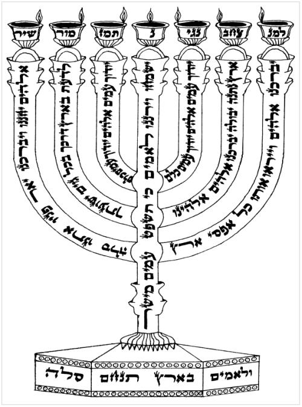

(כשיעור
משנתו קודם שיטול ידיו יאמר)
מודה
אני (האשה
אומרת: מודה) לפניך מלך חי וקים שהחזרת בי נשמתי
בחמלה, רבה אמונתך:
ברכות
השחר
(אחר
שנטל ידיו, לפני שינגבן יגביהן ויאמר הברכה, (ואם היה ער כל הלילה – לא יברך אלא
יטול בלא ברכה))
ברוך אתה
יהוה אלהינו מלך העולם, אשר קדשנו במצותיו וצונו
על נטילת ידים:
(ובכל
פעם שעושה צרכיו יברך ברכת אשר יצר:)
ברוך אתה יהוה אלהינו מלך העולם,
אשר יצר את האדם בחכמה, וברא בו נקבים נקבים, חלולים
חלולים. גלוי וידוע לפני כסא כבודך, שאם יסתם אחד
מהם, או אם יפתח אחד מהם, אי אפשר להתקים אפלו שעה
אחת. ברוך אתה יהוה, רופא כל בשר ומפליא לעשות:
(יסמוך
ברכת אלהי נצור לברכת אשר יצר)
אלהי, נשמה שנתת בי טהורה. אתה
בראתה, אתה יצרתה, אתה נפחתה בי, ואתה משמרה
בקרבי, ואתה עתיד לטלה ממני, ולהחזירה בי לעתיד
לבוא. כל זמן שהנשמה בקרבי מודה אני לפניך יהוה
אלהי ואלהי אבותי. רבון כל המעשים אדון כל הנשמות.
ברוך אתה יהוה, המחזיר נשמות לפגרים מתים:
ברוך אתה יהוה אלהינו מלך
העולם. הנותן לשכוי בינה להבחין בין יום ובין לילה:
ברוך אתה יהוה אלהינו מלך
העולם. פוקח עורים:
ברוך אתה יהוה אלהינו מלך
העולם. מתיר אסורים:
ברוך אתה יהוה אלהינו מלך
העולם. זוקף כפופים:
ברוך אתה יהוה אלהינו מלך
העולם. מלביש ערמים:
ברוך אתה יהוה אלהינו מלך
העולם. הנותן ליעף כח:
ברוך אתה יהוה אלהינו מלך
העולם. רוקע הארץ על המים:
ברוך אתה יהוה אלהינו מלך
העולם. המכין מצעדי גבר:
(בתשעה
באב וביום הכיפורים, אין אומרים ברכת "שעשה לי כל צרכי" והנוהגים לברך – יש להם על
מה לסמוך)
ברוך אתה יהוה
אלהינו מלך העולם. שעשה לי כל צרכי:
ברוך אתה יהוה אלהינו מלך
העולם. אוזר ישראל בגבורה:
ברוך אתה יהוה אלהינו מלך
העולם. עוטר ישראל בתפארה:
ברוך אתה יהוה אלהינו מלך
העולם. שלא עשני גוי: (האשה
אומרת: גויה)
ברוך אתה יהוה אלהינו מלך
העולם. שלא עשני עבד: (האשה
אומרת: שפחה)
(האיש
מברך)
ברוך אתה יהוה
אלהינו מלך העולם. שלא עשני אשה:
(האשה
מברכת ללא שם ומלכות)
ברוך
שעשני כרצונו:
ברוך אתה יהוה אלהינו מלך
העולם. המעביר חבלי שנה מעיני ותנומה מעפעפי. ויהי
רצון מלפניך יהוה, אלהי ואלהי אבותי, שתרגיליני
בתורתך, ותדביקני במצותיך, ואל תביאני לידי חטא,
ולא לידי עון, ולא לידי ניסיון, ולא לידי בזיון,
ותרחיקני מיצר הרע, ותדביקני ביצר הטוב, וכוף את
יצרי להשתעבד לך, ותנני היום ובכל יום לחן ולחסד
ולרחמים בעיניך ובעיני כל רואי, וגמלני חסדים טובים.
ברוך אתה יהוה, גומל חסדים טובים לעמו ישראל:
יהי רצון מלפניך יהוה,
אלהי ואלהי אבותי, שתצילני היום ובכל יום ויום, מעזי
פנים, ומעזות פנים, מאדם רע, מיצר רע, מחבר רע, משכן
רע, מפגע רע, מעין הרע, ומלשון הרע, מדין קשה, ומבעל
דין קשה, בין שהוא בן ברית, ובין שאינו בן ברית:
ברכות
התורה
ברוך אתה יהוה אלהינו מלך
העולם אשר קדשנו במצותיו וצונו על דברי תורה:
והערב נא, יהוה אלהינו, את
דברי תורתך בפינו ובפיפיות עמך בית ישראל, ונהיה
אנחנו, וצאצאינו, וצאצאי צאצאינו, וצאצאי עמך בית
ישראל, כלנו יודעי שמך, ולומדי תורתך לשמה. ברוך
אתה יהוה, המלמד תורה לעמו ישראל:
ברוך אתה יהוה אלהינו מלך
העולם, אשר בחר בנו מכל העמים ונתן לנו את תורתו.
ברוך אתה יהוה נותן התורה:
וידבר יהוה אל משה לאמר.
דבר אל אהרן ואל בניו לאמר כה תברכו את בני ישראל
אמור להם. יברכך יהוה וישמרך. יאר יהוה פניו אליך
ויחנך. ישא יהוה פניו אליך וישם לך שלום. ושמו את
שמי על בני ישראל ואני אברכם:
סדר תיקון
חצות
לשם יחוד קודשא בריך הוא
ושכינתה, בדחילו ורחימו, ורחימו ודחילו, ליחדא שם
יוד ק"י בוא"ו ק"י ביחודא שלים בשם כל ישראל, הריני
מוכן לומר תיקון רחל ותיקון לאה (בימים
המיוחדים: תיקון לאה, בימי בין המיצרים: תיקון רחל) כמו
שסדרו לנו רבותינו זכרונם לברכה, לתקן את שרשם
(שרשו) במקום עליון, לעשות נחת רוח ליוצרנו ולעשות רצון
בוראנו. ויהי נעם אדני אלהינו עלינו. ומעשה ידינו
כוננה עלינו. ומעשה ידינו כוננהו: (שתי
פעמים)
אנא יהוה אלהינו ואלהי
אבותינו. תבא לפניך תפלתנו. ואל תתעלם מלכנו
מתחנתנו. שאין אנחנו עזי פנים וקשי ערף לומר לפניך
יהוה אלהינו ואלהי אבותינו צדיקים אנחנו ולא חטאנו.
אבל חטאנו. עוינו. פשענו. אנחנו ואבותינו ואנשי
ביתנו: אשמנו. בגדנו. גזלנו.
דברנו דפי ולשון הרע. העוינו.
והרשענו. זדנו. חמסנו. טפלנו שקר
ומרמה. יעצנו עצות רעות. כזבנו. כעסנו.
לצנו. מרדנו. מרינו דבריך. נאצנו.
נאפנו. סררנו. עוינו. פשענו. פגמנו.
צררנו. צערנו אב ואם. קשינו ערף.
רשענו. שחתנו. תעבנו. תעינו
ותעתענו. וסרנו ממצותיך וממשפטיך הטובים ולא
שוה לנו. ואתה צדיק על כל הבא עלינו. כי אמת עשית.
ואנחנו הרשענו:
מה נאמר לפניך יושב מרום,
ומה נספר לפניך שוכן שחקים, הלא הנסתרות והנגלות
אתה יודע, אתה יודע רזי עולם, ותעלומות סתרי כל חי,
אתה חופש כל חדרי בטן, רואה כליות ולב, אין דבר נעלם
ממך, ואין נסתר מנגד עיניך: יהי רצון מלפניך, יהוה
אלהינו ואלהי אבותינו, שתמחול לנו את כל חטאותינו,
ותכפר לנו את כל עונותינו, ותמחול ותסלח לכל
פשעינו:
תיקון
רחל
על נהרות בבל שם ישבנו גם
בכינו בזכרנו את ציון: על ערבים בתוכה תלינו
כנרותינו: כי שם שאלונו שובינו דברי שיר ותוללינו
שמחה שירו לנו משיר ציון: איך נשיר את שיר יהוה על
אדמת נכר: אם אשכחך ירושלם תשכח ימיני: תדבק
לשוני לחכי אם לא אזכרכי אם לא אעלה את ירושלם על
ראש שמחתי: זכר יהוה לבני אדום את יום ירושלם האמרים
ערו ערו עד היסוד בה: בת בבל השדודה אשרי שישלם
לך את גמולך שגמלת לנו: אשרי שיאחז ונפץ את
עלליך אל הסלע:
מזמור לאסף אלהים באו גוים
בנחלתך טמאו את היכל קדשך שמו את ירושלם לעיים:
נתנו את נבלת עבדיך מאכל לעוף השמים בשר חסידיך
לחיתו ארץ: שפכו דמם כמים סביבות ירושלם ואין קובר:
היינו חרפה לשכנינו לעג וקלס לסביבותינו: עד מה יהוה
תאנף לנצח תבער כמו אש קנאתך: שפך חמתך אל הגוים
אשר לא ידעוך ועל ממלכות אשר בשמך לא קראו: כי אכל
את יעקב ואת נוהו השמו: אל תזכר לנו עונת ראשנים
מהר יקדמונו רחמיך כי דלונו מאד: עזרנו אלהי ישענו
על דבר כבוד שמך והצילנו וכפר על חטאתינו למען
שמך: למה יאמרו הגוים איה אלהיהם יודע בגוים
לעינינו נקמת דם עבדיך השפוך: תבוא לפניך אנקת אסיר
כגדל זרועך הותר בני תמותה: והשב לשכנינו שבעתים
אל חיקם חרפתם אשר חרפוך אדני: ואנחנו עמך וצאן
מרעיתך נודה לך לעולם לדר ודר נספר תהלתך:
זכר יהוה מה היה לנו הביטה
וראה את חרפתנו: נחלתנו נהפכה לזרים בתינו לנכרים:
יתומים היינו ואין אב אמתינו כאלמנות: מימינו בכסף
שתינו עצינו במחיר יבאו: על צוארנו נרדפנו יגענו
ולא הונח לנו: מצרים נתנו יד אשור לשבע לחם: אבתינו
חטאו ואינם ואנחנו עונתיהם סבלנו: עבדים משלו בנו
פרק אין מידם: בנפשנו נביא לחמנו מפני חרב המדבר:
עורנו כתנור נכמרו מפני זלעפות רעב: נשים בציון
ענו בתלת בערי יהודה: שרים בידם נתלו פני זקנים לא
נהדרו: בחורים טחון נשאו ונערים בעץ כשלו: זקנים
משער שבתו בחורים מנגינתם: שבת משוש לבנו נהפך
לאבל מחלנו: (כשיאמר:
נפלה עטרת ראשנו - יכוף ראשו בקרקע עד: הלכו בו)
נפלה עטרת ראשנו אוי נא לנו כי חטאנו: על זה היה דוה
לבנו על אלה חשכו עינינו: על הר ציון ששמם שועלים
הלכו בו: אתה יהוה לעולם תשב כסאך לדר ודור: למה
לנצח תשכחנו תעזבנו לארך ימים: השיבנו יהוה אליך
ונשובה חדש ימינו כקדם: כי אם מאס מאסתנו קצפת
עלינו עד מאד: השיבנו יהוה אליך ונשובה חדש ימינו
כקדם:
הבט משמים וראה מזבל
קדשך ותפארתך איה קנאתך וגבורתך המון מעיך
ורחמיך אלי התאפקו: כי אתה אבינו כי אברהם לא
ידענו וישראל לא יכירנו אתה יהוה אבינו גאלנו
מעולם שמך: למה תתענו יהוה מדרכיך תקשיח לבנו
מיראתך שוב למען עבדיך שבטי נחלתך: למצער ירשו
עם קדשך צרינו בוססו מקדשך:
ועתה יהוה אבינו אתה
אנחנו החמר ואתה יצרנו ומעשה ידך כלנו: אל תקצף
יהוה עד מאד ואל לעד תזכר עון הן הבט נא עמך כלנו:
ערי קדשך היו מדבר ציון מדבר היתה ירושלם שממה:
בית קדשנו ותפארתנו אשר הללוך אבתינו היה לשרפת
אש וכל מחמדינו היה לחרבה: העל אלה תתאפק יהוה
תחשה ותעננו עד מאד:
(בימי
בין המיצרים בחצות היום - מוסיפים כאן מזמורים נוספים שלא הבאנו כאן)
על חומתיך ירושלם הפקדתי
שמרים כל היום וכל הלילה תמיד לא יחשו המזכרים את
יהוה אל דמי לכם: ואל תתנו דמי לו עד יכונן ועד ישים
את ירושלם תהלה בארץ: נשבע יהוה בימינו ובזרוע
עזו אם אתן את דגנך עוד מאכל לאיביך ואם ישתו בני
נכר תירושך אשר יגעת בו: כי מאספיו יאכלהו והללו
את יהוה ומקבציו ישתהו בחצרות קדשי:
אתה תקום תרחם ציון כי עת
לחננה כי בא מועד: כי רצו עבדיך את אבניה ואת עפרה
יחננו: בונה ירושלם יהוה נדחי ישראל יכנס:
תיקון
לאה
למנצח משכיל לבני קרח:
כאיל תערג על אפיקי מים כן נפשי תערג אליך אלהים:
צמאה נפשי לאלהים לאל חי מתי אבוא ואראה פני אלהים:
היתה לי דמעתי לחם יומם ולילה באמר אלי כל היום איה
אלהיך: אלה אזכרה ואשפכה עלי נפשי כי אעבר בסך
אדדם עד בית אלהים בקול רנה ותודה המון חוגג: מה
תשתוחחי נפשי ותהמי עלי הוחילי לאלהים כי עוד
אודנו ישועות פניו: אלהי עלי נפשי תשתוחח על כן
אזכרך מארץ ירדן וחרמונים מהר מצער: תהום אל תהום
קורא לקול צנוריך כל משבריך וגליך עלי עברו: יומם
יצוה יהוה חסדו ובלילה שירו עמי תפלה לאל חיי:
אומרה לאל סלעי למה שכחתני למה קדר אלך בלחץ אויב:
ברצח בעצמותי חרפוני צוררי באמרם אלי כל היום איה
אלהיך: מה תשתוחחי נפשי ומה תהמי עלי הוחילי לאלהים
כי עוד אודנו ישועת פני ואלהי:
שפטני אלהים וריבה ריבי
מגוי לא חסיד מאיש מרמה ועולה תפלטני: כי אתה אלהי
מעוזי למה זנחתני למה קדר אתהלך בלחץ אויב: שלח
אורך ואמתך המה ינחוני יביאוני אל הר קדשך ואל
משכנותיך: ואבואה אל מזבח אלהים אל אל שמחת גילי
ואודך בכנור אלהים אלהי: מה תשתוחחי נפשי ומה
תהמי עלי הוחילי לאלהים כי עוד אודנו ישועת פני
ואלהי:
(בימים
שאין אומרים תחנון לא יאמר מזמור זה)
למנצח מזמור לדוד: יענך יהוה
ביום צרה ישגבך שם אלהי יעקב: ישלח עזרך מקדש
ומציון יסעדך: יזכר כל מנחתך ועולתך ידשנה
סלה: יתן לך כלבבך וכל עצתך ימלא: נרננה בישועתך
ובשם אלהינו נדגל ימלא יהוה כל משאלותיך: עתה
ידעתי כי הושיע יהוה משיחו יענהו משמי קדשו
בגברות ישע ימינו: אלה ברכב ואלה בסוסים ואנחנו
בשם יהוה אלהינו נזכיר: המה כרעו ונפלו ואנחנו
קמנו ונתעודד: יהוה הושיעה המלך יעננו ביום
קראנו:
לדוד מזמור ליהוה הארץ
ומלואה תבל וישבי בה: כי הוא על ימים יסדה ועל
נהרות יכוננה: מי יעלה בהר יהוה ומי יקום במקום קדשו:
נקי כפים ובר לבב אשר לא נשא לשוא נפשי ולא נשבע
למרמה: ישא ברכה מאת יהוה וצדקה מאלהי ישעו: זה דור
דרשיו מבקשי פניך יעקב סלה: שאו שערים ראשיכם
והנשאו פתחי עולם ויבוא מלך הכבוד: מי זה מלך
הכבוד יהוה עזוז וגבור יהוה גבור מלחמה: שאו שערים
ראשיכם ושאו פתחי עולם ויבא מלך הכבוד: מי הוא זה
מלך הכבוד יהוה צבאות הוא מלך הכבוד סלה:
למנצח בנגינת מזמור שיר:
אלהים יחננו ויברכנו יאר פניו אתנו סלה: לדעת בארץ
דרכך בכל גוים ישועתך: יודוך עמים אלהים יודוך
עמים כלם: ישמחו וירננו לאמים כי תשפט עמים
מישור ולאמים בארץ תנחם סלה: יודוך עמים אלהים יודוך
עמים כלם: ארץ נתנה יבולה יברכנו אלהים אלהינו:
יברכנו אלהים וייראו אתו כל אפסי ארץ:
הללויה אודה יהוה בכל לבב
בסוד ישרים ועדה: גדלים מעשי יהוה דרושים לכל
חפציהם: הוד והדר פעלו וצדקתו עמדת לעד: זכר עשה
לנפלאתיו חנון ורחום יהוה: טרף נתן ליראיו יזכר לעולם
בריתו: כח מעשיו הגיד לעמו לתת להם נחלת גוים:
מעשי ידיו אמת ומשפט נאמנים כל פקודיו: סמוכים לעד
לעולם עשוים באמת וישר: פדות שלח לעמו צוה לעולם
בריתו קדוש ונורא שמו: ראשית חכמה יראת יהוה שכל טוב
לכל עשיהם תהלתו עמדת לעד:
למנצח מזמור לדוד: בבוא
אליו נתן הנביא כאשר בא אל בת שבע: חנני אלהים
כחסדך כרב רחמיך מחה פשעי: הרב כבסני מעוני
ומחטאתי טהרני: כי פשעי אני אדע וחטאתי נגדי תמיד:
לך לבדך חטאתי והרע בעיניך עשיתי למען תצדק
בדברך תזכה בשפטך: הן בעוון חוללתי ובחטא
יחמתני אמי: הן אמת חפצת בטחות ובסתם חכמה תודיעני:
תחטאני באזוב ואטהר תכבסני ומשלג אלבין:
תשמיעני ששון ושמחה תגלנה עצמות דכית: הסתר
פניך מחטאי וכל עונתי מחה: לב טהור ברא לי אלהים ורוח
נכון חדש בקרבי: אל תשליכני מלפניך ורוח קדשך
אל תקח ממני: השיבה לי ששון ישעך ורוח נדיבה
תסמכני: אלמדה פשעים דרכיך וחטאים אליך ישובו:
הצילני מדמים אלהים אלהי תשועתי תרנן לשוני
צדקתך: אדני שפתי תפתח ופי יגיד תהלתך: כי לא
תחפץ זבח ואתנה עולה לא תרצה: זבחי אלהים רוח נשברה
לב נשבר ונדכה אלהים לא תבזה: היטיבה ברצונך את ציון
תבנה חומות ירושלם: אז תחפץ זבחי צדק עולה וכליל אז
יעלו על מזבחך פרים:
(בימים
שאין אומרים תחנון לא יאמר פסוק זה)
עד
אנה בכיה בציון ומספד בירושלים:
תקום תרחם ציון, תבנה חומות ירושלים:
(ויש
נוהגים לומר או"א ומזמור בשוב ה' כדי לפסוק בנחמה (בא"ח וישלח) )
אלהינו ואלהי אבותינו, מלך רחמן
רחם עלינו, טוב ומטיב הדרש לנו, שובה עלינו בהמון
רחמיך, בגלל אבות שעשו רצונך, בנה ביתך כבתחלה,
כונן בית מקדשך על מכונו, הראנו בבנינו, שמחנו
בתקונו, והשב שכינתך לתוכו, והשב כהנים לעבודתם,
ולויים לדוכנם, לשירם ולזמרם, והשב ישראל לנויהם.
ושם נעלה ונראה ונשתחוה לפניך: יהי רצון מלפניך
יהוה אלהינו ואלהי אבתינו, שתעלנו בשמחה לארצנו,
ותטענו בגבולנו, ושם נעשה לפניך את קרבנות
חבתינו, תמידים כסדרם ומוספים כהלכתם:
שיר המעלות בשוב יהוה את שיבת ציון היינו
כחלמים: אז ימלא שחוק פינו ולשוננו רנה אז יאמרו
בגוים הגדיל יהוה לעשות עם אלה: הגדיל יהוה לעשות
עמנו היינו שמחים: שובה יהוה את שביתנו כאפיקים
בנגב: הזרעים בדמעה ברנה יקצרו: הלוך ילך ובכה
נשא משך הזרע בא יבוא ברנה נשא אלמתיו:
תפילת שחרית לימי
החול
פתיחת
אליהו
(נוהגים
לומר פתיחת אליהו לפני התפילה שהיא מסוגלת לקבלת התפילה ולפתיחת הלב)
ויהי נעם יהוה אלהינו עלינו
ומעשה ידינו כוננה עלינו, ומעשה ידינו כוננהו:
פתח אליהו הנביא זכור לטוב
ואמר, רבון עלמין דאנת הוא חד ולא בחשבן, אנת הוא
עלאה על כל עלאין, סתימא על כל סתימין, לית מחשבה
תפיסא בך כלל, אנת הוא דאפקת עשר תקונין,
וקרינן לון עשר ספירן, לאנהגא בהון עלמין סתימין דלא
אתגלין, ועלמין דאתגלין, ובהון אתכסיאת מבני
נשא, ואנת הוא דקשיר לון, ומיחד לון, ובגין דאנת
מלגאו, כל מאן דאפריש חד מן חבריה מאלין עשר,
אתחשיב ליה כאלו אפריש בך:
ואלין עשר ספירן אינון אזלין כסדרן, חד אריך, וחד
קצר, וחד בינוני, ואנת הוא דאנהיג לון, ולית מאן
דאנהיג לך, לא לעילא ולא לתתא ולא מכל סטרא, לבושין
תקנת לון, דמנייהו פרחין נשמתין לבני נשא, וכמה
גופין תקנת לון, דאתקריאו גופא לגבי לבושין
דמכסין עליהון, ואתקריאו בתקונא דא, חסד דרועא
ימינא, גבורה דרועא שמאלא, תפארת גופא, נצח והוד תרין
שוקין, יסוד סיומא דגופא אות ברית קדש, מלכות פה תורה
שבעל פה קרינן לה: חכמה מוחא איהי מחשבה מלגאו,
בינה לבא ובה הלב מבין, ועל אלין תרין כתיב הנסתרות
ליהוה אלהינו, כתר עליון איהו כתר מלכות, ועליה אתמר
מגיד מראשית אחרית, ואיהו קרקפתא דתפלי, מלגאו איהו
יו"ד ק"א וא"ו ק"א, דאיהו ארח אצילות, איהו שקיו דאילנא
בדרועוי וענפוי, כמיא דאשקי לאילנא, ואתרבי
בההוא שקיו:
רבון העולמים, אנת הוא עלת
העלות, וסבת הסבות, דאשקי לאילנא בההוא נביעו,
וההוא נביעו איהו כנשמתא לגופא, דאיהי חיים לגופא,
ובך לית דמיון ולית דיוקנא מכל מה דלגאו ולבר, ובראת
שמיא וארעא, ואפקת מנהון שמשא וסיהרא וכוכביא
ומזלי, ובארעא אילנין ודשאין וגנתא דעדן ועשבין
וחיון ועופין ונונין ובני נשא, לאשתמודעא בהון
עלאין, ואיך יתנהגון בהון עלאין ותתאין, ואיך
אשתמודען מעלאי ותתאי, ולית דידע בך כלל ובר
מנך לית יחודא בעלאי ותתאי, ואנת אשתמודע אדון
על כלא, וכל ספירן כל חד אית ליה שם ידיע, ובהון
אתקריאו מלאכיא, ואנת לית לך שם ידיע, דאנת הוא
ממלא כל שמהן, ואנת הוא שלימו דכלהו, וכד אנת
תסתלק מנהון, אשתארו כלהו שמהן כגופא בלא
נשמתא: אנת חכים ולאו בחכמה ידיעא, אנת הוא מבין
ולא מבינה ידיעא, לית לך אתר ידיעא אלא לאשתמודעא
תוקפך וחילך לבני נשא, ולאחזאה לון איך אתנהיג עלמא
בדינא וברחמי, דאינון צדק ומשפט, כפום עובדיהון
דבני נשא, דין איהו גבורה, משפט עמודא דאמצעיתא,
צדק מלכותא קדישא, מאזני צדק תרין סמכי קשוט, הין צדק
אות ברית, כלא לאחזאה איך אתנהיג עלמא, אבל לאו דאית
לך צדק ידיעא דאיהו דין, ולאו משפט ידיעא דאיהו
רחמי, ולאו מכל אלין מדות כלל: קום רבי שמעון
ויתחדשון מלין על ידך, דהא רשותא אית לך (נ"א אתיהב לך)
לגלאה רזין טמירין על ידך, מה דלא אתיהב רשו לגלאה
לשום בר נש עד כען:
קם רבי שמעון פתח ואמר, לך
יהוה הגדולה והגבורה וכו', עלאין שמעו אינון דמיכין
דחברון, ורעיא מהימנא אתערו משנתכון, הקיצו ורננו
שוכני עפר, אלין אינון צדיקיא דאינון מסטרא דההיא
דאתמר בה אני ישנה ולבי ער, ולאו אינון מתים, ובגין
דא אתמר בהון הקיצו ורננו וגו', רעיא מהימנא, אנת
ואבהן הקיצו ורננו לאתערותא דשכינתא, דאיהי
ישנה בגלותא, דעד כען צדיקיא כלהו דמיכין ושינתא
בחוריהון: מיד יהיבת שכינתא תלת קלין לגבי רעיא
מהימנא, ויימא ליה קום רעיא מהימנא, דהא עלך אתמר קול
דודי דופק לגבאי בארבע אתון דיליה, ויימא בהון,
פתחי לי אחותי רעיתי יונתי תמתי, דהא תם עונך בת
ציון, לא יוסיף להגלותך: שראשי נמלא טל, מאי נמלא טל,
אלא אמר קודשא בריך הוא, אנת חשבת דמיומא דאתחרב
בי מקדשא דעאלנא בביתא דילי, ועאלנא בישובא, לאו
הכי, דלא אעלנא כל זמנא דאנת בגלותא, הרי לך סימנא,
שראשי נמלא טל, ה"א שכינתא בגלותא, שלימו דילה
וחיים דילה איהו ט"ל, ודא איהו יו"ד ה"א וא"ו, וה"א איהי
שכינתא דלא מחשבן ט"ל, אלא יו"ד ק"א וא"ו, דסליקו אתון
לחשבן ט"ל, דאיהי מליא לשכינתא מנביעו דכל מקורין
עלאין, מיד קם רעיא מהימנא, ואבהן קדישין עמיה, עד
כאן רזא דיחודא. ברוך יהוה לעולם אמן ואמן:
סדר עטיפת
ציצית
(לפני
שיתעטף בטלית גדול יברך)
ברוך
אתה יהוה אלהינו מלך העולם, אשר קדשנו במצותיו
וצונו להתעטף בציצית:
סדר הנחת
תפילין
(לפני
שיקשור התפילין בזרועו – יברך ויכוון לפטור גם את התפילין של ראש)
ברוך אתה יהוה אלהינו מלך העולם,
אשר קדשנו במצותיו וצונו להניח תפלין:
(לאחר
הנחת התפילין יאמר שתי פרשיות אלו, ואם אינו יכול לאומרם – יאמרם לאחר התפילה לפני
חליצת התפילין)
וידבר יהוה אל
משה לאמר: קדש לי כל בכור פטר
כל רחם בבני ישראל באדם ובבהמה לי הוא: ויאמר משה
אל העם זכור את היום הזה אשר יצאתם ממצרים מבית
עבדים כי בחזק יד הוציא יהוה אתכם מזה ולא יאכל חמץ:
היום אתם יצאים בחדש האביב: והיה כי יביאך יהוה אל
ארץ הכנעני והחתי והאמרי והחוי והיבוסי אשר
נשבע לאבתיך לתת לך ארץ זבת חלב ודבש ועבדת את
העבדה הזאת בחדש הזה: שבעת ימים תאכל מצת וביום
השביעי חג ליהוה: מצות יאכל את שבעת הימים ולא יראה
לך חמץ ולא יראה לך שאר בכל גבלך: והגדת לבנך
ביום ההוא לאמר בעבור זה עשה יהוה לי בצאתי ממצרים:
והיה לך לאות על ידך ולזכרון בין עיניך למען תהיה
תורת יהוה בפיך כי ביד חזקה הוצאך יהוה ממצרים:
ושמרת את החקה הזאת למועדה מימים ימימה:
והיה כי יבאך יהוה אל ארץ
הכנעני כאשר נשבע לך ולאבתיך ונתנה לך:
והעברת כל פטר רחם ליהוה וכל פטר שגר בהמה אשר
יהיה לך הזכרים ליהוה: וכל פטר חמר תפדה בשה ואם לא
תפדה וערפתו וכל בכור אדם בבניך תפדה: והיה כי
ישאלך בנך מחר לאמר מה זאת ואמרת אליו בחזק יד
הוציאנו יהוה ממצרים מבית עבדים: ויהי כי הקשה פרעה
לשלחנו ויהרג יהוה כל בכור בארץ מצרים מבכר אדם
ועד בכור בהמה על כן אני זבח ליהוה כל פטר רחם
הזכרים וכל בכור בני אפדה: והיה לאות על ידכה
ולטוטפת בין עיניך כי בחזק יד הוציאנו יהוה ממצרים:
ותתפלל
חנה
ותתפלל חנה ותאמר עלץ
לבי ביהוה רמה קרני ביהוה רחב פי על אויבי כי
שמחתי בישועתך: אין קדוש כיהוה כי אין בלתך ואין
צור כאלהינו: אל תרבו תדברו גבהה גבהה יצא עתק
מפיכם כי אל דעות יהוה ולו נתכנו עללות: קשת גברים
חתים ונכשלים אזרו חיל: שבעים בלחם נשכרו ורעבים
חדלו עד עקרה ילדה שבעה ורבת בנים אמללה: יהוה ממית
ומחיה מוריד שאול ויעל: יהוה מוריש ומעשיר משפיל אף
מרומם: מקים מעפר דל מאשפת ירים אביון להושיב עם
נדיבים וכסא כבוד ינחלם כי ליהוה מצקי ארץ וישת
עליהם תבל: רגלי חסידיו ישמר ורשעים בחשך ידמו
כי לא בכח יגבר איש: יהוה יחתו מריביו עליו בשמים
ירעם יהוה ידין אפסי ארץ ויתן עז למלכו וירם קרן
משיחו: אתוהי כמה רברבין ותמהוהי כמה תקיפין מלכותה
מלכות עלם ושלטנה עם דר ודר: ואנחנו עמך וצאן
מרעיתך נודה לך לעולם לדר ודר נספר תהלתך: ערב
ובקר וצהרים אשיחה ואהמה וישמע קולי: ברן יחד
כוכבי בקר ויריעו כל בני אלהים: לא אירא מרבבות עם
אשר סביב שתו עלי: ואני ביהוה אצפה אוחילה לאלהי
ישעי ישמעני אלהי: (בשבת
יום טוב אין אומרים פסוק זה) אל
תשמחי איבתי לי כי נפלתי קמתי כי אשב בחשך
יהוה אור לי: כי לך יהוה הוחלתי אתה תענה אדני
אלהי: רגלי עמדה במישור במקהלים אברך יהוה:
תפילת
שחרית
לשם יחוד קודשא בריך הוא
ושכינתה, בדחילו ורחימו, ורחימו ודחילו, ליחדא שם
יוד ק"י בוא"ו ק"י ביחודא שלים בשם כל ישראל. הנה
אנחנו באים להתפלל תפלת שחרית, שתקן אברהם
אבינו עליו השלום, עם כל המצות הכלולות בה, לתקן את
שרשה במקום עליון, לעשות נחת רוח ליוצרנו ולעשות
רצון בוראנו. ויהי נעם אדני אלהינו עלינו. ומעשה ידינו
כוננה עלינו. ומעשה ידינו כוננהו: (שתי
פעמים)
הריני מקבל עלי מצות עשה
של "ואהבת לרעך כמוך" והריני אוהב כל אחד מבני
ישראל כנפשי ומאודי, והריני מזמן את פי להתפלל
לפני מלך מלכי המלכים, הקדוש ברוך הוא:
אלהינו ואלהי אבותינו,
זכרנו בזכרון טוב מלפניך, ופקדנו בפקודת ישועה
ורחמים משמי שמי קדם, וזכר לנו יהוה אלהינו אהבת
הקדמונים אברהם יצחק וישראל עבדיך, את הברית ואת
החסד ואת השבועה שנשבעת לאברהם אבינו בהר
המוריה, ואת העקדה שעקד את יצחק בנו על גבי
המזבח ככתוב בתורתך:
ויהי אחר הדברים האלה
והאלהים נסה את אברהם ויאמר אליו אברהם ויאמר הנני:
ויאמר קח נא את בנך את יחידך אשר אהבת את יצחק ולך
לך אל ארץ המריה והעלהו שם לעלה על אחד ההרים אשר
אמר אליך: וישכם אברהם בבקר ויחבש את חמרו
ויקח את שני נעריו אתו ואת יצחק בנו ויבקע עצי עלה
ויקם וילך אל המקום אשר אמר לו האלהים: ביום
השלישי וישא אברהם את עיניו וירא את המקום מרחק:
ויאמר אברהם אל נעריו שבו לכם פה עם החמור ואני
והנער נלכה עד כה ונשתחוה ונשובה אליכם: ויקח
אברהם את עצי העלה וישם על יצחק בנו ויקח בידו את
האש ואת המאכלת וילכו שניהם יחדו: ויאמר יצחק אל
אברהם אביו ויאמר אבי ויאמר הנני בני ויאמר הנה
האש והעצים ואיה השה לעלה: ויאמר אברהם אלהים יראה
לו השה לעלה בני וילכו שניהם יחדו: ויבאו אל
המקום אשר אמר לו האלהים ויבן שם אברהם את המזבח
ויערך את העצים ויעקד את יצחק בנו וישם אתו על
המזבח ממעל לעצים: וישלח אברהם את ידו ויקח את
המאכלת לשחט את בנו: ויקרא אליו מלאך יהוה מן
השמים ויאמר אברהם אברהם ויאמר הנני: ויאמר אל
תשלח ידך אל הנער ואל תעש לו מאומה כי עתה ידעתי
כי ירא אלהים אתה ולא חשכת את בנך את יחידך ממני:
וישא אברהם את עיניו וירא והנה איל אחר נאחז
בסבך בקרניו וילך אברהם ויקח את האיל ויעלהו
לעלה תחת בנו: ויקרא אברהם שם המקום ההוא יהוה
יראה אשר יאמר היום בהר יהוה יראה: ויקרא מלאך
יהוה אל אברהם שנית מן השמים: ויאמר בי נשבעתי
נאם יהוה כי יען אשר עשית את הדבר הזה ולא חשכת
את בנך את יחידך: כי ברך אברכך והרבה ארבה את
זרעך ככוכבי השמים וכחול אשר על שפת הים וירש
זרעך את שער איביו: והתברכו בזרעך כל גויי הארץ
עקב אשר שמעת בקלי: וישב אברהם אל נעריו ויקמו
וילכו יחדו אל באר שבע וישב אברהם בבאר שבע:
ושחט אתו על ירך המזבח
צפנה לפני יהוה וזרקו בני אהרן הכהנים את דמו על
המזבח סביב:
(יש
נוהגים לומר את הקטע הבא)
יהי רצון
מלפניך יהוה אלהינו ואלהי אבותינו, שתתמלא רחמים
עלינו, ובכן ברוב רחמיך תזכור לנו עקדתו של יצחק
אבינו בן אברהם אבינו עליהם השלום, כאלו אפרו צבור
ומונח על גבי המזבח, ותביט באפרו לרחם עלינו,
ולבטל מעלינו כל גזירות קשות ורעות, ותזכנו לשוב
בתשובה שלמה לפניך, ותצילנו מיצר הרע ומכל חטא
ועון, ותאריך ימינו בטוב ושנותינו בנעימים:
רבונו של עולם, כמו שכבש
אברהם אבינו את רחמיו לעשות רצונך בלבב שלם, כן
יכבשו רחמיך את כעסך, ויגלו רחמיך על מדותיך,
ותתנהג עמנו יהוה אלהינו במדת החסד ובמדת הרחמים,
ותכנס לנו לפנים משורת הדין, ובטובך הגדול ישוב
חרון אפך, מעמך ומעירך ומארצך ומנחלתך, וקים
לנו יהוה אלהינו את הדבר שהבטחתנו בתורתך על ידי
משה עבדך כאמור: וזכרתי את בריתי יעקוב ואף את
בריתי יצחק ואף את בריתי אברהם אזכר והארץ אזכר:
ונאמר: ואף גם זאת בהיותם בארץ איביהם לא מאסתים ולא
געלתים לכלתם להפר בריתי אתם כי אני יהוה אלהיהם:
וזכרתי להם ברית ראשנים אשר הוצאתי אתם מארץ מצרים
לעיני הגוים להית להם לאלהים אני יהוה: ונאמר: ושב
יהוה אלהיך את שבותך ורחמך ושב וקבצך מכל העמים
אשר הפיצך יהוה אלהיך שמה: אם יהיה נדחך בקצה
השמים משם יקבצך יהוה אלהיך ומשם יקחך:
והביאך יהוה אלהיך אל הארץ אשר ירשו אבתיך
וירשתה והיטבך והרבך מאבתיך: ונאמר על ידי נביאך:
יהוה חננו לך קוינו היה זרעם לבקרים אף ישועתנו
בעת צרה: ונאמר: ועת צרה היא ליעקב וממנה יושע:
ונאמר: בכל צרתם לו צר ומלאך פניו הושיעם באהבתו
ובחמלתו הוא גאלם וינטלם וינשאם כל ימי עולם:
ונאמר: מי אל כמוך נשא עון ועבר על פשע לשארית
נחלתו לא החזיק לעד אפו כי חפץ חסד הוא: ישוב ירחמנו
יכבש עונתינו ותשליך במצלות ים כל חטאותם: תתן
אמת ליעקב חסד לאברהם אשר נשבעת לאבתינו מימי
קדם: ונאמר: והביאותים אל הר קדשי ושמחתים בבית
תפלתי עולתיהם וזבחיהם לרצון על מזבחי כי ביתי בית
תפלה יקרא לכל העמים:
אלו דברים שאין להם שעור:
הפאה, והבכורים, והראיון, וגמילות חסדים, ותלמוד
תורה: אלו דברים שאדם עושה אותם ואוכל פרותיהם בעולם
הזה, והקרן קימת לעולם הבא: ואלו הן: כבוד אב ואם,
וגמילות חסדים, ובקור חולים, והכנסת אורחים, והשכמת
בית הכנסת, והבאת שלום בין אדם לחברו ובין איש לאשתו
ותלמוד תורה כנגד כלם.
לעולם יהא אדם ירא שמים
בסתר כבגלוי, ומודה על האמת, ודובר אמת בלבבו,
וישכים ויאמר: רבון העולמים ואדוני האדונים, לא על
צדקותינו אנחנו מפילים תחנונינו לפניך כי על רחמיך
הרבים: אדני שמעה, אדני סלחה, אדני הקשיבה ועשה ואל
תאחר. למענך אלהי, כי שמך נקרא על עירך ועל עמך:
מה אנחנו, מה חיינו, מה חסדנו, מה צדקותינו, מה נאמר
לפניך יהוה אלהינו ואלהי אבותינו, הלא כל הגיבורים
כאין לפניך, ואנשי השם - כלא היו, וחכמים כבלי
מדע, ונבונים כבלי השכל, ומותר האדם מן הבהמה - אין,
כי הכל הבל, לבד הנשמה הטהורה שהיא עתידה ליתן דין
וחשבון לפני כסא כבודך. וכל הגויים כאין נגדך,
שנאמר: הן גויים כמר מדלי וכשחק מאזנים נחשבו, הן
איים כדק יטול: אבל אנחנו עמך בני בריתך, בני
אברהם אהבך שנשבעת לו בהר המוריה, זרע יצחק
עקדך שנעקד על גבי המזבח, עדת יעקב בנך בכורך,
שמאהבתך שאהבת אותו, ומשמחתך ששמחת בו,
קראת שמו ישראל וישורון:
לפיכך אנחנו חייבים להודות
לך, ולשבחך ולפארך ולרוממך, ולתן שיר שבח
והודאה לשמך הגדול בכל יום תמיד. אשרינו, מה טוב
חלקינו, ומה נעים גורלנו, ומה יפה מאוד ירושתינו,
אשרינו שאנחנו משכימים ומעריבים בבתי כנסיות
ובבתי מדרשות ומיחדים שמך בכל יום תמיד אומרים
פעמיים באהבה:
(אם
רואה שזמן קריאת שמע עובר - יאמר כאן קריאת שמע כולה)
שמע
ישראל יהוה אלהינו יהוה אחד:
(ואומר
בלחש) ברוך, שם כבוד מלכותו,
לעולם ועד:
אתה
הוא אחד קודם שבראת העולם, ואתה הוא אחד לאחר שבראת
העולם, אתה הוא אל בעולם הזה, ואתה הוא אל בעולם הבא,
ואתה הוא ושנותיך לא יתמו: קדש שמך בעולמך על עם
מקדשי שמך, ובישועתך מלכנו תרום ותגביה קרננו,
ותושיענו בקרוב למען שמך, ברוך המקדש שמו ברבים:
אתה הוא יהוה האלהים
בשמים ממעל ועל הארץ מתחת, בשמי השמים
העליונים והתחתונים, אתה הוא ראשון ואתה הוא אחרון
ומבלעדיך אין אלהים. קבץ נפוצות קויך מארבע כנפות
הארץ. יכירו וידעו כל באי עולם כי אתה הוא האלהים
לבדך לכל ממלכות הארץ, אתה עשית את השמים ואת
הארץ, את הים ואת כל אשר בם, ומי בכל מעשה ידיך
בעליונים ובתחתונים שיאמר לך מה תעשה ומה תפעל.
אבינו שבשמים חי וקים, עשה עמנו חסד בעבור כבוד
שמך הגדול הגבור והנורא שנקרא עלינו, וקים לנו
יהוה אלהינו את הדבר שהבטחתנו על ידי צפניה חוזך
כאמור: בעת ההיא אביא אתכם ובעת קבצי אתכם כי אתן
אתכם לשם ולתהלה בכל עמי הארץ בשובי את שבותיכם
לעיניכם אמר יהוה:
יהי רצון מלפניך יהוה
אלהינו ואלהי אבותינו שתרחם עלינו, ותמחול לנו את כל
חטאותינו, ותכפר לנו את כל עוונותינו, ותמחול ותסלח
לכל פשעינו, ותבנה בית המקדש במהרה בימינו,
ונקריב לפניך קרבן התמיד שיכפר בעדינו, כמו
שכתבת עלינו בתורתך על ידי משה עבדך כאמור:
וידבר יהוה אל משה לאמר:
צו את בני ישראל ואמרת אלהם את קרבני לחמי לאשי
ריח ניחחי תשמרו להקריב לי במועדו: ואמרת להם זה
האשה אשר תקריבו ליהוה כבשים בני שנה תמימם שנים
ליום עלה תמיד: את הכבש אחד תעשה בבקר ואת הכבש
השני תעשה בין הערבים: ועשירית האיפה סלת למנחה
בלולה בשמן כתית רביעת ההין: עלת תמיד העשיה בהר
סיני לריח ניחח אשה ליהוה: ונסכו רביעת ההין לכבש
האחד בקדש הסך נסך שכר ליהוה: ואת הכבש השני
תעשה בין הערבים כמנחת הבקר וכנסכו תעשה אשה
ריח ניחח ליהוה:
פטום
הקטורת
אתה הוא יהוה אלהינו
שהקטירו אבותינו לפניך את קטרת הסמים בזמן שבית
המקדש קים, כאשר צוית אותם על יד משה נביאך
ככתוב בתורתך:
ויאמר יהוה אל משה קח לך
סמים נטף ושחלת וחלבנה סמים ולבנה זכה בד בבד
יהיה: ועשית אתה קטרת רקח מעשה רוקח ממלח טהור
קדש: ושחקת ממנה הדק ונתתה ממנה לפני העדת
באהל מועד אשר אועד לך שמה קדש קדשים תהיה לכם:
ונאמר: והקטיר עליו אהרן קטרת סמים בבקר בבקר
בהיטיבו את הנרת יקטירנה: ובהעלת אהרן את הנרת בין
הערבים יקטירנה קטרת תמיד לפני יהוה לדרתיכם:
תנו רבנן, פטום הקטרת
כיצד, שלש מאות וששים ושמונה מנים היו בה, שלש
מאות וששים וחמשה כמנין ימות החמה מנה בכל יום,
מחציתו בבקר ומחציתו בערב, ושלשה מנים יתרים שמהם
מכניס כהן גדול ונוטל מהם מלא חפניו ביום הכיפורים,
מחזירן למכתשת בערב יום הכיפורים כדי לקים מצות
דקה מן הדקה ואחד עשר סמנים היו בה ואלו הן:
הצרי והצפורן והחלבנה
והלבונה, משקל שבעים שבעים מנה. מור, וקציעה ושבלת
נרד וכרכם, משקל ששה עשר ששה עשר מנה. הקשט
שנים עשר, קלופה שלשה, קנמון תשעה, בורית כרשינה
תשעה קבין, יין קפריסין סאין תלת וקבין תלתא, ואם לא
מצא יין קפריסין, מביא חמר חור עתיק. מלח סדומית רובע,
מעלה עשן כל שהוא. רבי נתן הבבלי אומר: אף כפת
הירדן כל שהיא, אם נתן בה דבש פסלה, ואם חסר אחת
מכל סממניה, חיב מיתה:
רבן שמעון בן גמליאל אומר:
הצרי אינו אלא שרף הנוטף מעצי הקטף. בורית כרשינה
למה היא באה, כדי לשפות בה את הצפורן, כדי שתהא
נאה. יין קפריסין למה הוא בא, כדי לשרות בו את הצפורן,
כדי שתהא עזה. והלא מי רגלים יפין לה, אלא שאין
מכניסין מי רגלים במקדש מפני הכבוד:
תניא, רבי נתן אומר: כשהוא
שוחק, אומר הדק היטב, היטב הדק, מפני שהקול יפה
לבשמים. פטמה לחצאין כשרה: לשליש ולרביע, לא
שמענו. אמר רבי יהודה: זה הכלל אם כמדתה כשרה
לחצאין, ואם חסר אחת מכל סממניה, חיב מיתה.
תני בר קפרא: אחת לששים
או לשבעים שנה היתה באה של שירים לחצאין. ועוד תני
בר קפרא: אלו היה נותן בה קרטוב של דבש, אין אדם יכול
לעמד מפני ריחה. ולמה אין מערבין בה דבש, מפני
שהתורה אמרה: כי כל שאר וכל דבש לא תקטירו ממנו
אשה ליהוה: יהוה צבאות עמנו משגב לנו אלהי יעקב
סלה: יהוה צבאות אשרי אדם בטח בך: יהוה הושיעה
המלך יעננו ביום קראנו: וערבה ליהוה מנחת יהודה
וירושלם כימי עולם וכשנים קדמניות:
אביי מסדר סדר המערכה
משמא דגמרא, ואליבא דאבא שאול. מערכה גדולה קודמת
למערכה שניה של קטרת, ומערכה שניה של קטרת קודמת
לסדור שני גזירי עצים, וסדור שני גזירי עצים קודם
לדישון מזבח הפנימי, ודישון מזבח הפנימי קודם
להטבת חמש נרות, והטבת חמש נרות קודמת לדם התמיד, ודם
התמיד קודם להטבת שתי נרות, והטבת שתי נרות קודמת
לקטרת, וקטרת לאברים, ואברים למנחה, ומנחה לחביתין,
וחביתין לנסכין, ונסכין למוספין, ומוספין לבזיכין,
ובזיכין קודמין לתמיד של בין הערבים, שנאמר: וערך
עליה העלה והקטיר עליה חלבי השלמים: עליה השלם כל
הקרבנות כלם:
אנא בכח, גדולת ימינך, תתיר צרורה:
קבל רנת, עמך. שגבנו, טהרנו נורא:
נא גבור,
דורשי יחודך, כבבת שמרם:
ברכם טהרם, רחמי
צדקתך, תמיד גמלם:
חסין קדוש, ברב טובך, נהל
עדתך:
יחיד גאה, לעמך פנה, זוכרי קדשתך:
שועתנו קבל, ושמע צעקתנו, יודע תעלומות:
(ואומר
בלחש)
ברוך, שם כבוד מלכותו, לעולם
ועד:
רבון העולמים,
אתה ציויתנו להקריב קרבן התמיד במועדו, ולהיות
כהנים בעבודתם, ולוים בדוכנם, וישראל במעמדם.
ועתה בעוונותינו חרב בית המקדש ובטל התמיד, ואין
לנו לא כהן בעבודתו ולא לוי בדוכנו, ולא ישראל
במעמדו, ואתה אמרת: ונשלמה פרים שפתינו:
לכן יהי רצון מלפניך יהוה
אלהינו ואלהי אבותינו, שיהא שיח שפתותינו זה חשוב
ומקבל ומרוצה לפניך כאילו הקרבנו קרבן התמיד
במועדו ועמדנו על מעמדו, כמו שנאמר: ונשלמה פרים
שפתינו: ונאמר: ושחט אתו על ירך המזבח צפנה לפני
יהוה וזרקו בני אהרן הכהנים את דמו על המזבח סביב:
ונאמר: זאת התורה לעלה למנחה ולחטאת ולאשם
ולמלואים ולזבח השלמים:
איזהו מקומן של זבחים, קדשי
קדשים שחיטתן בצפון, פר ושעיר של יום הכפורים
שחיטתן בצפון, וקבול דמן בכלי שרת בצפון, ודמן
טעון הזיה על בין הבדים ועל הפרכת ועל מזבח הזהב .
מתנה אחת מהן מעכבת. שיירי הדם היה שופך על יסוד
מערבי של מזבח החיצון. אם לא נתן, לא עכב:
פרים הנשרפים ושעירים
הנשרפים שחיטתן בצפון, וקבול דמן בכלי שרת
בצפון, ודמן טעון הזיה על הפרכת ועל מזבח הזהב.
מתנה אחת מהן מעכבת. שירי הדם היה שופך על יסוד
מערבי של מזבח החיצון. אם לא נתן, לא עכב . אלו ואלו
נשרפין בבית הדשן:
חטאת הצבור והיחיד . אלו
הן חטאת הצבור, שעירי ראשי חדשים ושל מועדות,
שחיטתן בצפון, וקבול דמן בכלי שרת בצפון, ודמן
טעון ארבע מתנות על ארבע קרנות, כיצד, עלה בכבש
ופנה לסובב, ובא לו לקרן דרומית מזרחית, מזרחית צפונית,
צפונית מערבית, מערבית דרומית . שירי הדם היה שופך על
יסוד דרומי, ונאכלין לפנים מן הקלעים לזכרי כהנה בכל
מאכל ליום ולילה עד חצות:
העולה, קדש קדשים, שחיטתה
בצפון, וקבול דמה בכלי שרת בצפון, ודמה טעון
שתי מתנות שהן ארבע, וטעונה הפשט ונתוח וכליל
לאשים:
זבחי שלמי צבור ואשמות .
אלו הן אשמות, אשם גזלות, אשם מעילות, אשם שפחה
חרופה, אשם נזיר, אשם מצורע, אשם תלוי, שחיטתן
בצפון, וקבול דמן בכלי שרת בצפון, ודמן טעון שתי
מתנות שהן ארבע, ונאכלין לפנים מן הקלעים לזכרי
כהנה בכל מאכל ליום ולילה עד חצות:
התודה ואיל נזיר, קדשים
קלים, שחיטתן בכל מקום בעזרה, ודמן טעון שתי מתנות
שהן ארבע, ונאכלין בכל העיר, לכל אדם, בכל מאכל, ליום
ולילה עד חצות . המורם מהם כיוצא בהם, אלא שהמורם
נאכל לכהנים לנשיהם ולבניהם ולעבדיהם:
שלמים, קדשים קלים, שחיטתן
בכל מקום בעזרה, ודמן טעון שתי מתנות שהן ארבע,
ונאכלין בכל העיר לכל אדם בכל מאכל לשני ימים ולילה
אחד . המורם מהם כיוצא בהם, אלא שהמורם נאכל
לכהנים, לנשיהם ולבניהם ולעבדיהם:
הבכור והמעשר והפסח,
קדשים קלים, שחיטתן בכל מקום בעזרה, ודמן טעון מתנה
אחת, ובלבד שיתן כנגד היסוד . שנה באכילתן, הבכור
נאכל לכהנים, והמעשר לכל אדם, ונאכלין בכל העיר לכל
אדם בכל מאכל לשני ימים ולילה אחד . הפסח אינו נאכל
אלא בלילה, ואינו נאכל אלא עד חצות, ואינו נאכל אלא
למנויו, ואינו נאכל אלא צלי:
רבי ישמעאל אומר: בשלש
עשרה מדות התורה נדרשת: מקל וחומר, מגזרה שוה,
מבנין אב וכתוב אחד, ומבנין אב ושני כתובים, מכלל
ופרט, מפרט וכלל, כלל ופרט וכלל, אי אתה דן אלא כעין
הפרט, מכלל שהוא צריך לפרט, ומפרט שהוא צריך לכלל,
וכל דבר שהיה בכלל ויצא מן הכלל ללמד, לא ללמד על
עצמו יצא, אלא ללמד על הכלל כלו יצא, וכל דבר שהיה
בכלל, ויצא לטעון טען אחר שהוא כענינו, יצא להקל ולא
להחמיר, וכל דבר שהיה בכלל, ויצא לטעון טען אחר שלא
כענינו, יצא להקל ולהחמיר, וכל דבר שהיה בכלל, ויצא
לדון בדבר חדש, אי אתה יכול להחזירו לכללו עד
שיחזירנו הכתוב לכללו בפירוש, ודבר הלמד מענינו,
ודבר הלמד מסופו, וכן שני כתובים המכחישים זה את זה,
עד שיבא הכתוב השלישי ויכריע בניהם:
יהודה בן תימא אומר, הוי עז
כנמר, וקל כנשר, ורץ כצבי, וגבור כארי לעשות
רצון אביך שבשמים . הוא היה אומר, עז פנים לגיהנם,
ובוש פנים לגן עדן:
יהי רצון מלפניך יהוה
אלהינו ואלהי אבותינו, שתבנה בית המקדש במהרה
בימינו, ותן חלקנו בתורתך, לעשות חקי רצונך,
ולעבדך בלבב שלם:
(הצבור
אומרים כאן קדיש "על ישראל")
יתגדל ויתקדש שמה רבא. [אמן] בעלמא די ברא, כרעותה,
וימליך מלכותה, ויצמח פרקנה, ויקרב משיחה. [אמן]
בחייכון וביומיכון ובחיי דכל בית ישראל, בעגלא
ובזמן קריב, ואמרו אמן. [אמן - יהא
שמיה רבה ...] יהא שמיה רבא מברך לעלם ולעלמי
עלמיא יתברך. וישתבח. ויתפאר. ויתרומם.
ויתנשא. ויתהדר. ויתעלה. ויתהלל שמה דקדשא,
בריך הוא. [אמן] לעלא מן כל
ברכתא שירתא, תשבחתא ונחמתא, דאמירן בעלמא,
ואמרו אמן. [אמן]
על ישראל ועל רבנן. ועל תלמידיהון ועל כל
תלמידי תלמידיהון. דעסקין באוריתא קדשתא. די
באתרא הדין ודי בכל אתר ואתר. יהא לנא ולהון ולכון חנא
וחסדא ורחמי. מן קדם מארי שמיא וארעא ואמרו אמן.
[אמן]
יהא שלמא רבא מן שמיא, חיים ושבע וישועה
ונחמה ושיזבא ורפואה וגאלה וסליחה וכפרה וריוח
והצלה. לנו ולכל עמו ישראל ואמרו אמן. [אמן]
(האומרים
קדיש פוסעים שלוש פסיעות לאחור) עושה שלום במרומיו, הוא
ברחמיו יעשה שלום עלינו ועל כל עמו ישראל, ואמרו
אמן. [אמן.]
הודו
הודו ליהוה קראו בשמו
הודיעו בעמים עלילותיו: שירו לו זמרו לו שיחו בכל
נפלאותיו: התהללו בשם קדשו ישמח לב מבקשי יהוה:
דרשו יהוה ועזו בקשו פניו תמיד: זכרו נפלאותיו
אשר עשה מפתיו ומשפטי פיהו: זרע ישראל עבדו בני
יעקב בחיריו: הוא יהוה אלהינו בכל הארץ משפטיו: זכרו
לעולם בריתו דבר צוה לאלף דור: אשר כרת את אברהם
ושבועתו ליצחק: ויעמידה ליעקב לחק לישראל ברית
עולם: לאמר לך אתן ארץ כנען חבל נחלתכם: בהיותכם מתי
מספר כמעט וגרים בה: ויתהלכו מגוי אל גוי
ומממלכה אל עם אחר: לא הניח לאיש לעשקם ויוכח עליהם
מלכים: אל תגעו במשיחי ובנביאי אל תרעו:
שירו ליהוה כל הארץ בשרו
מיום אל יום ישועתו: ספרו בגוים את כבודו בכל העמים
נפלאתיו: כי גדול יהוה ומהלל מאד ונורא הוא על כל
אלהים: כי כל אלהי העמים אלילים ויהוה שמים עשה: הוד
והדר לפניו עז וחדוה במקמו: הבו ליהוה משפחות עמים
הבו ליהוה כבוד ועז: הבו ליהוה כבוד שמו שאו מנחה
ובאו לפניו השתחוו ליהוה בהדרת קדש: חילו מלפניו
כל הארץ אף תכון תבל בל תמוט: ישמחו השמים ותגל
הארץ ויאמרו בגוים יהוה מלך: ירעם הים ומלואו יעלץ
השדה וכל אשר בו: אז ירננו עצי היער מלפני יהוה
כי בא לשפוט את הארץ: הודו ליהוה כי טוב כי לעולם
חסדו: ואמרו הושיענו אלהי ישענו וקבצנו והצילנו
מן הגוים להדות לשם קדשך להשתבח בתהלתך: ברוך
יהוה אלהי ישראל מן העולם ועד העלם ויאמרו כל העם
אמן והלל ליהוה:
רוממו יהוה אלהינו
והשתחוו להדם רגליו קדוש הוא: רוממו יהוה אלהינו
והשתחוו להר קדשו כי קדוש יהוה אלהינו: והוא רחום
יכפר עון ולא ישחית והרבה להשיב אפו ולא יעיר כל
חמתו: אתה יהוה לא תכלא רחמיך ממני חסדך ואמתך
תמיד יצרוני: זכר רחמיך יהוה וחסדיך כי מעולם המה:
תנו עז לאלהים על ישראל גאותו ועזו בשחקים: נורא
אלהים ממקדשיך אל ישראל הוא נתן עז ותעצמות לעם
ברוך אלהים:
אל נקמות יהוה אל נקמות
הופיע: הנשא שפט הארץ השב גמול על גאים: ליהוה
הישועה על עמך ברכתך סלה: יהוה צבאות עמנו משגב
לנו אלהי יעקב סלה: יהוה צבאות אשרי אדם בטח בך:
יהוה הושיעה המלך יעננו ביום קראנו: הושיעה את עמך
וברך את נחלתך ורעם ונשאם עד העולם: נפשנו חכתה
ליהוה עזרנו ומגננו הוא: כי בו ישמח לבנו כי בשם
קדשו בטחנו: יהי חסדך יהוה עלינו כאשר יחלנו לך:
הראנו יהוה חסדך וישעך תתן לנו: קומה עזרתה לנו
ופדנו למען חסדך: אנכי יהוה אלהיך המעלך מארץ
מצרים הרחב פיך ואמלאהו: אשרי העם שככה לו אשרי
העם שיהוה אלהיו: ואני בחסדך בטחתי יגל לבי
בישועתך אשירה ליהוה כי גמל עלי:
ארוממך יהוה כי דליתני
ולא שמחת איבי לי: יהוה אלהי שועתי אליך
ותרפאני: יהוה העלית מן שאול נפשי חייתני מירדי
בור: זמרו ליהוה חסידיו והודו לזכר קדשו: כי רגע
באפו חיים ברצונו בערב ילין בכי ולבקר רנה: ואני
אמרתי בשלוי בל אמוט לעולם: יהוה ברצונך העמדתה
להררי עז הסתרת פניך הייתי נבהל: אליך יהוה אקרא
ואל אדני אתחנן: מה בצע בדמי ברדתי אל שחת היודך
עפר היגיד אמתך: שמע יהוה וחנני יהוה היה עזר לי:
הפכת מספדי למחול לי פתחת שקי ותאזרני שמחה:
למען יזמרך כבוד ולא ידם יהוה אלהי לעולם אודך:
(בעשרת
ימי תשובה ובהושענא רבה עומדים ואומרים)
יהוה הוא האלהים, יהוה הוא האלהים
(שתי
פעמים)
(עומדים
ואומרים)
יהוה מלך יהוה מלך
יהוה | ימלך לעולם ועד: (שתי
פעמים)
והיה יהוה למלך על כל הארץ
ביום ההוא יהיה יהוה אחד ושמו אחד:
הושיענו יהוה אלהינו
וקבצנו מן הגוים להדות לשם קדשך להשתבח
בתהלתך: ברוך יהוה אלהי ישראל מן העולם ועד העולם
ואמר כל העם אמן הללויה: כל הנשמה תהלל יה
הללויה:
(בשבת ימשיך:
למנצח מזמור לדוד; השמים מספרים כבוד אל ...)
(מזמור
למנצח - בצורת המנורה)
למנצח
בנגינת מזמור שיר: אלהים יחננו ויברכנו יאר פניו
אתנו סלה: לדעת בארץ דרכך בכל גוים ישועתך:
יודוך עמים אלהים יודוך עמים כלם: ישמחו וירננו
לאמים כי תשפט עמים מישור ולאמים בארץ תנחם סלה:
יודוך עמים אלהים יודוך עמים כלם: ארץ נתנה יבולה
יברכנו אלהים אלהינו: יברכנו אלהים וייראו אתו כל
אפסי ארץ:

ברוך שאמר – פסוקי
דזמרה
ברוך שאמר והיה העולם.
ברוך הוא. ברוך אומר ועושה. ברוך גוזר ומקים: ברוך
עושה בראשית, ברוך מרחם על הארץ. ברוך מרחם על
הבריות ברוך משלם שכר טוב ליראיו. ברוך חי לעד
וקים לנצח ברוך פודה ומציל ברוך שמו. ברוך אתה
יהוה אלהינו מלך העולם האל אב הרחמן המהלל בפה עמו
משבח ומפאר בלשון חסידיו ועבדיו ובשירי דוד עבדך
נהללך יהוה אלהינו בשבחות ובזמירות ונגדלך
ונשבחך ונפארך ונמליכך ונזכיר שמך מלכנו,
אלהינו, יחיד, חי העולמים, מלך משבח ומפאר עדי עד שמו
הגדול: ברוך אתה יהוה מלך מהלל בתשבחות: (אם
סיים לפני השליח ציבור – עונה אמן אחריו)
מזמור לתודה הריעו ליהוה כל
הארץ: עבדו את יהוה בשמחה באו לפניו ברננה: דעו כי
יהוה הוא אלהים הוא עשנו ולו אנחנו עמו וצאן מרעיתו:
באו שעריו בתודה חצרתיו בתהלה הודו לו ברכו שמו:
כי טוב יהוה לעולם חסדו ועד דר ודר אמונתו:
(בכל
פסוק יכוון אות אחת מצירופי ש-ד-י)
(ש)יהי כבוד יהוה לעולם ישמח יהוה
במעשיו: (ד)
יהי שם יהוה מברך מעתה ועד עולם: (י)
ממזרח שמש עד מבואו מהלל שם יהוה: (ש)
רם על כל גוים יהוה על השמים כבודו: (י)
יהוה שמך לעולם יהוה זכרך לדר ודר: (ד)
יהוה בשמים הכין כסאו ומלכותו בכל משלה: (ד)
ישמחו השמים ותגל הארץ ויאמרו בגוים יהוה מלך:
(ש)
יהוה מלך יהוה מלך יהוה ימלך לעולם ועד: (י)
יהוה מלך עולם ועד אבדו גוים מארצו: (ד)
יהוה הפיר עצת גוים הניא מחשבות עמים: (י)
רבות מחשבות בלב איש ועצת יהוה היא תקום: (ש)
עצת יהוה לעולם תעמד מחשבות לבו לדר ודר: (י)
כי הוא אמר ויהי הוא צוה ויעמד: (ש)
כי בחר יהוה בציון אוה למושב לו: (ד)
כי יעקב בחר לו יה ישראל לסגלתו: (י)
כי לא יטש יהוה עמו ונחלתו לא יעזב: (ד)
והוא רחום יכפר עון ולא ישחית והרבה להשיב אפו ולא
יעיר כל חמתו: (ש)
יהוה הושיעה המלך יעננו ביום קראנו:
אשרי יושבי ביתך עוד
יהללוך סלה: אשרי העם שככה לו אשרי העם שיהוה
אלהיו:
תהלה לדוד ארוממך אלוהי
המלך ואברכה שמך לעולם ועד: בכל יום אברכך
ואהללה שמך לעולם ועד: גדול יהוה ומהלל מאד
ולגדלתו אין חקר: דור לדור ישבח מעשיך וגבורתיך
יגידו: הדר כבוד הודך ודברי נפלאותיך אשיחה: ועזוז
נוראתיך יאמרו וגדולתך אספרנה: זכר רב טובך יביעו
וצדקתך ירננו: חנון ורחום יהוה ארך אפים וגדל חסד:
טוב יהוה לכל ורחמיו על כל מעשיו: יודוך יהוה כל
מעשיך וחסידיך יברכוכה: כבוד מלכותך יאמרו וגבורתך
ידברו: להודיע לבני האדם גבורתיו וכבוד הדר מלכותו:
מלכותך מלכות כל עלמים וממשלתך בכל דור ודור: סומך
יהוה לכל הנפלים וזוקף לכל הכפופים: עיני כל אליך
ישברו ואתה נותן להם את אכלם בעתו: פותח את ידך
ומשביע לכל חי רצון: צדיק יהוה בכל דרכיו וחסיד בכל
מעשיו: קרוב יהוה לכל קראיו לכל אשר יקראהו באמת:
רצון יראיו יעשה ואת שועתם ישמע ויושיעם: שומר יהוה
את כל אהביו ואת כל הרשעים ישמיד: תהלת יהוה ידבר
פי ויברך כל בשר שם קדשו לעולם ועד: ואנחנו נברך
יה מעתה ועד עולם הללויה:
הללויה הללי נפשי את יהוה:
אהללה יהוה בחיי אזמרה לאלהי בעודי: אל תבטחו
בנדיבים בבן אדם שאין לו תשועה: תצא רוחו ישב לאדמתו
ביום ההוא אבדו עשתנתיו: אשרי שאל יעקב בעזרו
שברו על יהוה אלהיו: עשה שמים וארץ את הים ואת כל
אשר בם השמר אמת לעולם: עשה משפט לעשוקים נתן לחם
לרעבים יהוה מתיר אסורים: יהוה פקח עורים יהוה זקף
כפופים יהוה אהב צדיקים: יהוה שמר את גרים יתום
ואלמנה יעודד ודרך רשעים יעות: ימלך יהוה לעולם
אלהיך ציון לדר ודר הללויה:
הללויה כי טוב זמרה אלהינו
כי נעים נאוה תהלה: בונה ירושלם יהוה נדחי ישראל
יכנס: הרפא לשבורי לב ומחבש לעצבותם: מונה מספר
לכוכבים לכלם שמות יקרא: גדול אדונינו ורב כח
לתבונתו אין מספר: מעודד ענוים יהוה משפיל רשעים עדי
ארץ: ענו ליהוה בתודה זמרו לאלהינו בכנור: המכסה
שמים בעבים המכין לארץ מטר המצמיח הרים חציר: נותן
לבהמה לחמה לבני ערב אשר יקראו: לא בגבורת הסוס
יחפץ לא בשוקי האיש ירצה: רוצה יהוה את יראיו את
המיחלים לחסדו: שבחי ירושלם (ירושלים) את יהוה הללי
אלהיך ציון: כי חזק בריחי שעריך ברך בניך
בקרבך: השם גבולך שלום חלב חטים ישביעך: השלח
אמרתו ארץ עד מהרה ירוץ דברו: הנתן שלג כצמר כפור
כאפר יפזר: משליך קרחו כפתים לפני קרתו מי יעמד:
ישלח דברו וימסם ישב רוחו יזלו מים: מגיד דבריו
ליעקב חקיו ומשפטיו לישראל: לא עשה כן לכל גוי
ומשפטים בל ידעום הללויה:
הללויה הללו את יהוה מן
השמים הללוהו במרומים: הללוהו כל מלאכיו הללוהו כל
צבאיו: הללוהו שמש וירח הללוהו כל כוכבי אור: הללוהו
שמי השמים והמים אשר מעל השמים: יהללו את שם
יהוה כי הוא צוה ונבראו: ויעמידם לעד לעולם חק נתן
ולא יעבור: הללו את יהוה מן הארץ תנינים וכל תהמות:
אש וברד שלג וקיטור רוח סערה עשה דברו: ההרים וכל
גבעות עץ פרי וכל ארזים: החיה וכל בהמה רמש וצפור
כנף: מלכי ארץ וכל לאמים שרים וכל שפטי ארץ: בחורים
וגם בתולות זקנים עם נערים: יהללו את שם יהוה כי
נשגב שמו לבדו הודו על ארץ ושמים: וירם קרן לעמו
תהלה לכל חסידיו לבני ישראל עם קרבו הללויה:
הללויה שירו ליהוה שיר חדש
תהלתו בקהל חסידים: ישמח ישראל בעשיו בני ציון
יגילו במלכם: יהללו שמו במחול בתף וכנור יזמרו לו:
כי רוצה יהוה בעמו יפאר ענוים בישועה: יעלזו חסידים
בכבוד ירננו על משכבותם: רוממות אל בגרונם וחרב
פיפיות בידם: לעשות נקמה בגוים תוכחת בלאמים:
לאסר מלכיהם בזקים ונכבדיהם בכבלי ברזל: לעשות
בהם משפט כתוב הדר הוא לכל חסידיו הללויה:
הללויה הללו אל בקדשו
הללוהו ברקיע עזו: הללוהו בגבורתיו הללוהו כרב
גדלו: הללוהו בתקע שופר הללוהו בנבל וכנור: הללוהו
בתף ומחול הללוהו במנים ועוגב: הללוהו בצלצלי שמע
הללוהו בצלצלי תרועה: כל הנשמה תהלל יה הללויה:
ברוך יהוה לעולם אמן ואמן:
ברוך יהוה מציון שכן ירושלם הללויה: ברוך יהוה
אלהים אלהי ישראל עשה נפלאות לבדו: וברוך שם כבודו
לעולם וימלא כבודו את כל הארץ אמן ואמן:
(ויברך
דוד יאמר מעומד)
ויברך דויד
את יהוה לעיני כל הקהל. ויאמר דויד ברוך אתה יהוה
אלהי ישראל אבינו, מעולם ועד עולם: לך יהוה הגדלה,
והגבורה, והתפארת והנצח וההוד, כי כל בשמים
ובארץ, לך יהוה הממלכה והמתנשא לכל לראש: והעשר
והכבוד מלפניך ואתה מושל בכל (כשיאמר
"בכל" יתן שלוש מטבעות לצדקה, שתי הפרוטות הראשונות בבת אחת, וח"כ השלישית)
ובידך כח וגבורה ובידך לגדל ולחזק לכל: ועתה
אלהינו מודים אנחנו לך, ומהללים לשם תפארתך: ויברכו
שם כבודך, ומרומם על כל ברכה ותהלה: אתה הוא יהוה
לבדך אתה עשית את השמים שמי השמים וכל צבאם
הארץ וכל אשר עליה הימים וכל אשר בהם ואתה מחיה
את כלם וצבא השמים לך משתחוים: אתה הוא יהוה
האלהים (עד
כאן מעומד) אשר בחרת באברם והוצאתו מאור כשדים
ושמת שמו אברהם: ומצאת את לבבו נאמן לפניך וכרות
עמו הברית לתת את ארץ הכנעני החתי האמרי והפרזי
והיבוסי והגרגשי לתת לזרעו ותקם את דבריך כי
צדיק אתה: ותרא את עני אבתינו במצרים ואת זעקתם
שמעת על ים סוף: ותתן אתת ומפתים בפרעה ובכל עבדיו
ובכל עם ארצו כי ידעת כי הזידו עליהם ותעש לך שם
כהיום הזה: והים בקעת לפניהם ויעברו בתוך הים
ביבשה ואת רדפיהם השלכת במצולת כמו אבן במים
עזים:
ויושע יהוה ביום ההוא את
ישראל מיד מצרים וירא ישראל את מצרים מת על שפת
הים: וירא ישראל את היד הגדלה אשר עשה יהוה
במצרים וייראו העם את יהוה ויאמינו ביהוה ובמשה
עבדו:
אז ישיר משה ובני ישראל את
השירה הזאת ליהוה ויאמרו לאמר אשירה ליהוה כי גאה
גאה סוס ורכבו רמה בים: עזי וזמרת יה ויהי לי לישועה
זה אלי ואנוהו אלהי אבי וארממנהו: יהוה איש מלחמה
יהוה שמו: מרכבת פרעה וחילו ירה בים ומבחר שלשיו
טבעו בים סוף: תהמת יכסימו ירדו במצולת כמו אבן:
ימינך יהוה נאדרי בכח ימינך יהוה תרעץ אויב: וברב
גאונך תהרס קמיך תשלח חרנך יאכלמו כקש: וברוח
אפיך נערמו מים נצבו כמו נד נזלים קפאו תהמת בלב ים:
אמר אויב ארדף אשיג אחלק שלל תמלאמו נפשי אריק
חרבי תורישמו ידי: נשפת ברוחך כסמו ים צללו
כעופרת במים אדירים: מי כמכה באלם יהוה מי כמכה
נאדר בקדש נורא תהלת עשה פלא: נטית ימינך תבלעמו
ארץ: נחית בחסדך עם זו גאלת נהלת בעזך אל נוה
קדשך: שמעו עמים ירגזון חיל אחז ישבי פלשת: אז
נבהלו אלופי אדום אילי מואב יאחזמו רעד נמגו כל ישבי
כנען: תפל עליהם אימתה ופחד בגדל זרועך ידמו כאבן
עד יעבר עמך יהוה עד יעבר עם זו קנית: תבאמו ותטעמו
בהר נחלתך מכון לשבתך פעלת יהוה מקדש אדני
כוננו ידיך: יהוה ימלך לעלם ועד: יהוה ימלך לעלם
ועד: יהוה מלכותיה קאים לעלם ולעלמי עלמיא: כי בא סוס
פרעה ברכבו ובפרשיו בים וישב יהוה עלהם את מי
הים ובני ישראל הלכו ביבשה בתוך הים:
כי ליהוה המלוכה ומשל
בגוים: ועלו מושעים בהר ציון לשפט את הר עשו והיתה
ליהוה המלוכה: והיה יהוה למלך על כל הארץ ביום ההוא
יהיה יהוה אחד ושמו אחד:
ישתבח שמך לעד מלכנו,
האל המלך הגדול והקדוש בשמים ובארץ, כי לך נאה,
יהוה אלהינו ואלהי אבותינו, לעולם ועד: שיר ושבחה,
הלל וזמרה, עז וממשלה, נצח, גדלה וגבורה, תהלה
ותפארת, קדשה ומלכות, ברכות והודאות לשמך הגדול
והקדוש, ומעולם ועד עולם אתה אל: ברוך אתה יהוה,
מלך גדול ומהלל בתשבחות, אל ההודאות, אדון
הנפלאות, בורא כל הנשמות, רבון כל המעשים, הבוחר
בשירי זמרה, מלך, אל, חי העולמים. אמן:
(בעשרת
ימי תשובה מוסיפים מזמור ממעמקים:)
שיר המעלות ממעמקים קראתיך
יהוה: אדני שמעה בקולי תהיינה אזניך קשבות לקול
תחנוני: אם עונות תשמר יה אדני מי יעמד: כי עמך
הסליחה למען תורא: קויתי יהוה קותה נפשי ולדברו
הוחלתי: נפשי לאדני משמרים לבקר שמרים לבקר: יחל
ישראל אל יהוה כי עם יהוה החסד והרבה עמו פדות: והוא
יפדה את ישראל מכל עונתיו:
(ואומר
החזן חצי קדיש)
יתגדל
ויתקדש שמה רבא. [אמן]
בעלמא די ברא, כרעותה, וימליך מלכותה, ויצמח
פרקנה, ויקרב משיחה. [אמן]
בחייכון וביומיכון ובחיי דכל בית ישראל, בעגלא
ובזמן קריב, ואמרו אמן. [אמן - יהא
שמיה רבה ...] יהא שמיה רבא מברך לעלם ולעלמי
עלמיא יתברך. וישתבח. ויתפאר. ויתרומם.
ויתנשא. ויתהדר. ויתעלה. ויתהלל שמה דקדשא,
בריך הוא. [אמן] לעלא מן כל
ברכתא שירתא, תשבחתא ונחמתא, דאמירן בעלמא,
ואמרו אמן: [אמן]
(ואומר
החזן:) ברכו את יהוה המברך:
(ועונים
הקהל:) ברוך יהוה המברך לעולם ועד:
(
ואומר החזן:) ברוך יהוה המברך לעולם ועד:
ק"ש
וברכותיה
ברוך אתה יהוה אלהינו מלך
העולם. יוצר אור ובורא חשך. עשה
שלום ובורא את הכל. המאיר לארץ ולדרים עליה ברחמים,
ובטובו מחדש בכל יום תמיד מעשה בראשית. מה רבו
מעשיך יהוה כלם בחכמה עשית, מלאה הארץ קנינך.
המלך המרומם לבדו מאז, המשבח והמפואר
והמתנשא מימות עולם. אלהי עולם, ברחמיך הרבים רחם
עלינו, אדון עוזנו, צור משגבנו, מגן ישענו, משגב
בעדנו. אל ברוך גדול דעה, הכין ופעל זהרי חמה. טוב
יצר כבוד לשמו, מאורות נתן סביבות עזו. פינות צבאות
קדושים, רוממי שדי, תמיד מספרים כבוד אל וקדושתו.
תתברך יהוה אלהינו בשמים ממעל ועל הארץ מתחת על
כל שבח מעשה ידיך ועל מאורי אור שיצרת המה
יפארוך סלה:
תתברך לנצח צורנו מלכנו
וגואלנו בורא קדושים, ישתבח שמך לעד מלכנו יוצר
משרתים, ואשר משרתיו כלם עומדים ברום עולם
ומשמיעים ביראה יחד בקול דברי אלהים חיים ומלך
עולם. כלם אהובים, כלם ברורים, כלם גיבורים, כלם
קדושים, כלם עושים באימה וביראה רצון קוניהם, וכלם
פותחים את פיהם בקדושה ובטהרה, בשירה ובזמרה,
ומברכין ומשבחין ומפארין ומקדישין ומעריצין
וממליכין את שם האל המלך הגדול הגבור והנורא קדוש
הוא. וכלם מקבלים עליהם על מלכות שמים זה מזה,
ונותנים רשות זה לזה להקדיש ליוצרם בנחת רוח בשפה
ברורה ובנעימה קדושה, כלם כאחד עונים באימה,
ואומרים ביראה:
(קדושה
זו אומרים אותה בישיבה, ואם עמד ישב)
קדוש | קדוש קדוש, יהוה צבאות, מלא
כל הארץ כבודו: והאופנים וחיות הקדש ברעש גדול
מתנשאים לעמת השרפים, לעמתם משבחים ואומרים:
ברוך כבוד יהוה ממקומו:
לאל ברוך, נעימות יתנו,
למלך אל חי וקים, זמירות יאמרו ותשבחות ישמיעו, כי
הוא לבדו מרום וקדוש, פועל גבורות, עושה חדשות, בעל
מלחמות, זורע צדקות, מצמיח ישועות, בורא רפואות, נורא
תהלות, אדון הנפלאות, המחדש בטובו בכל יום תמיד
מעשה בראשית כאמור: לעשה אורים גדלים כי לעולם
חסדו. ברוך אתה יהוה יוצר המאורות:
אהבת עולם אהבתנו יהוה
אלהינו, חמלה גדולה ויתרה חמלת עלינו. אבינו מלכנו,
בעבור שמך הגדול ובעבור אבותינו שבטחו בך
ותלמדמו חקי חיים לעשות רצונך בלבב שלם, כן
תחננו אבינו, אב הרחמן המרחם, רחם נא עלינו, ותן
בלבנו בינה להבין, להשכיל, לשמע, ללמד וללמד,
לשמר ולעשות ולקיים את כל דברי תלמוד תורתך
באהבה:
והאר עינינו בתורתך ודבק
לבנו במצותיך, ויחד לבבנו לאהבה וליראה את שמך. לא
נבוש ולא נכלם ולא נכשל לעולם ועד. כי בשם קדשך
הגדול הגבור והנורא בטחנו, נגילה ונשמחה
בישועתך, ורחמיך יהוה אלהינו וחסדיך הרבים, אל
יעזבונו נצח סלה ועד:
מהר והבא עלינו ברכה ושלום
(יקבץ
הציציות בידו השמאלית וישימן כנגד לבו) מארבע כנפות הארץ,
ושבר על הגוים מעל צוארנו, והוליכנו מהרה קוממיות
לארצנו, כי אל פועל ישועות אתה, ובנו בחרת מכל עם
ולשון, וקרבתנו מלכנו לשמך הגדול באהבה, להודות
לך וליחדך ליראה ולאהבה את שמך, ברוך אתה יהוה,
הבוחר בעמו ישראל באהבה:
(יאמר
הקריאת שמע באימה ביראה ברתת ובזיע, יכוון לקיים שלוש מצוות מן התורה: לקרוא קריאת
שמע, לקבל אלהותו יתברך, ולהאמין ביחוד השם, וידקדק היטב באמירתה, ויזהר שלא יחבר
התיבות זו עם זו, ויאמרה בכוונה גדולה, והכוונה כך: שמע ישראל – הבן ישראל, יהוה
– אדון הכל היה הווה ויהיה, אלהינו – אלהים שלנו שהוא תקיף ובעל היכולת ובעל
הכוחות כולם, יהוה – כנ"ל, אחד – יחיד ומיוחד – שולט בשבעה רקיעים ובארץ ומושל
בארבע רוחות עולם – יכוון שהוא מוכן למות על קידוש השם)
שמע ישראל יהוה אלהינו יהוה אחד:
(בלחש:)
ברוך, שם כבוד מלכותו, לעולם
ועד:
ואהבת את
יהוה אלהיך בכל לבבך ובכל נפשך ובכל מאדך. והיו
הדברים האלה אשר אנכי מצוך היום על לבבך.
ושננתם לבניך ודברת בם בשבתך בביתך
ובלכתך בדרך ובשכבך ובקומך. וקשרתם לאות על
ידך והיו לטטפת בין עיניך. וכתבתם על מזוזת ביתך
ובשעריך:
והיה אם שמע תשמעו אל
מצותי אשר אנכי מצוה אתכם היום לאהבה את יהוה
אלהיכם ולעבדו בכל לבבכם ובכל נפשכם. ונתתי מטר
ארצכם בעתו יורה ומלקוש ואספת דגנך ותירשך
ויצהרך. ונתתי עשב בשדך לבהמתך ואכלת
ושבעת. השמרו לכם פן יפתה לבבכם וסרתם ועבדתם
אלהים אחרים והשתחויתם להם. וחרה אף יהוה בכם ועצר
את השמים ולא יהיה מטר והאדמה לא תתן את יבולה
ואבדתם מהרה מעל הארץ הטבה אשר יהוה נתן לכם.
ושמתם את דברי אלה על לבבכם ועל נפשכם וקשרתם
אתם לאות על ידכם והיו לטוטפת בין עיניכם. ולמדתם אתם
את בניכם לדבר בם בשבתך בביתך ובלכתך בדרך
ובשכבך ובקומך. וכתבתם על מזוזות ביתך ובשעריך.
למען ירבו ימיכם וימי בניכם על האדמה אשר נשבע יהוה
לאבתיכם לתת להם כימי השמים על הארץ:
ויאמר יהוה אל משה לאמר.
דבר אל בני ישראל ואמרת אלהם ועשו להם ציצת על
כנפי בגדיהם לדרתם ונתנו על ציצת הכנף פתיל תכלת.
והיה לכם לציצת וראיתם אתו (יסתכל
בציציות שבידיו, יעבירם על גבי עיניו וינשקם – שתי פעמים) וזכרתם
(ידגיש את
האות ז) את כל מצות יהוה ועשיתם אתם ולא תתרו אחרי
לבבכם ואחרי עיניכם (יעביר
הציציות על גבי עיניו וינשקם) אשר אתם זנים אחריהם. למען
תזכרו (ידגיש
את האות ז) ועשיתם את כל מצותי והייתם קדשים
לאלהיכם. אני יהוה אלהיכם אשר הוצאתי אתכם מארץ מצרים
להיות לכם לאלהים אני יהוה אלהיכם:
(ועונים
הקהל:) אמת: (וחוזר
החזן:) יהוה אלהיכם אמת:
ויציב, ונכון, וקים, וישר,
ונאמן, ואהוב, וחביב, ונחמד, ונעים, ונורא, ואדיר,
ומתוקן, ומקבל, וטוב, ויפה, הדבר הזה עלינו לעולם ועד.
אמת, אלהי עולם מלכנו צור
יעקב מגן ישענו, לדור ודור הוא קים, ושמו קים, וכסאו
נכון, ומלכותו ואמונתו לעד קימת, ודבריו חיים וקימים,
ונאמנים ונחמדים לעד (כשאומר
לעד ינשק הציציות שבידיו, יעבירם על גבי עיניו ויניחם מידיו) ולעולמי
עולמים. על אבותינו, עלינו ועל בנינו ועל דורותינו ועל
כל דורות זרע ישראל עבדיך. על הראשונים ועל האחרונים
דבר טוב וקים באמת ואמונה חוק ולא יעבור. אמת שאתה
הוא יהוה אלהינו ואלהי אבותינו. מלכנו מלך אבותינו.
גואלנו גואל אבותינו. יוצרנו צור ישועתנו. פודנו
ומצילנו מעולם הוא שמך, ואין לנו עוד אלהים זולתך סלה:
עזרת אבותינו אתה הוא מעולם,
מגן ומושיע להם ולבניהם אחריהם בכל דור ודור, ברום
עולם מושבך, ומשפטיך, וצדקתך עד אפסי ארץ, אמת
אשרי איש שישמע למצותיך ותורתך ודברך ישים על
לבו. אמת שאתה הוא אדון לעמך ומלך גבור לריב ריבם
לאבות ובנים, אמת אתה הוא ראשון ואתה הוא אחרון
ומבלעדיך אין לנו מלך גואל ומושיע. אמת ממצרים
גאלתנו יהוה אלהינו, מבית עבדים פדיתנו, כל
בכוריהם הרגת, ובכורך ישראל גאלת, וים סוף להם
בקעת, וזדים טבעת, וידידים עברו ים. ויכסו מים
צריהם אחד מהם לא נותר. על זאת שבחו אהובים, ורוממו לאל,
ונתנו ידידים זמירות שירות ותשבחות ברכות והודאות
למלך אל חי וקים, רם ונשא, גדול ונורא, משפיל גאים
עדי ארץ, מגביה שפלים עד מרום, מוציא אסירים, פודה
ענוים, עוזר דלים, העונה לעמו ישראל בעת שועם אליו.
(כאן
צריך לעמוד)
תהילות לאל עליון
גואלם, ברוך הוא ומבורך, משה ובני ישראל לך ענו
שירה בשמחה רבה, ואמרו כלם: מי כמכה באלים | יהוה,
מי כמכה נאדר בקדש, נורא תהלת עשה פלא. שירה חדשה
שבחו גאולים לשמך הגדול על שפת הים, יחד כלם הודו
והמליכו ואמרו: יהוה ימלך לעלם ועד. ונאמר: גאלנו
יהוה צבאות שמו קדוש ישראל. ברוך אתה יהוה גאל
ישראל:
עמידה לשחרית של יום
חול
אדני, שפתי תפתח ופי יגיד
תהלתך:
ברוך אתה יהוה, אלהינו
ואלהי אבותינו, אלהי אברהם, אלהי יצחק ואלהי יעקב. האל
הגדול, הגבור והנורא, אל עליון, גומל חסדים טובים,
קונה הכל, וזוכר חסדי אבות, ומביא גואל לבני בניהם למען
שמו, באהבה, (בעשרת
ימי תשובה:) זכרנו לחיים, מלך
חפץ בחיים, כתבנו בספר חיים, למענך אלהים חיים.
מלך עוזר ומושיע ומגן, ברוך אתה יהוה, מגן
אברהם:
אתה גבור לעולם, אדני.
מחיה מתים אתה, רב להושיע.
(בקיץ:)
מוריד הטל. (בחורף:)
משיב הרוח ומוריד הגשם.
מכלכל חיים בחסד, מחיה מתים ברחמים רבים, סומך
נופלים, ורופא חולים, ומתיר אסורים, ומקים אמונתו
לישני עפר. מי כמוך בעל גבורות, ומי דומה לך, מלך ממית
ומחיה ומצמיח ישועה. (בעשרת
ימי תשובה:) מי כמוך אב הרחמן,
זוכר יצוריו ברחמים לחיים ונאמן אתה להחיות
מתים. ברוך אתה יהוה, מחיה המתים:
קדושה
(בחזרת
הש"ץ: אומרים קדושה, כשאומרים 'זה'- משתחווים לצד ימין, 'אל זה' - לצד שמאל,
'ואמר' - לאמצע. כשאומרים 'קדוש קדוש קדוש', מרימים את עקבי הנעלים מעט כל "קדוש"
וכן כשאומרים 'ברוך כבוד...' וכן 'ימלוך')
נקדישך ונעריצך
כנעם שיח סוד שרפי קדש, המשלשים לך קדשה. ככתוב
על יד נביאך: וקרא זה אל זה ואמר: קדוש, קדוש, קדוש,
יהוה צבאות. מלא כל הארץ כבודו. לעמתם משבחים
ואומרים: ברוך כבוד יהוה ממקומו. ובדברי קדשך
כתוב לאמר: ימלך יהוה לעולם אלהיך ציון לדר ודר,
הללויה.
אתה
קדוש, ושמך קדוש, וקדושים בכל יום יהללוך סלה.
ברוך אתה יהוה, האל הקדוש: (בעשרת
ימי תשובה:) המלך הקדוש
אתה חונן לאדם דעת, ומלמד
לאנוש בינה. חננו מאתך חכמה בינה ודעת. ברוך אתה
יהוה, חונן הדעת:
השיבנו אבינו לתורתך,
וקרבנו מלכנו לעבודתך, והחזירנו בתשובה שלמה
לפניך. ברוך אתה יהוה, הרוצה בתשובה:
סלח לנו אבינו כי חטאנו, מחל
לנו מלכנו כי פשענו, כי אל טוב וסלח אתה. ברוך אתה
יהוה, חנון המרבה לסלח:
ראה נא בענינו, וריבה ריבנו.
ומהר לגאלנו גאלה שלמה למען שמך, כי אל גואל חזק
אתה. ברוך אתה יהוה, גואל ישראל:
(בתענית
ציבור, אומר כאן שליח הציבור בחזרה עננו)
עננו אבינו עננו ביום
צום התענית הזה, כי בצרה גדולה אנחנו, אל תפן
לרשעינו, ואל תתעלם מלכנו מבקשתנו, היה נא קרוב
לשועתנו, טרם נקרא אליך אתה תענה, נדבר ואתה
תשמע, כדבר שנאמר: והיה טרם יקראו ואני אענה, עוד
הם מדברים ואני אשמע: כי אתה יהוה פודה ומציל ועונה
ומרחם בכל עת צרה וצוקה:
ברוך אתה יהוה העונה לעמו ישראל בעת
צרה:
רפאנו יהוה
ונרפא, הושיענו ונושעה, כי תהלתנו אתה, והעלה
ארוכה ומרפא לכל תחלואינו ולכל מכאובינו ולכל
מכותינו, כי אל רופא רחמן ונאמן אתה. ברוך אתה
יהוה, רופא חולי עמו ישראל:
(בקיץ:)
ברכנו יהוה אלהינו בכל
מעשי ידינו. וברך שנתנו בטללי רצון ברכה ונדבה.
ותהי אחריתה חיים ושבע ושלום כשנים הטובות לברכה.
כי אל טוב ומטיב אתה ומברך השנים. ברוך אתה יהוה,
מברך השנים:
(בחורף:)
ברך עלינו יהוה אלהינו את
השנה הזאת. ואת כל מיני תבואתה לטובה. ותן טל ומטר
לברכה על כל פני האדמה. ורוה פני תבל ושבע את
העולם כלו מטובך. ומלא ידינו מברכותיך ומעשר
מתנות ידיך. שמרה והצילה שנה זו מכל דבר רע. ומכל
מיני משחית ומכל מיני פרענות. ועשה לה תקוה טובה
ואחרית שלום . חוס ורחם עליה ועל כל תבואתה ופירותיה.
וברכה בגשמי רצון ברכה ונדבה. ותהי אחריתה חיים
ושבע ושלום. כשנים הטובות לברכה. כי אל טוב ומטיב
אתה ומברך השנים. ברוך אתה יהוה, מברך השנים:
תקע בשופר גדול לחרותנו,
ושא נס לקבץ גליותינו, וקבצנו מהרה יחד מארבע
כנפות הארץ לארצנו. ברוך אתה יהוה, מקבץ נדחי עמו
ישראל:
השיבה שופטינו כבראשונה,
ויועצינו כבתחלה. והסר ממנו יגון ואנחה, ומלך
עלינו מהרה אתה יהוה לבדך, בחסד וברחמים, בצדק
ובמשפט. ברוך אתה יוהוווהו, מלך אוהב צדקה ומשפט:
(בעשרת
ימי תשובה אומרים:) המלך
המשפט::
למינים ולמלשינים אל תהי
תקוה, וכל הזדים כרגע יאבדו, וכל אויביך וכל שונאיך
מהרה יכרתו, ומלכות הרשעה מהרה תעקר ותשבר
ותכלם ותכניעם במהרה בימינו. ברוך אתה יהוה, שובר
אויבים ומכניע זדים:
על הצדיקים ועל החסידים ועל
שארית עמך בית ישראל ועל זקניהם ועל פלטת בית
סופריהם ועל גרי הצדק ועלינו, יהמו נא רחמיך יהוה
אלהינו, ותן שכר טוב לכל הבוטחים בשמך באמת, ושים
חלקנו עמהם, ולעולם לא נבוש כי בך בטחנו, ועל חסדך
הגדול באמת נשעננו. ברוך אתה יוהוווהו, משען
ומבטח לצדיקים:
תשכון בתוך ירושלים
עירך כאשר דברת, וכסא דוד עבדך, מהרה בתוכה
תכין, ובנה אותה בנין עולם במהרה בימינו:
(בתשעה
באב מוסיפים:) נחם יהוה
אלהינו את אבלי ציון ואת אבלי ירושלים, ואת העיר
החרבה והבזויה והשוממה. מבלי בניה היא יושבת וראשה
חפוי כאשה עקרה שלא ילדה. ויבלעוה ליגיונים
ויירשוה, ויטילו את עמך ישראל לחרב, ויהרגו בזדון
חסידי עליון. על כן ציון במרר תבכה וירושלים תתן
קולה. לבי לבי על חלליהם, מעי מעי על הרוגיהם, כי אתה
יהוה באש הצתה ובאש אתה עתיד לבנותה. ככתוב:
ואני אהיה לה נאם יהוה חומת אש סביב ולכבוד אהיה
בתוכה.
ברוך אתה יהוה, מנחם ציון בבנין
ירושלים. (וממשיכים
"את צמח" וכו'..)
ברוך אתה יהוה,
בונה ירושלים:
את צמח דוד עבדך מהרה
תצמיח, וקרנו תרום בישועתך. כי לישועתך קוינו
וצפינו כל היום. ברוך אתה יהוה, מצמיח קרן ישועה:
שמע קולנו יהוה אלהינו, אב
הרחמן רחם עלינו, וקבל ברחמים וברצון את תפלתנו,
כי אל שומע תפלות ותחנונים אתה, ומלפניך מלכנו,
ריקם אל תשיבנו. חננו ועננו ושמע תפלתנו.
(בתענית
יחיד ובתענית ציבור אומר כאן היחיד עננו, וכן שליח ציבור ששכח יאמר כאן עננו
ללא חתימה)
עננו אבינו עננו ביום
צום התענית הזה, כי בצרה גדולה אנחנו, אל תפן
לרשעינו, ואל תתעלם מלכנו מבקשתנו, היה נא קרוב
לשועתנו, טרם נקרא אליך אתה תענה, נדבר ואתה
תשמע, כדבר שנאמר: והיה טרם יקראו ואני אענה, עוד
הם מדברים ואני אשמע: כי אתה יהוה פודה ומציל ועונה
ומרחם בכל עת צרה וצוקה:
כי אתה שומע
תפלת כל פה, ברוך אתה יהוה, שומע תפלה.
רצה יהוה אלהינו בעמך
ישראל, ולתפלתם שעה, והשב העבודה לדביר ביתך,
ואשי ישראל ותפלתם מהרה באהבה תקבל ברצון, ותהי
לרצון תמיד עבודת ישראל עמך:
(בראש
חודש ובחול המועד מוסיפים:)
אלהינו ואלהי אבותינו,
יעלה ויבא, יגיע יראה וירצה, ישמע יפקד ויזכר,
זכרוננו וזכרון אבותינו, זכרון ירושלים עירך, וזכרון
משיח בן דוד עבדך, וזכרון כל עמך בית ישראל
לפניך, לפלטה, לטובה, לחן, לחסד ולרחמים לחיים טובים
ולשלום ביום:
(בראש
חדש:) ראש חדש הזה,
(בחוה"מ
פסח:) חג המצות הזה, ביום מקרא קדש הזה,
(בחוה"מ
סוכות:) חג הסכות הזה, ביום מקרא קדש הזה,
לרחם בו עלינו ולהושיענו. זכרנו יהוה אלהינו בו
לטובה, ופקדנו בו לברכה, והושיענו בו לחיים טובים,
בדבר ישועה ורחמים. חוס וחננו, וחמל ורחם עלינו,
והושיענו כי אליך עינינו, כי אל מלך חנון ורחום
אתה:
ואתה, ברחמיך הרבים, תחפץ בנו
ותרצנו. ותחזינה עינינו בשובך לציון ברחמים. ברוך
אתה יהוה, המחזיר שכינתו לציון:
(כשיאמר
מודים ישתחווה)
מודים אנחנו
לך, שאתה הוא יהוה אלהינו ואלהי אבותינו לעולם ועד,
צורנו צור חיינו ומגן ישענו אתה הוא לדר ודר. נודה לך
ונספר תהלתך, על חיינו המסורים בידיך, ועל
נשמותינו הפקודות לך, ועל נסיך שבכל יום עמנו, ועל
נפלאותיך וטובותיך שבכל עת, ערב ובקר וצהרים. הטוב,
כי לא כלו רחמיך, המרחם, כי לא תמו חסדיך, כי מעולם
קוינו לך:
מודים דרבנן
(בחזרת
הש"ץ כשהוא אומר מודים, הקהל אומרים:) מודים אנחנו לך, שאתה הוא יהוה
אלהינו ואלהי אבותינו, אלהי כל בשר, יוצרנו יוצר
בראשית. ברכות והודאות לשמך הגדול והקדוש, על
שהחייתנו וקימתנו. כן תחינו ותחננו ותאסוף
גליותינו לחצרות קדשך, לשמר חקיך ולעשות רצונך
ולעבדך בלבב שלם, על שאנחנו מודים לך, ברוך אל
ההודאות.
על הניסים
(בחנוכה
ופורים אומרים כאן על הניסים:)
על הנסים ועל הפרקן
ועל הגבורות ועל התשועות ועל הנפלאות ועל הנחמות
שעשית לאבותינו בימים ההם בזמן הזה.
(בחנוכה
אומרים:) בימי מתתיה בן
יוחנן כהן גדול חשמונאי ובניו כשעמדה מלכות יון
הרשעה על עמך ישראל לשכחם תורתך ולהעבירם מחקי
רצונך ואתה ברחמיך הרבים עמדת להם בעת צרתם רבת
את ריבם דנת את דינם נקמת את נקמתם מסרת גבורים
ביד חלשים ורבים ביד מעטים וטמאים ביד טהורים
ורשעים ביד צדיקים וזדים ביד עוסקי תורתך לך עשית
שם גדול וקדוש בעולמך ולעמך ישראל עשית תשועה
גדולה ופרקן כהיום הזה ואחר כך באו בניך לדביר
ביתך ופנו את היכלך וטהרו את מקדשך והדליקו נרות
בחצרות קדשך וקבעו שמונת ימי חנכה אלו בהלל
גמור ובהודאה, ועשית עמהם נסים ונפלאות ונודה
לשמך הגדול סלה:
(בפורים
אומרים) בימי מרדכי
ואסתר בשושן הבירה כשעמד עליהם המן הרשע בקש
להשמיד להרוג ולאבד את כל היהודים מנער ועד זקן טף
ונשים ביום אחד בשלשה עשר לחדש שנים עשר הוא חדש
אדר ושללם לבוז ואתה ברחמיך הרבים הפרת את עצתו
וקלקלת את מחשבתו והשבות לו גמולו בראשו ותלו
אותו ואת בניו על העץ ועשית עמהם נסים ונפלאות ונודה
לשמך הגדול סלה:
ועל כלם יתברך
ויתרומם ויתנשא תמיד, שמך מלכנו, לעולם ועד. וכל
החיים יודוך סלה: (בעשרת
ימי תשובה:) וכתב לחיים טובים כל
בני בריתך. ויהללו ויברכו את שמך הגדול, באמת,
לעולם כי טוב, האל ישועתנו ועזרתנו סלה, האל הטוב.
(משתחוה
בברוך וזוקף בשם) ברוך אתה יהוה, הטוב שמך ולך נאה
להודות:
ברכת כהנים
(בחזרת
הש"ץ: החזן והכהנים אומרים ברכת כהנים ,ואם יש יותר מכהן אחד קורא להם החזן:
) כהנים:
(הכהנים
מברכים:) ברוך אתה
יהוה אלהינו מלך העולם אשר קדשנו בקדשתו של אהרן
וצונו לברך את עמו ישראל באהבה: (הקהל
עונים) אמן:
(ואומר
החזן והכהנים אחריו מילה במילה:)
יברכך יהוה וישמרך: (ועונים:
אמן)
יאר יהוה פניו אליך ויחנך:
(ועונים:
אמן)
ישא יהוה פניו אליך וישם לך
שלום: (ועונים:
אמן)
(אם
אין עולים כהנים אומר החזן:) אלהינו ואלהי אבותינו, ברכנו
בברכה המשלשת בתורה הכתובה על ידי משה עבדך,
האמורה מפי אהרן ובניו הכהנים עם קדושיך כאמור:
יברכך יהוה וישמרך,
(עונים:
כן יהי רצון) יאר
יהוה פניו אליך ויחנך, (עונים:
כן יהי רצון) ישא
יהוה פניו אליך וישם לך שלום. (עונים:
כן יהי רצון)
שים
שלום טובה וברכה, חיים, חן וחסד, צדקה ורחמים, עלינו
ועל כל ישראל עמך. וברכנו אבינו, כלנו כאחד באור
פניך, כי באור פניך נתת לנו יהוה אלהינו, תורה
וחיים, אהבה וחסד, צדקה ורחמים, ברכה ושלום. וטוב
בעיניך לברכנו ולברך את כל עמך ישראל ברב עז
ושלום. (בעשרת
ימי תשובה:) ובספר חיים, ברכה
ושלום, ופרנסה טובה וישועה ונחמה, וגזרות טובות, נזכר
ונכתב לפניך, אנחנו וכל עמך בית ישראל, לחיים
טובים ולשלום. ברוך אתה יוהוווהו, המברך את עמו
ישראל בשלום. אמן:
יהיו לרצון אמרי פי והגיון לבי לפניך יהוה
צורי וגאלי:
אלהי, נצר לשוני מרע,
ושפתי מדבר מרמה, ולמקללי נפשי תדם, ונפשי כעפר
לכל תהיה, פתח לבי בתורתך, ואחרי מצותיך תרדף
נפשי. וכל הקמים עלי לרעה, מהרה הפר עצתם וקלקל
מחשבותם. יהיו כמץ לפני רוח. ומלאך יהוה דוחה. עשה
למען שמך, עשה למען ימינך, עשה למען תורתך, עשה
למען קדשתך, למען יחלצון ידידיך. הושיעה ימינך
וענני.
(נוהגים
לומר כאן פסוק המתחיל וגומר באות שבה מתחיל וגומר שמו הפרטי)
יהיו לרצון אמרי פי והגיון לבי לפניך יהוה
צורי וגאלי:
עשה שלום (בעשרת
ימי תשובה אומר: השלום) במרומיו, הוא ברחמיו יעשה
שלום עלינו, ועל כל עמו ישראל, ואמרו אמן:
(בראש
חודש יש לומר כאן הלל ...)
יהי רצון מלפניך יהוה
אלהינו ואלהי אבותינו, שתבנה בית המקדש במהרה
בימינו, ותן חלקנו בתורתך, לעשות חקי רצונך
ולעבדך בלבב שלם:
אבינו מלכנו
(בעשרת
ימי תשובה אומרים: )
אבינו
מלכנו - חטאנו לפניך רחם עלינו:
אבינו
מלכנו - אין לנו מלך אלא אתה:
אבינו
מלכנו - עשה עמנו למען שמך:
אבינו
מלכנו - חדש עלינו שנה טובה:
אבינו מלכנו
- בטל מעלינו כל גזרות קשות ורעות:
אבינו
מלכנו - בטל מחשבות שנאינו:
אבינו מלכנו
- הפר עצת אויבינו:
אבינו מלכנו - כלה כל צר
ומשטין מעלינו:
אבינו מלכנו - כלה דבר וחרב
ורעה ורעב ושבי ובזה ומשחית ומגפה ויצר הרע
וחולאים רעים מבני בריתך:
אבינו מלכנו - שלח
רפואה שלמה לכל חולי עמך:
אבינו מלכנו - מנע
מגפה מנחלתך:
אבינו מלכנו - זכור כי עפר
אנחנו:
אבינו מלכנו - מחול וסלח לכל עונותינו:
אבינו מלכנו - קרע רוע גזר דיננו
אבינו
מלכנו - מחוק ברחמיך הרבים כל שטרי חובותינו:
אבינו מלכנו - מחה והעבר פשעינו מנגד עיניך:
אבינו מלכנו - כתבנו בספר חיים טובים:
אבינו מלכנו - כתבנו בספר צדיקים וחסידים:
אבינו מלכנו - כתבנו בספר ישרים ותמימים:
אבינו מלכנו - כתבנו בספר פרנסה וכלכלה
טובה:
אבינו מלכנו - כתבנו בספר מחילה וסליחה
וכפרה:
אבינו מלכנו - כתבנו בספר גאלה
וישועה:
אבינו מלכנו - זכרנו בזכרון טוב
מלפניך:
אבינו מלכנו - הצמח לנו ישועה
בקרוב:
אבינו מלכנו - הרם קרן ישראל עמך:
אבינו מלכנו - והרם קרן משיחך:
אבינו
מלכנו - חננו ועננו:
אבינו מלכנו -
החזירנו בתשובה שלמה לפניך:
אבינו מלכנו -
שמע קולנו חוס ורחם עלינו:
אבינו מלכנו - עשה
למענך אם לא למעננו:
אבינו מלכנו - קבל
ברחמים וברצון את תפלתנו:
אבינו מלכנו - אל
תשיבנו ריקם מלפניך:
(בימים
שאין בהם תחנון יש אומרים יהי שם)
יהי
שם יהוה מברך. מעתה ועד עולם: ממזרח שמש עד
מבואו. מהלל שם יהוה: רם על כל גוים יהוה. על השמים
כבודו: יהוה אדוננו. מה אדיר שמך בכל הארץ: (ואחר
כך אומר הש''צ חצי קדיש ...)
וידוי
אנא יהוה אלהינו ואלהי
אבותינו. תבא לפניך תפלתנו. ואל תתעלם מלכנו
מתחנתנו. שאין אנחנו עזי פנים וקשי ערף לומר לפניך
יהוה אלהינו ואלהי אבותינו צדיקים אנחנו ולא חטאנו.
אבל חטאנו. עוינו. פשענו. אנחנו ואבותינו ואנשי
ביתנו: אשמנו. בגדנו. גזלנו.
דברנו דפי ולשון הרע. העוינו.
והרשענו. זדנו. חמסנו. טפלנו שקר
ומרמה. יעצנו עצות רעות. כזבנו. כעסנו.
לצנו. מרדנו. מרינו דבריך. נאצנו.
נאפנו. סררנו. עוינו. פשענו. פגמנו.
צררנו. צערנו אב ואם. קשינו ערף.
רשענו. שחתנו. תעבנו. תעינו
ותעתענו. וסרנו ממצותיך וממשפטיך הטובים ולא
שוה לנו. ואתה צדיק על כל הבא עלינו. כי אמת עשית.
ואנחנו הרשענו:
אל ארך אפים אתה ובעל
הרחמים. גדלת רחמיך וחסדיך תזכר היום לזרע ידידיך,
כמו שהודעת לענו מקדם. וכן כתוב בתורתך. וירד
יהוה בענן ויתיצב עמו שם. ויקרא בשם. יהוה: ושם
נאמר:
ויעבר יהוה על פניו ויקרא,
יהוה | יהוה, אל רחום וחנון, ארך אפים ורב חסד ואמת,
נוצר חסד לאלפים, נושא עוון ופשע וחטאה, ונקה:
רחום וחנון חטאנו לפניך
רחם עלינו והושיענו:
(יאמר
בישיבה)
לדוד אליך יהוה
נפשי אשא: אלהי בך בטחתי אל אבושה אל יעלצו איבי
לי: גם כל קויך לא יבשו יבשו הבוגדים ריקם: דרכיך
יהוה הודיעני ארחותיך למדני: הדריכני באמתך
ולמדני כי אתה אלהי ישעי אותך קויתי כל היום: זכר
רחמיך יהוה וחסדיך כי מעולם המה: חטאות נעורי ופשעי
אל תזכר כחסדך זכר לי אתה למען טובך יהוה: טוב
וישר יהוה על כן יורה חטאים בדרך: ידרך ענוים
במשפט וילמד ענוים דרכו: כל ארחות יהוה חסד ואמת
לנצרי בריתו ועדתיו: למען שמך יהוה וסלחת לעוני
כי רב הוא: מי זה האיש ירא יהוה יורנו בדרך יבחר:
נפשו בטוב תלין וזרעו יירש ארץ: סוד יהוה ליראיו
ובריתו להודיעם: עיני תמיד אל יהוה כי הוא יוציא מרשת
רגלי: פנה אלי וחנני כי יחיד ועני אני: צרות לבבי
הרחיבו ממצוקותי הוציאני: ראה עניי ועמלי ושא לכל
חטאותי: ראה אויבי כי רבו ושנאת חמס שנאוני: שמרה
נפשי והצילני אל אבוש כי חסיתי בך: תם וישר יצרוני
כי קויתיך: פדה אלהים את ישראל מכל צרותיו: והוא
יפדה את ישראל, מכל עונתיו:
יהוה אלהי ישראל שוב מחרון
אפך. והנחם על הרעה לעמך:
אבינו מלכנו, אבינו אתה.
אבינו מלכנו אין לנו מלך אלא אתה. אבינו מלכנו רחם
עלינו: אבינו מלכנו חננו ועננו כי אין בנו מעשים.
עשה עמנו צדקה וחסד למען שמך הגדול והושיענו:
ואנחנו לא נדע מה נעשה כי עליך עינינו:
זכר רחמיך יהוה וחסדיך. כי
מעולם המה: יהי חסדך יהוה עלינו. כאשר יחלנו לך: אל
תזכר לנו עונות ראשונים מהר יקדמונו רחמיך. כי
דלונו מאד: עזרנו בשם יהוה. עשה שמים וארץ: חננו
יהוה חננו. כי רב שבענו בוז: ברגז רחם תזכר. ברגז
אהבה תזכר. ברגז עקדה תזכר. ברגז תמימות תזכר:
יהוה הושיעה. המלך יעננו ביום קראנו: כי הוא ידע
יצרנו. זכור כי עפר אנחנו: עזרנו אלהי ישענו על דבר
כבוד שמך. והצילנו וכפר על חטאתינו למען שמך:
(בימים
שני וחמישי אין אומרים כאן את הקדיש הזה - וממשיכים אל
מלך...)
יתגדל
ויתקדש שמה רבא. [אמן]
בעלמא די ברא, כרעותה, וימליך מלכותה, ויצמח
פרקנה, ויקרב משיחה. [אמן]
בחייכון וביומיכון ובחיי דכל בית ישראל, בעגלא
ובזמן קריב, ואמרו אמן. [אמן - יהא
שמיה רבה ...] יהא שמיה רבא מברך לעלם ולעלמי
עלמיא יתברך. וישתבח. ויתפאר. ויתרומם.
ויתנשא. ויתהדר. ויתעלה. ויתהלל שמה דקדשא,
בריך הוא. [אמן] לעלא מן כל
ברכתא שירתא, תשבחתא ונחמתא, דאמירן בעלמא,
ואמרו אמן. [אמן]
(בימים א ג ד ו
ממשיכים יהי חסדך .. ואשרי)
(בימי
שני וחמישי מוסיפים:)
אל מלך
יושב על כסא רחמים ומתנהג בחסידות, מוחל עוונות עמו,
מעביר ראשון ראשון. מרבה מחילה לחטאים, וסליחה
לפושעים, עושה צדקות עם כל בשר ורוח, לא כרעתם להם
גומל, אל, הורתנו לומר מדות שלש עשרה, זכור לנו היום
ברית שלש עשרה כמו שהודעת לענו מקדם, וכן כתוב
בתורתך וירד יהוה בענן ויתיצב עמו שם ויקרא
בשם, יהוה: ושם נאמר:
ויעבר יהוה על פניו ויקרא,
יהוה | יהוה, אל רחום וחנון, ארך אפים ורב חסד ואמת,
נוצר חסד לאלפים, נושא עוון ופשע וחטאה, ונקה. וסלחת
לעוננו ולחטאתנו ונחלתנו:
(ובתעניות
ציבור אומרים כאן קטעים נוספים שלא הבאנו כאן)
אנשי אמונה אבדו, באים
בכח מעשיהם: גבורים לעמד בפרץ, דוחים את הגזרות:
היו לנו לחומה, ולמחסה ביום זעם: זועכים אף בלחשם,
חמה עצרו בשועם: טרם קראוך עניתם, יודעים לעתר
ולרצות: כאב רחמת למענם, לא השיבות פניהם ריקם: מרב
עונינו אבדנום, נאספו מנו בחטאינו: סעו המה למנוחות,
עזבו אותנו לאנחות: פסו גודרי גדר, צמתו משיבי חמה:
קמים בפרץ אין, ראויים לרצותך אפסו: שוטטנו בארבע
פנות, תרופה לא מצאנו: שבנו אליך בבשת פנינו,
לשחרך אל בעת סליחתנו:
אל מלך יושב על כסא רחמים
ומתנהג בחסידות, מוחל עוונות עמו, מעביר ראשון ראשון.
מרבה מחילה לחטאים, וסליחה לפושעים, עושה צדקות עם
כל בשר ורוח, לא כרעתם להם גומל, אל, הורתנו לומר
מדות שלש עשרה, זכור לנו היום ברית שלש עשרה כמו
שהודעת לענו מקדם, וכן כתוב בתורתך וירד יהוה
בענן ויתיצב עמו שם ויקרא בשם, יהוה: ושם נאמר:
ויעבר יהוה על פניו ויקרא,
יהוה | יהוה, אל רחום וחנון, ארך אפים ורב חסד ואמת,
נוצר חסד לאלפים, נושא עוון ופשע וחטאה, ונקה:
תמהנו מרעות. תשש כחנו
מצרות. שחנו עד למאד, שפלנו עד עפר. רחום כך היא
מדתנו, קשי ערף וממרים אנחנו. צעקנו בפינו חטאנו,
פתלתול ועקש לבנו. עליון, רחמיך מעולם, סליחה עמך
היא. נחם על הרעה, מטה כלפי חסד. לא תתעלם בעתות
כאל, כי בצרה גדולה אנחנו. יודע לעיני הכל, טובך
וחסדך עמנו. חתם פי שטן, ואל ישטין עלינו, זעם בו
וידם. ויעמד מליץ טוב לצדקנו, הוא יגיד ישרנו.
דרכיך רחום וחנון גלית לנאמן בית. בבקשו אז
מלפניך, אמונתך הודעת לו.
אל מלך יושב על כסא רחמים
ומתנהג בחסידות, מוחל עוונות עמו, מעביר ראשון ראשון.
מרבה מחילה לחטאים, וסליחה לפושעים, עושה צדקות עם
כל בשר ורוח, לא כרעתם להם גומל, אל, הורתנו לומר
מדות שלש עשרה, זכור לנו היום ברית שלש עשרה כמו
שהודעת לענו מקדם, וכן כתוב בתורתך וירד יהוה
בענן ויתיצב עמו שם ויקרא בשם, יהוה: ושם נאמר:
ויעבר יהוה על פניו ויקרא,
יהוה | יהוה, אל רחום וחנון, ארך אפים ורב חסד ואמת,
נוצר חסד לאלפים, נושא עוון ופשע וחטאה, ונקה:
אלהינו ואלהי אבותינו. אל
תעש עמנו כלה, תאחז ידך במשפט. בבא תוכחה
נגדך, שמנו מספרך אל תמח. גשתך לחקר מוסר,
רחמיך יקדמו רגזך. דלות מעשים בשורך, קרב צדק
מאליך. הורנו, בזעקנו לך, צו ישועתנו במפגיע.
ותשיב שבות אהלי תם, פתחיו ראה כי שממו. זכר נאמת,
עדות לא תשכח מפי זרעו. חותם תעודה תתיר, סודך שים
בלמודיך. טבור אגן הסהר, נא אל יחסר המזג. יה, דע
את ישראל אשר ידעוך, מגר את הגוים אשר לא ידעוך. כי
תשיב לבצרון, לכודים אסירי התקוה.
מה נאמר לפניך יושב מרום,
ומה נספר לפניך שוכן שחקים, הלא הנסתרות והנגלות
אתה יודע, אתה יודע רזי עולם, ותעלומות סתרי כל חי,
אתה חופש כל חדרי בטן, ראה כליות ולב. אין דבר נעלם
ממך, ואין נסתר מנגד עיניך:
יהי רצון מלפניך יהוה
אלהינו ואלהי אבותינו, שתמחל לנו את כל חטאתינו,
ותכפר לנו את כל עונותינו, ותמחל ותסלח לכל פשעינו,
וסלחת לעוננו ולחטאתנו ונחלתנו:
סלח לנו אבינו כי חטאנו, מחל
לנו מלכנו כי פשענו: כי אתה אדני, טוב וסלח, ורב חסד
לכל קראיך: למען שמך יהוה, וסלחת לעוני כי רב הוא:
למען שמך יהוה תחיני, בצדקתך תוציא מצרה נפשי:
יהוה צבאות עמנו, משגב לנו אלהי יעקב סלה: יהוה
צבאות, אשרי אדם בטח בך: יהוה הושיעה, המלך יעננו
ביום קראנו: השיבנו יהוה אליך ונשובה, חדש ימינו
כקדם:
והוא רחום יכפר עון ולא
ישחית והרבה להשיב אפו ולא יעיר כל חמתו: אתה יהוה
לא תכלא רחמיך ממני חסדך ואמתך תמיד יצרוני:
הושיענו יהוה אלהינו וקבצנו מן הגוים להדות לשם
קדשך להשתבח בתהלתך: אם עונות תשמר יה אדני
מי יעמד: כי עמך הסליחה למען תורא: לא כחטאינו עשה
לנו ולא כעונתינו גמל עלינו: אם עונינו ענו בנו יהוה
עשה למען שמך: זכר רחמיך יהוה וחסדיך כי מעולם
המה: יענך יהוה ביום צרה ישגבך שם אלהי יעקב:
יהוה הושיעה המלך יעננו ביום קראנו: אבינו מלכנו,
חננו ועננו כי אין בנו מעשים. עשה עמנו צדקה כרב
רחמיך, והושיענו למען שמך:
ועתה, אדני אלהינו, אשר
הוצאת את עמך מארץ מצרים ביד חזקה, ותעש לך שם
כיום הזה, חטאנו רשענו: אדני ככל צדקתיך ישב נא
אפך וחמתך מעירך ירושלים הר קדשך, כי בחטאינו
ובעוונות אבתינו, ירושלים ועמך לחרפה לכל
סביבתינו: ועתה שמע אלהינו אל תפלת עבדך ואל
תחנוניו, והאר פניך על מקדשך השמם, למען אדני:
הטה אלהי אזנך ושמע, פקח עיניך וראה שממתינו,
והעיר אשר נקרא שמך עליה, כי לא על צדקתינו אנחנו
מפילים תחנונינו לפניך, כי על רחמיך הרבים: אדני
שמעה אדני סלחה, אדני הקשיבה, ועשה אל תאחר, למענך
אלהי כי שמך נקרא על עירך ועל עמך:
אבינו אב הרחמן, הראנו אות
לטובה וקבץ נפוצותינו מארבע כנפות הארץ. יכירו
וידעו כל הגוים כי אתה יהוה אבינו אתה. אנחנו החמר
ואתה יצרנו ומעשה ידך כלנו:
אבינו מלכנו, צורנו
וגואלנו - חוסה יהוה על עמך ואל תתן נחלתך לחרפה
למשל בם גוים. למה יאמרו בעמים איה אלהיהם: ידענו
יהוה כי חטאנו. ואין מי יעמוד בעדנו אלא שמך הגדול
יעמוד לנו בעת צרה. וכרחם אב על בנים רחם עלינו. חמל על
עמך ורחם על נחלתך. חוסה נא כרב רחמיך חננו מלכנו
ועננו. לך יהוה הצדקה עושה נפלאות בכל עת ועת. הבט
נא והושיעה נא צאן מרעיתך. אל ימשל בנו קצף כי לך
יהוה הישועה בך תוחלתנו. אלוה סליחות אנא סלח נא.
כי אל טוב וסלח אתה:
אנא מלך רחום וחנון, זכור
והבט לברית בין הבתרים. ותראה לפניך עקדת יחיד.
ולמען ישראל אבינו. אל תעזבנו אבינו. ואל תטשנו
מלכנו ואל תשכחנו יוצרנו. ואל תעש עמנו כלה
בגלותינו. כי אל מלך חנון ורחום אתה:
אין כמוך חנון ורחום
אלהינו. אין כמוך אל ארך אפים ורב חסד ואמת. הושיענו
ורחמנו מרעש ומרגז הצילנו: זכור לעבדיך לאברהם
ליצחק וליעקב. אל תפן אל קשי העם הזה ואל רשעו ואל
חטאתו: שוב מחרון אפך והנחם על הרעה לעמך: והסר
ממנו מכת המות כי רחום אתה. כי כן דרכך לעשות
חסד חנם בכל דור ודור: אנא יהוה הושיעה נא: אנא יהוה
הצליחה נא: אנא יהוה עננו ביום קראנו: לך יהוה
קוינו. לך יהוה חכינו. לך יהוה ניחל אל תחשה
ותעננו. כי נאמו גוים אבדה תקותם. כל ברך לך תכרע
וכל קומה לפניך תשתחוה:
הפותח יד בתשובה לקבל
פושעים וחטאים. נבהלה נפשנו מרוב עצבוננו. אל
תשכחנו נצח קומה והושיענו. אל תשפוך חרונך עלינו
כי עמך אנחנו בני בריתך. אל הביטה. דל כבודנו
בגוים ושקצונו כטמאת הנדה. עד מתי עזך בשבי
ותפארתך ביד צר. המה יראו ויבשו ויחתו מגבורתם.
עוררה גבורתך והושיענו למען שמך. אל ימעטו לפניך
תלאותינו מהר יקדמונו רחמיך בעת צרותנו. לא למעננו
אלא למענך פעל ואל תשחת את זכר שאריתנו. כי לך
מיחלות עינינו כי אל מלך חנון ורחום אתה. וזכור
עדותינו בכל יום תמיד אומרים פעמים באהבה: שמע
ישראל. יהוה אלהינו. יהוה אחד:
יתגדל
ויתקדש שמה רבא. [אמן]
בעלמא די ברא, כרעותה, וימליך מלכותה, ויצמח
פרקנה, ויקרב משיחה. [אמן]
בחייכון וביומיכון ובחיי דכל בית ישראל, בעגלא
ובזמן קריב, ואמרו אמן. [אמן - יהא
שמיה רבה ...] יהא שמיה רבא מברך לעלם ולעלמי
עלמיא יתברך. וישתבח. ויתפאר. ויתרומם.
ויתנשא. ויתהדר. ויתעלה. ויתהלל שמה דקדשא,
בריך הוא. [אמן] לעלא מן כל
ברכתא שירתא, תשבחתא ונחמתא, דאמירן בעלמא,
ואמרו אמן. [אמן]
ספר
תורה
(ביום
שיש בו תחנון, לפני הוצאת ספר תורה אומרים:)
אל
ארך אפים ורב חסד ואמת, אל באפך תוכיחנו, חוסה יהוה
על ישראל עמך, והושיענו מכל רע, חטאנו לך, אדון סלח
נא, כרב רחמיך אל:
אל ארך אפים ומלא רחמים, אל תסתר פניך
ממנו, חוסה יהוה על שארית ישראל עמך, והצילנו מכל
רע, חטאנו לך, אדון סלח נא, כרב רחמיך אל:
(ביום
שאין בו תחנון אומרים:)
יהי
יהוה אלהינו עמנו כאשר היה עם אבותינו, אל יעזבנו
ואל יטשנו, הושיעה את עמך וברך את נחלתך, ורעם
ונשאם עד העולם, בעבור דוד עבדך, אל תשב פני
משיחך:
(כשמוציאים
ספר תורה אומרים)
ברוך
המקום שנתן תורה לעמו ישראל, ברוך הוא: אשרי העם
שככה לו, אשרי העם שיהוה אלהיו, גדלו ליהוה אתי
ונרוממה שמו יחדיו, רוממו יהוה אלהינו, והשתחוו
להדום רגליו קדוש הוא, רוממו יהוה אלהינו והשתחוו להר
קדשו, כי קדוש יהוה אלהינו:
(כשמגיע
לדוכן, מגביה את ספר התורה ומראה הכתב לקהל ואומרים)
וזאת
התורה אשר שם משה לפני בני ישראל, תורה צוה לנו
משה מורשה קהלת יעקב, עץ חיים היא למחזיקים בה
ותומכיה מאשר:
(ואומר
העולה:) השם עמכם:
(ועונים
הקהל:) יברכך יהוה:
(ואומר
העולה:) ברכו את יהוה המברך:
(ועונים
הקהל:) ברוך יהוה המברך לעולם ועד:
(וחוזר
העולה:) ברוך יהוה המברך לעולם ועד:
(ומברך
העולה לפני הקריאה)
ברוך אתה
יהוה, אלהינו מלך העולם, אשר בחר בנו מכל העמים
ונתן לנו את תורתו. ברוך אתה יהוה, נותן התורה: [אמן]
(וקורין
בתורה, ולאחר הקריאה מברך העולה)
ברוך אתה יהוה, אלהינו מלך
העולם, אשר נתן לנו את תורתו תורת אמת, וחיי עולם נטע
בתוכנו. ברוך אתה יהוה, נותן התורה: [אמן]
(העולה
האחרון לתורה אומר חצי קדיש)
יתגדל ויתקדש שמה רבא. [אמן] בעלמא די ברא, כרעותה,
וימליך מלכותה, ויצמח פרקנה, ויקרב משיחה. [אמן]
בחייכון וביומיכון ובחיי דכל בית ישראל, בעגלא
ובזמן קריב, ואמרו אמן. [אמן - יהא
שמיה רבה ...] יהא שמיה רבא מברך לעלם ולעלמי
עלמיא יתברך. וישתבח. ויתפאר. ויתרומם.
ויתנשא. ויתהדר. ויתעלה. ויתהלל שמה דקדשא,
בריך הוא. [אמן] לעלא מן כל
ברכתא שירתא, תשבחתא ונחמתא, דאמירן בעלמא,
ואמרו אמן. [אמן]
אשרי יושבי
ביתך
יהי חסדך יהוה עלינו
כאשר יחלנו לך:
אשרי יושבי ביתך עוד
יהללוך סלה: אשרי העם שככה לו אשרי העם שיהוה
אלהיו:
תהלה לדוד ארוממך
אלוהי המלך ואברכה שמך לעולם ועד: בכל יום
אברכך ואהללה שמך לעולם ועד: גדול יהוה
ומהלל מאד ולגדלתו אין חקר: דור לדור ישבח
מעשיך וגבורתיך יגידו: הדר כבוד הודך ודברי
נפלאותיך אשיחה: ועזוז נוראתיך יאמרו וגדולתך
אספרנה: זכר רב טובך יביעו וצדקתך ירננו:
חנון ורחום יהוה ארך אפים וגדל חסד: טוב
יהוה לכל ורחמיו על כל מעשיו: יודוך יהוה כל
מעשיך וחסידיך יברכוכה: כבוד מלכותך יאמרו
וגבורתך ידברו: להודיע לבני האדם גבורתיו
וכבוד הדר מלכותו: מלכותך מלכות כל עלמים
וממשלתך בכל דור ודור: סומך יהוה לכל הנפלים
וזוקף לכל הכפופים: עיני כל אליך ישברו ואתה
נותן להם את אכלם בעתו: פותח את ידך ומשביע
לכל חי רצון: צדיק יהוה בכל דרכיו וחסיד בכל
מעשיו: קרוב יהוה לכל קראיו לכל אשר יקראהו
באמת: רצון יראיו יעשה ואת שועתם ישמע ויושיעם:
שומר יהוה את כל אהביו ואת כל הרשעים ישמיד:
תהלת יהוה ידבר פי ויברך כל בשר שם קדשו
לעולם ועד: ואנחנו נברך יה מעתה ועד עולם הללויה:
(ביום
שאין אומרים בו תחנון – מדלגים מזמור זה)
למנצח,
מזמור לדוד: יענך יהוה ביום צרה ישגבך שם אלהי
יעקב: ישלח עזרך מקדש ומציון יסעדך: יזכר כל
מנחתך ועולתך ידשנה סלה: יתן לך כלבבך וכל עצתך
ימלא: נרננה בישועתך ובשם אלהינו נדגל ימלא
יהוה כל משאלותיך: עתה ידעתי כי הושיע יהוה משיחו
יענהו משמי קדשו בגברות ישע ימינו: אלה ברכב
ואלה בסוסים ואנחנו בשם יהוה אלהינו נזכיר: המה
כרעו ונפלו ואנחנו קמנו ונתעודד: יהוה הושיעה
המלך יעננו ביום קראנו:
ובא לציון
גואל
ובא לציון גואל ולשבי פשע
ביעקב נאם יהוה: ואני זאת בריתי אותם אמר יהוה רוחי
אשר עליך ודברי אשר שמתי בפיך לא ימושו מפיך
ומפי זרעך ומפי זרע זרעך אמר יהוה מעתה ועד עולם:
ואתה קדוש יושב תהלות ישראל: וקרא זה אל זה ואמר
קדוש קדוש | קדוש יהוה צבאות מלא כל הארץ כבודו: (בקטע זה
המילים בארמית נאמרות בלחש) ומקבלין דין מן דין ואמרין קדיש
בשמי מרומא עלאה בית שכינתה, קדיש על ארעא עובד
גבורתה, קדיש לעלם ולעלמי עלמיא, יהוה צבאות מליא
כל ארעא זיו יקריה: ותשאני רוח ואשמע אחרי קול רעש
גדול ברוך כבוד יהוה ממקומו: ונטלתני רוחא ושמעית
בתרי קל זיע שגיא דמשבחין ואמרין, בריך יקרא
דיהוה מאתר בית שכינתה, יהוה ימלוך לעולם ועד, יהוה
מלכותיה קאים לעלם ולעלמי עלמיא: יהוה אלהי אברהם
יצחק וישראל אבותינו, שמרה זאת לעולם ליצר מחשבות
לבב עמך, והכן לבבם אליך: והוא רחום יכפר עוון ולא
ישחית, והרבה להשיב אפו, ולא יעיר כל חמתו: כי אתה
יהוה טוב וסלח ורב חסד לכל קוראיך: צדקתך צדק לעולם,
ותורתך אמת: תתן אמת ליעקב, חסד לאברהם, אשר
נשבעת לאבתינו מימי קדם: ברוך אדני יום יום, יעמס
לנו האל ישועתנו סלה: יהוה צבאות עמנו משגב לנו
אלהי יעקב סלה: יהוה צבאות אשרי אדם בטח בך: יהוה
הושיעה המלך יעננו ביום קראנו:
ברוך אלהינו שבראנו
לכבודו, והבדילנו מן התועים, ונתן לנו תורת אמת,
וחיי עולם נטע בתוכנו. הוא יפתח לבנו בתורתו, וישים
בלבנו אהבתו ויראתו לעשות רצונו ולעבדו בלבב
שלם. לא ניגע לריק, ולא נלד לבהלה. יהי רצון מלפניך
יהוה אלהינו ואלהי אבותינו שנשמר חקיך ומצותיך
בעולם הזה, ונזכה ונחיה ונירש טובה וברכה לחיי
העולם הבא: למען יזמרך כבוד ולא ידם (יפסיק
מעט), יהוה אלהי לעולם אודך: יהוה חפץ למען צדקו,
יגדיל תורה ויאדיר: ויבטחו בך יודעי שמך, כי לא
עזבת דרשיך יהוה: יהוה אדנינו, מה אדיר שמך בכל
הארץ: חזקו ויאמץ לבבכם כל המיחלים ליהוה:
(ואומר
החזן קדיש תתקבל)
יתגדל
ויתקדש שמה רבא. [אמן]
בעלמא די ברא, כרעותה, וימליך מלכותה, ויצמח
פרקנה, ויקרב משיחה. [אמן]
בחייכון וביומיכון ובחיי דכל בית ישראל, בעגלא
ובזמן קריב, ואמרו אמן. [אמן - יהא
שמיה רבה ...] יהא שמיה רבא מברך לעלם ולעלמי
עלמיא יתברך. וישתבח. ויתפאר. ויתרומם.
ויתנשא. ויתהדר. ויתעלה. ויתהלל שמה דקדשא,
בריך הוא. [אמן] לעלא מן כל
ברכתא שירתא, תשבחתא ונחמתא, דאמירן בעלמא,
ואמרו אמן. [אמן]
תתקבל צלותנא ובעותנא עם צלותהון ובעותהון
דכל בית ישראל קדם אבונא דבשמיא ואמרו אמן. [אמן]
יהא שלמא רבא מן שמיא, חיים ושבע וישועה
ונחמה, ושיזבא ורפואה וגאולה וסליחה וכפרה ורוח
והצלה, לנו ולכל עמו ישראל, ואמרו אמן. [אמן]
עושה שלום במרומיו, הוא ברחמיו יעשה שלום
עלינו ועל כל עמו ישראל, ואמרו אמן. [אמן]
(ומחזירין
את ספר התורה למקומו ואומרים יהללו)
יהללו את שם יהוה כי נשגב שמו
לבדו, הודו על ארץ ושמים: וירם קרן לעמו תהלה לכל
חסידיו לבני ישראל עם קרבו הללויה: יהוה הוא האלהים,
יהוה הוא האלהים, בשמים ממעל, ועל הארץ מתחת, אין
עוד: אין כמוך באלהים אדני ואין כמעשיך: השיבנו יהוה
אליך ונשובה, חדש ימינו כקדם:
בית
יעקב
(בימים
שאין אומרים תחנון – אין אומרים תפלה לדוד)
תפלה
לדוד הטה יהוה אזנך ענני כי עני ואביון אני:
שמרה נפשי כי חסיד אני הושע עבדך אתה אלהי הבוטח
אליך: חנני אדני כי אליך אקרא כל היום: שמח נפש
עבדך כי אליך אדני נפשי אשא: כי אתה אדני טוב
וסלח ורב חסד לכל קראיך: האזינה יהוה תפלתי
והקשיבה בקול תחנונותי: ביום צרתי אקראך כי
תענני: אין כמוך באלהים אדני ואין כמעשיך: כל גוים
אשר עשית יבואו וישתחוו לפניך אדני ויכבדו
לשמך: כי גדול אתה ועשה נפלאות אתה אלהים לבדך:
הורני יהוה דרכך אהלך באמתך יחד לבבי ליראה
שמך: אודך אדני אלהי בכל לבבי ואכבדה שמך לעולם:
כי חסדך גדול עלי והצלת נפשי משאול תחתיה:
אלהים זדים קמו עלי ועדת עריצים בקשו נפשי ולא שמוך
לנגדם: ואתה אדני אל רחום וחנון ארך אפים ורב חסד
ואמת: פנה אלי וחנני תנה עזך לעבדך והושיעה לבן
אמתך: עשה עמי אות לטובה ויראו שנאי ויבשו כי אתה
יהוה עזרתני ונחמתני:
בית יעקב, לכו ונלכה באור
יהוה: כי כל העמים ילכו איש בשם אלהיו, ואנחנו נלך
בשם יהוה אלהינו לעולם ועד: יהי יהוה אלהינו עמנו,
כאשר היה עם אבותינו, אל יעזבנו ואל יטשנו: להטות
לבבנו אליו, ללכת בכל דרכיו, ולשמר מצותיו וחקיו
ומשפטיו אשר צוה את אבותינו: ויהיו דברי אלה, אשר
התחננתי לפני יהוה, קרבים אל יהוה אלהינו יומם
ולילה, לעשות משפט עבדו, ומשפט עמו ישראל, דבר
יום ביומו: למען דעת כל עמי הארץ כי יהוה הוא האלהים,
אין עוד:
שיר המעלות לדוד לולי יהוה
שהיה לנו יאמר נא ישראל: לולי יהוה שהיה לנו בקום
עלינו אדם: אזי חיים בלעונו בחרות אפם בנו: אזי
המים שטפונו נחלה עבר על נפשנו: אזי עבר על נפשנו
המים הזידונים: ברוך יהוה שלא נתננו טרף לשניהם:
נפשנו כצפור נמלטה מפח יוקשים הפח נשבר ואנחנו
נמלטנו: עזרנו בשם יהוה עשה שמים וארץ:
שיר של
יום
(בכל
יום אומרים את המזמור השייך לאותו היום)
(מזמור
ליום ראשון) היום יום אחד בשבת קודש, השיר
שהיו הלוים אומרים על הדוכן:
לדוד מזמור ליהוה הארץ ומלואה תבל וישבי
בה: כי הוא על ימים יסדה ועל נהרות יכוננה: מי יעלה
בהר יהוה ומי יקום במקום קדשו: נקי כפים ובר לבב אשר
לא נשא לשוא נפשי ולא נשבע למרמה: ישא ברכה מאת
יהוה וצדקה מאלהי ישעו: זה דור דרשיו מבקשי פניך
יעקב סלה: שאו שערים ראשיכם והנשאו פתחי עולם
ויבוא מלך הכבוד: מי זה מלך הכבוד יהוה עזוז וגבור
יהוה גבור מלחמה: שאו שערים ראשיכם ושאו פתחי עולם
ויבא מלך הכבוד: מי הוא זה מלך הכבוד יהוה צבאות הוא
מלך הכבוד סלה: (וממשיך הושיענו
...)
(מזמור
ליום שני) היום יום שני בשבת קודש, השיר
שהיו הלוים אומרים על הדוכן:
שיר מזמור לבני קרח: גדול יהוה ומהלל מאד
בעיר אלהינו הר קדשו: יפה נוף משוש כל הארץ הר ציון
ירכתי צפון קרית מלך רב: אלהים בארמנותיה נודע
למשגב: כי הנה המלכים נועדו עברו יחדו: המה ראו
כן תמהו נבהלו נחפזו: רעדה אחזתם שם חיל כיולדה:
ברוח קדים תשבר אניות תרשיש: כאשר שמענו כן
ראינו בעיר יהוה צבאות בעיר אלהינו אלהים יכוננה עד
עולם סלה: דמינו אלהים חסדך בקרב היכלך: כשמך
אלהים כן תהלתך על קצוי ארץ צדק מלאה ימינך: ישמח
הר ציון תגלנה בנות יהודה למען משפטיך: סבו ציון
והקיפוה ספרו מגדליה: שיתו לבכם לחילה פסגו
ארמנותיה למען תספרו לדור אחרון: כי זה אלהים אלהינו
עולם ועד הוא ינהגנו על מות: (וממשיך הושיענו
...)
(מזמור
ליום שלישי) היום יום שלישי בשבת קודש, השיר
שהיו הלוים אומרים על הדוכן:
מזמור לאסף אלהים נצב בעדת אל בקרב אלהים
ישפט: עד מתי תשפטו עול ופני רשעים תשאו סלה:
שפטו דל ויתום עני ורש הצדיקו: פלטו דל ואביון מיד
רשעים הצילו: לא ידעו ולא יבינו בחשכה יתהלכו
ימוטו כל מוסדי ארץ: אני אמרתי אלהים אתם ובני עליון
כלכם: אכן כאדם תמותון וכאחד השרים תפלו: קומה
אלהים שפטה הארץ כי אתה תנחל בכל הגוים: (וממשיך הושיענו
...)
(מזמור
ליום רביעי) היום יום רביעי בשבת קודש, השיר
שהיו הלוים אומרים על הדוכן:
אל נקמות יהוה אל נקמות הופיע: הנשא שפט
הארץ השב גמול על גאים: עד מתי רשעים יהוה עד מתי
רשעים יעלזו: יביעו ידברו עתק יתאמרו כל פעלי
און: עמך יהוה ידכאו ונחלתך יענו: אלמנה וגר
יהרגו ויתומים ירצחו: ויאמרו לא יראה יה ולא יבין
אלהי יעקב: בינו בערים בעם וכסילים מתי תשכילו:
הנטע אזן הלא ישמע אם יצר עין הלא יביט: היסר גוים
הלא יוכיח המלמד אדם דעת: יהוה ידע מחשבות אדם כי
המה הבל: אשרי הגבר אשר תיסרנו יה ומתורתך
תלמדנו: להשקיט לו מימי רע עד יכרה לרשע שחת: כי לא
יטש יהוה עמו ונחלתו לא יעזב: כי עד צדק ישוב משפט
ואחריו כל ישרי לב: מי יקום לי עם מרעים מי יתיצב לי עם
פעלי און: לולי יהוה עזרתה לי כמעט שכנה דומה נפשי:
אם אמרתי מטה רגלי חסדך יהוה יסעדני: ברב שרעפי
בקרבי תנחומיך ישעשעו נפשי: היחברך כסא הוות
יצר עמל עלי חק: יגודו על נפש צדיק ודם נקי ירשיעו:
ויהי יהוה לי למשגב ואלהי לצור מחסי: וישב עליהם את
אונם וברעתם יצמיתם יצמיתם יהוה אלהינו: (וממשיך הושיענו
...)
(מזמור
ליום חמישי) היום יום חמישי בשבת קודש, השיר
שהיו הלוים אומרים על הדוכן:
למנצח על הגתית לאסף: הרנינו לאלהים עוזנו
הריעו לאלהי יעקב: שאו זמרה ותנו תף כנור נעים עם נבל:
תקעו בחדש שופר בכסה ליום חגנו: כי חק לישראל הוא
משפט לאלהי יעקב: עדות ביהוסף שמו בצאתו על ארץ
מצרים שפת לא ידעתי אשמע: הסירותי מסבל שכמו כפיו
מדוד תעברנה: בצרה קראת ואחלצך אענך בסתר רעם
אבחנך על מי מריבה סלה: שמע עמי ואעידה בך ישראל אם
תשמע לי: לא יהיה בך אל זר ולא תשתחוה לאל נכר: אנכי
יהוה אלהיך המעלך מארץ מצרים הרחב פיך ואמלאהו:
ולא שמע עמי לקולי וישראל לא אבה לי: ואשלחהו
בשרירות לבם ילכו במועצותיהם: לו עמי שמע לי
ישראל בדרכי יהלכו: כמעט אויביהם אכניע ועל צריהם
אשיב ידי: משנאי יהוה יכחשו לו ויהי עתם לעולם:
ויאכילהו מחלב חטה ומצור דבש אשביעך: (וממשיך הושיענו
...)
(מזמור
ליום ששי) היום יום השישי בשבת קודש, השיר
שהיו הלוים אומרים על הדוכן:
יהוה מלך גאות לבש לבש יהוה עז התאזר אף
תכון תבל בל תמוט: נכון כסאך מאז מעולם אתה: נשאו
נהרות יהוה נשאו נהרות קולם ישאו נהרות דכים: מקלות
מים רבים אדירים משברי ים אדיר במרום יהוה: עדתיך
נאמנו מאד לביתך נאוה קדש יהוה לארך ימים: (וממשיך הושיענו
...)
(בצום
גדליה ובעשרה בטבת אומרים)
שיר
מזמור לאסף: אלהים אל דמי לך אל תחרש ואל תשקט אל:
כי הנה אויביך יהמיון ומשנאיך נשאו ראש: על עמך
יערימו סוד ויתיעצו על צפוניך: אמרו לכו ונכחידם מגוי
ולא יזכר שם ישראל עוד: כי נועצו לב יחדו עליך ברית
יכרתו: אהלי אדום וישמעאלים מואב והגרים: גבל ועמון
ועמלק פלשת עם ישבי צור: גם אשור נלוה עמם היו
זרוע לבני לוט סלה: עשה להם כמדין כסיסרא כיבין
בנחל קישון: נשמדו בעין דאר היו דמן לאדמה: שיתמו
נדיבמו כערב וכזאב וכזבח וכצלמנע כל נסיכמו: אשר
אמרו נירשה לנו את נאות אלהים: אלהי שיתמו כגלגל
כקש לפני רוח: כאש תבער יער וכלהבה תלהט הרים: כן
תרדפם בסערך ובסופתך תבהלם: מלא פניהם קלון
ויבקשו שמך יהוה: יבשו ויבהלו עדי עד ויחפרו
ויאבדו: וידעו כי אתה שמך יהוה לבדך עליון על כל
הארץ: (וממשיך הושיענו
...)
(למחרת
יום הכיפורים אומרים)
למנצח
לבני קרח מזמור: רצית יהוה ארצך שבת שבית יעקב:
נשאת עון עמך כסית כל חטאתם סלה: אספת כל עברתך
השיבות מחרון אפך: שובנו אלהי ישענו והפר כעסך
עמנו: הלעולם תאנף בנו תמשך אפך לדר ודר: הלא
אתה תשוב תחינו ועמך ישמחו בך: הראנו יהוה
חסדך וישעך תתן לנו: אשמעה מה ידבר האל יהוה כי
ידבר שלום אל עמו ואל חסידיו ואל ישובו לכסלה: אך
קרוב ליראיו ישעו לשכן כבוד בארצנו: חסד ואמת
נפגשו צדק ושלום נשקו: אמת מארץ תצמח וצדק משמים
נשקף: גם יהוה יתן הטוב וארצנו תתן יבולה: צדק
לפניו יהלך וישם לדרך פעמיו: (וממשיך הושיענו
...)
(בחנוכה
אומרים)
מזמור שיר חנכת
הבית לדוד: ארוממך יהוה כי דליתני ולא שמחת איבי
לי: יהוה אלהי שועתי אליך ותרפאני: יהוה העלית מן
שאול נפשי חייתני מירדי בור: זמרו ליהוה חסידיו
והודו לזכר קדשו: כי רגע באפו חיים ברצונו בערב
ילין בכי ולבקר רנה: ואני אמרתי בשלוי בל אמוט
לעולם: יהוה ברצונך העמדתה להררי עז הסתרת פניך
הייתי נבהל: אליך יהוה אקרא ואל אדני אתחנן: מה בצע
בדמי ברדתי אל שחת היודך עפר היגיד אמתך: שמע
יהוה וחנני יהוה היה עזר לי: הפכת מספדי למחול לי
פתחת שקי ותאזרני שמחה: למען יזמרך כבוד ולא
ידם יהוה אלהי לעולם אודך: (וממשיך הושיענו
...)
(בתענית
אסתר ובפורים אומרים)
למנצח על
אילת השחר מזמור לדוד: אלי אלי למה עזבתני רחוק
מישועתי דברי שאגתי: אלהי אקרא יומם ולא תענה ולילה
ולא דומיה לי: ואתה קדוש יושב תהלות ישראל: בך
בטחו אבתינו בטחו ותפלטמו: אליך זעקו ונמלטו בך
בטחו ולא בושו: ואנכי תולעת ולא איש חרפת אדם ובזוי
עם: כל ראי ילעגו לי יפטירו בשפה יניעו ראש: גל אל
יהוה יפלטהו יצילהו כי חפץ בו: כי אתה גחי מבטן
מבטיחי על שדי אמי: עליך השלכתי מרחם מבטן אמי
אלי אתה: אל תרחק ממני כי צרה קרובה כי אין עוזר:
סבבוני פרים רבים אבירי בשן כתרוני: פצו עלי פיהם
אריה טרף ושאג: כמים נשפכתי והתפרדו כל עצמותי
היה לבי כדונג נמס בתוך מעי: יבש כחרש כחי
ולשוני מדבק מלקוחי ולעפר מות תשפתני: כי סבבוני
כלבים עדת מרעים הקיפוני כארי ידי ורגלי: אספר כל
עצמותי המה יביטו יראו בי: יחלקו בגדי להם ועל
לבושי יפילו גורל: ואתה יהוה אל תרחק אילותי לעזרתי
חושה: הצילה מחרב נפשי מיד כלב יחידתי: הושיעני
מפי אריה ומקרני רמים עניתני: אספרה שמך לאחי
בתוך קהל אהללך: יראי יהוה הללוהו כל זרע יעקב
כבדוהו וגורו ממנו כל זרע ישראל: כי לא בזה ולא
שקץ ענות עני ולא הסתיר פניו ממנו ובשועו אליו
שמע: מאתך תהלתי בקהל רב נדרי אשלם נגד יראיו:
יאכלו ענוים וישבעו יהללו יהוה דרשיו יחי לבבכם
לעד: יזכרו וישבו אל יהוה כל אפסי ארץ וישתחוו
לפניך כל משפחות גוים: כי ליהוה המלוכה ומשל
בגוים: אכלו וישתחוו כל דשני ארץ לפניו יכרעו
כל יורדי עפר ונפשו לא חיה: זרע יעבדנו יספר לאדני
לדור: יבאו ויגידו צדקתו לעם נולד כי עשה: (וממשיך
הושיענו ...)
(בשבעה
עשר בתמוז אומרים)
מזמור לאסף
אלהים באו גוים בנחלתך טמאו את היכל קדשך שמו את
ירושלם לעיים: נתנו את נבלת עבדיך מאכל לעוף השמים
בשר חסידיך לחיתו ארץ: שפכו דמם כמים סביבות
ירושלם ואין קובר: היינו חרפה לשכנינו לעג וקלס
לסביבותינו: עד מה יהוה תאנף לנצח תבער כמו אש
קנאתך: שפך חמתך אל הגוים אשר לא ידעוך ועל ממלכות
אשר בשמך לא קראו: כי אכל את יעקב ואת נוהו השמו:
אל תזכר לנו עונת ראשנים מהר יקדמונו רחמיך כי
דלונו מאד: עזרנו אלהי ישענו על דבר כבוד שמך
והצילנו וכפר על חטאתינו למען שמך: למה יאמרו
הגוים איה אלהיהם יודע בגוים לעינינו נקמת דם
עבדיך השפוך: תבוא לפניך אנקת אסיר כגדל זרועך
הותר בני תמותה: והשב לשכנינו שבעתים אל חיקם
חרפתם אשר חרפוך אדני: ואנחנו עמך וצאן מרעיתך
נודה לך לעולם לדר ודר נספר תהלתך: (וממשיך הושיענו
...)
(בבית
האבל אומרים)
למנצח לבני קרח
מזמור: שמעו זאת כל העמים האזינו כל ישבי חלד: גם
בני אדם גם בני איש יחד עשיר ואביון: פי ידבר חכמות
והגות לבי תבונות: אטה למשל אזני אפתח בכנור חידתי:
למה אירא בימי רע עון עקבי יסובני: הבטחים על חילם
וברב עשרם יתהללו: אח לא פדה יפדה איש לא יתן לאלהים
כפרו: ויקר פדיון נפשם וחדל לעולם: ויחי עוד לנצח לא
יראה השחת: כי יראה חכמים ימותו יחד כסיל ובער יאבדו
ועזבו לאחרים חילם: קרבם בתימו לעולם משכנתם לדר
ודר קראו בשמותם עלי אדמות: ואדם ביקר בל ילין נמשל
כבהמות נדמו: זה דרכם כסל למו ואחריהם בפיהם ירצו
סלה: כצאן לשאול שתו מות ירעם וירדו בם ישרים
לבקר וצורם לבלות שאול מזבל לו: אך אלהים יפדה
נפשי מיד שאול כי יקחני סלה: אל תירא כי יעשר איש
כי ירבה כבוד ביתו: כי לא במותו יקח הכל לא ירד
אחריו כבודו: כי נפשו בחייו יברך ויודך כי תיטיב
לך: תבוא עד דור אבותיו עד נצח לא יראו אור: אדם ביקר
ולא יבין נמשל כבהמות נדמו: ותשועת צדיקים מיהוה
מעוזם בעת צרה: ויעזרם יהוה ויפלטם יפלטם מרשעים
ויושיעם כי חסו בו: (וממשיך הושיענו
...)
הושיענו יהוה אלהינו וקבצנו מן
הגוים להדות לשם קדשך להשתבח בתהלתך: ברוך
יהוה אלהי ישראל מן העולם ועד העולם ואמר כל העם אמן
הללויה: ברוך יהוה מציון שכן ירושלם הללויה:
ברוך יהוה אלהים אלהי ישראל עשה נפלאות לבדו:
וברוך שם כבודו לעולם וימלא כבודו את כל הארץ אמן
ואמן:
(הציבור
אומרים כאן קדיש "יהא שלמא")
יתגדל ויתקדש שמה רבא. [אמן] בעלמא די ברא, כרעותה,
וימליך מלכותה, ויצמח פרקנה, ויקרב משיחה. [אמן]
בחייכון וביומיכון ובחיי דכל בית ישראל, בעגלא
ובזמן קריב, ואמרו אמן. [אמן - יהא
שמיה רבה ...] יהא שמיה רבא מברך לעלם ולעלמי
עלמיא יתברך. וישתבח. ויתפאר. ויתרומם.
ויתנשא. ויתהדר. ויתעלה. ויתהלל שמה דקדשא,
בריך הוא. [אמן] לעלא מן כל
ברכתא שירתא, תשבחתא ונחמתא, דאמירן בעלמא,
ואמרו אמן. [אמן]
יהא שלמא רבא מן שמיא, חיים ושבע וישועה
ונחמה ושיזבא ורפואה וגאלה וסליחה וכפרה וריוח
והצלה. לנו ולכל עמו ישראל ואמרו אמן. [אמן]
(האומרים
קדיש פוסעים שלוש פסיעות לאחור) עושה שלום במרומיו, הוא
ברחמיו יעשה שלום עלינו ועל כל עמו ישראל, ואמרו
אמן. [אמן.]
קוה
קוה אל יהוה חזק ויאמץ
לבך וקוה אל יהוה: אין קדוש כיהוה כי אין בלתך ואין
צור כאלהינו: כי מי אלוה מבלעדי יהוה ומי צור זולתי
אלהינו:
אין כאלהינו, אין כאדוננו,
אין כמלכנו, אין כמושיענו: מי כאלהינו, מי כאדוננו,
מי כמלכנו, מי כמושיענו: נודה לאלהינו, נודה לאדוננו,
נודה למלכנו, נודה למושיענו: ברוך אלהינו, ברוך
אדוננו, ברוך מלכנו, ברוך מושיענו: אתה הוא אלהינו,
אתה הוא אדוננו, אתה הוא מלכנו, אתה הוא מושיענו: אתה
תושיענו. אתה תקום תרחם ציון, כי עת לחננה, כי בא
מועד:
פטום
הקטורת
אתה הוא יהוה אלהינו
שהקטירו אבותינו לפניך את קטרת הסמים, בזמן שבית
המקדש קים, כאשר צוית אותם על יד משה נביאך
ככתוב בתורתך:
ויאמר יהוה אל משה קח לך
סמים נטף ושחלת וחלבנה סמים ולבנה זכה בד בבד
יהיה: ועשית אתה קטרת רקח מעשה רוקח ממלח טהור
קדש: ושחקת ממנה הדק ונתתה ממנה לפני העדת
באהל מועד אשר אועד לך שמה קדש קדשים תהיה לכם:
ונאמר: והקטיר עליו אהרן קטרת סמים בבקר בבקר
בהיטיבו את הנרת יקטירנה: ובהעלת אהרן את הנרת בין
הערבים יקטירנה קטרת תמיד לפני יהוה לדרתיכם:
תנו רבנן, פטום הקטרת
כיצד, שלש מאות וששים ושמונה מנים היו בה, שלש
מאות וששים וחמשה כמנין ימות החמה מנה בכל יום,
מחציתו בבקר ומחציתו בערב, ושלשה מנים יתרים שמהם
מכניס כהן גדול ונוטל מהם מלא חפניו ביום הכיפורים,
מחזירן למכתשת בערב יום הכיפורים כדי לקים מצות
דקה מן הדקה ואחד עשר סמנים היו בה ואלו הן:
הצרי והצפורן והחלבנה
והלבונה, משקל שבעים שבעים מנה. מור, וקציעה ושבלת
נרד וכרכם, משקל ששה עשר ששה עשר מנה. הקשט
שנים עשר, קלופה שלשה, קנמון תשעה, בורית כרשינה
תשעה קבין, יין קפריסין סאין תלת וקבין תלתא, ואם לא
מצא יין קפריסין, מביא חמר חור עתיק. מלח סדומית רובע,
מעלה עשן כל שהוא. רבי נתן הבבלי אומר: אף כפת
הירדן כל שהיא, אם נתן בה דבש פסלה, ואם חסר אחת
מכל סממניה, חיב מיתה:
רבן שמעון בן גמליאל אומר:
הצרי אינו אלא שרף הנוטף מעצי הקטף. בורית כרשינה
למה היא באה, כדי לשפות בה את הצפורן, כדי שתהא
נאה. יין קפריסין למה הוא בא, כדי לשרות בו את הצפורן,
כדי שתהא עזה. והלא מי רגלים יפין לה, אלא שאין
מכניסין מי רגלים במקדש מפני הכבוד:
תניא, רבי נתן אומר: כשהוא
שוחק, אומר הדק היטב, היטב הדק, מפני שהקול יפה
לבשמים. פטמה לחצאין כשרה: לשליש ולרביע, לא
שמענו. אמר רבי יהודה: זה הכלל אם כמדתה כשרה
לחצאין, ואם חסר אחת מכל סממניה, חיב מיתה.
תני בר קפרא: אחת לששים
או לשבעים שנה היתה באה של שירים לחצאין. ועוד תני
בר קפרא: אלו היה נותן בה קרטוב של דבש, אין אדם יכול
לעמד מפני ריחה. ולמה אין מערבין בה דבש, מפני
שהתורה אמרה: כי כל שאר וכל דבש לא תקטירו ממנו
אשה ליהוה: יהוה צבאות עמנו משגב לנו אלהי יעקב
סלה: יהוה צבאות אשרי אדם בטח בך: יהוה הושיעה
המלך יעננו ביום קראנו: וערבה ליהוה מנחת יהודה
וירושלם כימי עולם וכשנים קדמניות:
תנא דבי אליהו: כל השונה
הלכות בכל יום, מבטח לו שהוא בן העולם הבא, שנאמר
הליכות עולם לו, אל תקרי הליכות, אלא הלכות: אמר רבי
אלעזר אמר רבי חנינא תלמידי חכמים מרבים שלום
בעולם, שנאמר וכל בניך למודי יהוה ורב שלום
בניך, אל תקרי בניך אלא בוניך: יהי שלום בחילך
שלוה בארמנותיך: למען אחי ורעי אדברה נא שלום בך:
למען בית יהוה אלהינו אבקשה טוב לך: וראה בנים לבניך
שלום על ישראל: שלום רב לאהבי תורתך ואין למו מכשול:
יהוה עז לעמו יתן יהוה | יברך את עמו בשלום:
(ואומרים
הציבור קדיש "על ישראל")
יתגדל ויתקדש שמה רבא. [אמן] בעלמא די ברא, כרעותה,
וימליך מלכותה, ויצמח פרקנה, ויקרב משיחה. [אמן]
בחייכון וביומיכון ובחיי דכל בית ישראל, בעגלא
ובזמן קריב, ואמרו אמן. [אמן - יהא
שמיה רבה ...] יהא שמיה רבא מברך לעלם ולעלמי
עלמיא יתברך. וישתבח. ויתפאר. ויתרומם.
ויתנשא. ויתהדר. ויתעלה. ויתהלל שמה דקדשא,
בריך הוא. [אמן] לעלא מן כל
ברכתא שירתא, תשבחתא ונחמתא, דאמירן בעלמא,
ואמרו אמן. [אמן]
על ישראל ועל רבנן. ועל תלמידיהון ועל כל
תלמידי תלמידיהון. דעסקין באוריתא קדשתא. די
באתרא הדין ודי בכל אתר ואתר. יהא לנא ולהון ולכון חנא
וחסדא ורחמי. מן קדם מארי שמיא וארעא ואמרו אמן.
[אמן] יהא שלמא רבא מן
שמיא, חיים ושבע וישועה ונחמה ושיזבא ורפואה
וגאלה וסליחה וכפרה וריוח והצלה. לנו ולכל עמו
ישראל ואמרו אמן. [אמן] (האומרים
קדיש פוסעים שלוש פסיעות לאחור) עושה שלום במרומיו, הוא
ברחמיו יעשה שלום עלינו ועל כל עמו ישראל, ואמרו
אמן. [אמן.]
(האומרים
קדיש – אומרים:) ברכו את יהוה
המברך:
(והקהל
עונים:) ברוך יהוה המברך
לעולם ועד:
עלינו
לשבח
עלינו לשבח לאדון הכל,
לתת גדלה ליוצר בראשית, שלא עשנו כגויי הארצות,
ולא שמנו כמשפחות האדמה. שלא שם חלקנו כהם, ולא
גורלנו ככל המונם, שהם משתחוים להבל וריק,
ומתפללים אל אל לא יושיע. ואנחנו משתחוים לפני
מלך מלכי המלכים הקדוש ברוך הוא, שהוא נוטה שמים
ויסד ארץ, ומושב יקרו בשמים ממעל, ושכינת עזו
בגבהי מרומים. הוא אלהינו ואין עוד אחר, אמת מלכנו
ואפס זולתו. ככתוב בתורה: וידעת היום והשבת אל
לבבך כי יהוה הוא האלהים בשמים ממעל ועל הארץ
מתחת אין עוד:
על כן נקוה לך יהוה
אלהינו, לראות מהרה בתפארת עזך, להעביר גלולים מן
הארץ, והאלילים כרות יכרתון, לתקן עולם במלכות שדי,
וכל בני בשר יקראו בשמך, להפנות אליך כל רשעי ארץ.
יכירו וידעו כל יושבי תבל, כי לך תכרע כל ברך,
תשבע כל לשון. לפניך יהוה אלהינו יכרעו ויפלו,
ולכבוד שמך יקר יתנו, ויקבלו כלם את על מלכותך,
ותמלך עליהם מהרה לעולם ועד. כי המלכות שלך היא,
ולעולמי עד תמלך בכבוד. ככתוב בתורתך: יהוה ימלך
לעלם ועד: ונאמר: והיה יהוה למלך על כל הארץ ביום
ההוא יהיה יהוה אחד ושמו אחד:
תוספות
לשחרית
שלשה עשר
עיקרים
הריני מאמין באמונה
שלמה בשלשה עשר עקרים של התורה הקדושה: (א)
שהקדוש ברוך הוא נמצא ומשגיח, (ב)
והוא אחד, (ג)
ואין לו גוף ואין לו דמות הגוף, (ד)
והוא קדמון לכל קדומים, (ה)
ואין עבודה לזולתו, (ו)
ויודע מחשבות בני אדם, (ז)
ושהנבואה אמת, (ח)
ושמשה רבינו עליו השלום הוא אדון לכל הנביאים, (ט)
ושהתורה כלה נתונה מן השמים, (י)
ושלא תשתנה בשום זמן חס ושלום, (יא)
ושהקדוש ברוך הוא מעניש לרשעים ומשלם שכר טוב
לצדיקים, (יב)
ושיבוא מלך המשיח, (יג)
ושהמתים עתידים לחיות, יהי רצון מלפניך יהוה אלהינו
ואלהי אבתינו שתכף יצרנו לעבודתך כל ימי חיינו
תמיד, אמן כן יהי רצון:
עשר
זכירות
לשם יחוד קודשא בריך
הוא ושכינתה, הריני בא לקים מצות עשר זכירות שחיב
אדם לזכור בכל יום, ואלו הן: (א)
יציאת מצרים, (ב)
השבת, (ג)
המן, (ד)
מעשה עמלק הרשע, (ה)
מעמד הר סיני, (ו)
מה שהקציפו אבותינו לפניך ובפרט בעגל, (ז)
מה שיעצו בלק ובלעם לעשות לאבותינו למען דעת
צדקות ה', (ח)
מעשה מרים הנביאה, (ט)
מצות וזכרת את ה' אלהיך כי הוא הנותן לך כח לעשות
חיל, (י)
וזכירת ירושלים תבנה ותכונן במהרה בימינו אמן:
לדוד יהוה אורי וישעי ממי אירא יהוה מעוז
חיי ממי אפחד: בקרב עלי מרעים לאכל את בשרי צרי
ואיבי לי המה כשלו ונפלו: אם תחנה עלי מחנה לא יירא
לבי אם תקום עלי מלחמה בזאת אני בוטח: אחת שאלתי
מאת יהוה אותה אבקש שבתי בבית יהוה כל ימי חיי
לחזות בנעם יהוה ולבקר בהיכלו: כי יצפנני בסכה
ביום רעה יסתרני בסתר אהלו בצור ירוממני: ועתה
ירום ראשי על איבי סביבותי ואזבחה באהלו זבחי תרועה
אשירה ואזמרה ליהוה: שמע יהוה קולי אקרא וחנני
וענני: לך אמר לבי בקשו פני את פניך יהוה אבקש:
אל תסתר פניך ממני אל תט באף עבדך עזרתי היית אל
תטשני ואל תעזבני אלהי ישעי: כי אבי ואמי עזבוני
ויהוה יאספני: הורני יהוה דרכך ונחני בארח מישור
למען שוררי: אל תתנני בנפש צרי כי קמו בי עדי שקר
ויפח חמס: לולא האמנתי לראות בטוב יהוה בארץ חיים:
קוה אל יהוה חזק ויאמץ לבך וקוה אל יהוה:
תפילת מנחה לימי
החול
לשם יחוד קודשא בריך
הוא ושכינתה, בדחילו ורחימו, ורחימו ודחילו, ליחדא
שם יוד ק"י בוא"ו ק"י ביחודא שלים בשם כל ישראל. הנה
אנחנו באים להתפלל תפלת מנחה, שתקן יצחק אבינו
עליו השלום, עם כל המצות הכלולות בה, לתקן את
שרשה במקום עליון, לעשות נחת רוח ליוצרנו ולעשות
רצון בוראנו. ויהי נעם אדני אלהינו עלינו. ומעשה ידינו
כוננה עלינו. ומעשה ידינו כוננהו: (שתי
פעמים)
למנצח על הגתית לבני קרח
מזמור: מה ידידות משכנותיך יהוה צבאות: נכספה וגם
כלתה נפשי לחצרות יהוה לבי ובשרי ירננו אל אל חי:
גם צפור מצאה בית ודרור קן לה אשר שתה אפרחיה את
מזבחותיך יהוה צבאות מלכי ואלהי: אשרי יושבי ביתך
עוד יהללוך סלה: אשרי אדם עוז לו בך מסלות בלבבם:
עברי בעמק הבכא מעין ישיתוהו גם ברכות יעטה מורה:
ילכו מחיל אל חיל יראה אל אלהים בציון: יהוה אלהים
צבאות שמעה תפלתי האזינה אלהי יעקב סלה: מגננו ראה
אלהים והבט פני משיחך: כי טוב יום בחצריך מאלף
בחרתי הסתופף בבית אלהי מדור באהלי רשע: כי שמש
ומגן יהוה אלהים חן וכבוד יתן יהוה לא ימנע טוב להלכים
בתמים: יהוה צבאות אשרי אדם בטח בך:
וידבר יהוה אל משה לאמר:
צו את בני ישראל ואמרת אלהם את קרבני לחמי לאשי
ריח ניחחי תשמרו להקריב לי במועדו: ואמרת להם זה
האשה אשר תקריבו ליהוה כבשים בני שנה תמימם שנים
ליום עלה תמיד: את הכבש אחד תעשה בבקר ואת הכבש
השני תעשה בין הערבים: ועשירית האיפה סלת למנחה
בלולה בשמן כתית רביעת ההין: עלת תמיד העשיה בהר
סיני לריח ניחח אשה ליהוה: ונסכו רביעת ההין לכבש
האחד בקדש הסך נסך שכר ליהוה: ואת הכבש השני
תעשה בין הערבים כמנחת הבקר וכנסכו תעשה אשה
ריח ניחח ליהוה:
אתה הוא יהוה אלהינו
שהקטירו אבותינו לפניך את קטרת הסמים בזמן שבית
המקדש קים, כאשר צוית אותם על יד משה נביאך
ככתוב בתורתך:
ויאמר יהוה אל משה קח לך
סמים נטף ושחלת וחלבנה סמים ולבנה זכה בד בבד
יהיה: ועשית אתה קטרת רקח מעשה רוקח ממלח טהור
קדש: ושחקת ממנה הדק ונתתה ממנה לפני העדת
באהל מועד אשר אועד לך שמה קדש קדשים תהיה לכם:
ונאמר: והקטיר עליו אהרן קטרת סמים בבקר בבקר
בהיטיבו את הנרת יקטירנה: ובהעלת אהרן את הנרת בין
הערבים יקטירנה קטרת תמיד לפני יהוה לדרתיכם:
תנו רבנן, פטום הקטרת
כיצד, שלש מאות וששים ושמונה מנים היו בה, שלש
מאות וששים וחמשה כמנין ימות החמה מנה בכל יום,
מחציתו בבקר ומחציתו בערב, ושלשה מנים יתרים שמהם
מכניס כהן גדול ונוטל מהם מלא חפניו ביום הכיפורים,
מחזירן למכתשת בערב יום הכיפורים כדי לקים מצות
דקה מן הדקה ואחד עשר סמנים היו בה ואלו הן:
הצרי והצפורן והחלבנה
והלבונה, משקל שבעים שבעים מנה. מור, וקציעה ושבלת
נרד וכרכם, משקל ששה עשר ששה עשר מנה. הקשט
שנים עשר, קלופה שלשה, קנמון תשעה, בורית כרשינה
תשעה קבין, יין קפריסין סאין תלת וקבין תלתא, ואם לא
מצא יין קפריסין, מביא חמר חור עתיק. מלח סדומית רובע,
מעלה עשן כל שהוא. רבי נתן הבבלי אומר: אף כפת
הירדן כל שהיא, אם נתן בה דבש פסלה, ואם חסר אחת
מכל סממניה, חיב מיתה:
רבן שמעון בן גמליאל אומר:
הצרי אינו אלא שרף הנוטף מעצי הקטף. בורית כרשינה
למה היא באה, כדי לשפות בה את הצפורן, כדי שתהא
נאה. יין קפריסין למה הוא בא, כדי לשרות בו את הצפורן,
כדי שתהא עזה. והלא מי רגלים יפין לה, אלא שאין
מכניסין מי רגלים במקדש מפני הכבוד:
תניא, רבי נתן אומר: כשהוא
שוחק, אומר הדק היטב, היטב הדק, מפני שהקול יפה
לבשמים. פטמה לחצאין כשרה: לשליש ולרביע, לא
שמענו. אמר רבי יהודה: זה הכלל אם כמדתה כשרה
לחצאין, ואם חסר אחת מכל סממניה, חיב מיתה.
תני בר קפרא: אחת לששים
או לשבעים שנה היתה באה של שירים לחצאין. ועוד תני
בר קפרא: אלו היה נותן בה קרטוב של דבש, אין אדם יכול
לעמד מפני ריחה. ולמה אין מערבין בה דבש, מפני
שהתורה אמרה: כי כל שאר וכל דבש לא תקטירו ממנו
אשה ליהוה: יהוה צבאות עמנו משגב לנו אלהי יעקב
סלה: יהוה צבאות אשרי אדם בטח בך: יהוה הושיעה
המלך יעננו ביום קראנו: וערבה ליהוה מנחת יהודה
וירושלם כימי עולם וכשנים קדמניות:
אשרי יושבי ביתך עוד
יהללוך סלה: אשרי העם שככה לו אשרי העם שיהוה
אלהיו:
תהלה לדוד ארוממך
אלוהי המלך ואברכה שמך לעולם ועד: בכל יום
אברכך ואהללה שמך לעולם ועד: גדול יהוה
ומהלל מאד ולגדלתו אין חקר: דור לדור ישבח
מעשיך וגבורתיך יגידו: הדר כבוד הודך ודברי
נפלאותיך אשיחה: ועזוז נוראתיך יאמרו וגדולתך
אספרנה: זכר רב טובך יביעו וצדקתך ירננו:
חנון ורחום יהוה ארך אפים וגדל חסד: טוב
יהוה לכל ורחמיו על כל מעשיו: יודוך יהוה כל
מעשיך וחסידיך יברכוכה: כבוד מלכותך יאמרו
וגבורתך ידברו: להודיע לבני האדם גבורתיו
וכבוד הדר מלכותו: מלכותך מלכות כל עלמים
וממשלתך בכל דור ודור: סומך יהוה לכל הנפלים
וזוקף לכל הכפופים: עיני כל אליך ישברו ואתה
נותן להם את אכלם בעתו: פותח את ידך ומשביע
לכל חי רצון: צדיק יהוה בכל דרכיו וחסיד בכל
מעשיו: קרוב יהוה לכל קראיו לכל אשר יקראהו
באמת: רצון יראיו יעשה ואת שועתם ישמע ויושיעם:
שומר יהוה את כל אהביו ואת כל הרשעים ישמיד:
תהלת יהוה ידבר פי ויברך כל בשר שם קדשו
לעולם ועד: ואנחנו נברך יה מעתה ועד עולם הללויה:
תכון תפלתי קטרת לפניך
משאת כפי מנחת ערב: הקשיבה לקול שועי מלכי ואלהי
כי אליך אתפלל:
(ואומר
החזן חצי קדיש)
יתגדל
ויתקדש שמה רבא. [אמן]
בעלמא די ברא, כרעותה, וימליך מלכותה, ויצמח
פרקנה, ויקרב משיחה. [אמן]
בחייכון וביומיכון ובחיי דכל בית ישראל, בעגלא
ובזמן קריב, ואמרו אמן. [אמן - יהא
שמיה רבה ...] יהא שמיה רבא מברך לעלם ולעלמי
עלמיא יתברך. וישתבח. ויתפאר. ויתרומם.
ויתנשא. ויתהדר. ויתעלה. ויתהלל שמה דקדשא,
בריך הוא. [אמן] לעלא מן כל
ברכתא שירתא, תשבחתא ונחמתא, דאמירן בעלמא,
ואמרו אמן: [אמן]
תפילת עמידה ליום
חול
אדני, שפתי תפתח ופי יגיד
תהלתך:
ברוך אתה יהוה, אלהינו
ואלהי אבותינו, אלהי אברהם, אלהי יצחק ואלהי יעקב. האל
הגדול, הגבור והנורא, אל עליון, גומל חסדים טובים,
קונה הכל, וזוכר חסדי אבות, ומביא גואל לבני בניהם למען
שמו, באהבה, (בעשרת
ימי תשובה:) זכרנו לחיים, מלך
חפץ בחיים, כתבנו בספר חיים, למענך אלהים חיים.
מלך עוזר ומושיע ומגן, ברוך אתה יהוה, מגן
אברהם:
אתה גבור לעולם, אדני.
מחיה מתים אתה, רב להושיע.
(בקיץ:)
מוריד הטל. (בחורף:)
משיב הרוח ומוריד הגשם.
מכלכל חיים בחסד, מחיה מתים ברחמים רבים, סומך
נופלים, ורופא חולים, ומתיר אסורים, ומקים אמונתו
לישני עפר. מי כמוך בעל גבורות, ומי דומה לך, מלך ממית
ומחיה ומצמיח ישועה. (בעשרת
ימי תשובה:) מי כמוך אב הרחמן,
זוכר יצוריו ברחמים לחיים ונאמן אתה להחיות
מתים. ברוך אתה יהוה, מחיה המתים:
קדושה
(בחזרת
הש"ץ: אומרים קדושה, כשאומרים 'זה'- משתחווים לצד ימין, 'אל זה' - לצד שמאל,
'ואמר' - לאמצע. כשאומרים 'קדוש קדוש קדוש', מרימים את עקבי הנעלים מעט כל "קדוש"
וכן כשאומרים 'ברוך כבוד...' וכן 'ימלוך')
נקדישך ונעריצך
כנעם שיח סוד שרפי קדש, המשלשים לך קדשה. ככתוב
על יד נביאך: וקרא זה אל זה ואמר: קדוש, קדוש, קדוש,
יהוה צבאות. מלא כל הארץ כבודו. לעמתם משבחים
ואומרים: ברוך כבוד יהוה ממקומו. ובדברי קדשך
כתוב לאמר: ימלך יהוה לעולם אלהיך ציון לדר ודר,
הללויה.
אתה
קדוש, ושמך קדוש, וקדושים בכל יום יהללוך סלה.
ברוך אתה יהוה, האל הקדוש: (בעשרת
ימי תשובה:) המלך הקדוש:
אתה חונן לאדם דעת, ומלמד
לאנוש בינה. חננו מאתך חכמה בינה ודעת. ברוך אתה
יהוה, חונן הדעת:
השיבנו אבינו לתורתך,
וקרבנו מלכנו לעבודתך, והחזירנו בתשובה שלמה
לפניך. ברוך אתה יהוה, הרוצה בתשובה:
סלח לנו אבינו כי חטאנו, מחל
לנו מלכנו כי פשענו, כי אל טוב וסלח אתה. ברוך אתה
יהוה, חנון המרבה לסלח:
ראה נא בענינו, וריבה ריבנו.
ומהר לגאלנו גאלה שלמה למען שמך, כי אל גואל חזק
אתה. ברוך אתה יהוה, גואל ישראל:
(בתענית
ציבור, אומר כאן שליח הציבור בחזרה עננו)
עננו אבינו עננו ביום
צום התענית הזה, כי בצרה גדולה אנחנו, אל תפן
לרשעינו, ואל תתעלם מלכנו מבקשתנו, היה נא קרוב
לשועתנו, טרם נקרא אליך אתה תענה, נדבר ואתה
תשמע, כדבר שנאמר: והיה טרם יקראו ואני אענה, עוד
הם מדברים ואני אשמע: כי אתה יהוה פודה ומציל ועונה
ומרחם בכל עת צרה וצוקה: ברוך אתה יהוה העונה
לעמו ישראל בעת צרה:
רפאנו יהוה ונרפא, הושיענו
ונושעה, כי תהלתנו אתה, והעלה ארוכה ומרפא לכל
תחלואינו ולכל מכאובינו ולכל מכותינו, כי אל רופא
רחמן ונאמן אתה. ברוך אתה יהוה, רופא חולי עמו
ישראל:
(בקיץ:)
ברכנו יהוה אלהינו בכל
מעשי ידינו. וברך שנתנו בטללי רצון ברכה ונדבה.
ותהי אחריתה חיים ושבע ושלום כשנים הטובות לברכה.
כי אל טוב ומטיב אתה ומברך השנים. ברוך אתה יהוה,
מברך השנים:
(בחורף:)
ברך עלינו יהוה אלהינו את
השנה הזאת. ואת כל מיני תבואתה לטובה. ותן טל ומטר
לברכה על כל פני האדמה. ורוה פני תבל ושבע את
העולם כלו מטובך. ומלא ידינו מברכותיך ומעשר
מתנות ידיך. שמרה והצילה שנה זו מכל דבר רע. ומכל
מיני משחית ומכל מיני פרענות. ועשה לה תקוה טובה
ואחרית שלום . חוס ורחם עליה ועל כל תבואתה ופירותיה.
וברכה בגשמי רצון ברכה ונדבה. ותהי אחריתה חיים
ושבע ושלום. כשנים הטובות לברכה. כי אל טוב ומטיב
אתה ומברך השנים. ברוך אתה יהוה, מברך השנים:
תקע בשופר גדול לחרותנו,
ושא נס לקבץ גליותינו, וקבצנו מהרה יחד מארבע
כנפות הארץ לארצנו. ברוך אתה יהוה, מקבץ נדחי עמו
ישראל:
השיבה שופטינו כבראשונה,
ויועצינו כבתחלה. והסר ממנו יגון ואנחה, ומלך
עלינו מהרה אתה יהוה לבדך, בחסד וברחמים, בצדק
ובמשפט. ברוך אתה יוהוווהו, מלך אוהב צדקה ומשפט:
(בעשרת
ימי תשובה אומרים:) המלך
המשפט:
למינים ולמלשינים אל תהי
תקוה, וכל הזדים כרגע יאבדו, וכל אויביך וכל שונאיך
מהרה יכרתו, ומלכות הרשעה מהרה תעקר ותשבר
ותכלם ותכניעם במהרה בימינו. ברוך אתה יהוה, שובר
אויבים ומכניע זדים:
על הצדיקים ועל החסידים ועל
שארית עמך בית ישראל ועל זקניהם ועל פלטת בית
סופריהם ועל גרי הצדק ועלינו, יהמו נא רחמיך יהוה
אלהינו, ותן שכר טוב לכל הבוטחים בשמך באמת, ושים
חלקנו עמהם, ולעולם לא נבוש כי בך בטחנו, ועל חסדך
הגדול באמת נשעננו. ברוך אתה יוהוווהו, משען
ומבטח לצדיקים:
תשכון בתוך ירושלים
עירך כאשר דברת, וכסא דוד עבדך, מהרה בתוכה
תכין, ובנה אותה בנין עולם במהרה בימינו.
(בתשעה
באב מוסיפים "נחם" וחותמים "מנחם ציון בבנין ירושלים" במקום החתימה
הרגילה:)
נחם יהוה אלהינו את
אבלי ציון ואת אבלי ירושלים, ואת העיר החרבה
והבזויה והשוממה. מבלי בניה היא יושבת וראשה חפוי
כאשה עקרה שלא ילדה. ויבלעוה ליגיונים ויירשוה,
ויטילו את עמך ישראל לחרב, ויהרגו בזדון חסידי
עליון. על כן ציון במרר תבכה וירושלים תתן קולה.
לבי לבי על חלליהם, מעי מעי על הרוגיהם, כי אתה יהוה
באש הצתה ובאש אתה עתיד לבנותה. ככתוב: ואני
אהיה לה נאם יהוה חומת אש סביב ולכבוד אהיה בתוכה.
ברוך אתה יהוה, מנחם ציון בבנין
ירושלים. (וממשיכים:
את צמח...)
ברוך אתה יהוה, בונה
ירושלים:
את צמח דוד עבדך מהרה
תצמיח, וקרנו תרום בישועתך. כי לישועתך קוינו
וצפינו כל היום. ברוך אתה יהוה, מצמיח קרן ישועה:
שמע קולנו יהוה אלהינו, אב
הרחמן רחם עלינו, וקבל ברחמים וברצון את תפלתנו,
כי אל שומע תפלות ותחנונים אתה, ומלפניך מלכנו,
ריקם אל תשיבנו. חננו ועננו ושמע תפלתנו.
(בתענית
יחיד ובתענית ציבור אומר כאן היחיד עננו, וכן שליח ציבור ששכח יאמר כאן עננו
ללא חתימה)
עננו אבינו עננו ביום
צום התענית הזה, כי בצרה גדולה אנחנו, אל תפן
לרשעינו, ואל תתעלם מלכנו מבקשתנו, היה נא קרוב
לשועתנו, טרם נקרא אליך אתה תענה, נדבר ואתה
תשמע, כדבר שנאמר: והיה טרם יקראו ואני אענה, עוד
הם מדברים ואני אשמע: כי אתה יהוה פודה ומציל ועונה
ומרחם בכל עת צרה וצוקה:
כי אתה שומע
תפלת כל פה, ברוך אתה יהוה, שומע תפלה.
רצה יהוה אלהינו בעמך
ישראל, ולתפלתם שעה, והשב העבודה לדביר ביתך,
ואשי ישראל ותפלתם מהרה באהבה תקבל ברצון, ותהי
לרצון תמיד עבודת ישראל עמך:
(בראש
חודש ובחול המועד מוסיפים:)
אלהינו ואלהי אבותינו,
יעלה ויבא, יגיע יראה וירצה, ישמע יפקד ויזכר,
זכרוננו וזכרון אבותינו, זכרון ירושלים עירך, וזכרון
משיח בן דוד עבדך, וזכרון כל עמך בית ישראל
לפניך, לפלטה, לטובה, לחן, לחסד ולרחמים לחיים טובים
ולשלום ביום:
(בראש
חדש:) ראש חדש הזה,
(בחוה"מ
פסח:) חג המצות הזה, ביום מקרא קדש הזה,
(בחוה"מ
סוכות:) חג הסכות הזה, ביום מקרא קדש הזה,
לרחם בו עלינו ולהושיענו. זכרנו יהוה אלהינו בו
לטובה, ופקדנו בו לברכה, והושיענו בו לחיים טובים,
בדבר ישועה ורחמים. חוס וחננו, וחמל ורחם עלינו,
והושיענו כי אליך עינינו, כי אל מלך חנון ורחום
אתה:
ואתה, ברחמיך הרבים, תחפץ בנו
ותרצנו. ותחזינה עינינו בשובך לציון ברחמים. ברוך
אתה יהוה, המחזיר שכינתו לציון:
(כשיאמר
מודים ישתחווה)
מודים אנחנו
לך, שאתה הוא יהוה אלהינו ואלהי אבותינו לעולם ועד,
צורנו צור חיינו ומגן ישענו אתה הוא לדר ודר. נודה לך
ונספר תהלתך, על חיינו המסורים בידיך, ועל
נשמותינו הפקודות לך, ועל נסיך שבכל יום עמנו, ועל
נפלאותיך וטובותיך שבכל עת, ערב ובקר וצהרים. הטוב,
כי לא כלו רחמיך, המרחם, כי לא תמו חסדיך, כי מעולם
קוינו לך:
מודים דרבנן
(בחזרת
הש"ץ כשהוא אומר מודים, הקהל אומרים:) מודים אנחנו לך, שאתה הוא יהוה
אלהינו ואלהי אבותינו, אלהי כל בשר, יוצרנו יוצר
בראשית. ברכות והודאות לשמך הגדול והקדוש, על
שהחייתנו וקימתנו. כן תחינו ותחננו ותאסוף
גליותינו לחצרות קדשך, לשמר חקיך ולעשות רצונך
ולעבדך בלבב שלם, על שאנחנו מודים לך, ברוך אל
ההודאות.
על הניסים
(בחנוכה
ופורים אומרים כאן על הניסים:)
על הנסים ועל הפרקן
ועל הגבורות ועל התשועות ועל הנפלאות ועל הנחמות
שעשית לאבותינו בימים ההם בזמן הזה.
(בחנוכה
אומרים:) בימי מתתיה בן
יוחנן כהן גדול חשמונאי ובניו כשעמדה מלכות יון
הרשעה על עמך ישראל לשכחם תורתך ולהעבירם מחקי
רצונך ואתה ברחמיך הרבים עמדת להם בעת צרתם רבת
את ריבם דנת את דינם נקמת את נקמתם מסרת גבורים
ביד חלשים ורבים ביד מעטים וטמאים ביד טהורים
ורשעים ביד צדיקים וזדים ביד עוסקי תורתך לך עשית
שם גדול וקדוש בעולמך ולעמך ישראל עשית תשועה
גדולה ופרקן כהיום הזה ואחר כך באו בניך לדביר
ביתך ופנו את היכלך וטהרו את מקדשך והדליקו נרות
בחצרות קדשך וקבעו שמונת ימי חנכה אלו בהלל
גמור ובהודאה, ועשית עמהם נסים ונפלאות ונודה
לשמך הגדול סלה:
(בפורים
אומרים) בימי מרדכי
ואסתר בשושן הבירה כשעמד עליהם המן הרשע בקש
להשמיד להרוג ולאבד את כל היהודים מנער ועד זקן טף
ונשים ביום אחד בשלשה עשר לחדש שנים עשר הוא חדש
אדר ושללם לבוז ואתה ברחמיך הרבים הפרת את עצתו
וקלקלת את מחשבתו והשבות לו גמולו בראשו ותלו
אותו ואת בניו על העץ ועשית עמהם נסים ונפלאות ונודה
לשמך הגדול סלה:
ועל כלם יתברך
ויתרומם ויתנשא תמיד, שמך מלכנו, לעולם ועד. וכל
החיים יודוך סלה: (בעשרת
ימי תשובה:) וכתב לחיים טובים כל
בני בריתך. ויהללו ויברכו את שמך הגדול, באמת,
לעולם כי טוב, האל ישועתנו ועזרתנו סלה, האל הטוב.
(משתחוה
בברוך וזוקף בשם) ברוך אתה יהוה, הטוב שמך ולך נאה
להודות:
ברכת כהנים - בתענית ציבור
(בתענית
ציבור, כשמתפללים מנחה קטנה תוך חצי שעה סמוך לשקיעה: החזן והכהנים אומרים ברכת
כהנים ככתוב כאן, ואם יש יותר מכהן אחד קורא להם החזן: ) כהנים:
(הכהנים
מברכים:) ברוך אתה
יהוה אלהינו מלך העולם אשר קדשנו בקדשתו של אהרן
וצונו לברך את עמו ישראל באהבה: (הקהל
עונים) אמן:
(ואומר
החזן והכהנים אחריו מילה במילה:)
יברכך יהוה וישמרך: (ועונים:
אמן)
יאר יהוה פניו אליך ויחנך:
(ועונים:
אמן)
ישא יהוה פניו אליך וישם לך
שלום: (ועונים:
אמן)
(אם
אין עולים כהנים אומר החזן:) אלהינו ואלהי אבותינו, ברכנו
בברכה המשלשת בתורה הכתובה על ידי משה עבדך,
האמורה מפי אהרן ובניו הכהנים עם קדושיך כאמור:
יברכך יהוה וישמרך,
(עונים:
כן יהי רצון) יאר
יהוה פניו אליך ויחנך, (עונים:
כן יהי רצון) ישא
יהוה פניו אליך וישם לך שלום. (עונים:
כן יהי רצון)
שים
שלום טובה וברכה, חיים, חן וחסד, צדקה ורחמים, עלינו
ועל כל ישראל עמך. וברכנו אבינו, כלנו כאחד באור
פניך, כי באור פניך נתת לנו יהוה אלהינו, תורה
וחיים, אהבה וחסד, צדקה ורחמים, ברכה ושלום. וטוב
בעיניך לברכנו ולברך את כל עמך ישראל ברב עז
ושלום. (בעשרת
ימי תשובה:) ובספר חיים, ברכה
ושלום, ופרנסה טובה וישועה ונחמה, וגזרות טובות, נזכר
ונכתב לפניך, אנחנו וכל עמך בית ישראל, לחיים
טובים ולשלום. ברוך אתה יוהוווהו, המברך את עמו
ישראל בשלום. אמן:
יהיו לרצון אמרי פי והגיון לבי לפניך יהוה
צורי וגאלי:
אלהי, נצר לשוני מרע,
ושפתי מדבר מרמה, ולמקללי נפשי תדם, ונפשי כעפר
לכל תהיה, פתח לבי בתורתך, ואחרי מצותיך תרדף
נפשי. וכל הקמים עלי לרעה, מהרה הפר עצתם וקלקל
מחשבותם. יהיו כמץ לפני רוח. ומלאך יהוה דוחה. עשה
למען שמך, עשה למען ימינך, עשה למען תורתך, עשה
למען קדשתך, למען יחלצון ידידיך. הושיעה ימינך
וענני.
(הרוצה
להתענות תענית יחיד למחר, יקבל על עצמו את התענית בתפילת מנחה בנוסח זה)
רבון העולמים, הריני
לפניך על תנאי בתענית יחיד למחר מעלות השחר עד אחר
תפילת ערבית, ואם לא אוכל או לא ארצה, כשאומר מזמור
לדוד יהוה רועי, אוכל להפסיק, ולא יהיה בי שום עון. אבל
יהי רצון מלפניך יהוה אלהי ואלהי אבותי, שתתן בי כח
ובריאות, ואזכה להתענות מחר, ותקבלני באהבה
וברצון, ותזכני לשוב בתשובה שלמה, ותענה עתירתי,
ותשמע תפלתי, כי אתה שומע תפלת כל פה, ברוך
שומע תפלה:
(נוהגים
לומר כאן פסוק המתחיל וגומר באות שבה מתחיל וגומר שמו הפרטי)
יהיו לרצון אמרי פי והגיון לבי לפניך יהוה
צורי וגאלי:
עשה שלום (בעשרת
ימי תשובה אומר: השלום) במרומיו, הוא ברחמיו יעשה
שלום עלינו, ועל כל עמו ישראל, ואמרו אמן:
יהי רצון מלפניך
יהוה אלהינו ואלהי אבותינו, שתבנה בית המקדש
במהרה בימינו, ותן חלקנו בתורתך, לעשות חקי רצונך
ולעבדך בלבב שלם:
אבינו מלכנו
(בעשרת
ימי תשובה אומרים אבינו מלכנו: )
אבינו מלכנו - חטאנו לפניך
רחם עלינו:
אבינו מלכנו - אין לנו מלך אלא
אתה:
אבינו מלכנו - עשה עמנו למען שמך:
אבינו מלכנו - חדש עלינו שנה טובה:
אבינו
מלכנו - בטל מעלינו כל גזרות קשות ורעות:
אבינו מלכנו - בטל מחשבות שנאינו:
אבינו
מלכנו - הפר עצת אויבינו:
אבינו מלכנו -
כלה כל צר ומשטין מעלינו:
אבינו מלכנו -
כלה דבר וחרב ורעה ורעב ושבי ובזה ומשחית ומגפה
ויצר הרע וחולאים רעים מבני בריתך:
אבינו
מלכנו - שלח רפואה שלמה לכל חולי עמך:
אבינו
מלכנו - מנע מגפה מנחלתך:
אבינו מלכנו -
זכור כי עפר אנחנו:
אבינו מלכנו - מחול וסלח
לכל עונותינו:
אבינו מלכנו - קרע רוע גזר דיננו
אבינו מלכנו - מחוק ברחמיך הרבים כל שטרי
חובותינו:
אבינו מלכנו - מחה והעבר פשעינו
מנגד עיניך:
אבינו מלכנו - כתבנו בספר חיים
טובים:
אבינו מלכנו - כתבנו בספר צדיקים
וחסידים:
אבינו מלכנו - כתבנו בספר ישרים
ותמימים:
אבינו מלכנו - כתבנו בספר פרנסה
וכלכלה טובה:
אבינו מלכנו - כתבנו בספר
מחילה וסליחה וכפרה:
אבינו מלכנו - כתבנו
בספר גאלה וישועה:
אבינו מלכנו - זכרנו
בזכרון טוב מלפניך:
אבינו מלכנו - הצמח לנו
ישועה בקרוב:
אבינו מלכנו - הרם קרן ישראל
עמך:
אבינו מלכנו - והרם קרן משיחך:
אבינו מלכנו - חננו ועננו:
אבינו
מלכנו - החזירנו בתשובה שלמה לפניך:
אבינו
מלכנו - שמע קולנו חוס ורחם עלינו:
אבינו
מלכנו - עשה למענך אם לא למעננו:
אבינו
מלכנו - קבל ברחמים וברצון את תפלתנו:
אבינו מלכנו - אל תשיבנו ריקם מלפניך:
(בימים
שאין בהם תחנון יש אומרים יהי שם וכו')
יהי שם יהוה מברך. מעתה ועד
עולם: ממזרח שמש עד מבואו. מהלל שם יהוה: רם על כל גוים
יהוה. על השמים כבודו: יהוה אדוננו. מה אדיר שמך
בכל הארץ: (ויאמר
החזן קדיש תתקבל)
וידוי
אנא יהוה אלהינו ואלהי
אבותינו. תבא לפניך תפלתנו. ואל תתעלם מלכנו
מתחנתנו. שאין אנחנו עזי פנים וקשי ערף לומר לפניך
יהוה אלהינו ואלהי אבותינו צדיקים אנחנו ולא חטאנו.
אבל חטאנו. עוינו. פשענו. אנחנו ואבותינו ואנשי
ביתנו: אשמנו. בגדנו. גזלנו.
דברנו דפי ולשון הרע. העוינו.
והרשענו. זדנו. חמסנו. טפלנו שקר
ומרמה. יעצנו עצות רעות. כזבנו. כעסנו.
לצנו. מרדנו. מרינו דבריך. נאצנו.
נאפנו. סררנו. עוינו. פשענו. פגמנו.
צררנו. צערנו אב ואם. קשינו ערף.
רשענו. שחתנו. תעבנו. תעינו
ותעתענו. וסרנו ממצותיך וממשפטיך הטובים ולא
שוה לנו. ואתה צדיק על כל הבא עלינו. כי אמת עשית.
ואנחנו הרשענו:
אל ארך אפים אתה ובעל
הרחמים. גדלת רחמיך וחסדיך תזכר היום לזרע ידידיך,
כמו שהודעת לענו מקדם. וכן כתוב בתורתך. וירד
יהוה בענן ויתיצב עמו שם. ויקרא בשם. יהוה: ושם
נאמר:
ויעבר יהוה על פניו ויקרא,
יהוה | יהוה, אל רחום וחנון, ארך אפים ורב חסד ואמת,
נוצר חסד לאלפים, נושא עוון ופשע וחטאה, ונקה:
רחום וחנון חטאנו לפניך
רחם עלינו והושיענו:
(יאמר
בישיבה)
לדוד אליך יהוה
נפשי אשא: אלהי בך בטחתי אל אבושה אל יעלצו איבי
לי: גם כל קויך לא יבשו יבשו הבוגדים ריקם: דרכיך
יהוה הודיעני ארחותיך למדני: הדריכני באמתך
ולמדני כי אתה אלהי ישעי אותך קויתי כל היום: זכר
רחמיך יהוה וחסדיך כי מעולם המה: חטאות נעורי ופשעי
אל תזכר כחסדך זכר לי אתה למען טובך יהוה: טוב
וישר יהוה על כן יורה חטאים בדרך: ידרך ענוים
במשפט וילמד ענוים דרכו: כל ארחות יהוה חסד ואמת
לנצרי בריתו ועדתיו: למען שמך יהוה וסלחת לעוני
כי רב הוא: מי זה האיש ירא יהוה יורנו בדרך יבחר:
נפשו בטוב תלין וזרעו יירש ארץ: סוד יהוה ליראיו
ובריתו להודיעם: עיני תמיד אל יהוה כי הוא יוציא מרשת
רגלי: פנה אלי וחנני כי יחיד ועני אני: צרות לבבי
הרחיבו ממצוקותי הוציאני: ראה עניי ועמלי ושא לכל
חטאותי: ראה אויבי כי רבו ושנאת חמס שנאוני: שמרה
נפשי והצילני אל אבוש כי חסיתי בך: תם וישר יצרוני
כי קויתיך: פדה אלהים את ישראל מכל צרותיו: והוא
יפדה את ישראל, מכל עוונותיו:
יהוה אלהי ישראל שוב מחרון
אפך. והנחם על הרעה לעמך:
אבינו מלכנו, אבינו אתה.
אבינו מלכנו אין לנו מלך אלא אתה. אבינו מלכנו רחם
עלינו: אבינו מלכנו חננו ועננו כי אין בנו מעשים.
עשה עמנו צדקה וחסד למען שמך הגדול והושיענו:
ואנחנו לא נדע מה נעשה כי עליך עינינו:
זכר רחמיך יהוה וחסדיך. כי
מעולם המה: יהי חסדך יהוה עלינו. כאשר יחלנו לך: אל
תזכר לנו עונות ראשונים מהר יקדמונו רחמיך. כי
דלונו מאד: עזרנו בשם יהוה. עשה שמים וארץ: חננו
יהוה חננו. כי רב שבענו בוז: ברגז רחם תזכר. ברגז
אהבה תזכר. ברגז עקדה תזכר. ברגז תמימות תזכר:
יהוה הושיעה. המלך יעננו ביום קראנו: כי הוא ידע
יצרנו. זכור כי עפר אנחנו: עזרנו אלהי ישענו על דבר
כבוד שמך. והצילנו וכפר על חטאתינו למען שמך:
(ואומר
החזן קדיש תתקבל)
יתגדל
ויתקדש שמה רבא. [אמן]
בעלמא די ברא, כרעותה, וימליך מלכותה, ויצמח
פרקנה, ויקרב משיחה. [אמן]
בחייכון וביומיכון ובחיי דכל בית ישראל, בעגלא
ובזמן קריב, ואמרו אמן. [אמן - יהא
שמיה רבה ...] יהא שמיה רבא מברך לעלם ולעלמי
עלמיא יתברך. וישתבח. ויתפאר. ויתרומם.
ויתנשא. ויתהדר. ויתעלה. ויתהלל שמה דקדשא,
בריך הוא. [אמן] לעלא מן כל
ברכתא שירתא, תשבחתא ונחמתא, דאמירן בעלמא,
ואמרו אמן. [אמן]
תתקבל צלותנא ובעותנא עם צלותהון ובעותהון
דכל בית ישראל קדם אבונא דבשמיא ואמרו אמן. [אמן]
יהא שלמא רבא מן שמיא, חיים ושבע וישועה
ונחמה, ושיזבא ורפואה וגאולה וסליחה וכפרה ורוח
והצלה, לנו ולכל עמו ישראל, ואמרו אמן. [אמן]
עושה שלום במרומיו, הוא ברחמיו יעשה שלום
עלינו ועל כל עמו ישראל, ואמרו אמן. [אמן]
(בערב
שבת לא אומרים "למנצח" - ובחול המועד סוכות ופסח יש נוהגים לומר את מזמור החג במקום
"למנצח")
למנצח בנגינת
מזמור שיר: אלהים יחננו ויברכנו יאר פניו אתנו סלה:
לדעת בארץ דרכך בכל גוים ישועתך: יודוך עמים
אלהים יודוך עמים כלם: ישמחו וירננו לאמים כי
תשפט עמים מישור ולאמים בארץ תנחם סלה: יודוך עמים
אלהים יודוך עמים כלם: ארץ נתנה יבולה יברכנו אלהים
אלהינו: יברכנו אלהים וייראו אתו כל אפסי ארץ:
(בערב
שבת אומרים מזמור ''יהוה מלך'' במקום ''למנצח'')
יהוה
מלך גאות לבש לבש יהוה עז התאזר אף תכון תבל בל
תמוט: נכון כסאך מאז מעולם אתה: נשאו נהרות יהוה
נשאו נהרות קולם ישאו נהרות דכים: מקלות מים רבים
אדירים משברי ים אדיר במרום יהוה: עדתיך נאמנו מאד
לביתך נאוה קדש יהוה לארך ימים:
(בתענית
ציבור אומרים)
תפלה לעני
כי יעטף ולפני יהוה ישפך שיחו: יהוה שמעה תפלתי
ושועתי אליך תבוא: אל תסתר פניך ממני ביום צר לי
הטה אלי אזנך ביום אקרא מהר ענני: כי כלו בעשן ימי
ועצמותי כמו קד נחרו: הוכה כעשב ויבש לבי כי
שכחתי מאכל לחמי: מקול אנחתי דבקה עצמי לבשרי:
דמיתי לקאת מדבר הייתי ככוס חרבות: שקדתי ואהיה
כצפור בודד על גג: כל היום חרפוני אויבי מהוללי בי
נשבעו: כי אפר כלחם אכלתי ושקוי בבכי מסכתי:
מפני זעמך וקצפך כי נשאתני ותשליכני: ימי כצל
נטוי ואני כעשב איבש: ואתה יהוה לעולם תשב וזכרך
לדר ודר: אתה תקום תרחם ציון כי עת לחננה כי בא מועד:
כי רצו עבדיך את אבניה ואת עפרה יחננו: וייראו גוים
את שם יהוה וכל מלכי הארץ את כבודך: כי בנה יהוה
ציון נראה בכבודו: פנה אל תפלת הערער ולא בזה את
תפלתם: תכתב זאת לדור אחרון ועם נברא יהלל יה: כי
השקיף ממרום קדשו יהוה משמים אל ארץ הביט: לשמע
אנקת אסיר לפתח בני תמותה: לספר בציון שם יהוה
ותהלתו בירושלם: בהקבץ עמים יחדו וממלכות לעבד
את יהוה: ענה בדרך כחי קצר ימי: אמר אלי אל תעלני
בחצי ימי בדור דורים שנותיך: לפנים הארץ יסדת
ומעשה ידיך שמים: המה יאבדו ואתה תעמד וכלם כבגד
יבלו כלבוש תחליפם ויחלפו: ואתה הוא ושנותיך לא
יתמו: בני עבדיך ישכונו וזרעם לפניך יכון:
(הציבור
אומרים כאן קדיש "יהא שלמא")
יתגדל ויתקדש שמה רבא. [אמן] בעלמא די ברא, כרעותה,
וימליך מלכותה, ויצמח פרקנה, ויקרב משיחה. [אמן]
בחייכון וביומיכון ובחיי דכל בית ישראל, בעגלא
ובזמן קריב, ואמרו אמן. [אמן - יהא
שמיה רבה ...] יהא שמיה רבא מברך לעלם ולעלמי
עלמיא יתברך. וישתבח. ויתפאר. ויתרומם.
ויתנשא. ויתהדר. ויתעלה. ויתהלל שמה דקדשא,
בריך הוא. [אמן] לעלא מן כל
ברכתא שירתא, תשבחתא ונחמתא, דאמירן בעלמא,
ואמרו אמן. [אמן]
יהא שלמא רבא מן שמיא, חיים ושבע וישועה
ונחמה ושיזבא ורפואה וגאלה וסליחה וכפרה וריוח
והצלה. לנו ולכל עמו ישראל ואמרו אמן. [אמן]
(האומרים
קדיש פוסעים שלוש פסיעות לאחור) עושה שלום במרומיו, הוא
ברחמיו יעשה שלום עלינו ועל כל עמו ישראל, ואמרו
אמן. [אמן.]
עלינו
לשבח
עלינו לשבח לאדון הכל,
לתת גדלה ליוצר בראשית, שלא עשנו כגויי הארצות,
ולא שמנו כמשפחות האדמה. שלא שם חלקנו כהם, ולא
גורלנו ככל המונם, שהם משתחוים להבל וריק,
ומתפללים אל אל לא יושיע. ואנחנו משתחוים לפני
מלך מלכי המלכים הקדוש ברוך הוא, שהוא נוטה שמים
ויסד ארץ, ומושב יקרו בשמים ממעל, ושכינת עזו
בגבהי מרומים. הוא אלהינו ואין עוד אחר, אמת מלכנו
ואפס זולתו. ככתוב בתורה: וידעת היום והשבת אל
לבבך כי יהוה הוא האלהים בשמים ממעל ועל הארץ
מתחת אין עוד:
על כן נקוה לך יהוה
אלהינו, לראות מהרה בתפארת עזך, להעביר גלולים מן
הארץ, והאלילים כרות יכרתון, לתקן עולם במלכות שדי,
וכל בני בשר יקראו בשמך, להפנות אליך כל רשעי ארץ.
יכירו וידעו כל יושבי תבל, כי לך תכרע כל ברך,
תשבע כל לשון. לפניך יהוה אלהינו יכרעו ויפלו,
ולכבוד שמך יקר יתנו, ויקבלו כלם את על מלכותך,
ותמלך עליהם מהרה לעולם ועד. כי המלכות שלך היא,
ולעולמי עד תמלך בכבוד. ככתוב בתורתך: יהוה ימלך
לעלם ועד: ונאמר: והיה יהוה למלך על כל הארץ ביום
ההוא יהיה יהוה אחד ושמו אחד:
תפילת ערבית לימי
החול
(
בליל ראש חודש יש הנוהגים לומר מזמור זה קודם ערבית)
ברכי נפשי את יהוה יהוה אלהי
גדלת מאד הוד והדר לבשת: עטה אור כשלמה נוטה
שמים כיריעה: המקרה במים עליותיו השם עבים רכובו
המהלך על כנפי רוח: עשה מלאכיו רוחות משרתיו אש
להט: יסד ארץ על מכוניה בל תמוט עולם ועד: תהום
כלבוש כסיתו על הרים יעמדו מים: מן גערתך ינוסון מן
קול רעמך יחפזון: יעלו הרים ירדו בקעות אל מקום זה
יסדת להם: גבול שמת בל יעברון בל ישובון לכסות
הארץ: המשלח מעינים בנחלים בין הרים יהלכון: ישקו
כל חיתו שדי ישברו פראים צמאם: עליהם עוף השמים
ישכון מבין עפאים יתנו קול: משקה הרים מעליותיו
מפרי מעשיך תשבע הארץ: מצמיח חציר לבהמה ועשב
לעבדת האדם להוציא לחם מן הארץ: ויין ישמח לבב אנוש
להצהיל פנים משמן ולחם לבב אנוש יסעד: ישבעו עצי
יהוה ארזי לבנון אשר נטע: אשר שם צפרים יקננו חסידה
ברושים ביתה: הרים הגבהים ליעלים סלעים מחסה
לשפנים: עשה ירח למועדים שמש ידע מבואו: תשת חשך
ויהי לילה בו תרמש כל חיתו יער: הכפירים שאגים לטרף
ולבקש מאל אכלם: תזרח השמש יאספון ואל מעונתם
ירבצון: יצא אדם לפעלו ולעבדתו עדי ערב: מה רבו
מעשיך יהוה כלם בחכמה עשית מלאה הארץ קנינך: זה
הים גדול ורחב ידים שם רמש ואין מספר חיות קטנות עם
גדלות: שם אניות יהלכון לויתן זה יצרת לשחק בו:
כלם אליך ישברון לתת אכלם בעתו: תתן להם ילקטון
תפתח ידך ישבעון טוב: תסתיר פניך יבהלון תסף
רוחם יגועון ואל עפרם ישובון: תשלח רוחך יבראון
ותחדש פני אדמה: יהי כבוד יהוה לעולם ישמח יהוה
במעשיו: המביט לארץ ותרעד יגע בהרים ויעשנו:
אשירה ליהוה בחיי אזמרה לאלהי בעודי: יערב עליו
שיחי אנכי אשמח ביהוה: יתמו חטאים מן הארץ ורשעים
עוד אינם ברכי נפשי את יהוה הללויה:
לשם יחוד קודשא בריך הוא
ושכינתה, בדחילו ורחימו, ורחימו ודחילו, ליחדא שם
יוד ק"י בוא"ו ק"י ביחודא שלים בשם כל ישראל. הנה
אנחנו באים להתפלל תפלת ערבית, שתקן יעקב אבינו
עליו השלום, עם כל המצות הכלולות בה, לתקן את
שרשה במקום עליון, לעשות נחת רוח ליוצרנו ולעשות
רצון בוראנו. ויהי נעם אדני אלהינו עלינו. ומעשה ידינו
כוננה עלינו. ומעשה ידינו כוננהו: (שתי
פעמים)
יהוה צבאות עמנו משגב לנו
אלהי יעקב סלה: יהוה צבאות אשרי אדם בטח בך: יהוה
הושיעה המלך יעננו ביום קראנו:
(ואומר
החזן חצי קדיש)
יתגדל
ויתקדש שמה רבא. [אמן]
בעלמא די ברא, כרעותה, וימליך מלכותה, ויצמח
פרקנה, ויקרב משיחה. [אמן]
בחייכון וביומיכון ובחיי דכל בית ישראל, בעגלא
ובזמן קריב, ואמרו אמן. [אמן - יהא
שמיה רבה ...] יהא שמיה רבא מברך לעלם ולעלמי
עלמיא יתברך. וישתבח. ויתפאר. ויתרומם.
ויתנשא. ויתהדר. ויתעלה. ויתהלל שמה דקדשא,
בריך הוא. [אמן] לעלא מן כל
ברכתא שירתא, תשבחתא ונחמתא, דאמירן בעלמא,
ואמרו אמן: [אמן]
והוא רחום יכפר עון ולא
ישחית, והרבה להשיב אפו, ולא יעיר כל חמתו: יהוה
הושיעה, המלך יעננו ביום קראנו:
(ואומר
החזן:) ברכו את יהוה המברך:
(ועונים
הקהל:) ברוך יהוה המברך לעולם ועד:
(ואומר
החזן:) ברוך יהוה המברך לעולם ועד:
ק"ש
וברכותיה
ברוך אתה יהוה, אלהינו
מלך העולם, אשר בדברו מעריב ערבים בחכמה, פותח
שערים בתבונה, משנה עתים ומחליף את הזמנים, ומסדר
את הכוכבים במשמרותיהם ברקיע כרצונו, בורא יומם
ולילה, גולל אור מפני חשך וחשך מפני אור, המעביר
יום ומביא לילה, ומבדיל בין יום ובין לילה. יהוה צבאות
שמו. ברוך אתה יהוה, המעריב ערבים:
אהבת עולם בית ישראל עמך
אהבת, תורה ומצות חקים ומשפטים אותנו למדת. על
כן יהוה אלהינו, בשכבנו ובקומנו נשיח בחקיך,
ונשמח ונעלז בדברי תלמוד תורתך, ומצותיך וחקותיך
לעולם ועד, כי הם חיינו וארך ימינו, ובהם נהגה יומם
ולילה. ואהבתך לא תסור ממנו לעולמים, ברוך אתה
יהוה, אוהב את עמו ישראל:
(יאמר
הקריאת שמע באימה ביראה ברתת ובזיע, יכוון לקיים מצוות עשה מן התורה לקרוא קריאת
שמע של ערבית, לקבל אלהותו יתברך, ולהאמין ביחוד השם, וידקדק היטב באמירתה, ויזהר
שלא יחבר התיבות זו עם זו, ויאמרה בכוונה גדולה, והכוונה כך: שמע ישראל – הבן
ישראל, יהוה – אדון הכל היה הווה ויהיה, אלהינו – אלהים שלנו שהוא תקיף ובעל
היכולת ובעל הכוחות כולם, יהוה – כנ"ל, אחד – יחיד ומיוחד – שולט בשבעה רקיעים
ובארץ ומושל בארבע רוחות עולם – יכוון שהוא מוכן למות על קידוש השם)
שמע ישראל יהוה אלהינו יהוה אחד:
(בלחש:)
ברוך, שם כבוד מלכותו, לעולם
ועד:
ואהבת את
יהוה אלהיך בכל לבבך ובכל נפשך ובכל מאדך. והיו
הדברים האלה אשר אנכי מצוך היום על לבבך.
ושננתם לבניך ודברת בם בשבתך בביתך
ובלכתך בדרך ובשכבך ובקומך. וקשרתם לאות על
ידך והיו לטטפת בין עיניך. וכתבתם על מזוזת ביתך
ובשעריך:
והיה אם שמע תשמעו אל
מצותי אשר אנכי מצוה אתכם היום לאהבה את יהוה
אלהיכם ולעבדו בכל לבבכם ובכל נפשכם. ונתתי מטר
ארצכם בעתו יורה ומלקוש ואספת דגנך ותירשך
ויצהרך. ונתתי עשב בשדך לבהמתך ואכלת
ושבעת. השמרו לכם פן יפתה לבבכם וסרתם ועבדתם
אלהים אחרים והשתחויתם להם. וחרה אף יהוה בכם ועצר
את השמים ולא יהיה מטר והאדמה לא תתן את יבולה
ואבדתם מהרה מעל הארץ הטבה אשר יהוה נתן לכם.
ושמתם את דברי אלה על לבבכם ועל נפשכם וקשרתם
אתם לאות על ידכם והיו לטוטפת בין עיניכם. ולמדתם אתם
את בניכם לדבר בם בשבתך בביתך ובלכתך בדרך
ובשכבך ובקומך. וכתבתם על מזוזות ביתך ובשעריך.
למען ירבו ימיכם וימי בניכם על האדמה אשר נשבע יהוה
לאבתיכם לתת להם כימי השמים על הארץ:
ויאמר יהוה אל משה לאמר.
דבר אל בני ישראל ואמרת אלהם ועשו להם ציצת על
כנפי בגדיהם לדרתם ונתנו על ציצת הכנף פתיל תכלת.
והיה לכם לציצת וראיתם אתו וזכרתם (ידגיש
את האות ז) את כל מצות יהוה ועשיתם אתם ולא תתרו
אחרי לבבכם ואחרי עיניכם אשר אתם זנים אחריהם. למען
תזכרו (ידגיש
את האות ז) ועשיתם את כל מצותי והייתם קדשים
לאלהיכם. אני יהוה אלהיכם אשר הוצאתי אתכם מארץ מצרים
להיות לכם לאלהים אני יהוה אלהיכם:
(ועונים
הקהל:) אמת: (וחוזר
החזן:) יהוה אלהיכם אמת:
ואמונה כל זאת וקים עלינו,
כי הוא יהוה אלהינו ואין זולתו, ואנחנו ישראל עמו,
הפודנו מיד מלכים, הגאלנו מלכנו מכף כל עריצים,
האל הנפרע לנו מצרינו, המשלם גמול לכל אויבי
נפשנו, השם נפשנו בחיים, ולא נתן למוט רגלנו,
המדריכנו על במות אויבינו, וירם קרננו על כל
שונאינו, האל העשה לנו נקמה בפרעה, באותות ובמופתים
באדמת בני חם. המכה בעברתו כל בכורי מצרים, ויוציא
את עמו ישראל מתוכם לחרות עולם, המעביר בניו בין
גזרי ים סוף, ואת רודפיהם ואת שונאיהם בתהומות טבע.
ראו בנים את גבורתו, שבחו והודו לשמו, ומלכותו
ברצון קבלו עליהם. משה ובני ישראל, לך ענו שירה
בשמחה רבה, ואמרו כלם מי כמכה באלם יהוה, מי כמכה
נאדר בקדש, נורא תהלת, עשה פלא: מלכותך יהוה
אלהינו ראו בניך על הים, יחד כלם הודו והמליכו ואמרו
יהוה ימלך לעולם ועד: ונאמר: כי פדה יהוה את יעקב,
וגאלו מיד חזק ממנו: ברוך אתה יהוה, גאל ישראל:
השכיבנו אבינו לשלום,
והעמידנו מלכנו לחיים טובים ולשלום, ופרש עלינו
סכת שלומך, ותקננו מלכנו בעצה טובה מלפניך,
והושיענו מהרה למען שמך, והגן בעדנו, והסר מעלינו
מכת אויב, דבר, חרב, חלי, צרה, רעה, רעב, ויגון ומשחית
ומגפה. שבר והסר השטן מלפנינו ומאחרינו, ובצל
כנפיך תסתירנו, ושמר צאתנו ובואנו לחיים טובים
ולשלום מעתה ועד עולם. כי אל שומרנו ומצילנו אתה
מכל דבר רע ומפחד לילה. ברוך אתה יהוה, שומר את
עמו ישראל לעד. אמן.
(ואומר
החזן חצי קדיש)
יתגדל
ויתקדש שמה רבא. [אמן]
בעלמא די ברא, כרעותה, וימליך מלכותה, ויצמח
פרקנה, ויקרב משיחה. [אמן]
בחייכון וביומיכון ובחיי דכל בית ישראל, בעגלא
ובזמן קריב, ואמרו אמן. [אמן - יהא
שמיה רבה ...] יהא שמיה רבא מברך לעלם ולעלמי
עלמיא יתברך. וישתבח. ויתפאר. ויתרומם.
ויתנשא. ויתהדר. ויתעלה. ויתהלל שמה דקדשא,
בריך הוא. [אמן] לעלא מן כל
ברכתא שירתא, תשבחתא ונחמתא, דאמירן בעלמא,
ואמרו אמן: [אמן]
תפילת עמידה ליום
חול
אדני, שפתי תפתח ופי יגיד
תהלתך:
ברוך אתה יהוה, אלהינו
ואלהי אבותינו, אלהי אברהם, אלהי יצחק ואלהי יעקב. האל
הגדול, הגבור והנורא, אל עליון, גומל חסדים טובים,
קונה הכל, וזוכר חסדי אבות, ומביא גואל לבני בניהם למען
שמו, באהבה, (בעשרת
ימי תשובה:) זכרנו לחיים, מלך
חפץ בחיים, כתבנו בספר חיים, למענך אלהים חיים.
מלך עוזר ומושיע ומגן, ברוך אתה יהוה, מגן
אברהם:
אתה גבור לעולם, אדני.
מחיה מתים אתה, רב להושיע.
(בקיץ:)
מוריד הטל. (בחורף:)
משיב הרוח ומוריד הגשם.
מכלכל חיים בחסד, מחיה מתים ברחמים רבים, סומך
נופלים, ורופא חולים, ומתיר אסורים, ומקים אמונתו
לישני עפר. מי כמוך בעל גבורות, ומי דומה לך, מלך ממית
ומחיה ומצמיח ישועה. (בעשרת
ימי תשובה:) מי כמוך אב הרחמן,
זוכר יצוריו ברחמים לחיים ונאמן אתה להחיות
מתים. ברוך אתה יהוה, מחיה המתים:
אתה קדוש, ושמך קדוש,
וקדושים בכל יום יהללוך סלה. ברוך אתה יהוה, האל
הקדוש: (בעשרת
ימי תשובה:) המלך הקדוש:
אתה חונן לאדם דעת, ומלמד
לאנוש בינה.
(במוצאי
שבת ויום טוב מוסיפים אתה חוננתנו)
אתה חוננתנו יהוה
אלהינו מדע והשכל, אתה אמרת להבדיל בין קדש לחל
ובין אור לחשך ובין ישראל לעמים, ובין יום השביעי
לששת ימי המעשה. כשם שהבדלתנו יהוה אלהינו
מעמי הארצות וממשפחות האדמה, כך פדנו והצילנו
משטן רע ומפגע רע, ומכל גזרות קשות ורעות
המתרגשות לבא בעולם. ו...
חננו מאתך
חכמה בינה ודעת. ברוך אתה יהוה, חונן הדעת:
השיבנו אבינו לתורתך,
וקרבנו מלכנו לעבודתך, והחזירנו בתשובה שלמה
לפניך. ברוך אתה יהוה, הרוצה בתשובה:
סלח לנו אבינו כי חטאנו, מחל
לנו מלכנו כי פשענו, כי אל טוב וסלח אתה. ברוך אתה
יהוה, חנון המרבה לסלח:
ראה נא בענינו, וריבה ריבנו.
ומהר לגאלנו גאלה שלמה למען שמך, כי אל גואל חזק
אתה. ברוך אתה יהוה, גואל ישראל:
רפאנו יהוה ונרפא, הושיענו
ונושעה, כי תהלתנו אתה, והעלה ארוכה ומרפא לכל
תחלואינו ולכל מכאובינו ולכל מכותינו, כי אל רופא
רחמן ונאמן אתה. ברוך אתה יהוה, רופא חולי עמו
ישראל:
(בקיץ:)
ברכנו יהוה אלהינו בכל
מעשי ידינו. וברך שנתנו בטללי רצון ברכה ונדבה.
ותהי אחריתה חיים ושבע ושלום כשנים הטובות לברכה.
כי אל טוב ומטיב אתה ומברך השנים. ברוך אתה יהוה,
מברך השנים:
(בחורף:)
ברך עלינו יהוה אלהינו את
השנה הזאת. ואת כל מיני תבואתה לטובה. ותן טל ומטר
לברכה על כל פני האדמה. ורוה פני תבל ושבע את
העולם כלו מטובך. ומלא ידינו מברכותיך ומעשר
מתנות ידיך. שמרה והצילה שנה זו מכל דבר רע. ומכל
מיני משחית ומכל מיני פרענות. ועשה לה תקוה טובה
ואחרית שלום . חוס ורחם עליה ועל כל תבואתה ופירותיה.
וברכה בגשמי רצון ברכה ונדבה. ותהי אחריתה חיים
ושבע ושלום. כשנים הטובות לברכה. כי אל טוב ומטיב
אתה ומברך השנים. ברוך אתה יהוה, מברך השנים:
תקע בשופר גדול לחרותנו,
ושא נס לקבץ גליותינו, וקבצנו מהרה יחד מארבע
כנפות הארץ לארצנו. ברוך אתה יהוה, מקבץ נדחי עמו
ישראל:
השיבה שופטינו כבראשונה,
ויועצינו כבתחלה. והסר ממנו יגון ואנחה, ומלך
עלינו מהרה אתה יהוה לבדך, בחסד וברחמים, בצדק
ובמשפט. ברוך אתה יוהוווהו, מלך אוהב צדקה ומשפט:
(בעשרת
ימי תשובה אומרים:) המלך
המשפט:
למינים ולמלשינים אל תהי
תקוה, וכל הזדים כרגע יאבדו, וכל אויביך וכל שונאיך
מהרה יכרתו, ומלכות הרשעה מהרה תעקר ותשבר
ותכלם ותכניעם במהרה בימינו. ברוך אתה יהוה, שובר
אויבים ומכניע זדים:
על הצדיקים ועל החסידים ועל
שארית עמך בית ישראל ועל זקניהם ועל פלטת בית
סופריהם ועל גרי הצדק ועלינו, יהמו נא רחמיך יהוה
אלהינו, ותן שכר טוב לכל הבוטחים בשמך באמת, ושים
חלקנו עמהם, ולעולם לא נבוש כי בך בטחנו, ועל חסדך
הגדול באמת נשעננו. ברוך אתה יוהוווהו, משען
ומבטח לצדיקים:
תשכון בתוך ירושלים
עירך כאשר דברת, וכסא דוד עבדך, מהרה בתוכה
תכין, ובנה אותה בנין עולם במהרה בימינו.
(מנהג
ירושלים לומר בערבית של תשעה באב נחם)
נחם יהוה אלהינו את
אבלי ציון ואת אבלי ירושלים, ואת העיר החרבה
והבזויה והשוממה. מבלי בניה היא יושבת וראשה חפוי
כאשה עקרה שלא ילדה. ויבלעוה ליגיונים ויירשוה,
ויטילו את עמך ישראל לחרב, ויהרגו בזדון חסידי
עליון. על כן ציון במרר תבכה וירושלים תתן קולה.
לבי לבי על חלליהם, מעי מעי על הרוגיהם, כי אתה יהוה
באש הצתה ובאש אתה עתיד לבנותה. ככתוב: ואני
אהיה לה נאם יהוה חומת אש סביב ולכבוד אהיה בתוכה.
ברוך אתה יהוה, מנחם ציון בבנין
ירושלים. (וממשיך:
את צמח ...)
ברוך אתה יהוה, בונה ירושלים:
את צמח דוד עבדך מהרה
תצמיח, וקרנו תרום בישועתך. כי לישועתך קוינו
וצפינו כל היום. ברוך אתה יהוה, מצמיח קרן ישועה:
שמע קולנו יהוה אלהינו, אב
הרחמן רחם עלינו, וקבל ברחמים וברצון את תפלתנו,
כי אל שומע תפלות ותחנונים אתה, ומלפניך מלכנו,
ריקם אל תשיבנו. חננו ועננו ושמע תפלתנו.
(בתשעה
באב אומרים כאן עננו)
עננו אבינו עננו ביום צום
התענית הזה, כי בצרה גדולה אנחנו, אל תפן לרשעינו,
ואל תתעלם מלכנו מבקשתנו, היה נא קרוב לשועתנו,
טרם נקרא אליך אתה תענה, נדבר ואתה תשמע, כדבר
שנאמר: והיה טרם יקראו ואני אענה, עוד הם מדברים
ואני אשמע: כי אתה יהוה פודה ומציל ועונה ומרחם
בכל עת צרה וצוקה:
כי אתה שומע תפלת כל
פה, ברוך אתה יהוה, שומע תפלה.
רצה יהוה אלהינו בעמך
ישראל, ולתפלתם שעה, והשב העבודה לדביר ביתך,
ואשי ישראל ותפלתם מהרה באהבה תקבל ברצון, ותהי
לרצון תמיד עבודת ישראל עמך:
(בראש
חודש ובחול המועד מוסיפים:)
אלהינו ואלהי אבותינו,
יעלה ויבא, יגיע יראה וירצה, ישמע יפקד ויזכר,
זכרוננו וזכרון אבותינו, זכרון ירושלים עירך, וזכרון
משיח בן דוד עבדך, וזכרון כל עמך בית ישראל
לפניך, לפלטה, לטובה, לחן, לחסד ולרחמים לחיים טובים
ולשלום ביום:
(בראש
חדש:) ראש חדש הזה,
(בחוה"מ
פסח:) חג המצות הזה, ביום מקרא קדש הזה,
(בחוה"מ
סוכות:) חג הסכות הזה, ביום מקרא קדש הזה,
לרחם בו עלינו ולהושיענו. זכרנו יהוה אלהינו בו
לטובה, ופקדנו בו לברכה, והושיענו בו לחיים טובים,
בדבר ישועה ורחמים. חוס וחננו, וחמל ורחם עלינו,
והושיענו כי אליך עינינו, כי אל מלך חנון ורחום
אתה:
ואתה, ברחמיך הרבים, תחפץ בנו
ותרצנו. ותחזינה עינינו בשובך לציון ברחמים. ברוך
אתה יהוה, המחזיר שכינתו לציון:
(כשיאמר
מודים ישתחווה)
מודים אנחנו
לך, שאתה הוא יהוה אלהינו ואלהי אבותינו לעולם ועד,
צורנו צור חיינו ומגן ישענו אתה הוא לדר ודר. נודה לך
ונספר תהלתך, על חיינו המסורים בידיך, ועל
נשמותינו הפקודות לך, ועל נסיך שבכל יום עמנו, ועל
נפלאותיך וטובותיך שבכל עת, ערב ובקר וצהרים. הטוב,
כי לא כלו רחמיך, המרחם, כי לא תמו חסדיך, כי מעולם
קוינו לך:
על הניסים
(בחנוכה
ופורים אומרים כאן על הניסים:)
על הנסים ועל הפרקן
ועל הגבורות ועל התשועות ועל הנפלאות ועל הנחמות
שעשית לאבותינו בימים ההם בזמן הזה.
(בחנוכה
אומרים:) בימי מתתיה בן
יוחנן כהן גדול חשמונאי ובניו כשעמדה מלכות יון
הרשעה על עמך ישראל לשכחם תורתך ולהעבירם מחקי
רצונך ואתה ברחמיך הרבים עמדת להם בעת צרתם רבת
את ריבם דנת את דינם נקמת את נקמתם מסרת גבורים
ביד חלשים ורבים ביד מעטים וטמאים ביד טהורים
ורשעים ביד צדיקים וזדים ביד עוסקי תורתך לך עשית
שם גדול וקדוש בעולמך ולעמך ישראל עשית תשועה
גדולה ופרקן כהיום הזה ואחר כך באו בניך לדביר
ביתך ופנו את היכלך וטהרו את מקדשך והדליקו נרות
בחצרות קדשך וקבעו שמונת ימי חנכה אלו בהלל
גמור ובהודאה, ועשית עמהם נסים ונפלאות ונודה
לשמך הגדול סלה:
(בפורים
אומרים) בימי מרדכי
ואסתר בשושן הבירה כשעמד עליהם המן הרשע בקש
להשמיד להרוג ולאבד את כל היהודים מנער ועד זקן טף
ונשים ביום אחד בשלשה עשר לחדש שנים עשר הוא חדש
אדר ושללם לבוז ואתה ברחמיך הרבים הפרת את עצתו
וקלקלת את מחשבתו והשבות לו גמולו בראשו ותלו
אותו ואת בניו על העץ ועשית עמהם נסים ונפלאות ונודה
לשמך הגדול סלה:
ועל כלם יתברך
ויתרומם ויתנשא תמיד, שמך מלכנו, לעולם ועד. וכל
החיים יודוך סלה: (בעשרת
ימי תשובה:) וכתב לחיים טובים כל
בני בריתך. ויהללו ויברכו את שמך הגדול, באמת,
לעולם כי טוב, האל ישועתנו ועזרתנו סלה, האל הטוב.
(משתחוה
בברוך וזוקף בשם) ברוך אתה יהוה, הטוב שמך ולך נאה
להודות:
שים שלום טובה וברכה, חיים,
חן וחסד, צדקה ורחמים, עלינו ועל כל ישראל עמך.
וברכנו אבינו, כלנו כאחד באור פניך, כי באור פניך
נתת לנו יהוה אלהינו, תורה וחיים, אהבה וחסד, צדקה
ורחמים, ברכה ושלום. וטוב בעיניך לברכנו ולברך את
כל עמך ישראל ברב עז ושלום. (בעשרת
ימי תשובה:) ובספר חיים, ברכה
ושלום, ופרנסה טובה וישועה ונחמה, וגזרות טובות, נזכר
ונכתב לפניך, אנחנו וכל עמך בית ישראל, לחיים
טובים ולשלום. ברוך אתה יוהוווהו, המברך את עמו
ישראל בשלום. אמן:
יהיו לרצון אמרי פי והגיון לבי לפניך יהוה
צורי וגאלי:
אלהי, נצר לשוני מרע,
ושפתי מדבר מרמה, ולמקללי נפשי תדם, ונפשי כעפר
לכל תהיה, פתח לבי בתורתך, ואחרי מצותיך תרדף
נפשי. וכל הקמים עלי לרעה, מהרה הפר עצתם וקלקל
מחשבותם. יהיו כמץ לפני רוח. ומלאך יהוה דוחה. עשה
למען שמך, עשה למען ימינך, עשה למען תורתך, עשה
למען קדשתך, למען יחלצון ידידיך. הושיעה ימינך
וענני.
(נוהגים
לומר כאן פסוק המתחיל וגומר באות שבה מתחיל וגומר שמו הפרטי)
יהיו לרצון אמרי פי והגיון לבי לפניך יהוה
צורי וגאלי:
עשה שלום (בעשרת
ימי תשובה אומר: השלום) במרומיו, הוא ברחמיו יעשה
שלום עלינו, ועל כל עמו ישראל, ואמרו אמן:
יהי רצון מלפניך
יהוה אלהינו ואלהי אבותינו, שתבנה בית המקדש
במהרה בימינו, ותן חלקנו בתורתך, לעשות חקי רצונך
ולעבדך בלבב שלם:
יהי שם יהוה מברך. מעתה
ועד עולם: ממזרח שמש עד מבואו. מהלל שם יהוה: רם על כל
גוים יהוה. על השמים כבודו: יהוה אדוננו. מה אדיר
שמך בכל הארץ:
(בכל
לילות החול מלבד מוצאי שבת - אומר החזן קדיש תתקבל)
יתגדל
ויתקדש שמה רבא. [אמן]
בעלמא די ברא, כרעותה, וימליך מלכותה, ויצמח
פרקנה, ויקרב משיחה. [אמן]
בחייכון וביומיכון ובחיי דכל בית ישראל, בעגלא
ובזמן קריב, ואמרו אמן. [אמן - יהא
שמיה רבה ...] יהא שמיה רבא מברך לעלם ולעלמי
עלמיא יתברך. וישתבח. ויתפאר. ויתרומם.
ויתנשא. ויתהדר. ויתעלה. ויתהלל שמה דקדשא,
בריך הוא. [אמן] לעלא מן כל
ברכתא שירתא, תשבחתא ונחמתא, דאמירן בעלמא,
ואמרו אמן. [אמן]
תתקבל צלותנא ובעותנא עם צלותהון ובעותהון
דכל בית ישראל קדם אבונא דבשמיא ואמרו אמן. [אמן]
יהא שלמא רבא מן שמיא, חיים ושבע וישועה
ונחמה, ושיזבא ורפואה וגאולה וסליחה וכפרה ורוח
והצלה, לנו ולכל עמו ישראל, ואמרו אמן. [אמן]
עושה שלום במרומיו, הוא ברחמיו יעשה שלום
עלינו ועל כל עמו ישראל, ואמרו אמן. [אמן]
במוצאי שבת
(במוצאי
שבת - אומר החזן חצי קדיש, ואחר כך אומרים הציבור ''שובה'' מעומד)
(לפני
"שובה" יש נוהגים לומר בקשה זו:) הריני מכין עצמי לקבל אור תוספת
קדשת שבת לימי החל, ואתקדש בעזרת השם יתברך
בימי החל מקדשת השבת, כמו שצונו יהוה אלהינו
בתורתו הקדושה: והתקדשתם והייתם קדשים, ויהי רצון
מלפניך יהוה אלהי ואלהי אבותי, שיעלה לפניך כאלו
כונתי בכל הכונות הראויות לכון בזה:
שובה יהוה עד מתי, והנחם על
עבדיך: שבענו בבקר חסדך, ונרננה ונשמחה בכל
ימינו: שמחנו כימות עניתנו, שנות ראינו רעה: יראה אל
עבדיך פעלך, והדרך על בניהם: ויהי | נעם אדני אלהינו
עלינו, ומעשה ידינו כוננה עלינו, ומעשה ידינו
כוננהו:
ישב בסתר עליון בצל שדי יתלונן: אמר ליהוה
מחסי ומצודתי אלהי אבטח בו: כי הוא יצילך מפח יקוש
מדבר הוות: באברתו יסך לך ותחת כנפיו תחסה צנה
וסחרה אמתו: לא תירא מפחד לילה מחץ יעוף יומם: מדבר
באפל יהלך מקטב ישוד צהרים: יפל מצדך אלף ורבבה
מימינך אליך לא יגש: רק בעיניך תביט ושלמת רשעים
תראה: כי אתה יהוה מחסי עליון שמת מעונך: לא תאנה
אליך רעה ונגע לא יקרב באהלך: כי מלאכיו יצוה לך
לשמרך בכל דרכיך: על כפים ישאונך פן תגף באבן
רגלך: על שחל ופתן תדרך תרמס כפיר ותנין: כי בי
חשק ואפלטהו אשגבהו כי ידע שמי: יקראני ואענהו
עמו אנכי בצרה אחלצהו ואכבדהו: ארך ימים אשביעהו
ואראהו בישועתי: (עד
כאן מעומד)
ואתה קדוש, יושב תהלות ישראל: וקרא זה אל
זה ואמר קדוש | קדוש, קדוש יהוה צבאות, מלא כל הארץ
כבודו: (בלחש:)
ומקבלין דין מן דין ואמרין קדיש בשמי מרומא עלאה
בית שכינתה, קדיש על ארעא עובד גבורתה, קדיש לעלם
ולעלמי עלמיא יהוה צבאות, מליא כל ארעא זיו יקרה:
(בקול:)
ותשאני רוח, ואשמע אחרי קול רעש גדול ברוך כבוד
יהוה ממקומו: (בלחש:)
ונטלתני רוחא, ושמעית בתרי קל זיע שגיא דמשבחין
ואמרין בריך יקרא דיהוה מאתר בית שכינתה: (בקול:)
יהוה ימלך לעלם ועד: (בלחש:)
יהוה מלכותה קאים לעלם ולעלמי עלמיא: (בקול:)
יהוה אלהי אברהם יצחק וישראל אבותינו, שמרה זאת
לעולם, ליצר מחשבות לבב עמך, והכן לבבם אליך: והוא
רחום יכפר עון ולא ישחית, והרבה להשיב אפו, ולא יעיר
כל חמתו: כי אתה אדני טוב וסלח, ורב חסד לכל קראיך:
צדקתך צדק לעולם, ותורתך אמת: תתן אמת ליעקב, חסד
לאברהם, אשר נשבעת לאבתינו מימי קדם: ברוך אדני
יום יום יעמס לנו, האל ישועתנו סלה: יהוה צבאות עמנו,
משגב לנו אלהי יעקב סלה: יהוה צבאות, אשרי אדם בטח
בך: יהוה הושיעה, המלך יעננו ביום קראנו:
ברוך אלהינו שבראנו לכבודו, והבדילנו מן
התועים, ונתן לנו תורת אמת, וחיי עולם נטע בתוכנו. הוא
יפתח לבנו בתורתו, וישים בלבנו אהבתו ויראתו
לעשות רצונו ולעבדו בלבב שלם. לא ניגע לריק, ולא נלד
לבהלה. יהי רצון מלפניך יהוה אלהינו ואלהי אבותינו
שנשמר חקיך ומצותיך בעולם הזה, ונזכה ונחיה
ונירש טובה וברכה לחיי העולם הבא: למען יזמרך כבוד
ולא ידם (יפסיק
מעט), יהוה אלהי לעולם אודך: יהוה חפץ למען צדקו,
יגדיל תורה ויאדיר: ויבטחו בך יודעי שמך, כי לא
עזבת דרשיך יהוה: יהוה אדנינו, מה אדיר שמך בכל
הארץ: חזקו ויאמץ לבבכם כל המיחלים ליהוה:
(ואומר
החזן קדיש תתקבל)
יתגדל
ויתקדש שמה רבא. [אמן]
בעלמא די ברא, כרעותה, וימליך מלכותה, ויצמח
פרקנה, ויקרב משיחה. [אמן]
בחייכון וביומיכון ובחיי דכל בית ישראל, בעגלא
ובזמן קריב, ואמרו אמן. [אמן - יהא
שמיה רבה ...] יהא שמיה רבא מברך לעלם ולעלמי
עלמיא יתברך. וישתבח. ויתפאר. ויתרומם.
ויתנשא. ויתהדר. ויתעלה. ויתהלל שמה דקדשא,
בריך הוא. [אמן] לעלא מן כל
ברכתא שירתא, תשבחתא ונחמתא, דאמירן בעלמא,
ואמרו אמן. [אמן]
תתקבל צלותנא ובעותנא עם צלותהון ובעותהון
דכל בית ישראל קדם אבונא דבשמיא ואמרו אמן. [אמן]
יהא שלמא רבא מן שמיא, חיים ושבע וישועה
ונחמה, ושיזבא ורפואה וגאולה וסליחה וכפרה ורוח
והצלה, לנו ולכל עמו ישראל, ואמרו אמן. [אמן]
עושה שלום במרומיו, הוא ברחמיו יעשה שלום
עלינו ועל כל עמו ישראל, ואמרו אמן. [אמן]
שיר למעלות אשא עיני אל
ההרים מאין יבא עזרי: עזרי מעם יהוה עשה שמים וארץ:
אל יתן למוט רגלך אל ינום שמרך: הנה לא ינום ולא
יישן שומר ישראל: יהוה שמרך יהוה צלך על יד ימינך:
יומם השמש לא יככה וירח בלילה: יהוה ישמרך מכל
רע ישמר את נפשך: יהוה ישמר צאתך ובואך מעתה ועד
עולם:
(הציבור
אומרים כאן קדיש "יהא שלמא")
יתגדל ויתקדש שמה רבא. [אמן] בעלמא די ברא, כרעותה,
וימליך מלכותה, ויצמח פרקנה, ויקרב משיחה. [אמן]
בחייכון וביומיכון ובחיי דכל בית ישראל, בעגלא
ובזמן קריב, ואמרו אמן. [אמן - יהא
שמיה רבה ...] יהא שמיה רבא מברך לעלם ולעלמי
עלמיא יתברך. וישתבח. ויתפאר. ויתרומם.
ויתנשא. ויתהדר. ויתעלה. ויתהלל שמה דקדשא,
בריך הוא. [אמן] לעלא מן כל
ברכתא שירתא, תשבחתא ונחמתא, דאמירן בעלמא,
ואמרו אמן. [אמן]
יהא שלמא רבא מן שמיא, חיים ושבע וישועה
ונחמה ושיזבא ורפואה וגאלה וסליחה וכפרה וריוח
והצלה. לנו ולכל עמו ישראל ואמרו אמן. [אמן]
(האומרים
קדיש פוסעים שלוש פסיעות לאחור) עושה שלום במרומיו, הוא
ברחמיו יעשה שלום עלינו ועל כל עמו ישראל, ואמרו
אמן. [אמן.]
(האומרים
קדיש – אומרים:) ברכו את יהוה
המברך:
(והקהל
עונים:) ברוך יהוה המברך
לעולם ועד:
עלינו
לשבח
עלינו לשבח לאדון הכל,
לתת גדלה ליוצר בראשית, שלא עשנו כגויי הארצות,
ולא שמנו כמשפחות האדמה. שלא שם חלקנו כהם, ולא
גורלנו ככל המונם, שהם משתחוים להבל וריק,
ומתפללים אל אל לא יושיע. ואנחנו משתחוים לפני
מלך מלכי המלכים הקדוש ברוך הוא, שהוא נוטה שמים
ויסד ארץ, ומושב יקרו בשמים ממעל, ושכינת עזו
בגבהי מרומים. הוא אלהינו ואין עוד אחר, אמת מלכנו
ואפס זולתו. ככתוב בתורה: וידעת היום והשבת אל
לבבך כי יהוה הוא האלהים בשמים ממעל ועל הארץ
מתחת אין עוד:
על כן נקוה לך יהוה
אלהינו, לראות מהרה בתפארת עזך, להעביר גלולים מן
הארץ, והאלילים כרות יכרתון, לתקן עולם במלכות שדי,
וכל בני בשר יקראו בשמך, להפנות אליך כל רשעי ארץ.
יכירו וידעו כל יושבי תבל, כי לך תכרע כל ברך,
תשבע כל לשון. לפניך יהוה אלהינו יכרעו ויפלו,
ולכבוד שמך יקר יתנו, ויקבלו כלם את על מלכותך,
ותמלך עליהם מהרה לעולם ועד. כי המלכות שלך היא,
ולעולמי עד תמלך בכבוד. ככתוב בתורתך: יהוה ימלך
לעלם ועד: ונאמר: והיה יהוה למלך על כל הארץ ביום
ההוא יהיה יהוה אחד ושמו אחד:
ספירת
העומר
לשם יחוד קדשא בריך
הוא ושכינתה, בדחילו ורחימו, ורחימו ודחילו, ליחדא
שם אות יו"ד אות ה"א באות וא"ו אות ה"א, ביחודא שלים בשם
כל ישראל. הנה אנחנו באים לקיים מצות ספירת העמר,
לתקן את שרשה במקום עליון, לעשות נחת רוח ליוצרנו
ולעשות רצון בוראנו. ויהי נעם אדני אלהינו עלינו,
ומעשה ידינו כוננה עלינו, ומעשה ידינו כוננהו: יהוה
יגמר בעדי, יהוה חסדך לעולם, מעשי ידיך אל תרף:
אקרא לאלהים עליון, לאל גמר עלי: ונאמר: ואעבר עליך
ואראך מתבוססת בדמיך. ואמר לך בדמיך חיי, ואמר
לך בדמיך חיי: ברכי נפשי את יהוה | יהוה אלהי
גדלת מאד, הוד והדר לבשת: עטה אור כשלמה, נטה
שמים כיריעה:
(הש"ץ
אומר:) ברשות מורי ורבותי. (והקהל
עונים:) שמים
ברוך אתה יהוה, אלהינו
מלך העולם, אשר קדשנו במצותיו, וצונו על ספירת העמר:
(ט"ז
ניסן)
היום יום אחד
לעמר:
אנא חסד שבחסד אלהים י
(י"ז
ניסן)
היום שני ימים
לעמר:
בכח גבורה שבחסד יחננו ש
(י"ח
ניסן)
היום שלשה ימים
לעמר:
גדולת תפארת שבחסד ויברכנו מ
(י"ט
ניסן)
היום ארבעה
ימים לעמר:
ימינך נצח שבחסד יאר ח
(כ
ניסן)
היום חמשה ימים
לעמר:
תתיר הוד שבחסד פניו ו
(כ"א
ניסן)
היום ששה ימים
לעמר:
צרורה יסוד שבחסד אתנו ו
(כ"ב
ניסן)
היום שבעה ימים
לעמר, שהם שבוע אחד:
אב"ג ית"ץ מלכות שבחסד
סלה י
(כ"ג
ניסן)
היום שמונה ימים
לעמר, שהם שבוע אחד ויום אחד:
קבל חסד שבגבורה
לדעת ר
(כ"ד
ניסן)
היום תשעה ימים
לעמר, שהם שבוע אחד ושני ימים:
רנת גבורה
שבגבורה בארץ נ
(כ"ה
ניסן)
היום עשרה ימים
לעמר, שהם שבוע אחד ושלשה ימים:
עמך תפארת
שבגבורה דרכך נ
(כ"ו
ניסן)
היום אחד עשר
יום לעמר, שהם שבוע אחד וארבעה ימים:
שגבנו
נצח שבגבורה בכל ו
(כ"ז
ניסן)
היום שנים עשר
יום לעמר, שהם שבוע אחד וחמשה ימים:
טהרנו
הוד שבגבורה גוים ל
(כ"ח
ניסן)
היום שלשה עשר
יום לעמר, שהם שבוע אחד וששה ימים:
נורא
יסוד שבגבורה ישועתך א
(כ"ט
ניסן)
היום ארבעה
עשר יום לעמר, שהם שני שבועות:
קר"ע שט"ן
מלכות שבגבורה יודוך מ
(ל
ניסן)
היום חמשה עשר
יום לעמר, שהם שני שבועות ויום אחד:
נא חסד
שבתפארת עמים י
(א
אייר)
היום ששה עשר
יום לעמר, שהם שני שבועות ושני ימים:
גבור
גבורה שבתפארת אלהים ם
(ב
אייר)
היום שבעה עשר
יום לעמר, שהם שני שבועות ושלשה ימים:
דורשי תפארת שבתפארת יודוך כ
(ג
אייר)
היום שמונה עשר
יום לעמר, שהם שני שבועות וארבעה ימים:
יחודך נצח שבתפארת עמים י
(ד
אייר)
היום תשעה עשר
יום לעמר, שהם שני שבועות וחמשה ימים:
כבבת
הוד שבתפארת כלם ת
(ה
אייר)
היום עשרים יום
לעמר, שהם שני שבועות וששה ימים:
שמרם יסוד
שבתפארת ישמחו ש
(ו
אייר)
היום אחד
ועשרים יום לעמר, שהם שלשה שבועות:
נג"ד
יכ"ש מלכות שבתפארת וירננו פ
(ז
אייר)
היום שנים
ועשרים יום לעמר, שהם שלשה שבועות ויום אחד:
ברכם חסד שבנצח לאמים ו
(ח
אייר)
היום שלשה
ועשרים יום לעמר, שהם שלשה שבועות ושני ימים:
טהרם גבורה שבנצח כי ט
(ט
אייר)
היום ארבעה
ועשרים יום לעמר, שהם שלשה שבועות ושלשה ימים:
רחמי תפארת שבנצח תשפוט ע
(י
אייר)
היום חמשה
ועשרים יום לעמר, שהם שלשה שבועות וארבעה ימים:
צדקתך נצח שבנצח עמים מ
(י"א
אייר)
היום ששה
ועשרים יום לעמר, שהם שלשה שבועות וחמשה ימים:
תמיד הוד שבנצח מישור י
(י"ב
אייר)
היום שבעה
ועשרים יום לעמר, שהם שלשה שבועות וששה ימים:
גמלם יסוד שבנצח ולאמים ם
(י"ג
אייר)
היום שמונה
ועשרים יום לעמר, שהם ארבעה שבועות:
בט"ר
צת"ג מלכות שבנצח בארץ מ
(י"ד
אייר)
היום תשעה
ועשרים יום לעמר, שהם ארבעה שבועות ויום אחד:
חסין חסד שבהוד תנחם י
(ט"ו
אייר)
היום שלשים יום
לעמר, שהם ארבעה שבועות ושני ימים:
קדוש
גבורה שבהוד סלה ש
(ט"ז
אייר)
היום אחד
ושלשים יום לעמר, שהם ארבעה שבועות ושלשה
ימים:
ברב תפארת שבהוד יודוך ו
(י"ז
אייר)
היום שנים
ושלשים יום לעמר, שהם ארבעה שבועות וארבעה
ימים:
טובך נצח שבהוד עמים ר
(י"ח
אייר)
היום שלשה
ושלשים יום לעמר, שהם ארבעה שבועות וחמשה
ימים:
נהל הוד שבהוד אלהים ו
(י"ט
אייר)
היום ארבעה
ושלשים יום לעמר, שהם ארבעה שבועות וששה ימים:
עדתך יסוד שבהוד יודוך ל
(כ
אייר)
היום חמשה
ושלשים יום לעמר, שהם חמשה שבועות:
חק"ב
טנ"ע מלכות שבהוד עמים א
(כ"א
אייר)
היום ששה
ושלשים יום לעמר, שהם חמשה שבועות ויום אחד:
יחיד חסד שביסוד כלם מ
(כ"ב
אייר)
היום שבעה
ושלשים יום לעמר, שהם חמשה שבועות ושני ימים:
גאה גבורה שביסוד ארץ י
(כ"ג
אייר)
היום שמונה
ושלשים יום לעמר, שהם חמשה שבועות ושלשה
ימים:
לעמך תפארת שביסוד נתנה ם
(כ"ד
אייר)
היום תשעה
ושלשים יום לעמר, שהם חמשה שבועות וארבעה
ימים:
פנה נצח שביסוד יבולה ב
(כ"ה
אייר)
היום ארבעים יום
לעמר, שהם חמשה שבועות וחמשה ימים:
זוכרי
הוד שביסוד יברכנו א
(כ"ו
אייר)
היום אחד
וארבעים יום לעמר, שהם חמשה שבועות וששה ימים:
קדושתך יסוד שביסוד אלהים ר
(כ"ז
אייר)
היום שנים
וארבעים יום לעמר, שהם ששה שבועות:
יג"ל
פז"ק מלכות שביסוד אלהינו ץ
(כ"ח
אייר)
היום שלשה
וארבעים יום לעמר, שהם ששה שבועות ויום אחד:
שועתנו חסד שבמלכות יברכנו ת
(כ"ט
אייר)
היום ארבעה
וארבעים יום לעמר, שהם ששה שבועות ושני ימים:
קבל גבורה שבמלכות אלהים נ
(א
סיון)
היום חמשה
וארבעים יום לעמר, שהם ששה שבועות ושלשה
ימים:
ושמע תפארת שבמלכות וייראו ח
(ב
סיון)
היום ששה
וארבעים יום לעמר, שהם ששה שבועות וארבעה
ימים:
צעקתנו נצח שבמלכות אותו ם
(ג
סיון)
היום שבעה
וארבעים יום לעמר, שהם ששה שבועות וחמשה
ימים:
יודע הוד שבמלכות כל ס
(ד
סיון)
היום שמונה
וארבעים יום לעמר, שהם ששה שבועות וששה ימים:
תעלומות יסוד שבמלכות אפסי ל
(ה
סיון)
היום תשעה
וארבעים יום לעמר, שהם שבעה שבועות:
שק"ו
צי"ת מלכות שבמלכות ארץ ה
הרחמן
הוא יחזיר עבודת בית המקדש למקומה במהרה בימינו.
אמן:
למנצח בנגינת מזמור שיר:
אלהים יחננו ויברכנו יאר פניו אתנו סלה: לדעת בארץ
דרכך בכל גוים ישועתך: יודוך עמים אלהים יודוך
עמים כלם: ישמחו וירננו לאמים כי תשפט עמים
מישור ולאמים בארץ תנחם סלה: יודוך עמים אלהים יודוך
עמים כלם: ארץ נתנה יבולה יברכנו אלהים אלהינו:
יברכנו אלהים וייראו אתו כל אפסי ארץ:
אנא בכח, גדולת
ימינך, תתיר צרורה:
קבל רנת, עמך. שגבנו,
טהרנו נורא:
נא גבור, דורשי יחודך, כבבת שמרם:
ברכם טהרם, רחמי צדקתך, תמיד גמלם:
חסין
קדוש, ברב טובך, נהל עדתך:
יחיד גאה, לעמך פנה,
זוכרי קדשתך:
שועתנו קבל, ושמע צעקתנו, יודע
תעלומות:
(ואומר
בלחש) ברוך, שם כבוד מלכותו,
לעולם ועד:
ברכת
הלבנה
למנצח מזמור לדוד: השמים
מספרים כבוד אל ומעשה ידיו מגיד הרקיע: יום ליום
יביע אמר ולילה ללילה יחוה דעת: אין אמר ואין דברים
בלי נשמע קולם: בכל הארץ יצא קום ובקצה תבל מליהם
לשמש שם אהל בהם: והוא כחתן יצא מחפתו ישיש
כגבור לרוץ ארח: מקצה השמים מוצאו ותקופתו על קצותם
ואין נסתר מחמתו: תורת יהוה תמימה משיבת נפש עדות
יהוה נאמנה מחכימת פתי: פקודי יהוה ישרים משמחי
לב מצות יהוה ברה מאירת עינים: יראת יהוה טהורה עומדת
לעד משפטי יהוה אמת צדקו יחדו: הנחמדים מזהב
ומפז רב ומתוקים מדבש ונפת צופים: גם עבדך נזהר
בהם בשמרם עקב רב: שגיאות מי יבין מנסתרות נקני:
גם מזדים חשך עבדך אל ימשלו בי אז איתם ונקיתי
מפשע רב: יהיו לרצון אמרי פי והגיון לבי לפניך יהוה
צורי וגאלי:
צורי בעולם הזה וגואלי
לעולם הבא. וכל קרני רשעים אגדע תרוממנה קרנות
צדיק:
הללויה הללו את יהוה מן
השמים הללוהו במרומים: הללוהו כל מלאכיו הללוהו כל
צבאיו: הללוהו שמש וירח הללוהו כל כוכבי אור: הללוהו
שמי השמים והמים אשר מעל השמים: יהללו את שם
יהוה כי הוא צוה ונבראו: ויעמידם לעד לעולם חק נתן
ולא יעבור:
(כשאומר
'כי אראה שמיך' יסתכל בשמים ובלבנה, אבל לכשיתחיל בברכה לא יסתכל בה עוד (בא"ח
ויקרא כג).)
כי אראה שמיך
מעשה אצבעותיך ירח וכוכבים אשר כוננת: יהוה
אדנינו, מה אדיר שמך בכל הארץ:
(לפני
הברכה יאמר:)
לשם יחוד
קדשא בריך הוא ושכינתה, בדחילו ורחימו, ורחימו
ודחילו, ליחדא שם אות יו"ד אות ה"א באות וא"ו אות ה"א,
ביחודא שלים בשם כל ישראל. הנה אנחנו באים לברך
ברכת הלבנה כמו שתקנו לנו רבותינו זכרונם
לברכה, עם כל המצות הכלולות בה, לתקן את שרשה
במקום עליון, לעשות נחת רוח ליוצרנו ולעשות רצון
בוראנו, ויהי נעם אדני אלהינו עלינו, ומעשה ידינו
כוננה עלינו, ומעשה ידינו כוננהו: (שתי
פעמים)
ברוך אתה יהוה, אלהינו
מלך העולם, אשר במאמרו ברא שחקים וברוח פיו כל
צבאם, חק וזמן נתן להם שלא ישנו את תפקידם, ששים
ושמחים לעשות רצון קוניהם, פועל אמת שפעלתו אמת,
וללבנה אמר שתתחדש, עטרת תפארת לעמוסי בטן, שגם
הם עתידים להתחדש כמותה ולפאר ליוצרם על שם כבוד
מלכותו. ברוך אתה יהוה, מחדש חדשים:
סימן טוב תהי לנו ולכל ישראל:
סימן טוב תהי לנו
ולכל ישראל:
סימן טוב תהי לנו ולכל ישראל:
ברוך יוצרך, ברוך עושך,
ברוך קונך, ברוך בוראך, כשם שאנחנו מרקדים (ידלג
ג"פ) כנגדך, ואין אנחנו יכולים לגע בך, כך אם
ירקדו אחרים כנגדנו להזיקנו, לא יוכלו לגע בנו,
ולא ישלטו בנו, ולא יעשו בנו שום רשם כלל ועקר. (יש
מוסיפים לסגולה: לא בגופנו, ולא בממוננו, ולא בכל אשר לנו,
ולא יהיו לנו כאבי שנים.) תפל עליהם אימתה
ופחד, בגדל זרועך ידמו כאבן: כאבן ידמו, זרועך
בגדל, ופחד אימתה עליהם תפל:
(אומרים
מ"סימן טוב" עד כאן שלוש פעמים.)
דוד מלך ישראל חי וקים
(שלוש
פעמים). אמן, אמן, אמן: נצח, נצח, נצח: סלה, סלה, סלה:
ועד, ועד, ועד:
לב טהור ברא לי אלהים, ורוח נכון חדש
בקרבי: (שבע
פעמים)
שיר למעלות אשא עיני אל
ההרים מאין יבא עזרי: עזרי מעם יהוה עשה שמים וארץ:
אל יתן למוט רגלך אל ינום שמרך: הנה לא ינום ולא
יישן שומר ישראל: יהוה שמרך יהוה צלך על יד ימינך:
יומם השמש לא יככה וירח בלילה: יהוה ישמרך מכל
רע ישמר את נפשך: יהוה ישמר צאתך ובואך מעתה ועד
עולם:
הללויה הללו אל בקדשו
הללוהו ברקיע עזו: הללוהו בגבורתיו הללוהו כרב
גדלו: הללוהו בתקע שופר הללוהו בנבל וכנור: הללוהו
בתף ומחול הללוהו במנים ועוגב: הללוהו בצלצלי שמע
הללוהו בצלצלי תרועה: כל הנשמה תהלל יה הללויה:
תנא דבי רבי ישמעאל אלמלי
לא זכו בני ישראל אלא להקביל פני אביהם שבשמים
פעם אחת בחדש דים. אמר אביי הלכך נימרינהו מעמד:
(ואומרים
קדיש על ישראל)
יתגדל
ויתקדש שמה רבא. [אמן]
בעלמא די ברא, כרעותה, וימליך מלכותה, ויצמח
פרקנה, ויקרב משיחה. [אמן]
בחייכון וביומיכון ובחיי דכל בית ישראל, בעגלא
ובזמן קריב, ואמרו אמן. [אמן - יהא
שמיה רבה ...] יהא שמיה רבא מברך לעלם ולעלמי
עלמיא יתברך. וישתבח. ויתפאר. ויתרומם.
ויתנשא. ויתהדר. ויתעלה. ויתהלל שמה דקדשא,
בריך הוא. [אמן] לעלא מן כל
ברכתא שירתא, תשבחתא ונחמתא, דאמירן בעלמא,
ואמרו אמן. [אמן]
על ישראל ועל רבנן. ועל תלמידיהון ועל כל
תלמידי תלמידיהון. דעסקין באוריתא קדשתא. די
באתרא הדין ודי בכל אתר ואתר. יהא לנא ולהון ולכון חנא
וחסדא ורחמי. מן קדם מארי שמיא וארעא ואמרו אמן.
[אמן]
יהא שלמא רבא מן שמיא, חיים ושבע וישועה
ונחמה ושיזבא ורפואה וגאלה וסליחה וכפרה וריוח
והצלה. לנו ולכל עמו ישראל ואמרו אמן. [אמן]
(האומרים
קדיש פוסעים שלוש פסיעות לאחור) עושה שלום במרומיו, הוא
ברחמיו יעשה שלום עלינו ועל כל עמו ישראל, ואמרו
אמן. [אמן.]
(ואחר
הקדיש יש אומרים)
והיה
אור הלבנה כאור החמה, ואור החמה יהיה שבעתים, כאור
שבעת הימים, ביום חבש יהוה את שבר עמו, ומחץ מכתו
ירפא: ותעדי זהב וכסף, ומלבושך שש ומשי ורקמה,
סלת ודבש ושמן אכלת, ותיפי במאד מאד, ותצלחי
למלוכה:
(ואומרים
ג' פעמים:) שלום עליכם.
קריאת שמע שעל
המיטה
(אם
נשאר ער עד אחר חצות יקרא הק"ש שעל המטה קודם חצי השעה שלפני חצות, ואם שכח יקרא
כמה שיותר מהר קודם חצות, ואם שכח אף לקרוא קודם חצות יכול לקרוא כל סדר ק"ש אחר
חצות (רב פעלים ח"ב ס' ב). )
לשם יחוד קדשא בריך
הוא ושכינתה, בדחילו ורחימו, ורחימו ודחילו, ליחדא
שם אות יו"ד אות ה"א באות וא"ו אות ה"א, ביחודא שלים בשם
כל ישראל, לאקמא שכינתא מעפרא ולעלוי שכינת עזנו,
הריני מקבל עלי אלהותו יתברך ואהבתו ויראתו,
והריני ירא ממנו, בגין דאיהו רב ושליט על כלא, וכלא
קמה כלא. והריני ממליכו על כל אבר ואבר וגיד וגיד
מרמ"ח אברים ושס"ה גידים של גופי ונפשי רוחי ונשמתי,
מלכות גמורה ושלמה. והריני עבד לשם יתברך, והוא
ברחמיו יזכני לעבדו בלב שלם ונפש חפצה. אמן כן יהי
רצון:
(קודם
ברכת המפיל נוהגים לומר "רבונו של עולם הריני מוחל וסולח", ונוהגים לאומרו אף
בשבתות וימים טובים, אבל בשבתות וימים טובים לא יאמר את מה שמופיע באותיות
הקטנות)
רבונו של עולם
הריני מוחל וסולח לכל מי שהכעיס והקניט אותי, או שחטא
כנגדי בין בגופי, בין בממוני, בין בכבודי, בין בכל
אשר לי, בין באנס בין ברצון, בין בשוגג בין במזיד,
בין בדבור בין במעשה, בין בגלגול זה בין בגלגול
אחר, לכל בר ישראל, ולא יענש שום אדם בסבתי. יהי רצון מלפניך יהוה אלהי ואלהי
אבותי שלא אחטא עוד, ומה שחטאתי לפניך מחק ברחמיך
הרבים, אבל לא על ידי יסורין וחלאים רעים. יהיו
לרצון אמרי פי והגיון לבי לפניך, יהוה צורי וגאלי:
(בלילות
החול אומרים)
השכיבנו
אבינו לשלום, והעמידנו מלכנו לחיים טובים ולשלום,
ופרש עלינו סכת שלומך, ותקננו מלכנו בעצה טובה
מלפניך, והושיענו מהרה למען שמך, והגן בעדנו,
והסר מעלינו מכת אויב, דבר, חרב, חלי, צרה, רעה, רעב,
ויגון ומשחית ומגפה. שבר והסר השטן מלפנינו
ומאחרינו, ובצל כנפיך תסתירנו, ושמר צאתנו ובואנו
לחיים טובים ולשלום מעתה ועד עולם. כי אל שומרנו
ומצילנו אתה מכל דבר רע ומפחד לילה. ברוך שומר את
עמו ישראל לעד:
(בלילות
שבת וימים טובים אומרים)
השכיבנו אבינו לשלום,
והעמידנו מלכנו לחיים טובים ולשלום, ופרש עלינו
סכת שלומך, ותקננו מלכנו בעצה טובה מלפניך,
והושיענו מהרה למען שמך, והגן בעדנו, ופרש עלינו
ועל ירושלים עירך סכת שלום. ברוך הפורש סכת שלום
עלינו ועל כל עמו ישראל, ועל ירושלים:
(יש
להשתדל בכל עוז שלא להפסיק בדיבור בין ברכת "המפיל" לשינה, זולת בפסוקי "קריאת שמע"
ושאר פסוקים שנוהגים לומר. ואם עבר ודיבר, אין ברכתו לבטלה, ואינו חוזר ומברך. ואם
צמא למים רשאי לברך "ברכת הנהנין" ולשתות אחר ברכת "המפיל". וכן רשאי לברך ברכת
"אשר יצר" אחר ברכת "המפיל". וכן מותר לדבר לצורך גדול, כגון להשתיק תינוק המפריעו
לישון (יחו"ד ח"ג))
(אם
ישן אחר חצות הלילה יאמר ברכת המפיל ללא שם ומלכות)
ברוך
[אתה יהוה, אלהינו מלך
העולם] המפיל חבלי שנה על עיני, ותנומה על
עפעפי, ומאיר לאישון בת עין. יהי רצון מלפניך יהוה
אלהי ואלהי אבותי, שתשכיבני לשלום, ותעמידני
לחיים טובים ולשלום, ותן חלקי בתורתך, ותרגילני
לדבר מצוה, ואל תרגילני לדבר עברה, ואל תביאני לידי
חטא, ולא לידי נסיון, ולא לידי בזיון, וישלט בי יצר
הטוב, ואל ישלט בי יצר הרע, ותצילני מיצר הרע
ומחלאים רעים, ואל יבהילוני חלומות רעים והרהורים רעים,
ותהא מטתי שלמה לפניך, והאר עיני פן אישן המות.
ברוך [אתה יהוה] המאיר
לעולם כלו בכבודו:
(יכוון
בקריאת שמע זו לקיים מצוות יחוד השם )
שמע ישראל יהוה
אלהינו יהוה אחד:
(בלחש:)
ברוך, שם כבוד מלכותו, לעולם
ועד:
ואהבת את יהוה אלהיך בכל
לבבך ובכל נפשך ובכל מאדך. והיו הדברים האלה אשר
אנכי מצוך היום על לבבך. ושננתם לבניך ודברת
בם בשבתך בביתך ובלכתך בדרך ובשכבך
ובקומך. וקשרתם לאות על ידך והיו לטטפת בין עיניך.
וכתבתם על מזוזת ביתך ובשעריך:
והיה אם שמע תשמעו אל
מצותי אשר אנכי מצוה אתכם היום לאהבה את יהוה
אלהיכם ולעבדו בכל לבבכם ובכל נפשכם. ונתתי מטר
ארצכם בעתו יורה ומלקוש ואספת דגנך ותירשך
ויצהרך. ונתתי עשב בשדך לבהמתך ואכלת
ושבעת. השמרו לכם פן יפתה לבבכם וסרתם ועבדתם
אלהים אחרים והשתחויתם להם. וחרה אף יהוה בכם ועצר
את השמים ולא יהיה מטר והאדמה לא תתן את יבולה
ואבדתם מהרה מעל הארץ הטבה אשר יהוה נתן לכם.
ושמתם את דברי אלה על לבבכם ועל נפשכם וקשרתם
אתם לאות על ידכם והיו לטוטפת בין עיניכם. ולמדתם אתם
את בניכם לדבר בם בשבתך בביתך ובלכתך בדרך
ובשכבך ובקומך. וכתבתם על מזוזות ביתך ובשעריך.
למען ירבו ימיכם וימי בניכם על האדמה אשר נשבע יהוה
לאבתיכם לתת להם כימי השמים על הארץ:
ויאמר יהוה אל משה לאמר.
דבר אל בני ישראל ואמרת אלהם ועשו להם ציצת על
כנפי בגדיהם לדרתם ונתנו על ציצת הכנף פתיל תכלת.
והיה לכם לציצת וראיתם אתו וזכרתם (ידגיש
את האות ז) את כל מצות יהוה ועשיתם אתם ולא תתרו
אחרי לבבכם ואחרי עיניכם אשר אתם זנים אחריהם. למען
תזכרו (ידגיש
את האות ז) ועשיתם את כל מצותי והייתם קדשים
לאלהיכם. אני יהוה אלהיכם אשר הוצאתי אתכם מארץ מצרים
להיות לכם לאלהים אני יהוה אלהיכם:
(וחוזר
ואומר) יהוה אלהיכם אמת.
יעלזו חסידים בכבוד ירננו
על משכבותם: רוממות אל בגרונם וחרב פיפיות בידם:
הנה מטתו (ידגיש
את הט' של מטתו) שלשלמה ששים גברים סביב לה
מגברי ישראל: כלם אחזי חרב מלמדי מלחמה איש
חרבו על ירכו מפחד בלילות: (ג'
פעמים)
יברכך יהוה וישמרך: יאר
יהוה פניו אליך ויחנך: ישא יהוה פניו אליך וישם
לך שלום:
(טוב
לומר פסוקים אלו לפני יושב בסתר עליון)
אם תשכב לא תפחד ושכבת
וערבה שנתך: שמרני כאישון בת עין בצל כנפיך
תסתירני: אני שכבתי ואישנה הקיצותי כי יהוה
יסמכני: בידך אפקיד רוחי פדיתה אותי יהוה אל אמת:
ישב בסתר עליון בצל שדי
יתלונן: אמר ליהוה מחסי ומצודתי אלהי אבטח בו: כי הוא
יצילך מפח יקוש מדבר הוות: באברתו יסך לך ותחת
כנפיו תחסה צנה וסחרה אמתו: לא תירא מפחד לילה מחץ
יעוף יומם: מדבר באפל יהלך מקטב ישוד צהרים: יפל
מצדך אלף ורבבה מימינך אליך לא יגש: רק בעיניך
תביט ושלמת רשעים תראה: כי אתה יהוה מחסי:
(יעמוד
ויאמר וידוי, וישחה ראשו, ויכה באגרופו על לבו בכל תיבה של הודוי, ואין לאומרו
בליל שבת ובשאר ימים שאין אומרים בהם תחנון. וכן אין לאומרו במוצ"ש עד חצות הלילה,
וכן במוצאי יו"ט ור"ח, וכיוצא בזה.)
אנא יהוה אלהינו ואלהי אבותינו.
תבא לפניך תפלתנו. ואל תתעלם מלכנו מתחנתנו.
שאין אנחנו עזי פנים וקשי ערף לומר לפניך יהוה
אלהינו ואלהי אבותינו צדיקים אנחנו ולא חטאנו. אבל
חטאנו. עוינו. פשענו. אנחנו ואבותינו ואנשי ביתנו:
אשמנו. בגדנו. גזלנו. דברנו
דפי ולשון הרע. העוינו. והרשענו. זדנו.
חמסנו. טפלנו שקר ומרמה. יעצנו עצות
רעות. כזבנו. כעסנו. לצנו. מרדנו.
מרינו דבריך. נאצנו. נאפנו. סררנו.
עוינו. פשענו. פגמנו. צררנו. צערנו אב
ואם. קשינו ערף. רשענו. שחתנו.
תעבנו. תעינו ותעתענו. וסרנו ממצותיך
וממשפטיך הטובים ולא שוה לנו. ואתה צדיק על כל
הבא עלינו. כי אמת עשית. ואנחנו הרשענו:
(אחר
כך יאמר: "אנא בכח" כולו בכל לילה, ואחר שגמר אותו יחזור לומר הפסוק שכנגד אותו
הלילה ג' פעמים)
(ליל
א) אנא בכח, גדולת ימינך,
תתיר צרורה: (אב"ג ית"ץ)
(ליל
ב) קבל רנת, עמך. שגבנו,
טהרנו נורא: (קר"ע שט"ן)
(ליל
ג) נא גבור, דורשי יחודך,
כבבת שמרם: (נג"ד יכ"ש)
(ליל
ד) ברכם טהרם, רחמי צדקתך,
תמיד גמלם: (בט"ר צת"ג)
(ליל
ה) חסין קדוש, ברב טובך, נהל
עדתך: (חק"ב טנ"ע)
(ליל
ו) יחיד גאה, לעמך פנה,
זוכרי קדשתך: (יג"ל פז"ק)
(ליל
ז) שועתנו קבל, ושמע
צעקתנו, יודע תעלומות: (שק"ו צי"ת)
(בלחש)
ברוך, שם כבוד מלכותו, לעולם
ועד:
אתה תקום תרחם ציון, כי עת
לחננה, כי בא מועד: בידך אפקיד רוחי, פדיתה אותי יהוה
אל אמת: בטוב אלין ואקיץ ברחמים: תורה צוה לנו משה
מורשה קהלת יעקב:
סדר הדלקת נרות
שבת
(לפני
הדלקת נרות שבת תברך:)
ברוך
אתה יהוה, אלהינו מלך העולם, אשר קדשנו במצותיו,
וצונו להדליק נר של שבת:
(לפני
הדלקת נר של יום טוב תברך:)
ברוך אתה יהוה,
אלהינו מלך העולם, אשר קדשנו במצותיו, וצונו
להדליק נר של (אם
חל בשבת יוסיף:) (שבת ו) יום
טוב:
שיר
השירים
(יען
שיר השירים קדש קדשים, אין בכל ימות השבוע שעה
מקדשת כשעה זו שהאדם פשט בגדי חול וטבל ולבש
מחלצות, ואז נכר ומתגלה תוספת אור קדשת השבת
בגוף האדם. וזו שעת הכשר שיהיה ראוי לקרות שיר
השירים קדש קדשים (פתח הדביר). )
לשם יחוד קדשא בריך
הוא ושכינתה, בדחילו ורחימו, ורחימו ודחילו, ליחדא
שם אות יו"ד אות ה"א באות וא"ו אות ה"א, ביחודא שלים בשם
כל ישראל, הנה אנחנו באים לשורר בקול נעים שיר
השירים, קדש קדשים, לעורר חבצלת השרון, לשיר בקול
נעים גילת ורנן כבוד הלבנון, ולחבר אשת נעורים עם
דודה באהבה ורעותא וחדותא דלבא, ששון ושמחה ימצא
בה, תודה וקול זמרה, ותעלה לפניך קריאת שיר השירים
כאלו אמרו שלמה בעצמו, וכאלו השגנו כל הסודות
החתומים בו, ויהי נעם אדני אלהינו עלינו, ומעשה ידינו
כוננה עלינו, ומעשה ידינו כוננהו: יהיו לרצון אמרי
פי והגיון לבי לפניך יהוה צורי וגאלי:
(קודם
שיר השירים אומרים פסוק זה)
יונתי בחגוי הסלע בסתר
המדרגה הראיני את מראיך השמיעיני את קולך כי קולך
ערב ומראיך נאוה:
א שיר השירים אשר לשלמה:
ישקני מנשיקות פיהו כי טובים דדיך מיין: לריח
שמניך טובים שמן תורק שמך על כן עלמות אהבוך:
משכני אחריך נרוצה הביאני המלך חדריו נגילה
ונשמחה בך נזכירה דדיך מיין מישרים אהבוך: שחורה
אני ונאוה בנות ירושלם כאהלי קדר כיריעות שלמה: אל
תראוני שאני שחרחרת ששזפתני השמש בני אמי
נחרו בי שמני נטרה את הכרמים כרמי שלי לא נטרתי:
הגידה לי שאהבה נפשי איכה תרעה איכה תרביץ
בצהרים שלמה אהיה כעטיה על עדרי חבריך: אם לא
תדעי לך היפה בנשים צאי לך בעקבי הצאן ורעי את
גדיתיך על משכנות הרעים: לססתי ברכבי פרעה
דמיתיך רעיתי: נאוו לחייך בתרים צוארך בחרוזים:
תורי זהב נעשה לך עם נקדות הכסף: עד שהמלך
במסבו נרדי נתן ריחו: צרור המר דודי לי בין שדי
ילין: אשכל הכפר דודי לי בכרמי עין גדי: הנך יפה
רעיתי הנך יפה עיניך יונים: הנך יפה דודי אף נעים אף
ערשנו רעננה: קרות בתינו ארזים רהיטנו ברותים:
ב אני חבצלת השרון שושנת
העמקים: כשושנה בין החוחים כן רעיתי בין הבנות:
כתפוח בעצי היער כן דודי בין הבנים בצלו חמדתי
וישבתי ופריו מתוק לחכי: הביאני אל בית היין ודגלו
עלי אהבה: סמכוני באשישות רפדוני בתפוחים כי חולת
אהבה אני: שמאלו תחת לראשי וימינו תחבקני:
השבעתי אתכם בנות ירושלם בצבאות או באילות
השדה אם תעירו ואם תעוררו את האהבה עד שתחפץ: קול
דודי הנה זה בא מדלג על ההרים מקפץ על הגבעות: דומה
דודי לצבי או לעפר האילים הנה זה עומד אחר כתלנו
משגיח מן החלנות מציץ מן החרכים: ענה דודי ואמר לי
קומי לך רעיתי יפתי ולכי לך: כי הנה הסתיו עבר
הגשם חלף הלך לו: הנצנים נראו בארץ עת הזמיר הגיע
וקול התור נשמע בארצנו: התאנה חנטה פגיה והגפנים
סמדר נתנו ריח קומי לך רעיתי יפתי ולכי לך: יונתי
בחגוי הסלע בסתר המדרגה הראיני את מראיך
השמיעיני את קולך כי קולך ערב ומראיך נאוה: אחזו לנו
שועלים שועלים קטנים מחבלים כרמים וכרמינו סמדר:
דודי לי ואני לו הרעה בשושנים: עד שיפוח היום
ונסו הצללים סב דמה לך דודי לצבי או לעפר האילים על
הרי בתר:
ג על משכבי בלילות
בקשתי את שאהבה נפשי בקשתיו ולא מצאתיו: אקומה
נא ואסובבה בעיר בשוקים וברחבות אבקשה את שאהבה
נפשי בקשתיו ולא מצאתיו: מצאוני השמרים הסבבים
בעיר את שאהבה נפשי ראיתם: כמעט שעברתי מהם עד
שמצאתי את שאהבה נפשי אחזתיו ולא ארפנו עד
שהביאתיו אל בית אמי ואל חדר הורתי: השבעתי אתכם
בנות ירושלם בצבאות או באילות השדה אם תעירו ואם
תעוררו את האהבה עד שתחפץ: מי זאת עלה מן המדבר
כתימרות עשן מקטרת מור ולבונה מכל אבקת רוכל: הנה
מטתו שלשלמה ששים גברים סביב לה מגברי ישראל:
כלם אחזי חרב מלמדי מלחמה איש חרבו על ירכו מפחד
בלילות: אפריון עשה לו המלך שלמה מעצי הלבנון:
עמודיו עשה כסף רפידתו זהב מרכבו ארגמן תוכו רצוף
אהבה מבנות ירושלם: צאינה וראינה בנות ציון במלך
שלמה בעטרה שעטרה לו אמו ביום חתנתו וביום שמחת
לבו:
ד הנך יפה רעיתי הנך יפה
עיניך יונים מבעד לצמתך שערך כעדר העזים שגלשו
מהר גלעד: שניך כעדר הקצובות שעלו מן הרחצה
שכלם מתאימות ושכלה אין בהם: כחוט השני שפתתיך
ומדבריך נאוה כפלח הרמון רקתך מבעד לצמתך:
כמגדל דויד צוארך בנוי לתלפיות אלף המגן תלוי
עליו כל שלטי הגבורים: שני שדיך כשני עפרים
תאומי צביה הרועים בשושנים: עד שיפוח היום ונסו
הצללים אלך לי אל הר המור ואל גבעת הלבונה: כלך
יפה רעיתי ומום אין בך: אתי מלבנון כלה אתי מלבנון
תבואי תשורי מראש אמנה מראש שניר וחרמון ממענות
אריות מהררי נמרים: לבבתני אחתי כלה לבבתיני
באחת מעיניך באחד ענק מצורניך: מה יפו דדיך
אחתי כלה מה טבו דדיך מיין וריח שמניך מכל
בשמים: נפת תטפנה שפתותיך כלה דבש וחלב תחת
לשונך וריח שלמתיך כריח לבנון: גן נעול אחתי כלה
גל נעול מעין חתום: שלחיך פרדס רמונים עם פרי מגדים
כפרים עם נרדים: נרד וכרכם קנה וקנמון עם כל עצי
לבונה מר ואהלות עם כל ראשי בשמים: מעין גנים באר
מים חיים ונזלים מן לבנון: עורי צפון ובואי תימן הפיחי
גני יזלו בשמיו יבא דודי לגנו ויאכל פרי מגדיו:
ה באתי לגני אחתי כלה
אריתי מורי עם בשמי אכלתי יערי עם דבשי שתיתי ייני
עם חלבי אכלו רעים שתו ושכרו דודים: אני ישנה ולבי
ער קול דודי דופק פתחי לי אחתי רעיתי יונתי תמתי
שראשי נמלא טל קוצותי רסיסי לילה: פשטתי את
כתנתי איככה אלבשנה רחצתי את רגלי איככה אטנפם:
דודי שלח ידו מן החר ומעי המו עליו: קמתי אני לפתח
לדודי וידי נטפו מור ואצבעתי מור עבר על כפות
המנעול: פתחתי אני לדודי ודודי חמק עבר נפשי יצאה
בדברו בקשתיהו ולא מצאתיהו קראתיו ולא ענני: מצאני
השמרים הסבבים בעיר הכוני פצעוני נשאו את רדידי
מעלי שמרי החמות: השבעתי אתכם בנות ירושלם אם
תמצאו את דודי מה תגידו לו שחולת אהבה אני: מה דודך
מדוד היפה בנשים מה דודך מדוד שככה השבעתנו:
דודי צח ואדום דגול מרבבה: ראשו כתם פז קוצותיו
תלתלים שחרות כעורב: עיניו כיונים על אפיקי מים
רחצות בחלב ישבות על מלאת: לחיו כערוגת הבשם
מגדלות מרקחים שפתותיו שושנים נטפות מור עבר: ידיו
גלילי זהב ממלאים בתרשיש מעיו עשת שן מעלפת
ספירים: שוקיו עמודי שש מיסדים על אדני פז מראהו
כלבנון בחור כארזים: חכו ממתקים וכלו מחמדים זה
דודי וזה רעי בנות ירושלם:
ו אנה הלך דודך היפה
בנשים אנה פנה דודך ונבקשנו עמך: דודי ירד לגנו
לערוגות הבשם לרעות בגנים וללקט שושנים: אני
לדודי ודודי לי הרעה בשושנים: יפה את רעיתי כתרצה
נאוה כירושלם אימה כנדגלות: הסבי עיניך מנגדי
שהם הרהיבני שערך כעדר העזים שגלשו מן הגלעד:
שניך כעדר הרחלים שעלו מן הרחצה שכלם מתאימות
ושכלה אין בהם: כפלח הרמון רקתך מבעד לצמתך:
ששים המה מלכות ושמנים פילגשים ועלמות אין מספר:
אחת היא יונתי תמתי אחת היא לאמה ברה היא ליולדתה
ראוה בנות ויאשרוה מלכות ופילגשים ויהללוה: מי זאת
הנשקפה כמו שחר יפה כלבנה ברה כחמה אימה
כנדגלות: אל גנת אגוז ירדתי לראות באבי הנחל
לראות הפרחה הגפן הנצו הרמנים: לא ידעתי נפשי
שמתני מרכבות עמי נדיב:
ז שובי שובי השולמית שובי
שובי ונחזה בך מה תחזו בשולמית כמחלת המחנים:
מה יפו פעמיך בנעלים בת נדיב חמוקי ירכיך כמו
חלאים מעשה ידי אמן: שררך אגן הסהר אל יחסר המזג
בטנך ערמת חטים סוגה בשושנים: שני שדיך כשני
עפרים תאמי צביה: צוארך כמגדל השן עיניך ברכות
בחשבון על שער בת רבים אפך כמגדל הלבנון צופה
פני דמשק: ראשך עליך ככרמל ודלת ראשך כארגמן
מלך אסור ברהטים: מה יפית ומה נעמת אהבה בתענוגים:
זאת קומתך דמתה לתמר ושדיך לאשכלות: אמרתי אעלה
בתמר אחזה בסנסניו ויהיו נא שדיך כאשכלות הגפן
וריח אפך כתפוחים: וחכך כיין הטוב הולך לדודי
למישרים דובב שפתי ישנים: אני לדודי ועלי תשוקתו:
לכה דודי נצא השדה נלינה בכפרים: נשכימה לכרמים
נראה אם פרחה הגפן פתח הסמדר הנצו הרמונים שם
אתן את דדי לך: הדודאים נתנו ריח ועל פתחינו כל
מגדים חדשים גם ישנים דודי צפנתי לך:
ח מי יתנך כאח לי יונק שדי
אמי אמצאך בחוץ אשקך גם לא יבוזו לי: אנהגך אביאך
אל בית אמי תלמדני אשקך מיין הרקח מעסיס רמני:
שמאלו תחת ראשי וימינו תחבקני: השבעתי אתכם בנות
ירושלם מה תעירו ומה תעררו את האהבה עד שתחפץ: מי
זאת עלה מן המדבר מתרפקת על דודה תחת התפוח
עוררתיך שמה חבלתך אמך שמה חבלה ילדתך: שימני
כחותם על לבך כחותם על זרועך כי עזה כמות אהבה קשה
כשאול קנאה רשפיה רשפי אש שלהבתיה: מים רבים לא
יוכלו לכבות את האהבה ונהרות לא ישטפוה אם יתן איש
את כל הון ביתו באהבה בוז יבוזו לו: אחות לנו קטנה
ושדים אין לה מה נעשה לאחתנו ביום שידבר בה: אם
חומה היא נבנה עליה טירת כסף ואם דלת היא נצור עליה לוח
ארז: אני חומה ושדי כמגדלות אז הייתי בעיניו כמוצאת
שלום: כרם היה לשלמה בבעל המון נתן את הכרם לנטרים
איש יבא בפריו אלף כסף: כרמי שלי לפני האלף לך
שלמה ומאתים לנטרים את פריו: היושבת בגנים חברים
מקשיבים לקולך השמיעיני: ברח דודי ודמה לך לצבי או
לעפר האילים על הרי בשמים:
היושבת בגנים חברים
מקשיבים לקולך השמיעיני:
רבון כל העולמים, יהי
רצון מלפניך יהוה אלהינו ואלהי אבותינו, שבזכות שיר
השירים אשר קראנו, שהוא קדש קדשים, בזכות פסוקיו,
ובזכות תבותיו, ובזכות אותיותיו, ובזכות נקדותיו,
ובזכות טעמיו וצרופיו ורמזיו וסודותיו הקדושים
והטהורים הנוראים היוצאים ממנו, שתהא שעה זו שעת
רחמים, שעת הקשבה, שעת האזנה, ונקראך ותעננו,
נעתיר לך ותעתר לנו, ותהיה עולה לפניך קריאת שיר
השירים כאלו השגנו כל הסודות הנפלאים והנוראים
אשר הם חתומים וסתומים בו בכל תנאיו, ונזכה למקום
שהנפשות, הרוחות והנשמות, נחצבות משם, וכאלו
עשינו כל מה שמטל עלינו להשיג בין בגלגול זה, בין
בגלגולים אחרים, ולהיות מן העולים והזוכים לעולם הבא,
עם שאר צדיקים וחסידים. ומלא כל משאלות לבנו לטובה,
ותהיה עם לבבנו ואמרי פינו בעת מחשבותינו, ועם ידינו
בעת מעבדינו, ותשלח ברכה והצלחה והרוחה, בכל
מעשי ידינו, ומעפר ענינו תקימנו, ומאשפות דלותנו
תרוממנו, ותשיב שכינתך לעיר קדשך במהרה בימינו,
אמן:
(יש
נוהגים לומר כאן קדיש יהא שלמא.)
יתגדל ויתקדש שמה רבא. [אמן] בעלמא די ברא, כרעותה,
וימליך מלכותה, ויצמח פרקנה, ויקרב משיחה. [אמן]
בחייכון וביומיכון ובחיי דכל בית ישראל, בעגלא
ובזמן קריב, ואמרו אמן. [אמן - יהא
שמיה רבה ...] יהא שמיה רבא מברך לעלם ולעלמי
עלמיא יתברך. וישתבח. ויתפאר. ויתרומם.
ויתנשא. ויתהדר. ויתעלה. ויתהלל שמה דקדשא,
בריך הוא. [אמן] לעלא מן כל
ברכתא שירתא, תשבחתא ונחמתא, דאמירן בעלמא,
ואמרו אמן. [אמן]
יהא שלמא רבא מן שמיא,
חיים ושבע וישועה ונחמה ושיזבא ורפואה וגאלה
וסליחה וכפרה וריוח והצלה. לנו ולכל עמו ישראל
ואמרו אמן. [אמן] (האומרים
קדיש פוסעים שלוש פסיעות לאחור) עושה שלום במרומיו, הוא
ברחמיו יעשה שלום עלינו ועל כל עמו ישראל, ואמרו
אמן. [אמן.]
קבלת
שבת
(מזמור
כנגד יום ראשון)
לכו
נרננה ליהוה נריעה לצור ישענו: נקדמה פניו בתודה
בזמרות נריע לו: כי אל גדול יהוה ומלך גדול על כל
אלהים: אשר בידו מחקרי ארץ ותועפות הרים לו: אשר לו
הים והוא עשהו ויבשת ידיו יצרו: באו נשתחוה
ונכרעה נברכה לפני יהוה עשנו: כי הוא אלהינו ואנחנו
עם מרעיתו וצאן ידו היום אם בקלו תשמעו: אל תקשו
לבבכם כמריבה כיום מסה במדבר: אשר נסוני אבותיכם
בחנוני גם ראו פעלי: ארבעים שנה אקוט בדור ואמר עם
תעי לבב הם והם לא ידעו דרכי: אשר נשבעתי באפי אם
יבאון אל מנוחתי:
(מזמור
כנגד יום שני)
שירו ליהוה
שיר חדש שירו ליהוה כל הארץ: שירו ליהוה ברכו שמו
בשרו מיום ליום ישועתו: ספרו בגוים כבודו בכל
העמים נפלאותיו: כי גדול יהוה ומהלל מאד נורא הוא על
כל אלהים: כי כל אלהי העמים אלילים ויהוה שמים עשה:
הוד והדר לפניו עז ותפארת במקדשו: הבו ליהוה
משפחות עמים הבו ליהוה כבוד ועז: הבו ליהוה כבוד שמו
שאו מנחה ובאו לחצרותיו: השתחוו ליהוה בהדרת קדש
חילו מפניו כל הארץ: אמרו בגוים יהוה מלך אף תכון
תבל בל תמוט ידין עמים במישרים: ישמחו השמים
ותגל הארץ ירעם הים ומלאו: יעלז שדי וכל אשר בו אז
ירננו כל עצי יער: לפני יהוה כי בא כי בא לשפט הארץ
ישפט תבל בצדק ועמים באמונתו:
(מזמור
כנגד יום שלישי)
יהוה מלך
תגל הארץ ישמחו איים רבים: ענן וערפל סביביו צדק
ומשפט מכון כסאו: אש לפניו תלך ותלהט סביב צריו:
האירו ברקיו תבל ראתה ותחל הארץ: הרים כדונג נמסו
מלפני יהוה מלפני אדון כל הארץ: הגידו השמים צדקו
וראו כל העמים כבודו: יבשו כל עבדי פסל המתהללים
באלילים השתחוו לו כל אלהים: שמעה ותשמח ציון
ותגלנה בנות יהודה למען משפטיך יהוה: כי אתה יהוה
עליון על כל הארץ מאד נעלית על כל אלהים: אהבי יהוה
שנאו רע שמר נפשות חסידיו מיד רשעים יצילם: אור זרע
לצדיק ולישרי לב שמחה: שמחו צדיקים ביהוה והודו
לזכר קדשו:
(מזמור
כנגד יום רביעי)
מזמור שירו
ליהוה שיר חדש כי נפלאות עשה הושיעה לו ימינו
וזרוע קדשו: הודיע יהוה ישועתו לעיני הגוים גלה
צדקתו: זכר חסדו ואמונתו לבית ישראל ראו כל אפסי ארץ
את ישועת אלהינו: הריעו ליהוה כל הארץ פצחו ורננו
וזמרו: זמרו ליהוה בכנור בכנור וקול זמרה:
בחצצרות וקול שופר הריעו לפני המלך יהוה: ירעם הים
ומלאו תבל וישבי בה: נהרות ימחאו כף יחד הרים
ירננו: לפני יהוה כי בא לשפט הארץ ישפט תבל בצדק
ועמים במישרים:
(מזמור
כנגד יום חמישי)
יהוה מלך
ירגזו עמים ישב כרובים תנוט הארץ: יהוה בציון גדול
ורם הוא על כל העמים: יודו שמך גדול ונורא קדוש הוא:
ועז מלך משפט אהב אתה כוננת מישרים משפט וצדקה
ביעקב אתה עשית: רוממו יהוה אלהינו והשתחוו להדם
רגליו קדוש הוא: משה ואהרן בכהניו ושמואל בקראי
שמו קראים אל יהוה והוא יענם: בעמוד ענן ידבר אליהם
שמרו עדתיו וחק נתן למו: יהוה אלהינו אתה עניתם אל
נשא היית להם ונקם על עלילותם: רוממו יהוה אלהינו
והשתחוו להר קדשו כי קדוש יהוה אלהינו:
(מזמור
כנגד יום שישי)
מזמור
לתודה הריעו ליהוה כל הארץ: עבדו את יהוה בשמחה
באו לפניו ברננה: דעו כי יהוה הוא אלהים הוא עשנו
(ולא) ולו אנחנו עמו וצאן מרעיתו: באו שעריו בתודה
חצרתיו בתהלה הודו לו ברכו שמו: כי טוב יהוה לעולם
חסדו ועד דר ודר אמונתו:
מזמור לדוד הבו ליהוה בני
אלים הבו ליהוה כבוד ועז: הבו ליהוה כבוד שמו השתחוו
ליהוה בהדרת קדש: קול יהוה על המים אל הכבוד הרעים
יהוה על מים רבים: קול יהוה בכח קול יהוה בהדר: קול
יהוה שבר ארזים וישבר יהוה את ארזי הלבנון:
וירקידם כמו עגל לבנון ושרין כמו בן ראמים: קול יהוה
חצב להבות אש: קול יהוה יחיל מדבר יחיל יהוה מדבר
קדש: קול יהוה יחולל אילות ויחשף יערות ובהיכלו
כלו אמר כבוד: יהוה למבול ישב וישב יהוה מלך
לעולם: יהוה עז לעמו יתן יהוה יברך את עמו בשלום:
לכה דודי לקראת כלה, פני
שבת נקבלה:
שמור וזכור בדבור אחד,
השמיענו אל המיחד, יהוה אחד ושמו אחד, לשם ולתפארת
ולתהלה:
לקראת שבת לכו ונלכה, כי
היא מקור הברכה, מראש מקדם נסוכה, סוף מעשה במחשבה
תחלה:
מקדש מלך עיר מלוכה, קומי
צאי מתוך ההפכה, רב לך שבת בעמק הבכא, והוא יחמול
עליך חמלה:
התנערי מעפר קומי, לבשי
בגדי תפארתך עמי, על יד בן ישי בית הלחמי, קרבה
אל נפשי גאלה:
התעוררי, התעוררי, כי בא
אורך קומי אורי, עורי עורי שיר דברי, כבוד יהוה עליך
נגלה:
לא תבושי ולא תכלמי, מה
תשתוחחי ומה תהמי, בך יחסו עניי עמי, ונבנתה עיר
על תלה:
והיו למשסה שוסיך, ורחקו
כל מבלעיך, ישיש עליך אלהיך, כמשוש חתן על כלה:
ימין ושמאל תפרוצי, ואת
יהוה תעריצי, על יד איש בן פרצי, ונשמחה ונגילה:
באי בשלום עטרת בעלה, גם
בשמחה ברנה ובצהלה, תוך אמוני עם סגלה:
(יפנה
לימין ויאמר בקול)
באי כלה,
(יפנה
לשמאל ויאמר)
באי כלה, תוך אמוני עם סגלה:
(כשיאמר
"בואי כלה" פעם שלישית יכוון לקבל תוספת הנפש, ויאמר בלחש)
באי
כלה, שבת מלכתא:
(מי
שלא הספיק לומר את שיר השירים יאמר פסוקים אלו שסימנם יעק"ב)
ישקני מנשיקות פיהו, כי טובים
דדיך מיין: עורי צפון ובואי תימן, הפיחי גני יזלו
בשמיו, יבא דודי לגנו ויאכל פרי מגדיו: קול דודי הנה זה
בא, מדלג על ההרים מקפץ על הגבעות: באתי לגני אחתי
כלה, אריתי מורי עם בשמי, אכלתי יערי עם דבשי,
שתיתי ייני עם חלבי, אכלו רעים שתו ושכרו דודים:
כל ישראל יש להם חלק לעולם הבא, שנאמר
ועמך כלם צדיקים, לעולם יירשו ארץ, נצר מטעי מעשה
ידי להתפאר:
(אין
אומרים "במה מדליקין" בערב שבת שחל בו יום טוב או ערב יום טוב, ולא בחול המועד, ולא
בערב שבת חנוכה או ערב חנוכה, ולא בבית האבל.)
א.
במה מדליקין ובמה אין מדליקין אין מדליקין לא
בלכש, ולא בחסן, ולא בכלך, ולא בפתילת האידן, ולא
בפתילת המדבר, ולא בירוקה שעל פני המים. לא בזפת
ולא בשעוה, ולא בשמן קיק, ולא בשמן שרפה, ולא באליה,
ולא בחלב. נחום המדי אומר מדליקין בחלב מבשל, וחכמים
אומרים אחד מבשל ואחד שאינו מבשל אין מדליקין בו:
ב. אין מדליקין בשמן שרפה ביום טוב, רבי ישמעאל
אומר אין מדליקין בעטרן מפני כבוד השבת, וחכמים
מתירים בכל השמנים בשמן שמשמין, בשמן אגוזים,
בשמן צנונות, בשמן דגים, בשמן פקועות, בעטרן
ובנפט. רבי טרפון אומר אין מדליקין אלא בשמן זית
בלבד: ג. כל היוצא מן העץ אין מדליקין בו אלא
פשתן, וכל היוצא מן העץ אינו מטמא טמאת אהלים, אלא
פשתן. פתילת הבגד שקפלה ולא הבהבה, רבי אליעזר
אומר טמאה היא, ואין מדליקין בה, רבי עקיבא אומר טהורה
היא, ומדליקין בה: ד. לא יקוב אדם שפופרת של ביצה,
וימלאנה שמן, ויתננה על פי הנר בשביל שתהא
מנטפת, ואפלו היא של חרס, ורבי יהודה מתיר, אבל אם
חברה היוצר מתחלה מתר, מפני שהוא כלי אחד: לא
ימלא אדם קערה שמן, ויתננה בצד הנר, ויתן ראש
הפתילה בתוכה, בשביל שתהא שואבת, ורבי יהודה
מתיר: ה. המכבה את הנר מפני שהוא מתירא מפני
גוים, מפני לסטים, מפני רוח רעה, מפני החולה שישן
פטור. כחס על הנר, כחס על השמן, כחס על הפתילה חיב,
ורבי יוסי פוטר בכלן, חוץ מן הפתילה, מפני שהוא
עושה פחם: ו. על שלש עבירות נשים מתות בשעת
לדתן על שאינן זהירות בנדה ובחלה ובהדלקת הנר:
ז. שלשה דברים צריך אדם לומר בתוך ביתו ערב שבת
עם חשכה, עשרתן? ערבתן? הדליקו את הנר! ספק חשכה,
ספק אינה חשכה, אין מעשרין את הודאי, ואין מטבילין את
הכלים, ואין מדליקין את הנרות, אבל מעשרין את הדמאי,
ומערבין וטומנין את החמין:
אמר רבי אלעזר אמר רבי
חנינא תלמידי חכמים מרבים שלום בעולם, שנאמר וכל
בניך למודי יהוה ורב שלום בניך. אל תקרי בניך
אלא בוניך: יהי שלום בחילך, שלוה בארמנותיך: למען
אחי ורעי אדברה נא שלום בך: למען בית יהוה אלהינו
אבקשה טוב לך: וראה בנים לבניך, שלום על ישראל: שלום
רב לאהבי תורתך ואין למו מכשול: יהוה עז לעמו יתן,
יהוה יברך את עמו בשלום:
(הצבור
אומרים כאן קדיש "על ישראל")
יתגדל ויתקדש שמה רבא. [אמן] בעלמא די ברא, כרעותה,
וימליך מלכותה, ויצמח פרקנה, ויקרב משיחה. [אמן]
בחייכון וביומיכון ובחיי דכל בית ישראל, בעגלא
ובזמן קריב, ואמרו אמן. [אמן - יהא
שמיה רבה ...] יהא שמיה רבא מברך לעלם ולעלמי
עלמיא יתברך. וישתבח. ויתפאר. ויתרומם.
ויתנשא. ויתהדר. ויתעלה. ויתהלל שמה דקדשא,
בריך הוא. [אמן] לעלא מן כל
ברכתא שירתא, תשבחתא ונחמתא, דאמירן בעלמא,
ואמרו אמן. [אמן]
על ישראל ועל רבנן. ועל תלמידיהון ועל כל
תלמידי תלמידיהון. דעסקין באוריתא קדשתא. די
באתרא הדין ודי בכל אתר ואתר. יהא לנא ולהון ולכון חנא
וחסדא ורחמי. מן קדם מארי שמיא וארעא ואמרו אמן.
[אמן]
יהא שלמא רבא מן שמיא, חיים ושבע וישועה
ונחמה ושיזבא ורפואה וגאלה וסליחה וכפרה וריוח
והצלה. לנו ולכל עמו ישראל ואמרו אמן. [אמן]
(האומרים
קדיש פוסעים שלוש פסיעות לאחור) עושה שלום במרומיו, הוא
ברחמיו יעשה שלום עלינו ועל כל עמו ישראל, ואמרו
אמן. [אמן.]
מזמור שיר ליום השבת: טוב
להדות ליהוה ולזמר לשמך עליון: להגיד בבקר חסדך
ואמונתך בלילות: עלי עשור ועלי נבל עלי הגיון
בכנור: כי שמחתני יהוה בפעלך במעשי ידיך
ארנן: מה גדלו מעשיך יהוה מאד עמקו מחשבתיך: איש
בער לא ידע וכסיל לא יבין את זאת: בפרח רשעים כמו עשב
ויציצו כל פעלי און להשמדם עדי עד: ואתה מרום לעלם
יהוה: כי הנה איביך יהוה כי הנה איביך יאבדו
יתפרדו כל פעלי און: ותרם כראים קרני בלתי בשמן
רענן: ותבט עיני בשורי בקמים עלי מרעים תשמענה
אזני: צדיק כתמר יפרח כארז בלבנון ישגה: שתולים
בבית יהוה בחצרות אלהינו יפריחו: עוד ינובון בשיבה
דשנים ורעננים יהיו: להגיד כי ישר יהוה צורי ולא
עולתה בו:
יהוה מלך גאות לבש לבש
יהוה עז התאזר אף תכון תבל בל תמוט: נכון כסאך מאז
מעולם אתה: נשאו נהרות יהוה נשאו נהרות קולם ישאו
נהרות דכים: מקלות מים רבים אדירים משברי ים אדיר
במרום יהוה: עדתיך נאמנו מאד לביתך נאוה קדש יהוה
לארך ימים:
תפילת ערבית של
שבת
(בליל
ראש חודש יש הנוהגים לומר כאן מזמור ברכי נפשי (המופיע בתפילת ערבית של חול)
)
לשם יחוד קודשא בריך
הוא ושכינתה, בדחילו ורחימו, ורחימו ודחילו, ליחדא
שם יוד ק"י בוא"ו ק"י ביחודא שלים בשם כל ישראל. הנה
אנחנו באים להתפלל תפלת ערבית של שבת קדש,
שתקן יעקב אבינו עליו השלום, עם כל המצות הכלולות
בה, לתקן את שרשה במקום עליון, לעשות נחת רוח
ליוצרנו ולעשות רצון בוראנו. ויהי נעם אדני אלהינו
עלינו. ומעשה ידינו כוננה עלינו. ומעשה ידינו
כוננהו: (שתי
פעמים)
(ואומר
החזן חצי קדיש)
יתגדל
ויתקדש שמה רבא. [אמן]
בעלמא די ברא, כרעותה, וימליך מלכותה, ויצמח
פרקנה, ויקרב משיחה. [אמן]
בחייכון וביומיכון ובחיי דכל בית ישראל, בעגלא
ובזמן קריב, ואמרו אמן. [אמן - יהא
שמיה רבה ...] יהא שמיה רבא מברך לעלם ולעלמי
עלמיא יתברך. וישתבח. ויתפאר. ויתרומם.
ויתנשא. ויתהדר. ויתעלה. ויתהלל שמה דקדשא,
בריך הוא. [אמן] לעלא מן כל
ברכתא שירתא, תשבחתא ונחמתא, דאמירן בעלמא,
ואמרו אמן: [אמן]
(ואומר
החזן:) ברכו את יהוה המברך:
(ועונים
הקהל:) ברוך יהוה המברך לעולם ועד:
(ואומר
החזן:) ברוך יהוה המברך לעולם ועד:
ק"ש
וברכותיה
ברוך אתה יהוה, אלהינו
מלך העולם, אשר בדברו מעריב ערבים בחכמה, פותח
שערים בתבונה, משנה עתים ומחליף את הזמנים, ומסדר
את הכוכבים במשמרותיהם ברקיע כרצונו, בורא יומם
ולילה, גולל אור מפני חשך וחשך מפני אור, המעביר
יום ומביא לילה, ומבדיל בין יום ובין לילה. יהוה צבאות
שמו. ברוך אתה יהוה, המעריב ערבים:
אהבת עולם בית ישראל עמך
אהבת, תורה ומצות חקים ומשפטים אותנו למדת. על
כן יהוה אלהינו, בשכבנו ובקומנו נשיח בחקיך,
ונשמח ונעלז בדברי תלמוד תורתך, ומצותיך וחקותיך
לעולם ועד, כי הם חיינו וארך ימינו, ובהם נהגה יומם
ולילה. ואהבתך לא תסור ממנו לעולמים, ברוך אתה
יהוה, אוהב את עמו ישראל:
(יאמר
הקריאת שמע באימה ביראה ברתת ובזיע, יכוון לקיים מצוות עשה מן התורה לקרוא קריאת
שמע של ערבית, לקבל אלהותו יתברך, ולהאמין ביחוד השם, וידקדק היטב באמירתה, ויזהר
שלא יחבר התיבות זו עם זו, ויאמרה בכוונה גדולה, והכוונה כך: שמע ישראל – הבן
ישראל, יהוה – אדון הכל היה הווה ויהיה, אלהינו – אלהים שלנו שהוא תקיף ובעל
היכולת ובעל הכוחות כולם, יהוה – כנ"ל, אחד – יחיד ומיוחד – שולט בשבעה רקיעים
ובארץ ומושל בארבע רוחות עולם – יכוון שהוא מוכן למות על קידוש השם)
שמע ישראל יהוה אלהינו יהוה אחד:
(בלחש:)
ברוך, שם כבוד מלכותו, לעולם
ועד:
ואהבת את
יהוה אלהיך בכל לבבך ובכל נפשך ובכל מאדך. והיו
הדברים האלה אשר אנכי מצוך היום על לבבך.
ושננתם לבניך ודברת בם בשבתך בביתך
ובלכתך בדרך ובשכבך ובקומך. וקשרתם לאות על
ידך והיו לטטפת בין עיניך. וכתבתם על מזוזת ביתך
ובשעריך:
והיה אם שמע תשמעו אל
מצותי אשר אנכי מצוה אתכם היום לאהבה את יהוה
אלהיכם ולעבדו בכל לבבכם ובכל נפשכם. ונתתי מטר
ארצכם בעתו יורה ומלקוש ואספת דגנך ותירשך
ויצהרך. ונתתי עשב בשדך לבהמתך ואכלת
ושבעת. השמרו לכם פן יפתה לבבכם וסרתם ועבדתם
אלהים אחרים והשתחויתם להם. וחרה אף יהוה בכם ועצר
את השמים ולא יהיה מטר והאדמה לא תתן את יבולה
ואבדתם מהרה מעל הארץ הטבה אשר יהוה נתן לכם.
ושמתם את דברי אלה על לבבכם ועל נפשכם וקשרתם
אתם לאות על ידכם והיו לטוטפת בין עיניכם. ולמדתם אתם
את בניכם לדבר בם בשבתך בביתך ובלכתך בדרך
ובשכבך ובקומך. וכתבתם על מזוזות ביתך ובשעריך.
למען ירבו ימיכם וימי בניכם על האדמה אשר נשבע יהוה
לאבתיכם לתת להם כימי השמים על הארץ:
ויאמר יהוה אל משה לאמר.
דבר אל בני ישראל ואמרת אלהם ועשו להם ציצת על
כנפי בגדיהם לדרתם ונתנו על ציצת הכנף פתיל תכלת.
והיה לכם לציצת וראיתם אתו וזכרתם (ידגיש
את האות ז) את כל מצות יהוה ועשיתם אתם ולא תתרו
אחרי לבבכם ואחרי עיניכם אשר אתם זנים אחריהם. למען
תזכרו (ידגיש
את האות ז) ועשיתם את כל מצותי והייתם קדשים
לאלהיכם. אני יהוה אלהיכם אשר הוצאתי אתכם מארץ מצרים
להיות לכם לאלהים אני יהוה אלהיכם:
(ועונים
הקהל:) אמת: (וחוזר
החזן:) יהוה אלהיכם אמת:
ואמונה כל זאת וקים עלינו,
כי הוא יהוה אלהינו ואין זולתו, ואנחנו ישראל עמו,
הפודנו מיד מלכים, הגאלנו מלכנו מכף כל עריצים,
האל הנפרע לנו מצרינו, המשלם גמול לכל אויבי
נפשנו, השם נפשנו בחיים, ולא נתן למוט רגלנו,
המדריכנו על במות אויבינו, וירם קרננו על כל
שונאינו, האל העשה לנו נקמה בפרעה, באותות ובמופתים
באדמת בני חם. המכה בעברתו כל בכורי מצרים, ויוציא
את עמו ישראל מתוכם לחרות עולם, המעביר בניו בין
גזרי ים סוף, ואת רודפיהם ואת שונאיהם בתהומות טבע.
ראו בנים את גבורתו, שבחו והודו לשמו, ומלכותו
ברצון קבלו עליהם. משה ובני ישראל, לך ענו שירה
בשמחה רבה, ואמרו כלם מי כמכה באלם יהוה, מי כמכה
נאדר בקדש, נורא תהלת, עשה פלא: מלכותך יהוה
אלהינו ראו בניך על הים, יחד כלם הודו והמליכו ואמרו
יהוה ימלך לעולם ועד: ונאמר: כי פדה יהוה את יעקב,
וגאלו מיד חזק ממנו: ברוך אתה יהוה, גאל ישראל:
השכיבנו אבינו לשלום,
והעמידנו מלכנו לחיים טובים ולשלום, ופרש עלינו
סכת שלומך, ותקננו מלכנו בעצה טובה מלפניך,
והושיענו מהרה למען שמך, והגן בעדנו, (באמרו
"ופרש עלינו" יעמוד ויכוון לקבל תוספת נשמה) ופרש עלינו ועל
ירושלים עירך סכת שלום. ברוך אתה יהוה, הפורש סכת
שלום עלינו ועל כל עמו ישראל, ועל ירושלים. אמן:
ושמרו בני ישראל את
השבת, לעשות את השבת לדרתם ברית עולם: ביני ובין
בני ישראל אות היא לעלם, כי ששת ימים עשה יהוה את
השמים ואת הארץ וביום השביעי שבת וינפש:
(ואומר
החזן חצי קדיש)
יתגדל
ויתקדש שמה רבא. [אמן]
בעלמא די ברא, כרעותה, וימליך מלכותה, ויצמח
פרקנה, ויקרב משיחה. [אמן]
בחייכון וביומיכון ובחיי דכל בית ישראל, בעגלא
ובזמן קריב, ואמרו אמן. [אמן - יהא
שמיה רבה ...] יהא שמיה רבא מברך לעלם ולעלמי
עלמיא יתברך. וישתבח. ויתפאר. ויתרומם.
ויתנשא. ויתהדר. ויתעלה. ויתהלל שמה דקדשא,
בריך הוא. [אמן] לעלא מן כל
ברכתא שירתא, תשבחתא ונחמתא, דאמירן בעלמא,
ואמרו אמן: [אמן]
תפילת שבע (עמידה לליל
שבת)
אדני, שפתי תפתח ופי יגיד
תהלתך:
ברוך אתה יהוה, אלהינו
ואלהי אבותינו, אלהי אברהם, אלהי יצחק ואלהי יעקב. האל
הגדול, הגבור והנורא, אל עליון, גומל חסדים טובים,
קונה הכל, וזוכר חסדי אבות, ומביא גואל לבני בניהם למען
שמו, באהבה, (בשבת
שובה מוסיפים:) זכרנו לחיים, מלך
חפץ בחיים, כתבנו בספר חיים, למענך אלהים חיים.
מלך עוזר ומושיע ומגן, ברוך אתה יהוה, מגן
אברהם:
אתה גבור לעולם, אדני.
מחיה מתים אתה, רב להושיע.
(בקיץ:)
מוריד הטל. (בחורף:)
משיב הרוח ומוריד הגשם.
מכלכל חיים בחסד, מחיה מתים ברחמים רבים, סומך
נופלים, ורופא חולים, ומתיר אסורים, ומקים אמונתו
לישני עפר. מי כמוך בעל גבורות, ומי דומה לך, מלך ממית
ומחיה ומצמיח ישועה. (בשבת
שובה מוסיפים:) מי כמוך אב הרחמן,
זוכר יצוריו ברחמים לחיים ונאמן אתה להחיות
מתים. ברוך אתה יהוה, מחיה המתים:
אתה קדוש, ושמך קדוש,
וקדושים בכל יום יהללוך סלה. ברוך אתה יהוה, האל
הקדוש: (בשבת
שובה אומרים:) המלך הקדוש:
אתה קדשת את יום השביעי
לשמך, תכלית מעשה שמים וארץ, וברכתו מכל הימים,
וקדשתו מכל הזמנים, וכן כתוב בתורתך:
ויכלו השמים והארץ וכל
צבאם: ויכל אלהים ביום השביעי מלאכתו אשר עשה
וישבת ביום השביעי מכל מלאכתו אשר עשה: ויברך
אלהים את יום השביעי ויקדש אתו, כי בו שבת מכל
מלאכתו אשר ברא אלהים לעשות:
ישמחו במלכותך שומרי
שבת וקוראי ענג. עם מקדשי שביעי, כלם ישבעו
ויתענגו מטובך. והשביעי רצית בו וקדשתו, חמדת
ימים אותו קראת, זכר למעשה בראשית.
אלהינו ואלהי אבותינו, רצה
נא במנוחתנו, קדשנו במצותיך, שים חלקנו בתורתך,
שבענו מטובך, שמח נפשנו בישועתך, וטהר לבנו
לעבדך באמת, והנחילנו יהוה אלהינו באהבה וברצון
שבת קדשך, וינוחו בה כל ישראל מקדשי שמך. ברוך
אתה יהוה, מקדש השבת:
רצה יהוה אלהינו בעמך
ישראל, ולתפלתם שעה, והשב העבודה לדביר ביתך,
ואשי ישראל ותפלתם מהרה באהבה תקבל ברצון, ותהי
לרצון תמיד עבודת ישראל עמך:
(בראש
חודש ובחול המועד מוסיפים:)
אלהינו ואלהי אבותינו,
יעלה ויבא, יגיע יראה וירצה, ישמע יפקד ויזכר,
זכרוננו וזכרון אבותינו, זכרון ירושלים עירך, וזכרון
משיח בן דוד עבדך, וזכרון כל עמך בית ישראל
לפניך, לפלטה, לטובה, לחן, לחסד ולרחמים לחיים טובים
ולשלום ביום:
(בראש
חדש:) ראש חדש הזה,
(בחוה"מ
פסח:) חג המצות הזה, ביום מקרא קדש הזה,
(בחוה"מ
סוכות:) חג הסכות הזה, ביום מקרא קדש הזה,
לרחם בו עלינו ולהושיענו. זכרנו יהוה אלהינו בו
לטובה, ופקדנו בו לברכה, והושיענו בו לחיים טובים,
בדבר ישועה ורחמים. חוס וחננו, וחמל ורחם עלינו,
והושיענו כי אליך עינינו, כי אל מלך חנון ורחום
אתה:
ואתה, ברחמיך הרבים, תחפץ בנו
ותרצנו. ותחזינה עינינו בשובך לציון ברחמים. ברוך
אתה יהוה, המחזיר שכינתו לציון:
(כשיאמר
מודים ישתחווה)
מודים אנחנו
לך, שאתה הוא יהוה אלהינו ואלהי אבותינו לעולם ועד,
צורנו צור חיינו ומגן ישענו אתה הוא לדר ודר. נודה לך
ונספר תהלתך, על חיינו המסורים בידיך, ועל
נשמותינו הפקודות לך, ועל נסיך שבכל יום עמנו, ועל
נפלאותיך וטובותיך שבכל עת, ערב ובקר וצהרים. הטוב,
כי לא כלו רחמיך, המרחם, כי לא תמו חסדיך, כי מעולם
קוינו לך:
על הניסים
(בחנוכה
ופורים המשולש אומרים כאן על הניסים:)
על הנסים ועל הפרקן
ועל הגבורות ועל התשועות ועל הנפלאות ועל הנחמות
שעשית לאבותינו בימים ההם בזמן הזה.
(בחנוכה
אומרים:) בימי מתתיה בן
יוחנן כהן גדול חשמונאי ובניו כשעמדה מלכות יון
הרשעה על עמך ישראל לשכחם תורתך ולהעבירם מחקי
רצונך ואתה ברחמיך הרבים עמדת להם בעת צרתם רבת
את ריבם דנת את דינם נקמת את נקמתם מסרת גבורים
ביד חלשים ורבים ביד מעטים וטמאים ביד טהורים
ורשעים ביד צדיקים וזדים ביד עוסקי תורתך לך עשית
שם גדול וקדוש בעולמך ולעמך ישראל עשית תשועה
גדולה ופרקן כהיום הזה ואחר כך באו בניך לדביר
ביתך ופנו את היכלך וטהרו את מקדשך והדליקו נרות
בחצרות קדשך וקבעו שמונת ימי חנכה אלו בהלל
גמור ובהודאה, ועשית עמהם נסים ונפלאות ונודה
לשמך הגדול סלה:
(בפורים
אומרים) בימי מרדכי
ואסתר בשושן הבירה כשעמד עליהם המן הרשע בקש
להשמיד להרוג ולאבד את כל היהודים מנער ועד זקן טף
ונשים ביום אחד בשלשה עשר לחדש שנים עשר הוא חדש
אדר ושללם לבוז ואתה ברחמיך הרבים הפרת את עצתו
וקלקלת את מחשבתו והשבות לו גמולו בראשו ותלו
אותו ואת בניו על העץ ועשית עמהם נסים ונפלאות ונודה
לשמך הגדול סלה:
ועל כלם יתברך ויתרומם
ויתנשא תמיד, שמך מלכנו, לעולם ועד. וכל החיים
יודוך סלה: (בשבת
שובה מוסיפים:) וכתב לחיים טובים
כל בני בריתך. ויהללו ויברכו את שמך הגדול,
באמת, לעולם כי טוב, האל ישועתנו ועזרתנו סלה, האל
הטוב. (משתחוה
בברוך וזוקף בשם) ברוך אתה יהוה, הטוב שמך ולך נאה
להודות:
שים שלום טובה וברכה, חיים,
חן וחסד, צדקה ורחמים, עלינו ועל כל ישראל עמך.
וברכנו אבינו, כלנו כאחד באור פניך, כי באור פניך
נתת לנו יהוה אלהינו, תורה וחיים, אהבה וחסד, צדקה
ורחמים, ברכה ושלום. וטוב בעיניך לברכנו ולברך את
כל עמך ישראל ברב עז ושלום. (בשבת
שובה מוסיפים:) ובספר חיים, ברכה
ושלום, ופרנסה טובה וישועה ונחמה, וגזרות טובות, נזכר
ונכתב לפניך, אנחנו וכל עמך בית ישראל, לחיים
טובים ולשלום. ברוך אתה יוהוווהו, המברך את עמו
ישראל בשלום. אמן:
יהיו לרצון אמרי פי והגיון לבי לפניך יהוה
צורי וגאלי:
אלהי, נצר לשוני מרע,
ושפתי מדבר מרמה, ולמקללי נפשי תדם, ונפשי כעפר
לכל תהיה, פתח לבי בתורתך, ואחרי מצותיך תרדף
נפשי. וכל הקמים עלי לרעה, מהרה הפר עצתם וקלקל
מחשבותם. יהיו כמץ לפני רוח. ומלאך יהוה דוחה. עשה
למען שמך, עשה למען ימינך, עשה למען תורתך, עשה
למען קדשתך, למען יחלצון ידידיך. הושיעה ימינך
וענני.
(נוהגים
לומר כאן פסוק המתחיל וגומר באות שבה מתחיל וגומר שמו הפרטי)
יהיו לרצון אמרי פי והגיון לבי לפניך יהוה
צורי וגאלי:
עשה שלום (בשבת
שובה אומר: השלום) במרומיו, הוא ברחמיו יעשה שלום
עלינו, ועל כל עמו ישראל, ואמרו אמן:
יהי רצון מלפניך יהוה
אלהינו ואלהי אבותינו, שתבנה בית המקדש במהרה
בימינו, ותן חלקנו בתורתך, לעשות חקי רצונך
ולעבדך בלבב שלם:
(ואומר
החזן עם הקהל מעומד)
ויכלו
השמים והארץ וכל צבאם: ויכל אלהים ביום השביעי
מלאכתו אשר עשה וישבת ביום השביעי מכל מלאכתו
אשר עשה: ויברך אלהים את יום השביעי ויקדש אתו כי
בו שבת מכל מלאכתו אשר ברא אלהים לעשות:
(ואומר
החזן ברכת מעין שבע לבדו)
ברוך
אתה יהוה, אלהינו ואלהי אבותינו, אלהי אברהם, אלהי
יצחק ואלהי יעקב, האל הגדול, הגבור והנורא, אל עליון,
קונה ברחמיו שמים וארץ, מגן אבות בדברו, מחיה מתים
במאמרו, האל (בשבת
שובה: המלך) הקדוש שאין כמוהו, המניח
לעמו ביום שבת קדשו, כי בם רצה להניח להם. לפניו
נעבד ביראה ופחד, ונודה לשמו בכל יום תמיד מעין
הברכות וההודאות, לאדון השלום, מקדש השבת ומברך
השביעי, ומניח בקדשה לעם מדשני ענג, זכר למעשה
בראשית:
אלהינו ואלהי אבותינו, רצה
נא במנוחתנו, קדשנו במצותיך, שים חלקנו בתורתך,
שבענו מטובך, שמח נפשנו בישועתך, וטהר לבנו
לעבדך באמת. והנחילנו יהוה אלהינו באהבה וברצון
שבת קדשך, וינוחו בה כל ישראל מקדשי שמך. ברוך
אתה יהוה, מקדש השבת:
(ואומר
החזן קדיש תתקבל)
יתגדל
ויתקדש שמה רבא. [אמן]
בעלמא די ברא, כרעותה, וימליך מלכותה, ויצמח
פרקנה, ויקרב משיחה. [אמן]
בחייכון וביומיכון ובחיי דכל בית ישראל, בעגלא
ובזמן קריב, ואמרו אמן. [אמן - יהא
שמיה רבה ...] יהא שמיה רבא מברך לעלם ולעלמי
עלמיא יתברך. וישתבח. ויתפאר. ויתרומם.
ויתנשא. ויתהדר. ויתעלה. ויתהלל שמה דקדשא,
בריך הוא. [אמן] לעלא מן כל
ברכתא שירתא, תשבחתא ונחמתא, דאמירן בעלמא,
ואמרו אמן. [אמן]
תתקבל צלותנא ובעותנא עם צלותהון ובעותהון
דכל בית ישראל קדם אבונא דבשמיא ואמרו אמן. [אמן]
יהא שלמא רבא מן שמיא, חיים ושבע וישועה
ונחמה, ושיזבא ורפואה וגאולה וסליחה וכפרה ורוח
והצלה, לנו ולכל עמו ישראל, ואמרו אמן. [אמן]
עושה שלום (בשבת
שובה אומר: השלום) במרומיו, הוא ברחמיו יעשה שלום
עלינו ועל כל עמו ישראל, ואמרו אמן. [אמן]
מזמור לדוד יהוה רעי לא
אחסר: בנאות דשא ירביצני על מי מנחות ינהלני: נפשי
ישובב ינחני במעגלי צדק למען שמו: גם כי אלך בגיא
צלמות לא אירא רע כי אתה עמדי שבטך ומשענתך המה
ינחמני: תערך לפני שלחן נגד צררי דשנת בשמן
ראשי כוסי רויה: אך טוב וחסד ירדפוני כל ימי חיי
ושבתי בבית יהוה לארך ימים:
(הציבור
אומרים כאן קדיש "יהא שלמא")
יתגדל ויתקדש שמה רבא. [אמן] בעלמא די ברא, כרעותה,
וימליך מלכותה, ויצמח פרקנה, ויקרב משיחה. [אמן]
בחייכון וביומיכון ובחיי דכל בית ישראל, בעגלא
ובזמן קריב, ואמרו אמן. [אמן - יהא
שמיה רבה ...] יהא שמיה רבא מברך לעלם ולעלמי
עלמיא יתברך. וישתבח. ויתפאר. ויתרומם.
ויתנשא. ויתהדר. ויתעלה. ויתהלל שמה דקדשא,
בריך הוא. [אמן] לעלא מן כל
ברכתא שירתא, תשבחתא ונחמתא, דאמירן בעלמא,
ואמרו אמן. [אמן]
יהא שלמא רבא מן שמיא, חיים ושבע וישועה
ונחמה ושיזבא ורפואה וגאלה וסליחה וכפרה וריוח
והצלה. לנו ולכל עמו ישראל ואמרו אמן. [אמן]
(האומרים
קדיש פוסעים שלוש פסיעות לאחור) עושה שלום במרומיו, הוא
ברחמיו יעשה שלום עלינו ועל כל עמו ישראל, ואמרו
אמן. [אמן.]
(האומרים
קדיש – אומרים:) ברכו את יהוה
המברך:
(והקהל
עונים:) ברוך יהוה המברך
לעולם ועד:
עלינו
לשבח
עלינו לשבח לאדון הכל,
לתת גדלה ליוצר בראשית, שלא עשנו כגויי הארצות,
ולא שמנו כמשפחות האדמה. שלא שם חלקנו כהם, ולא
גורלנו ככל המונם, שהם משתחוים להבל וריק,
ומתפללים אל אל לא יושיע. ואנחנו משתחוים לפני
מלך מלכי המלכים הקדוש ברוך הוא, שהוא נוטה שמים
ויסד ארץ, ומושב יקרו בשמים ממעל, ושכינת עזו
בגבהי מרומים. הוא אלהינו ואין עוד אחר, אמת מלכנו
ואפס זולתו. ככתוב בתורה: וידעת היום והשבת אל
לבבך כי יהוה הוא האלהים בשמים ממעל ועל הארץ
מתחת אין עוד:
על כן נקוה לך יהוה
אלהינו, לראות מהרה בתפארת עזך, להעביר גלולים מן
הארץ, והאלילים כרות יכרתון, לתקן עולם במלכות שדי,
וכל בני בשר יקראו בשמך, להפנות אליך כל רשעי ארץ.
יכירו וידעו כל יושבי תבל, כי לך תכרע כל ברך,
תשבע כל לשון. לפניך יהוה אלהינו יכרעו ויפלו,
ולכבוד שמך יקר יתנו, ויקבלו כלם את על מלכותך,
ותמלך עליהם מהרה לעולם ועד. כי המלכות שלך היא,
ולעולמי עד תמלך בכבוד. ככתוב בתורתך: יהוה ימלך
לעלם ועד: ונאמר: והיה יהוה למלך על כל הארץ ביום
ההוא יהיה יהוה אחד ושמו אחד:
(יש
נוהגים לומר פיוט זה אחר תפילה ערבית של שבת קודש:)
יגדל
אלהים חי וישתבח. נמצא ואין עת אל מציאותו:
אחד
ואין יחיד כיחודו. נעלם וגם אין סוף לאחדותו:
אין
לו דמות הגוף ואינו גוף. לא נערך אליו קדשתו:
קדמון לכל דבר אשר נברא. ראשון ואין ראשית
לראשיתו:
הנו אדון עולם לכל נוצר. יורה גדלתו
ומלכותו:
שפע נבואתו נתנו אל. אנשי סגלתו
ותפארתו:
לא קם בישראל כמשה עוד. נביא
ומביט את תמונתו:
תורת אמת נתן לעמו אל. על יד
נביאו נאמן ביתו:
לא יחליף האל ולא ימיר. דתו
לעולמים לזולתו:
צופה ויודע סתרינו. מביט לסוף
דבר בקדמותו:
גומל לאיש חסיד כמפעלו. נותן
לרשע רע כרשעתו:
ישלח לקץ ימין משיחנו.
לפדות מחכי קץ ישועתו:
מתים יחיה אל ברב חסדו.
ברוך עדי עד שם תהלתו:
אלה שלש עשרה
לעקרים. הן הם יסוד דת אל ותורתו:
תורת משה אמת
ונבואתו. ברוך עדי עד שם תהלתו:
סדר ליל
שבת
שלום
עליכם
(כשיבוא
לביתו ינשק ידי אביו ואמו, כי יש סוד בדבר, ואח"כ יסתכל באור הנר אשר ברכו עליו,
ויסתכל בשני הנרות ויכוין שהם אחד כנגד זכור ושמור. ואח"כ יעמוד במקום שישב שם אצל
השולחן, ויאמר בקול רם: דא היא סעדתא דחקל תפוחין קדישין,
ויקיף את השלחן פעם אחת, ויקח שתי אגודות הדס (אחד כנגד זכור ואחד כנגד שמור) ויברך
עליהם ויריח, ויאמר בפיו: זכור ושמור בדבור אחד נאמרו, וגם יאמר
בלחש: ריח ניחח אשה ליהוה, ויקיף בשתיקה פעם שניה את שלחנו בעוד ההדס
בידו (אם אין לו הדס יקח מיני בשמים אחרים). ויאמר בשמחה תפלה זו המהוה את קבלת
הפנים למלאכים המלוים את היהודי בדרכו מבית הכנסת לביתו (שבת קי"ט).)
שלום עליכם מלאכי השרת,
מלאכי עליון, מלך מלכי המלכים הקדוש ברוך הוא: (ג'
פעמים)
בואכם לשלום מלאכי השלום,
מלאכי עליון, מלך מלכי המלכים הקדוש ברוך הוא: (ג'
פעמים)
ברכונו לשלום מלאכי
השלום, מלאכי עליון, מלך מלכי המלכים הקדוש ברוך
הוא: (ג'
פעמים)
בשבתכם לשלום מלאכי
השלום, מלאכי עליון, מלך מלכי המלכים הקדוש ברוך
הוא: (ג'
פעמים - בבית שאין שלום בית רח''ל לא יאמרו - רבי מרדכי שרעבי זצוק''ל)
בצאתכם לשלום מלאכי
השלום, מלאכי עליון, מלך מלכי המלכים הקדוש ברוך
הוא: (ג'
פעמים)
כי מלאכיו יצוה לך,
לשמרך בכל דרכיך: יהוה ישמר צאתך ובואך, מעתה ועד
עולם:
(אין
להפסיק בין שלום עליכם לאשת חיל - בא''ח)
אשת
חיל
אשת חיל מי ימצא ורחק
מפנינים מכרה: בטח בה לב
בעלה ושלל לא יחסר: גמלתהו
טוב ולא רע כל ימי חייה: דרשה
צמר ופשתים ותעש בחפץ כפיה: היתה כאניות סוחר ממרחק תביא
לחמה: ותקם בעוד לילה ותתן
טרף לביתה וחק לנערתיה: זממה
שדה ותקחהו מפרי כפיה נטעה כרם: חגרה
בעוז מתניה ותאמץ זרעותיה: טעמה כי טוב סחרה לא יכבה בלילה
נרה: ידיה שלחה בכישור וכפיה
תמכו פלך: כפה פרשה לעני
וידיה שלחה לאביון: לא תירא
לביתה משלג כי כל ביתה לבש שנים: מרבדים
עשתה לה שש וארגמן לבושה: נודע בשערים בעלה בשבתו עם
זקני ארץ: סדין עשתה ותמכר
וחגור נתנה לכנעני: עז והדר
לבושה ותשחק ליום אחרון: פיה
פתחה בחכמה ותורת חסד על לשונה: צופיה הליכות ביתה ולחם עצלות לא
תאכל: קמו בניה ויאשרוה בעלה
ויהללה: רבות בנות עשו חיל
ואת עלית על כלנה: שקר החן
והבל היפי אשה יראת יהוה היא תתהלל: תנו
לה מפרי ידיה ויהללוה בשערים מעשיה:
אתקינו
סעודתא
אתקינו סעדתא
דמהימנותא שלימתא, חדותא דמלכא קדישא: אתקינו
סעדתא דמלכא, דא היא סעדתא דחקל תפוחין קדישין
(וזעיר אנפין ועתיקא קדישא אתין לסעדא בהדיה):
(פזמון
סעודת הלילה מהארי הקדוש - לחן מתי יבושר עם - ר''ת אני יצחק לוריא בן
שלמה)
אסדר בשבחין. למיעאל גו פתחין. דבחקל תפוחין. דאינון
קדישין:
נזמן לה השתא. בפתורא חדתא. ובמנרתא
טבתא. דנהרא על רישין:
ימינא ושמאלא. וביניהו
כלה. בקשוטין אזלא. במאנין ולבושין:
יחבק לה
בעלה. וביסודא דילה. דעביד נייחא לה. יהא כתיש כתישין:
צווחין
אף עקתין. בטילין ושביתין. ברם אנפין חדתין. ורוחין עם נפשין:
חידו
סגי ייתי. ועל חדא תרתי. נהורא לה ימטי. וברכאן דנפישין:
קריבו
שושבינין. עבידו תיקונין. לאפשא זינין. ונונין עם רחשין:
למעבד
נשמתין. ורוחיא חדתין. בתרתין ותלתין. ובתלתא שבשין:
ועטרין
שבעין לה. ולמלכא דלעילא. דיתעטר כולא. בקדש קדשים:
רשימין
וסתימין. בגווה כל עלמין. דבה עתיק יומין. הלא בטש בטישין:
יהא
רעוא קמה. דתשרי על עמה. דאתענג לשמה. במתקין ובדובשין:
אשוי
לדרומא. מנרתא דסתימא. ושלחן עם נהמא. בצפונא ארשים:
בחמרא
גו כסא. ובמדני אסא. לארוס וארוסה. לאתקפא חלשין:
נעטר לון כתרין. במילין יקירין. בשבעין עטורין. דעל
גבי חמשין:
שביתין ושביקין. מסאבין דרחיקין.
חבילין דמעיקין. וכל זיני חרשין:
שכינתא
תתעטר. בשית נהמי לסטר. בווין תתקטר. וזיוין דכנישין:
למבצע
על רפתא. כזיתא וכביעתא. תרין יודין נקטא. סתימין ופרישין:
משח
זיתא דכיא. דטחנין ריחיא. ונגדין נחליא. בגווה בלחישין:
הלא
נימא רזין. ומלין דגניזין. דליתהון מתחזין. טמירין וכבישין:
אעטרית
כלה. ברזין דלעילא. בגו האי הלולא. דעירין קדישין:
אהללה שם אלהים בשיר, ואגדלנו בתודה: יהוה
עזי ומגני בו בטח לבי ונעזרתי, ויעלז לבי,
ומשירי אהודנו:
(נוהגים
לומר לשון הזוהר פרשת ויקהל דף ר''ז ע''ב)
יומא
דא, מתעטרא בשבעין עטרין, ושמא עלאה קדישא,
אשתלים בכל סטרין, ואתנהירו כלהו דרגין, וכלא
בחדוה דברכאן, ובקדושה על קדושה, ותוספת דקדושה.
קדושה דמעלי שבתא, דא איהי קדושה דשבת
בראשית. דהא אתקדש מתלתין ותרין שבילין, ותלת
דרגין דתפוחין קדישין. ובעינן לאדכרא על האי
קדושה, כללא דעובדא דבראשית, ונייחא ברזא דתלתין
ותרין שבילין, ותלת דרגין דאתכלילן בהו, רזא
דסהדותא דעובדא דבראשית, דהיינו ויכלו השמים
והארץ וכל צבאם וגו'. ויכל אלהים, דאית בסהדותא דא,
תלתין וחמש תיבין. תלתין ותרין שבילין, ותלת דרגין
דתפוחין קדישין.
תלת דרגין, דאינון: שביעי. שביעי. שביעי. ואית
ביה רזא דעלמא עלאה, ורזא דעלמא תתאה, ורזא דכל
מהימנותא. תלת זמנין אלהים, חד, עלמא תתאה. וחד, פחד
יצחק. וחד, עלמא עלאה קדישא, קדש קודשין. בעי בר נש
למסהד סהדותא דא, בחדוה, ברעותא דלבא, לאסהדא קמי
מאריה דמהימנותא. וכל מאן דיסהיד דא, וישוי לביה
ורעותיה לדא, מכפר על כל חובוי.
ברוך אתה ה' אלקינו מלך העולם אשר קדשנו
במצותיו ורצה בנו וכו', האי קידושא איהו בחד מתקלא,
לקבל סהדותא דמהימנותא, ואינון תלתין וחמש תיבין
אחרנין, כמה דאית בויכלו. כלא סלקין לשבעין
תיבין, לאתעטרא בהו שבת, דמעלי שבתא. זכאה
חולקיה דבר נש, דיכוון רעותיה למלין אלין, ליקרא
דמאריה. ברוך יהוה לעולם אמן ואמן:
קידוש ליל
שבת
(לפני
הקידוש יש אומרים לשם יחוד זה, מספר לשון חכמים)
לשם
יחוד קדשא בריך הוא ושכינתה, בדחילו ורחימו,
ורחימו ודחילו, ליחדא שם אות יו"ד אות ה"א באות וא"ו אות
ה"א ביחודא שלים, בשם כל ישראל, הנה אנחנו באים
לקים מצות עשה דאוריתא לקדש את השבת, ולקים
מצות עשה דרבנן לקדש על היין, כמו שפרשו
רבותינו זכרונם לברכה פסוק: "זכור את יום השבת
לקדשו" - זכרהו בדברים הנאמרים על היין. לתקן שרש
מצות אלו במקום עליון. והרי אנחנו מוכנים להמשיך
אורות עליונים לחקל תפוחין קדישין על ידי הכנה בסוד
המעשה והכנה בסוד הדבור.
ויהי רצון מלפניך יהוה אלהינו ואלהי
אבותינו, שיעלה לפניך כאלו כונו בכל הכונות
הראויות לכון בסוד המעשה ובסוד הדבור אשר יסדו
לנו עבדיך חכמי ישראל בסדר הקדוש של שבת, ויעלה
לפניך קדוש זה עם קדושי בניך היודעים ומכונים
כהגן. וימשך שפע וברכה רבה בכל העולמות הקדושים,
ומשם ימשך שפע רב לנפשנו רוחנו ונשמתנו לעבדך
באמת ולשמר את כל שבתות קדשך, כל ימי חיינו,
במחשבה ודבור ומעשה, ביראה ואהבה ושמחה רבה.
והרי אנחנו מוכנים לקבל עלינו מצות עשה של התשובה,
כמו שכתוב: ושבת עד יהוה אלהיך ושמעת בקלו. ויהי
נעם אדני אלהינו עלינו. ומעשה ידינו כוננה עלינו.
ומעשה ידינו כוננהו:
ויהי רצון מלפניך יהוה אלהינו ואלהי
אבותינו, שיהא עתה עת רצון לפניך, וימשך לנו
ולנשותינו ולבנינו ובנותינו ולכל ישראל שפע שלום,
טובה וברכה, חיים חן וחסד, ורחמים, על ידי כ"ב צנורות
עליונים אשר הם פתוחים ומריקים שפע וברכה מבריכה
העליונה מראש כל הכתרים. ויהי רצון מלפניך יהוה
אלהינו ואלהי אבותינו, שבזכות מצות מזיגת כוס היין
של הקדוש במים, מלא ידינו מברכותיך, מעשר מתנות
ידיך, ובזכות יעקב תמימך, אשר מתק הגבורות בחסדים,
ככתוב: "ויבא לו יין וישת" - דארמי ליה מיא ביינא,
כן ברחמיך וחסדיך יתמתקו כל הגבורות והדינין
וגמלנו חסדים טובים:
ויהי רצון מלפניך יהוה אלהינו ואלהי
אבותינו, שבזכות מצות הברכה של קדוש שבת על כוס
יין מלא, יתמלאו אותיות כוס שהם כ"ף וא"ו סמ"ך,
שעולים מספר הברכה, ויהיו צנורות לקבל לנו שפע
הברכה מן הברכה העליונה ממקור הברכות. ויתקים
בנו מקרא שכתוב: יצו יהוה אתך את הברכה באסמיך
ובכל משלח ידך. ועתה, אדני אלהים, הואל וברך את בית
עבדך ומברכתך יברך בית עבדך לעולם. יהיו לרצון
אמרי פי והגיון לבי לפניך. יהוה צורי וגאלי:
(יש
נוהגים לומר)
מזמור לדוד
יהוה רעי לא אחסר: בנאות דשא ירביצני על מי מנחות
ינהלני: נפשי ישובב ינחני במעגלי צדק למען שמו:
גם כי אלך בגיא צלמות לא אירא רע כי אתה עמדי שבטך
ומשענתך המה ינחמני: תערך לפני שלחן נגד צררי
דשנת בשמן ראשי כוסי רויה: אך טוב וחסד ירדפוני
כל ימי חיי ושבתי בבית יהוה לארך ימים:
יום הששי: ויכלו השמים והארץ וכל צבאם: ויכל
אלהים ביום השביעי מלאכתו אשר עשה וישבת ביום
השביעי מכל מלאכתו אשר עשה: ויברך אלהים את יום
השביעי ויקדש אתו כי בו שבת מכל מלאכתו אשר ברא
אלהים לעשות:
(ואומר
המקדש) סברי מרנן, (ועונים)
לחיים.
ברוך אתה יהוה, אלהינו
מלך העולם, בורא פרי הגפן:
(יכוון
לקיים מצות עשה דאורייתא של הקידוש, ועל היין מצוה דרבנן.)
ברוך
אתה יהוה, אלהינו מלך העולם, אשר קדשנו במצותיו,
ורצה בנו, ושבת קדשו באהבה וברצון הנחילנו, זכרון
למעשה בראשית, תחלה למקראי קדש, זכר ליציאת מצרים.
ושבת קדשך באהבה וברצון הנחלתנו. ברוך אתה
יהוה, מקדש השבת:
(ישב
וישתה רביעית או מלוא לוגמיו, ולא יברך אחריו ברכה אחרונה, אף אם שתה
רביעית.)
ברכת
הבנים
(על
הבנים לנשק ידי הוריהם, וטוב שהאב יניח ידיו על ראשם ויברכם)
(לבן:)
ישמך אלהים כאפרים וכמנשה: יברכך יהוה
וישמרך: יאר יהוה | פניו אליך ויחנך: ישא יהוה |
פניו אליך, וישם לך שלום: ושמו את שמי על בני
ישראל, ואני אברכם.
(לבת:)
ישימך אלהים כשרה, רבקה, רחל ולאה: יברכך
יהוה וישמרך: יאר יהוה | פניו אליך ויחנך: ישא
יהוה | פניו אליך, וישם לך שלום: ושמו את שמי על בני
ישראל, ואני אברכם.
סעודה
ראשונה
(ימהר
ליטול ידיו לסעודה אחר הקידוש. וקודם נטילת ידים יש נוהגים לומר לשם יחוד זה, שהובא
בבא"ח)
לשם יחוד קדשא בריך
הוא ושכינתה בדחילו ורחימו ורחימו ודחילו ליחדא שם
אות יו"ד אות ה"א באות וא"ו אות ה"א, ביחודא שלים בשם כל
ישראל, לאקמא שכינתא מעפרא ולעלוי שכינת עזנו,
הריני בא לקים מצות עשה דרבנן לטול ידי ולשפשפן
היטב קדם סעדה, כדי לעשות נחת רוח ליוצרי ולעשות רצון
בוראי, לתקן שרש מצוה זו במקום עליון. ויהי רצון
מלפניך, יהוה אלהינו ואלהי אבותינו, שתהיה חשובה
ומקבלת ורצויה לפניך מצוה זו של נטילת ידים
והשפשוף קדם סעדה, כאלו כונתי בכל הכונות
הראויות לכון במצוה זו.
ויהי רצון מלפניך, יהוה אלהינו ואלהי
אבותינו, שבזכות מצות הברכה אשר נברך על נטילת
ידים קדם סעדה, יהיה עתה עת רצון לפניך, וימשך מן אור
אין סוף שפע מחין ואורות גדולים לשנים עשר פרצופים,
הרמוזים בעשר ספירות הכוללות, שהן רמוזות בעשר
אצבעות הידים, ומשם נקבל שפע עשר הברכות, ככתוב:
ויתן לך האלהים מטל השמים ומשמני הארץ ורב דגן
ותירש: יעבדוך עמים וישתחוו לך לאמים, הוה גביר
לאחיך, וישתחוו לך בני אמך. אורריך ארור, ומברכיך
ברוך:
ברוך אתה יהוה, אלהינו
מלך העולם, אשר קדשנו במצותיו, וצונו על נטילת
ידים:
(יאחז
שתי ככרות פת בשתי ידיו, ויברך המוציא. ויש נוהגים לומר פסוקים אלו קודם
הברכה)
עיני כל אליך
ישברו ואתה נותן להם את אכלם בעתו: פותח את ידך
ומשביע לכל חי רצון:
ברוך אתה יהוה, אלהינו
מלך העולם, המוציא לחם | מן הארץ.
(יבצע
פרוסה ויטבול אותה במלח שלש פעמים ויכוין שלש פעמים הוי"ה, ויטעם ממנה, ואח"כ יתן
פרוסות לחם לכל המסובים.)
(לפני
הסעודה טוב לומר:)
לשם יחוד
קדשא בריך הוא ושכינתה בדחילו ורחימו ורחימו
ודחילו ליחדא שם אות יו"ד אות ה"א באות וא"ו אות ה"א,
ביחודא שלים בשם כל ישראל, לאקמא שכינתא מעפרא
ולעלוי שכינת עזנו, הריני מוכן לקים מצות סעדה
ראשונה של שבת, לתקן את שרשה במקום עליון, והיא
כנגד יצחק אבא קדישא. ובזכותו ננצל מחבלו של משיח,
ויקים בנו מקרא שכתוב: "והרכבתיך על במתי ארץ".
ויהי נעם אדני אלהינו עלינו, ומעשה ידינו כוננה עלינו,
ומעשה ידינו כוננהו:
זוהר לסעודה
ראשונה
(טוב
לומר זוהר זה מדבר בכבוד השבת - יחרו פ''ח ע''א)
זכור
את יום השבת לקדשו. רבי יצחק אמר, כתיב ויברך
אלהים את יום השביעי, וכתיב במן ששת ימים תלקטהו
וביום השביעי שבת לא יהיה בו. כיון דלא משתכח
ביה מזוני, מה ברכתא אשתכח ביה.
אלא הכי תאנא, כל ברכאן דלעילא ותתא,
ביומא שביעאה תליין. ותאנא, אמאי לא אשתכח מנא
ביומא שביעאה, משום דההוא יומא, מתברכאן מיניה כל
שיתא יומין עלאין, וכל חד וחד יהיב מזוניה לתתא, כל חד
ביומוי, מההיא ברכה דמתברכאן ביומא שביעאה.
ובגיני כך, מאן דאיהו בדרגא דמהימנותא,
בעי לסדרא פתורא, ולאתקנא סעודתא בליליא דשבתא,
בגין דיתברך פתוריה, כל אינון שיתא יומין, דהא
בההוא זמנא, אזדמן ברכה, לאתברכא כל שיתא יומין
דשבתא, וברכתא לא אשתכח בפתורא ריקניא. ועל כך,
בעי לסדרא פתוריה בליליא דשבתא, בנהמי ובמזוני.
רבי יצחק אמר, אפילו ביומא דשבתא נמי.
רבי יהודה אמר, בעי לאתענגא בהאי יומא, ולמיכל תלת
סעודתי בשבתא, בגין דישתכח שבעא וענוגא בהאי
יומא בעלמא.
רבי אבא אמר, לאזדמנא ברכתא באינון
יומין דלעילא, דמתברכאן מהאי יומא. והאי יומא, מליא
רישיה דזעיר אנפין, מטלא דנחית מעתיקא קדישא
סתימא דכלא, ואטיל לחקלא דתפוחין קדישין, תלת
זמני, מכד עייל שבתא, דיתברכון כלהו כחדא.
ועל דא בעי בר נש, לאתענגא תלת זמנין
אלין, דהא בהא תליא מהימנותא דלעילא, בעתיקא
קדישא, ובזעיר אפין, ובחקלא דתפוחין. ובעי בר נש
לאתענגא בהו, ולמחדי בהו. ומאן דגרע סעודתא מנייהו,
אחזי פגימותא לעילא ועונשיה דההוא בר נש סגי.
בגיני כך, בעי לסדרא פתוריה, תלת זמני,
מכד עייל שבתא, ולא ישתכח פתוריה ריקניא, ותשרי
ברכתא עליה, כל שאר יומי דשבתא. ובהאי מלה, אחזי,
ותלי מהימנותא לעילא.
רבי שמעון אמר, האי מאן דאשלים תלת סעודתי
בשבתא, קלא נפיק ומכרזא עליה, אז תתענג על יי', דא
סעודתא חדא, לקבל עתיקא קדישא דכל קדישין.
והרכבתיך על במתי ארץ, דא סעודתא תניינא, לקבל
חקלא דתפוחין קדישין. והאכלתיך נחלת יעקב אביך,
דא הוא שלימו דאשתלים בזעיר אפין.
ולקבלייהו בעי לאשלמא סעודתיה, ובעי
לאתענגא בכלהו סעודתי, ולמחדי בכל חד וחד מנייהו,
משום דאיהו מהימנותא שלימתא. ובגין כך, שבתא
אתיקר, מכל שאר זמנין וחגין, משום דכלא ביה
אשתכח, ולא אשתכח הכי בכלהו זמני וחגי. אמר רבי
חייא, בגין כך, משום דאשתכח כלא ביה, אידכר תלת
זמנין. דכתיב, ויכל אלהים ביום השביעי. וישבות
ביום השביעי. ויברך אלהים את יום השביעי.
רבי אבא, כד הוה יתיב בסעודתא דשבתא, הוי
חדי, בכל חד וחד, והוה אמר, דא היא סעודתא קדישא,
דעתיקא קדישא סתימא דכלא. בסעודתא אחרא הוה אמר,
דא היא סעודתא דקודשא בריך הוא. וכן בכלהו סעודתי,
והוה חדי בכל חד וחד. כד הוה אשלים סעודתי, אמר
אשלימו סעודתי דמהימנותא.
רבי שמעון, כד הוה אתי לסעודתא, הוה אמר
הכי, אתקינו סעודתא דמהימנותא עלאה, אתקינו סעודתא
דמלכא, והוה יתיב וחדי. כד אשלים סעודתא תליתאה,
הוו מכרזי עליה, אז תתענג על יי' והרכבתיך על
במתי ארץ והאכלתיך נחלת יעקב אביך.
אמר רבי אלעזר לאבוי, אלין סעודתי היך
מתתקנין. אמר ליה, ליליא דשבתא, כתיב, והרכבתיך
על במתי ארץ. ביה בליליא, מתברכא מטרוניתא, וכלהו
חקל תפוחין, ומתברכא פתוריה דבר נש, ונשמתא
אתוספת, וההוא ליליא, חדוה דמטרוניתא הוי. ובעי בר
נש למחדי בחדוותא, ולמיכל סעודתא דמטרוניתא. ברוך
יהוה לעולם אמן ואמן:
(משניות
לסעודה ראשונה מופיעות בסוף הסידור)
שירי
שבת
בר יוחאי
(סימן
שמעון לביא)
בר יוחאי, נמשחת אשריך, שמן ששון מחבריך:
בר יוחאי, שמן משחת קדש, נמשחת ממדת הקדש,
נשאת ציץ נזר הקדש, חבוש על ראשך פארך:
בר יוחאי, מושב טוב ישבת, יום נסת יום אשר
ברחת, במערת צורים שעמדת, שם קנית הודך והדרך:
בר יוחאי, עצי שטים עומדים, למודי יהוה הם לומדים,
אור מפלא אור היקוד הם יוקדים, הלא המה יורוך מוריך:
בר יוחאי, ולשדה תפוחים, עלית ללקוט בו מרקחים,
סוד תורה כציצים ופרחים, נעשה אדם נאמר בעבורך:
בר יוחאי, נאזרת בגבורה, ובמלחמת אש דת
השערה, וחרב הוצאת מתערה, שלפת נגד צרריך:
בר יוחאי, למקום אבני שיש, הגעת לפני אריה
ליש, גם גלת כותרת על עיש, תשורי ומי ישורך:
בר יוחאי, בקדש הקדשים, קו ירוק מחדש חדשים,
שבע שבתות סוד חמשים, קשרת קשרי שי"ן קשריך:
בר יוחאי, יו"ד חכמה קדומה, השקפת לכבודו פנימה,
שלשים ושתים נתיבות ראשית תרומה, את כרוב ממשח זיו
אורך:
בר יוחאי, אור מופלא רום מעלה, יראת מלהביט כי רב
לה, תעלומה ואין קורא לה, נמת עין לא תשורך:
בר יוחאי, אשרי יולדתך, אשרי העם הם לומדיך,
ואשרי העומדים על סודך, לבושי חשן תמיך ואוריך:
בר יוחאי, זכותו יגן עלינו, ועל כל ישראל אחינו,
שיבוא ויגאלנו במהרה, ונאמר אמן:
בר יוחאי, נמשחת אשריך, שמן ששון מחבריך:
כי אשמרה שבת
(מלים:
רבי אברהם אבן עזרא זצ"ל.סימן: אברהם.)
כי אשמרה שבת אל ישמרני. אות היא לעולמי עד
בינו וביני:
אסור מצא חפץ לעשות דרכים. גם מלדבר בו, דברי
צרכים. דברי סחורה או דברי מלכים. אהגה בתורת אל
ותחכמני:
בו אמצאה תמיד נוח לנפשי. הנה לדור ראשון נתן
קדושי. מופת בתת לחם משנה בששי. ככה בכל ששי
יכפיל מזוני:
רשם בדת האל חק אל סגניו. בו לערך לחם פנים
לפניו. על כן להתענות בו על פי נבוניו, אסור לבד מיום
כפור עוני:
היום מכבד הוא יום תענוגים, לחם ויין טוב בשר
ודגים. השמחים בו הם שמחה משיגים, כי יום שמחות הוא
ותשמחני:
מחל מלאכה בו סופו להכרית. על כן אכבס בו לבי
בבורית. אתפללה אל אל ערבית ושחרית. מוסף וגם מנחה הוא
יענני:
דרור יקרא
(מלים:
דונש בן לברט.סימן: דונש בכל בית.)
דרור יקרא לבן עם בת. וינצרכם כמו בבת. נעים
שמכם ולא ישבת. שבו נוחו ביום שבת:
דרוש נוי ואולמי. ואות ישע עשה עמי. נטע שורק
בתוך כרמי. שעה שועת בני עמי:
דרוך פורה בתוך בצרה. וגת בבל אשר גברה. נתוץ
צרי באף עברה. שמע קולי ביום אקרא:
אלהים תן במדבר הר. הדס שטה ברוש תדהר.
ולמזהיר ולנזהר. שלומים תן כמי נהר:
הדוך קמי אל חי קנא. במוג לבב ובמגנה. ונרחיב פה
ונמלאנה. לשוננו לך רנה:
דעה חכמה לנפשך. והיא כתר לראשך. נצור מצות
אלהיך. שמור שבת קדושך:
על אהבתך
(מלים:
רבי יהודה הלוי זצ"ל.)
על אהבתך, אשתה גביעי. שלום לך שלום, יום
השביעי.
ששת ימי מעשה, לך כעבדים. אם אעבד בהם, אשבע
נדודים. כלם בעיני הם, ימים אחדים. מאהבתי בך יום
שעשועי: על אהבתך
אצא ביום ראשון, לעשות מלאכה. לערך ליום שבת,
המערכה. כי האלהים, שם שם הברכה. אתה לבד חלקי מכל
יגיעי: על אהבתך
מאור ליום קדשי, מאור קדשי. שמש וכוכבים, קנאו
לשמשי. מה לי ליום שני, או לשלישי. יסתיר מאורתיו
יום הרביעי: על אהבתך
אשמע מבשר טוב, מיום חמישי. כי מחרת, יהיה נפש
לנפשי. בקר לעבדותי, ערב לחפשי. קרוא אלי שלחן
מלכי ורועי: על אהבתך
אמצא ביום ששי, נפשי שמחה. כי קרבה אלי, עת
המנוחה. אם נע ונד אלך, למצא רוחה. ערב ואשכח כל נודי
ונועי: על אהבתך
מה נעמה לי עת, בין השמשות. לראות פני שבת,
פנים חדשות. בואו בתפוחים, הרבו אשישות. זה יום מנוחי
זה דודי ורעי: על אהבתך
אשיר לך שבת, שירי ידידות. גם יאתה לך, כי את
יום חמודות. יום תענוגים, יום שלש סעודות. תענוג
לשלחני תענוג יצועי: על אהבתך
עמך מאור תורה, עמך נהרה. תמיד לפניך, אל מול
מנורה. גם ליהודים, את שמחה ואורה. אתה כליל ראשי
וצמיד זרועי: על אהבתך
יום שבתון
(מלים:
רבי יהודה הלוי זצ"ל.)
יום שבתון אין לשכח, זכרו כריח הניחח, יונה
מצאה בו מנוח, ושם ינוחו יגיעי כח:
היום נכבד לבני אמונים, זהירים לשמרו אבות ובנים,
חקוק בשני לחות אבנים, מרב אונים ואמיץ כח: יונה
ובאו כלם בברית יחד, נעשה ונשמע אמרו כאחד,
ופתחו וענו יהוה אחד, ברוך הנותן ליעף כח: יונה
דבר בקדשו בהר המור, יום השביעי זכור ושמור,
וכל פקודיו יחד לגמר, חזק מתנים ואמץ כח. יונה
העם אשר נע כצאן תעה, יזכר לפקדו ברית ושבועה,
לבל יעבור בו מקרה רעה, כאשר נשבעת על מי נח. יונה
מה ידידות
מה ידידות מנוחתך, את שבת המלכה. בכן נרוץ
לקראתך, בואי כלה נסוכה. לבוש בגדי חמודות, להדליק נר
בברכה. ותכל כל העבודות, לא תעשו מלאכה:
להתענג בתענוגים ברבורים ושלו ודגים:
מערב מזמינים, כל מיני מטעמים. מבעוד יום מוכנים,
תרנגולים מפטמים. ולערוך כמה מינים, שתות יינות
מבשמים. ותפנוקי מעדנים, בכל שלש פעמים:
להתענג בתענוגים ברבורים ושלו ודגים:
נחלת יעקב יירש, בלי מצרים נחלה. ויכבדוהו עשיר
ורש, ותזכו לגאלה. יום שבת אם תשמרו, והייתם לי
סגלה. ששת ימים תעבודו, ובשביעי נגילה:
להתענג בתענוגים ברבורים ושלו ודגים:
חפציך אסורים, וגם לחשב חשבונות. הרהורים מתרים,
ולשדך הבנות. ותינוק ללמדו ספר, למנצח בנגינות.
ולהגות באמרי שפר, בכל פנות ומחנות:
להתענג בתענוגים ברבורים ושלו ודגים:
הלוכך יהא בנחת, ענג קרא לשבת. והשנה
משבחת, כדת נפש משיבת. בכן נפשי לך ערגה, ולנוח
בחבת. כשושנים סוגה, בו ינוחו בן ובת:
להתענג בתענוגים ברבורים ושלו ודגים:
מעין עולם הבא, יום שבת מנוחה. כל המתענגים בה,
יזכו לרב שמחה. מחבלי משיח, יצלו לרוחה. פדותנו
תצמיח, ונס יגון ואנחה:
להתענג בתענוגים ברבורים ושלו ודגים:
יודוך רעיוני
(מלים:
רבי ישראל נג'ארה זצ"ל.)
יודוך רעיוני יהוה רועי. ביום שבת קדש יום
השביעי:
יום אשר כלית, בו כל מלאכתך. אומר כי שרית, על
כל זולתך. ומעשים עשית, אין לבלותך. לי בן אמתך, חיש
להרגיעי:
שביעי בחרת, מכל המנינים. ואותו קדשת,
בשבועות ושנים. חיש אשר נשאת, לגזע אמונים. ופדם
מאסונים, ארחי ורבעי:
רצה במנוחתי, יום זה יום מנוחה. וביום עבודתי, המצא
לי הרוחה. והכן לשביתתי, משאת וארוחה. וששון
ושמחה, יהיה שעשועי:
אל עולם שכלו, שבת תזכני. ונרך בהלו, שים אור
בעדני. ואל משכן שילה, תשוב תעלני. מהרה ענני,
אורי וישעי:
ברוך אל עליון
(סימן:
ברוך חזק.)
ברוך אל עליון, אשר נתן מנוחה. לנפשנו פדיון,
משאת ואנחה. והוא ידרש לציון, עיר הנדחה. עד אנה
תוגיון, נפש נאנחה. השומר שבת, הבן עם הבת. לאל
ירצו, כמנחה על מחבת:
רוכב בערבות, מלך עולמים. את עמו לשבות, אזן
בנעימים. במאכלי ערבות, במיני מטעמים. במלבושי
כבוד, זבח משפחה: השומר
ואשרי כל חוכה, לתשלומי כפל. מאת כל סוכה, שוכן
בערפל. נחלה לו יזכה, בהר ובשפל. נחלה ומנוחה,
כשמש לו זרחה: השומר
כל שומר שבת, כדת מחללו. הן הכשר חבת, קדש
גורלו. ואם יצא חובת, היום אשרי לו. אל אל אדון מחוללו,
מנחה היא שלוחה: השומר
חמדת הימים, קראו אלי צור. ואשרי לתמימים, אם
יהיה נצור. כתר הלומים, על ראשם יצור. צור העולמים, רוחו
בם נחה: השומר
זכור את יום השבת, לקדשו. קרנו כי גבהה, נזר על
ראשו. על כן יתן האדם, לנפשו. ענג וגם שמחה, בהם
למשחה: השומר
קדש היא לכם, שבת המלכה. אל תוך בתיכם, להניח
ברכה. בכל מושבותיכם, לא תעשו מלאכה. בניכם ובנותיכם,
עבד וגם שפחה: השומר
יום השבת
יום השבת אין כמוהו. ברכו אלהים ויקדשהו:
מיום ראשון עד יום ששי. לקראת שבת נכספה נפשי.
כי בשבת אצא חפשי. וכי יום מנוחה אקראהו:
נגיל ונשמח כי טוב להודות. ולזמר עליון על כל
אודות. כי השבת לנו חמודות. איש בער לא ידעהו:
צוה לעשות שבת כהלכה. אז מסיני מצוה ערוכה. גם
היא לשומרה. כתר מלוכה. וכבוד והדר תעטרהו:
ומאהביה חיים יאריכו. וגם טועמיה חיים זכו.
ובנתיב יושר המה ילכו. עדותיו בכל לב ידרשוהו:
רצה יהוה ובחר בנו. ומכל לשון הבדילנו. וקדשת
השבת הנחיל לנו. כל זרע יעקב כבדוהו:
צור משלו אכלנו
(פזמון
לפני ברכת המזון)
צור משלו אכלנו, ברכו אמוני, שבענו והותרנו,
כדבר יהוה:
הזן את עולמו, רוענו אבינו, אכלנו מלחמו, ומיינו
שתינו, על כן נודה לשמו, ונהללו בפינו, אמרנו וענינו,
אין קדוש כיהוה:
בשיר וקול תודה, נברך לאלהינו, על ארץ חמדה טובה,
שהנחיל לאבותינו, ומזון וצדה, השביע לנפשנו, חסדו
גבר עלינו, ואמת יהוה:
רחם בחסדך, על עמך צורנו, על ציון משכן כבודך,
זבול בית תפארתנו, ובן דוד עבדך, יבא ויגאלנו, רוח
אפנו משיח יהוה:
יבנה המקדש, עיר ציון תמלא, ושם נשיר שיר
חדש, וברננה שם נעלה, הרחמן הנקדש, יתברך
ויתעלה, על כוס יין מלא, כברכת יהוה:
ברכת
המזון
(יטול
מים אחרונים, וטוב שיאמר)
למנצח בנגינת מזמור שיר: אלהים
יחננו ויברכנו יאר פניו אתנו סלה: לדעת בארץ
דרכך בכל גוים ישועתך: יודוך עמים אלהים יודוך
עמים כלם: ישמחו וירננו לאמים כי תשפט עמים
מישור ולאמים בארץ תנחם סלה: יודוך עמים אלהים יודוך
עמים כלם: ארץ נתנה יבולה יברכנו אלהים אלהינו:
יברכנו אלהים וייראו אתו כל אפסי ארץ:
אברכה את יהוה בכל עת
תמיד תהלתו בפי: סוף דבר הכל נשמע את האלהים ירא
ואת מצותיו שמר כי זה כל האדם: תהלת יהוה ידבר פי
ויברך כל בשר שם קדשו לעולם ועד: ואנחנו נברך יה
מעתה ועד עולם הללויה: וידבר אלי זה השלחן אשר
לפני יהוה:
(אם
המסובים שלושה או יותר חייבים לזמן ככתוב כאן)
(ויאמר
המזמן)
ברשותכם (ויש
אומרים: הב לן ונבריך למלכא עלאה קדישא):
(והמסובים
עונים)
שמים:
(ואומר
המזמן)
ברשות מלכא עלאה קדישא וברשותכם נברך
(בעשרה ויותר: אלהינו) שאכלנו משלו:
(והמסובים
עונים)
ברוך (בעשרה ויותר: אלהינו) שאכלנו משלו
ובטובו חיינו:
(והמסובים
עונים)
ברוך אלהינו שאכלנו משלו ובטובו
חיינו:
ברוך אתה יהוה אלהינו מלך
העולם, האל הזן אותנו ואת העולם כלו בטובו, בחן
בחסד בריוח וברחמים רבים, נתן לחם לכל בשר. כי
לעולם חסדו: ובטובו הגדול, תמיד לא חסר לנו, ואל יחסר
לנו מזון תמיד לעולם ועד. כי הוא אל זן ומפרנס לכל,
ושלחנו ערוך לכל, והתקין מחיה ומזון לכל בריותיו
אשר ברא ברחמיו וברוב חסדיו, כאמור. פותח
את ידך. ומשביע לכל חי רצון: ברוך אתה
יהוה הזן את הכל:
נודה לך יהוה אלהינו, על
שהנחלת לאבותינו ארץ חמדה טובה ורחבה, ברית ותורה,
חיים ומזון. על שהוצאתנו מארץ מצרים, ופדיתנו מבית
עבדים. ועל בריתך שחתמת בבשרנו. ועל תורתך
שלמדתנו. ועל חקי רצונך שהודעתנו. ועל חיים
ומזון שאתה זן ומפרנס אותנו:
(בחנוכה
ופורים אומרים כאן על הניסים:)
על הנסים ועל הפרקן
ועל הגבורות ועל התשועות ועל הנפלאות ועל הנחמות
שעשית לאבותינו בימים ההם בזמן הזה.
(בחנוכה
אומרים:) בימי מתתיה בן
יוחנן כהן גדול חשמונאי ובניו כשעמדה מלכות יון
הרשעה על עמך ישראל לשכחם תורתך ולהעבירם מחקי
רצונך ואתה ברחמיך הרבים עמדת להם בעת צרתם רבת
את ריבם דנת את דינם נקמת את נקמתם מסרת גבורים
ביד חלשים ורבים ביד מעטים וטמאים ביד טהורים
ורשעים ביד צדיקים וזדים ביד עוסקי תורתך לך עשית
שם גדול וקדוש בעולמך ולעמך ישראל עשית תשועה
גדולה ופרקן כהיום הזה ואחר כך באו בניך לדביר
ביתך ופנו את היכלך וטהרו את מקדשך והדליקו נרות
בחצרות קדשך וקבעו שמונת ימי חנכה אלו בהלל
גמור ובהודאה, ועשית עמהם נסים ונפלאות ונודה
לשמך הגדול סלה:
(בפורים
אומרים) בימי מרדכי
ואסתר בשושן הבירה כשעמד עליהם המן הרשע בקש
להשמיד להרוג ולאבד את כל היהודים מנער ועד זקן טף
ונשים ביום אחד בשלשה עשר לחדש שנים עשר הוא חדש
אדר ושללם לבוז ואתה ברחמיך הרבים הפרת את עצתו
וקלקלת את מחשבתו והשבות לו גמולו בראשו ותלו
אותו ואת בניו על העץ ועשית עמהם נסים ונפלאות ונודה
לשמך הגדול סלה:
על הכל יהוה אלהינו אנחנו מודים לך ומברכים את
שמך כאמור ואכלת ושבעת. וברכת את יהוה אלהיך
על הארץ הטובה אשר נתן לך: ברוך אתה יהוה על הארץ
ועל המזון:
רחם יהוה אלהינו עלינו ועל
ישראל עמך. ועל ירושלים עירך. ועל הר ציון משכן
כבודך ועל היכלך. ועל מעונך. ועל דבירך. ועל הבית
הגדול והקדוש שנקרא שמך עליו. אבינו רענו זוננו.
פרנסנו כלכלנו. הרויחנו הרוח לנו מהרה מכל
צרותינו. ונא אל תצריכנו יהוה אלהינו לידי מתנות בשר
ודם. ולא לידי הלואתם. אלא לידך המלאה והרחבה.
העשירה והפתוחה. יהי רצון שלא נבוש בעולם הזה. ולא
נכלם לעולם הבא. ומלכות בית דוד משיחך תחזירנה
למקומה במהרה בימינו:
(בשבת
מוסיפים:)
רצה והחליצנו
יהוה אלהינו במצותיך ובמצות יום השביעי. השבת
הגדול והקדוש הזה כי יום גדול וקדוש הוא מלפניך.
נשבות בו וננוח בו ונתענג בו כמצות חקי רצונך.
ואל תהי צרה ויגון ביום מנוחתנו. והראנו בנחמת ציון
במהרה בימינו. כי אתה הוא בעל הנחמות והגם שאכלנו
ושתינו חרבן ביתך הגדול והקדוש לא שכחנו. אל
תשכחנו לנצח ואל תזנחנו לעד כי אל מלך גדול
וקדוש אתה:
(בראש
חודש ביום טוב ובחול המועד מוסיפים:)
אלהינו ואלהי אבותינו, יעלה
ויבא, יגיע יראה וירצה, ישמע יפקד ויזכר, זכרוננו
וזכרון אבותינו, זכרון ירושלים עירך, וזכרון משיח בן
דוד עבדך, וזכרון כל עמך בית ישראל לפניך, לפלטה,
לטובה, לחן, לחסד ולרחמים לחיים טובים ולשלום
ביום:
(בראש
חדש:) ראש חדש הזה,
(בפסח:)
חג המצות הזה, ביום (ביום
טוב מוסיפים: טוב) מקרא קדש הזה,
(בשבועות:)
חג השבועות הזה, ביום טוב מקרא קדש
הזה,
(בראש
השנה:) הזכרון הזה, ביום טוב מקרא
קדש הזה,
(בסוכות:)
חג הסכות הזה, ביום (ביום
טוב מוסיפים: טוב) מקרא קדש הזה,
(בשמיני
עצרת:) שמיני, חג עצרת הזה, ביום טוב
מקרא קדש הזה,
לרחם בו עלינו ולהושיענו. זכרנו
יהוה אלהינו בו לטובה, ופקדנו בו לברכה, והושיענו בו
לחיים טובים, בדבר ישועה ורחמים. חוס וחננו, וחמל
ורחם עלינו, והושיענו כי אליך עינינו, כי אל מלך חנון
ורחום אתה.
ותבנה ירושלים עירך במהרה בימינו: ברוך
אתה יהוה בונה ירושלים (ואומר
בלחש) אמן:
(אם
בשבת שכח לומר "רצה והחליצנו" ונזכר לפני שהתחיל ברכת "הטוב והמטיב" יאמר:)
ברוך אתה יהוה, אלהינו מלך
העולם, שנתן שבתות למנוחה לעמו ישראל באהבה, לאות
ולברית. ברוך אתה יהוה, מקדש השבת:
(אם
שכח לומר "יעלה ויבוא" בראש חודש ונזכר לפני שהתחיל ברכת "הטוב והמטיב"
יאמר:)
ברוך שנתן ראשי
חדשים לעמו ישראל לזכרון
(אם
שכח לומר "רצה והחליצנו" וגם "יעלה ויבוא" בר"ח ושבת, ונזכר לאחר שחתם "בונה
ירושלים", יאמר:)
ברוך אתה
יהוה, אלהינו מלך העולם, שנתן שבתות למנוחה לעמו
ישראל באהבה, לאות ולברית, וראשי חדשים לעמו ישראל
לזכרון. ברוך אתה יהוה, מקדש השבת וישראל
וראשי חדשים:
ברוך אתה יהוה אלהינו מלך
העולם לעד, האל אבינו מלכנו אדירנו. בוראנו. גואלנו.
קדושנו. קדוש יעקב. רוענו רועה ישראל. המלך הטוב
והמטיב לכל. שבכל יום ויום הוא הטיב לנו. הוא מטיב לנו.
הוא ייטיב לנו. הוא גמלנו. הוא גומלנו. הוא יגמלנו לעד חן
וחסד ורחמים וריוח והצלה וכל טוב:
* הרחמן הוא ישתבח על כסא
כבודו * הרחמן הוא ישתבח בשמים ובארץ * הרחמן הוא
ישתבח בנו לדור דורים * הרחמן הוא קרן לעמו ירים *
הרחמן הוא יתפאר בנו לנצח נצחים * הרחמן הוא יפרנסנו
בכבוד ולא בבזוי, בהתר ולא באסור, בנחת ולא בצער *
הרחמן הוא יתן שלום בינינו * הרחמן הוא ישלח ברכה
רוחה והצלחה בכל מעשה ידינו * הרחמן הוא יצליח את
דרכינו * הרחמן הוא ישבור על גלות מהרה מעל צוארנו *
הרחמן הוא יוליכנו מהרה קוממיות בארצנו * הרחמן הוא
ירפאנו רפואה שלמה רפואת הנפש ורפואת הגוף * הרחמן
הוא יפתח לנו את ידו הרחבה * הרחמן הוא יברך כל אחד
ואחד ממנו בשמו הגדול כמו שנתברכו אבותינו
אברהם יצחק ויעקב בכל מכל כל. כן יברך אותנו יחד
ברכה שלמה. וכן יהי רצון ונאמר אמן * הרחמן הוא יפרוש
עלינו סכת שלומו:
* (בשבת)
הרחמן הוא ינחילנו עולם שכלו שבת ומנוחה
לחיי העולמים.
* (בר''ח)
הרחמן הוא יחדש עלינו את החדש הזה לטובה
ולברכה.
* (ברה''ש)
הרחמן הוא יחדש עלינו את השנה הזאת לטובה
ולברכה.
* (בסוכות)
הרחמן הוא יזכנו לישב בסכת עורו של לויתן.
הרחמן הוא ישפיע עלינו שפע קדשה וטהרה משבעה
אשפיזין עלאין קדישין, זכותם תהא מגן וצנה עלינו.
הרחמן הוא יקים לנו את סכת דוד הנופלת.
* (במועדים)
הרחמן הוא יגיענו למועדים אחרים הבאים לקראתנו
לשלום.
* (ביו''ט)
הרחמן הוא ינחילנו יום שכלו טוב.
הרחמן הוא יטע תורתו ואהבתו בלבנו ותהיה
יראתו על פנינו לבלתי נחטא. ויהיו כל מעשינו לשם
שמים:
(יכול
להוסיף כאן בקשות פרטיות)
הרחמן הוא יחיינו ויזכנו ויקרבנו לימות
המשיח ולבנין בית המקדש ולחיי העולם הבא.
מגדיל (בשבת
ויו''ט וביום שמתפללים מוסף יאמר: מגדול) ישועות מלכו.
ועשה חסד למשיחו לדוד ולזרעו עד עולם: כפירים רשו
ורעבו. ודורשי יהוה לא יחסרו כל טוב: נער הייתי גם
זקנתי ולא ראיתי צדיק נעזב. וזרעו מבקש לחם: כל
היום חונן ומלוה וזרעו לברכה: מה שאכלנו יהיה
לשבעה. ומה ששתינו יהיה לרפואה. ומה שהותרנו
יהיה לברכה כדכתיב ויתן לפניהם ויאכלו ויותרו
כדבר יהוה: ברוכים אתם ליהוה. עושה שמים וארץ: ברוך
הגבר אשר יבטח ביהוה. והיה יהוה מבטחו: יהוה עז
לעמו יתן. יהוה יברך את עמו בשלום: עושה שלום
במרומיו הוא ברחמיו יעשה שלום עלינו ועל כל עמו
ישראל ואמרו אמן:
ברכת מעין
שלוש
ברוך אתה יהוה , אלהינו
מלך העולם
(אם
אכל מזונות יאמר) על המחיה ועל
הכלכלה
(אם
שתה יין יאמר) על הגפן ועל פרי
הגפן
(אם
אכל פרות משבעת מינים יאמר) על העץ
ועל פרי העץ
ועל תנובת השדה, ועל ארץ חמדה, טובה ורחבה,
שרצית והנחלת לאבותינו, לאכול מפריה, ולשבע
מטובה. רחם יהוה אלהינו עלינו, ועל ישראל עמך, ועל
ירושלים עירך, ועל הר ציון משכן כבודך, ועל
מזבחך, ועל היכלך, ובנה ירושלים עיר הקדש, במהרה
בימינו, והעלנו לתוכה, ושמחנו בבנינה, ונברכך
עליה בקדשה ובטהרה.
(בשבת)
ורצה והחליצנו ביום השבת
הזה.
(בראשחודש)
וזכרנו לטובה ביום ראש החדש
הזה.
(בראשהשנה)
וזכרנו לטובה ביום הזכרון הזה.
ביום טוב מקרא קדש הזה.
(בפסח)
ושמחנו ביום חג המצות הזה
ביום (ביום
טוב: טוב) מקרא קדש
הזה.
(בשבועות)
ושמחנו ביום חג השבועות הזה
ביום טוב מקרא קדש הזה.
(בסוכות)
ושמחנו חג הסכות הזה ביום (ביום
טוב: טוב) מקרא קדש
הזה.
(בשמיני
עצרת) ושמחנו ביום שמיני חג
עצרת הזה ביום טוב מקרא קדש הזה.
כי אתה טוב ומטיב לכל, ונודה לך [יהוה אלהינו] על
הארץ
(אם
אכל מזונות) ועל המחיה ועל
הכלכלה (של
ארץ ישראל) ועל מחיתה ועל
כלכלתה
(אם
שתה יין) ועל פרי הגפן
(של
ארץ ישראל) ועל פרי גפנה
(פירות
שבעת המינים) ועל הפרות (של ארץ
ישראל) ועל פרותיה
ברוך אתה יהוה , על הארץ ועל
(אם
אכל מזונות) המחיה: (של ארץ
ישראל) מחיתה:
(אם
שתה יין) פרי הגפן: (של ארץ
ישראל) פרי גפנה:
(פירות
שבעת המינים) הפרות: (של ארץ
ישראל) פרותיה:
ברכות
הנהנין
(על
תבשיל מחמשת מיני דגן ועל מאפה ממינים אלה חוץ מן הלחם, ועל האורז מברך)
ברוך אתה יהוה, אלהינו מלך
העולם, בורא מיני מזונות:
(על
היין מברך)
ברוך אתה יהוה,
אלהינו מלך העולם, בורא פרי הגפן:
(על
פירות העץ מברך)
ברוך אתה
יהוה, אלהינו מלך העולם, בורא פרי העץ:
(על
פירות האדמה מברך)
ברוך אתה
יהוה, אלהינו מלך העולם, בורא פרי האדמה:
(על
דבר שאין גדולו מן הארץ כגון בשר, דגים, חלב, גבינה, וכדומה, וכן על מים או שאר
משקים חוץ מן היין, מברך)
ברוך
אתה יהוה, אלהינו מלך העולם, שהכל נהיה בדברו:
(לאחר
האכילה - על פרות האילן (חוץ מז' מינים), על פרות האדמה, ועל דבר שאין
גידולו מן הארץ (חוץ מן היין), אם אכל כזית בכדי אכילת פרס (4 דקות, וי"א 8 דקות),
או שתה רביעית בבת אחת, מברך)
ברוך
אתה יהוה, אלהינו מלך העולם, בורא נפשות רבות,
וחסרונן על כל מה שבראת, להחיות בהם נפש כל חי,
ברוך חי העולמים.
(על
ריח טוב שבעצים (הכוונה כל שהקלח שלו קשה ונשאר הקלח כל השנה, ואין העלים שלו
יוצאים מהשורש אלא מגזעו) מברך)
ברוך אתה יהוה, אלהינו מלך
העולם, בורא עצי בשמים:
(על
ריח טוב שבעשבים מברך)
ברוך אתה
יהוה, אלהינו מלך העולם, בורא עשבי בשמים:
(על
ריח טוב שאינו עץ ולא עשב, או שהוא מסופק בו בין עץ לעשב, מברך)
ברוך אתה יהוה, אלהינו מלך
העולם, בורא מיני בשמים:
(אם
קנה או עשה מלבושים חדשים, או אפילו שקנה בגד משומש, או שקיבל במתנה, ושמח בו, מברך
'שהחיינו', מאחר שהוא שמח בו, וזה הכלל: כל בגד שהוא שמח בו, אפילו שלאחרים אין
שמחה בבגד זה - הרי זה מברך שהחיינו, וכן להיפך, אם הוא עשיר ואין לו שמחה בבגד זה
שקנה, אפילו שאצל אדם עני יהיה לו שמחה בבגד זה - הרי העשיר הזה לא יברך 'שהחיינו'
(בא"ח ראה ב, ד). וכן מברכים 'שהחיינו' על פרי המתחדש משנה לשנה, ויש זמן קבוע
לגידולו. אבל פירות שאין בהם היכר בין ישנים לחדשים, כגון אגוזים, שקדים, ותפוחים
שנמצאים בשוק כל השנה וכדומה, אף על פי שהם מתחדשים משנה לשנה, ויודע באלו שהם
חדשים, אפילו הכי לא יברך עליהם שהחיינו, מאחר שאין היכר בין חדשים לישנים (שם י).
המנהג הוא לברך באכילת פרי חדש ברכת הפרי ואחר כך שהחיינו)
ברוך
אתה יהוה, אלהינו מלך העולם, שהחיינו וקימנו,
והגיענו לזמן הזה:
שחרית של
שבת
(מתפללים
כמו שחרית של חול עד ''כל הנשמה תהלל יה'' שאחרי ה' מלך וממשיכים מכאן)
למנצח מזמור לדוד: השמים
מספרים כבוד אל ומעשה ידיו מגיד הרקיע: יום ליום
יביע אמר ולילה ללילה יחוה דעת: אין אמר ואין דברים
בלי נשמע קולם: בכל הארץ יצא קום ובקצה תבל מליהם
לשמש שם אהל בהם: והוא כחתן יצא מחפתו ישיש
כגבור לרוץ ארח: מקצה השמים מוצאו ותקופתו על קצותם
ואין נסתר מחמתו: תורת יהוה תמימה משיבת נפש עדות
יהוה נאמנה מחכימת פתי: פקודי יהוה ישרים משמחי
לב מצות יהוה ברה מאירת עינים: יראת יהוה טהורה עומדת
לעד משפטי יהוה אמת צדקו יחדו: הנחמדים מזהב
ומפז רב ומתוקים מדבש ונפת צופים: גם עבדך נזהר
בהם בשמרם עקב רב: שגיאות מי יבין מנסתרות נקני:
גם מזדים חשך עבדך אל ימשלו בי אז איתם ונקיתי
מפשע רב: יהיו לרצון אמרי פי והגיון לבי לפניך יהוה
צורי וגאלי:
רננו צדיקים ביהוה לישרים
נאוה תהלה: הודו ליהוה בכנור בנבל עשור זמרו לו:
שירו לו שיר חדש היטיבו נגן בתרועה: כי ישר דבר
יהוה וכל מעשהו באמונה: אהב צדקה ומשפט חסד יהוה
מלאה הארץ: בדבר יהוה שמים נעשו וברוח פיו כל
צבאם: כנס כנד מי הים נתן באצרות תהומות: ייראו
מיהוה כל הארץ ממנו יגורו כל ישבי תבל: כי הוא אמר
ויהי הוא צוה ויעמד: יהוה הפיר עצת גוים הניא מחשבות
עמים: עצת יהוה לעולם תעמד מחשבות לבו לדר ודר:
אשרי הגוי אשר יהוה אלהיו העם בחר לנחלה לו: משמים
הביט יהוה ראה את כל בני האדם: ממכון שבתו השגיח
אל כל ישבי הארץ: היצר יחד לבם המבין אל כל מעשיהם:
אין המלך נושע ברב חיל גבור לא ינצל ברב כח: שקר
הסוס לתשועה וברב חילו לא ימלט: הנה עין יהוה אל
יראיו למיחלים לחסדו: להציל ממות נפשם ולחיותם
ברעב: נפשנו חכתה ליהוה עזרנו ומגננו הוא: כי בו
ישמח לבנו כי בשם קדשו בטחנו: יהי חסדך יהוה
עלינו כאשר יחלנו לך:
לדוד בשנותו את טעמו לפני
אבימלך ויגרשהו וילך: אברכה את יהוה בכל עת תמיד
תהלתו בפי: ביהוה תתהלל נפשי ישמעו ענוים
וישמחו: גדלו ליהוה אתי ונרוממה שמו יחדו:
דרשתי את יהוה וענני ומכל מגורותי הצילני: הביטו
אליו ונהרו ופניהם אל יחפרו: זה עני קרא ויהוה שמע
ומכל צרותיו הושיעו: חנה מלאך יהוה סביב ליראיו
ויחלצם: טעמו וראו כי טוב יהוה אשרי הגבר יחסה בו:
יראו את יהוה קדשיו כי אין מחסור ליראיו: כפירים רשו
ורעבו ודרשי יהוה לא יחסרו כל טוב: לכו בנים שמעו לי
יראת יהוה אלמדכם: מי האיש החפץ חיים אהב ימים לראות
טוב: נצר לשונך מרע ושפתיך מדבר מרמה: סור מרע ועשה
טוב בקש שלום ורדפהו: עיני יהוה אל צדיקים ואזניו אל
שועתם: פני יהוה בעשי רע להכרית מארץ זכרם: צעקו
ויהוה שמע ומכל צרותם הצילם: קרוב יהוה לנשברי לב
ואת דכאי רוח יושיע: רבות רעות צדיק ומכלם יצילנו
יהוה: שמר כל עצמותיו אחת מהנה לא נשברה: תמותת
רשע רעה ושנאי צדיק יאשמו: פודה יהוה נפש עבדיו
ולא יאשמו כל החסים בו:
תפלה למשה איש האלהים
אדני מעון אתה היית לנו בדר ודר: בטרם הרים ילדו
ותחולל ארץ ותבל ומעולם עד עולם אתה אל: תשב אנוש עד
דכא ותאמר שובו בני אדם: כי אלף שנים בעיניך כיום
אתמול כי יעבר ואשמורה בלילה: זרמתם שנה יהיו
בבקר כחציר יחלף: בבקר יציץ וחלף לערב ימולל ויבש:
כי כלינו באפך ובחמתך נבהלנו: (שת) שתה עונתינו
לנגדך עלמנו למאור פניך: כי כל ימינו פנו בעברתך
כלינו שנינו כמו הגה: ימי שנותינו בהם שבעים שנה
ואם בגבורת שמונים שנה ורהבם עמל ואון כי גז חיש
ונעפה: מי יודע עז אפך וכיראתך עברתך: למנות ימינו
כן הודע ונבא לבב חכמה: שובה יהוה עד מתי והנחם על
עבדיך: שבענו בבקר חסדך ונרננה ונשמחה בכל
ימינו: שמחנו כימות עניתנו שנות ראינו רעה: יראה אל
עבדיך פעלך והדרך על בניהם: ויהי נעם אדני אלהינו
עלינו ומעשה ידינו כוננה עלינו ומעשה ידינו כוננהו:
ישב בסתר עליון בצל שדי
יתלונן: אמר ליהוה מחסי ומצודתי אלהי אבטח בו: כי הוא
יצילך מפח יקוש מדבר הוות: באברתו יסך לך ותחת
כנפיו תחסה צנה וסחרה אמתו: לא תירא מפחד לילה מחץ
יעוף יומם: מדבר באפל יהלך מקטב ישוד צהרים: יפל
מצדך אלף ורבבה מימינך אליך לא יגש: רק בעיניך
תביט ושלמת רשעים תראה: כי אתה יהוה מחסי עליון
שמת מעונך: לא תאנה אליך רעה ונגע לא יקרב באהלך:
כי מלאכיו יצוה לך לשמרך בכל דרכיך: על כפים
ישאונך פן תגף באבן רגלך: על שחל ופתן תדרך
תרמס כפיר ותנין: כי בי חשק ואפלטהו אשגבהו כי
ידע שמי: יקראני ואענהו עמו אנכי בצרה אחלצהו
ואכבדהו: ארך ימים אשביעהו ואראהו בישועתי:
(ביו"ט
מוסיפים כאן את המזמור השייך לאותו חג)
מזמור שירו ליהוה שיר חדש
כי נפלאות עשה הושיעה לו ימינו וזרוע קדשו: הודיע
יהוה ישועתו לעיני הגוים גלה צדקתו: זכר חסדו
ואמונתו לבית ישראל ראו כל אפסי ארץ את ישועת אלהינו:
הריעו ליהוה כל הארץ פצחו ורננו וזמרו: זמרו ליהוה
בכנור בכנור וקול זמרה: בחצצרות וקול שופר הריעו
לפני המלך יהוה: ירעם הים ומלאו תבל וישבי בה:
נהרות ימחאו כף יחד הרים ירננו: לפני יהוה כי בא
לשפט הארץ ישפט תבל בצדק ועמים במישרים:
שיר למעלות אשא עיני אל
ההרים מאין יבא עזרי: עזרי מעם יהוה עשה שמים וארץ:
אל יתן למוט רגלך אל ינום שמרך: הנה לא ינום ולא
יישן שומר ישראל: יהוה שמרך יהוה צלך על יד ימינך:
יומם השמש לא יככה וירח בלילה: יהוה ישמרך מכל
רע ישמר את נפשך: יהוה ישמר צאתך ובואך מעתה ועד
עולם:
שיר המעלות לדוד שמחתי
באמרים לי בית יהוה נלך: עמדות היו רגלינו בשעריך
ירושלם: ירושלם הבנויה כעיר שחברה לה יחדו:
ששם עלו שבטים שבטי יה עדות לישראל להדות לשם
יהוה: כי שמה ישבו כסאות למשפט כסאות לבית דויד:
שאלו שלום ירושלם ישליו אהביך: יהי שלום בחילך
שלוה בארמנותיך: למען אחי ורעי אדברה נא שלום
בך: למען בית יהוה אלהינו אבקשה טוב לך:
שיר המעלות אליך נשאתי את
עיני הישבי בשמים: הנה כעיני עבדים אל יד אדוניהם
כעיני שפחה אל יד גברתה כן עינינו אל יהוה אלהינו
עד שיחננו: חננו יהוה חננו כי רב שבענו בוז: רבת
שבעה לה נפשנו הלעג השאננים הבוז לגאיונים:
שיר המעלות לדוד לולי יהוה
שהיה לנו יאמר נא ישראל: לולי יהוה שהיה לנו בקום
עלינו אדם: אזי חיים בלעונו בחרות אפם בנו: אזי
המים שטפונו נחלה עבר על נפשנו: אזי עבר על נפשנו
המים הזידונים: ברוך יהוה שלא נתננו טרף לשניהם:
נפשנו כצפור נמלטה מפח יוקשים הפח נשבר ואנחנו
נמלטנו: עזרנו בשם יהוה עשה שמים וארץ:
הללויה הללו את שם יהוה
הללו עבדי יהוה: שעמדים בבית יהוה בחצרות בית
אלהינו: הללויה כי טוב יהוה זמרו לשמו כי נעים: כי
יעקב בחר לו יה ישראל לסגלתו: כי אני ידעתי כי
גדול יהוה ואדנינו מכל אלהים: כל אשר חפץ יהוה עשה
בשמים ובארץ בימים וכל תהומות: מעלה נשאים מקצה
הארץ ברקים למטר עשה מוצא רוח מאוצרותיו: שהכה
בכורי מצרים מאדם עד בהמה: שלח אתות ומפתים בתוככי
מצרים בפרעה ובכל עבדיו: שהכה גוים רבים והרג
מלכים עצומים: לסיחון מלך האמרי ולעוג מלך הבשן ולכל
ממלכות כנען: ונתן ארצם נחלה נחלה לישראל עמו:
יהוה שמך לעולם יהוה זכרך לדר ודר: כי ידין יהוה
עמו ועל עבדיו יתנחם: עצבי הגוים כסף וזהב מעשה
ידי אדם: פה להם ולא ידברו עינים להם ולא יראו: אזנים
להם ולא יאזינו אף אין יש רוח בפיהם: כמוהם יהיו
עשיהם כל אשר בטח בהם: בית ישראל ברכו את יהוה
בית אהרן ברכו את יהוה: בית הלוי ברכו את יהוה יראי
יהוה ברכו את יהוה: ברוך יהוה מציון שכן ירושלם
הללויה:
הודו ליהוה כי טוב - כי לעולם
חסדו:
הודו לאלהי האלהים - כי לעולם חסדו:
הודו
לאדני האדנים - כי לעלם חסדו:
לעשה נפלאות גדלות
לבדו - כי לעולם חסדו:
לעשה השמים בתבונה - כי
לעולם חסדו:
לרקע הארץ על המים - כי לעולם חסדו:
לעשה אורים גדלים - כי לעולם חסדו:
את השמש
לממשלת ביום - כי לעולם חסדו:
את הירח וכוכבים
לממשלות בלילה - כי לעולם חסדו:
למכה מצרים
בבכוריהם - כי לעולם חסדו:
ויוצא ישראל מתוכם -
כי לעולם חסדו:
ביד חזקה ובזרוע נטויה - כי לעולם
חסדו:
לגזר ים סוף לגזרים - כי לעולם חסדו:
והעביר ישראל בתוכו - כי לעולם חסדו:
ונער
פרעה וחילו בים סוף - כי לעולם חסדו:
למוליך עמו
במדבר - כי לעולם חסדו:
למכה מלכים גדלים - כי
לעולם חסדו:
ויהרג מלכים אדירים - כי לעולם חסדו:
לסיחון מלך האמרי - כי לעולם חסדו:
ולעוג מלך
הבשן - כי לעולם חסדו:
ונתן ארצם לנחלה - כי
לעולם חסדו:
נחלה לישראל עבדו - כי לעולם חסדו:
שבשפלנו זכר לנו - כי לעולם חסדו:
ויפרקנו
מצרינו - כי לעולם חסדו:
נתן לחם לכל בשר - כי
לעולם חסדו:
הודו לאל השמים - כי לעולם חסדו:
ברוך שאמר – פסוקי
דזמרה
ברוך שאמר והיה העולם.
ברוך הוא. ברוך אומר ועושה. ברוך גוזר ומקים: ברוך
עושה בראשית, ברוך מרחם על הארץ. ברוך מרחם על
הבריות ברוך משלם שכר טוב ליראיו. ברוך חי לעד
וקים לנצח ברוך פודה ומציל ברוך שמו. ברוך אתה
יהוה אלהינו מלך העולם האל אב הרחמן המהלל בפה עמו
משבח ומפאר בלשון חסידיו ועבדיו ובשירי דוד עבדך
נהללך יהוה אלהינו בשבחות ובזמירות ונגדלך
ונשבחך ונפארך ונמליכך ונזכיר שמך מלכנו,
אלהינו, יחיד, חי העולמים, מלך משבח ומפאר עדי עד שמו
הגדול: ברוך אתה יהוה מלך מהלל בתשבחות: (אם סיים
לפני השליח ציבור – עונה אמן אחריו)
מזמור שיר ליום השבת: טוב
להדות ליהוה ולזמר לשמך עליון: להגיד בבקר חסדך
ואמונתך בלילות: עלי עשור ועלי נבל עלי הגיון
בכנור: כי שמחתני יהוה בפעלך במעשי ידיך
ארנן: מה גדלו מעשיך יהוה מאד עמקו מחשבתיך: איש
בער לא ידע וכסיל לא יבין את זאת: בפרח רשעים כמו עשב
ויציצו כל פעלי און להשמדם עדי עד: ואתה מרום לעלם
יהוה: כי הנה איביך יהוה כי הנה איביך יאבדו
יתפרדו כל פעלי און: ותרם כראים קרני בלתי בשמן
רענן: ותבט עיני בשורי בקמים עלי מרעים תשמענה
אזני: צדיק כתמר יפרח כארז בלבנון ישגה: שתולים
בבית יהוה בחצרות אלהינו יפריחו: עוד ינובון בשיבה
דשנים ורעננים יהיו: להגיד כי ישר יהוה צורי ולא
עולתה בו:
יהוה מלך גאות לבש לבש
יהוה עז התאזר אף תכון תבל בל תמוט: נכון כסאך מאז
מעולם אתה: נשאו נהרות יהוה נשאו נהרות קולם ישאו
נהרות דכים: מקלות מים רבים אדירים משברי ים אדיר
במרום יהוה: עדתיך נאמנו מאד לביתך נאוה קדש יהוה
לארך ימים:
יהי כבוד יהוה לעולם ישמח
יהוה במעשיו: יהי שם יהוה מברך מעתה ועד עולם:
ממזרח שמש עד מבואו מהלל שם יהוה: רם על כל גוים
יהוה על השמים כבודו: יהוה שמך לעולם יהוה זכרך
לדר ודר: יהוה בשמים הכין כסאו ומלכותו בכל משלה:
ישמחו השמים ותגל הארץ. ויאמרו בגוים יהוה מלך:
יהוה מלך יהוה מלך יהוה ימלך לעולם ועד: יהוה מלך
עולם ועד אבדו גוים מארצו: יהוה הפיר עצת גוים הניא
מחשבות עמים: רבות מחשבות בלב איש ועצת יהוה היא
תקום: עצת יהוה לעולם תעמד מחשבות לבו לדר ודר: כי
הוא אמר ויהי הוא צוה ויעמד: כי בחר יהוה בציון
אוה למושב לו: כי יעקב בחר לו יה ישראל לסגלתו:
כי לא יטש יהוה עמו ונחלתו לא יעזב: והוא רחום יכפר
עון ולא ישחית והרבה להשיב אפו ולא יעיר כל חמתו:
יהוה הושיעה המלך יעננו ביום קראנו:
אשרי יושבי ביתך עוד
יהללוך סלה: אשרי העם שככה לו אשרי העם שיהוה
אלהיו:
תהלה לדוד ארוממך אלוהי
המלך ואברכה שמך לעולם ועד: בכל יום אברכך
ואהללה שמך לעולם ועד: גדול יהוה ומהלל מאד
ולגדלתו אין חקר: דור לדור ישבח מעשיך וגבורתיך
יגידו: הדר כבוד הודך ודברי נפלאותיך אשיחה: ועזוז
נוראתיך יאמרו וגדולתך אספרנה: זכר רב טובך יביעו
וצדקתך ירננו: חנון ורחום יהוה ארך אפים וגדל חסד:
טוב יהוה לכל ורחמיו על כל מעשיו: יודוך יהוה כל
מעשיך וחסידיך יברכוכה: כבוד מלכותך יאמרו וגבורתך
ידברו: להודיע לבני האדם גבורתיו וכבוד הדר מלכותו:
מלכותך מלכות כל עלמים וממשלתך בכל דור ודור: סומך
יהוה לכל הנפלים וזוקף לכל הכפופים: עיני כל אליך
ישברו ואתה נותן להם את אכלם בעתו: פותח את ידך
ומשביע לכל חי רצון: צדיק יהוה בכל דרכיו וחסיד בכל
מעשיו: קרוב יהוה לכל קראיו לכל אשר יקראהו באמת:
רצון יראיו יעשה ואת שועתם ישמע ויושיעם: שומר יהוה
את כל אהביו ואת כל הרשעים ישמיד: תהלת יהוה ידבר
פי ויברך כל בשר שם קדשו לעולם ועד: ואנחנו נברך
יה מעתה ועד עולם הללויה:
הללויה הללי נפשי את יהוה:
אהללה יהוה בחיי אזמרה לאלהי בעודי: אל תבטחו
בנדיבים בבן אדם שאין לו תשועה: תצא רוחו ישב לאדמתו
ביום ההוא אבדו עשתנתיו: אשרי שאל יעקב בעזרו
שברו על יהוה אלהיו: עשה שמים וארץ את הים ואת כל
אשר בם השמר אמת לעולם: עשה משפט לעשוקים נתן לחם
לרעבים יהוה מתיר אסורים: יהוה פקח עורים יהוה זקף
כפופים יהוה אהב צדיקים: יהוה שמר את גרים יתום
ואלמנה יעודד ודרך רשעים יעות: ימלך יהוה לעולם
אלהיך ציון לדר ודר הללויה:
הללויה כי טוב זמרה אלהינו
כי נעים נאוה תהלה: בונה ירושלם יהוה נדחי ישראל
יכנס: הרפא לשבורי לב ומחבש לעצבותם: מונה מספר
לכוכבים לכלם שמות יקרא: גדול אדונינו ורב כח
לתבונתו אין מספר: מעודד ענוים יהוה משפיל רשעים עדי
ארץ: ענו ליהוה בתודה זמרו לאלהינו בכנור: המכסה
שמים בעבים המכין לארץ מטר המצמיח הרים חציר: נותן
לבהמה לחמה לבני ערב אשר יקראו: לא בגבורת הסוס
יחפץ לא בשוקי האיש ירצה: רוצה יהוה את יראיו את
המיחלים לחסדו: שבחי ירושלים את יהוה הללי אלהיך
ציון: כי חזק בריחי שעריך ברך בניך בקרבך:
השם גבולך שלום חלב חטים ישביעך: השלח אמרתו
ארץ עד מהרה ירוץ דברו: הנתן שלג כצמר כפור כאפר
יפזר: משליך קרחו כפתים לפני קרתו מי יעמד: ישלח
דברו וימסם ישב רוחו יזלו מים: מגיד דבריו ליעקב
חקיו ומשפטיו לישראל: לא עשה כן לכל גוי ומשפטים
בל ידעום הללויה:
הללויה הללו את יהוה מן
השמים הללוהו במרומים: הללוהו כל מלאכיו הללוהו כל
צבאיו: הללוהו שמש וירח הללוהו כל כוכבי אור: הללוהו
שמי השמים והמים אשר מעל השמים: יהללו את שם
יהוה כי הוא צוה ונבראו: ויעמידם לעד לעולם חק נתן
ולא יעבור: הללו את יהוה מן הארץ תנינים וכל תהמות:
אש וברד שלג וקיטור רוח סערה עשה דברו: ההרים וכל
גבעות עץ פרי וכל ארזים: החיה וכל בהמה רמש וצפור
כנף: מלכי ארץ וכל לאמים שרים וכל שפטי ארץ: בחורים
וגם בתולות זקנים עם נערים: יהללו את שם יהוה כי
נשגב שמו לבדו הודו על ארץ ושמים: וירם קרן לעמו
תהלה לכל חסידיו לבני ישראל עם קרבו הללויה:
הללויה שירו ליהוה שיר חדש
תהלתו בקהל חסידים: ישמח ישראל בעשיו בני ציון
יגילו במלכם: יהללו שמו במחול בתף וכנור יזמרו לו:
כי רוצה יהוה בעמו יפאר ענוים בישועה: יעלזו חסידים
בכבוד ירננו על משכבותם: רוממות אל בגרונם וחרב
פיפיות בידם: לעשות נקמה בגוים תוכחת בלאמים:
לאסר מלכיהם בזקים ונכבדיהם בכבלי ברזל: לעשות
בהם משפט כתוב הדר הוא לכל חסידיו הללויה:
הללויה הללו אל בקדשו
הללוהו ברקיע עזו: הללוהו בגבורתיו הללוהו כרב
גדלו: הללוהו בתקע שופר הללוהו בנבל וכנור: הללוהו
בתף ומחול הללוהו במנים ועוגב: הללוהו בצלצלי שמע
הללוהו בצלצלי תרועה: כל הנשמה תהלל יה הללויה:
ברוך יהוה לעולם אמן ואמן:
ברוך יהוה מציון שכן ירושלם הללויה: ברוך יהוה
אלהים אלהי ישראל עשה נפלאות לבדו: וברוך שם כבודו
לעולם וימלא כבודו את כל הארץ אמן ואמן:
(ויברך
דוד יאמר מעומד)
ויברך דוד את
יהוה לעיני כל הקהל. ויאמר דוד ברוך אתה יהוה אלהי
ישראל אבינו, מעולם ועד עולם: לך יהוה הגדלה,
והגבורה, והתפארת והנצח וההוד, כי כל בשמים
ובארץ, לך יהוה הממלכה והמתנשא לכל לראש: והעשר
והכבוד מלפניך ואתה מושל בכל, ובידך כח וגבורה
ובידך לגדל ולחזק לכל: ועתה אלהינו מודים אנחנו
לך, ומהללים לשם תפארתך: ויברכו שם כבודך, ומרומם
על כל ברכה ותהלה: אתה הוא יהוה לבדך אתה עשית את
השמים שמי השמים וכל צבאם הארץ וכל אשר עליה
הימים וכל אשר בהם ואתה מחיה את כלם וצבא השמים
לך משתחוים: אתה הוא יהוה האלהים (עד
כאן מעומד) אשר בחרת באברם והוצאתו מאור כשדים
ושמת שמו אברהם: ומצאת את לבבו נאמן לפניך וכרות
עמו הברית לתת את ארץ הכנעני החתי האמרי והפרזי
והיבוסי והגרגשי לתת לזרעו ותקם את דבריך כי
צדיק אתה: ותרא את עני אבתינו במצרים ואת זעקתם
שמעת על ים סוף: ותתן אתת ומפתים בפרעה ובכל עבדיו
ובכל עם ארצו כי ידעת כי הזידו עליהם ותעש לך שם
כהיום הזה: והים בקעת לפניהם ויעברו בתוך הים
ביבשה ואת רדפיהם השלכת במצולת כמו אבן במים
עזים:
ויושע יהוה ביום ההוא את
ישראל מיד מצרים וירא ישראל את מצרים מת על שפת
הים: וירא ישראל את היד הגדלה אשר עשה יהוה
במצרים וייראו העם את יהוה ויאמינו ביהוה ובמשה
עבדו:
אז ישיר משה ובני ישראל את
השירה הזאת ליהוה ויאמרו לאמר אשירה ליהוה כי גאה
גאה סוס ורכבו רמה בים: עזי וזמרת יה ויהי לי לישועה
זה אלי ואנוהו אלהי אבי וארממנהו: יהוה איש מלחמה
יהוה שמו: מרכבת פרעה וחילו ירה בים ומבחר שלשיו
טבעו בים סוף: תהמת יכסימו ירדו במצולת כמו אבן:
ימינך יהוה נאדרי בכח ימינך יהוה תרעץ אויב: וברב
גאונך תהרס קמיך תשלח חרנך יאכלמו כקש: וברוח
אפיך נערמו מים נצבו כמו נד נזלים קפאו תהמת בלב ים:
אמר אויב ארדף אשיג אחלק שלל תמלאמו נפשי אריק
חרבי תורישמו ידי: נשפת ברוחך כסמו ים צללו
כעופרת במים אדירים: מי כמכה באלם יהוה מי כמכה
נאדר בקדש נורא תהלת עשה פלא: נטית ימינך תבלעמו
ארץ: נחית בחסדך עם זו גאלת נהלת בעזך אל נוה
קדשך: שמעו עמים ירגזון חיל אחז ישבי פלשת: אז
נבהלו אלופי אדום אילי מואב יאחזמו רעד נמגו כל ישבי
כנען: תפל עליהם אימתה ופחד בגדל זרועך ידמו כאבן
עד יעבר עמך יהוה עד יעבר עם זו קנית: תבאמו ותטעמו
בהר נחלתך מכון לשבתך פעלת יהוה מקדש אדני
כוננו ידיך: יהוה ימלך לעלם ועד: יהוה ימלך לעלם
ועד: יהוה מלכותה קאים לעלם ולעלמי עלמיא: כי בא סוס
פרעה ברכבו ובפרשיו בים וישב יהוה עלהם את מי
הים ובני ישראל הלכו ביבשה בתוך הים:
כי ליהוה המלוכה ומשל
בגוים: ועלו מושעים בהר ציון לשפט את הר עשו והיתה
ליהוה המלוכה: והיה יהוה למלך על כל הארץ ביום ההוא
יהיה יהוה אחד ושמו אחד:
(כשאומר
נשמת כל חי יכון לקבל תוספת נפש יתירה דבחינת היום)
נשמת
כל חי תברך את שמך יהוה אלהינו, ורוח כל בשר
תפאר ותרומם זכרך מלכנו תמיד. מן העולם ועד העולם
אתה אל. ומבלעדיך אין לנו מלך גואל ומושיע, פודה
ומציל, ועונה ומרחם, בכל עת צרה וצוקה, אין לנו מלך
עוזר וסומך אלא אתה:
אלהי הראשונים והאחרונים,
אלוה כל בריות, אדון כל תולדות, המהלל בכל
התשבחות, המנהג עולמו בחסד, ובריותיו ברחמים.
ויהוה אלהים אמת, לא ינום ולא יישן, המעורר ישנים,
והמקיץ נרדמים, מחיה מתים, ורופא חולים, פוקח עורים,
וזוקף כפופים, המשיח אלמים, והמפענח נעלמים, ולך
לבדך אנחנו מודים:
ואלו פינו מלא שירה כים,
ולשוננו רנה כהמון גליו, ושפתותינו שבח כמרחבי
רקיע, ועינינו מאירות כשמש וכירח, וידינו פרושות
כנשרי שמים, ורגלינו קלות כאילות, אין אנחנו
מספיקין להודות לך יהוה אלהינו, ולברך את שמך
מלכנו, על אחת מאלף אלפי אלפים ורב רבי רבבות פעמים,
הטובות נסים ונפלאות שעשית עמנו ועם אבותינו.
מלפנים ממצרים גאלתנו יהוה אלהינו, מבית עבדים
פדיתנו, ברעב זנתנו, ובשבע כלכלתנו, מחרב
הצלתנו, מדבר מלטתנו, ומחלאים רעים ורבים
דליתנו. עד הנה עזרונו רחמיך, ולא עזבונו חסדיך. על
כן אברים שפלגת בנו, ורוח ונשמה שנפחת
באפינו, ולשון אשר שמת בפינו, הן הם יודו, ויברכו,
וישבחו, ויפארו (וישוררו), את שמך מלכנו תמיד, כי כל
פה לך יודה, וכל לשון לך תשבח, וכל עין לך תצפה,
וכל ברך לך תכרע, וכל קומה לפניך תשתחוה. והלבבות
ייראוך, והקרב והכליות יזמרו לשמך, כדבר שנאמר
כל עצמתי תאמרנה יהוה מי כמוך! מציל עני מחזק ממנו,
ועני ואביון מגזלו:
שועת עניים אתה תשמע,
צעקת הדל תקשיב ותושיע, וכתוב רננו צדיקים ביהוה,
לישרים נאוה תהלה:
בפי ישרים
תתרומם,
ובשפתי צדיקים תתברך,
ובלשון חסידים תתקדש,
ובקרב
קדושים תתהלל,
במקהלות רבבות עמך בית
ישראל, שכן חובת כל היצורים, לפניך יהוה אלהינו
ואלהי אבותינו להודות, להלל, לשבח, לפאר, לרומם,
להדר, ולנצח, על כל דברי שירות ותשבחות דוד בן
ישי עבדך משיחך: ובכן
(שבח
ברכת "ישתבח" הוא עצום ונורא מאד, ויש בה י"ג שבחים
כנגד י"ג מדות הרחמים, ואין למהר אמירתם אלא אומרם
בנעימה כמסדר שבחו של מלך, פיו ולבו שוים (החיד"א בשם
היעב"ץ, בא"ח). וימנה אותם באצבעותיו, ויזהר שלא להביא
עצמו לידי הפסק ביניהם לקדיש וקדשה, ואם הכרח
להפסיק יחזר לומר כי לך נאה וכו' כדי שיאמר הי"ג שבחים
בלי הפסק ביניהם)
ישתבח שמך לעד מלכנו,
האל המלך הגדול והקדוש בשמים ובארץ, כי לך נאה,
יהוה אלהינו ואלהי אבותינו, לעולם ועד: שיר ושבחה,
הלל וזמרה, עז וממשלה, נצח, גדלה וגבורה, תהלה
ותפארת, קדשה ומלכות, ברכות והודאות לשמך הגדול
והקדוש, ומעולם ועד עולם אתה אל: ברוך אתה יהוה,
מלך גדול ומהלל בתשבחות, אל ההודאות, אדון
הנפלאות, בורא כל הנשמות, רבון כל המעשים, הבוחר
בשירי זמרה, מלך, אל, חי העולמים. אמן:
(בשבת
שובה מוסיפים מזמור ממעמקים:)
שיר
המעלות ממעמקים קראתיך יהוה: אדני שמעה בקולי
תהיינה אזניך קשבות לקול תחנוני: אם עונות תשמר יה
אדני מי יעמד: כי עמך הסליחה למען תורא: קויתי
יהוה קותה נפשי ולדברו הוחלתי: נפשי לאדני
משמרים לבקר שמרים לבקר: יחל ישראל אל יהוה כי עם
יהוה החסד והרבה עמו פדות: והוא יפדה את ישראל מכל
עונתיו:
(ואומר
החזן חצי קדיש)
יתגדל
ויתקדש שמה רבא. [אמן]
בעלמא די ברא, כרעותה, וימליך מלכותה, ויצמח
פרקנה, ויקרב משיחה. [אמן]
בחייכון וביומיכון ובחיי דכל בית ישראל, בעגלא
ובזמן קריב, ואמרו אמן. [אמן - יהא
שמיה רבה ...] יהא שמיה רבא מברך לעלם ולעלמי
עלמיא יתברך. וישתבח. ויתפאר. ויתרומם.
ויתנשא. ויתהדר. ויתעלה. ויתהלל שמה דקדשא,
בריך הוא. [אמן] לעלא מן כל
ברכתא שירתא, תשבחתא ונחמתא, דאמירן בעלמא,
ואמרו אמן: [אמן]
(ואומר
החזן:) ברכו את יהוה המברך:
(ועונים
הקהל:) ברוך יהוה המברך לעולם ועד:
(ואומר
החזן:) ברוך יהוה המברך לעולם ועד:
ק"ש
וברכותיה
ברוך אתה יהוה, אלהינו
מלך העולם, יוצר אור ובורא חשך, עשה שלום ובורא את
הכל. הכל יודוך, והכל ישבחוך, והכל יאמרו אין קדוש
כיהוה . הכל ירוממוך סלה, יוצר הכל. האל הפותח בכל
יום דלתות שערי מזרח, ובוקע חלוני רקיע, מוציא חמה
ממקומה ולבנה ממכון שבתה, ומאיר לעולם כלו
וליושביו, שברא במדת הרחמים. המאיר לארץ ולדרים
עליה ברחמים, ובטובו מחדש בכל יום תמיד מעשה
בראשית. מה רבו מעשיך יהוה , כלם בחכמה עשית, מלאה
הארץ קניניך. המלך המרמם לבדו מאז, המשבח
והמפאר והמתנשא מימות עולם.
אלהי עולם! ברחמיך הרבים
רחם עלינו, אדון עזנו, צור משגבנו, מגן ישענו,
משגב בעדנו. אין ערוך לך ואין זולתך, אפס בלתך,
ומי דומה לך. אין ערוך לך יהוה אלהינו בעולם הזה,
ואין זולתך מלכנו לחיי העולם הבא, אפס בלתך
גואלנו לימות המשיח, ומי דומה לך מושיענו לתחית
המתים.
אל, אדון על כל המעשים,
ברוך ומברך בפי כל הנשמה: גדלו וטובו מלא עולם,
דעת ותבונה סובבים הודו: המתגאה על חיות הקדש,
ונהדר בכבוד על המרכבה: זכות ומישור לפני כסאו, חסד
ורחמים מלא כבודו: טובים מאורות שבראם אלהינו, יצרם
בדעת בבינה ובהשכל: כח וגבורה נתן בהם, להיות
מושלים בקרב תבל: מלאים זיו ומפיקים נגה, נאה זיום
בכל העולם: שמחים בצאתם ששים בבאם, עושים באימה רצון
קוניהם: פאר וכבוד נותנים לשמו, צהלה ורנה לזכר
מלכותו: קרא לשמש ויזרח אור, ראה והתקין צורת
הלבנה: שבח נותנים לו כל צבא מרום, תפארת וגדלה,
שרפים וחיות ואופני הקדש:
(ביוםטוב
שאינו שבת מדלגים קטע זה:)
לאל
אשר שבת מכל המעשים, וביום השביעי נתעלה וישב
על כסא כבודו, תפארת עטה ליום המנוחה, ענג קרא ליום
השבת. זה שיר שבח של יום השביעי, שבו שבת אל מכל
מלאכתו. ויום השביעי משבח ואומר מזמור שיר ליום
השבת: לפיכך יפארו לאל כל יצוריו, שבח ויקר וגדלה
וכבוד יתנו למלך יוצר כל, המנחיל מנוחה לעמו
ישראל ביום שבת קדש:
שמך יהוה אלהינו יתקדש,
וזכרך יתפאר מלכנו, בשמים ממעל ועל הארץ מתחת,
על כל שבח מעשה ידיך, ועל מאורי אור שיצרת, המה
יפארוך סלה.
תתברך לנצח צורנו מלכנו
וגואלנו בורא קדושים, ישתבח שמך לעד מלכנו יוצר
משרתים, ואשר משרתיו כלם עומדים ברום עולם
ומשמיעים ביראה יחד בקול דברי אלהים חיים ומלך
עולם. כלם אהובים, כלם ברורים, כלם גיבורים, כלם
קדושים, כלם עושים באימה וביראה רצון קוניהם, וכלם
פותחים את פיהם בקדושה ובטהרה, בשירה ובזמרה,
ומברכין ומשבחין ומפארין ומקדישין ומעריצין
וממליכין את שם האל המלך הגדול הגבור והנורא קדוש
הוא. וכלם מקבלים עליהם על מלכות שמים זה מזה,
ונותנים רשות זה לזה להקדיש ליוצרם בנחת רוח בשפה
ברורה ובנעימה קדושה, כלם כאחד עונים באימה,
ואומרים ביראה:
(קדושה
זו אומרים אותה בישיבה, ואם עמד ישב)
קדוש | קדוש קדוש, יהוה צבאות, מלא
כל הארץ כבודו: והאופנים וחיות הקדש ברעש גדול
מתנשאים לעמת השרפים, לעמתם משבחים ואומרים:
ברוך כבוד יהוה ממקומו:
לאל ברוך, נעימות יתנו,
למלך אל חי וקים, זמירות יאמרו ותשבחות ישמיעו, כי
הוא לבדו מרום וקדוש, פועל גבורות, עושה חדשות, בעל
מלחמות, זורע צדקות, מצמיח ישועות, בורא רפואות, נורא
תהלות, אדון הנפלאות, המחדש בטובו בכל יום תמיד
מעשה בראשית כאמור: לעשה אורים גדלים כי לעולם
חסדו. ברוך אתה יהוה יוצר המאורות:
אהבת עולם אהבתנו יהוה
אלהינו, חמלה גדולה ויתרה חמלת עלינו. אבינו מלכנו,
בעבור שמך הגדול ובעבור אבותינו שבטחו בך
ותלמדמו חקי חיים לעשות רצונך בלבב שלם, כן
תחננו אבינו, אב הרחמן המרחם, רחם נא עלינו, ותן
בלבנו בינה להבין, להשכיל, לשמע, ללמד וללמד,
לשמר ולעשות ולקיים את כל דברי תלמוד תורתך
באהבה:
והאר עינינו בתורתך ודבק
לבנו במצותיך, ויחד לבבנו לאהבה וליראה את שמך. לא
נבוש ולא נכלם ולא נכשל לעולם ועד. כי בשם קדשך
הגדול הגבור והנורא בטחנו, נגילה ונשמחה
בישועתך, ורחמיך יהוה אלהינו וחסדיך הרבים, אל
יעזבונו נצח סלה ועד:
מהר והבא עלינו ברכה ושלום
(יקבץ
הציציות בידו השמאלית וישימן כנגד לבו) מארבע כנפות הארץ,
ושבר על הגוים מעל צוארנו, והוליכנו מהרה קוממיות
לארצנו, כי אל פועל ישועות אתה, ובנו בחרת מכל עם
ולשון, וקרבתנו מלכנו לשמך הגדול באהבה, להודות
לך וליחדך ליראה ולאהבה את שמך, ברוך אתה יהוה,
הבוחר בעמו ישראל באהבה:
(יאמר
הקריאת שמע באימה ביראה ברתת ובזיע, יכוון לקיים שלוש מצוות מן התורה: לקרוא קריאת
שמע, לקבל אלהותו יתברך, ולהאמין ביחוד השם, וידקדק היטב באמירתה, ויזהר שלא יחבר
התיבות זו עם זו, ויאמרה בכוונה גדולה, והכוונה כך: שמע ישראל – הבן ישראל, יהוה
– אדון הכל היה הווה ויהיה, אלהינו – אלהים שלנו שהוא תקיף ובעל היכולת ובעל
הכוחות כולם, יהוה – כנ"ל, אחד – יחיד ומיוחד – שולט בשבעה רקיעים ובארץ ומושל
בארבע רוחות עולם – יכוון שהוא מוכן למות על קידוש השם)
שמע ישראל יהוה אלהינו יהוה אחד:
(בלחש:)
ברוך, שם כבוד מלכותו, לעולם
ועד:
ואהבת את
יהוה אלהיך בכל לבבך ובכל נפשך ובכל מאדך. והיו
הדברים האלה אשר אנכי מצוך היום על לבבך.
ושננתם לבניך ודברת בם בשבתך בביתך
ובלכתך בדרך ובשכבך ובקומך. וקשרתם לאות על
ידך והיו לטטפת בין עיניך. וכתבתם על מזוזת ביתך
ובשעריך:
והיה אם שמע תשמעו אל
מצותי אשר אנכי מצוה אתכם היום לאהבה את יהוה
אלהיכם ולעבדו בכל לבבכם ובכל נפשכם. ונתתי מטר
ארצכם בעתו יורה ומלקוש ואספת דגנך ותירשך
ויצהרך. ונתתי עשב בשדך לבהמתך ואכלת
ושבעת. השמרו לכם פן יפתה לבבכם וסרתם ועבדתם
אלהים אחרים והשתחויתם להם. וחרה אף יהוה בכם ועצר
את השמים ולא יהיה מטר והאדמה לא תתן את יבולה
ואבדתם מהרה מעל הארץ הטבה אשר יהוה נתן לכם.
ושמתם את דברי אלה על לבבכם ועל נפשכם וקשרתם
אתם לאות על ידכם והיו לטוטפת בין עיניכם. ולמדתם אתם
את בניכם לדבר בם בשבתך בביתך ובלכתך בדרך
ובשכבך ובקומך. וכתבתם על מזוזות ביתך ובשעריך.
למען ירבו ימיכם וימי בניכם על האדמה אשר נשבע יהוה
לאבתיכם לתת להם כימי השמים על הארץ:
ויאמר יהוה אל משה לאמר.
דבר אל בני ישראל ואמרת אלהם ועשו להם ציצת על
כנפי בגדיהם לדרתם ונתנו על ציצת הכנף פתיל תכלת.
והיה לכם לציצת וראיתם אתו (יסתכל
בציציות שבידיו, יעבירם על גבי עיניו וינשקם – שתי פעמים) וזכרתם
(ידגיש את
האות ז) את כל מצות יהוה ועשיתם אתם ולא תתרו אחרי
לבבכם ואחרי עיניכם (יעביר
הציציות על גבי עיניו וינשקם) אשר אתם זנים אחריהם. למען
תזכרו (ידגיש
את האות ז) ועשיתם את כל מצותי והייתם קדשים
לאלהיכם. אני יהוה אלהיכם אשר הוצאתי אתכם מארץ מצרים
להיות לכם לאלהים אני יהוה אלהיכם:
(ועונים
הקהל:) אמת: (וחוזר
החזן:) יהוה אלהיכם אמת:
ויציב, ונכון, וקים, וישר,
ונאמן, ואהוב, וחביב, ונחמד, ונעים, ונורא, ואדיר,
ומתוקן, ומקובל, וטוב, ויפה, הדבר הזה עלינו לעולם ועד.
אמת, אלהי עולם מלכנו צור
יעקב מגן ישענו, לדור ודור הוא קים, ושמו קים, וכסאו
נכון, ומלכותו ואמונתו לעד קימת, ודבריו חיים וקימים,
ונאמנים ונחמדים לעד (כשאומר
לעד ינשק הציציות שבידיו, יעבירם על גבי עיניו ויניחם מידיו) ולעולמי
עולמים. על אבותינו, עלינו ועל בנינו ועל דורותינו ועל
כל דורות זרע ישראל עבדיך. על הראשונים ועל האחרונים
דבר טוב וקים באמת ואמונה חוק ולא יעבור. אמת שאתה
הוא יהוה אלהינו ואלהי אבותינו. מלכנו מלך אבותינו.
גואלנו גואל אבותינו. יוצרנו צור ישועתנו. פודנו
ומצילנו מעולם הוא שמך, ואין לנו עוד אלהים זולתך סלה:
עזרת אבותינו אתה הוא מעולם,
מגן ומושיע להם ולבניהם אחריהם בכל דור ודור, ברום
עולם מושבך, ומשפטיך, וצדקתך עד אפסי ארץ, אמת
אשרי איש שישמע למצותיך ותורתך ודברך ישים על
לבו. אמת שאתה הוא אדון לעמך ומלך גבור לריב ריבם
לאבות ובנים, אמת אתה הוא ראשון ואתה הוא אחרון
ומבלעדיך אין לנו מלך גואל ומושיע. אמת ממצרים
גאלתנו יהוה אלהינו, מבית עבדים פדיתנו, כל
בכוריהם הרגת, ובכורך ישראל גאלת, וים סוף להם
בקעת, וזדים טבעת, וידידים עברו ים. ויכסו מים
צריהם אחד מהם לא נותר. על זאת שבחו אהובים, ורוממו לאל,
ונתנו ידידים זמירות שירות ותשבחות ברכות והודאות
למלך אל חי וקים, רם ונשא, גדול ונורא, משפיל גאים
עדי ארץ, מגביה שפלים עד מרום, מוציא אסירים, פודה
ענוים, עוזר דלים, העונה לעמו ישראל בעת שועם אליו.
(כאן
צריך לעמוד)
תהילות לאל עליון
גואלם, ברוך הוא ומבורך, משה ובני ישראל לך ענו
שירה בשמחה רבה, ואמרו כולם: מי כמכה באלים | יהוה,
מי כמכה נאדר בקדש, נורא תהלת עשה פלא. שירה חדשה
שבחו גאולים לשמך הגדול על שפת הים, יחד כלם הודו
והמליכו ואמרו: יהוה ימלך לעלם ועד. ונאמר: גאלנו
יהוה צבאות שמו קדוש ישראל. ברוך אתה יהוה גאל
ישראל:
עמידה לשחרית של שבת
קודש
אדני, שפתי תפתח ופי יגיד
תהלתך:
ברוך אתה יהוה, אלהינו
ואלהי אבותינו, אלהי אברהם, אלהי יצחק ואלהי יעקב. האל
הגדול, הגבור והנורא, אל עליון, גומל חסדים טובים,
קונה הכל, וזוכר חסדי אבות, ומביא גואל לבני בניהם למען
שמו, באהבה, (בשבת
שובה מוסיפים:) זכרנו לחיים, מלך
חפץ בחיים, כתבנו בספר חיים, למענך אלהים חיים.
מלך עוזר ומושיע ומגן, ברוך אתה יהוה, מגן
אברהם:
אתה גבור לעולם, אדני.
מחיה מתים אתה, רב להושיע.
(בקיץ:)
מוריד הטל. (בחורף:)
משיב הרוח ומוריד הגשם.
מכלכל חיים בחסד, מחיה מתים ברחמים רבים, סומך
נופלים, ורופא חולים, ומתיר אסורים, ומקים אמונתו
לישני עפר. מי כמוך בעל גבורות, ומי דומה לך, מלך ממית
ומחיה ומצמיח ישועה. (בשבת
שובה מוסיפים:) מי כמוך אב הרחמן,
זוכר יצוריו ברחמים לחיים ונאמן אתה להחיות
מתים. ברוך אתה יהוה, מחיה המתים:
קדושה
(בחזרת
הש"ץ: אומרים קדושה, כשאומרים 'זה'- משתחווים לצד ימין, 'אל זה' - לצד שמאל,
'ואמר' - לאמצע. כשאומרים 'קדוש קדוש קדוש', מרימים את עקבי הנעלים מעט כל "קדוש"
וכן כשאומרים 'ברוך כבוד...' וכן 'ימלוך')
נקדישך ונעריצך
כנעם שיח סוד שרפי קדש, המשלשים לך קדשה. ככתוב
על יד נביאך: וקרא זה אל זה ואמר: קדוש, קדוש, קדוש,
יהוה צבאות. מלא כל הארץ כבודו. לעמתם משבחים
ואומרים: ברוך כבוד יהוה ממקומו. ובדברי קדשך
כתוב לאמר: ימלך יהוה לעולם אלהיך ציון לדר ודר,
הללויה.
אתה
קדוש, ושמך קדוש, וקדושים בכל יום יהללוך סלה.
ברוך אתה יהוה, האל הקדוש: (בשבת
שובה חותמים:) המלך הקדוש:
ישמח משה במתנת חלקו, כי
עבד נאמן קראת לו. כליל תפארת בראשו נתת, בעמדו
לפניך על הר סיני. שני לוחות אבנים הוריד בידו, וכתוב
בהם שמירת שבת, וכן כתוב בתורתך:
ושמרו בני ישראל את השבת, לעשות את
השבת לדרתם ברית עולם. ביני ובין בני ישראל אות היא
לעלם, כי ששת ימים עשה יהוה את השמים ואת הארץ,
וביום השביעי שבת וינפש:
ולא נתתו יהוה אלהינו לגויי הארצות, ולא
הנחלתו מלכנו לעובדי אלילים, גם במנוחתו לא ישכנו
ערלים, כי לעמך ישראל נתתו באהבה, לזרע יעקב אשר
בם בחרת:
ישמחו במלכותך שומרי שבת וקוראי ענג, עם
מקדשי שביעי, כלם ישבעו ויתענגו מטובך,
והשביעי רצית בו וקדשתו, חמדת ימים אותו קראת:
אלהינו ואלהי אבותינו, רצה נא במנוחתנו,
קדשנו במצותיך, שים חלקנו בתורתך, שבענו
מטובך, שמח נפשנו בישועתך, וטהר לבנו לעבדך
באמת, והנחילנו יהוה אלהינו באהבה וברצון שבת
קדשך, וינוחו בו כל ישראל מקדשי שמך. ברוך אתה
יהוה, מקדש השבת:
רצה יהוה אלהינו בעמך
ישראל, ולתפלתם שעה, והשב העבודה לדביר ביתך,
ואשי ישראל ותפלתם מהרה באהבה תקבל ברצון, ותהי
לרצון תמיד עבודת ישראל עמך:
(בראש
חודש ובחול המועד מוסיפים:)
אלהינו ואלהי אבותינו,
יעלה ויבא, יגיע יראה וירצה, ישמע יפקד ויזכר,
זכרוננו וזכרון אבותינו, זכרון ירושלים עירך, וזכרון
משיח בן דוד עבדך, וזכרון כל עמך בית ישראל
לפניך, לפלטה, לטובה, לחן, לחסד ולרחמים לחיים טובים
ולשלום ביום:
(בראש
חדש:) ראש חדש הזה,
(בחוה"מ
פסח:) חג המצות הזה, ביום מקרא קדש הזה,
(בחוה"מ
סוכות:) חג הסכות הזה, ביום מקרא קדש הזה,
לרחם בו עלינו ולהושיענו. זכרנו יהוה אלהינו בו
לטובה, ופקדנו בו לברכה, והושיענו בו לחיים טובים,
בדבר ישועה ורחמים. חוס וחננו, וחמל ורחם עלינו,
והושיענו כי אליך עינינו, כי אל מלך חנון ורחום
אתה:
ואתה, ברחמיך הרבים, תחפץ בנו
ותרצנו. ותחזינה עינינו בשובך לציון ברחמים. ברוך
אתה יהוה, המחזיר שכינתו לציון:
(כשיאמר
מודים ישתחווה)
מודים אנחנו
לך, שאתה הוא יהוה אלהינו ואלהי אבותינו לעולם ועד,
צורנו צור חיינו ומגן ישענו אתה הוא לדר ודר. נודה לך
ונספר תהלתך, על חיינו המסורים בידיך, ועל
נשמותינו הפקודות לך, ועל נסיך שבכל יום עמנו, ועל
נפלאותיך וטובותיך שבכל עת, ערב ובקר וצהרים. הטוב,
כי לא כלו רחמיך, המרחם, כי לא תמו חסדיך, כי מעולם
קוינו לך:
מודים דרבנן
(בחזרת
הש"ץ כשהוא אומר מודים, הקהל אומרים:) מודים אנחנו לך, שאתה הוא יהוה
אלהינו ואלהי אבותינו, אלהי כל בשר, יוצרנו יוצר
בראשית. ברכות והודאות לשמך הגדול והקדוש, על
שהחייתנו וקימתנו. כן תחינו ותחננו ותאסוף
גליותינו לחצרות קדשך, לשמר חקיך ולעשות רצונך
ולעבדך בלבב שלם, על שאנחנו מודים לך, ברוך אל
ההודאות.
על הניסים
(בחנוכה
ופורים אומרים כאן על הניסים:)
על הנסים ועל הפרקן
ועל הגבורות ועל התשועות ועל הנפלאות ועל הנחמות
שעשית לאבותינו בימים ההם בזמן הזה.
(בחנוכה
אומרים:) בימי מתתיה בן
יוחנן כהן גדול חשמונאי ובניו כשעמדה מלכות יון
הרשעה על עמך ישראל לשכחם תורתך ולהעבירם מחקי
רצונך ואתה ברחמיך הרבים עמדת להם בעת צרתם רבת
את ריבם דנת את דינם נקמת את נקמתם מסרת גבורים
ביד חלשים ורבים ביד מעטים וטמאים ביד טהורים
ורשעים ביד צדיקים וזדים ביד עוסקי תורתך לך עשית
שם גדול וקדוש בעולמך ולעמך ישראל עשית תשועה
גדולה ופרקן כהיום הזה ואחר כך באו בניך לדביר
ביתך ופנו את היכלך וטהרו את מקדשך והדליקו נרות
בחצרות קדשך וקבעו שמונת ימי חנכה אלו בהלל
גמור ובהודאה, ועשית עמהם נסים ונפלאות ונודה
לשמך הגדול סלה:
(בפורים
אומרים) בימי מרדכי
ואסתר בשושן הבירה כשעמד עליהם המן הרשע בקש
להשמיד להרוג ולאבד את כל היהודים מנער ועד זקן טף
ונשים ביום אחד בשלשה עשר לחדש שנים עשר הוא חדש
אדר ושללם לבוז ואתה ברחמיך הרבים הפרת את עצתו
וקלקלת את מחשבתו והשבות לו גמולו בראשו ותלו
אותו ואת בניו על העץ ועשית עמהם נסים ונפלאות ונודה
לשמך הגדול סלה:
ועל כלם יתברך
ויתרומם ויתנשא תמיד, שמך מלכנו, לעולם ועד. וכל
החיים יודוך סלה: (בשבת
שובה מוסיפים:) וכתב לחיים טובים
כל בני בריתך. ויהללו ויברכו את שמך הגדול,
באמת, לעולם כי טוב, האל ישועתנו ועזרתנו סלה, האל
הטוב. (משתחוה
בברוך וזוקף בשם) ברוך אתה יהוה, הטוב שמך ולך נאה
להודות:
ברכת כהנים
(בחזרת
הש"ץ: החזן והכהנים אומרים ברכת כהנים, ואם יש יותר מכהן אחד קורא להם החזן:
) כהנים:
(הכהנים
מברכים:) ברוך אתה
יהוה אלהינו מלך העולם אשר קדשנו בקדשתו של אהרן
וצונו לברך את עמו ישראל באהבה: (הקהל
עונים) אמן:
(ואומר
החזן והכהנים אחריו מילה במילה:)
יברכך יהוה וישמרך: (ועונים:
אמן)
יאר יהוה פניו אליך ויחנך:
(ועונים:
אמן)
ישא יהוה פניו אליך וישם לך
שלום: (ועונים:
אמן)
(אם
אין עולים כהנים אומר החזן:) אלהינו ואלהי אבותינו, ברכנו
בברכה המשלשת בתורה הכתובה על ידי משה עבדך,
האמורה מפי אהרן ובניו הכהנים עם קדושיך כאמור:
יברכך יהוה וישמרך,
(עונים:
כן יהי רצון) יאר
יהוה פניו אליך ויחנך, (עונים:
כן יהי רצון) ישא
יהוה פניו אליך וישם לך שלום. (עונים:
כן יהי רצון)
שים
שלום טובה וברכה, חיים, חן וחסד, צדקה ורחמים, עלינו
ועל כל ישראל עמך. וברכנו אבינו, כלנו כאחד באור
פניך, כי באור פניך נתת לנו יהוה אלהינו, תורה
וחיים, אהבה וחסד, צדקה ורחמים, ברכה ושלום. וטוב
בעיניך לברכנו ולברך את כל עמך ישראל ברב עז
ושלום. (בשבת
שובה מוסיפים:) ובספר חיים, ברכה
ושלום, ופרנסה טובה וישועה ונחמה, וגזרות טובות, נזכר
ונכתב לפניך, אנחנו וכל עמך בית ישראל, לחיים
טובים ולשלום. ברוך אתה יוהוווהו, המברך את עמו
ישראל בשלום. אמן:
יהיו לרצון אמרי פי והגיון לבי לפניך יהוה
צורי וגאלי:
אלהי, נצר לשוני מרע,
ושפתי מדבר מרמה, ולמקללי נפשי תדם, ונפשי כעפר
לכל תהיה, פתח לבי בתורתך, ואחרי מצותיך תרדף
נפשי. וכל הקמים עלי לרעה, מהרה הפר עצתם וקלקל
מחשבותם. יהיו כמץ לפני רוח. ומלאך יהוה דוחה. עשה
למען שמך, עשה למען ימינך, עשה למען תורתך, עשה
למען קדשתך, למען יחלצון ידידיך. הושיעה ימינך
וענני.
(נוהגים
לומר כאן פסוק המתחיל וגומר באות שבה מתחיל וגומר שמו הפרטי)
יהיו לרצון אמרי פי והגיון לבי לפניך יהוה
צורי וגאלי:
עשה שלום (בעשרת
ימי תשובה אומר: השלום) במרומיו, הוא ברחמיו יעשה
שלום עלינו, ועל כל עמו ישראל, ואמרו אמן:
יהי רצון מלפניך
יהוה אלהינו ואלהי אבותינו, שתבנה בית המקדש
במהרה בימינו, ותן חלקנו בתורתך, לעשות חקי רצונך
ולעבדך בלבב שלם:
אבינו מלכנו
(בשבת
שובה אומרים: )
אבינו
מלכנו - אין לנו מלך אלא אתה:
אבינו
מלכנו - עשה עמנו למען שמך:
אבינו
מלכנו - חדש עלינו שנה טובה:
אבינו מלכנו
- בטל מעלינו כל גזרות קשות ורעות:
אבינו
מלכנו - בטל מחשבות שנאינו:
אבינו מלכנו
- הפר עצת אויבינו:
אבינו מלכנו - כלה כל צר
ומשטין מעלינו:
אבינו מלכנו - כלה דבר וחרב
ורעה ורעב ושבי ובזה ומשחית ומגפה ויצר הרע
וחולאים רעים מבני בריתך:
אבינו מלכנו - שלח
רפואה שלמה לכל חולי עמך:
אבינו מלכנו - מנע
מגפה מנחלתך:
אבינו מלכנו - זכור כי עפר
אנחנו:
אבינו מלכנו - קרע רוע גזר דיננו
אבינו מלכנו - כתבנו בספר חיים טובים:
אבינו מלכנו - כתבנו בספר צדיקים וחסידים:
אבינו מלכנו - כתבנו בספר ישרים ותמימים:
אבינו מלכנו - כתבנו בספר פרנסה וכלכלה
טובה:
אבינו מלכנו - כתבנו בספר גאלה
וישועה:
אבינו מלכנו - זכרנו בזכרון טוב
מלפניך:
אבינו מלכנו - הצמח לנו ישועה
בקרוב:
אבינו מלכנו - הרם קרן ישראל עמך:
אבינו מלכנו - והרם קרן משיחך:
אבינו
מלכנו - חננו ועננו:
אבינו מלכנו -
החזירנו בתשובה שלמה לפניך:
אבינו מלכנו -
שמע קולנו חוס ורחם עלינו:
אבינו מלכנו - עשה
למענך אם לא למעננו:
אבינו מלכנו - קבל
ברחמים וברצון את תפלתנו:
אבינו מלכנו - אל
תשיבנו ריקם מלפניך:
יהי
שם יהוה מברך. מעתה ועד עולם: ממזרח שמש עד מבואו.
מהלל שם יהוה: רם על כל גוים יהוה. על השמים כבודו:
יהוה אדוננו. מה אדיר שמך בכל הארץ:
(בשבת
ר"ח או חול המועד או חנוכה אומרים כאן הלל לפני הקדיש)
(ואומר
החזן קדיש תתקבל)
יתגדל
ויתקדש שמה רבא. [אמן]
בעלמא די ברא, כרעותה, וימליך מלכותה, ויצמח
פרקנה, ויקרב משיחה. [אמן]
בחייכון וביומיכון ובחיי דכל בית ישראל, בעגלא
ובזמן קריב, ואמרו אמן. [אמן - יהא
שמיה רבה ...] יהא שמיה רבא מברך לעלם ולעלמי
עלמיא יתברך. וישתבח. ויתפאר. ויתרומם.
ויתנשא. ויתהדר. ויתעלה. ויתהלל שמה דקדשא,
בריך הוא. [אמן] לעלא מן כל
ברכתא שירתא, תשבחתא ונחמתא, דאמירן בעלמא,
ואמרו אמן. [אמן]
תתקבל צלותנא ובעותנא עם צלותהון ובעותהון
דכל בית ישראל קדם אבונא דבשמיא ואמרו אמן. [אמן]
יהא שלמא רבא מן שמיא, חיים ושבע וישועה
ונחמה, ושיזבא ורפואה וגאולה וסליחה וכפרה ורוח
והצלה, לנו ולכל עמו ישראל, ואמרו אמן. [אמן]
עושה שלום במרומיו, הוא ברחמיו יעשה שלום
עלינו ועל כל עמו ישראל, ואמרו אמן. [אמן]
סדר קריאת התורה
בשבת
(קודם
הוצאת ספר תורה אומרים "אתה הראת", וביו"ט שאינו בשבת מדלגים על שני הפסוקים
הראשונים ומתחילים "יהי ה' וגו'")
אתה
הראת לדעת כי יהוה הוא האלהים, אין עוד מלבדו: אין
כמוך באלהים אדני ואין כמעשיך: יהי יהוה אלהינו
עמנו כאשר היה עם אבתינו, אל יעזבנו ואל יטשנו:
הושיעה את עמך וברך את נחלתך, ורעם ונשאם עד
העולם: ויהי בנסע הארן ויאמר משה, קומה יהוה ויפצו
איביך וינסו משנאיך מפניך: קומה יהוה למנוחתך, אתה
וארון עזך: כהניך ילבשו צדק, וחסידיך ירננו:
בעבור דוד עבדך, אל תשב פני משיחך:
(אמר
רבי שמעון: כאשר מוצאין ספר תורה בצבור לקרא בו, נפתחין שערי שמים של רחמים
ומעוררין את האהבה למעלה. וצריך אז לומר בריך שמה)
(פותחים
ההיכל ואומרים)
בריך שמה
דמארי עלמא, בריך כתרך ואתרך. יהא רעותך, עם עמך
ישראל לעלם, ופורקן ימינך אחזי לעמך בבית מקדשך,
לאמטויי לנא מטוב נהורך, ולקבלא צלותנא ברחמי. יהא
רעוא קדמך דתוריך לן חיין בטיבו, ולהוי אנא עבדך
פקידא בגו צדיקיא, למרחם עלי ולמנטר יתי, וית כל די
לי, ודי לעמך ישראל. אנת הוא זן לכלא ומפרנס לכלא.
אנת הוא שליט על כלא, אנת הוא דשליט על מלכיא,
ומלכותא דילך היא. אנא עבדא דקדשא בריך הוא, דסגידנא
קמה מקמי דיקר אוריתה בכל עידן ועידן. לא על אנש
רחיצנא, ולא על בר אלהין סמיכנא, אלא באלהא דשמיא,
דהוא אלהא דקשוט, ואוריתה קשוט, ונביאוהי קשוט,
ומסגי למעבד טבון וקשוט, בה אנא רחיץ ולשמה
יקירא קדישא אנא אמר תשבחן. יהא רעוא קדמך
דתפתח לבי באוריתך, (ותיהב לי
בנין דכרין דעבדין רעותך) , ותשלים משאלין
דלבאי ולבא דכל עמך ישראל לטב ולחיין ולשלם אמן:
(מי
שבירך לחיילי ישראל)
יהי שם
יהוה מברך מעתה ועד עולם:
מי שברך אבותינו אברהם
יצחק ויעקב, הוא יברך את חילי ישראל, העומדים על
משמר ארצנו וערי אלהינו, מגבול הלבנון ועד מדבר
מצרים ומן הים הגדול עד לבוא הערבה, ביבשה באויר
ובים, יתן יהוה את אויבינו הקמים עלינו נגפים
לפניהם. הקדוש ברוך הוא ישמר ויציל את חילינו ואת
כל אחינו בית ישראל, מכל צרה וצוקה ומכל נגע ומחלה
וישלח ברכה והצלחה בכל מעשה ידיהם, וידבר
שונאינו תחתיהם ויעטרם בכתר ישועה ובעטרת נצחון,
ויקים בנו הכתוב כי יהוה אלהיכם ההלך עמכם, להלחם
לכם עם איביכם להושיע אתכם: ונאמר אמן:
צאינה וראינה בנות ציון
במלך שלמה בעטרה שעטרה לו אמו ביום חתנתו
וביום שמחת לבו:
ברוך המקום שנתן תורה
לעמו ישראל, ברוך הוא: אשרי העם שככה לו, אשרי
העם שיהוה אלהיו:
(וכשמוציאים
ספר תורה אומר החזן עם הקהל)
גדלו
ליהוה אתי, ונרוממה שמו יחדו:
רוממו יהוה אלהינו
והשתחוו להדם רגליו, קדוש הוא: רוממו יהוה אלהינו
והשתחוו להר קדשו, כי קדוש יהוה אלהינו: יהוה עז
לעמו יתן, יהוה יברך את עמו בשלום:
אין קדוש כיהוה כי אין
בלתך, ואין צור כאלהינו: כי מי אלוה מבלעדי יהוה,
ומי צור זולתי אלהינו: תורה צוה לנו משה, מורשה קהלת
יעקב: עץ חיים היא למחזיקים בה, ותמכיה מאשר: דרכיה
דרכי נעם, וכל נתיבתיה שלום: שלום רב לאהבי תורתך,
ואין למו מכשול: יהוה עז לעמו יתן, יהוה יברך את עמו
בשלום: כי שם יהוה אקרא, הבו גדל לאלהינו: הכל תנו עז
לאלהים, ותנו כבוד לתורה: ישמחו השמים ותגל הארץ,
ויאמרו בגוים יהוה מלך: ישמח הר ציון תגלנה בנות
יהודה, למען משפטיך:
(ומגביה
ספר תורה ומראה הכתב לקהל ומשתחוים ואומרים)
וזאת
התורה, אשר שם משה לפני בני ישראל: תורה צוה
לנו משה, מורשה קהלת יעקב: האל תמים דרכו, אמרת
יהוה צרופה, מגן הוא לכל החוסים בו:
(איסור
חמור לדבר בשעת הקריאה בספר התורה)
(לפני
קריאת התורה)
(אומר
העולה) השם עמכם:
(ועונים
הקהל) יברכך השם:
(אומר
העולה) ברכו את יהוה המברך:
(ועונים
הקהל) ברוך יהוה המברך לעולם ועד:
(וחוזר
העולה) ברוך יהוה המברך לעולם ועד:
(ומברך
העולה)
ברוך אתה יהוה,
אלהינו מלך העולם, אשר בחר בנו מכל העמים ונתן לנו
את תורתו. ברוך אתה יהוה, נותן התורה:
(ואחר
קריאת התורה מברך העולה)
ברוך
אתה יהוה, אלהינו מלך העולם, אשר נתן לנו את תורתו
תורת אמת, וחיי עולם נטע בתוכנו. ברוך אתה יהוה,
נותן התורה:
ברכת
הגומל
(ארבעה
צריכים להודות:
יורדי הים כשעלו ממנו, הולכי מדברות כשהגיעו לישוב, מי שהיה
חולה ונתרפא, ומי שהיה חבוש בבית האסורים)
(לפני
הברכה אומר המברך)
הללויה, אודה
יהוה בכל לבב, בסוד ישרים ועדה:
(ומברך)
ברוך אתה יהוה, אלהינו מלך
העולם, הגומל לחיבים טובות, שגמלני כל טוב.
(והקהל
עונים)
אמן. האל שגמלך כל טוב, הוא יגמלך כל טוב
סלה.
(ועונה
המברך)
אמן כן יהי רצון:
סדר זבד
הבת
יונתי בחגוי הסלע בסתר
המדרגה, הראיני את מראיך השמיעני את קולך, כי קולך
ערב ומראיך נאוה.
מי שברך אמותינו, שרה,
רבקה, רחל ולאה ומרים הנביאה ואביגיל, ואסתר בת
אביחיל, הוא יברך את הילדה הנעימה הזאת, ויקרא
שמה (פלונית) במזל טוב ובשעת ברכה, ויגדלה בבריאות
שלום ומנוחה, ויזכה לאביה ולאמה לראות בשמחתה
ובחפתה, בבנים זכרים, עשר וכבוד, דשנים ורעננים
ינובון בשיבה, וכן יהי רצון ונאמר אמן:
לשבת
חתן
ברשות אל חי אמת ויציב,
אתרגם פרשת ואברהם סיב:
ואברהם זקן בא בימים ויהוה ברך את אברהם בכל:
ואברהם סיב על ביומין ויי
בריך ית אברהם בכלא:
ויאמר אברהם אל עבדו זקן ביתו המשל בכל אשר
לו שים נא ידך תחת ירכי:
ואמר אברהם לעבדה סבא
דביתה דשליט בכל די לה שוי כען ידך תחות ירכי:
ואשביעך ביהוה אלהי השמים ואלהי הארץ אשר לא
תקח אשה לבני מבנות הכנעני אשר אנכי יושב
בקרבו:
ואקים עלך במימרא דיי
אלהא דשמיא ואלהא דארעא דלא תסב אתתא לברי מבנת
כנענאי די אנא יתב ביניהון:
כי אל ארצי ואל מולדתי תלך ולקחת אשה לבני
ליצחק:
אלהין לארעי ולילדותי
תיזיל ותסב אתתא לברי ליצחק:
ויאמר אליו העבד אולי לא תאבה האשה ללכת אחרי אל
הארץ הזאת ההשב אשיב את בנך אל הארץ אשר יצאת משם:
ואמר לה עבדא מאים לא תיבי
אתתא למיתי בתרי לארעא הדא האתבא אתיב ית ברך לארעא
די נפקתא מתמן:
ויאמר אליו אברהם השמר לך פן תשיב את בני
שמה:
ואמר לה אברהם אסתמר לך
דילמא תתיב ית ברי לתמן:
יהוה אלהי השמים אשר לקחני מבית אבי ומארץ
מולדתי ואשר דבר לי ואשר נשבע לי לאמר לזרעך אתן
את הארץ הזאת הוא ישלח מלאכו לפניך ולקחת אשה
לבני משם:
יי אלהא דשמיא די דברני
מבית אבא ומארע ילדותי ודי מלל לי ודי קים לי למימר
לברך אתן ית ארעא הדא הוא ישלח מלאכה קדמך ותסב
אתתא לברי מתמן:
ברכות
ההפטרה
ברוך אתה יהוה, אלהינו
מלך העולם, אשר בחר בנביאים טובים, ורצה בדבריהם
הנאמרים באמת:
ברוך אתה יהוה הבוחר
בתורה ובמשה עבדו, ובישראל עמו, ובנביאי האמת
והצדק:
(וקורא
ההפטרה, והקהל קוראים אותה בלחש: ולאחר קריאת ההפטרה יאמר)
גואלינו
יהוה צבאות שמו קדוש ישראל:
(ואחר
כך יברך)
ברוך אתה יהוה,
אלהינו מלך העולם צור כל העולמים, צדיק בכל הדורות,
האל הנאמן, האומר ועשה, המדבר ומקים, כי כל דבריו
אמת וצדק. נאמן אתה הוא יהוה אלהינו ונאמנים דבריך,
ודבר אחד מדבריך אחור לא ישוב ריקם, כי אל מלך נאמן
ורחמן אתה. ברוך אתה יהוה האל הנאמן בכל דבריו:
רחם על ציון כי היא בית
חיינו ולעלובת נפש תושיע במהרה בימינו. ברוך אתה
יהוה משמח ציון בבניה:
שמחנו יהוה אלהינו
באליהו הנביא עבדך, ובמלכות בית דוד משיחך,
במהרה יבא ויגל לבנו, על כסאו לא ישב זר ולא ינחלו
עוד אחרים את כבודו, כי בשם קדשך נשבעת לו שלא
יכבה נרו לעולם ועד. ברוך אתה יהוה מגן דוד:
על התורה, ועל העבודה, ועל
הנביאים, ועל יום השבת הזה שנתת לנו יהוה אלהינו
לקדשה ולמנוחה לכבוד ולתפארת. על הכל יהוה אלהינו
אנחנו מודים לך ומברכים אותך. יתברך שמך בפי כל חי
תמיד לעולם ועד. ברוך אתה יהוה מקדש השבת, אמן.
הכרזת ראש
חדש
(בשבת
שלפני ראש חדש, אפילו בראש חדש אב מכריזין ראש חדש, ואומר: יהי רצון, חוץ מראש חדש
תשרי, שאין מכריזין, דכתיב: "בכסה ליום חגנו". ונכון לידע זמן המולד, ולכן יש
נוהגים להכריז בשעת קריאת "יהי רצון" על זמן המולד בדיוק)
יהי רצון מלפני אלהי
השמים, לכונן את בית חיינו ולהשיב שכינתו לתוכו
במהרה בימינו, ואמרו אמן:
יהי רצון מלפני אלהי
השמים, לרחם על פליטתנו, ולעצור המגפה, והמשחית,
והחרב, והרעב, והשבי, והבזה, מעלינו ומעל עמו
ישראל, ואמרו אמן:
יהי רצון מלפני אלהי
השמים, לקים לנו את כל חכמי ישראל, הם ונשיהם
ובניהם ותלמידיהם, בכל מקומות מושבותיהם, ואמרו אמן:
יהי רצון מלפני אלהי
השמים, שנשמע ונתבשר בשורות טובות, בשורות
ישועות ונחמות, מארבע כנפות הארץ, ואמרו אמן:
מי שעשה נסים לאבותינו
וממצרים גאלם, הוא יגאל אותנו וישיב בנים לגבולם,
בסימן טוב יהא לנו ראש חדש פלוני ביום פלוני ופלוני (חדושיה ביום פלוני
וקבועיה ומניניה ביום פלוני). יחדשהו הקדוש ברוך
הוא עלינו ועל עמו ישראל בכל מקום שהם, לטובה
ולברכה, לששון ולשמחה, לישועה ולנחמה, לפרנסה
ולכלכלה טובה, לשמועות טובות, ולבשורות טובות, (בחורף)
ולגשמים בעתם, (בקיץ)
ולטללי ברכה, ולרפואה
שלמה, ולגאלה קרובה, ואמרו אמן:
הכרזת
תענית
(בשבת
שלפני הצום של י"ז בתמוז ושל י' בטבת מכריז החזן (חוץ מט' באב וכיפור ותענית אסתר
שאין מכריזין עליהם, וסימניך "אכ"ף עליו פיהו")
אחינו
בית ישראל שמעו. צום (לי"ז
בתמוז הרביעי) (לעשרה
בטבת העשירי) יהיה יום פלוני. יהפך אותו הקדוש ברוך הוא
לששון ולשמחה, כדכתיב כה אמר יהוה צבאות צום הרביעי
(י"ז בתמוז) וצום החמישי (ט' באב) וצום השביעי (צום
גדליה) וצום העשירי (עשרה בטבת)
יהיה לבית יהודה לששון ולשמחה ולמעדים טובים,
והאמת והשלום אהבו:
מי שברך
לקהל
יהי שם יהוה מברך מעתה
ועד עולם:
מי שברך אבותינו אברהם
יצחק ויעקב ומשה ואהרן ודוד ושלמה, וכל הקהלות
הקדושות והטהורות, הוא יברך את כל הקהל הקדוש הזה,
גדולים וקטנים, הם ונשיהם ובניהם ותלמידיהם, וכל אשר
להם. מלכא דעלמא הוא יברך יתכון, ויזכה יתכון, וישמע
בקל צלותכון, תתפרקון ותשתזבון מכל צרה ועקתא,
ויהא מימרא דיהוה בסעדכם, ויגן בעדכם, ויפרוש סכת
שלומו עליכם, ויטע ביניכם אהבה ואחוה, שלום ורעות,
ויסלק שנאת חנם מביניכם, וישבור על הגוים מעל
צואריכם, ויקים בכם מקרא שכתוב יהוה אלהי אבותכם
יסף עליכם ככם אלף פעמים, ויברך אתכם כאשר דבר לכם,
(בשבת
תשובה) ויכתבכם ויכתבנו
האל בספר חיים טובים וארוכים. וכן יהי רצון ונאמר
אמן:
סיום תפילת
שחרית
יהי חסדך יהוה עלינו,
כאשר יחלנו לך:
אשרי יושבי ביתך עוד
יהללוך סלה: אשרי העם שככה לו אשרי העם שיהוה
אלהיו:
תהלה לדוד ארוממך
אלוהי המלך ואברכה שמך לעולם ועד: בכל יום
אברכך ואהללה שמך לעולם ועד: גדול יהוה
ומהלל מאד ולגדלתו אין חקר: דור לדור ישבח
מעשיך וגבורתיך יגידו: הדר כבוד הודך ודברי
נפלאותיך אשיחה: ועזוז נוראתיך יאמרו וגדולתך
אספרנה: זכר רב טובך יביעו וצדקתך ירננו:
חנון ורחום יהוה ארך אפים וגדל חסד: טוב
יהוה לכל ורחמיו על כל מעשיו: יודוך יהוה כל
מעשיך וחסידיך יברכוכה: כבוד מלכותך יאמרו
וגבורתך ידברו: להודיע לבני האדם גבורתיו
וכבוד הדר מלכותו: מלכותך מלכות כל עלמים
וממשלתך בכל דור ודור: סומך יהוה לכל הנפלים
וזוקף לכל הכפופים: עיני כל אליך ישברו ואתה
נותן להם את אכלם בעתו: פותח את ידך ומשביע
לכל חי רצון: צדיק יהוה בכל דרכיו וחסיד בכל
מעשיו: קרוב יהוה לכל קראיו לכל אשר יקראהו
באמת: רצון יראיו יעשה ואת שועתם ישמע ויושיעם:
שומר יהוה את כל אהביו ואת כל הרשעים ישמיד:
תהלת יהוה ידבר פי ויברך כל בשר שם קדשו
לעולם ועד: ואנחנו נברך יה מעתה ועד עולם הללויה:
ברוך יהוה אשר נתן
מנוחה לעמו ישראל ככל אשר דבר, לא נפל דבר אחד מכל
דברו הטוב אשר דבר ביד משה עבדו: יהי יהוה אלהינו
עמנו כאשר היה עם אבתינו, אל יעזבנו ואל יטשנו:
להטות לבבנו אליו, ללכת בכל דרכיו ולשמר מצותיו
וחקיו ומשפטיו אשר צוה את אבתינו: ויהיו דברי אלה
אשר התחננתי לפני יהוה קרבים אל יהוה אלהינו יומם
ולילה, לעשות משפט עבדו ומשפט עמו ישראל דבר
יום ביומו: למען דעת כל עמי הארץ כי יהוה הוא האלהים,
אין עוד: לא ימוש ספר התורה הזה מפיך והגית בו יומם
ולילה למען תשמר לעשות ככל הכתוב בו, כי אז תצליח
את דרכך, ואז תשכיל: הלוא צויתיך חזק ואמץ, אל תערץ
ואל תחת, כי עמך יהוה אלהיך בכל אשר תלך:
ימלך יהוה לעולם אלהיך
ציון לדר ודר, הללויה: (ב'
פעמים)
(מחזירים
את ספר התורה למקומו ואומרים מזמור הבו לה')
מזמור
לדוד הבו ליהוה בני אלים הבו ליהוה כבוד ועז: הבו
ליהוה כבוד שמו השתחוו ליהוה בהדרת קדש: קול יהוה
על המים אל הכבוד הרעים יהוה על מים רבים: קול יהוה
בכח קול יהוה בהדר: קול יהוה שבר ארזים וישבר יהוה
את ארזי הלבנון: וירקידם כמו עגל לבנון ושרין כמו
בן ראמים: קול יהוה חצב להבות אש: קול יהוה יחיל מדבר
יחיל יהוה מדבר קדש: קול יהוה יחולל אילות ויחשף
יערות ובהיכלו כלו אמר כבוד: יהוה למבול ישב וישב
יהוה מלך לעולם: יהוה עז לעמו יתן יהוה יברך את עמו
בשלום:
(כשמכניסים
את ספר התורה להיכל אומר החזן)
שובה
(מלעיל)
למעונך ושכון בבית מאויך, כי כל פה וכל לשון יתנו
הוד והדר למלכותך: ובנחה יאמר שובה (מלרע)
יהוה רבבות אלפי ישראל: השיבנו יהוה אליך ונשובה
חדש ימינו כקדם:
מוסף של
שבת
לשם יחוד קדשא בריך
הוא ושכינתה בדחילו ורחימו ורחימו ודחילו ליחדא שם
אות יו"ד אות ה"א באות וא"ו אות ה"א, ביחודא שלים בשם כל
ישראל, הנה אנחנו באים להתפלל תפלת מוסף של שבת
קדש, כמו שתקנו לנו רבותנו ז"ל, עם כל המצות
הכלולות בה לתקן את שרשה במקום עליון לעשות נחת
רוח ליוצרנו ולעשות רצון בוראנו, ויהי נעם אדני
אלהינו עלינו, ומעשה ידינו כוננה עלינו, ומעשה ידינו
כוננהו:
(ואומר
החזן חצי קדיש)
יתגדל
ויתקדש שמה רבא. [אמן]
בעלמא די ברא, כרעותה, וימליך מלכותה, ויצמח
פרקנה, ויקרב משיחה. [אמן]
בחייכון וביומיכון ובחיי דכל בית ישראל, בעגלא
ובזמן קריב, ואמרו אמן. [אמן - יהא
שמיה רבה ...] יהא שמיה רבא מברך לעלם ולעלמי
עלמיא יתברך. וישתבח. ויתפאר. ויתרומם.
ויתנשא. ויתהדר. ויתעלה. ויתהלל שמה דקדשא,
בריך הוא. [אמן] לעלא מן כל
ברכתא שירתא, תשבחתא ונחמתא, דאמירן בעלמא,
ואמרו אמן: [אמן]
אדני, שפתי
תפתח ופי יגיד תהלתך:
ברוך אתה יהוה, אלהינו
ואלהי אבותינו, אלהי אברהם, אלהי יצחק ואלהי יעקב. האל
הגדול, הגבור והנורא, אל עליון, גומל חסדים טובים,
קונה הכל, וזוכר חסדי אבות, ומביא גואל לבני בניהם למען
שמו, באהבה, (בשבת
שובה מוסיפים:) זכרנו לחיים, מלך
חפץ בחיים, כתבנו בספר חיים, למענך אלהים חיים.
מלך עוזר ומושיע ומגן, ברוך אתה יהוה, מגן
אברהם:
אתה גבור לעולם, אדני.
מחיה מתים אתה, רב להושיע.
(בקיץ:)
מוריד הטל. (בחורף:)
משיב הרוח ומוריד הגשם.
מכלכל חיים בחסד, מחיה מתים ברחמים רבים, סומך
נופלים, ורופא חולים, ומתיר אסורים, ומקים אמונתו
לישני עפר. מי כמוך בעל גבורות, ומי דומה לך, מלך ממית
ומחיה ומצמיח ישועה. (בשבת
שובה מוסיפים:) מי כמוך אב הרחמן,
זוכר יצוריו ברחמים לחיים ונאמן אתה להחיות
מתים. ברוך אתה יהוה, מחיה המתים:
קדושה
(בחזרת
הש"ץ: אומרים קדושה)
כתר יתנו לך, יהוה
אלהינו, מלאכים המוני מעלה, עם עמך ישראל קבוצי מטה.
יחד כלם קדשה לך ישלשו, כדבר האמור על יד נביאך
וקרא זה אל זה ואמר קדוש | קדוש קדוש יהוה צבאות, מלא
כל הארץ כבודו: כבודו מלא עולם, ומשרתיו שואלים
איה (בתיבת
איה יכוון לקבל תוספת נשמה דבחינת היום) מקום כבודו
להעריצו: לעמתם משבחים ואומרים ברוך כבוד
יהוה ממקומו: ממקומו הוא יפן ברחמיו לעמו
המיחדים שמו ערב ובקר, בכל יום תמיד אומרים פעמים
באהבה שמע ישראל, יהוה אלהינו יהוה אחד (בתיבת
אחד יכוון שהוא מוכן למסור נפשו על קידוש השם): הוא אלהינו,
הוא אבינו, הוא מלכנו, הוא מושיענו, הוא יושיענו
ויגאלנו שנית, וישמיענו ברחמיו לעיני כל חי לאמר, הן
גאלתי אתכם אחרית כראשית להיות לכם לאלהים, אני יהוה
אלהיכם: ובדברי קדשך כתוב לאמר ימלך יהוה לעולם,
אלהיך ציון לדר ודר, הללויה:
אתה קדוש, ושמך קדוש,
וקדושים בכל יום יהללוך סלה. ברוך אתה יהוה, האל
הקדוש: (בשבת
שובה חותמים:) המלך הקדוש:
(כשלא
חל ראש חודש בשבת יאמר)
תכנת שבת, רצית קרבנותיה,
צוית פירושיה עם סדורי נסכיה, מענגיה לעולם כבוד
ינחלו, טועמיה חיים זכו, וגם האוהבים דבריה - גדלה
בחרו. אז מסיני נצטוו צוויי פעליה כראוי:
ובכן, יהי רצון מלפניך יהוה אלהינו ואלהי
אבותינו, שתעלנו בשמחה לארצנו ותטענו בגבולנו,
ושם נעשה לפניך את קרבנות חובותינו תמידים כסדרם
ומוספים כהלכתם. את מוסף יום השבת הזה נעשה ונקריב
לפניך באהבה, כמצות רצונך, כמו שכתבת עלינו
בתורתך, על ידי משה עבדך, כאמור:
וביום השבת שני כבשים בני שנה תמימים,
ושני עשרנים סלת מנחה בלולה בשמן ונסכו: עלת שבת
בשבתו, על עלת התמיד ונסכה:
(ואם
חל ראש חודש בשבת יאמר)
אתה יצרת עולמך מקדם, כלית
מלאכתך ביום השביעי, בחרת בנו מכל האמות ורצית
בנו מכל הלשונות, וקדשתנו במצותיך, וקרבתנו
מלכנו לעבודתך, ושמך הגדול והקדוש עלינו קראת.
ותתן לנו יהוה אלהינו באהבה שבתות למנוחה וראשי
חדשים לכפרה. ולפי שחטאנו לפניך יהוה אלהינו ואלהי
אבותינו, חרבה עירנו ושמם מקדשנו, וגלה יקרנו,
ונטל כבוד מבית חיינו, ואין אנחנו יכולים להקריב
לפניך קרבן, ולא כהן שיכפר בעדנו:
יהי רצון מלפניך יהוה אלהינו ואלהי אבותינו,
שתעלנו בשמחה לארצנו ותטענו בגבולנו, ושם נעשה
לפניך את קרבנות חובותינו, תמידים כסדרם ומוספים
כהלכתם. את מוספי יום השבת הזה, ויום ראש החדש הזה,
נעשה ונקריב לפניך באהבה כמצות רצונך, כמו
שכתבת עלינו בתורתך על ידי משה עבדך כאמור:
וביום השבת שני כבשים בני שנה תמימים,
ושני עשרנים סלת מנחה בלולה בשמן ונסכו: עלת שבת
בשבתו על עלת התמיד ונסכה:
ובראשי חדשיכם תקריבו עלה ליהוה, פרים בני
בקר שנים ואיל אחד, כבשים בני שנה שבעה תמימם:
ומנחתם ונסכיהם כמדבר: שלשה עשרנים לפר ושני
עשרנים לאיל ועשרון לכבש, ויין כנסכו, ושעיר
לכפר, ושני תמידים כהלכתם:
אלהינו ואלהי אבותינו, חדש עלינו את החדש
הזה לטובה ולברכה, לששון ולשמחה, לישועה ולנחמה,
לפרנסה ולכלכלה, לחיים טובים ולשלום, למחילת חטא,
ולסליחת עון, (בשנה
מעוברת אומרים: ולכפרת פשע). ויהיה ראש חדש
הזה סוף וקץ לכל צרותינו, תחלה וראש לפדיון נפשנו,
כי בעמך ישראל מכל האמות בחרת, וחקי ראשי
חדשים להם קבעת:
ישמחו במלכותך שומרי
שבת וקוראי ענג, עם מקדשי שביעי, כלם ישבעו
ויתענגו מטובך, והשביעי רצית בו וקדשתו, חמדת
ימים אותו קראת, זכר למעשה בראשית:
אלהינו ואלהי אבותינו, רצה
נא במנוחתנו, קדשנו במצותיך, שים חלקנו בתורתך,
שבענו מטובך, שמח נפשנו בישועתך, וטהר לבנו
לעבדך באמת, והנחילנו יהוה אלהינו באהבה וברצון
שבת קדשך, וינוחו בו כל ישראל מקדשי שמך: ברוך
אתה יהוה, מקדש השבת (בראש
חודש מוסיפים) וישראל וראשי
חדשים:
רצה יהוה אלהינו בעמך
ישראל, ולתפלתם שעה, והשב העבודה לדביר ביתך,
ואשי ישראל ותפלתם מהרה באהבה תקבל ברצון, ותהי
לרצון תמיד עבודת ישראל עמך: ואתה, ברחמיך הרבים,
תחפץ בנו ותרצנו. ותחזינה עינינו בשובך לציון
ברחמים. ברוך אתה יהוה, המחזיר שכינתו לציון:
(כשיאמר
מודים ישתחווה)
מודים אנחנו
לך, שאתה הוא יהוה אלהינו ואלהי אבותינו לעולם ועד,
צורנו צור חיינו ומגן ישענו אתה הוא לדר ודר. נודה לך
ונספר תהלתך, על חיינו המסורים בידיך, ועל
נשמותינו הפקודות לך, ועל נסיך שבכל יום עמנו, ועל
נפלאותיך וטובותיך שבכל עת, ערב ובקר וצהרים. הטוב,
כי לא כלו רחמיך, המרחם, כי לא תמו חסדיך, כי מעולם
קוינו לך:
מודים דרבנן
(בחזרת
הש"ץ כשהוא אומר מודים, הקהל אומרים:) מודים אנחנו לך, שאתה הוא יהוה
אלהינו ואלהי אבותינו, אלהי כל בשר, יוצרנו יוצר
בראשית. ברכות והודאות לשמך הגדול והקדוש, על
שהחייתנו וקימתנו. כן תחינו ותחננו ותאסוף
גליותינו לחצרות קדשך, לשמר חקיך ולעשות רצונך
ולעבדך בלבב שלם, על שאנחנו מודים לך, ברוך אל
ההודאות.
על הניסים
(בחנוכה
ופורים אומרים כאן על הניסים:)
על הנסים ועל הפרקן
ועל הגבורות ועל התשועות ועל הנפלאות ועל הנחמות
שעשית לאבותינו בימים ההם בזמן הזה.
(בחנוכה
אומרים:) בימי מתתיה בן
יוחנן כהן גדול חשמונאי ובניו כשעמדה מלכות יון
הרשעה על עמך ישראל לשכחם תורתך ולהעבירם מחקי
רצונך ואתה ברחמיך הרבים עמדת להם בעת צרתם רבת
את ריבם דנת את דינם נקמת את נקמתם מסרת גבורים
ביד חלשים ורבים ביד מעטים וטמאים ביד טהורים
ורשעים ביד צדיקים וזדים ביד עוסקי תורתך לך עשית
שם גדול וקדוש בעולמך ולעמך ישראל עשית תשועה
גדולה ופרקן כהיום הזה ואחר כך באו בניך לדביר
ביתך ופנו את היכלך וטהרו את מקדשך והדליקו נרות
בחצרות קדשך וקבעו שמונת ימי חנכה אלו בהלל
גמור ובהודאה, ועשית עמהם נסים ונפלאות ונודה
לשמך הגדול סלה:
(בפורים
אומרים) בימי מרדכי
ואסתר בשושן הבירה כשעמד עליהם המן הרשע בקש
להשמיד להרוג ולאבד את כל היהודים מנער ועד זקן טף
ונשים ביום אחד בשלשה עשר לחדש שנים עשר הוא חדש
אדר ושללם לבוז ואתה ברחמיך הרבים הפרת את עצתו
וקלקלת את מחשבתו והשבות לו גמולו בראשו ותלו
אותו ואת בניו על העץ ועשית עמהם נסים ונפלאות ונודה
לשמך הגדול סלה:
ועל כלם יתברך
ויתרומם ויתנשא תמיד, שמך מלכנו, לעולם ועד. וכל
החיים יודוך סלה: (בשבת
שובה מוסיפים:) וכתב לחיים טובים
כל בני בריתך. ויהללו ויברכו את שמך הגדול,
באמת, לעולם כי טוב, האל ישועתנו ועזרתנו סלה, האל
הטוב. (משתחוה
בברוך וזוקף בשם) ברוך אתה יהוה, הטוב שמך ולך נאה
להודות:
ברכת כהנים
(בחזרת
הש"ץ: החזן והכהנים אומרים ברכת כהנים, ואם יש יותר מכהן אחד קורא להם החזן:
) כהנים:
(הכהנים
מברכים:) ברוך אתה
יהוה אלהינו מלך העולם אשר קדשנו בקדשתו של אהרן
וצונו לברך את עמו ישראל באהבה: (הקהל
עונים) אמן:
(ואומר
החזן והכהנים אחריו מילה במילה:)
יברכך יהוה וישמרך: (ועונים:
אמן)
יאר יהוה פניו אליך ויחנך:
(ועונים:
אמן)
ישא יהוה פניו אליך וישם לך
שלום: (ועונים:
אמן)
(אם
אין עולים כהנים אומר החזן:) אלהינו ואלהי אבותינו, ברכנו
בברכה המשלשת בתורה הכתובה על ידי משה עבדך,
האמורה מפי אהרן ובניו הכהנים עם קדושיך כאמור:
יברכך יהוה וישמרך,
(עונים:
כן יהי רצון) יאר
יהוה פניו אליך ויחנך, (עונים:
כן יהי רצון) ישא
יהוה פניו אליך וישם לך שלום. (עונים:
כן יהי רצון)
שים
שלום טובה וברכה, חיים, חן וחסד, צדקה ורחמים, עלינו
ועל כל ישראל עמך. וברכנו אבינו, כלנו כאחד באור
פניך, כי באור פניך נתת לנו יהוה אלהינו, תורה
וחיים, אהבה וחסד, צדקה ורחמים, ברכה ושלום. וטוב
בעיניך לברכנו ולברך את כל עמך ישראל ברב עז
ושלום. (בשבת
שובה מוסיפים:) ובספר חיים, ברכה
ושלום, ופרנסה טובה וישועה ונחמה, וגזרות טובות, נזכר
ונכתב לפניך, אנחנו וכל עמך בית ישראל, לחיים
טובים ולשלום. ברוך אתה יוהוווהו, המברך את עמו
ישראל בשלום. אמן:
יהיו לרצון אמרי פי והגיון לבי לפניך יהוה
צורי וגאלי:
אלהי, נצר לשוני מרע,
ושפתי מדבר מרמה, ולמקללי נפשי תדם, ונפשי כעפר
לכל תהיה, פתח לבי בתורתך, ואחרי מצותיך תרדף
נפשי. וכל הקמים עלי לרעה, מהרה הפר עצתם וקלקל
מחשבותם. יהיו כמץ לפני רוח. ומלאך יהוה דוחה. עשה
למען שמך, עשה למען ימינך, עשה למען תורתך, עשה
למען קדשתך, למען יחלצון ידידיך. הושיעה ימינך
וענני.
(נוהגים
לומר כאן פסוק המתחיל וגומר באות שבה מתחיל וגומר שמו הפרטי)
יהיו לרצון אמרי פי והגיון לבי לפניך יהוה
צורי וגאלי:
עשה שלום (בשבת
שובה אומר: השלום ) במרומיו, הוא ברחמיו יעשה שלום
עלינו, ועל כל עמו ישראל, ואמרו אמן:
יהי רצון מלפניך יהוה
אלהינו ואלהי אבותינו, שתבנה בית המקדש במהרה
בימינו, ותן חלקנו בתורתך, לעשות חקי רצונך,
ולעבדך בלבב שלם:
(אחרי
חזרת הש''צ יש אומרים)
יהי
שם יהוה מברך. מעתה ועד עולם: ממזרח שמש עד מבואו.
מהלל שם יהוה: רם על כל גוים יהוה. על השמים כבודו:
יהוה אדוננו. מה אדיר שמך בכל הארץ:
(ואומר
החזן קדיש תתקבל)
יתגדל
ויתקדש שמה רבא. [אמן]
בעלמא די ברא, כרעותה, וימליך מלכותה, ויצמח
פרקנה, ויקרב משיחה. [אמן]
בחייכון וביומיכון ובחיי דכל בית ישראל, בעגלא
ובזמן קריב, ואמרו אמן. [אמן - יהא
שמיה רבה ...] יהא שמיה רבא מברך לעלם ולעלמי
עלמיא יתברך. וישתבח. ויתפאר. ויתרומם.
ויתנשא. ויתהדר. ויתעלה. ויתהלל שמה דקדשא,
בריך הוא. [אמן] לעלא מן כל
ברכתא שירתא, תשבחתא ונחמתא, דאמירן בעלמא,
ואמרו אמן. [אמן]
תתקבל צלותנא ובעותנא עם צלותהון ובעותהון
דכל בית ישראל קדם אבונא דבשמיא ואמרו אמן. [אמן]
יהא שלמא רבא מן שמיא, חיים ושבע וישועה
ונחמה, ושיזבא ורפואה וגאולה וסליחה וכפרה ורוח
והצלה, לנו ולכל עמו ישראל, ואמרו אמן. [אמן]
עושה שלום במרומיו, הוא ברחמיו יעשה שלום
עלינו ועל כל עמו ישראל, ואמרו אמן. [אמן]
כל ישראל יש להם חלק לעולם
הבא, שנאמר ועמך כלם צדיקים, לעולם יירשו ארץ,
נצר מטעי מעשה ידי להתפאר:
אמר רבי יהודה אשרי מי
שעמלו בתורה ועשה נחת רוח ליוצרו, גדל בשם טוב,
ונפטר בשם טוב מן העולם, ועליו אמר שלמה בחכמתו טוב
שם משמן טוב, ויום המות מיום הולדו. למד תורה הרבה
ויתנו לך שכר הרבה. ודע, מתן שכרם של צדיקים לעתיד
לבא:
רבי חנניה בן עקשיא אומר
רצה הקדוש ברוך הוא לזכות את ישראל, לפיכך הרבה
להם תורה ומצות, שנאמר יהוה חפץ למען צדקו, יגדיל
תורה ויאדיר:
אין כאלהינו, אין כאדוננו,
אין כמלכנו, אין כמושיענו: מי כאלהינו, מי כאדוננו,
מי כמלכנו, מי כמושיענו: נודה לאלהינו, נודה לאדוננו,
נודה למלכנו, נודה למושיענו: ברוך אלהינו, ברוך
אדוננו, ברוך מלכנו, ברוך מושיענו: אתה הוא אלהינו,
אתה הוא אדוננו, אתה הוא מלכנו, אתה הוא מושיענו: אתה
תושיענו. אתה תקום תרחם ציון, כי עת לחננה, כי בא
מועד:
פטום
הקטורת
אתה הוא יהוה אלהינו
שהקטירו אבותינו לפניך את קטרת הסמים בזמן שבית
המקדש קים, כאשר צוית אותם על יד משה נביאך
ככתוב בתורתך:
ויאמר יהוה אל משה קח לך
סמים נטף ושחלת וחלבנה סמים ולבנה זכה בד בבד
יהיה: ועשית אתה קטרת רקח מעשה רוקח ממלח טהור
קדש: ושחקת ממנה הדק ונתתה ממנה לפני העדת
באהל מועד אשר אועד לך שמה קדש קדשים תהיה לכם:
ונאמר: והקטיר עליו אהרן קטרת סמים בבקר בבקר
בהיטיבו את הנרת יקטירנה: ובהעלת אהרן את הנרת בין
הערבים יקטירנה קטרת תמיד לפני יהוה לדרתיכם:
תנו רבנן, פטום הקטרת
כיצד, שלש מאות וששים ושמונה מנים היו בה, שלש
מאות וששים וחמשה כמנין ימות החמה מנה בכל יום,
מחציתו בבקר ומחציתו בערב, ושלשה מנים יתרים שמהם
מכניס כהן גדול ונוטל מהם מלא חפניו ביום הכיפורים,
מחזירן למכתשת בערב יום הכיפורים כדי לקים מצות
דקה מן הדקה ואחד עשר סמנים היו בה ואלו הן:
הצרי והצפורן והחלבנה
והלבונה, משקל שבעים שבעים מנה. מור, וקציעה ושבלת
נרד וכרכם, משקל ששה עשר ששה עשר מנה. הקשט
שנים עשר, קלופה שלשה, קנמון תשעה, בורית כרשינה
תשעה קבין, יין קפריסין סאין תלת וקבין תלתא, ואם לא
מצא יין קפריסין, מביא חמר חור עתיק. מלח סדומית רובע,
מעלה עשן כל שהוא. רבי נתן הבבלי אומר: אף כפת
הירדן כל שהיא, אם נתן בה דבש פסלה, ואם חסר אחת
מכל סממניה, חיב מיתה:
רבן שמעון בן גמליאל אומר:
הצרי אינו אלא שרף הנוטף מעצי הקטף. בורית כרשינה
למה היא באה, כדי לשפות בה את הצפורן, כדי שתהא
נאה. יין קפריסין למה הוא בא, כדי לשרות בו את הצפורן,
כדי שתהא עזה. והלא מי רגלים יפין לה, אלא שאין
מכניסין מי רגלים במקדש מפני הכבוד:
תניא, רבי נתן אומר: כשהוא
שוחק, אומר הדק היטב, היטב הדק, מפני שהקול יפה
לבשמים. פטמה לחצאין כשרה: לשליש ולרביע, לא
שמענו. אמר רבי יהודה: זה הכלל אם כמדתה כשרה
לחצאין, ואם חסר אחת מכל סממניה, חיב מיתה.
תני בר קפרא: אחת לששים
או לשבעים שנה היתה באה של שירים לחצאין. ועוד תני
בר קפרא: אלו היה נותן בה קרטוב של דבש, אין אדם יכול
לעמד מפני ריחה. ולמה אין מערבין בה דבש, מפני
שהתורה אמרה: כי כל שאר וכל דבש לא תקטירו ממנו
אשה ליהוה: יהוה צבאות עמנו משגב לנו אלהי יעקב
סלה: יהוה צבאות אשרי אדם בטח בך: יהוה הושיעה
המלך יעננו ביום קראנו: וערבה ליהוה מנחת יהודה
וירושלם כימי עולם וכשנים קדמניות:
תנא דבי אליהו: כל השונה
הלכות בכל יום, מבטח לו שהוא בן העולם הבא, שנאמר
הליכות עולם לו, אל תקרי הליכות, אלא הלכות: אמר רבי
אלעזר אמר רבי חנינא תלמידי חכמים מרבים שלום
בעולם, שנאמר וכל בניך למודי יהוה ורב שלום
בניך, אל תקרי בניך אלא בוניך: יהי שלום בחילך
שלוה בארמנותיך: למען אחי ורעי אדברה נא שלום בך:
למען בית יהוה אלהינו אבקשה טוב לך: וראה בנים לבניך
שלום על ישראל: שלום רב לאהבי תורתך ואין למו מכשול:
יהוה עז לעמו יתן יהוה | יברך את עמו בשלום:
(ואומרים
הציבור קדיש "על ישראל")
יתגדל ויתקדש שמה רבא. [אמן] בעלמא די ברא, כרעותה,
וימליך מלכותה, ויצמח פרקנה, ויקרב משיחה. [אמן]
בחייכון וביומיכון ובחיי דכל בית ישראל, בעגלא
ובזמן קריב, ואמרו אמן. [אמן - יהא
שמיה רבה ...] יהא שמיה רבא מברך לעלם ולעלמי
עלמיא יתברך. וישתבח. ויתפאר. ויתרומם.
ויתנשא. ויתהדר. ויתעלה. ויתהלל שמה דקדשא,
בריך הוא. [אמן] לעלא מן כל
ברכתא שירתא, תשבחתא ונחמתא, דאמירן בעלמא,
ואמרו אמן. [אמן]
על ישראל ועל רבנן. ועל תלמידיהון ועל כל
תלמידי תלמידיהון. דעסקין באוריתא קדשתא. די
באתרא הדין ודי בכל אתר ואתר. יהא לנא ולהון ולכון חנא
וחסדא ורחמי. מן קדם מארי שמיא וארעא ואמרו אמן.
[אמן]
יהא שלמא רבא מן שמיא, חיים ושבע וישועה
ונחמה ושיזבא ורפואה וגאלה וסליחה וכפרה וריוח
והצלה. לנו ולכל עמו ישראל ואמרו אמן. [אמן]
(האומרים
קדיש פוסעים שלוש פסיעות לאחור) עושה שלום במרומיו, הוא
ברחמיו יעשה שלום עלינו ועל כל עמו ישראל, ואמרו
אמן. [אמן.]
(האומרים
קדיש – אומרים:) ברכו את יהוה
המברך:
(והקהל
עונים:) ברוך יהוה המברך
לעולם ועד:
עלינו
לשבח
עלינו לשבח לאדון הכל,
לתת גדלה ליוצר בראשית, שלא עשנו כגויי הארצות,
ולא שמנו כמשפחות האדמה. שלא שם חלקנו כהם, ולא
גורלנו ככל המונם, שהם משתחוים להבל וריק,
ומתפללים אל אל לא יושיע. ואנחנו משתחוים לפני
מלך מלכי המלכים הקדוש ברוך הוא, שהוא נוטה שמים
ויסד ארץ, ומושב יקרו בשמים ממעל, ושכינת עזו
בגבהי מרומים. הוא אלהינו ואין עוד אחר, אמת מלכנו
ואפס זולתו. ככתוב בתורה: וידעת היום והשבת אל
לבבך כי יהוה הוא האלהים בשמים ממעל ועל הארץ
מתחת אין עוד:
על כן נקוה לך יהוה
אלהינו, לראות מהרה בתפארת עזך, להעביר גלולים מן
הארץ, והאלילים כרות יכרתון, לתקן עולם במלכות שדי,
וכל בני בשר יקראו בשמך, להפנות אליך כל רשעי ארץ.
יכירו וידעו כל יושבי תבל, כי לך תכרע כל ברך,
תשבע כל לשון. לפניך יהוה אלהינו יכרעו ויפלו,
ולכבוד שמך יקר יתנו, ויקבלו כלם את על מלכותך,
ותמלך עליהם מהרה לעולם ועד. כי המלכות שלך היא,
ולעולמי עד תמלך בכבוד. ככתוב בתורתך: יהוה ימלך
לעלם ועד: ונאמר: והיה יהוה למלך על כל הארץ ביום
ההוא יהיה יהוה אחד ושמו אחד:
סדר סעודה
שניה
(כשיבוא
לביתו, יעמוד במקום שעומד לשבת בו בסעודת שחרית, ויקיף את השלחן פעם אחת, ויקח שתי
אגודות הדס (אחד כנגד זכור ואחד כנגד שמור) ויברך עליהם ויריח, ויאמר בפיו: זכור
ושמור בדבור אחד נאמרו, וגם יאמר בלחש: ריח ניחח אשה
ליהוה ויקיף בשתיקה פעם שניה את שלחנו בעוד ההדס בידו (אם אין לו הדס יקח מיני
בשמים אחרים).)
(אומרים
משניות אלו ממסכת כלים פרק א' משנה ו'.)
ו. עשר קדשות הן, ארץ ישראל
מקדשת מכל הארצות. ומה היא קדשתה, שמביאים ממנה
העמר והבכורים ושתי הלחם, מה שאין מביאין כן מכל
הארצות: ז. עירות המקפות חומה מקדשות ממנה,
שמשלחין מתוכן את המצורעים, ומסבבין לתוכן מת עד
שירצו. יצא, אין מחזירין אותו: ח. לפנים מן החומה
מקדש מהם, שאוכלים שם קדשים קלים ומעשר שני. הר
הבית מקדש ממנו, שאין זבים וזבות נדות ויולדות
נכנסים לשם. החיל מקדש ממנו, שאין גוים וטמאי מתים
נכנסים לשם. עזרת נשים מקדשת ממנו, שאין טבול יום
נכנס לשם, ואין חיבים עליה חטאת. עזרת ישראל מקדשת
ממנה, שאין מחסר כפורים נכנס לשם, וחיבין עליה
חטאת. עזרת הכהנים מקדשת ממנה, שאין ישראלים
נכנסים לשם אלא בשעת צרכיהם, לסמיכה לשחיטה
ולתנופה: ט. בין האולם ולמזבח מקדש ממנה,
שאין בעלי מומין ופרועי ראש נכנסים לשם. ההיכל מקדש
ממנו, שאין נכנס לשם שלא רחוץ ידים ורגלים. קדש
הקדשים מקדש מהם, שאין נכנס לשם אלא כהן גדול
ביום הכפורים בשעת העבודה. אמר רבי יוסי, בחמשה
דברים בין האולם ולמזבח שוה להיכל, שאין בעלי
מומין, ופרועי ראש, ושתויי יין, ושלא רחוץ ידים
ורגלים נכנסין לשם, ופורשין מבין האולם ולמזבח
בשעת הקטרה:
(ואומרים
משנה ראשונה מפרק ב', משום אל תעמוד על הפרק.)
פרק
ב כלי עץ וכלי עור וכלי עצם וכלי זכוכית פשוטיהן
טהורים, ומקבליהן טמאים. נשברו, טהרו. חזר ועשה מהם
כלים, מקבלין טמאה מכאן ולהבא. כלי חרס וכלי נתר
טמאתן שוה, מטמאין ומטמאין באויר, ומטמאין
מאחוריהן ואינן מטמאין מגביהן, ושבירתן היא
טהרתן:
(יאמר
נא ישראל זוהר זה המדבר במעלת סעודות השבת.)
ביומא
דשבתא בסעודתא תנינא, כתיב: "אז תתענג על
יהוה". "על ה'" ודאי, דההיא שעתא אתגליא עתיקא
קדישא, וכלהו עלמין בחדותא ושלימו. וחדותא
דעתיקא עבדינן, וסעודתא דילה היא ודאי. בסעודתא
תליתאה דשבתא, כתיב: "והאכלתיך נחלת יעקב אביך",
דא היא סעודתא דזעיר אנפין דהוי בשלימותא, וכלהו
שתא יומין מההוא שלימו מתברכן. ובעי בר נש למחדי
בסעודתה ולאשלמא אלין סעודתי, דאנון סעודתי
דמהימנותא שלימתא דזרעא קדישא דישראל, די
מהימנותא עלאה דא דילהון, ולא דעמין עובדי עבודה זרה,
ובגין כך אמר: "ביני ובין בני ישראל". תא חזי,
בסעודתי אלין אשתמודעון ישראל דאנון בני מלכא,
דאנון מהיכלא דמלכא, דאנון בני מהימנותא. ומאן
דפגים חד סעודתא מניהו, אחזי פגימותא לעלא, ואחזי
גרמה דלאו מבני מלכא עלאה הוא, דלאו מבני היכלא
דמלכא הוא, דלאו מזרעא קדישא דישראל הוא, ויהבין
עלה חמרא דתלת מלין דינא דגיהנם וכו'. ותא חזי,
בכלהו שאר זמנין וחגין, בעי בר נש לחדי ולמחדי
למסכני, ואי איהו חדי בלחודוי ולא יהיב למסכני,
עונשה סגי, דהא בלחודוי חדי ולא יהיב חדו לאחרא.
עלה כתיב: וזריתי פרש על פניכם פרש חגיכם. ואי איהו
בשבתא חדי, אף על גב דלא יהיב לאחרא, לא יהבין עלה
עונשא כשאר זמנין וחגין, דכתיב: "פרש חגיכם". "פרש
חגיכם" קאמר, ולא פרש? "שבתכם. וכתיב: חדשיכם
ומועדיכם שנאה נפשי, ואלו שבת לא קאמר. ובגין כך
כתיב: ביני ובין בני ישראל. ומשום דכל מהימנותא
אשתכח בשבתא, יהבין לה לבר נש נשמתא אחרא,
נשמתא עלאה, נשמתא דכל שלימו בה כדגמא דעלמא
דאתי, ובגין כך אקרי שבת. מהו שבת, שמא דקדשא
בריך הוא, שמא דאיהו שלים מכל סטרוי. אמר רבי יוסי,
ודאי כך הוא. וי לה לבר נש דלא אשלים חדותא דמלכא
קדישא, ומאן חדותא דילה אלין תלת סעודתי מהימנותא.
סעודתי דאברהם יצחק ויעקב כלילן בהו. וכלהו חדו על
חדו מהימנותא שלימתא מכל סטרוי. תנא, בהדין יומא
מתעטרין אבהן וכל בנין ינקין, מה דלאו הכי בכל שאר
חגין וזמנין. בהדין יומא חיביא דגהנם ניחין. בהדין
יומא כל דינין אתכפין, ולא מתערין בעלמא. בהדין יומא
אוריתא מתעטרא בעטרין שלמין. בהדין יומא חדותא
ותפנוקא אשתמע במאתן וחמשין עלמין. ברוך יהוה
לעולם אמן ואמן:
אתקינו סעדתא דמהימנותא שלימתא, חדותא
דמלכא קדישא: אתקינו סעדתא דמלכא, דא היא סעדתא
דעתיקא קדישא (וחקל תפוחין
קדישין וזעיר אנפין אתין לסעדא בהדיה) :
(האר"י
ז"ל יסד לאמר מזמור זה בתוך הסעודה, אך פשט המנהג בכל המקומות לאומרו קודם הקידוש,
וכשיש סיבה לעשות את הקידוש מהר יאמר פזמון זה בתוך הסעודה (בא"ח בר' כט).)
(פיוט
"אסדר לסעודתא" לרבנו האר"י ז"ל - סימן: אני יצחק לוריא.)
אסדר
לסעודתא, בצפרא דשבתא, ואזמין בה השתא, עתיקא
קדישא.
נהורה ישרי בה, בקדושא רבא, ומחמרא
טבא, דבה תחדי נפשא.
ישדר לן שופרה, ונחזי
ביקרה, ויחוי לן סתרה, דמתאמר בלחישא.
יגלה לן
טעמי, דבתריסר נהמי, דאנון את בשמה, כפילא
וקלישא.
צרירו דלעלא, דבה חיי כלא, דיתרבי
חילא, ותסק עד רישא.
חדו מחצדי חקלא, בדבור
ובקלא, ומלילו מלה, דחפיא בלבושא .
קדם רבון
עלמין, במלין דסתימין, תגלון פתגמין, ותימרון
חדושא.
לעטר פתורא, ברזא יקירא, עמיקא טמירא, ולא
מלתא אושא.
ואלין מליא, יהון ברקיעיא, ותמן מאן
שריא, הלא ההוא שמשא.
רבו יתיר יסגא, לעלא מן
דרגה, ויסב בת זוגה, דהות פרישא.
(וקודם
שיטול מים אחרונים יאמר זה (שעה"כ עד ע"ד))
ידי אסחי אנא,
לגבי חד מאנא, לסטרא אחרינא, דלית בה ממשא.
אזמן
בתלתא, בכסא דברכתא, לעלת עלתא, עתיקא
קדישא.
(ואח"כ
יאמר בקשת "יהא רעוא" כולה, כי זאת התפלה טוב לאומרה קודם כל סעודה מג' סעודות של
שבת (שער הכוונות עא, ב).)
ויהי
רעוא מן קדם עתיקא קדישא דכל קדישין, טמירא דכל
טמירין, סתימא דכלא, דיתמשך טלא עלאה מנה למליא
רישה דזעיר אנפין, ולהטיל לחקל תפוחין קדישין
בנהירו דאנפין ברעוא ובחדותא דכלא. ויתמשך מן
קדם עתיקא קדישא דכל קדישין, טמירא דכל טמירין סתימא
דכלא, רעותא ורחמי חנא וחסדא בנהירו עלאה ברעותא
וחדוה, עלי ועל כל בני ביתי, ועל כל הנלוים אלי, ועל
כל ישראל עמה. ויפרקינן מכל עקתין בישין דייתון
לעלמא. ויזמין ויתיהיב לנא מזונא ופרנסתא טבתא, בלי
צרה ועקתא, ממזלא דכל מזוני בה תלין. וישזבינן
מעינא בישא ומחרבא דמלאך המות ומדינה של גהנם.
וייתי לנא ולכל נפשתנא חנא וחסדא וחיי אריכי
ומזוני רויחי ורחמי מן קדמה. אמן כן יהי רצון, אמן
ואמן.
(נכון
לומר קודם קדושא רבא לשון הזוהר, פרשת ויקהל דף ר"ז ע"ב.)
קדושא
דיומא הא אוקמוה "בורא פרי
הגפן" ולא יתיר. דהא יומא קאים לקדשא לה, מה דלית
הכי בליליא, דאנן צריכין לקדשא לה בהני מלין כמה
דאוקימנא. ולא אתקדש האי ליליא אלא בעמא קדישא
לתתא, כד שריא עליהו ההוא רוחא עלאה. ואנן בעינן
לקדשא לה ברעותא דלבא, ולכונא דעתא להאי. ויומא
איהו קא מקדשא לה, וישראל מתקדשין בצלותין
ובעותין, ומתקדשין בקדשתה דהאי יומא. זכאין
ישראל עמא קדישא דאחסינו יומא דא אחסנת ירתא
לעלמין. ברוך יהוה לעולם אמן ואמן:
קידוש
היום
מזמור לדוד, יהוה רעי לא
אחסר: בנאות דשא ירביצני, על מי מנחות ינהלני: נפשי
ישובב, ינחני במעגלי צדק למען שמו: גם כי אלך
בגיא צלמות לא אירא רע כי אתה עמדי, שבטך
ומשענתך המה ינחמני: תערך לפני | שלחן נגד צררי,
דשנת בשמן ראשי כוסי רויה: אך | טוב וחסד ירדפוני
כל ימי חיי, ושבתי בבית יהוה לארך ימים:
אם תשיב משבת רגלך, עשות
חפצך ביום קדשי, וקראת לשבת ענג לקדוש יהוה
מכבד, וכבדתו מעשות דרכיך, ממצוא חפצך ודבר
דבר: אז תתענג על יהוה והרכבתיך על במתי ארץ,
והאכלתיך נחלת יעקב אביך כי פי יהוה דבר:
ושמרו בני ישראל את
השבת, לעשות את השבת לדרתם ברית עולם: ביני ובין
בני ישראל אות היא לעלם, כי ששת ימים עשה יהוה את
השמים ואת הארץ וביום השביעי שבת וינפש: על כן
ברך יהוה את יום השבת ויקדשהו:
(ואומר
המקדש ואפילו אם מקדש כשהוא לבד)
סברי מרנן:
(ועונים:)
לחיים:
ברוך אתה יהוה, אלהינו
מלך העולם, בורא פרי הגפן:
(ושותה
רביעית או מלוא לוגמיו ויתן לכל המסובין, ואחר כך יטול ידיו מעומד,
ויברך "על נטילת ידיים" ויברך ''המוציא לחם מן הארץ'' ויבצע על שני
כיכרות כנזכר בליל שבת.)
(לפני
הסעודה יאמר:)
לשם יחוד
קדשא בריך הוא ושכינתה, בדחילו ורחימו, ורחימו
ודחילו, ליחדא שם אות יו"ד אות ה"א באות וא"ו אות ה"א,
ביחודא שלים בשם כל ישראל, הנה אנכי בא לקים
מצות סעדה שניה של שבת קדש, המיחסת לאברהם
חסידא, לתקן את שרשה במקום עליון, ובזכותה נצול
מדינה של גיהנם, ויקים בנו מקרא שכתוב: "אז
תתענג על יהוה" וכו'. ויהי נעם אדני אלהינו עלינו.
ומעשה ידינו כוננה עלינו, ומעשה ידינו כוננהו:
מנחה לשבת
קודש
לשם יחוד קודשא בריך
הוא ושכינתה, בדחילו ורחימו, ורחימו ודחילו, ליחדא
שם יוד ק"י בוא"ו ק"י ביחודא שלים בשם כל ישראל. הנה
אנחנו באים להתפלל תפלת מנחה של שבת קדש,
שתקן יצחק אבינו עליו השלום, עם כל המצות הכלולות
בה, לתקן את שרשה במקום עליון, לעשות נחת רוח
ליוצרנו ולעשות רצון בוראנו. ויהי נעם אדני אלהינו
עלינו. ומעשה ידינו כוננה עלינו. ומעשה ידינו כוננהו:
למנצח על הגתית
לבני קרח מזמור: מה ידידות משכנותיך יהוה צבאות:
נכספה וגם כלתה נפשי לחצרות יהוה לבי ובשרי
ירננו אל אל חי: גם צפור מצאה בית ודרור קן לה אשר
שתה אפרחיה את מזבחותיך יהוה צבאות מלכי ואלהי:
אשרי יושבי ביתך עוד יהללוך סלה: אשרי אדם עוז לו בך
מסלות בלבבם: עברי בעמק הבכא מעין ישיתוהו גם
ברכות יעטה מורה: ילכו מחיל אל חיל יראה אל אלהים
בציון: יהוה אלהים צבאות שמעה תפלתי האזינה אלהי
יעקב סלה: מגננו ראה אלהים והבט פני משיחך: כי טוב
יום בחצריך מאלף בחרתי הסתופף בבית אלהי מדור
באהלי רשע: כי שמש ומגן יהוה אלהים חן וכבוד יתן
יהוה לא ימנע טוב להלכים בתמים: יהוה צבאות אשרי אדם
בטח בך:
וידבר יהוה אל משה לאמר:
צו את בני ישראל ואמרת אלהם את קרבני לחמי לאשי
ריח ניחחי תשמרו להקריב לי במועדו: ואמרת להם זה
האשה אשר תקריבו ליהוה כבשים בני שנה תמימם שנים
ליום עלה תמיד: את הכבש אחד תעשה בבקר ואת הכבש
השני תעשה בין הערבים: ועשירית האיפה סלת למנחה
בלולה בשמן כתית רביעת ההין: עלת תמיד העשיה בהר
סיני לריח ניחח אשה ליהוה: ונסכו רביעת ההין לכבש
האחד בקדש הסך נסך שכר ליהוה: ואת הכבש השני
תעשה בין הערבים כמנחת הבקר וכנסכו תעשה אשה
ריח ניחח ליהוה:
אתה הוא יהוה אלהינו
שהקטירו אבותינו לפניך את קטרת הסמים בזמן שבית
המקדש קים, כאשר צוית אותם על יד משה נביאך
ככתוב בתורתך:
ויאמר יהוה אל משה קח לך
סמים נטף ושחלת וחלבנה סמים ולבנה זכה בד בבד
יהיה: ועשית אתה קטרת רקח מעשה רוקח ממלח טהור
קדש: ושחקת ממנה הדק ונתתה ממנה לפני העדת
באהל מועד אשר אועד לך שמה קדש קדשים תהיה לכם:
ונאמר: והקטיר עליו אהרן קטרת סמים בבקר בבקר
בהיטיבו את הנרת יקטירנה: ובהעלת אהרן את הנרת בין
הערבים יקטירנה קטרת תמיד לפני יהוה לדרתיכם:
תנו רבנן, פטום הקטרת
כיצד, שלש מאות וששים ושמונה מנים היו בה, שלש
מאות וששים וחמשה כמנין ימות החמה מנה בכל יום,
מחציתו בבקר ומחציתו בערב, ושלשה מנים יתרים שמהם
מכניס כהן גדול ונוטל מהם מלא חפניו ביום הכיפורים,
מחזירן למכתשת בערב יום הכיפורים כדי לקים מצות
דקה מן הדקה ואחד עשר סמנים היו בה ואלו הן:
הצרי והצפורן והחלבנה
והלבונה, משקל שבעים שבעים מנה. מור, וקציעה ושבלת
נרד וכרכם, משקל ששה עשר ששה עשר מנה. הקשט
שנים עשר, קלופה שלשה, קנמון תשעה, בורית כרשינה
תשעה קבין, יין קפריסין סאין תלת וקבין תלתא, ואם לא
מצא יין קפריסין, מביא חמר חור עתיק. מלח סדומית רובע,
מעלה עשן כל שהוא. רבי נתן הבבלי אומר: אף כפת
הירדן כל שהיא, אם נתן בה דבש פסלה, ואם חסר אחת
מכל סממניה, חיב מיתה:
רבן שמעון בן גמליאל אומר:
הצרי אינו אלא שרף הנוטף מעצי הקטף. בורית כרשינה
למה היא באה, כדי לשפות בה את הצפורן, כדי שתהא
נאה. יין קפריסין למה הוא בא, כדי לשרות בו את הצפורן,
כדי שתהא עזה. והלא מי רגלים יפין לה, אלא שאין
מכניסין מי רגלים במקדש מפני הכבוד:
תניא, רבי נתן אומר: כשהוא
שוחק, אומר הדק היטב, היטב הדק, מפני שהקול יפה
לבשמים. פטמה לחצאין כשרה: לשליש ולרביע, לא
שמענו. אמר רבי יהודה: זה הכלל אם כמדתה כשרה
לחצאין, ואם חסר אחת מכל סממניה, חיב מיתה.
תני בר קפרא: אחת לששים
או לשבעים שנה היתה באה של שירים לחצאין. ועוד תני
בר קפרא: אלו היה נותן בה קרטוב של דבש, אין אדם יכול
לעמד מפני ריחה. ולמה אין מערבין בה דבש, מפני
שהתורה אמרה: כי כל שאר וכל דבש לא תקטירו ממנו
אשה ליהוה: יהוה צבאות עמנו משגב לנו אלהי יעקב
סלה: יהוה צבאות אשרי אדם בטח בך: יהוה הושיעה
המלך יעננו ביום קראנו: וערבה ליהוה מנחת יהודה
וירושלם כימי עולם וכשנים קדמניות:
אשרי יושבי ביתך עוד
יהללוך סלה: אשרי העם שככה לו אשרי העם שיהוה
אלהיו:
תהלה לדוד ארוממך
אלוהי המלך ואברכה שמך לעולם ועד: בכל יום
אברכך ואהללה שמך לעולם ועד: גדול יהוה
ומהלל מאד ולגדלתו אין חקר: דור לדור ישבח
מעשיך וגבורתיך יגידו: הדר כבוד הודך ודברי
נפלאותיך אשיחה: ועזוז נוראתיך יאמרו וגדולתך
אספרנה: זכר רב טובך יביעו וצדקתך ירננו:
חנון ורחום יהוה ארך אפים וגדל חסד: טוב
יהוה לכל ורחמיו על כל מעשיו: יודוך יהוה כל
מעשיך וחסידיך יברכוכה: כבוד מלכותך יאמרו
וגבורתך ידברו: להודיע לבני האדם גבורתיו
וכבוד הדר מלכותו: מלכותך מלכות כל עלמים
וממשלתך בכל דור ודור: סומך יהוה לכל הנפלים
וזוקף לכל הכפופים: עיני כל אליך ישברו ואתה
נותן להם את אכלם בעתו: פותח את ידך ומשביע
לכל חי רצון: צדיק יהוה בכל דרכיו וחסיד בכל
מעשיו: קרוב יהוה לכל קראיו לכל אשר יקראהו
באמת: רצון יראיו יעשה ואת שועתם ישמע ויושיעם:
שומר יהוה את כל אהביו ואת כל הרשעים ישמיד:
תהלת יהוה ידבר פי ויברך כל בשר שם קדשו
לעולם ועד: ואנחנו נברך יה מעתה ועד עולם הללויה:
ובא לציון
גואל
ובא לציון גואל ולשבי פשע
ביעקב נאם יהוה: ואני זאת בריתי אותם אמר יהוה רוחי
אשר עליך ודברי אשר שמתי בפיך לא ימושו מפיך
ומפי זרעך ומפי זרע זרעך אמר יהוה מעתה ועד עולם:
ואתה קדוש יושב תהלות ישראל: וקרא זה אל זה ואמר
קדוש קדוש | קדוש יהוה צבאות מלא כל הארץ כבודו: (בקטע זה
המילים בארמית נאמרות בלחש) ומקבלין דין מן דין ואמרין קדיש
בשמי מרומא עלאה בית שכינתה, קדיש על ארעא עובד
גבורתה, קדיש לעלם ולעלמי עלמיא, יהוה צבאות מליא
כל ארעא זיו יקריה: ותשאני רוח ואשמע אחרי קול רעש
גדול ברוך כבוד יהוה ממקומו: ונטלתני רוחא ושמעית
בתרי קל זיע שגיא דמשבחין ואמרין, בריך יקרא
דיהוה מאתר בית שכינתה, יהוה ימלוך לעולם ועד, יהוה
מלכותיה קאים לעלם ולעלמי עלמיא: יהוה אלהי אברהם
יצחק וישראל אבותינו, שמרה זאת לעולם ליצר מחשבות
לבב עמך, והכן לבבם אליך: והוא רחום יכפר עוון ולא
ישחית, והרבה להשיב אפו, ולא יעיר כל חמתו: כי אתה
יהוה טוב וסלח ורב חסד לכל קוראיך: צדקתך צדק לעולם,
ותורתך אמת: תתן אמת ליעקב, חסד לאברהם, אשר
נשבעת לאבתינו מימי קדם: ברוך אדני יום יום, יעמס
לנו האל ישועתנו סלה: יהוה צבאות עמנו משגב לנו
אלהי יעקב סלה: יהוה צבאות אשרי אדם בטח בך: יהוה
הושיעה המלך יעננו ביום קראנו:
ברוך אלהינו שבראנו
לכבודו, והבדילנו מן התועים, ונתן לנו תורת אמת,
וחיי עולם נטע בתוכנו. הוא יפתח לבנו בתורתו, וישים
בלבנו אהבתו ויראתו לעשות רצונו ולעבדו בלבב
שלם. לא ניגע לריק, ולא נלד לבהלה. יהי רצון מלפניך
יהוה אלהינו ואלהי אבותינו שנשמר חקיך ומצותיך
בעולם הזה, ונזכה ונחיה ונירש טובה וברכה לחיי
העולם הבא: למען יזמרך כבוד ולא ידם (יפסיק
מעט), יהוה אלהי לעולם אודך: יהוה חפץ למען צדקו,
יגדיל תורה ויאדיר: ויבטחו בך יודעי שמך, כי לא
עזבת דרשיך יהוה: יהוה אדנינו, מה אדיר שמך בכל
הארץ: חזקו ויאמץ לבבכם כל המיחלים ליהוה:
(ואומר
החזן חצי קדיש)
יתגדל
ויתקדש שמה רבא. [אמן]
בעלמא די ברא, כרעותה, וימליך מלכותה, ויצמח
פרקנה, ויקרב משיחה. [אמן]
בחייכון וביומיכון ובחיי דכל בית ישראל, בעגלא
ובזמן קריב, ואמרו אמן. [אמן - יהא
שמיה רבה ...] יהא שמיה רבא מברך לעלם ולעלמי
עלמיא יתברך. וישתבח. ויתפאר. ויתרומם.
ויתנשא. ויתהדר. ויתעלה. ויתהלל שמה דקדשא,
בריך הוא. [אמן] לעלא מן כל
ברכתא שירתא, תשבחתא ונחמתא, דאמירן בעלמא,
ואמרו אמן: [אמן]
(קודם
פתיחת ההיכל אומרים)
ואני
תפלתי לך יהוה עת רצון, אלהים ברב חסדך, ענני
באמת ישעך: (ב'
פעמים)
(ופותחים
ההיכל ואומרים)
בריך שמה
דמארי עלמא, בריך כתרך ואתרך. יהא רעותך, עם עמך
ישראל לעלם, ופורקן ימינך אחזי לעמך בבית מקדשך,
לאמטויי לנא מטוב נהורך, ולקבלא צלותנא ברחמי. יהא
רעוא קדמך דתוריך לן חיין בטיבו, ולהוי אנא עבדך
פקידא בגו צדיקיא, למרחם עלי ולמנטר יתי, וית כל די
לי, ודי לעמך ישראל. אנת הוא זן לכלא ומפרנס לכלא.
אנת הוא שליט על כלא, אנת הוא דשליט על מלכיא,
ומלכותא דילך היא. אנא עבדא דקדשא בריך הוא, דסגידנא
(נוהגים
לכרוע מעט מול הספר תורה) קמה ומן קמי דיקר אוריתה בכל
עידן ועידן. לא על אנש רחיצנא, ולא על בר אלהין
סמיכנא, אלא באלהא דשמיא, דהוא אלהא דקשוט,
ואוריתה קשוט, ונביאוהי קשוט, ומסגי למעבד טבון
וקשוט, בה אנא רחיץ ולשמה יקירא קדישא אנא אמר
תשבחן. יהא רעוא קדמך דתפתח לבאי באוריתך, (ותיהב לי בנין דכרין דעבדין רעותך)
, ותשלים משאלין דלבאי ולבא דכל עמך ישראל
לטב ולחיין ולשלם אמן:
(מוציאים
ספר תורה ואומרים)
ברוך המקום
שנתן תורה לעמו ישראל, ברוך הוא: אשרי העם שככה
לו, אשרי העם שיהוה אלהיו:
(ומוליכים
את ספר התורה אומר החזן עם הקהל)
גדלו ליהוה אתי, ונרוממה שמו
יחדו: רוממו יהוה אלהינו והשתחוו להדם רגליו, קדוש
הוא: רוממו יהוה אלהינו והשתחוו להר קדשו, כי קדוש
יהוה אלהינו: יהוה עז לעמו יתן, יהוה יברך את עמו
בשלום:
אין קדוש כיהוה כי אין
בלתך, ואין צור כאלהינו: כי מי אלוה מבלעדי יהוה,
ומי צור זולתי אלהינו: תורה צוה לנו משה, מורשה קהלת
יעקב: עץ חיים היא למחזיקים בה, ותמכיה מאשר: דרכיה
דרכי נעם, וכל נתיבתיה שלום: שלום רב לאהבי תורתך,
ואין למו מכשול: יהוה עז לעמו יתן, יהוה יברך את עמו
בשלום: כי שם יהוה אקרא, הבו גדל לאלהינו: הכל תנו עז
לאלהים ותנו כבוד לתורה: ישמחו השמים ותגל הארץ,
ויאמרו בגוים יהוה מלך: ישמח הר ציון תגלנה בנות
יהודה, למען משפטיך:
(ומגביה
ספר תורה ומראה הכתב לקהל ומשתחוים ואומרים:)
וזאת
התורה, אשר שם משה לפני בני ישראל: תורה צוה
לנו משה, מורשה קהלת יעקב: האל תמים דרכו,
אמרתיהוה צרופה, מגן הוא לכל החוסים בו:
(וקוראים
לפחות עשרה פסוקים מפרשת שבוע הבא ואין אומרים חצי קדיש, ומיד אומרים מזמור שיר
ליום השבת ואח"כ אומרים יהללו)
מזמור שיר ליום השבת: טוב להדות
ליהוה ולזמר לשמך עליון: להגיד בבקר חסדך
ואמונתך בלילות: עלי עשור ועלי נבל עלי הגיון
בכנור: כי שמחתני יהוה בפעלך במעשי ידיך
ארנן: מה גדלו מעשיך יהוה מאד עמקו מחשבתיך: איש
בער לא ידע וכסיל לא יבין את זאת: בפרח רשעים כמו עשב
ויציצו כל פעלי און להשמדם עדי עד: ואתה מרום לעלם
יהוה: כי הנה איביך יהוה כי הנה איביך יאבדו
יתפרדו כל פעלי און: ותרם כראים קרני בלתי בשמן
רענן: ותבט עיני בשורי בקמים עלי מרעים תשמענה
אזני: צדיק כתמר יפרח כארז בלבנון ישגה: שתולים
בבית יהוה בחצרות אלהינו יפריחו: עוד ינובון בשיבה
דשנים ורעננים יהיו: להגיד כי ישר יהוה צורי ולא
עולתה בו:
(ומחזירים
ספר התורה למקומו ואומרים)
יהללו את שם יהוה כי נשגב שמו
לבדו, הודו על ארץ ושמים: וירם קרן לעמו תהלה לכל
חסידיו לבני ישראל עם קרבו הללויה: יהוה הוא האלהים,
יהוה הוא האלהים, בשמים ממעל, ועל הארץ מתחת, אין
עוד: אין כמוך באלהים אדני ואין כמעשיך: השיבנו יהוה
אליך ונשובה, חדש ימינו כקדם:
כי לקח טוב נתתי לכם תורתי
אלתעזובו: תכון תפלתי קטרת לפניך, משאת כפי מנחת
ערב:
(ואומר
החזן חצי קדיש)
יתגדל
ויתקדש שמה רבא. [אמן]
בעלמא די ברא, כרעותה, וימליך מלכותה, ויצמח
פרקנה, ויקרב משיחה. [אמן]
בחייכון וביומיכון ובחיי דכל בית ישראל, בעגלא
ובזמן קריב, ואמרו אמן. [אמן - יהא
שמיה רבה ...] יהא שמיה רבא מברך לעלם ולעלמי
עלמיא יתברך. וישתבח. ויתפאר. ויתרומם.
ויתנשא. ויתהדר. ויתעלה. ויתהלל שמה דקדשא,
בריך הוא. [אמן] לעלא מן כל
ברכתא שירתא, תשבחתא ונחמתא, דאמירן בעלמא,
ואמרו אמן: [אמן]
עמידה למנחה של
שבת
אדני, שפתי תפתח ופי יגיד
תהלתך:
ברוך אתה יהוה, אלהינו
ואלהי אבותינו, אלהי אברהם, אלהי יצחק ואלהי יעקב. האל
הגדול, הגבור והנורא, אל עליון, גומל חסדים טובים,
קונה הכל, וזוכר חסדי אבות, ומביא גואל לבני בניהם למען
שמו, באהבה, (בשבת
שובה מוסיפים:) זכרנו לחיים, מלך
חפץ בחיים, כתבנו בספר חיים, למענך אלהים חיים.
מלך עוזר ומושיע ומגן, ברוך אתה יהוה, מגן
אברהם:
אתה גבור לעולם, אדני.
מחיה מתים אתה, רב להושיע.
(בקיץ:)
מוריד הטל. (בחורף:)
משיב הרוח ומוריד הגשם.
מכלכל חיים בחסד, מחיה מתים ברחמים רבים, סומך
נופלים, ורופא חולים, ומתיר אסורים, ומקים אמונתו
לישני עפר. מי כמוך בעל גבורות, ומי דומה לך, מלך ממית
ומחיה ומצמיח ישועה. (בשבת
שובה מוסיפים:) מי כמוך אב הרחמן,
זוכר יצוריו ברחמים לחיים ונאמן אתה להחיות
מתים. ברוך אתה יהוה, מחיה המתים:
קדושה
(בחזרת
הש"ץ: אומרים קדושה, כשאומרים 'זה'- משתחווים לצד ימין, 'אל זה' - לצד שמאל,
'ואמר' - לאמצע. כשאומרים 'קדוש קדוש קדוש', מרימים את עקבי הנעלים מעט כל "קדוש"
וכן כשאומרים 'ברוך כבוד...' וכן 'ימלוך')
נקדישך ונעריצך
כנעם שיח סוד שרפי קדש, המשלשים לך קדשה. ככתוב
על יד נביאך: וקרא זה אל זה ואמר: קדוש, קדוש, קדוש,
יהוה צבאות. מלא כל הארץ כבודו. לעמתם משבחים
ואומרים: ברוך כבוד יהוה ממקומו. ובדברי קדשך
כתוב לאמר: ימלך יהוה לעולם אלהיך ציון לדר ודר,
הללויה.
אתה
קדוש, ושמך קדוש, וקדושים בכל יום יהללוך סלה.
ברוך אתה יהוה, האל הקדוש: (בשבת
שובה חותמים:) המלך הקדוש:
אתה אחד ושמך אחד, ומי
כעמך כישראל גוי אחד בארץ. תפארת גדלה, ועטרת
ישועה, יום מנוחה וקדשה לעמך נתת. אברהם יגל, יצחק
ירנן, יעקב ובניו ינוחו בו. מנוחת אהבה ונדבה, מנוחת
אמת ואמונה, מנוחת שלום השקט ובטח, מנוחה שלמה שאתה
[הוא] רוצה בה. יכירו בניך וידעו כי מאתך היא מנוחתם,
ועל מנוחתם יקדישו את שמך:
אלהינו ואלהי אבותינו, רצה
נא במנוחתנו, קדשנו במצותיך, שים חלקנו בתורתך,
שבענו מטובך, שמח נפשנו בישועתך, וטהר לבנו
לעבדך באמת, והנחילנו יהוה אלהינו באהבה וברצון
שבת קדשך, וינוחו בו כל ישראל מקדשי שמך. ברוך
אתה יהוה, מקדש השבת:
רצה יהוה אלהינו בעמך
ישראל, ולתפלתם שעה, והשב העבודה לדביר ביתך,
ואשי ישראל ותפלתם מהרה באהבה תקבל ברצון, ותהי
לרצון תמיד עבודת ישראל עמך:
(בראש
חודש ובחול המועד מוסיפים:)
אלהינו ואלהי אבותינו,
יעלה ויבא, יגיע יראה וירצה, ישמע יפקד ויזכר,
זכרוננו וזכרון אבותינו, זכרון ירושלים עירך, וזכרון
משיח בן דוד עבדך, וזכרון כל עמך בית ישראל
לפניך, לפלטה, לטובה, לחן, לחסד ולרחמים לחיים טובים
ולשלום ביום:
(בראש
חדש:) ראש חדש הזה,
(בחוה"מ
פסח:) חג המצות הזה, ביום מקרא קדש הזה,
(בחוה"מ
סוכות:) חג הסכות הזה, ביום מקרא קדש הזה,
לרחם בו עלינו ולהושיענו. זכרנו יהוה אלהינו בו
לטובה, ופקדנו בו לברכה, והושיענו בו לחיים טובים,
בדבר ישועה ורחמים. חוס וחננו, וחמל ורחם עלינו,
והושיענו כי אליך עינינו, כי אל מלך חנון ורחום
אתה:
ואתה, ברחמיך הרבים, תחפץ בנו
ותרצנו. ותחזינה עינינו בשובך לציון ברחמים. ברוך
אתה יהוה, המחזיר שכינתו לציון:
(כשיאמר
מודים ישתחווה)
מודים אנחנו
לך, שאתה הוא יהוה אלהינו ואלהי אבותינו לעולם ועד,
צורנו צור חיינו ומגן ישענו אתה הוא לדר ודר. נודה לך
ונספר תהלתך, על חיינו המסורים בידיך, ועל
נשמותינו הפקודות לך, ועל נסיך שבכל יום עמנו, ועל
נפלאותיך וטובותיך שבכל עת, ערב ובקר וצהרים. הטוב,
כי לא כלו רחמיך, המרחם, כי לא תמו חסדיך, כי מעולם
קוינו לך:
מודים דרבנן
(בחזרת
הש"ץ כשהוא אומר מודים, הקהל אומרים:) מודים אנחנו לך, שאתה הוא יהוה
אלהינו ואלהי אבותינו, אלהי כל בשר, יוצרנו יוצר
בראשית. ברכות והודאות לשמך הגדול והקדוש, על
שהחייתנו וקימתנו. כן תחינו ותחננו ותאסוף
גליותינו לחצרות קדשך, לשמר חקיך ולעשות רצונך
ולעבדך בלבב שלם, על שאנחנו מודים לך, ברוך אל
ההודאות.
על הניסים
(בחנוכה
ופורים אומרים כאן על הניסים:)
על הנסים ועל הפרקן
ועל הגבורות ועל התשועות ועל הנפלאות ועל הנחמות
שעשית לאבותינו בימים ההם בזמן הזה.
(בחנוכה
אומרים:) בימי מתתיה בן
יוחנן כהן גדול חשמונאי ובניו כשעמדה מלכות יון
הרשעה על עמך ישראל לשכחם תורתך ולהעבירם מחקי
רצונך ואתה ברחמיך הרבים עמדת להם בעת צרתם רבת
את ריבם דנת את דינם נקמת את נקמתם מסרת גבורים
ביד חלשים ורבים ביד מעטים וטמאים ביד טהורים
ורשעים ביד צדיקים וזדים ביד עוסקי תורתך לך עשית
שם גדול וקדוש בעולמך ולעמך ישראל עשית תשועה
גדולה ופרקן כהיום הזה ואחר כך באו בניך לדביר
ביתך ופנו את היכלך וטהרו את מקדשך והדליקו נרות
בחצרות קדשך וקבעו שמונת ימי חנכה אלו בהלל
גמור ובהודאה, ועשית עמהם נסים ונפלאות ונודה
לשמך הגדול סלה:
(בפורים
אומרים) בימי מרדכי
ואסתר בשושן הבירה כשעמד עליהם המן הרשע בקש
להשמיד להרוג ולאבד את כל היהודים מנער ועד זקן טף
ונשים ביום אחד בשלשה עשר לחדש שנים עשר הוא חדש
אדר ושללם לבוז ואתה ברחמיך הרבים הפרת את עצתו
וקלקלת את מחשבתו והשבות לו גמולו בראשו ותלו
אותו ואת בניו על העץ ועשית עמהם נסים ונפלאות ונודה
לשמך הגדול סלה:
ועל כלם יתברך
ויתרומם ויתנשא תמיד, שמך מלכנו, לעולם ועד. וכל
החיים יודוך סלה: (בשבת
שובה מוסיפים:) וכתב לחיים טובים
כל בני בריתך. ויהללו ויברכו את שמך הגדול,
באמת, לעולם כי טוב, האל ישועתנו ועזרתנו סלה, האל
הטוב. (משתחוה
בברוך וזוקף בשם) ברוך אתה יהוה, הטוב שמך ולך נאה
להודות:
שים שלום טובה וברכה, חיים,
חן וחסד, צדקה ורחמים, עלינו ועל כל ישראל עמך.
וברכנו אבינו, כלנו כאחד באור פניך, כי באור פניך
נתת לנו יהוה אלהינו, תורה וחיים, אהבה וחסד, צדקה
ורחמים, ברכה ושלום. וטוב בעיניך לברכנו ולברך את
כל עמך ישראל ברב עז ושלום. (בשבת
שובה מוסיפים:) ובספר חיים, ברכה
ושלום, ופרנסה טובה וישועה ונחמה, וגזרות טובות, נזכר
ונכתב לפניך, אנחנו וכל עמך בית ישראל, לחיים
טובים ולשלום. ברוך אתה יוהוווהו, המברך את עמו
ישראל בשלום. אמן:
יהיו לרצון אמרי פי והגיון לבי לפניך יהוה
צורי וגאלי:
אלהי, נצר לשוני מרע,
ושפתי מדבר מרמה, ולמקללי נפשי תדם, ונפשי כעפר
לכל תהיה, פתח לבי בתורתך, ואחרי מצותיך תרדף
נפשי. וכל הקמים עלי לרעה, מהרה הפר עצתם וקלקל
מחשבותם. יהיו כמץ לפני רוח. ומלאך יהוה דוחה. עשה
למען שמך, עשה למען ימינך, עשה למען תורתך, עשה
למען קדשתך, למען יחלצון ידידיך. הושיעה ימינך
וענני.
(נוהגים
לומר כאן פסוק המתחיל וגומר באות שבה מתחיל וגומר שמו הפרטי)
יהיו לרצון אמרי פי והגיון לבי לפניך יהוה
צורי וגאלי:
עשה שלום (בשבת
שובה אומר: השלום) במרומיו, הוא ברחמיו יעשה
שלום עלינו, ועל כל עמו ישראל, ואמרו אמן:
יהי רצון מלפניך
יהוה אלהינו ואלהי אבותינו, שתבנה בית המקדש
במהרה בימינו, ותן חלקנו בתורתך, לעשות חקי רצונך
ולעבדך בלבב שלם:
(בשבת
שובה אומרים כאן אבינו מלכינו)
(ביום
שהיו אומרים בו תחנון במנחה אילו היה חל ביום חול - עומדים ואומרים צדקתך:)
צדקתך כהררי אל,
משפטיך תהום רבה. אדם ובהמה תושיע יהוה: וצדקתך
אלהים עד מרום, אשר עשית גדלות. אלהים, מי כמוך: צדקתך
צדק לעולם, ותורתך אמת:
(ביום
שאין אומרים בו תחנון במנחה אילו היה חל ביום חול, אין אומרים בו בשבת
"צדקתך", אלא אומרים "יהי שם" וגו'.)
יהי
שם יהוה מברך, מעתה ועד עולם: ממזרח שמש עד
מבואו, מהלל שם יהוה: רם על כל גוים יהוה, על השמים
כבודו: יהוה אדנינו, מה אדיר שמך בכל הארץ:
(ואומר
החזן קדיש תתקבל)
יתגדל
ויתקדש שמה רבא. [אמן]
בעלמא די ברא, כרעותה, וימליך מלכותה, ויצמח
פרקנה, ויקרב משיחה. [אמן]
בחייכון וביומיכון ובחיי דכל בית ישראל, בעגלא
ובזמן קריב, ואמרו אמן. [אמן - יהא
שמיה רבה ...] יהא שמיה רבא מברך לעלם ולעלמי
עלמיא יתברך. וישתבח. ויתפאר. ויתרומם.
ויתנשא. ויתהדר. ויתעלה. ויתהלל שמה דקדשא,
בריך הוא. [אמן] לעלא מן כל
ברכתא שירתא, תשבחתא ונחמתא, דאמירן בעלמא,
ואמרו אמן. [אמן]
תתקבל צלותנא ובעותנא עם צלותהון ובעותהון
דכל בית ישראל קדם אבונא דבשמיא ואמרו אמן. [אמן]
יהא שלמא רבא מן שמיא, חיים ושבע וישועה
ונחמה, ושיזבא ורפואה וגאולה וסליחה וכפרה ורוח
והצלה, לנו ולכל עמו ישראל, ואמרו אמן. [אמן]
עושה שלום במרומיו, הוא ברחמיו יעשה שלום
עלינו ועל כל עמו ישראל, ואמרו אמן. [אמן]
הללויה אודה יהוה בכל לבב
בסוד ישרים ועדה: גדלים מעשי יהוה דרושים לכל
חפציהם: הוד והדר פעלו וצדקתו עמדת לעד: זכר עשה
לנפלאתיו חנון ורחום יהוה: טרף נתן ליראיו יזכר לעולם
בריתו: כח מעשיו הגיד לעמו לתת להם נחלת גוים:
מעשי ידיו אמת ומשפט נאמנים כל פקודיו: סמוכים לעד
לעולם עשוים באמת וישר: פדות שלח לעמו צוה לעולם
בריתו קדוש ונורא שמו: ראשית חכמה יראת יהוה שכל טוב
לכל עשיהם תהלתו עמדת לעד:
(הציבור
אומרים כאן קדיש "יהא שלמא")
יתגדל ויתקדש שמה רבא. [אמן] בעלמא די ברא, כרעותה,
וימליך מלכותה, ויצמח פרקנה, ויקרב משיחה. [אמן]
בחייכון וביומיכון ובחיי דכל בית ישראל, בעגלא
ובזמן קריב, ואמרו אמן. [אמן - יהא
שמיה רבה ...] יהא שמיה רבא מברך לעלם ולעלמי
עלמיא יתברך. וישתבח. ויתפאר. ויתרומם.
ויתנשא. ויתהדר. ויתעלה. ויתהלל שמה דקדשא,
בריך הוא. [אמן] לעלא מן כל
ברכתא שירתא, תשבחתא ונחמתא, דאמירן בעלמא,
ואמרו אמן. [אמן]
יהא שלמא רבא מן שמיא, חיים ושבע וישועה
ונחמה ושיזבא ורפואה וגאלה וסליחה וכפרה וריוח
והצלה. לנו ולכל עמו ישראל ואמרו אמן. [אמן]
(האומרים
קדיש פוסעים שלוש פסיעות לאחור) עושה שלום במרומיו, הוא
ברחמיו יעשה שלום עלינו ועל כל עמו ישראל, ואמרו
אמן. [אמן.]
עלינו
לשבח
עלינו לשבח לאדון הכל,
לתת גדלה ליוצר בראשית, שלא עשנו כגויי הארצות,
ולא שמנו כמשפחות האדמה. שלא שם חלקנו כהם, ולא
גורלנו ככל המונם, שהם משתחוים להבל וריק,
ומתפללים אל אל לא יושיע. ואנחנו משתחוים לפני
מלך מלכי המלכים הקדוש ברוך הוא, שהוא נוטה שמים
ויסד ארץ, ומושב יקרו בשמים ממעל, ושכינת עזו
בגבהי מרומים. הוא אלהינו ואין עוד אחר, אמת מלכנו
ואפס זולתו. ככתוב בתורה: וידעת היום והשבת אל
לבבך כי יהוה הוא האלהים בשמים ממעל ועל הארץ
מתחת אין עוד:
על כן נקוה לך יהוה
אלהינו, לראות מהרה בתפארת עזך, להעביר גלולים מן
הארץ, והאלילים כרות יכרתון, לתקן עולם במלכות שדי,
וכל בני בשר יקראו בשמך, להפנות אליך כל רשעי ארץ.
יכירו וידעו כל יושבי תבל, כי לך תכרע כל ברך,
תשבע כל לשון. לפניך יהוה אלהינו יכרעו ויפלו,
ולכבוד שמך יקר יתנו, ויקבלו כלם את על מלכותך,
ותמלך עליהם מהרה לעולם ועד. כי המלכות שלך היא,
ולעולמי עד תמלך בכבוד. ככתוב בתורתך: יהוה ימלך
לעלם ועד: ונאמר: והיה יהוה למלך על כל הארץ ביום
ההוא יהיה יהוה אחד ושמו אחד:
סעודה
שלישית
אתקינו סעדתא דמהימנותא
שלימתא, חדותא דמלכא קדישא: אתקינו סעדתא דמלכא.
דא היא סעדתא דמלכא קדישא זהיר אנפין, (ועתיקא
קדישא וחקל תפוחין קדישין אתין לסעדא בהדיה):
(פזמון
סעודת המנחה לרבנו האר"י ז"ל - לחן אלהי עוז תהלתי)
בני היכלא דכסיפין. למיחזי זיו זעיר אפין.
יהון הכא בהאי תכא. דביה מלכא בגלופין:
צבו
לחדא בהאי וועדא. בגו עירין וכל גדפין.
חמו
השתא בהאי שעתא. דבה רעוא ולית זעפין:
קריבו
לי חזו חילי. דלית דינין דתקיפין.
לבר נטלין
ולא עאלין. הני כלבי דחציפין:
והא אזמין עתיק
יומין. למצחיה עד יהון חלפין.
רעו דיליה דגלי
ליה. לבטולי לכל קילפין:
ישוי לון בנוקביהון
ויטמרון בגו כיפין.
ארי השתא במנחתא. בחדוותא
זעיר אפין:
(לפני
סעודה שלישית יאמר)
לשם
יחוד קדשא בריך הוא ושכינתה, בדחילו ורחימו,
ורחימו ודחילו, ליחדא שם אות יו"ד אות ה"א באות וא"ו אות
ה"א, ביחודא שלים בשם כל ישראל, הנה אנכי בא לקים
מצות סעדה שלישית של שבת, והיא כנגד יעקב אב של
שבעים נפש, ובזכותו ננצל ממלחמת גוג ומגוג, ויקים
בנו מקרא שכתוב: והאכלתיך נחלת יעקב אביך, נחלה
בלי מצרים. ובכן בכח סגלת שלש סעדות אלו יתקנו
פגמינו בסעדות הרשות ומאכלות אסורות. ויהי נעם אדני
אלהינו עלינו, ומעשה ידינו כוננה עלינו, ומעשה ידינו
כוננהו:
(ואחר
כך יאמר המאמר מהזוהר הקדוש המדבר מכבוד סעודה זו)
תא
חזי, בכל שתא יומי דשבתא כד מטא שעתא דצלותא
דמנחה דינא תקיפא שלטא וכל דינין מתערין, אבל ביומא
דשבתא כד מטא עידן דצלותא דמנחה רעוא דרעוין
אשתכח ועתיקא קדישא גלי רצון דיליה וכל דינין
דילה מתכפין ואשתכח רעותא וחדו בכלא, ובהאי רצון
אסתלק משה נביאה מהימנא קדישא מעלמא, בגין למנדע
דלא בדינא אסתלק, והאי שעתא ברצון דעתיקא קדישא
נפקת נשמתה ואתטמר בה, בגין כך "ולא ידע איש את
קברתו" כתיב, מה עתיקא קדישא טמירא דכל טמירין ולא
ידעין עילאין ותתאין, אוף הכא האי נשמתא דאתטמר
בהאי רצון דאתגליא בשעתא דצלותא דמנחה דשבתא
כתיב "ולא ידע איש את קברתו", והוא טמיר מכל טמירין
דעלמא, ודינא לא שלטא ביה, זכאה חולקיה דמשה, תאנא,
בהאי יומא דאוריתא מתעטרא ביה מתעטרא בכלא, בכל
אנון פקודין בכל אינון גזרין ועונשין, בשבעין ענפין
דנהורא דנהרין מכל סטרא וסטרא, מאן חמי ענפין
דנפקין מכל ענפא וענפא חמשא קיימין בגו אילנא, כלהו
ענפין בהו אחידן, מאן חמי אינון תרעין דמתפתחין בכל
סטר וסטר כלהו מזדהרין ונהרין בההוא נהורא דנפיק
ולא פסיק, קל כרוזא נפיק אתערו קדישי עליונין, אתערו
עמא קדישא דאתבחרו לעילא ותתא, אתערו חדותא
לקדמות מאריכון, אתערו בחדותא שלימתא, אזדמנו בתלת
חדון דתלת אבהן, אזדמנו לקדמות מהימנותא דחדוא דכל
חדותא, זכאה חולקיכון ישראל קדישין בעלמא דין
ובעלמא דאתי, דא היא ירותא לכון מכל עמין עובדי עבודה
זרה, ועל דא כתיב: "ביני ובין בני ישראל", אמר רבי
יהודה: הכי הוא ודאי, ועל דא כתיב: "זכור את יום השבת
לקדשו", וכתיב: "קדשים תהיו, כי קדוש אני יהוה",
וכתיב: "וקראת לשבת ענג לקדוש יהוה מכבד", תאנא,
בהאי יומא כל נשמתיהון דצדיקיא מתעדנין בתפנוקי
עתיקא קדישא סתימא דכל סתימין, ורוחא חדא מענוגא
דההוא עתיקא מתפשטא בכלהו עלמין וסלקא ונחתא
ומתפשטא לכלהו בני קדישי, לכלהו נטורי אוריתא,
וניחין בניחא שלים, ומתנשי מכלהו כל רוגזין כל
דינין וכל פולחנין קשין, הדא הוא דכתיב: "ביום הניח
יהוה לך מעצבך ומרגזך, ומן העבדה הקשה", בגין כך
שקיל שבתא לקבל אוריתא, וכל דנטיר שבתא כאלו
נטיר אוריתא כלה, וכתיב: "אשרי אנוש יעשה זאת ובן
אדם יחזיק בה, שמר שבת מחללו ושמר ידו מעשות כל
רע", אשתמע דמאן דנטיר שבת כמאן דנטיר אוריתא
כלה, "ברוך יהוה לעולם אמן ואמן":
מוצאי
שבת
(לפני
ההבדלה יש נוהגים לומר:)
אליהו
הנביא, אליהו הנביא, אליהו הנביא: במהרה יבא אלינו
עם משיח בן דוד:
איש אשר קנא לשם האל, איש
בשר שלום על יד יקותיאל, איש גש ויכפר על בני
ישראל: (אליהו ...)
איש דורות שנים עשר ראו
עיניו, איש הנקרא בעל שער בסימניו, איש ואזור עור אזור
במתניו: (אליהו ...)
איש זעף על עובדי חמנים, איש
חש ונשבע מהיות גשמי מעונים, איש טל ומטר עצר שלש
שנים: (אליהו...)
איש יצא למצוא לנפשו נחת,
איש כלכלוהו העורבים ולא מת לשחת, איש למענו נתברכו
כד וצפחת: (אליהו ...)
איש מוסריו הקשיבו כמהים,
איש נענה באש משמי גבוהים, איש שחו אחריו יהוה הוא
האלהים: (אליהו ...)
איש עתיד להשתלח משמי
ערבות, איש פקיד על כל בשורות טובות, איש ציר נאמן
להשיב לב בנים על אבות: (אליהו ...)
איש קרא קנא קנאתי ליהוה
בתפארה, איש רכב על סוסי אש ועלה בסערה, איש שלא
טעם טעם מיתה וקבורה: (אליהו ...)
תשבי תצילנו מפי אריות,
תבשרנו בשורות טובות במוצאי שבתות, תשמחנו בנים
על אבות: (אליהו ...)
איש תשבי על שמו נקרא,
תצליחנו על ידו בתורה, תשמיענו מפיו בשורה טובה
במהרה, תוציאנו מאפלה לאורה: (אליהו ...)
אשרי מי שראה פניו בחלום,
אשרי מי שנתן לו שלום, והחזיר לו שלום, יהוה יברך את
עמו בשלום: (אליהו...)
ככתוב הנה אנכי שלח לכם
את אליה הנביא, לפני בוא יום יהוה הגדול והנורא:
והשיב לב אבות על בנים, ולב בנים על אבותם:
(ראוי
ליזהר במוצ"ש לומר או"א בסימן טוב ובמזל וכו', כי הוא מובא בירושלמי ובטור סימן
רצ"ט ובפוסקים (טעמי המנהגים עמ' קפ"ט ומ"ב סימן רצ"ה סקי"ז))
אלהינו
ואלהי אבותינו, בסימן טוב ובמזל טוב החל עלינו את ששת
ימי המעשה הבאים לקראתנו לשלום, חשוכים מכל חטא
ופשע, ומנקים מכל עון ואשמה ורשע, ומדבקים בתלמוד
תורה ומעשים טובים, וחנונים חכמה בינה ודעת מאתך,
ותשמיענו בהם ששון ושמחה, ולא תעלה קנאתנו על לב
אדם, ולא קנאת אדם תעלה על לבנו, מלכנו ואלהינו, שים
ברכה רוחה והצלחה בכל מעשה ידינו, וכל היועץ עלינו
ועל עמך בית ישראל עצה טובה ומחשבה טובה אמצו,
ברכו, גדלו, קימו, קים עצתו, כדבר שנאמר יתןלך
כלבבך, וכל עצתך ימלא: ונאמר: ותגזר אמר ויקם לך,
ועל דרכיך נגה אור: וכל היועץ עלינו ועל עמך בית
ישראל עצה שאינה טובה ומחשבה שאינה טובה, אבדו,
בטלו, גדעו, הפרו, הפר עצתו, כדבר שנאמר יהוה
הפיר עצת גוים, הניא מחשבות עמים: ונאמר: עצו עצה ותפר,
דברו דבר ולא יקום כי עמנו אל: ופתח לנו יהוה אלהינו
בזה השבוע ובכל שבוע ושבוע:
שערי אורה, שערי ברכה, שערי גילה, שערי דיצה,
שערי דעה, שערי הוד והדר, שערי ועד טוב, שערי זמרה,
שערי חדוה, שערי חמלה, שערי חן וחסד, שערי חיים
טובים, שערי טובה, שערי ישועה, שערי כפרה, שערי
כלכלה, שערי למוד תורה לשמה, שערי מזון, שערי
מחילה, שערי נחמה, שערי סליחה, שערי עזרה, שערי
פדות, שערי פרנסה טובה, שערי צדקה, שערי צהלה, שערי
קוממיות, שערי רפואה שלמה, שערי שלום, שערי שלוה,
שערי תורה, שערי תפלה, שערי תשובה, שערי תשועה:
כדכתיב ותשועת צדיקים מיהוה, מעוזם בעת צרה:
ויעזרם יהוה ויפלטם, יפלטם מרשעים ויושיעם,
כיחסו בו: ונאמר: חשף יהוה את זרוע קדשו לעיני כל
הגוים, וראו כל אפסי ארץ את ישועת אלהינו: ונאמר: קול
צופיך נשאו קול יחדו ירננו, כי עין בעין יראו בשוב
יהוה ציון: וקים לנו יהוה אלהינו מקרא שכתוב: מה
נאוו על ההרים רגלי מבשר משמיע שלום מבשר טוב
משמיע ישועה, אומר לציון מלך אלהיך:
(נמצא
בכתבי הקודש של הרב הקדוש רבי לוי יצחק מברדיטשוב זצ"ל מחבר ספר קדושת לוי, תפלה
להצלחה לאומרה במוצ"ש ג"פ מהרה"ק ר' לוי יצחק מברדיטשוב זצ"ל:)
אלהי אברהם, אלהי יצחק ואלהי
יעקב, שמר והצל את עמך ישראל אהוביך מכל רע, למען
שם תהלתך, הנה שבת קדש האהובה עוברת, ויהי רצון
מלפניך, שיבא עלינו השבוע הבא לאמונה שלמה,
לאמונת חכמים, לאהבת חברים, לדבקות הבורא ברוך הוא,
להאמין בשלשה עשר עקרים שלך, ובגאלה קרובה
במהרה בימינו, ובתחית המתים, ובנבואת משה רבנו
עליו השלום:
רבונו של עולם, אתה הנותן
ליעף כח, תן כח גם לילדיך רחומיך היהודים, להלל
שמך ולעבד אותך לבדך, והשבוע הבא, יבוא עלינו
לבריאות ולמזל, ולהצלחה ולברכה ולחסד, ולבני חיי
ומזוני, לנו ולכל ישראל, ונאמר אמן:
סדר
הבדלה
ראשון לציון הנה הנם,
ולירושלים מבשר אתן: אל תשמחי אויבתי לי כי
נפלתי קמתי, כי אשב בחושך יהוה אור לי: ליהודים
היתה אורה ושמחה, וששן ויקר: ויהי דוד לכל דרכיו
משכיל ויהוה עמו: ונח מצא חן בעיני יהוה: כן נמצא חן
ושכל טוב בעיני אלהים ואדם:
קומי אורי כי בא אורך, וכבוד
יהוה עליך זרח: כי הנה החשך יכסה ארץ וערפל
לאמים, ועליך יזרח יהוה וכבודו עליך יראה:
(יקח
הכוס בידו ויאמר:)
כוס ישועות
אשא, ובשם יהוה אקרא:
אנא יהוה הושיעה נא (שתי
פעמים):
אנא יהוה הצליחה נא (שתי
פעמים):
הצליחנו, הצלח דרכינו, הצלח
למודינו, ושלח ברכה רוחה והצלחה בכל מעשה ידינו,
כדכתיב ישא ברכה מאת יהוה וצדקה מאלהי ישעו:
ליהודים היתה אורה ושמחה, וששן ויקר: וכתיב ויהי דוד
לכל דרכיו משכיל, ויהוה עמו: כן יהיה עמנו תמיד:
סברי מרנן. (ועונים:)
לחיים.
ברוך אתה יהוה, אלהינו
מלך העולם, בורא פרי הגפן:
(במוצאי
יו"ט שאינו מוצ"ש אין מברכים על הבשמים ועל הנר)
ברוך
אתה יהוה, אלהינו מלך העולם, בורא עצי (עשבי) (מיני)
בשמים:
(יכופף
ראשי אצבעותיו הימניים אל תוך כפו כשהאגודל מכוסה תחתיהן, ויהיו כפופים לפני הנר
כנגד פניו, ויסתכל בצפורניו בלבד ולא בתוך פני האצבעות ויברך (שער הכוונות))
ברוך אתה יהוה, אלהינו מלך
העולם, בורא מאורי האש:
ברוך אתה יהוה, אלהינו
מלך העולם, המבדיל בין קדש לחול ובין אור לחשך ובין
ישראל לעמים ובין יום השביעי לששת ימי המעשה.
ברוך אתה יהוה, המבדיל בין קדש לחול:
(שותה
רביעית ומברך "על הגפן". ואם שתה פחות מרביעית אינו מברך)
ברוך
אתה יהוה , אלהינו מלך העולם על הגפן ועל פרי הגפן
ועל תנובת השדה, ועל ארץ חמדה, טובה ורחבה, שרצית
והנחלת לאבותינו, לאכול מפריה, ולשבע מטובה.
רחם יהוה אלהינו עלינו, ועל ישראל עמך, ועל ירושלים
עירך, ועל הר ציון משכן כבודך, ועל מזבחך, ועל
היכלך, ובנה ירושלים עיר הקדש, במהרה בימינו,
והעלנו לתוכה, ושמחנו בבנינה, ונברכך עליה
בקדשה ובטהרה.
(בראשחודש)
וזכרנו לטובה ביום ראש החדש
הזה.
(חוה''מ
פסח) ושמחנו ביום חג המצות
הזה ביום מקרא קודש הזה
(חוה''מ
סוכות) ושמחנו ביום חג
הסכות הזה ביום מקרא קודש הזה
כי אתה טוב ומטיב לכל, ונודה לך [יהוה
אלהינו] על הארץ ועל פרי הגפן (של
ארץ ישראל: גפנה) ברוך אתה יהוה , על הארץ ועל
פרי הגפן: (של
ארץ ישראל: גפנה:)
שירים למוצאי
שבת
המבדיל בין קדש לחול.
חטאתינו ימחול. זרענו וכספנו ירבה כחול. וככוכבים
בלילה:
יום פנה כצל תמר. אקרא לאל עלי גומר. יום אשר אמר
שומר. אתא בקר וגם לילה: (המבדיל...)
צדקתך כהר תבור. עלי פשעי עבר תעבור. כיום
אתמול כי יעבור. ואשמורה בלילה: (המבדיל...)
חלפה עונת מנחתי. מי יתן מנוחתי. יגעתי באנחתי.
אשחה בכל לילה: (המבדיל...)
קולי שמעה בל ינטל. פתח לי שער המנטל. שראשי
נמלא טל. קוצותי רסיסי לילה: (המבדיל...)
העתר נורא ואיום. אשוע תנה פדיום. בנשף בערב
יום. באישון לילה: (המבדיל...)
קראתיך יה הושיעני. ארח חיים תודיעני. מדלות?
"תבצעני. מיום עד לילה: (המבדיל...)
טהר טנוף מעשי. פן יאמרו מכעיסי. איה אלוה
עושי. נותן זמירות בלילה: (המבדיל...)
נחנו בידך כחמר. סלח נא על קל וחמר. יום ליום
יביע אמר, ולילה ללילה: (המבדיל...)
אל פודה מכל צר. קראנוך מן המצר. ידך לא תקצר. לא
יום ולא לילה: (המבדיל...)
מיכאל שר ישראל. אליהו וגבריאל. בואו נא עם
הגואל. קומו בחצי הלילה: (המבדיל...)
מימיננו מיכאל. ומשמאלנו גבריאל. ועל ראשנו
שכינת אל. בכל יום ובכל לילה: (המבדיל...)
תנה לנו שבוע טוב. רענן כגן רטוב. ומיהוה יבוא
הטוב. כל היום וכל הלילה: (המבדיל...)
יברך הבית הזה. מפי נביא וגם חוזה. כי כן יצוה
אלהינו זה. לשמרו יומם ולילה: (המבדיל...)
המבדיל בין מים למים. יחיינו מיומים. יראנו
בטוב ירושלים. ולמשול ביום ובלילה: (המבדיל...)
אמר יהוה ליעקב. אל תירא
עבדי יעקב:
בחר יהוה ביעקב. גאל יהוה את יעקב.
דרך כוכב מיעקב.
הבאים ישרש יעקב. וירד
מיעקב. זכר אלה יעקב. (כצ"ל).
חדות ישועות יעקב. טובו
אהליך יעקב. יורו משפטיך ליעקב.
כי לא נחש
ביעקב. לא הביט און ביעקב. מי מנה עפר יעקב.
נשבע
יהוה ליעקב. סלח נא לעון יעקב. עתה השב שבות יעקב.
פדה יהוה את יעקב. צוה ישועות יעקב. קול קול יעקב.
רנו שמחה ליעקב. שב יהוה את שבות יעקב. תתן אמת
ליעקב.
(סימן:
אברהם)
אל אליהו. אל
אליהו. בזכות אליהו. הנביא הבא נא:
בו ירתם רכבו. נע בשבי כי בו. לא שכב לבו. גם
לא ראה שנה: (אל אליהו...)
רב מחלי בראות. כחשי ומשנאות. יפות ובריאות.
בשר ותרעינה: (אל אליהו...)
השקה צור מי ראש. צר עיניו ילטש. יום עיני לקדוש.
ישראל תשעינה: (אל אליהו...)
מתי תראה אות. ישע אל קוראות. לך ולך נושאות. קולן
ותרנה [נ"א: ותבכינה]: (אל אליהו...)
המלאך הגואל. לפני דל שואל. אנא האל אל. אברהם
הקרה נא: (אל אליהו...)
(מלים:
רבי יוסף חיים זצ"ל)
על בית זה
ויושביהו. תהיה ברכת אליהו:
אליהו בעל האות. מלאך יהוה צבאות. זכה ועשה
נפלאות. אשרי העין ראתהו: (על בית...)
לבש קנאה בתוך עמו. והיה יהוה עמו. זכה ולקח
לעצמו. נפש נדב ואביהוא: (על בית...)
ידיו רב לו בקנאתו. נתן לו האל בריתו. החיים
והשלום אתו. רוח יהוה תנחהו: (על בית...)
הוא בארבע עפיפתו. ובשמי מרומים ביתו. אשרי איש
יזכה לראותו. וילמד תורה מפיהו: (על בית...)
ואשרי נותן לו שלום. והוא מחזיר לו שלום. הלואי
נראהו בחלום. ונשבע מאור פניהו: (על בית...)
חי וקים בעז ואל. ימליץ טוב בעד ישראל. וחיש יבא
עם הגואל. נאוו על הרים רגליהו: (על בית...)
זכותו תגן עלינו. הוא יכתב זכיותינו. במוצאי
שבתנו. בעץ החיים יושב הוא: (על בית...)
קול אליהו ישמיע. שלום וישועה יזריע. כי עת
הזמיר הגיע. נחה רוח אליהו: (על בית...)
(סימן:
יעקב מנוי חזק)
במוצאי יום
מנוחה. המצא לעמך רוחה. שלח תשבי לנאנחה. ונסו
יגון ואנחה:
יאתה לך צורי. לקבץ עם מפזרי. מיד גוי אכזרי.
אשר כרה לי שוחה: (במוצאי...)
עת דודים תעורר אל. למלט עם אשר שואל. ראות טובך
בבוא גואל. לשה פזורה נדחה: (במוצאי...)
קרא ישע לעם נדבה. אל דגול מרבבה. יהי השבוע
הבא. לישועה ולרוחה: (במוצאי...)
בת ציון השכולה. אשר היא היום געולה. מהרה
תהיה בעולה. אם הבנים שמחה: (במוצאי...)
מעינות אזי יזובון. ופדויים עוד ישובון. ומי ישע
ישאבון. והצרה נשכחה: (במוצאי...)
נחה עמך כאב רחמן. יצפצפו עם לא אלמן. דבר יהוה
אשר נאמן. בהקימך הבטחה: (במוצאי...)
וידידים פליטי חרץ. נגינתם יפצחו במרץ. בלי צוחה
ובלי פרץ. אין יוצאת ואין צוחה: (במוצאי...)
יהי החדש הזה. כנבואת אבי חוזה. וישמע בבית
זה. קול ששון וקול שמחה: (במוצאי...)
חזק ימלא משאלותינו. אמיץ יעשה בקשתנו. והוא
ישלח בכל מעשה ידינו. ברכה רוחה והצלחה: (במוצאי...)
במוצאי יום גילה. שמך נורא עלילה. שלח תשבי לעם
סגלה. רוח ששון והנחה: (במוצאי...)
קול צהלה ורנה. שפתינו אז תרננה. אנא יהוה
הושיעה נא. אנא יהוה הצליחה נא: (במוצאי...)
(סימן:
לסעדיה.)
לנר ולבשמים,
נפשי מיחלה. אם תתנו לי כוס יין להבדלה: (אם תתנו...)
סלו דרכים לי, פנו לנבוכה. פתחו שערים לי, כל
מלאכי מעלה: (אם תתנו...)
עיני אני אשא, אל אל בלב כוסף. ממציא צרכי לי,
ביום ובלילה: (אם תתנו...)
די מחסור תן לי, מאוצרות טובך. כי לחסדיך, אין קץ
ואין תכלה: (אם תתנו...)
יתחדשה גילי, טרפי וטובתי. תסיר יגונותי, מכאוב
ומאפלה: (אם תתנו...)
הנה ימי מעשה, מתחדשים תמיד. יתחדשו (כצ"ל)
בהם, שלום וטוב סלה: (אם תתנו...)
פסוקי
ברכה
(סגולה
לפרנסה, לומר בכל מוצאי שבת קודש, "ויתן לך" וגו', וטוב שיאמרו שנים ביחד (סגולות
ישראל מערכת פ"א אות כ'))
ויתן
לך האלהים מטל השמים ומשמני הארץ. ורב דגן
ותירש: יעבדוך עמים וישתחוו לך לאמים, הוה גביר
לאחיך וישתחוו לך בני אמך. ארריך ארור, ומברכיך
ברוך: ואל שדי יברך אתך ויפרך וירבך. והיית
לקהל עמים: ויתן לך את ברכת אברהם, לך ולזרעך
אתך. לרשתך את ארץ מגריך אשר נתן אלהים לאברהם:
מאל אביך ויעזרך ואת שדי ויברכך ברכת שמים מעל,
ברכת תהום רבצת תחת. ברכת שדים ורחם: ברכת אביך
גברו על ברכת הורי, עד תאות גבעת עולם. תהיין לראש
יוסף, ולקדקד נזיר אחיו: ואהבך וברכך והרבך. וברך
פרי בטנך ופרי אדמתך דגנך ותירשך ויצהרך שגר
אלפיך ועשתרת צאנך, על האדמה אשר נשבע לאבתיך לתת
לך: ברוך תהיה מכל העמים. לא יהיה בך עקר ועקרה
ובבהמתך: והסיר יהוה ממך כל חלי. וכל מדוי מצרים
הרעים אשר ידעת לא ישימם בך, ונתנם בכל שנאיך:
ברוך אתה בעיר. וברוך אתה בשדה: ברוך פרי בטנך
ופרי אדמתך ופרי בהמתך. שגר אלפיך ועשתרות צאנך:
ברוך טנאך ומשארתך: ברוך אתה בבאך. וברוך אתה
בצאתך: יצו יהוה אתך את הברכה באסמיך ובכל משלח
ידך. וברכך בארץ אשר יהוה אלהיך נתן לך: יפתח
יהוה לך את אוצרו הטוב את השמים לתת מטר ארצך
בעתו, ולברך את כל מעשה ידך. והלוית גוים רבים,
ואתה לא תלוה: אשריך ישראל מי כמוך עם נושע ביהוה,
מגן עזרך, ואשר חרב גאותך. ויכחשו אויביך לך,
ואתה על במותימו תדרך:
ישראל נושע ביהוה תשועת
עולמים. לא תבשו ולא תכלמו עד עולמי עד: ואכלתם אכול
ושבוע, והללתם את שם יהוה אלהיכם אשר עשה עמכם
להפליא. ולא יבשו עמי לעולם: וידעתם כי בקרב ישראל
אני, ואני יהוה אלהיכם ואין עוד. ולא יבשו עמי לעולם:
ופדויי יהוה (יפסיק
מעט) ישבון ובאו ציון ברנה, ושמחת עולם על ראשם.
ששון ושמחה ישיגו, ונסו יגון ואנחה: כי בשמחה
תצאו ובשלום תובלון. ההרים והגבעות יפצחו לפניכם
רנה, וכל עצי השדה ימחאו כף: הנה אל ישועתי, אבטח
ולא אפחד. כי עזי וזמרת יה יהוה, ויהי לי לישועה:
ושאבתם מים בששון. ממעיני הישועה: ואמרתם ביום
ההוא הודו ליהוה קראו בשמו, הודיעו בעמים עלילותיו.
הזכירו כי נשגב שמו: זמרו יהוה כי גאות עשה. מודעת
זאת בכל הארץ: צהלי ורני יושבת ציון. כי גדול בקרבך
קדוש ישראל: ואמר ביום ההוא הנה אלהינו זה קוינו לו
ויושיענו. זה יהוה קוינו לו, נגילה ונשמחה בישועתו:
בורא ניב שפתים. שלום שלום לרחוק ולקרוב, אמר יהוה
ורפאתיו: ורוח לבשה את עמשי ראש השלישים, לך דויד
ועמך בן ישי, שלום שלום לך ושלום לעזרך. כי עזרך
אלהיך, ויקבלם דויד, ויתנם בראשי הגדוד: ואמרתם
כה לחי. ואתה שלום וביתך שלום, וכל אשר לך שלום: (אומר
פסוק "ואמרתם" ז' פעמים, וי"א אותו כמנין בני הבית) ברוך הגבר
אשר יבטח ביהוה והיה יהוה מבטחו: יהוה עז לעמו יתן.
יהוה (יפסיק
מעט) יברך את עמו בשלום:
(ואומרים
מאה ושלושים פעמים - כמניין ק"ל:)
אליהו הנביא זכור לטוב:
(ארבעה
עשר פסוקים משלש תיבות)
ומשמע ודומה
ומשא: וישב יצחק בגרר: והרעב כבד בארץ: ובני
דן חשים: לישועתך קויתי יהוה: יששכר (לקרוא
ישכר) זבולן ובנימן: מכשפה לא תחיה: ועשית
משבצת זהב: ולצרעת הבגד ולבית: ולשאת ולספחת
ולבהרת: יברכך יהוה וישמרך: ויהי אחרי המגפה:
ובני פלוא אליאב: ברוך טנאך ומשארתך:
והחוט המשלש, לא במהרה
ינתק: יהוה צבאות עמנו. משגב לנו אלהי יעקב סלה:
יהוה צבאות. אשרי אדם בטח בך: יהוה הושיעה. המלך
יעננו ביום קראנו: יהוה עז לעמו יתן. יהוה | (יפסיק
מעט) יברך את עמו בשלום: יהיו לרצון אמרי פי,
והגיון לבי לפניך. יהוה צורי וגאלי:
(עשרה
פסוקים מהרמב"ן ז"ל, וצריך באמירתם כוונה גדולה)
בראשית
ברא אלהים. את השמים ואת הארץ: ולכל היד החזקה,
ולכל המורא הגדול. אשר עשה משה, לעיני כל ישראל:
ויעקב הלך לדרכו. ויפגעו בו מלאכי אלהים: ויאמר
יעקב כאשר ראם, מחנה אלהים זה. ויקרא שם המקום ההוא
מחנים: האזינו השמים ואדברה. ותשמע הארץ אמרי פי:
יערף כמטר לקחי, תזל כטל אמרתי. כשעירם עלי דשא,
וכרביבים עלי עשב: ויהי בנסע הארן ויאמר משה. קומה
(מלרע)
יהוה ויפצו איביך, וינסו משנאיך מפניך: ובנחה
יאמר. שובה (מלרע)
יהוה, רבבות אלפי ישראל: וצבאו ופקדיהם. חמשה
ושלשים אלף וארבע מאות: כל הפקדים למחנה אפרים מאת
אלף ושמנת אלפים ומאה לצבאתם. ושלשים יסעו:
(אחד
עשר פסוקים שמתחילין בנו"ן ומסיימין בנו"ן, והם טובים לשמירה מפחד)
נגע צרעת כי תהיה באדם. והובא אל
הכהן: נחנו נעבר חלוצים לפני יהוה ארץ כנען. ואתנו
אחזת נחלתנו, מעבר לירדן: נביא מקרבך מאחיך
כמני, יקים לך יהוה אלהיך. אליו תשמעון: נהר פלגיו
ישמחו עיר אלהים. קדש משכני עליון: נגד אבותם עשה
פלא. בארץ מצרים שדה צען: נחית כצאן עמך. ביד משה
ואהרן: נפתי משכבי. מר אהלים וקנמון: נר יהוה נשמת
אדם. חפש כל חדרי בטן: נפת תטפנה שפתותיך כלה.
דבש וחלב תחת לשונך, וריח שלמתיך כריח לבנון:
נדו מתוך בבל ומארץ כשדים צאו. והיו כעתודים לפני
צאן: נשקי קשת מימינים ומשמאלים באבנים, ובחצים
בקשת. מאחי שאול מבנימן:
רבונו של עולם, הצל את עמך
בית ישראל, מכל מיני כשפים ומכל עין הרע. וכשם
שפרשת כנפיך על אבותינו שבמדבר שלא שלטה
עליהם עינא בישא דבלעם, כן תפרוש עלינו ברחמיך
הרבים, להיותינו מכסים במכסה ובהנהגה בשמותיך
הקדושים, מכל עינא בישא:
(שלשה
פסוקים המסוגלים לשמירה)
אתה סתר
לי מצר תצרני. רני פלט תסובבני סלה: בטחו ביהוה
עדי עד. כי ביה יהוה צור עולמים: יהוה עז לעמו יתן.
יהוה (יפסיק
מעט) יברך את עמו בשלום:
(שבעה
פסוקים בישעיה, שמתחילין בכ"ף ומסיימין בכ"ף)
כי
תעבר במים אתך אני, ובנהרות לא ישטפוך. כי תלך
במו אש לא תכוה, ולהבה לא תבער בך: כי עם בציון
ישב בירושלים. בכו לא תבכה חנון יחנך לקול זעקך,
כשמעתו ענך: כי אני יהוה אלהיך, קדוש ישראל
מושיעך. נתתי כפרך מצרים, כוש וסבא תחתיך: כי אני
יהוה אלהיך מחזיק ימינך. האמר לך, אל תירא אני
עזרתיך: כי לא שאול תודך מות יהללך. לא ישברו
יורדי בור אל אמתך: כי אצק מים על צמא, ונוזלים על
יבשה. אצק רוחי על זרעך, וברכתי על צאצאיך: כי אתה
אבינו, כי אברהם לא ידענו, וישראל לא יכירנו. אתה
יהוה אבינו, גאלנו מעולם שמך:
יברכך יהוה וישמרך: יאר
יהוה | פניו אליך ויחנך: ישא יהוה | פניו אליך
וישם לך שלום: ושמו (מלרע)
את שמי על בני ישראל ואני אברכם:
שיר למעלות אשא עיני אל
ההרים מאין יבא עזרי: עזרי מעם יהוה עשה שמים וארץ:
אל יתן למוט רגלך אל ינום שמרך: הנה לא ינום ולא
יישן שומר ישראל: יהוה שמרך יהוה צלך על יד ימינך:
יומם השמש לא יככה וירח בלילה: יהוה (יפסיק
מעט) ישמרך מכל רע ישמר את נפשך: יהוה (יפסיק
מעט) ישמר צאתך ובואך מעתה ועד עולם:
סעודה
רביעית
(לעולם
יסדר אדם שולחנו במוצאי שבת בלחם משנה, אפילו שאינו יכול לאכול אלא רק כזית. וטוב
שלא יפשוט בגדי שבת עד אחר סעודה רביעית. ולכתחילה לא יאחרנה עד אחר ד' שעות מן
הלילה, ואם נאנס יכול לקיימה עד חצות.
כתבו גורי האר"י זצ"ל וז"ל: הנפש יתירה אינה הולכת לגמרי עד סעודת מוצאי
שבת, לכן אין ראוי להתעסק במלאכה שאינה אוכל נפש או בתורה, עד אחר שסועד סעודת
מוצאי שבת, עכ"ל (מחב"ר סי' ש').)
(לפני
סעודה רביעית יאמר:)
אתקינו
סעדתא דמהימנותא דא היא סעדתא רביעאה דדוד
מלכא משיחא:
לשם יחוד קדשא בריך
הוא ושכינתה, בדחילו ורחימו, ורחימו ודחילו, ליחדא
שם אות יו"ד אות ה"א באות וא"ו אות ה"א, ביחודא שלים בשם
כל ישראל, הנה אנכי בא לסעד סעדה רביעית של שבת
ללוות את המלכה, וללוות את הנפש יתרה בחינת חיה
שבה, המסתלקת עתה, ולהשאיר ברכה בכל סעדותינו
בששת ימי החל, ולהשאיר בהן מקדשת השבת. ובכן
בכח סגלתה שמרנו כאישון בת עין, ובצל כנפיך
תסתירנו, והושיענו מצער חבוט הקבר, ותשכין את
נפשנו, רוחנו ונשמתנו, במשכנות מבטחים. ויהי נעם
אדני אלהינו עלינו, ומעשה ידינו כוננה עלינו, ומעשה
ידינו כוננהו:
סדר ראש
חודש
(בראש
חודש שחרית מתפללים כבכל יום, ומוסיפים "יעלה ויבוא" בברכת "רצה", ואחר חזרת הש"ץ
אומרים הלל בדילוג ובלא ברכה תחילה וסוף.
הימים שקוראים בהם הלל שלם, ובברכה תחילה וסוף, הם: יוםטוב הראשון של פסח
[ובחו''ל גם יו''ט שני של פסח], יום טוב של שבועות, כל שבעת ימי חג הסוכות, שמיני
עצרת [ובחו''ל גם בשמחת תורה], כל שמונת ימי חנוכה.)
הלל לראש חודש
ולמועדים
(בימים
שגומרים בהם את ההלל אומר החזן: )
ברשות מורי ורבותי. (והציבור
עונים:) שמים.
(בימים
שגומרים בהם את ההלל מברכים)
ברוך אתה יהוה, אלהינו מלך
העולם, אשר קדשנו במצותיו, וצונו לגמור את
ההלל:
הללויה | הללו עבדי יהוה,
הללו את שם יהוה: יהי שם יהוה מברך, מעתה ועד עולם:
ממזרח שמש עד מבואו, מהלל שם יהוה: רם על כל גוים |
יהוה, על השמים כבודו: מי כיהוה אלהינו, המגביהי
לשבת: המשפילי לראות, בשמים ובארץ: מקימי מעפר
דל, מאשפת ירים אביון: להושיבי עם נדיבים, עם נדיבי
עמו: מושיבי | עקרת הבית, אם הבנים שמחה, הללויה:
בצאת ישראל ממצרים, בית
יעקב מעם לעז: היתה יהודה לקדשו, ישראל ממשלותיו:
הים ראה וינס, הירדן יסב לאחור: ההרים רקדו כאילים,
גבעות כבני צאן: מה לך הים כי תנוס, הירדן תסב
לאחור: ההרים תרקדו כאילים, גבעות כבני צאן: מלפני
אדון חולי ארץ, מלפני אלוה יעקב: ההפכי הצור אגם מים,
חלמיש למעינו מים:
(בימים
שאין גומרים בהם את ההלל מדלגים קטע זה:)
לא
לנו יהוה, לא לנו, כי לשמך תן כבוד, על חסדך על
אמתך: למה יאמרו הגוים, איה נא אלהיהם: ואלהינו
בשמים, כל אשר חפץ עשה: עצביהם כסף וזהב, מעשה
ידי אדם: פה להם ולא ידברו, עינים להם ולא יראו:
אזנים להם ולא ישמעו, אף להם ולא יריחון: ידיהם | ולא
ימישון, רגליהם ולא יהלכו, לא יהגו בגרונם: כמוהם
יהיו עשיהם, כל אשר בטח בהם: ישראל בטח ביהוה,
עזרם ומגנם הוא: בית אהרן בטחו ביהוה, עזרם ומגנם
הוא: יראי יהוה בטחו ביהוה, עזרם ומגנם הוא:
יהוה זכרנו יברך, יברך את
בית ישראל, יברך את בית אהרן: יברך יראי יהוה,
הקטנים עם הגדלים: יסף יהוה עליכם, עליכם ועל בניכם:
ברוכים אתם ליהוה, עשה שמים וארץ: השמים שמים
ליהוה, והארץ נתן לבני אדם: לא המתים יהללו יה, ולא
כל ירדי דומה: ואנחנו | נברך יה, מעתה ועד עולם,
הללויה:
(בימים
שאין גומרים בהם את ההלל מדלגים קטע זה:)
אהבתי
כי ישמע | יהוה, את קולי תחנוני: כי הטה אזנו לי,
ובימי אקרא: אפפוני | חבלי מות ומצרי שאול מצאוני,
צרה ויגון אמצא: ובשם יהוה אקרא, אנה יהוה מלטה
נפשי: חנון יהוה וצדיק, ואלהינו מרחם: שמר פתאים
יהוה, דלתי ולי יהושיע: שובי נפשי למנוחיכי, כי
יהוה גמל עליכי: כי חלצת נפשי ממות, את עיני מן
דמעה, את רגלי מדחי: אתהלך לפני יהוה, בארצות
החיים: האמנתי כי אדבר, אני עניתי מאד: אני אמרתי
בחפזי, כל האדם כזב:
מה אשיב ליהוה, כל תגמולוהי
עלי: כוס ישועות אשא, ובשם יהוה אקרא: נדרי ליהוה
אשלם, נגדה נא לכל עמו: יקר בעיני יהוה המותה
לחסידיו: אנה יהוה כי אני עבדך, אני עבדך בן אמתך,
פתחת למוסרי: לך אזבח זבח תודה, ובשם יהוה אקרא:
נדרי ליהוה אשלם, נגדה נא לכל עמו: בחצרות | בית
יהוה בתוככי ירושלים, הללויה:
הללו את יהוה כל גוים,
שבחוהו כל האמים: כי גבר עלינו | חסדו, ואמת יהוה
לעולם, הללויה:
הודו ליהוה כי טוב - כי לעולם חסדו:
יאמר נא
ישראל - כי לעולם חסדו:
יאמרו נא בית אהרן - כי
לעולם חסדו:
יאמרו נא יראי יהוה - כי לעולם חסדו:
מן המצר קראתי יה, ענני
במרחב יה: יהוה לי לא אירא, מה יעשה לי אדם: יהוה לי
בעזרי, ואני אראה בשנאי: טוב לחסות ביהוה, מבטח
באדם: טוב לחסות ביהוה, מבטח בנדיבים: כל גוים
סבבוני, בשם יהוה כי אמילם: סבוני גם סבבוני, בשם
יהוה כי אמילם: סבוני כדברים דעכו כאש קוצים, בשם
יהוה כי אמילם: דחה דחיתני לנפל, ויהוה עזרני: עזי
וזמרת יה, ויהי לי לישועה: קול | רנה וישועה באהלי
צדיקים, ימין יהוה עשה חיל: ימין יהוה רוממה, ימין יהוה
עשה חיל: לא אמות כי אחיה, ואספר מעשי יה: יסר
יסרני יה, ולמות לא נתנני: פתחו לי שערי צדק, אבא
בם אודה יה: זה השער ליהוה, צדיקים יבאו בו:
אודך כי עניתני, ותהי לי
לישועה: אודך כי עניתני, ותהי לי
לישועה: אבן מאסו הבונים, היתה לראש פנה: אבן מאסו הבונים, היתה לראש
פנה: מאת יהוה היתה זאת, היא נפלאת בעינינו: מאת יהוה היתה זאת, היא נפלאת
בעינינו: זה היום עשה יהוה, נגילה ונשמחה בו: זה היום עשה יהוה, נגילה ונשמחה
בו:
אנא יהוה הושיעה (מלעיל)
נא, (שתי
פעמים)
אנא יהוה הצליחה (מלרע)
נא: (שתי
פעמים)
ברוך הבא בשם יהוה,
ברכנוכם מבית יהוה: ברוך הבא
בשם יהוה, ברכנוכם מבית יהוה: אל | יהוה ויאר
לנו, אסרו חג בעבתים, עד קרנות המזבח: אל
| יהוה ויאר לנו, אסרו חג בעבתים, עד קרנות
המזבח: אלי אתה ואודך, אלהי ארוממך: אלי
אתה ואודך, אלהי ארוממך: הודו ליהוה כי טוב, כי
לעולם חסדו: הודו ליהוה כי טוב,
כי לעולם חסדו:
(בימים
שאין גומרים בהם את ההלל אין אומרים קטע זה:)
יהללוך
יהוה אלהינו כל מעשיך, וחסידיך וצדיקים עושי רצונך
ועמך בית ישראל, כלם ברנה יודו ויברכו וישבחו
ויפארו את שם כבודך, כי לך טוב להודות, ולשמך נעים
לזמר. ומעולם ועד עולם אתה אל. ברוך אתה יהוה, מלך
מהלל בתשבחות. אמן:
(ואומר
החזן קדיש תתקבל, ובחנוכה אומר רק חצי קדיש:)
יתגדל
ויתקדש שמה רבא. [אמן]
בעלמא די ברא, כרעותה, וימליך מלכותה, ויצמח
פרקנה, ויקרב משיחה. [אמן]
בחייכון וביומיכון ובחיי דכל בית ישראל, בעגלא
ובזמן קריב, ואמרו אמן. [אמן - יהא
שמיה רבה ...] יהא שמיה רבא מברך לעלם ולעלמי
עלמיא יתברך. וישתבח. ויתפאר. ויתרומם.
ויתנשא. ויתהדר. ויתעלה. ויתהלל שמה דקדשא,
בריך הוא. [אמן] לעלא מן כל
ברכתא שירתא, תשבחתא ונחמתא, דאמירן בעלמא,
ואמרו אמן. [אמן]
תתקבל צלותנא ובעותנא עם צלותהון ובעותהון
דכל בית ישראל קדם אבונא דבשמיא ואמרו אמן. [אמן]
יהא שלמא רבא מן שמיא, חיים ושבע וישועה
ונחמה, ושיזבא ורפואה וגאולה וסליחה וכפרה ורוח
והצלה, לנו ולכל עמו ישראל, ואמרו אמן. [אמן]
עושה שלום במרומיו, הוא ברחמיו יעשה שלום
עלינו ועל כל עמו ישראל, ואמרו אמן. [אמן]
(טוב
לומר פסוק זה אחר ההלל שלש פעמים:)
ואברהם זקן בא בימים, ויהוה
ברך את אברהם בכל:
(ואח"כ
יאמר:)
ה' ישמרני
ויחייני, כן יהי רצון מלפניך אלהים חיים ומלך עולם
אשר בידו נפש כל חי אכי"ר:
(קודם
הוצאת ספר תורה אומרים)
יהי יהוה אלהינו עמנו
כאשר היה עם אבתינו, אל יעזבנו ואל יטשנו: הושיעה
את עמך וברך את נחלתך, ורעם ונשאם עד העולם: בעבור
דוד עבדך, אל תשב פני משיחך:
(ופותחים
ההיכל ואומרים)
בריך שמה דמארי עלמא, בריך
כתרך ואתרך. יהא רעותך, עם עמך ישראל לעלם,
ופורקן ימינך אחזי לעמך בבית מקדשך, לאמטויי לנא
מטוב נהורך, ולקבלא צלותנא ברחמי. יהא רעוא קדמך
דתוריך לן חיין בטיבו, ולהוי אנא עבדך פקידא בגו
צדיקיא, למרחם עלי ולמנטר יתי, וית כל די לי, ודי
לעמך ישראל. אנת הוא זן לכלא ומפרנס לכלא. אנת הוא
שליט על כלא, אנת הוא דשליט על מלכיא, ומלכותא
דילך היא. אנא עבדא דקדשא בריך הוא, דסגידנא (נוהגים
לכרוע מעט מול הספר תורה) קמה ומן קמי דיקר אוריתה בכל
עידן ועידן. לא על אנש רחיצנא, ולא על בר אלהין
סמיכנא, אלא באלהא דשמיא, דהוא אלהא דקשוט,
ואוריתה קשוט, ונביאוהי קשוט, ומסגי למעבד טבון
וקשוט, בה אנא רחיץ ולשמה יקירא קדישא אנא אמר
תשבחן. יהא רעוא קדמך דתפתח לבאי באוריתך, (ותיהב לי בנין דכרין דעבדין רעותך)
, ותשלים משאלין דלבאי ולבא דכל עמך ישראל
לטב ולחיין ולשלם אמן:
(מוציאים
ספר תורה וקוראים ד' עולים בפרשת פנחס)
וידבר יהוה אל משה לאמר: צו את
בני ישראל ואמרת אלהם את קרבני לחמי לאשי ריח
ניחחי תשמרו להקריב לי במועדו: ואמרת להם זה
האשה אשר תקריבו ליהוה כבשים בני שנה תמימם שנים
ליום עלה תמיד: (לוי
- חוזר מ''ואמרת להם'') את הכבש אחד תעשה בבקר ואת
הכבש השני תעשה בין הערבים: ועשירית האיפה סלת
למנחה בלולה בשמן כתית רביעת ההין: (ישראל)
עלת תמיד העשיה בהר סיני לריח ניחח אשה ליהוה:
ונסכו רביעת ההין לכבש האחד בקדש הסך נסך שכר
ליהוה: ואת הכבש השני תעשה בין הערבים כמנחת
הבקר וכנסכו תעשה אשה ריח ניחח ליהוה: וביום
השבת שני כבשים בני שנה תמימם ושני עשרנים סלת
מנחה בלולה בשמן ונסכו: עלת שבת בשבתו על עלת
התמיד ונסכה: (רביעי)
ובראשי חדשיכם תקריבו עלה ליהוה פרים בני בקר שנים
ואיל אחד כבשים בני שנה שבעה תמימם: ושלשה
עשרנים סלת מנחה בלולה בשמן לפר האחד ושני
עשרנים סלת מנחה בלולה בשמן לאיל האחד: ועשרן
עשרון סלת מנחה בלולה בשמן לכבש האחד עלה ריח
ניחח אשה ליהוה: ונסכיהם חצי ההין יהיה לפר ושלישת
ההין לאיל ורביעת ההין לכבש יין זאת עלת חדש בחדשו
לחדשי השנה: ושעיר עזים אחד לחטאת ליהוה על עלת
התמיד יעשה ונסכו:
(בסיום
הקריאה אומר הרביעי חצי קדיש, וממשיכים "אשרי":)
יתגדל
ויתקדש שמה רבא. [אמן]
בעלמא די ברא, כרעותה, וימליך מלכותה, ויצמח
פרקנה, ויקרב משיחה. [אמן]
בחייכון וביומיכון ובחיי דכל בית ישראל, בעגלא
ובזמן קריב, ואמרו אמן. [אמן - יהא
שמיה רבה ...] יהא שמיה רבא מברך לעלם ולעלמי
עלמיא יתברך. וישתבח. ויתפאר. ויתרומם.
ויתנשא. ויתהדר. ויתעלה. ויתהלל שמה דקדשא,
בריך הוא. [אמן] לעלא מן כל
ברכתא שירתא, תשבחתא ונחמתא, דאמירן בעלמא,
ואמרו אמן: [אמן]
יהי חסדך יהוה עלינו
כאשר יחלנו לך:
אשרי יושבי ביתך עוד
יהללוך סלה: אשרי העם שככה לו אשרי העם שיהוה
אלהיו: תהלה לדוד ארוממך אלוהי המלך ואברכה
שמך לעולם ועד: בכל יום אברכך ואהללה שמך
לעולם ועד: גדול יהוה ומהלל מאד ולגדלתו אין
חקר: דור לדור ישבח מעשיך וגבורתיך יגידו:
הדר כבוד הודך ודברי נפלאותיך אשיחה: ועזוז
נוראתיך יאמרו וגדולתך אספרנה: זכר רב טובך
יביעו וצדקתך ירננו: חנון ורחום יהוה ארך
אפים וגדל חסד: טוב יהוה לכל ורחמיו על כל
מעשיו: יודוך יהוה כל מעשיך וחסידיך יברכוכה:
כבוד מלכותך יאמרו וגבורתך ידברו: להודיע
לבני האדם גבורתיו וכבוד הדר מלכותו: מלכותך
מלכות כל עלמים וממשלתך בכל דור ודור: סומך
יהוה לכל הנפלים וזוקף לכל הכפופים: עיני כל אליך
ישברו ואתה נותן להם את אכלם בעתו: פותח את
ידך ומשביע לכל חי רצון: צדיק יהוה בכל דרכיו
וחסיד בכל מעשיו: קרוב יהוה לכל קראיו לכל אשר
יקראהו באמת: רצון יראיו יעשה ואת שועתם ישמע
ויושיעם: שומר יהוה את כל אהביו ואת כל הרשעים
ישמיד: תהלת יהוה ידבר פי ויברך כל בשר שם
קדשו לעולם ועד: ואנחנו נברך יה מעתה ועד עולם
הללויה:
ובא לציון
גואל
ובא לציון גואל ולשבי פשע
ביעקב נאם יהוה: ואני זאת בריתי אותם אמר יהוה רוחי
אשר עליך ודברי אשר שמתי בפיך לא ימושו מפיך
ומפי זרעך ומפי זרע זרעך אמר יהוה מעתה ועד עולם:
ואתה קדוש יושב תהלות ישראל: וקרא זה אל זה ואמר
קדוש קדוש | קדוש יהוה צבאות מלא כל הארץ כבודו: (בקטע זה
המילים בארמית נאמרות בלחש) ומקבלין דין מן דין ואמרין קדיש
בשמי מרומא עלאה בית שכינתה, קדיש על ארעא עובד
גבורתה, קדיש לעלם ולעלמי עלמיא, יהוה צבאות מליא
כל ארעא זיו יקריה: ותשאני רוח ואשמע אחרי קול רעש
גדול ברוך כבוד יהוה ממקומו: ונטלתני רוחא ושמעית
בתרי קל זיע שגיא דמשבחין ואמרין, בריך יקרא
דיהוה מאתר בית שכינתה, יהוה ימלוך לעולם ועד, יהוה
מלכותיה קאים לעלם ולעלמי עלמיא: יהוה אלהי אברהם
יצחק וישראל אבותינו, שמרה זאת לעולם ליצר מחשבות
לבב עמך, והכן לבבם אליך: והוא רחום יכפר עוון ולא
ישחית, והרבה להשיב אפו, ולא יעיר כל חמתו: כי אתה
יהוה טוב וסלח ורב חסד לכל קוראיך: צדקתך צדק לעולם,
ותורתך אמת: תתן אמת ליעקב, חסד לאברהם, אשר
נשבעת לאבתינו מימי קדם: ברוך אדני יום יום, יעמס
לנו האל ישועתנו סלה: יהוה צבאות עמנו משגב לנו
אלהי יעקב סלה: יהוה צבאות אשרי אדם בטח בך: יהוה
הושיעה המלך יעננו ביום קראנו:
ברוך אלהינו שבראנו
לכבודו, והבדילנו מן התועים, ונתן לנו תורת אמת,
וחיי עולם נטע בתוכנו. הוא יפתח לבנו בתורתו, וישים
בלבנו אהבתו ויראתו לעשות רצונו ולעבדו בלבב
שלם. לא ניגע לריק, ולא נלד לבהלה. יהי רצון מלפניך
יהוה אלהינו ואלהי אבותינו שנשמר חקיך ומצותיך
בעולם הזה, ונזכה ונחיה ונירש טובה וברכה לחיי
העולם הבא: למען יזמרך כבוד ולא ידם (יפסיק
מעט), יהוה אלהי לעולם אודך: יהוה חפץ למען צדקו,
יגדיל תורה ויאדיר: ויבטחו בך יודעי שמך, כי לא
עזבת דרשיך יהוה: יהוה אדנינו, מה אדיר שמך בכל
הארץ: חזקו ויאמץ לבבכם כל המיחלים ליהוה:
בית יעקב, לכו ונלכה באור
יהוה: כי כל העמים ילכו איש בשם אלהיו, ואנחנו נלך
בשם יהוה אלהינו לעולם ועד: יהי יהוה אלהינו עמנו,
כאשר היה עם אבותינו, אל יעזבנו ואל יטשנו: להטות
לבבנו אליו, ללכת בכל דרכיו, ולשמר מצותיו וחקיו
ומשפטיו אשר צוה את אבותינו: ויהיו דברי אלה, אשר
התחננתי לפני יהוה, קרבים אל יהוה אלהינו יומם
ולילה, לעשות משפט עבדו, ומשפט עמו ישראל, דבר
יום ביומו: למען דעת כל עמי הארץ כי יהוה הוא האלהים,
אין עוד:
שיר המעלות לדוד לולי יהוה
שהיה לנו יאמר נא ישראל: לולי יהוה שהיה לנו בקום
עלינו אדם: אזי חיים בלעונו בחרות אפם בנו: אזי
המים שטפונו נחלה עבר על נפשנו: אזי עבר על נפשנו
המים הזידונים: ברוך יהוה שלא נתננו טרף לשניהם:
נפשנו כצפור נמלטה מפח יוקשים הפח נשבר ואנחנו
נמלטנו: עזרנו בשם יהוה עשה שמים וארץ:
שיר של
יום
(מזמור
ליום ראשון) היום יום אחד
בשבת קודש:
לדוד מזמור ליהוה הארץ ומלואה תבל
וישבי בה: כי הוא על ימים יסדה ועל נהרות יכוננה: מי
יעלה בהר יהוה ומי יקום במקום קדשו: נקי כפים ובר
לבב אשר לא נשא לשוא נפשי ולא נשבע למרמה: ישא
ברכה מאת יהוה וצדקה מאלהי ישעו: זה דור דרשיו
מבקשי פניך יעקב סלה: שאו שערים ראשיכם והנשאו
פתחי עולם ויבוא מלך הכבוד: מי זה מלך הכבוד יהוה
עזוז וגבור יהוה גבור מלחמה: שאו שערים ראשיכם
ושאו פתחי עולם ויבא מלך הכבוד: מי הוא זה מלך הכבוד
יהוה צבאות הוא מלך הכבוד סלה: (וממשיך הושיענו
...)
(מזמור
ליום שני) היום יום שני בשבת
קודש:
שיר מזמור לבני קרח: גדול יהוה ומהלל
מאד בעיר אלהינו הר קדשו: יפה נוף משוש כל הארץ הר
ציון ירכתי צפון קרית מלך רב: אלהים בארמנותיה נודע
למשגב: כי הנה המלכים נועדו עברו יחדו: המה ראו
כן תמהו נבהלו נחפזו: רעדה אחזתם שם חיל כיולדה:
ברוח קדים תשבר אניות תרשיש: כאשר שמענו כן
ראינו בעיר יהוה צבאות בעיר אלהינו אלהים יכוננה עד
עולם סלה: דמינו אלהים חסדך בקרב היכלך: כשמך
אלהים כן תהלתך על קצוי ארץ צדק מלאה ימינך: ישמח
הר ציון תגלנה בנות יהודה למען משפטיך: סבו ציון
והקיפוה ספרו מגדליה: שיתו לבכם לחילה פסגו
ארמנותיה למען תספרו לדור אחרון: כי זה אלהים אלהינו
עולם ועד הוא ינהגנו על מות: (וממשיך הושיענו
...)
(מזמור
ליום שלישי) היום יום שלישי
בשבת קודש:
מזמור לאסף אלהים נצב בעדת אל בקרב
אלהים ישפט: עד מתי תשפטו עול ופני רשעים תשאו
סלה: שפטו דל ויתום עני ורש הצדיקו: פלטו דל ואביון
מיד רשעים הצילו: לא ידעו ולא יבינו בחשכה יתהלכו
ימוטו כל מוסדי ארץ: אני אמרתי אלהים אתם ובני עליון
כלכם: אכן כאדם תמותון וכאחד השרים תפלו: קומה
אלהים שפטה הארץ כי אתה תנחל בכל הגוים: (וממשיך הושיענו
...)
(מזמור
ליום רביעי) היום יום רביעי
בשבת קודש:
אל נקמות יהוה אל נקמות הופיע: הנשא
שפט הארץ השב גמול על גאים: עד מתי רשעים יהוה עד מתי
רשעים יעלזו: יביעו ידברו עתק יתאמרו כל פעלי
און: עמך יהוה ידכאו ונחלתך יענו: אלמנה וגר
יהרגו ויתומים ירצחו: ויאמרו לא יראה יה ולא יבין
אלהי יעקב: בינו בערים בעם וכסילים מתי תשכילו:
הנטע אזן הלא ישמע אם יצר עין הלא יביט: היסר גוים
הלא יוכיח המלמד אדם דעת: יהוה ידע מחשבות אדם כי
המה הבל: אשרי הגבר אשר תיסרנו יה ומתורתך
תלמדנו: להשקיט לו מימי רע עד יכרה לרשע שחת: כי לא
יטש יהוה עמו ונחלתו לא יעזב: כי עד צדק ישוב משפט
ואחריו כל ישרי לב: מי יקום לי עם מרעים מי יתיצב לי עם
פעלי און: לולי יהוה עזרתה לי כמעט שכנה דומה נפשי:
אם אמרתי מטה רגלי חסדך יהוה יסעדני: ברב שרעפי
בקרבי תנחומיך ישעשעו נפשי: היחברך כסא הוות
יצר עמל עלי חק: יגודו על נפש צדיק ודם נקי ירשיעו:
ויהי יהוה לי למשגב ואלהי לצור מחסי: וישב עליהם את
אונם וברעתם יצמיתם יצמיתם יהוה אלהינו: (וממשיך הושיענו
...)
(מזמור
ליום חמישי) היום יום חמישי
בשבת קודש:
למנצח על הגתית לאסף: הרנינו
לאלהים עוזנו הריעו לאלהי יעקב: שאו זמרה ותנו תף
כנור נעים עם נבל: תקעו בחדש שופר בכסה ליום חגנו:
כי חק לישראל הוא משפט לאלהי יעקב: עדות ביהוסף שמו
בצאתו על ארץ מצרים שפת לא ידעתי אשמע: הסירותי
מסבל שכמו כפיו מדוד תעברנה: בצרה קראת
ואחלצך אענך בסתר רעם אבחנך על מי מריבה סלה: שמע
עמי ואעידה בך ישראל אם תשמע לי: לא יהיה בך אל זר
ולא תשתחוה לאל נכר: אנכי יהוה אלהיך המעלך מארץ
מצרים הרחב פיך ואמלאהו: ולא שמע עמי לקולי
וישראל לא אבה לי: ואשלחהו בשרירות לבם ילכו
במועצותיהם: לו עמי שמע לי ישראל בדרכי יהלכו:
כמעט אויביהם אכניע ועל צריהם אשיב ידי: משנאי יהוה
יכחשו לו ויהי עתם לעולם: ויאכילהו מחלב חטה ומצור
דבש אשביעך: (וממשיך הושיענו
...)
(מזמור
ליום ששי) היום יום השישי
בשבת קודש:
יהוה מלך גאות לבש לבש יהוה עז
התאזר אף תכון תבל בל תמוט: נכון כסאך מאז מעולם
אתה: נשאו נהרות יהוה נשאו נהרות קולם ישאו נהרות
דכים: מקלות מים רבים אדירים משברי ים אדיר במרום
יהוה: עדתיך נאמנו מאד לביתך נאוה קדש יהוה לארך
ימים: (וממשיך הושיענו
...)
(אחרי
שיר של יום אומרים)
הושיענו יהוה אלהינו וקבצנו מן
הגוים להדות לשם קדשך להשתבח בתהלתך: ברוך
יהוה אלהי ישראל מן העולם ועד העולם ואמר כל העם אמן
הללויה: ברוך יהוה מציון שכן ירושלם הללויה:
ברוך יהוה אלהים אלהי ישראל עשה נפלאות לבדו:
וברוך שם כבודו לעולם וימלא כבודו את כל הארץ אמן
ואמן:
(ומחזירים
ספר התורה למקומו ואומרים)
יהללו
את שם יהוה כי נשגב שמו לבדו, הודו על ארץ ושמים:
וירם קרן לעמו תהלה לכל חסידיו לבני ישראל עם קרבו
הללויה: יהוה הוא האלהים, יהוה הוא האלהים, בשמים
ממעל, ועל הארץ מתחת, אין עוד: אין כמוך באלהים אדני
ואין כמעשיך: השיבנו יהוה אליך ונשובה, חדש ימינו
כקדם:
(ואומר
החזן חצי קדיש וחולצין תפילין)
יתגדל ויתקדש שמה רבא. [אמן] בעלמא די ברא, כרעותה,
וימליך מלכותה, ויצמח פרקנה, ויקרב משיחה. [אמן]
בחייכון וביומיכון ובחיי דכל בית ישראל, בעגלא
ובזמן קריב, ואמרו אמן. [אמן - יהא
שמיה רבה ...] יהא שמיה רבא מברך לעלם ולעלמי
עלמיא יתברך. וישתבח. ויתפאר. ויתרומם.
ויתנשא. ויתהדר. ויתעלה. ויתהלל שמה דקדשא,
בריך הוא. [אמן] לעלא מן כל
ברכתא שירתא, תשבחתא ונחמתא, דאמירן בעלמא,
ואמרו אמן: [אמן]
מוסף של ראש
חודש
(אם
חל בשבת ראה - מוסף
לראש חודש ושבת)
אדני, שפתי תפתח ופי יגיד
תהלתך:
ברוך אתה יהוה, אלהינו
ואלהי אבותינו, אלהי אברהם, אלהי יצחק ואלהי יעקב. האל
הגדול, הגבור והנורא, אל עליון, גומל חסדים טובים,
קונה הכל, וזוכר חסדי אבות, ומביא גואל לבני בניהם למען
שמו, באהבה, מלך עוזר ומושיע ומגן, ברוך אתה יהוה,
מגן אברהם:
אתה גבור לעולם, אדני.
מחיה מתים אתה, רב להושיע.
(בקיץ:)
מוריד הטל. (בחורף:)
משיב הרוח ומוריד הגשם.
מכלכל חיים בחסד, מחיה מתים ברחמים רבים, סומך
נופלים, ורופא חולים, ומתיר אסורים, ומקים אמונתו
לישני עפר. מי כמוך בעל גבורות, ומי דומה לך, מלך ממית
ומחיה ומצמיח ישועה. ונאמן אתה להחיות מתים. ברוך
אתה יהוה, מחיה המתים:
קדושה
(בחזרת
הש"ץ: אומרים קדושה)
כתר יתנו לך, יהוה
אלהינו, מלאכים המוני מעלה, ועמך ישראל קבוצי מטה.
יחד כלם קדשה לך ישלשו, כדבר האמור על יד נביאך
וקרא זה אל זה ואמר קדוש | קדוש קדוש יהוה צבאות, מלא
כל הארץ כבודו: לעמתם משבחים ואומרים ברוך
כבוד יהוה ממקומו: ובדברי קדשך כתוב לאמר
ימלך יהוה לעולם, אלהיך ציון לדר ודר, הללויה:
אתה קדוש, ושמך
קדוש, וקדושים בכל יום יהללוך סלה. ברוך אתה יהוה,
האל הקדוש:
ראשי חדשים לעמך נתת,
זמן כפרה לכל תולדותם, בהיותם מקריבים לפניך זבחי
רצון, ושעיר חטאת לכפר בעדם, זכרון לכלם היה,
תשועת נפשם מיד שונא. מזבח חדש בציון תכין,
ועולת ראש חדש נעלה עליו, ושעיר עזים נעשה ברצון,
ובעבודת בית המקדש נשמח כלנו, ושירי דוד עבדך
נשמע בעירך האמורים לפני מזבחך. אהבת עולם תביא
להם, וברית אבות לבנים תזכור:
יהי רצון מלפניך יהוה אלהינו ואלהי אבותינו,
שתעלנו בשמחה לארצנו ותטענו בגבולנו, ושם נעשה
לפניך את קרבנות חובותינו, תמידים כסדרם ומוספים
כהלכתם. את מוסף יום ראש החדש הזה, נעשה ונקריב
לפניך באהבה כמצות רצונך, כמו שכתבת עלינו
בתורתך על ידי משה עבדך כאמור:
ובראשי חדשיכם תקריבו עלה ליהוה, פרים בני
בקר שנים ואיל אחד, כבשים בני שנה שבעה תמימם:
ומנחתם ונסכיהם כמדבר: שלשה עשרנים לפר ושני
עשרנים לאיל ועשרון לכבש, ויין כנסכו, ושעיר
לכפר, ושני תמידים כהלכתם:
אלהינו ואלהי אבותינו, חדש עלינו את החדש
הזה לטובה ולברכה, לששון ולשמחה, לישועה ולנחמה,
לפרנסה ולכלכלה, לחיים טובים ולשלום, למחילת חטא,
ולסליחת עון, (בשנה
מעוברת אומרים: ולכפרת פשע). ויהיה ראש החדש
הזה סוף וקץ לכל צרותינו, תחלה וראש לפדיון נפשנו,
כי בעמך ישראל מכל האמות בחרת, וחקי ראשי
חדשים להם קבעת: ברוך אתה יהוה, מקדש ישראל
וראשי חדשים:
רצה יהוה אלהינו בעמך
ישראל, ולתפלתם שעה, והשב העבודה לדביר ביתך,
ואשי ישראל ותפלתם מהרה באהבה תקבל ברצון, ותהי
לרצון תמיד עבודת ישראל עמך: ואתה, ברחמיך הרבים,
תחפץ בנו ותרצנו. ותחזינה עינינו בשובך לציון
ברחמים. ברוך אתה יהוה, המחזיר שכינתו לציון:
(כשיאמר
מודים ישתחווה)
מודים אנחנו
לך, שאתה הוא יהוה אלהינו ואלהי אבותינו לעולם ועד,
צורנו צור חיינו ומגן ישענו אתה הוא לדר ודר. נודה לך
ונספר תהלתך, על חיינו המסורים בידיך, ועל
נשמותינו הפקודות לך, ועל נסיך שבכל יום עמנו, ועל
נפלאותיך וטובותיך שבכל עת, ערב ובקר וצהרים. הטוב,
כי לא כלו רחמיך, המרחם, כי לא תמו חסדיך, כי מעולם
קוינו לך:
מודים דרבנן
(בחזרת
הש"ץ כשהוא אומר מודים, הקהל אומרים:) מודים אנחנו לך, שאתה הוא יהוה
אלהינו ואלהי אבותינו, אלהי כל בשר, יוצרנו יוצר
בראשית. ברכות והודאות לשמך הגדול והקדוש, על
שהחייתנו וקימתנו. כן תחינו ותחננו ותאסוף
גליותינו לחצרות קדשך, לשמר חקיך ולעשות רצונך
ולעבדך בלבב שלם, על שאנחנו מודים לך, ברוך אל
ההודאות.
על הניסים
(בחנוכה
אומרים כאן על הניסים:)
על הנסים ועל הפרקן
ועל הגבורות ועל התשועות ועל הנפלאות ועל הנחמות
שעשית לאבותינו בימים ההם בזמן הזה.
בימי מתתיה בן יוחנן כהן
גדול חשמונאי ובניו כשעמדה מלכות יון הרשעה על
עמך ישראל לשכחם תורתך ולהעבירם מחקי רצונך
ואתה ברחמיך הרבים עמדת להם בעת צרתם רבת את
ריבם דנת את דינם נקמת את נקמתם מסרת גבורים ביד
חלשים ורבים ביד מעטים וטמאים ביד טהורים ורשעים
ביד צדיקים וזדים ביד עוסקי תורתך לך עשית שם גדול
וקדוש בעולמך ולעמך ישראל עשית תשועה גדולה
ופרקן כהיום הזה ואחר כך באו בניך לדביר ביתך
ופנו את היכלך וטהרו את מקדשך והדליקו נרות
בחצרות קדשך וקבעו שמונת ימי חנכה אלו בהלל
גמור ובהודאה, ועשית עמהם נסים ונפלאות ונודה
לשמך הגדול סלה:
ועל כלם יתברך
ויתרומם ויתנשא תמיד, שמך מלכנו, לעולם ועד. וכל
החיים יודוך סלה: ויהללו ויברכו את שמך הגדול,
באמת, לעולם כי טוב, האל ישועתנו ועזרתנו סלה, האל
הטוב. (משתחוה
בברוך וזוקף בשם) ברוך אתה יהוה, הטוב שמך ולך נאה
להודות:
ברכת כהנים
(בחזרת
הש"ץ: החזן והכהנים אומרים ברכת כהנים, ואם יש יותר מכהן אחד קורא להם החזן:
) כהנים:
(הכהנים
מברכים:) ברוך אתה
יהוה אלהינו מלך העולם אשר קדשנו בקדשתו של אהרן
וצונו לברך את עמו ישראל באהבה: (הקהל
עונים) אמן:
(ואומר
החזן והכהנים אחריו מילה במילה:)
יברכך יהוה וישמרך: (ועונים:
אמן)
יאר יהוה פניו אליך ויחנך:
(ועונים:
אמן)
ישא יהוה פניו אליך וישם לך
שלום: (ועונים:
אמן)
(אם
אין עולים כהנים אומר החזן:) אלהינו ואלהי אבותינו, ברכנו
בברכה המשלשת בתורה הכתובה על ידי משה עבדך,
האמורה מפי אהרן ובניו הכהנים עם קדושיך כאמור:
יברכך יהוה וישמרך,
(עונים:
כן יהי רצון) יאר
יהוה פניו אליך ויחנך, (עונים:
כן יהי רצון) ישא
יהוה פניו אליך וישם לך שלום. (עונים:
כן יהי רצון)
שים
שלום טובה וברכה, חיים, חן וחסד, צדקה ורחמים, עלינו
ועל כל ישראל עמך. וברכנו אבינו, כלנו כאחד באור
פניך, כי באור פניך נתת לנו יהוה אלהינו, תורה
וחיים, אהבה וחסד, צדקה ורחמים, ברכה ושלום. וטוב
בעיניך לברכנו ולברך את כל עמך ישראל ברב עז
ושלום. ברוך אתה יוהוווהו, המברך את עמו ישראל
בשלום. אמן:
יהיו לרצון אמרי פי והגיון לבי לפניך יהוה
צורי וגאלי:
אלהי, נצר לשוני מרע,
ושפתי מדבר מרמה, ולמקללי נפשי תדם, ונפשי כעפר
לכל תהיה, פתח לבי בתורתך, ואחרי מצותיך תרדף
נפשי. וכל הקמים עלי לרעה, מהרה הפר עצתם וקלקל
מחשבותם. יהיו כמץ לפני רוח. ומלאך יהוה דוחה. עשה
למען שמך, עשה למען ימינך, עשה למען תורתך, עשה
למען קדשתך, למען יחלצון ידידיך. הושיעה ימינך
וענני.
(נוהגים
לומר כאן פסוק המתחיל וגומר באות שבה מתחיל וגומר שמו הפרטי)
יהיו לרצון אמרי פי והגיון לבי לפניך יהוה
צורי וגאלי:
עשה שלום במרומיו, הוא
ברחמיו יעשה שלום עלינו, ועל כל עמו ישראל, ואמרו
אמן:
יהי רצון מלפניך יהוה
אלהינו ואלהי אבותינו, שתבנה בית המקדש במהרה
בימינו, ותן חלקנו בתורתך, לעשות חקי רצונך,
ולעבדך בלבב שלם:
(אחרי
החזרה אומרים)
יהי שם
יהוה מברך. מעתה ועד עולם: ממזרח שמש עד מבואו. מהלל
שם יהוה: רם על כל גוים יהוה. על השמים כבודו: יהוה
אדוננו. מה אדיר שמך בכל הארץ:
(ואומר
החזן קדיש תתקבל)
יתגדל
ויתקדש שמה רבא. [אמן]
בעלמא די ברא, כרעותה, וימליך מלכותה, ויצמח
פרקנה, ויקרב משיחה. [אמן]
בחייכון וביומיכון ובחיי דכל בית ישראל, בעגלא
ובזמן קריב, ואמרו אמן. [אמן - יהא
שמיה רבה ...] יהא שמיה רבא מברך לעלם ולעלמי
עלמיא יתברך. וישתבח. ויתפאר. ויתרומם.
ויתנשא. ויתהדר. ויתעלה. ויתהלל שמה דקדשא,
בריך הוא. [אמן] לעלא מן כל
ברכתא שירתא, תשבחתא ונחמתא, דאמירן בעלמא,
ואמרו אמן. [אמן]
תתקבל צלותנא ובעותנא עם צלותהון ובעותהון
דכל בית ישראל קדם אבונא דבשמיא ואמרו אמן. [אמן]
יהא שלמא רבא מן שמיא, חיים ושבע וישועה
ונחמה, ושיזבא ורפואה וגאולה וסליחה וכפרה ורוח
והצלה, לנו ולכל עמו ישראל, ואמרו אמן. [אמן]
עושה שלום במרומיו, הוא ברחמיו יעשה שלום
עלינו ועל כל עמו ישראל, ואמרו אמן. [אמן]
ברכי
נפשי
(ואומרים
מזמור ברכי נפשי)
ברכי נפשי
את יהוה יהוה אלהי גדלת מאד הוד והדר לבשת: עטה
אור כשלמה נוטה שמים כיריעה: המקרה במים עליותיו
השם עבים רכובו המהלך על כנפי רוח: עשה מלאכיו
רוחות משרתיו אש להט: יסד ארץ על מכוניה בל תמוט עולם
ועד: תהום כלבוש כסיתו על הרים יעמדו מים: מן
גערתך ינוסון מן קול רעמך יחפזון: יעלו הרים ירדו
בקעות אל מקום זה יסדת להם: גבול שמת בל יעברון בל
ישובון לכסות הארץ: המשלח מעינים בנחלים בין הרים
יהלכון: ישקו כל חיתו שדי ישברו פראים צמאם: עליהם
עוף השמים ישכון מבין עפאים יתנו קול: משקה הרים
מעליותיו מפרי מעשיך תשבע הארץ: מצמיח חציר
לבהמה ועשב לעבדת האדם להוציא לחם מן הארץ: ויין
ישמח לבב אנוש להצהיל פנים משמן ולחם לבב אנוש
יסעד: ישבעו עצי יהוה ארזי לבנון אשר נטע: אשר שם
צפרים יקננו חסידה ברושים ביתה: הרים הגבהים
ליעלים סלעים מחסה לשפנים: עשה ירח למועדים שמש
ידע מבואו: תשת חשך ויהי לילה בו תרמש כל חיתו יער:
הכפירים שאגים לטרף ולבקש מאל אכלם: תזרח השמש
יאספון ואל מעונתם ירבצון: יצא אדם לפעלו ולעבדתו
עדי ערב: מה רבו מעשיך יהוה כלם בחכמה עשית מלאה
הארץ קנינך: זה הים גדול ורחב ידים שם רמש ואין
מספר חיות קטנות עם גדלות: שם אניות יהלכון לויתן
זה יצרת לשחק בו: כלם אליך ישברון לתת אכלם
בעתו: תתן להם ילקטון תפתח ידך ישבעון טוב:
תסתיר פניך יבהלון תסף רוחם יגועון ואל עפרם
ישובון: תשלח רוחך יבראון ותחדש פני אדמה: יהי
כבוד יהוה לעולם ישמח יהוה במעשיו: המביט לארץ
ותרעד יגע בהרים ויעשנו: אשירה ליהוה בחיי
אזמרה לאלהי בעודי: יערב עליו שיחי אנכי אשמח
ביהוה: יתמו חטאים מן הארץ ורשעים עוד אינם ברכי
נפשי את יהוה הללויה:
(הציבור
אומרים כאן קדיש "יהא שלמא")
יתגדל ויתקדש שמה רבא. [אמן] בעלמא די ברא, כרעותה,
וימליך מלכותה, ויצמח פרקנה, ויקרב משיחה. [אמן]
בחייכון וביומיכון ובחיי דכל בית ישראל, בעגלא
ובזמן קריב, ואמרו אמן. [אמן - יהא
שמיה רבה ...] יהא שמיה רבא מברך לעלם ולעלמי
עלמיא יתברך. וישתבח. ויתפאר. ויתרומם.
ויתנשא. ויתהדר. ויתעלה. ויתהלל שמה דקדשא,
בריך הוא. [אמן] לעלא מן כל
ברכתא שירתא, תשבחתא ונחמתא, דאמירן בעלמא,
ואמרו אמן. [אמן]
יהא שלמא רבא מן שמיא, חיים ושבע וישועה
ונחמה ושיזבא ורפואה וגאלה וסליחה וכפרה וריוח
והצלה. לנו ולכל עמו ישראל ואמרו אמן. [אמן]
(האומרים
קדיש פוסעים שלוש פסיעות לאחור) עושה שלום במרומיו, הוא
ברחמיו יעשה שלום עלינו ועל כל עמו ישראל, ואמרו
אמן. [אמן.]
קוה
קוה אל יהוה חזק ויאמץ
לבך וקוה אל יהוה: אין קדוש כיהוה כי אין בלתך ואין
צור כאלהינו: כי מי אלוה מבלעדי יהוה ומי צור זולתי
אלהינו:
אין כאלהינו, אין כאדוננו,
אין כמלכנו, אין כמושיענו: מי כאלהינו, מי כאדוננו,
מי כמלכנו, מי כמושיענו: נודה לאלהינו, נודה לאדוננו,
נודה למלכנו, נודה למושיענו: ברוך אלהינו, ברוך
אדוננו, ברוך מלכנו, ברוך מושיענו: אתה הוא אלהינו,
אתה הוא אדוננו, אתה הוא מלכנו, אתה הוא מושיענו: אתה
תושיענו. אתה תקום תרחם ציון, כי עת לחננה, כי בא
מועד:
פטום
הקטורת
אתה הוא יהוה אלהינו
שהקטירו אבותינו לפניך את קטרת הסמים, בזמן שבית
המקדש קים, כאשר צוית אותם על יד משה נביאך
ככתוב בתורתך:
ויאמר יהוה אל משה קח לך
סמים נטף ושחלת וחלבנה סמים ולבנה זכה בד בבד
יהיה: ועשית אתה קטרת רקח מעשה רוקח ממלח טהור
קדש: ושחקת ממנה הדק ונתתה ממנה לפני העדת
באהל מועד אשר אועד לך שמה קדש קדשים תהיה לכם:
ונאמר: והקטיר עליו אהרן קטרת סמים בבקר בבקר
בהיטיבו את הנרת יקטירנה: ובהעלת אהרן את הנרת בין
הערבים יקטירנה קטרת תמיד לפני יהוה לדרתיכם:
תנו רבנן, פטום הקטרת
כיצד, שלש מאות וששים ושמונה מנים היו בה, שלש
מאות וששים וחמשה כמנין ימות החמה מנה בכל יום,
מחציתו בבקר ומחציתו בערב, ושלשה מנים יתרים שמהם
מכניס כהן גדול ונוטל מהם מלא חפניו ביום הכיפורים,
מחזירן למכתשת בערב יום הכיפורים כדי לקים מצות
דקה מן הדקה ואחד עשר סמנים היו בה ואלו הן:
הצרי והצפורן והחלבנה
והלבונה, משקל שבעים שבעים מנה. מור, וקציעה ושבלת
נרד וכרכם, משקל ששה עשר ששה עשר מנה. הקשט
שנים עשר, קלופה שלשה, קנמון תשעה, בורית כרשינה
תשעה קבין, יין קפריסין סאין תלת וקבין תלתא, ואם לא
מצא יין קפריסין, מביא חמר חור עתיק. מלח סדומית רובע,
מעלה עשן כל שהוא. רבי נתן הבבלי אומר: אף כפת
הירדן כל שהיא, אם נתן בה דבש פסלה, ואם חסר אחת
מכל סממניה, חיב מיתה:
רבן שמעון בן גמליאל אומר:
הצרי אינו אלא שרף הנוטף מעצי הקטף. בורית כרשינה
למה היא באה, כדי לשפות בה את הצפורן, כדי שתהא
נאה. יין קפריסין למה הוא בא, כדי לשרות בו את הצפורן,
כדי שתהא עזה. והלא מי רגלים יפין לה, אלא שאין
מכניסין מי רגלים במקדש מפני הכבוד:
תניא, רבי נתן אומר: כשהוא
שוחק, אומר הדק היטב, היטב הדק, מפני שהקול יפה
לבשמים. פטמה לחצאין כשרה: לשליש ולרביע, לא
שמענו. אמר רבי יהודה: זה הכלל אם כמדתה כשרה
לחצאין, ואם חסר אחת מכל סממניה, חיב מיתה.
תני בר קפרא: אחת לששים
או לשבעים שנה היתה באה של שירים לחצאין. ועוד תני
בר קפרא: אלו היה נותן בה קרטוב של דבש, אין אדם יכול
לעמד מפני ריחה. ולמה אין מערבין בה דבש, מפני
שהתורה אמרה: כי כל שאר וכל דבש לא תקטירו ממנו
אשה ליהוה: יהוה צבאות עמנו משגב לנו אלהי יעקב
סלה: יהוה צבאות אשרי אדם בטח בך: יהוה הושיעה
המלך יעננו ביום קראנו: וערבה ליהוה מנחת יהודה
וירושלם כימי עולם וכשנים קדמניות:
תנא דבי אליהו: כל השונה
הלכות בכל יום, מבטח לו שהוא בן העולם הבא, שנאמר
הליכות עולם לו, אל תקרי הליכות, אלא הלכות: אמר רבי
אלעזר אמר רבי חנינא תלמידי חכמים מרבים שלום
בעולם, שנאמר וכל בניך למודי יהוה ורב שלום
בניך, אל תקרי בניך אלא בוניך: יהי שלום בחילך
שלוה בארמנותיך: למען אחי ורעי אדברה נא שלום בך:
למען בית יהוה אלהינו אבקשה טוב לך: וראה בנים לבניך
שלום על ישראל: שלום רב לאהבי תורתך ואין למו מכשול:
יהוה עז לעמו יתן יהוה | יברך את עמו בשלום:
(ואומרים
הציבור קדיש "על ישראל")
יתגדל ויתקדש שמה רבא. [אמן] בעלמא די ברא, כרעותה,
וימליך מלכותה, ויצמח פרקנה, ויקרב משיחה. [אמן]
בחייכון וביומיכון ובחיי דכל בית ישראל, בעגלא
ובזמן קריב, ואמרו אמן. [אמן - יהא
שמיה רבה ...] יהא שמיה רבא מברך לעלם ולעלמי
עלמיא יתברך. וישתבח. ויתפאר. ויתרומם.
ויתנשא. ויתהדר. ויתעלה. ויתהלל שמה דקדשא,
בריך הוא. [אמן] לעלא מן כל
ברכתא שירתא, תשבחתא ונחמתא, דאמירן בעלמא,
ואמרו אמן. [אמן]
על ישראל ועל רבנן. ועל תלמידיהון ועל כל
תלמידי תלמידיהון. דעסקין באוריתא קדשתא. די
באתרא הדין ודי בכל אתר ואתר. יהא לנא ולהון ולכון חנא
וחסדא ורחמי. מן קדם מארי שמיא וארעא ואמרו אמן.
[אמן]
יהא שלמא רבא מן שמיא, חיים ושבע וישועה
ונחמה ושיזבא ורפואה וגאלה וסליחה וכפרה וריוח
והצלה. לנו ולכל עמו ישראל ואמרו אמן. [אמן]
(האומרים
קדיש פוסעים שלוש פסיעות לאחור) עושה שלום במרומיו, הוא
ברחמיו יעשה שלום עלינו ועל כל עמו ישראל, ואמרו
אמן. [אמן.]
(האומרים
קדיש – אומרים:) ברכו את יהוה
המברך:
(והקהל
עונים:) ברוך יהוה המברך
לעולם ועד:
עלינו
לשבח
עלינו לשבח לאדון הכל,
לתת גדלה ליוצר בראשית, שלא עשנו כגויי הארצות,
ולא שמנו כמשפחות האדמה. שלא שם חלקנו כהם, ולא
גורלנו ככל המונם, שהם משתחוים להבל וריק,
ומתפללים אל אל לא יושיע. ואנחנו משתחוים לפני
מלך מלכי המלכים הקדוש ברוך הוא, שהוא נוטה שמים
ויסד ארץ, ומושב יקרו בשמים ממעל, ושכינת עזו
בגבהי מרומים. הוא אלהינו ואין עוד אחר, אמת מלכנו
ואפס זולתו. ככתוב בתורה: וידעת היום והשבת אל
לבבך כי יהוה הוא האלהים בשמים ממעל ועל הארץ
מתחת אין עוד:
על כן נקוה לך יהוה
אלהינו, לראות מהרה בתפארת עזך, להעביר גלולים מן
הארץ, והאלילים כרות יכרתון, לתקן עולם במלכות שדי,
וכל בני בשר יקראו בשמך, להפנות אליך כל רשעי ארץ.
יכירו וידעו כל יושבי תבל, כי לך תכרע כל ברך,
תשבע כל לשון. לפניך יהוה אלהינו יכרעו ויפלו,
ולכבוד שמך יקר יתנו, ויקבלו כלם את על מלכותך,
ותמלך עליהם מהרה לעולם ועד. כי המלכות שלך היא,
ולעולמי עד תמלך בכבוד. ככתוב בתורתך: יהוה ימלך
לעלם ועד: ונאמר: והיה יהוה למלך על כל הארץ ביום
ההוא יהיה יהוה אחד ושמו אחד:
תפילה לשלוש
רגלים
(בשלוש
רגלים לפני תפילת ערבית, ובשחרית לאחר ''יושב בסתר עליון'', ובחול המועד אחרי הקדיש
שאחרי מוסף, אומרים את המזמור השייך לאותו הרגל)
מזמור
לפסח
הדו ליהוה כי טוב כי לעולם
חסדו: יאמרו גאולי יהוה אשר גאלם מיד צר: ומארצות
קבצם ממזרח וממערב מצפון ומים: תעו במדבר
בישימון דרך עיר מושב לא מצאו: רעבים גם צמאים נפשם
בהם תתעטף: ויצעקו אל יהוה בצר להם ממצוקותיהם
יצילם: וידריכם בדרך ישרה ללכת אל עיר מושב: יודו
ליהוה חסדו ונפלאותיו לבני אדם: כי השביע נפש
שקקה ונפש רעבה מלא טוב: ישבי חשך וצלמות אסירי
עני וברזל: כי המרו אמרי אל ועצת עליון נאצו: ויכנע
בעמל לבם כשלו ואין עזר: ויזעקו אל יהוה בצר להם
ממצקותיהם יושיעם: יוציאם מחשך וצלמות ומוסרותיהם
ינתק: יודו ליהוה חסדו ונפלאותיו לבני אדם: כי שבר
דלתות נחשת ובריחי ברזל גדע: אולים מדרך פשעם
ומעונתיהם יתענו: כל אכל תתעב נפשם ויגיעו עד
שערי מות: ויזעקו אל יהוה בצר להם ממצקותיהם
יושיעם: ישלח דברו וירפאם וימלט משחיתותם: יודו
ליהוה חסדו ונפלאותיו לבני אדם: ויזבחו זבחי תודה
ויספרו מעשיו ברנה: יורדי הים באניות עשי מלאכה
במים רבים: המה ראו מעשי יהוה ונפלאותיו במצולה:
ויאמר ויעמד רוח סערה ותרומם גליו: יעלו שמים
ירדו תהומות נפשם ברעה תתמוגג: יחוגו וינועו
כשכור וכל חכמתם תתבלע: ויצעקו אל יהוה בצר
להם וממצוקתיהם יוציאם: יקם סערה לדממה ויחשו
גליהם: וישמחו כי ישתקו וינחם אל מחוז חפצם: יודו
ליהוה חסדו ונפלאותיו לבני אדם: וירממוהו בקהל עם
ובמושב זקנים יהללוהו: ישם נהרות למדבר ומצאי מים
לצמאון: ארץ פרי למלחה מרעת ישבי בה: ישם מדבר
לאגם מים וארץ ציה למצאי מים: ויושב שם רעבים
ויכוננו עיר מושב: ויזרעו שדות ויטעו כרמים ויעשו
פרי תבואה: ויברכם וירבו מאד ובהמתם לא ימעיט:
וימעטו וישחו מעצר רעה ויגון: שפך בוז על נדיבים
ויתעם בתהו לא דרך: וישגב אביון מעוני וישם כצאן
משפחות: יראו ישרים וישמחו וכל עולה קפצה פיה: מי
חכם וישמר אלה ויתבוננו חסדי יהוה:
(במוסף
לפסח ימשיך קדיש
יהא שלמא וקוה עד הסוף)
מזמור
לשבועות
למנצח לדוד מזמור שיר:
יקום אלהים יפוצו אויביו וינוסו משנאיו מפניו: כהנדף
עשן תנדף כהמס דונג מפני אש יאבדו רשעים מפני
אלהים: וצדיקים ישמחו יעלצו לפני אלהים וישישו
בשמחה: שירו לאלהים זמרו שמו סלו לרכב בערבות ביה
שמו ועלזו לפניו: אבי יתומים ודין אלמנות אלהים
במעון קדשו: אלהים מושיב יחידים ביתה מוציא אסירים
בכושרות אך סוררים שכנו צחיחה: אלהים בצאתך לפני
עמך בצעדך בישימון סלה: ארץ רעשה אף שמים נטפו
מפני אלהים זה סיני מפני אלהים אלהי ישראל: גשם
נדבות תניף אלהים נחלתך ונלאה אתה כוננתה: חיתך
ישבו בה תכין בטובתך לעני אלהים: אדני יתן אמר
המבשרות צבא רב: מלכי צבאות ידדון ידדון ונות בית
תחלק שלל: אם תשכבון בין שפתים כנפי יונה נחפה
בכסף ואברותיה בירקרק חרוץ: בפרש שדי מלכים בה
תשלג בצלמון: הר אלהים הר בשן הר גבננים הר בשן:
למה תרצדון הרים גבננים ההר חמד אלהים לשבתו אף
יהוה ישכן לנצח: רכב אלהים רבתים אלפי שנאן אדני
בם סיני בקדש: עלית למרום שבית שבי לקחת מתנות
באדם ואף סוררים לשכן יה אלהים: ברוך אדני יום יום
יעמס לנו האל ישועתנו סלה: האל לנו אל למושעות וליהוה
אדני למות תוצאות: אך אלהים ימחץ ראש איביו קדקד שער
מתהלך באשמיו: אמר אדני מבשן אשיב אשיב ממצלות
ים: למען תמחץ רגלך בדם לשון כלביך מאיבים מנהו:
ראו הליכותיך אלהים הליכות אלי מלכי בקדש: קדמו
שרים אחר נגנים בתוך עלמות תופפות: במקהלות ברכו
אלהים יהוה ממקור ישראל: שם בנימן צעיר רדם שרי
יהודה רגמתם שרי זבלון שרי נפתלי: צוה אלהיך עזך
עוזה אלהים זו פעלת לנו: מהיכלך על ירושלם לך
יובילו מלכים שי: גער חית קנה עדת אבירים בעגלי עמים
מתרפס ברצי כסף בזר עמים קרבות יחפצו: יאתיו
חשמנים מני מצרים כוש תריץ ידיו לאלהים: ממלכות
הארץ שירו לאלהים זמרו אדני סלה: לרכב בשמי שמי קדם
הן יתן בקולו קול עז: תנו עז לאלהים על ישראל גאותו
ועזו בשחקים: נורא אלהים ממקדשיך אל ישראל הוא
נתן עז ותעצמות לעם ברוך אלהים:
מזמור
לסוכות
למנצח משכיל לבני קרח:
כאיל תערג על אפיקי מים כן נפשי תערג אליך אלהים:
צמאה נפשי לאלהים לאל חי מתי אבוא ואראה פני אלהים:
היתה לי דמעתי לחם יומם ולילה באמר אלי כל היום איה
אלהיך: אלה אזכרה ואשפכה עלי נפשי כי אעבר בסך
אדדם עד בית אלהים בקול רנה ותודה המון חוגג: מה
תשתוחחי נפשי ותהמי עלי הוחילי לאלהים כי עוד
אודנו ישועות פניו: אלהי עלי נפשי תשתוחח על כן
אזכרך מארץ ירדן וחרמונים מהר מצער: תהום אל תהום
קורא לקול צנוריך כל משבריך וגליך עלי עברו: יומם
יצוה יהוה חסדו ובלילה (שירה) שירו עמי תפלה לאל
חיי: אומרה לאל סלעי למה שכחתני למה קדר אלך בלחץ
אויב: ברצח בעצמותי חרפוני צוררי באמרם אלי כל היום
איה אלהיך: מה תשתוחחי נפשי ומה תהמי עלי הוחילי
לאלהים כי עוד אודנו ישועת פני ואלהי:
(במוסף
לסוכות ימשיך קדיש
יהא שלמא וקוה עד הסוף)
מזמור לשמיני
עצרת
למנצח על השמינית מזמור
לדוד: הושיעה יהוה כי גמר חסיד כי פסו אמונים מבני
אדם: שוא ידברו איש את רעהו שפת חלקות בלב ולב
ידברו: יכרת יהוה כל שפתי חלקות לשון מדברת גדלות:
אשר אמרו ללשננו נגביר שפתינו אתנו מי אדון לנו:
משד עניים מאנקת אביונים עתה אקום יאמר יהוה אשית
בישע יפיח לו: אמרות יהוה אמרות טהרות כסף צרוף
בעליל לארץ מזקק שבעתים: אתה יהוה תשמרם תצרנו
מן הדור זו לעולם: סביב רשעים יתהלכון כרם זלות לבני
אדם:
(מתפללים
ערבית כמו בשבת ואחר השכיבנו אומרים "אלה מועדי", ובשבת מוסיפים קודם כל: "ושמרו
בני ישראל")
אלה מועדי יהוה מקראי קדש,
אשר תקראו אותם במועדם: וידבר משה את מועדי יהוה,
אל בני ישראל:
(ואומר
הש"צ חצי קדיש)
יתגדל
ויתקדש שמה רבא. [אמן]
בעלמא די ברא, כרעותה, וימליך מלכותה, ויצמח
פרקנה, ויקרב משיחה. [אמן]
בחייכון וביומיכון ובחיי דכל בית ישראל, בעגלא
ובזמן קריב, ואמרו אמן. [אמן - יהא
שמיה רבה ...] יהא שמיה רבא מברך לעלם ולעלמי
עלמיא יתברך. וישתבח. ויתפאר. ויתרומם.
ויתנשא. ויתהדר. ויתעלה. ויתהלל שמה דקדשא,
בריך הוא. [אמן] לעלא מן כל
ברכתא שירתא, תשבחתא ונחמתא, דאמירן בעלמא,
ואמרו אמן. [אמן]
עמידה לשחרית מנחה וערבית
שלוש רגלים
אדני, שפתי תפתח ופי יגיד
תהלתך:
ברוך אתה יהוה, אלהינו
ואלהי אבותינו, אלהי אברהם, אלהי יצחק ואלהי יעקב. האל
הגדול, הגבור והנורא, אל עליון, גומל חסדים טובים,
קונה הכל, וזוכר חסדי אבות, ומביא גואל לבני בניהם למען
שמו, באהבה, מלך עוזר ומושיע ומגן, ברוך אתה יהוה,
מגן אברהם:
אתה גבור לעולם, אדני.
מחיה מתים אתה, רב להושיע.
(בקיץ:)
מוריד הטל. (בחורף:)
משיב הרוח ומוריד הגשם.
מכלכל חיים בחסד, מחיה מתים ברחמים רבים, סומך
נופלים, ורופא חולים, ומתיר אסורים, ומקים אמונתו
לישני עפר. מי כמוך בעל גבורות, ומי דומה לך, מלך ממית
ומחיה ומצמיח ישועה. ונאמן אתה להחיות מתים. ברוך
אתה יהוה, מחיה המתים:
קדושה
(בחזרת
הש"ץ בשחרית ומנחה: אומרים קדושה זו, כשאומרים 'זה'- משתחווים לצד ימין, 'אל
זה' - לצד שמאל, 'ואמר' - לאמצע. כשאומרים 'קדוש קדוש קדוש', מרימים את עקבי הנעלים
מעט כל "קדוש" וכן כשאומרים 'ברוך כבוד...' וכן 'ימלוך' )
נקדישך ונעריצך
כנעם שיח סוד שרפי קדש, המשלשים לך קדשה. ככתוב
על יד נביאך: וקרא זה אל זה ואמר: קדוש, קדוש, קדוש,
יהוה צבאות. מלא כל הארץ כבודו. לעמתם משבחים
ואומרים: ברוך כבוד יהוה ממקומו. ובדברי קדשך
כתוב לאמר: ימלך יהוה לעולם אלהיך ציון לדר ודר,
הללויה.
אתה קדוש, ושמך
קדוש, וקדושים בכל יום יהללוך סלה. ברוך אתה יהוה,
האל הקדוש:
אתה בחרתנו מכל העמים,
אהבת אותנו ורצית בנו, ורוממתנו מכל הלשונות,
וקדשתנו במצותיך, וקרבתנו מלכנו לעבודתך,
ושמך הגדול והקדוש עלינו קראת.
(במוצאי
שבת מוסיפים:)
ותודיענו
משפטי צדקך, ותלמדנו לעשות בהם חקי רצונך, ותתן
לנו יהוה אלהינו באהבה משפטים ישרים ותורות אמת,
חקים ומצות טובים, ותנחילנו זמני ששון ומועדי קדש
וחגי נדבה, ותורישנו קדשת שבת וכבוד מועד וחגיגת
הרגל. בין קדשת שבת לקדשת יום טוב הבדלת, ואת יום
השביעי מששת ימי המעשה הקדשת, והבדלת
והקדשת את עמך ישראל בקדשתך:
ותתן לנו יהוה אלהינו באהבה:
(בשבת:)
שבתות למנוחה ו
מועדים לשמחה, חגים
וזמנים לששון, את יום
(בשבת:)
השבת הזה, ואת יום
(בפסח:)
חג המצות הזה, את יום טוב מקרא קדש הזה, זמן
חרותנו:
(בשבועות:)
חג השבועות הזה, את יום טוב מקרא קדש הזה, זמן
מתן תורתנו:
(בסוכות:)
חג הסכות הזה, את יום טוב מקרא קדש הזה, זמן
שמחתנו:
(בש''ע:)
שמיני חג עצרת הזה, את יום טוב מקרא קדש הזה, זמן
שמחתנו:
באהבה, מקרא קדש, זכר ליציאת
מצרים.
אלהינו ואלהי אבותינו, יעלה
ויבא ויגיע ויראה וירצה וישמע ויפקד ויזכר
זכרוננו וזכרון אבותינו, זכרון ירושלים עירך, וזכרון
משיח בן דוד עבדך, וזכרון כל עמך בית ישראל -
לפניך, לפליטה, לטובה, לחן לחסד ולרחמים, לחיים טובים
ולשלום, ביום
(בשבת:)
השבת הזה, וביום
(בפסח:)
חג המצות הזה,
(בשבועות:)
חג השבועות הזה,
(בסוכות:)
חג הסכות הזה,
(בש''ע:)
שמיני חג עצרת הזה,
ביום טוב מקרא
קדש הזה, לרחם בו עלינו ולהושיענו. זכרנו יהוה
אלהינו בו לטובה, ופקדנו בו לברכה, והושיענו בו לחיים
טובים, בדבר ישועה ורחמים. חוס וחננו וחמל ורחם עלינו
והושיענו, כי אליך עינינו, כי אל מלך חנון ורחום אתה.
והשיאנו יהוה אלהינו את
ברכת מועדיך לחיים בשמחה ובשלום, כאשר רצית
ואמרת לברכנו כן תברכנו סלה.
(בשבת
יש מוסיפים: אלהינו ואלהי אבותינו, רצה נא במנוחתנו,
)
קדשנו במצותיך, שים
חלקנו בתורתך, שבענו מטובך, שמח נפשנו
בישועתך, וטהר לבנו לעבדך באמת, והנחילנו יהוה
אלהינו (בשבת:
באהבה וברצון) בשמחה ובששון (בשבת:
שבתות ו) מועדי קדשך, וישמחו בך כל
ישראל מקדשי שמך. ברוך אתה יהוה, מקדש (בשבת:
השבת ו) ישראל והזמנים:
רצה יהוה אלהינו בעמך
ישראל, ולתפלתם שעה, והשב העבודה לדביר ביתך,
ואשי ישראל ותפלתם מהרה באהבה תקבל ברצון, ותהי
לרצון תמיד עבודת ישראל עמך: ואתה, ברחמיך הרבים,
תחפץ בנו ותרצנו. ותחזינה עינינו בשובך לציון
ברחמים. ברוך אתה יהוה, המחזיר שכינתו לציון:
(כשיאמר
מודים ישתחווה)
מודים אנחנו
לך, שאתה הוא יהוה אלהינו ואלהי אבותינו לעולם ועד,
צורנו צור חיינו ומגן ישענו אתה הוא לדר ודר. נודה לך
ונספר תהלתך, על חיינו המסורים בידיך, ועל
נשמותינו הפקודות לך, ועל נסיך שבכל יום עמנו, ועל
נפלאותיך וטובותיך שבכל עת, ערב ובקר וצהרים. הטוב,
כי לא כלו רחמיך, המרחם, כי לא תמו חסדיך, כי מעולם
קוינו לך:
מודים דרבנן
(בחזרת
הש"ץ כשהוא אומר מודים, הקהל אומרים:) מודים אנחנו לך, שאתה הוא יהוה
אלהינו ואלהי אבותינו, אלהי כל בשר, יוצרנו יוצר
בראשית. ברכות והודאות לשמך הגדול והקדוש, על
שהחייתנו וקימתנו. כן תחינו ותחננו ותאסוף
גליותינו לחצרות קדשך, לשמר חקיך ולעשות רצונך
ולעבדך בלבב שלם, על שאנחנו מודים לך, ברוך אל
ההודאות.
ועל כלם יתברך ויתרומם
ויתנשא תמיד, שמך מלכנו, לעולם ועד. וכל החיים
יודוך סלה: ויהללו ויברכו את שמך הגדול, באמת, לעולם
כי טוב, האל ישועתנו ועזרתנו סלה, האל הטוב. (משתחוה
בברוך וזוקף בשם) ברוך אתה יהוה, הטוב שמך ולך נאה
להודות:
ברכת כהנים
(בחזרת
הש"ץ בשחרית: החזן והכהנים אומרים ברכת כהנים, ואם יש יותר מכהן אחד קורא להם
החזן: ) כהנים:
(הכהנים
מברכים:) ברוך אתה
יהוה אלהינו מלך העולם אשר קדשנו בקדשתו של אהרן
וצונו לברך את עמו ישראל באהבה: (הקהל
עונים) אמן:
(ואומר
החזן והכהנים אחריו מילה במילה:)
יברכך יהוה וישמרך: (ועונים:
אמן)
יאר יהוה פניו אליך ויחנך:
(ועונים:
אמן)
ישא יהוה פניו אליך וישם לך
שלום: (ועונים:
אמן)
(אם
אין עולים כהנים אומר החזן:) אלהינו ואלהי אבותינו, ברכנו
בברכה המשלשת בתורה הכתובה על ידי משה עבדך,
האמורה מפי אהרן ובניו הכהנים עם קדושיך כאמור:
יברכך יהוה וישמרך,
(עונים:
כן יהי רצון) יאר
יהוה פניו אליך ויחנך, (עונים:
כן יהי רצון) ישא
יהוה פניו אליך וישם לך שלום. (עונים:
כן יהי רצון)
שים
שלום טובה וברכה, חיים, חן וחסד, צדקה ורחמים, עלינו
ועל כל ישראל עמך. וברכנו אבינו, כלנו כאחד באור
פניך, כי באור פניך נתת לנו יהוה אלהינו, תורה
וחיים, אהבה וחסד, צדקה ורחמים, ברכה ושלום. וטוב
בעיניך לברכנו ולברך את כל עמך ישראל ברב עז
ושלום. ברוך אתה יוהוווהו, המברך את עמו ישראל
בשלום. אמן:
יהיו לרצון אמרי פי והגיון לבי לפניך יהוה
צורי וגאלי:
אלהי, נצר לשוני מרע,
ושפתי מדבר מרמה, ולמקללי נפשי תדם, ונפשי כעפר
לכל תהיה, פתח לבי בתורתך, ואחרי מצותיך תרדף
נפשי. וכל הקמים עלי לרעה, מהרה הפר עצתם וקלקל
מחשבותם. יהיו כמץ לפני רוח. ומלאך יהוה דוחה. עשה
למען שמך, עשה למען ימינך, עשה למען תורתך, עשה
למען קדשתך, למען יחלצון ידידיך. הושיעה ימינך
וענני.
(נוהגים
לומר כאן פסוק המתחיל וגומר באות שבה מתחיל וגומר שמו הפרטי)
יהיו לרצון אמרי פי והגיון לבי לפניך יהוה
צורי וגאלי:
עשה שלום במרומיו, הוא
ברחמיו יעשה שלום עלינו, ועל כל עמו ישראל, ואמרו
אמן:
יהי רצון מלפניך יהוה
אלהינו ואלהי אבותינו, שתבנה בית המקדש במהרה
בימינו, ותן חלקנו בתורתך, לעשות חקי רצונך
ולעבדך בלבב שלם:
(אחרי
החזרה אומרים)
יהי שם
יהוה מברך. מעתה ועד עולם: ממזרח שמש עד מבואו. מהלל
שם יהוה: רם על כל גוים יהוה. על השמים כבודו: יהוה
אדוננו. מה אדיר שמך בכל הארץ:
(בערבית
ליל יום טוב, אחרי תפילת העמידה, אם חל בשבת אומרים "ויכולו", והחזן אומר ברכת מעין
שבע וקדיש תתקבל. ואם חל בחול אומרים "יהי שם" וגו', ואומר החזן קדיש תתקבל. ובליל
יום טוב ראשון של פסח, אחרי העמידה גומרים את ההלל בברכה תחילה וסוף, ואחר כך אומר
החזן קדיש תתקבל, ואין אומרים בו ברכת מעין שבע ואפילו אם חל בשבת, אלא מיד אחר
העמידה יאמרו "ויכולו" וכו', ויברכו על ההלל.
אחרי קדיש תתקבל אומרים מזמורים אלו:)
(אם
חל בשבת מוסיפים מזמור זה)
מזמור לדוד יהוה רעי לא אחסר:
בנאות דשא ירביצני על מי מנחות ינהלני: נפשי ישובב
ינחני במעגלי צדק למען שמו: גם כי אלך בגיא צלמות
לא אירא רע כי אתה עמדי שבטך ומשענתך המה
ינחמני: תערך לפני שלחן נגד צררי דשנת בשמן
ראשי כוסי רויה: אך טוב וחסד ירדפוני כל ימי חיי
ושבתי בבית יהוה לארך ימים:
(בפסח
אומרים)
בצאת ישראל
ממצרים, בית יעקב מעם לעז: היתה יהודה לקדשו, ישראל
ממשלותיו: הים ראה וינס, הירדן יסב לאחור: ההרים
רקדו כאילים, גבעות כבני צאן: מה לך הים כי תנוס,
הירדן תסב לאחור: ההרים תרקדו כאילים, גבעות כבני
צאן: מלפני אדון חולי ארץ, מלפני אלוה יעקב: ההפכי
הצור אגם מים, חלמיש למעינו מים:
(בשבועות,
סוכות, ושמיני עצרת אומרים)
שיר המעלות לדוד שמחתי
באמרים לי בית יהוה נלך: עמדות היו רגלינו בשעריך
ירושלם: ירושלם הבנויה כעיר שחברה לה יחדו:
ששם עלו שבטים שבטי יה עדות לישראל להדות לשם
יהוה: כי שמה ישבו כסאות למשפט כסאות לבית דויד:
שאלו שלום ירושלם ישליו אהביך: יהי שלום בחילך
שלוה בארמנותיך: למען אחי ורעי אדברה נא שלום
בך: למען בית יהוה אלהינו אבקשה טוב לך:
(הציבור
אומרים כאן קדיש "יהא שלמא")
יתגדל ויתקדש שמה רבא. [אמן] בעלמא די ברא, כרעותה,
וימליך מלכותה, ויצמח פרקנה, ויקרב משיחה. [אמן]
בחייכון וביומיכון ובחיי דכל בית ישראל, בעגלא
ובזמן קריב, ואמרו אמן. [אמן - יהא
שמיה רבה ...] יהא שמיה רבא מברך לעלם ולעלמי
עלמיא יתברך. וישתבח. ויתפאר. ויתרומם.
ויתנשא. ויתהדר. ויתעלה. ויתהלל שמה דקדשא,
בריך הוא. [אמן] לעלא מן כל
ברכתא שירתא, תשבחתא ונחמתא, דאמירן בעלמא,
ואמרו אמן. [אמן]
יהא שלמא רבא מן שמיא, חיים ושבע וישועה
ונחמה ושיזבא ורפואה וגאלה וסליחה וכפרה וריוח
והצלה. לנו ולכל עמו ישראל ואמרו אמן. [אמן]
(האומרים
קדיש פוסעים שלוש פסיעות לאחור) עושה שלום במרומיו, הוא
ברחמיו יעשה שלום עלינו ועל כל עמו ישראל, ואמרו
אמן. [אמן.]
עלינו
לשבח לאדון הכל, לתת גדלה ליוצר בראשית, שלא
עשנו כגויי הארצות, ולא שמנו כמשפחות האדמה. שלא
שם חלקנו כהם, ולא גורלנו ככל המונם, שהם משתחוים
להבל וריק, ומתפללים אל אל לא יושיע. ואנחנו
משתחוים לפני מלך מלכי המלכים הקדוש ברוך הוא,
שהוא נוטה שמים ויסד ארץ, ומושב יקרו בשמים ממעל,
ושכינת עזו בגבהי מרומים. הוא אלהינו ואין עוד אחר,
אמת מלכנו ואפס זולתו. ככתוב בתורה: וידעת היום
והשבת אל לבבך כי יהוה הוא האלהים בשמים ממעל
ועל הארץ מתחת אין עוד:
על כן נקוה לך יהוה
אלהינו, לראות מהרה בתפארת עזך, להעביר גלולים מן
הארץ, והאלילים כרות יכרתון, לתקן עולם במלכות שדי,
וכל בני בשר יקראו בשמך, להפנות אליך כל רשעי ארץ.
יכירו וידעו כל יושבי תבל, כי לך תכרע כל ברך,
תשבע כל לשון. לפניך יהוה אלהינו יכרעו ויפלו,
ולכבוד שמך יקר יתנו, ויקבלו כלם את על מלכותך,
ותמלך עליהם מהרה לעולם ועד. כי המלכות שלך היא,
ולעולמי עד תמלך בכבוד. ככתוב בתורתך: יהוה ימלך
לעלם ועד: ונאמר: והיה יהוה למלך על כל הארץ ביום
ההוא יהיה יהוה אחד ושמו אחד:
מוסף לשלוש
רגלים
אדני, שפתי תפתח ופי יגיד
תהלתך:
ברוך אתה יהוה, אלהינו
ואלהי אבותינו, אלהי אברהם, אלהי יצחק ואלהי יעקב. האל
הגדול, הגבור והנורא, אל עליון, גומל חסדים טובים,
קונה הכל, וזוכר חסדי אבות, ומביא גואל לבני בניהם למען
שמו, באהבה, מלך עוזר ומושיע ומגן, ברוך אתה יהוה,
מגן אברהם:
אתה גבור לעולם, אדני.
מחיה מתים אתה, רב להושיע.
(בקיץ:)
מוריד הטל. (בחורף:)
משיב הרוח ומוריד הגשם.
מכלכל חיים בחסד, מחיה מתים ברחמים רבים, סומך
נופלים, ורופא חולים, ומתיר אסורים, ומקים אמונתו
לישני עפר. מי כמוך בעל גבורות, ומי דומה לך, מלך ממית
ומחיה ומצמיח ישועה. ונאמן אתה להחיות מתים. ברוך
אתה יהוה, מחיה המתים:
קדושה
(בחזרת
הש"ץ במוסף של יו"ט או שבת ויו"ט אומרים:) כתר
יתנו לך, יהוה אלהינו, מלאכים המוני מעלה, עם עמך
ישראל קבוצי מטה. יחד כלם קדשה לך ישלשו, כדבר
האמור על יד נביאך וקרא זה אל זה ואמר קדוש קדוש
קדוש יהוה צבאות, מלא כל הארץ כבודו: כבודו מלא
עולם, ומשרתיו שואלים (בשבת
כשאומר איה, יכוון לקבל תוספת נשמה יתירה) איה מקום כבודו
להעריצו: לעמתם משבחים ואומרים ברוך כבוד יהוה
ממקומו: ממקומו הוא יפן ברחמיו לעמו המיחדים שמו
ערב ובקר, בכל יום תמיד אומרים פעמים באהבה שמע
ישראל, יהוה אלהינו יהוה אחד: הוא אלהינו, הוא
אבינו, הוא מלכנו, הוא מושיענו, הוא יושיענו ויגאלנו
שנית, וישמיענו ברחמיו לעיני כל חי לאמר, הן גאלתי
אתכם אחרית כראשית להיות לכם לאלהים, אני יהוה אלהיכם:
ובדברי קדשך כתוב לאמר ימלך יהוה לעולם, אלהיך
ציון לדר ודר, הללויה:
(בחזרת
השץ במוסף של חול המועד אומרים:) כתר יתנו לך, יהוה אלהינו,
מלאכים המוני מעלה, עם עמך ישראל קבוצי מטה. יחד
כלם קדשה לך ישלשו, כדבר האמור על יד נביאך
וקרא זה אל זה ואמר: קדוש, קדוש, קדוש, יהוה צבאות. מלא
כל הארץ כבודו. לעמתם משבחים ואומרים: ברוך
כבוד יהוה ממקומו. ובדברי קדשך כתוב לאמר:
ימלך יהוה לעולם אלהיך ציון לדר ודר, הללויה:
אתה קדוש, ושמך
קדוש, וקדושים בכל יום יהללוך סלה. ברוך אתה יהוה,
האל הקדוש:
אתה בחרתנו מכל העמים,
אהבת אותנו ורצית בנו, ורוממתנו מכל הלשונות,
וקדשתנו במצותיך, וקרבתנו מלכנו לעבודתך,
ושמך הגדול והקדוש עלינו קראת:
ותתן לנו יהוה אלהינו
באהבה (בשבת:
שבתות למנוחה ו) מועדים לשמחה חגים וזמנים
לששון את יום:
(בשבת:)
השבת הזה, ואת יום
(בפסח:)
חג המצות הזה, את יום (ביו"ט
מוסיף: טוב) מקרא קדש הזה, זמן חרותנו.
(בשבועות:)
חג השבועות הזה, את יום טוב מקרא קדש הזה, זמן
מתן תורתנו.
(בסוכות:)
חג הסכות הזה, את יום (ביו"ט
מוסיף: טוב) מקרא קדש הזה, זמן שמחתנו.
(בש''ע:)
שמיני חג עצרת הזה, את יום טוב מקרא קדש הזה,
זמן שמחתנו.
באהבה, מקרא קדש, זכר ליציאת
מצרים:
אלהינו ואלהי אבותינו, מפני
חטאינו גלינו מארצנו, ונתרחקנו מעל אדמתנו, ואין
אנחנו יכולים לעלות ולראות ולהשתחות לפניך בבית
בחירתך, בנוה הדרך, בבית הגדול והקדוש שנקרא
שמך עליו, מפני היד שנשתלחה במקדשך.
יהי רצון מלפניך יהוה
אלהינו ואלהי אבותינו, מלך רחמן, שתשוב ותרחם עלינו
ועל מקדשך ברחמיך הרבים, ותבנהו מהרה ותגדל
כבודו. אבינו, מלכנו, אלהינו, גלה כבוד מלכותך
עלינו מהרה, והופע והנשא עלינו לעיני כל חי, וקרב
פזורינו מבין הגוים, ונפוצותינו כנס מירכתי ארץ,
והביאנו יהוה אלהינו לציון עירך ברנה, ולירושלים
עיר מקדשך בשמחת עולם, אנא אלהינו, ושם נעשה
לפניך את קרבנות חובותינו, תמידים כסדרם ומוספים
כהלכתם.
את מוסף (בשבת:
מוספי יום השבת הזה, ו) יום
(בפסח:)
חג המצות
(בשבועות:)
חג השבועות
(בסוכות:)
חג הסכות
(בשמיני
עצרת:) שמיני חג עצרת
הזה, ויום
(ביו"ט
מוסיף: טוב) מקרא קדש הזה, נעשה ונקריב לפניך
באהבה כמצות רצונך, כמו שכתבת עלינו בתורתך, על
ידי משה עבדך.
אלהינו ואלהי אבותינו, מלך
רחמן רחם עלינו, טוב ומטיב הדרש לנו, שובה עלינו
בהמון רחמיך, בגלל אבות שעשו רצונך, בנה ביתך
כבתחלה, כונן בית מקדשך על מכונו, הראנו בבנינו,
שמחנו בתקונו, והשב שכינתך לתוכו, והשב כהנים
לעבודתם, ולויים לדוכנם, לשירם ולזמרם, והשב ישראל
לנויהם. ושם נעלה ונראה ונשתחוה לפניך בשלש
פעמי רגלינו בכל שנה ושנה, ככתוב בתורה שלוש
פעמים בשנה יראה כל זכורך את פני יהוה אלהיך
במקום אשר יבחר, בחג המצות, ובחג השבעות, ובחג
הסכות. ולא יראה את פני יהוה ריקם: איש כמתנת ידו,
כברכת יהוה אלהיך אשר נתן לך:
והשיאנו יהוה אלהינו את
ברכת מועדיך לחיים בשמחה ובשלום, כאשר רצית
ואמרת לברכנו כן תברכנו סלה.
(בשבת
יש מוסיפים:)
אלהינו ואלהי
אבותינו, רצה נא במנוחתנו,
קדשנו במצותיך, שים
חלקנו בתורתך, שבענו מטובך, שמח נפשנו
בישועתך, וטהר לבנו לעבדך באמת, והנחילנו יהוה
אלהינו (בשבת:
באהבה וברצון) בשמחה ובששון (בשבת:
שבתות ו) מועדי קדשך, וישמחו בך כל
ישראל מקדשי שמך. ברוך אתה יהוה, מקדש (בשבת:
השבת ו) ישראל והזמנים:
רצה יהוה אלהינו בעמך
ישראל, ולתפלתם שעה, והשב העבודה לדביר ביתך,
ואשי ישראל ותפלתם מהרה באהבה תקבל ברצון, ותהי
לרצון תמיד עבודת ישראל עמך: ואתה, ברחמיך הרבים,
תחפץ בנו ותרצנו. ותחזינה עינינו בשובך לציון
ברחמים. ברוך אתה יהוה, המחזיר שכינתו לציון:
(כשיאמר
מודים ישתחווה)
מודים אנחנו
לך, שאתה הוא יהוה אלהינו ואלהי אבותינו לעולם ועד,
צורנו צור חיינו ומגן ישענו אתה הוא לדר ודר. נודה לך
ונספר תהלתך, על חיינו המסורים בידיך, ועל
נשמותינו הפקודות לך, ועל נסיך שבכל יום עמנו, ועל
נפלאותיך וטובותיך שבכל עת, ערב ובקר וצהרים. הטוב,
כי לא כלו רחמיך, המרחם, כי לא תמו חסדיך, כי מעולם
קוינו לך:
מודים דרבנן
(בחזרת
הש"ץ כשהוא אומר מודים, הקהל אומרים:) מודים אנחנו לך, שאתה הוא יהוה
אלהינו ואלהי אבותינו, אלהי כל בשר, יוצרנו יוצר
בראשית. ברכות והודאות לשמך הגדול והקדוש, על
שהחייתנו וקימתנו. כן תחינו ותחננו ותאסוף
גליותינו לחצרות קדשך, לשמר חקיך ולעשות רצונך
ולעבדך בלבב שלם, על שאנחנו מודים לך, ברוך אל
ההודאות.
ועל כלם יתברך ויתרומם
ויתנשא תמיד, שמך מלכנו, לעולם ועד. וכל החיים
יודוך סלה: ויהללו ויברכו את שמך הגדול, באמת, לעולם
כי טוב, האל ישועתנו ועזרתנו סלה, האל הטוב. (משתחוה
בברוך וזוקף בשם) ברוך אתה יהוה, הטוב שמך ולך נאה
להודות:
ברכת כהנים
(בחזרת
הש"ץ: החזן והכהנים אומרים ברכת כהנים, ואם יש יותר מכהן אחד קורא להם החזן:
) כהנים:
(הכהנים
מברכים:) ברוך אתה
יהוה אלהינו מלך העולם אשר קדשנו בקדשתו של אהרן
וצונו לברך את עמו ישראל באהבה: (הקהל
עונים) אמן:
(ואומר
החזן והכהנים אחריו מילה במילה:)
יברכך יהוה וישמרך: (ועונים:
אמן)
יאר יהוה פניו אליך ויחנך:
(ועונים:
אמן)
ישא יהוה פניו אליך וישם לך
שלום: (ועונים:
אמן)
(אם
אין עולים כהנים אומר החזן:) אלהינו ואלהי אבותינו, ברכנו
בברכה המשלשת בתורה הכתובה על ידי משה עבדך,
האמורה מפי אהרן ובניו הכהנים עם קדושיך כאמור:
יברכך יהוה וישמרך,
(עונים:
כן יהי רצון) יאר
יהוה פניו אליך ויחנך, (עונים:
כן יהי רצון) ישא
יהוה פניו אליך וישם לך שלום. (עונים:
כן יהי רצון)
שים
שלום טובה וברכה, חיים, חן וחסד, צדקה ורחמים, עלינו
ועל כל ישראל עמך. וברכנו אבינו, כלנו כאחד באור
פניך, כי באור פניך נתת לנו יהוה אלהינו, תורה
וחיים, אהבה וחסד, צדקה ורחמים, ברכה ושלום. וטוב
בעיניך לברכנו ולברך את כל עמך ישראל ברב עז
ושלום. ברוך אתה יוהוווהו, המברך את עמו ישראל
בשלום. אמן:
יהיו לרצון אמרי פי והגיון לבי לפניך יהוה
צורי וגאלי:
אלהי, נצר לשוני מרע,
ושפתי מדבר מרמה, ולמקללי נפשי תדם, ונפשי כעפר
לכל תהיה, פתח לבי בתורתך, ואחרי מצותיך תרדף
נפשי. וכל הקמים עלי לרעה, מהרה הפר עצתם וקלקל
מחשבותם. יהיו כמץ לפני רוח. ומלאך יהוה דוחה. עשה
למען שמך, עשה למען ימינך, עשה למען תורתך, עשה
למען קדשתך, למען יחלצון ידידיך. הושיעה ימינך
וענני.
(נוהגים
לומר כאן פסוק המתחיל וגומר באות שבה מתחיל וגומר שמו הפרטי)
יהיו לרצון אמרי פי והגיון לבי לפניך יהוה
צורי וגאלי:
עשה שלום במרומיו, הוא
ברחמיו יעשה שלום עלינו, ועל כל עמו ישראל, ואמרו
אמן:
(ביום
טוב אחרי החזרה אומרים "יהי שם", ואחריו אומר הש"ץ קדיש "תתקבל". וממשיכים "כל
ישראל וכו'" כמו בשבת.)
(בחול
המועד אחרי קדיש "תתקבל" אומרים המזמור השייך לאותו יום טוב, וקדיש "יהא שלמא" ו"קוה אל ה'" עד
הסוף.)
חנוכה
סדר הדלקת נרות
חנכה
לשם יחוד קדשא בריך
הוא ושכינתה, בדחילו ורחימו, ורחימו ודחילו, ליחדא
שם אות יו"ד אות ה"א באות וא"ו אות ה"א, ביחודא שלים בשם
כלישראל. הנה אנחנו באים לקים מצות הדלקת נרות
חנכה כמו שתקנו לנו רבותינו זכרונם לברכה, עם
כלהמצות הכלולות בה, לתקן אתשרשה במקום עליון,
לעשות נחת רוח ליוצרנו ולעשות רצון בוראנו, ויעלה
לפניו יתברך כאלו כונו בכלהכונות הראויות
לכון במצוה זו. ויהי נעם אדני אלהינו עלינו, ומעשה
ידינו כוננה עלינו, ומעשה ידינו כוננהו.
ברוך אתה יהוה , אלהינו
מלך העולם, אשר קדשנו במצותיו, וצונו להדליק נר
חנכה:
ברוך אתה יהוה , אלהינו
מלך העולם, שעשה נסים לאבותינו בימים ההם בזמן
הזה:
(בליל
ראשון מברך גם ברכה זו:)
ברוך
אתה יהוה , אלהינו מלך העולם, שהחיינו וקימנו
והגיענו לזמן הזה:
(אחר
שידליק נר אחד יאמר:)
הנרות
הללו אנחנו מדליקין – על הנסים, ועל התשועות, ועל
הנפלאות, שעשית לאבותינו על ידי כהניך הקדושים.
וכלשמונת ימי חנכה הנרות הללו קדש, ואין לנו רשות
להשתמש בהם, אלא לראותם בלבד כדי להודות לשמך
על נסיך נפלאותיך ותשועותיך:
מזמור שירחנכת הבית לדוד:
ארוממך יהוה כי דליתני, ולאשמחת איבי לי: יהוה
אלהי, שועתי אליך ותרפאני: יהוה העלית מןשאול
נפשי, חייתני מירדיבור: זמרו ליהוה חסידיו, והודו
לזכר קדשו: כי רגע באפו חיים ברצונו, בערב ילין
בכי ולבקר רנה: ואני אמרתי בשלוי, בלאמוט לעולם:
יהוה ברצונך העמדתה להררי עז, הסתרת פניך הייתי
נבהל: אליך יהוה אקרא, ואלאדני אתחנן: מהבצע בדמי
ברדתי אל שחת, היודך עפר היגיד אמתך: שמעיהוה
וחנני, יהוה היהעזר לי: הפכת מספדי למחול לי,
פתחת שקי, ותאזרני שמחה: למען יזמרך כבוד ולא
ידם, יהוה אלהי לעולם אודך:
תפילת שחרית
לחנוכה
(
דיני שחרית לחנוכה)
(מתפללים
כמו בחול, ואומרים על הנסים בהודאה, וגומרים ההלל ואומר חצי קדיש, ומוציאים ספר
תורה ואין אומרים בריך שמיה, וקוראים ג' גברי בפרשת נשא, ביום הראשון קוראים לכהן
עד "המשכן", לוי עד "חנוכת המזבח", וישראל עד "עמינדב". וביום השני קורא הכהן עד
"מלאה קטרת", לוי עד "בן צוער", וישראל חוזר וקורא "ביום השני". וכן בכל שאר ימי
החנוכה קורין הקרבן של אותו היום. אחר הקריאה אומרים חצי קדיש, ואין אומרים יענך
ותפלה לדוד, וכשיאמר היום יום פלוני בשבת קודש לא יאמר "השיר שהיו הלוים וכו'".
ואחרי הושיענו אומרים מזמור שיר חנוכת וגו', וגומרים התפלה כשאר ימים.)
קריאה ליום הראשון
(ביום
הראשון של חנוכה קוראים שלשה אנשים בפרשת נשא עד "נחשון בן עמינדב". כהן קורא
עד "לפני המשכן", לוי עד "לחנוכת המזבח", וישראל עד "נחשון בן
עמינדב".)
וידבר יהוה
אלמשה לאמר: דבר אלאהרן ואלבניו לאמר כה תברכו
אתבני ישראל אמור להם: יברכך יהוה וישמרך: יאר
יהוה פניו אליך ויחנך: ישא יהוה פניו אליך וישם לך
שלום: ושמו אתשמי עלבני ישראל ואני אברכם: ויהי
ביום כלות משה להקים אתהמשכן וימשח אתו ויקדש
אתו ואתכלכליו ואתהמזבח ואתכלכליו וימשחם
ויקדש אתם: ויקריבו נשיאי ישראל ראשי בית אבתם הם
נשיאי המטת הם העמדים עלהפקדים: ויביאו אתקרבנם
לפני יהוה ששעגלת צב ושני עשר בקר עגלה עלשני
הנשאים ושור לאחד ויקריבו אותם לפני המשכן: (לוי)
ויאמר יהוה אלמשה לאמר: קח מאתם והיו לעבד אתעבדת
אהל מועד ונתתה אותם אלהלוים איש כפי עבדתו: ויקח
משה אתהעגלת ואתהבקר ויתן אותם אלהלוים: את שתי
העגלת ואת ארבעת הבקר נתן לבני גרשון כפי עבדתם:
ואת ארבע העגלת ואת שמנת הבקר נתן לבני מררי כפי
עבדתם ביד איתמר בןאהרן הכהן: ולבני קהת לא נתן
כיעבדת הקדש עלהם בכתף ישאו: ויקריבו הנשאים
את חנכת המזבח ביום המשח אתו ויקריבו הנשיאם
אתקרבנם לפני המזבח: ויאמר יהוה אלמשה נשיא אחד
ליום נשיא אחד ליום יקריבו אתקרבנם לחנכת המזבח:
(ישראל)
ויהי המקריב ביום הראשון אתקרבנו נחשון
בןעמינדב למטה יהודה: וקרבנו קערתכסף אחת שלשים
ומאה משקלה מזרק אחד כסף שבעים שקל בשקל הקדש
שניהם מלאים סלת בלולה בשמן למנחה: כף אחת עשרה
זהב מלאה קטרת: פר אחד בןבקר איל אחד כבש אחד
בןשנתו לעלה: שעירעזים אחד לחטאת: ולזבח השלמים
בקר שנים אילם חמשה עתודים חמשה כבשים בנישנה
חמשה זה קרבן נחשון בןעמינדב:
קריאה ליום השני
(ביום
השני קוראים שלשה אנשים, כהן קורא עד "מלאה קטרת", לוי עד "נתנאל בן צוער",
וישראל חוזר וקורא מ"ביום השני" עד סוף הקרבן, וכן על זו הדרך יעשו בשאר ימי
החנוכה.)
ביום השני הקריב
נתנאל בןצוער נשיא יששכר: הקרב אתקרבנו קערתכסף
אחת שלשים ומאה משקלה מזרק אחד כסף שבעים שקל
בשקל הקדש שניהם מלאים סלת בלולה בשמן למנחה: כף
אחת עשרה זהב מלאה קטרת: פר אחד בןבקר איל אחד כבש
אחד בןשנתו לעלה: שעירעזים אחד לחטאת: ולזבח
השלמים בקר שנים אילם חמשה עתודים חמשה כבשים
בנישנה חמשה זה קרבן נתנאל בןצוער:
קריאה ליום השלישי
ביום השלישי נשיא לבני
זבולן אליאב בןחלן: קרבנו קערתכסף אחת שלשים ומאה
משקלה מזרק אחד כסף שבעים שקל בשקל הקדש שניהם
מלאים סלת בלולה בשמן למנחה: כף אחת עשרה זהב מלאה
קטרת: פר אחד בןבקר איל אחד כבש אחד בןשנתו לעלה:
שעירעזים אחד לחטאת: ולזבח השלמים בקר שנים אילם
חמשה עתדים חמשה כבשים בנישנה חמשה זה קרבן
אליאב בןחלן:
קריאה ליום הרביעי
ביום הרביעי נשיא לבני
ראובן אליצור בןשדיאור: קרבנו קערתכסף אחת שלשים
ומאה משקלה מזרק אחד כסף שבעים שקל בשקל הקדש
שניהם מלאים סלת בלולה בשמן למנחה: כף אחת עשרה
זהב מלאה קטרת: פר אחד בןבקר איל אחד כבש אחד
בןשנתו לעלה: שעירעזים אחד לחטאת: ולזבח השלמים
בקר שנים אילם חמשה עתדים חמשה כבשים בנישנה
חמשה זה קרבן אליצור בןשדיאור:
קריאה ליום החמישי
ביום החמישי נשיא לבני
שמעון שלמיאל בןצורישדי: קרבנו קערתכסף אחת
שלשים ומאה משקלה מזרק אחד כסף שבעים שקל בשקל
הקדש שניהם מלאים סלת בלולה בשמן למנחה: כף אחת
עשרה זהב מלאה קטרת: פר אחד בןבקר איל אחד כבש אחד
בןשנתו לעלה: שעירעזים אחד לחטאת: ולזבח השלמים
בקר שנים אילם חמשה עתדים חמשה כבשים בנישנה
חמשה זה קרבן שלמיאל בןצורישדי:
קריאה ליום הששי
ביום הששי נשיא לבני גד
אליסף בןדעואל: קרבנו קערתכסף אחת שלשים ומאה
משקלה מזרק אחד כסף שבעים שקל בשקל הקדש שניהם
מלאים סלת בלולה בשמן למנחה: כף אחת עשרה זהב מלאה
קטרת: פר אחד בןבקר איל אחד כבש אחד בןשנתו לעלה:
שעירעזים אחד לחטאת: ולזבח השלמים בקר שנים אילם
חמשה עתדים חמשה כבשים בנישנה חמשה זה קרבן
אליסף בןדעואל:
קריאה ליום השביעי
ביום השביעי נשיא לבני
אפרים אלישמע בןעמיהוד: קרבנו קערתכסף אחת
שלשים ומאה משקלה מזרק אחד כסף שבעים שקל בשקל
הקדש שניהם מלאים סלת בלולה בשמן למנחה: כף אחת
עשרה זהב מלאה קטרת: פר אחד בןבקר איל אחד כבש אחד
בןשנתו לעלה: שעירעזים אחד לחטאת: ולזבח השלמים
בקר שנים אילם חמשה עתדים חמשה כבשים בנישנה
חמשה זה קרבן אלישמע בןעמיהוד:
קריאה ליום השמיני
(ביום
השמיני, קוראים ג"כ שלשה אנשים, כהן קורא עד "מלאה קטורת", לוי עד "זה קרבן
גמליאל בן פדהצור", וישראל חוזר וקורא מ"ביום השמיני" עד "כן עשה את
המנורה".)
ביום השמיני
נשיא לבני מנשה גמליאל בןפדהצור: קרבנו קערתכסף
אחת שלשים ומאה משקלה מזרק אחד כסף שבעים שקל
בשקל הקדש שניהם מלאים סלת בלולה בשמן למנחה: כף
אחת עשרה זהב מלאה קטרת: פר אחד בןבקר איל אחד כבש
אחד בןשנתו לעלה: שעירעזים אחד לחטאת: ולזבח
השלמים בקר שנים אילם חמשה עתדים חמשה כבשים
בנישנה חמשה זה קרבן גמליאל בןפדהצור: ביום
התשיעי נשיא לבני בנימן אבידן בןגדעני: קרבנו
קערתכסף אחת שלשים ומאה משקלה מזרק אחד כסף
שבעים שקל בשקל הקדש שניהם מלאים סלת בלולה
בשמן למנחה: כף אחת עשרה זהב מלאה קטרת: פר אחד
בןבקר איל אחד כבש אחד בןשנתו לעלה: שעירעזים
אחד לחטאת: ולזבח השלמים בקר שנים אילם חמשה
עתדים חמשה כבשים בנישנה חמשה זה קרבן אבידן
בןגדעני: ביום העשירי נשיא לבני דן אחיעזר
בןעמישדי: קרבנו קערתכסף אחת שלשים ומאה
משקלה מזרק אחד כסף שבעים שקל בשקל הקדש שניהם
מלאים סלת בלולה בשמן למנחה: כף אחת עשרה זהב מלאה
קטרת: פר אחד בןבקר איל אחד כבש אחד בןשנתו לעלה:
שעירעזים אחד לחטאת: ולזבח השלמים בקר שנים אילם
חמשה עתדים חמשה כבשים בנישנה חמשה זה קרבן
אחיעזר בןעמישדי: ביום עשתי עשר יום נשיא לבני
אשר פגעיאל בןעכרן: קרבנו קערתכסף אחת שלשים
ומאה משקלה מזרק אחד כסף שבעים שקל בשקל הקדש
שניהם מלאים סלת בלולה בשמן למנחה: כף אחת עשרה
זהב מלאה קטרת: פר אחד בןבקר איל אחד כבש אחד
בןשנתו לעלה: שעירעזים אחד לחטאת: ולזבח השלמים
בקר שנים אילם חמשה עתדים חמשה כבשים בנישנה
חמשה זה קרבן פגעיאל בןעכרן: ביום שנים עשר יום
נשיא לבני נפתלי אחירע בןעינן: קרבנו קערתכסף אחת
שלשים ומאה משקלה מזרק אחד כסף שבעים שקל בשקל
הקדש שניהם מלאים סלת בלולה בשמן למנחה: כף אחת
עשרה זהב מלאה קטרת: פר אחד בןבקר איל אחד כבש אחד
בןשנתו לעלה: שעירעזים אחד לחטאת: ולזבח השלמים
בקר שנים אילם חמשה עתדים חמשה כבשים בנישנה
חמשה זה קרבן אחירע בןעינן: זאת חנכת המזבח ביום
המשח אתו מאת נשיאי ישראל קערת כסף שתים עשרה
מזרקיכסף שנים עשר כפות זהב שתים עשרה: שלשים
ומאה הקערה האחת כסף ושבעים המזרק האחד כל כסף
הכלים אלפים וארבעמאות בשקל הקדש: כפות זהב
שתיםעשרה מלאת קטרת עשרה עשרה הכף בשקל הקדש
כלזהב הכפות עשרים ומאה: כלהבקר לעלה שנים עשר
פרים אילם שניםעשר כבשים בנישנה שנים עשר
ומנחתם ושעירי עזים שנים עשר לחטאת: וכל בקר זבח
השלמים עשרים וארבעה פרים אילם ששים עתדים ששים
כבשים בנישנה ששים זאת חנכת המזבח אחרי המשח
אתו: ובבא משה אלאהל מועד לדבר אתו וישמע אתהקול
מדבר אליו מעל הכפרת אשר עלארן העדת מבין שני
הכרבים וידבר אליו: וידבר יהוה אלמשה לאמר: דבר
אלאהרן ואמרת אליו בהעלתך אתהנרת אלמול פני
המנורה יאירו שבעת הנרות: ויעש כן אהרן אלמול פני
המנורה העלה נרתיה כאשר צוה יהוה אתמשה: וזה מעשה
המנרה מקשה זהב עדירכה עדפרחה מקשה הוא כמראה
אשר הראה יהוה אתמשה כן עשה אתהמנרה:
ראש חדש טבת שחל בחול
(מתפללים
כשאר ימים, ומזכירין יעלה ויבא בעבודה, ועל הנסים בהודאה, וגומרים ההלל. אחר הלל
אומר קדיש תתקבל, ומוציאים ב' ספרים, בראשון קורין ג' גברי בפרשת ראש חדש, כהן קורא
עד "רביעית ההין", לוי עד "ונסכה", שלישי עד סוף קריאת ראש חדש, ולא יאמר קדיש,
ובספר שני קורא הרביעי בפרשת הנשיאים קרבן של אותו היום, ואומר חצי קדיש, ואומרים
אשרי ובא לציון, בית יעקב, שיר של יום והושיענו, ומחזירים הספרים למקומם, ואומרים
חצי קדיש, ומתפללים מוסף של ראש חדש, ואומרים על הנסים בהודאה. אחר מוסף אומר קדיש
תתקבל, ברכי נפשי, מזמור שיר חנוכת, קדיש יהא שלמא, קוה אל ה', קדיש על ישראל
ועלינו לשבח.)
שבת חנוכה
(מתפללים
כשאר שבתות ואומרים על הנסים בהודאה, וגומרים ההלל, ואומר קדיש תתקבל, ומוציאים שני
ספרים. בספר ראשון קורין ז' גברי בפרשת השבוע, והעולה משלים אומר חצי קדיש. בספר
שני קורא המפטיר בפרשת הנשיאים קרבן של אותו היום ואומר חצי קדיש, ומפטירין "רני
ושמחי". ואם חלו ב' שבתות בחנוכה אזי בשבת שני מפטירין "ויעש חירם" עד "להיכל זהב",
וממשיכים התפלה כשאר שבתות, ובתפלת מוסף אומרים על הנסים בהודאה.)
שבת וראש חדש וחנוכה
(מתפללים
כשאר שבתות, ואומרים יעלה ויבא בעבודה, ועל הנסים בהודאה, וגומרין ההלל. ואומר קדיש
תתקבל, ומוציאים ג' ספרים, בראשון קורין ו' גברי בפרשת השבוע, ולא יאמר קדיש. בספר
שני קורא השביעי בפרשת ראש חדש מן "וביום השבת" ואומר חצי קדיש, ומפטירין "רני
ושמחי", ומוסיפים פסוק ראשון ופסוק אחרון של הפטרת שבת ור"ח "כה אמר ה' השמים
כסאי". וממשיכים התפלה כשאר שבתות, ומתפללים מוסף של שבת ור"ח, ואומרים על הנסים
בהודאה, וגומרין התפלה כשאר שבתות.)
פורים
שבת
זכור
(בשבת
זכור, קודם הוצאת ספר תורה [ויש נוהגים לאומרו אחר קריאת התורה (עין כה"ח סימן סח)]
נוהגים לומר פיוט "מי כמוך":)
מי כמוך, ואין כמוך, מי
דומהלך, ואין דומה לך:
(על סדר
א"ב)
אדון חסדך בל יחדל,
אמתך מבצר עז ומגדל, כיהיית מעוז לדל, מעוז לאביון
בצרלו:
בימי חרפי מקדמוני, בי
דבר רוח יהוה , והיום אם גרשוני עוני, דודי לי ואני
לו:
גמלני מאז טובות, גלויות
ידועות ללבבות, גם אם יהיו הצרות קרובות, אשרי
כלחוכי לו:
דמי מתקוממי אזה, ודגלי
ארים כדבר כלחוזה, הנה אלהינו זה, קוינו לו:
היום אביעה חידות, היו מני
קדם עתידות, נפלא בם המבין צפוני סודות, יוצרי מבטן
לעבד לו:
ויהי בימי אחשורוש, מלך
הוקם על כברוש, נשא ורם על כלקצין וראש, ויהוה
הניחלו:
זמן בשנת שלש למלכותו,
להראות לכלעבדיו תכונתו, ואבני נזר מתנוססות על
אדמתו, ועפרת זהב לו:
חלק לכלבני שושן נתן,
והקדיש קרואיו כחתן, בחצר גנת ביתן, אוה למושב
לו:
טעם עשות רצון כלאיש
ויצרו, ואין אונס לאיש יין עברו, ולתת לכלשואל די
מחסרו, אשר יחסר לו:
יחד אספו כלהנדרשים, גם
ושתי המלכה עשתה משתה נשים, ומשתה הנשים
כאנשים, שבעת ימים יספרו לו:
כטוב לב המלך ביין, אמר
להביא לפניו את יפת העין, ותמאן בדברו לאמר אין, העזה
פניה ותאמר לו:
לקרובים אליו היושבים עלי
כן, שאל ויעצהו ממוכן, הוא המן לפרענות מוכן, לבו
יקבץאון לו:
מועצותיו כדת נתונות, היו
לעמי רפואות צפונות, כי לולי אגרות ראשונות, גםפליטה
לאהיתה לו:
נועץ לקרא לכלהמוניו, להביא
כל יפת תאר לפניו, והנערה אשר תיטב בעיניו, מהר
ימהרנה לו:
סנסן ליאיר האיר וזרח, ישיש
כגבור לרוץ ארח, טרם מכה ציץ רפואה פרח, כיהפלה יהוה
חסיד לו:
עמו נאמנה הדסה תמה, היא
אסתר בת דודו ברה כחמה, ובמות אביה ואמה, לקחה
מרדכי לו:
פגעה חן ותלך והלום,
ותלקח אסתר אל ביתהמלך גזרת יהלום, ומרדכי צוה
לה לכי לשלום, כיהוא אדניך והשתחוילו:
צדק לבשה בממלכתה, לא
הגידה אסתר עמה ומולדתה, והמלך אהבה וירב
תפארתה, כי מיהוה היתה לו:
קשב רב קשב צרור המור,
מסריסי המלך הקבועים לשמור, והנם חושבים על המלך
לאמר, הבה נתחכמה לו:
רחשה אסתר למלך באמרי
שפר, בשם מרדכי ונכתב בספר, בקש ונמצא לפני
צבי עופר, כיבול הרים ישאולו:
שניהם נתלו על העץ, כי שמע
מרדכי לשונם בהועץ, נשקה למלך סם המות רועץ, אולי
יפתה ונוכלה לו:
תשועה זאת צפונה לדור אחרון,
נכתבה על ספר הזכרון, להיות לו מן המלך תגמול
ויתרון, כי פעל אדם ישלםלו:
(סימן:
אני יהודה הלוי הקטן ברבי שמואל הלוי)
אחר כלאלה הדברים, אחשורוש
אתהמן הרים, וינשאהו מעל כלהשרים, ותועפות הרים לו:
נמנע מרדכי מסגוד לרשע,
נין עמלק אשר מבטן פשע, וזה הוסיף על חטאתו פשע,
לאיאבה יהוה סלח לו:
יום כרעו לו כלעבדי המלך,
ומרדכי בתמו הולך, בקש לחרחר ריב על עם דל והלך,
עבר מתעבר עלריב לאלו:
יעץ תחבולות כשכים
בצדו, ויבז בעיניו בגאון חמדו, לשלוח יד במרדכי
לבדו, בז לדבר יחבל לו:
הרבה כסף וזהב לבלי חוק,
ויאמר בלבו זה עת לשחוק, ויבא עצות מרחוק, לרשת
משכנות לאלו:
ויפל פור וידו בגורל הדה,
וירא כי באדר מת אבי התעודה, ולא זכר כי היא עת
הלידה, חבלי יולדה יבאו לו:
דוב אורב יעצוהו רעיוניו,
וישאל שאלה מאדוניו, וגם הוא שני אריות שניו,
ומתלעות לביא לו:
הן עם אחור נזורו, ודתיהם
שונות ודתך בל ינצורו, רוח יזרעו וסופתה יקצורו, קמה
איןלו:
הכינותי כסף לגנזיך יעל,
לאבד זה הגוי הנגעל, כלהברכים אשר לאכרעו לבעל,
וכלהפה אשר לאנשק לו:
להביא אל גנזי המלך אסף,
עשרת אלפים ככרי כסף, ונפש אכה לכלביתיוסף, פעם
אחת ולא אשנה לו:
ויאמר לו המלך יהי לך
קניניך, וזאת טבעתי על יד ימינך, והעם לעשות בו
כטוב בעיניך, ובא עדקצו ואין עוזר לו:
יצא וסופרי המלך נקראו,
ויכתבו ככלאשר הורהו, ובכלעם ועם רצים יצאו, שרי
הרכב אשרלו:
היה דברו נחוץ לאמר, כרם חמר
ביום אחד לזמור, בשלושה עשר באדר החל וגמור,
לאאוסיף עוד עבור לו:
קרע מרדכי בגדיו לפני אל,
ויצעק מר על גולת אריאל, הבנים אין לישראל, אםיורש אין
לו:
טרף טרף שאר המוני, מי נתן
למשסה יעקב למוני, וישראל לבזזים - הלוא יהוה , זו
חטאנו לו:
נערות אסתר הגידוה דבר,
שמענו צעקה כיענים במדבר, ומרדכי בלבוש שק עבר,
לא ידענו מההיה לו:
בגדים שלחה להלבישו, ולא
קבל ממרירות נפשו, ותשלח להתך לחקרו ולדרשו,
לדעה מהיעשה לו:
רוחו הוציא להתך וחוה,
ופרשת הכסף לפניו שוה, והפתשגן שלח ועל אסתר
צוה, לבוא אלהמלך להתחנןלו:
בתשובתה אמרה להשיבו, דע
כי בןמות אשר לא יקרא ויבא, לבד מאשר יושיט לו
המלך אתשרביט זהבו, בקרבאיש להשתחות לו:
יקיר כשמעו דברי הדסה,
זעק אהה כי אין מנוסה, זעף יהוה אשא, כי חטאתי לו:
שלח לה לאמר אל תדמי,
להמלט ביתהמלך מכללאומי, כי את תאבדי ואולם עמי,
אחרי נמכר גאלה תהיהלו:
ממקום אחר ישלח שלומיו,
עשה שלום במרומיו, כי לא כלו רחמיו, עלכן אוחיל לו:
ותענהו לך כנוס כלחוכי
פדיום, וצומו עלי שלשת ימים לילה ויום, ורחמים בקשו
מאל נורא ואיום, ואלתתנו דמי לו:
אל נדרש בכללב ידרשנו,
כי נכמרו רחמיו לעם יקראנו, ויאמר עוד זכר אזכרנו,
עלכן המו מעי לו:
לבשה חן ביום השלישי
ותלך, ותיקר עד מאד בעיני המלך, ויבז בכלאשר הוא
מולך, ועל כלאשר ישלו:
היפה בנשים נטע נעמן,
מהשאלתך כי הכל מזומן, ותאמר יבוא המלך והמן,
אלהמשתה אשרעשיתי לו:
למחר קראתם לסוד נכמס, ויצא
המן ביום ההוא שמח ונעלס, והוא במלכים יתקלס,
ורזנים משחק לו:
ויבא אהביו וזרש אשתו,
ויספר להם כבודו וממשלתו, וגזרה עומדת לעומתו, הוי
המרבה לאלו:
יעצוהו עשות עץ גבוה
חמשים, לתלות עליו קדש קדשים, ולהכינו כחפצו
מכלחרשים, חרש חכם יבקשלו:
(על סדר
א"ב)
אלהים עדר צאנו בקר,
ותדד שנת המלך עד יהי חוקר, בספר הזכרונות והיה
בקר, וידע יהוה אתאשרלו:
במצאו דבר מרדכי מפורש,
מהנעשה יקר וגדלה דרש, ויאמרו כי לא פרש,
מהיעשה לו:
גלה אזן המן בדברו,
מהלעשות באיש אשר המלך חפץ ביקרו, ויען וינקש
במאמרו, פיכסיל מחתהלו:
דבר לעדותו בעדיי מלכים,
וללכת לפניו אחד מהנסיכים, ולבו במחשביו הולך
חשכים, ואין נגה לו:
השיבו המלך כן דברת,
עשה למרדכי היהודי ככלאשר אמרת, כן משפטיך
אתה חרצת, כמשפט הזה יעשה לו:
וישב מרדכי אל משמרתו,
והמן נדחף אל ביתו, ויועדו אהביו וזרש אשתו, לבוא
לנודלו:
זרע ישורון זכרו נבוניו, אם
יש מרדכי אחד מבניו, אשר החלות לנפל לפניו, לאתוכל
לו:
חכמיו עודם מדברים עמו,
וסריסי המלך הבהילוהו להקימו, ולא ראה כייבא יומו,
אדני ישחקלו:
טרם כלות משתה היין, אמר
המלך אל יפת העין, שאלי כי הכל לנגדך כאין,
ותבך ותתחנןלו:
ינתן לי נפשי בשאלתי,
ועמי אדני המלך בבקשתי, כי נמכרנו לצורר ולא
מבריתי, תאות לבו נתתה לו:
כי מהחפצי אחר זה הצער,
וכלי הקרב שות שתו השער, הישאג אריה ביער, וטרף
אין לו:
לה אמר מי הוא זה מכלאנשי,
ואי זה הוא מכלמגרשי, או מי מנושי, אשרמכרתי אתכם
לו:
מהרה לענותו המן זה הרע,
אשר פרעות בגוי צדיק פרע, אוי לרשע רע, כיגמול ידיו
יעשה לו:
נמלא חמה וקם אל גנו,
ובשובו ראהו נופל על כנו, יגלו שמים עונו, וארץ
מתקוממה לו:
סריס אחד גלה חטאתו, הן עץ
עשה למרדכי בביתו, ויצו המלך לתלותו, עלהעץ
אשרהכין לו:
עמדה אסתר לבקש על עמה,
להשיב ספרי האף והחמה, כי נחם יהוה על מכה עצומה,
ושב ורפא לו:
פתשגן הכתב להיות
היהודים, להרוג בשונאיהם עתידים, כי נפל פחד מרדכי
על המורדים, ושלום היה לו:
צוה מרדכי על עם לא אלמן,
מושיע ורב נגיד ונאמן, והפקד על בית המן, ועל כלאשר
ישלו:
קדשתי לצררי מזבח, ואכין
לבניו מטבח, בעון אביהם המרצח, ואלה שמות הילדים
לו:
רצצתי פרשנדתא דלפון
אספתא, פורתא אדליא ארידתא פרמשתא, אריסי ארידי
ויזתא, וגםקבורה לאהיתה לו:
שללתי שללי ואריע רע, כי
עלה משאל אביון גוע, וימלט עני משוע, ויתום
ולאעזר לו:
תכתב זאת לדור אחרון, ולבני
בנים תהיה לזכרון, וכלהמזכיר אתה ירן, אשרי העם
שככה לו:
(סימן:
אני יהודה)
אכלו רעים שתו
ושכרו, וימי הפורים בשמחה שמרו, ועם שמחתכם
האביונים זכרו, ושלחו מנות לאין נכון לו:
נסי אל מאז נשאוני, ובנבכי
הים העבירוני, ולכן כליותי יסרוני, דום ליהוה
והתחולל לו:
יום צאת פרעה אחרי, לטרוף
כאריה עדרי, נצבו כחומה מימי משברי, ויתגעשו
כיחרה לו:
יצא צר אחרי עם קדושו,
וישלח צור עננו להפרישו, להיות צל עלראשו, להציל לו:
העבירו ביבשה וצריו
החריד, בינו ובין רודפיו הפריד, ולתחתיות מצולה אותם
הוריד, חקקי בסלע משכן לו:
ובשוב הים לאיתנו, נטבע
פרעה וכלהמונו, כי הים הכביד מרכבות גאונו, וירא
כי לא יכל לו:
דהרות אבירים באדירים
נפלו, וכעופרת במים רבים צללו, ודרשי יהוה שמו
יהללו, בנבל עשור זמרולו:
הראנו ידו הנפלאה, על שפת
הים נוראה, אשירה ליהוה כיגאה גאה, בזמרות נריע
לו:
דגלים עברו ביבשה,
ולפניהם אל נערץ בקדשה, אז שוררו שירה חדשה,
מיכמכה באלם יהוה:
(ומוציאים
ספר התורה וקוראים בפרשת השבוע, ולמפטיר קוראים בפרשת זכור. [ואם אמרו 'מי
כמוך' לאחר קריאת ספר התורה אז אומרים "אשרי" וגומרים התפלה ככל שבת.)
זכור את אשרעשה לך עמלק
בדרך בצאתכם ממצרים: אשר קרך בדרך ויזנב בך
כלהנחשלים אחריך ואתה עיף ויגע ולא ירא אלהים:
והיה בהניח יהוה אלהיך לך מכלאיביך מסביב בארץ
אשר יהוהאלהיך נתן לך נחלה לרשתה תמחה אתזכר
עמלק מתחת השמים לא תשכח:
קריאת
המגילה
(לפני
קריאת המגילה מברך החזן בעמידה, וגם הקהל יעמדו בשעת הברכה:)
ברוך
אתה יהוה, אלהינו מלך העולם, אשר קדשנו במצותיו,
וצונו על מקרא מגלה:
ברוך אתה יהוה, אלהינו
מלך העולם, שעשה נסים לאבותינו בימים ההם בזמן
הזה:
(בליל
פורים, כשקורא בפעם הראשונה, מברך ברכת "שהחיינו", יכון בברכת "שהחיינו" זו
לפטור סעודת פורים ומשלוח מנות.)
ברוך אתה יהוה , אלהינו מלך
העולם, שהחיינו וקימנו והגיענו לזמן הזה:
(קוראים
את המגילה)
(אחר
קריאת המגילה גוללה ואחרכך מברך:)
ברוך אתה יהוה , אלהינו מלך
העולם, [האל] הרב אתריבנו, והדן אתדיננו, והנוקם
אתנקמתנו, והמשלם גמול לכלאויבי נפשנו, והנפרע
לנו מצרינו. ברוך אתה יהוה , הנפרע לעמו ישראל
מכלצריהם האל המושיע:
(אחרכך
אומרים:)
ארור המן ברוך מרדכי.
ארורה זרש
ברוכה אסתר.
ארורים כלהרשעים ברוכים כלישראל,
וגם חרבונה זכור לטוב: (שלש
פעמים)
(אומרים
"ואתה קדוש" והחזן אומר קדיש תתקבל, (ויש מוסיפים "שיר המעלות לדוד, לולי ה' שהיה
לנו" וגו') ואח"כ "שיר למעלות, אשא עיני" וגו', ואומרים קדיש יהא שלמא, ברכו,
ו"עלינו לשבח".)
סדר יום
פורים
(ביום
פורים מתפללים כמו כל יום חול ואומרים בהודאה על הנסים, ולאחר העמידה חצי קדיש,
ומוציאים ס"ת וקוראים ג' עולים בפרשת בשלח, ונוהגים לחזור על הפסוק האחרון פעם
נוספת כדי להשלים לעשרה פסוקים:)
ויבא עמלק וילחם
עםישראל ברפידם: ויאמר משה אליהושע בחרלנו
אנשים וצא הלחם בעמלק מחר אנכי נצב עלראש הגבעה
ומטה האלהים בידי: ויעש יהושע כאשר אמרלו משה
להלחם בעמלק ומשה אהרן וחור עלו ראש הגבעה: והיה
כאשר ירים משה ידו וגבר ישראל וכאשר יניח ידו
וגבר עמלק: וידי משה כבדים ויקחואבן וישימו תחתיו
וישב עליה ואהרן וחור תמכו בידיו מזה אחד ומזה אחד
ויהי ידיו אמונה עדבא השמש: ויחלש יהושע אתעמלק
ואתעמו לפיחרב: (ישראל)
ויאמר יהוה אלמשה כתב זאת זכרון בספר ושים באזני
יהושע כימחה אמחה אתזכר עמלק מתחת השמים: ויבן
משה מזבח ויקרא שמו יהוה נסי: ויאמר כייד עלכס
יה מלחמה ליהוה בעמלק מדר דר:
(ואומר
החזן חצי קדיש, אשרי, ובא לציון עד מעתה ועד עולם, וקורין המגילה בברכותיה לפניה
ולאחריה. אחר המגילה אומרים ואתה קדוש, קדיש תתקבל, יהללו, ומחזירין הס"ת למקומו,
ואומרים בית יעקב, שיר של יום, הושיענו, למנצח על אילת השחר, קדיש יהא שלמא,
וגומרים התפלה כשאר ימים:)
חודש
ניסן
סדר ברכת
האילנות
(לפני
שיברך טוב לומר "לשם יחוד" זה שהובא ב"לשון חכמים" חלק א':)
לשם יחוד קדשא בריך
הוא ושכינתה, בדחילו ורחימו ורחימו ודחילו, ליחדא
שם אות יו"ד אות ה"א באות וא"ו אות ה"א, ביחודא שלים בשם
כלישראל, ובשם כלהנפשות, רוחות ונשמות, המתיחסים
אל שרשי נפשנו רוחנו ונשמתנו ומלבושיהם והקרובים
להם, שמכללות אצילות בריאה יצירה עשיה, ומכלפרטי
אצילות בריאה יצירה עשיה, הרי אנחנו מוכנים ומזמנים
לקים מצות הברכה שתקנו חכמים ז"ל על ראית אילני
דמלבלבי, ויעלה לפניך יהוה אלהינו ואלהי אבותינו,
כאלו כוננו בכלהכונות הראויות לכון בברכה
הזאת וסודותיה, ותהיה חשובה ומקבלת ורצויה לפניך
ברכה זו, לברר ולהעלות על ידה כלניצוצי הקדשה
המערבים בצומח, וכלנפשות, רוחות ונשמות, המגלגלות
בו. ואתה האל במדת טובך, ובחסדך הגדול תאיר להם
באור פניך, ותשלים ברורם ותקונם. ברכם טהרם, רחמי
צדקתך, תמיד גמלם.
ויהי רצון מלפניך יהוה אלהינו ואלהי
אבותינו, שבזכות הברכה הזאת אשר נברך יקים בנו
מאמר: "ראה ריח בני כריח שדה אשר ברכו יהוה",
ונקבל שפע עשר הברכות, ככתוב: "ויתןלך האלהים
מטל השמים (חכמה) ומשמני הארץ (בינה), ורב דגן (דעת)
ותירש (חסד): יעבדוך עמים (גבורה) וישתחוו לך לאמים
(תפארת) הוה גביר (נצח) לאחיך (הוד) וישתחוו לך בני אמך
(יסוד), ארריך ארור ומברכיך ברוך" (מלכות): יהיו לרצון
אמריפי והגיון לבי לפניך, יהוה צורי וגאלי:
ויהי נעם אדני אלהינו עלינו, ומעשה ידינו
כוננה עלינו, ומעשה ידינו כוננהו:
ברוך אתה יהוה , אלהינו
מלך העולם, שלא חסר בעולמו כלום, וברא בו בריות
טובות ואילנות טובות, להנות בהם בני אדם:
(ואחר
הברכה יאמרו בקשה זו:)
יהי
רצון מלפניך יהוה אלהינו ואלהי אבותינו, שתעלנו
בשמחה לארצנו, ותטענו בגבולנו, ושם נקים מצות
תרומות ומעשרות וכלמצות התלויות בארץ אשר הנחלת
לאבותינו היא ארץ זבת חלב ודבש, "ארץ נחלי מים, עינת
ותהמת יצאים בבקעה ובהר: ארץ חטה ושערה וגפן
ותאנה ורמון, ארץזית שמן ודבש", כאשר צויתנו
בתורתך עלידי משה עבדך: אנא יהוה , למען שמך
הגדול, הגדל חסדך עמנו וקים לנו אתהדבר אשר
הבטחתנו עלידי משה עבדך: "ונתתי גשמיכם בעתם,
ונתנה הארץ יבולה ועץ השדה יתן פריו: והשיג לכם
דיש אתבציר ובציר ישיג אתזרע, ואכלתם לחמכם לשבע
וישבתם לבטח בארצכם": וקים בנו אתהדבר אשר
הבטחתנו עלידי ישעיה נביאך: "ביום ההוא יהיה צמח
יהוה לצבי ולכבוד, ופרי הארץ לגאון ולתפארת לפליטת
ישראל": ונאמר: "ובנו בתים וישבו, ונטעו כרמים
ואכלו פרים": וקים בנו אשר הבטחתנו עלידי עמוס
נביאך: "הנה ימים באים נאםיהוה ונגש חורש בקצר
ודרך ענבים במשך הזרע, והטיפו ההרים עסיס
וכלהגבעות תתמוגגנה: ושבתי אתשבות עמי ישראל
ובנו ערים נשמות וישבו, ונטעו כרמים ושתו אתיינם,
ועשו גנות ואכלו אתפריהם": וקים בנו אשר הבטחתנו
עלידי יחזקאל נביאך: "והרביתי אתפרי העץ ותנובת
השדה, למען אשר לא תקחו עוד חרפת רעב בגוים".
ונאמר: "ועלהנחל יעלה עלשפתו מזה ומזה כלעץמאכל
לאיבול עלהו ולאיתם פריו לחדשיו יבכר כי מימיו
מןהמקדש המה יוצאים, והיה פריו למאכל ועלהו
לתרופה":
אלהינו ואלהי אבותינו, מלך רחמן רחם עלינו,
טוב ומטיב הדרש לנו, שובה עלינו בהמון רחמיך, בגלל
אבות שעשו רצונך, בנה ביתך כבתחלה, כונן
ביתמקדשך על מכונו, הראנו בבנינו, שמחנו
בתקונו, והשב שכינתך לתוכו, והשב כהנים לעבודתם,
ולוים לדוכנם, לשירם ולזמרם, והשב ישראל לנויהם.
ושם נעלה ונראה ונשתחוה לפניך, בשלש פעמי
רגלינו בכלשנה ושנה, ככתוב: "שלוש פעמים בשנה
יראה כלזכורך אתפני יהוה אלהיך במקום אשר יבחר,
בחג המצות ובחג השבעות ובחג הסכות, ולא יראה
אתפני יהוה ריקם: איש כמתנת ידו, כברכת יהוה אלהיך
אשר נתןלך":
ותמלך אתה הוא יהוה אלהינו מהרה על
כלמעשיך, בהר ציון משכן כבודך, ובירושלים עיר
מקדשך, ככתוב בדברי קדשך: "ימלך יהוה לעולם
אלהיך ציון לדר ודר הללויה":
שיר המעלות לדוד, שמחתי באמרים לי, בית
יהוה נלך: עמדות היו רגלינו, בשעריך ירושלים:
ירושלים הבנויה, כעיר שחברהלה יחדו: ששם עלו
שבטים שבטייה עדות לישראל, להדות לשם יהוה: כי
שמה ישבו כסאות למשפט, כסאות לבית דוד: שאלו
שלום ירושלים, ישליו אהביך: יהישלום בחילך, שלוה
בארמנותיך: למען אחי ורעי, אדברהנא שלום בך:
למען ביתיהוה אלהינו, אבקשה טוב לך:
(ואחר
כך יאמרו פתיחת אליהו הנביא, ונכון
לומר את התפלה לעלוי הנשמות)
סדר למוד לחדש
ניסן
(בראש
חדש ניסן (שנת ב' תמ"ט) הוקם המשכן, והנשיאים הקריבו את קרבנם לחנוכת המזבח, כל
נשיא הקריב יום אחד. ולכן נוהגים לקרוא בפרשת הנשיאים מיום ר"ח ניסן, פרשה של אותו
יום כמסודר בסדר הקריאות לחנוכה. ויש נוהגים לקרוא גם פרשת "ויביאו את המשכן" ופרשת
"ויהי ביום כלות משה", וגם לקרוא ביחזקאל (פרק ל"ז) וכן קטע זוהר, כפי שמסודר כאן,
(אך העיקר הוא פרשת הנשיא, ולכן ומי שאין לו זמן או בביהכ"נ שממהרים לצאת למלאכתם
יאמרו: עזרנו בשם ה' עשה שמים וארץ, כי שם ה' אקרא הבו
גודל לאלהינו, תורה צוה לנו משה מורשה קהלת יעקב,
ברוך אתה ה' למדני חקיך, שמע ישראל ה' אלהינו ה'
אחד. וקוראים פרשת הנשיא ומזמור שיר המעלות לדוד שמחתי וגו',
ואומרים קדיש יהא שלמא. ותו לא מידי. וכן מנהג עוב"י תונס יע"א).)
ויביאו אתהמשכן אלמשה
אתהאהל ואתכלכליו קרסיו קרשיו בריחיו ועמדיו
ואדניו: ואתמכסה עורת האילם המאדמים ואתמכסה ערת
התחשים ואת פרכת המסך: אתארן העדת ואתבדיו ואת
הכפרת: אתהשלחן אתכלכליו ואת לחם הפנים:
אתהמנרה הטהרה אתנרתיה נרת המערכה ואתכלכליה
ואת שמן המאור: ואת מזבח הזהב ואת שמן המשחה ואת
קטרת הסמים ואת מסך פתח האהל: את מזבח הנחשת
ואתמכבר הנחשת אשרלו אתבדיו ואתכלכליו
אתהכיר ואתכנו: את קלעי החצר אתעמדיה ואתאדניה
ואתהמסך לשער החצר אתמיתריו ויתדתיה ואת כלכלי
עבדת המשכן לאהל מועד: אתבגדי השרד לשרת בקדש
אתבגדי הקדש לאהרן הכהן ואתבגדי בניו לכהן: ככל
אשרצוה יהוה אתמשה כן עשו בני ישראל את
כלהעבדה: וירא משה אתכלהמלאכה והנה עשו אתה
כאשר צוה יהוה כן עשו ויברך אתם משה: וידבר יהוה
אלמשה לאמר: ביוםהחדש הראשון באחד לחדש תקים
אתמשכן אהל מועד: ושמת שם את ארון העדות וסכת
עלהארן אתהפרכת: והבאת אתהשלחן וערכת אתערכו
והבאת אתהמנרה והעלית אתנרתיה: ונתתה אתמזבח
הזהב לקטרת לפני ארון העדת ושמת אתמסך הפתח
למשכן: ונתתה את מזבח העלה לפני פתח משכן
אהלמועד: ונתת אתהכיר ביןאהל מועד ובין המזבח
ונתת שם מים: ושמת אתהחצר סביב ונתת אתמסך שער
החצר: ולקחת אתשמן המשחה ומשחת אתהמשכן
ואתכלאשרבו וקדשת אתו ואתכלכליו והיה קדש:
ומשחת אתמזבח העלה ואתכלכליו וקדשת
אתהמזבח והיה המזבח קדש קדשים: ומשחת
אתהכיר ואתכנו וקדשת אתו: והקרבת אתאהרן
ואתבניו אלפתח אהל מועד ורחצת אתם במים:
והלבשת אתאהרן את בגדי הקדש ומשחת אתו
וקדשת אתו וכהן לי: ואתבניו תקריב והלבשת אתם
כתנת: ומשחת אתם כאשר משחת אתאביהם וכהנו לי
והיתה להית להם משחתם לכהנת עולם לדרתם: ויעש משה
ככל אשר צוה יהוה אתו כן עשה: ויהי בחדש הראשון
בשנה השנית באחד לחדש הוקם המשכן: ויקם משה
אתהמשכן ויתן אתאדניו וישם אתקרשיו ויתן
אתבריחיו ויקם אתעמודיו: ויפרש אתהאהל עלהמשכן
וישם אתמכסה האהל עליו מלמעלה כאשר צוה יהוה
אתמשה: ויקח ויתן אתהעדת אלהארן וישם אתהבדים
עלהארן ויתן אתהכפרת עלהארן מלמעלה: ויבא
אתהארן אלהמשכן וישם את פרכת המסך ויסך על
ארון העדות כאשר צוה יהוה אתמשה: ויתן אתהשלחן
באהל מועד על ירך המשכן צפנה מחוץ לפרכת: ויערך
עליו ערך לחם לפני יהוה כאשר צוה יהוה אתמשה: וישם
אתהמנרה באהל מועד נכח השלחן על ירך המשכן
נגבה: ויעל הנרת לפני יהוה כאשר צוה יהוה אתמשה:
וישם אתמזבח הזהב באהל מועד לפני הפרכת: ויקטר
עליו קטרת סמים כאשר צוה יהוה אתמשה: וישם אתמסך
הפתח למשכן: ואת מזבח העלה שם פתח משכן אהלמועד
ויעל עליו אתהעלה ואתהמנחה כאשר צוה יהוה אתמשה:
וישם אתהכיר ביןאהל מועד ובין המזבח ויתן שמה
מים לרחצה: ורחצו ממנו משה ואהרן ובניו אתידיהם
ואתרגליהם: בבאם אלאהל מועד ובקרבתם אלהמזבח
ירחצו כאשר צוה יהוה אתמשה: ויקם אתהחצר סביב
למשכן ולמזבח ויתן אתמסך שער החצר ויכל משה
אתהמלאכה: ויכס הענן אתאהל מועד וכבוד יהוה מלא
אתהמשכן: ולאיכל משה לבוא אלאהל מועד כישכן עליו
הענן וכבוד יהוה מלא אתהמשכן: ובהעלות הענן מעל
המשכן יסעו בני ישראל בכל מסעיהם: ואםלא יעלה
הענן ולא יסעו עדיום העלתו: כי ענן יהוה עלהמשכן
יומם ואש תהיה לילה בו (הבי"ת
בדגש קל) לעיני כלביתישראל בכלמסעיהם:
וידבר יהוה אלמשה לאמר:
דבר אלאהרן ואלבניו לאמר כה תברכו אתבני ישראל
אמור להם: יברכך יהוה וישמרך: יאר יהוה פניו אליך
ויחנך: ישא יהוה פניו אליך וישם לך שלום: ושמו
(מלרע)
אתשמי עלבני ישראל ואני אברכם:
ויהי ביום כלות משה להקים
אתהמשכן וימשח אתו ויקדש אתו ואתכלכליו
ואתהמזבח ואתכלכליו וימשחם ויקדש אתם:
ויקריבו נשיאי ישראל ראשי בית אבתם הם נשיאי המטת
הם העמדים עלהפקדים: ויביאו אתקרבנם לפני יהוה
ששעגלת צב ושני עשר בקר עגלה עלשני הנשאים ושור
לאחד ויקריבו אותם לפני המשכן: ויאמר יהוה אלמשה
לאמר: קח מאתם והיו לעבד אתעבדת אהל מועד ונתתה אותם
אלהלוים איש כפי עבדתו: ויקח משה אתהעגלת
ואתהבקר ויתן אותם אלהלוים: את שתי העגלת ואת
ארבעת הבקר נתן לבני גרשון כפי עבדתם: ואת ארבע
העגלת ואת שמנת הבקר נתן לבני מררי כפי עבדתם ביד
איתמר בןאהרן הכהן: ולבני קהת לא נתן כיעבדת הקדש
עלהם בכתף ישאו: ויקריבו הנשאים את חנכת
המזבח ביום המשח אתו ויקריבו הנשיאם אתקרבנם
לפני המזבח: ויאמר יהוה אלמשה נשיא אחד ליום נשיא
אחד ליום יקריבו אתקרבנם לחנכת המזבח:
ויהי המקריב ביום הראשון
אתקרבנו נחשון בןעמינדב למטה יהודה: וקרבנו
קערתכסף אחת שלשים ומאה משקלה מזרק אחד כסף
שבעים שקל בשקל הקדש שניהם מלאים סלת בלולה
בשמן למנחה: כף אחת עשרה זהב מלאה קטרת: פר אחד
בןבקר איל אחד כבשאחד בןשנתו לעלה: שעירעזים
אחד לחטאת: ולזבח השלמים בקר שנים אילם חמשה
עתודים חמשה כבשים בנישנה חמשה זה קרבן נחשון
בןעמינדב:
(ויש
נוהגים להוסיף בקשה זו:)
יהי
רצון מלפניך יהוה אלהינו ואלהי אבותינו, שתהא
חשובה ומרצה קריאתנו בתורה סדר קרבן הנשיא נחשון
בןעמינדב משבט יהודה החתום במלכות, קרבנו אשר
הקריב לחנכת מזבחך הקדוש. ותעלה עלינו, כאלו
השגנו כלהסודות וכלשמות הקדש היוצאים מראשי תבות
וסופי תבות מקראי קדש אלה, ונשלמה פרים שפתינו.
ויאירו נא עלינו, ועלכלביתישראל אחינו, כלניצוצות
הקדשה וכלהאורות הקדושים, הכלולים בקדשת זה
השבט. ונהיה מלבשים בקדשת זה השבט, להבין
ולהשכיל בתורתך וביראתך – יראת הרוממות, לעשות
רצונך כרצונך כלימי חיינו, אנחנו וזרענו וזרע
זרענו:
וכשם שבחדש הזה פדית אתעמך שבטי
נחלתך מכור הברזל ממצרים, וזכרת באהבה לתהלה
לשם ולתפארת לשמות מטות אבותם, על הנסים על הפרקן
על הגבורות ועל התשועות שעשית עמהם, כן יהוה
אלהינו ואלהי אבותינו, צאנך ברחמים תפקד, וזכר לנו
אהבת הקדמונים שבטייה, בגלות החל הזה. שבט יהודה
בדחק ובצער. וכשם שהודו (מלרע)
ליהוה חסדו ביציאת מצרים בזכות יהודה, כן נודה לך
יהוה אלהינו ואלהי אבותינו, על גאלתנו ועל פדות
נפשנו, בזכות יהודה מלך באחיו. ולא יסור שבט מיהודה
ומחוקק מבין רגליו. זרעו לעולם יהיה וכסאו כשמש
נגדך. מלך ביפיו תחזינה עינינו וישמח לבנו.
ותמלוך אתה הוא יהוה אלהינו מהרה עלכלמעשיך, בהר
ציון משכן כבודך ובירושלים עיר מקדשך. ככתוב
בדברי קדשך: ימלך יהוה לעולם, אלהיך ציון לדר ודר,
הללויה: ונאמר: כי ליהוה המלוכה. ומושל בגוים:
ועלו מושיעים בהר ציון לשפוט אתהר עשו. והיתה ליהוה
המלוכה: והיה יהוה למלך עלכלהארץ. ביום ההוא
יהיה יהוה אחד ושמו אחד: יהיו לרצון אמריפי, והגיון
לבי לפניך. יהוה צורי וגאלי: שועתנו קבל, ושמע
צעקתנו, יודע תעלומות:
(יחזקאל
ל"ז)
ויהי דבר יהוה אלי
לאמר: ואתה בן אדם קח לך עץ אחד וכתב עליו ליהודה ולבני
ישראל חבריו ולקח עץ אחד וכתוב עליו ליוסף עץ אפרים
וכל בית ישראל חבריו: וקרב אתם אחד אל אחד לך לעץ אחד
והיו לאחדים בידך: וכאשר יאמרו אליך בני עמך לאמר
הלוא תגיד לנו מה אלה לך: דבר אלהם כה אמר אדני יהוה
הנה אני לקח את עץ יוסף אשר ביד אפרים ושבטי ישראל
(חברו) חבריו ונתתי אותם עליו את עץ יהודה ועשיתם לעץ
אחד והיו אחד בידי: והיו העצים אשר תכתב עליהם
בידך לעיניהם: ודבר אליהם כה אמר אדני יהוה הנה אני
לקח את בני ישראל מבין הגוים אשר הלכו שם וקבצתי
אתם מסביב והבאתי אותם אל אדמתם: ועשיתי אתם לגוי אחד
בארץ בהרי ישראל ומלך אחד יהיה לכלם למלך ולא
(יהיה) יהיו עוד לשני גוים ולא יחצו עוד לשתי ממלכות
עוד: ולא יטמאו עוד בגלוליהם ובשקוציהם ובכל
פשעיהם והושעתי אתם מכל מושבתיהם אשר חטאו בהם
וטהרתי אותם והיו לי לעם ואני אהיה להם לאלהים:
ועבדי דוד מלך עליהם ורועה אחד יהיה לכלם ובמשפטי
ילכו וחקתי ישמרו ועשו אותם: וישבו על הארץ אשר
נתתי לעבדי ליעקב אשר ישבו בה אבותיכם וישבו
עליה המה ובניהם ובני בניהם עד עולם ודוד עבדי נשיא
להם לעולם: וכרתי להם ברית שלום ברית עולם יהיה אותם
ונתתים והרביתי אותם ונתתי את מקדשי בתוכם לעולם:
והיה משכני עליהם והייתי להם לאלהים והמה יהיו לי
לעם: וידעו הגוים כי אני יהוה מקדש את ישראל בהיות
מקדשי בתוכם לעולם:
שיר המעלות לדוד שמחתי
באמרים לי בית יהוה נלך: עמדות היו רגלינו בשעריך
ירושלם: ירושלם הבנויה כעיר שחברה לה יחדו:
ששם עלו שבטים שבטי יה עדות לישראל להדות לשם
יהוה: כי שמה ישבו כסאות למשפט כסאות לבית דויד:
שאלו שלום ירושלם ישליו אהביך: יהי שלום בחילך
שלוה בארמנותיך: למען אחי ורעי אדברה נא שלום
בך: למען בית יהוה אלהינו אבקשה טוב לך:
(זהר
במדבר דף קי"ח ע"ב)
איש על דגלו
באותות. אלין ארבע משריין דכנסת ישראל, דאינון
תריסר שבטין, תריסר תחומין, סחור סחור לה. כלא
כגוונא דלעילא, כתיב ששם עלו שבטים שבטי יה וגו'.
ששם עלו שבטים, אלין י''ב שבטין, י''ב תחומין דלתתא.
שבטי יה, הא אוקמוה בגין
די''ה עדות לישראל ודאי. ובגין דא, הראובני (צריך
לקרוא הרובני) , השמעוני, י''ה בכל חד וחד. אבל
ודאי הכי הוא, דהא אילנא עלאה קדישא, בהו אחתם
בחותמוי. ואוקמוה דכתיב, ודמות פניהם פני אדם ופני
אריה אל הימין וגו'. דיוקנא דאדם אתכליל בכלהו,
ואפין הוו לד' סטרין דעלמא, ומתפרשן בדיוקניהון,
וכלהון כלילן ביה באדם.
מיכאל מימינא, גבריאל
משמאלא, אוריאל לקדמייהו, רפאל לאחורייהו, שכינתא
עלייהו. תרין מכאן, ותרין מכאן, והיא באמצעיתא.
כגוונא דא בארעא דלתתא, תרי מכאן, ותרי מכאן,
וי''ה בינייהו.
כיון דנטלין תרין דגלים,
מה כתיב. ונסע אהל מועד מחנה הלוים וגו'. ולבתר, אינון
תרין אחרנין ד' משריין אינון לד' סטרי עלמא,
ואשתכחו תריסר. אוף הכי לתתא כגוונא דלעילא. ונסע
בראשונה דגל מחנה יהודה, לקביל משרייא דאוריאל.
ומחנה דראובן לקביל משרייא דמיכאל. דא לדרום, ודא
למזרח. מזבח הכי נמי דרומית מזרחית. ומחנה דן
לצפון. מחנה אפרים ימה. מחנה דן לקביל משרייא
דגבריאל. מחנה אפרים למערב, לקביל משרייא דרפאל
מזבח הכי נמי צפונית מערבית. כלא אחיד דא בדא, עד
דסלקא כלא ואתאחד בשמא קדישא, דאיהו שירותא
דכלא. עלאה דכלא קדישא דכלא. כלא אתכליל ביה.
י' מזרח הוא שירותא דנהורא, אזיל ושאט ואפיק לדרום.
ודרום נפיק ותלייא בשירותא דמזרח. ה' דרום. מניה נפיק
דרום בעלמא. ועייל י' בשירותא דמזרח, ואפיק ליה.
ומן ה' תלייא דרום וצפון,
וההוא דבינייהו, י' מזרח י''ה דרום וצפון תלייאן ביה.
ו' באמצעיתא. ודא הוא בן דכר. בגין כך איהו בין צפון
לדרום. ועל דא תנינן, מאן דיהיב מטתו בין צפון לדרום,
הויין ליה בנים זכרים. דהאי בן דכר איהו בין צפון
לדרום. ה' עלאה בה תליא צפון ודרום, ובן דכר בינייהו,
ברזא דיו''ה. ה' בתראה מערב.
ועל דא דרום אחיד מזרח,
דאיהו שירותא דשמשא ותלייא ביה. ועל דא תנינן,
מסטרא דאבא אחיד ותלייא חסד עלאה. מסטרא דאימא
תלייא גבורה. כגוונא דא אחיד כלא דא בדא.
זוויין דמדבחא הכי נמי
אסתחרן, ובא לו לקרן דרומית מזרחית. דדרום תוקפיה
במזרח, דאיהו שירותא דשמשא, ותוקפא דשמשא לא
שרייא אלא בשירותא. מזרחית צפונית. כיון דדרום נטיל
תוקפיה דמזרח, הוא אנהיר לצפון וצפון אתכליל בדרום,
דהא שמאלא אתכליל בימינא.
צפונית מערבית, דהא מערב
דאיהי בה' בתראה, נטלא מצפון. ועל דא צפון אזיל
למערב. מערבית דרומית, היא אזלא לאתחברא בדרום, כמה
דדרום תלייא במזרח, ותוקפיה אזיל בשרותא. הכי נמי
מערב, אזלא לאתאחדא בדרום, הדא הוא דכתיב, וימינו
תחבקני. ימינא דא הוא דרום. בגין כך ינקא מתרין
סטרין, מצפון ומדרום. הדא הוא דכתיב, שמאלו תחת לראשי
וימינו תחבקני. שמאלו דא הוא צפון, וימינו דא הוא
דרום.
ורזא דא אוליפנא, קודשא
בריך הוא יהיב מטתיה, בין צפון לדרום. ואחידת להאי בן
ודאי. ועל דא אית להו לבני נשא למיהב מטתייהו בין צפון
לדרום. והכי אוליף לי אבא. דיהבין להו בנין דכרין.
דהא איהו אתכוון כלפי מהימנותא שלימא עלאה,
בשלימותא דכלא. לגבי קודשא בריך הוא דאיהו בין
צפון לדרום, ולגבי כנסת ישראל דאנהירין בין צפון
לדרום. ודאי יהוון ליה בנין דכרין.
ובכלא בעי לאחזאה עובדא
כגוונא דלעילא, וכמה דאחזי עובדא לתתא, הכי נמי
אתער לעילא, ואוקמוה. שמע רבי פנחס, ונשקיה לרבי
אלעזר, ובכה וחייך אמר, זכאה חולקי בהאי עלמא
ובעלמא דאתי.
(ואחר
כך יאמר תפלה זו בכל יום (אחרי פרשת הנשיא) לעלוי הנשמות:)
יהי
רצון מלפניך יהוה אלהינו ואלהי אבותינו, שתאיר היום
בחסדך הגדול על הנשמות הקדושות העומדות בשלש
שורות שבעדן, המצפצפין בקולם כצפרים, וכלנשמתם
תהלל יה לשבח ולפאר אתהוד שמך מלכנו, ומעתירים
עתרת החיים והשלום עלינו בני ידידיך. אנא בכח
גדלת רחמיך, תהיינה אזניך קשובות אליהם, ולתפלתם
שעה ברחמים, לבטל מעלינו ומעל כלבית ישראל,
כלחרון אף, וכלמיני משחית וכלמיני פרענות. ותאריך
ימינו בטוב ושנותינו בנעימים – חיים של שלום, חיים
של שלוה, חיים של טובה, חיים של ברכה, חיים של
פרנסה טובה, חיים של חלוץ עצמות, חיים שיש בהם
יראת חטא, חיים שאין בהם בושה וכלמה, חיים של עשר
וכבוד לעבודתך, חיים שתהא בנו אהבת תורה לשמה,
חיים שתמלא כלמשאלות לבנו לטובה:
ויהי נא חסדך על הנשמות
הקדושות האלה, ויעלה ויבוא, יגיע יראה וירצה,
ישמע יפקד ויזכר זכרונן הטוב לפני כסא כבודך
ומצאנה מנוחה, ותצרור נשמתם לפני ולפנים אלמקום
הקדש, עין לא ראתה אלהים זולתך, ותשביע בצחצחות
נפשותם, ירויון מדשן ביתך ונחל עדניך תשקם, ושים
חלקנו עמהם, ונזכה ונחיה ונירש טובה וברכה לחיי
העולם הבא. ואותן הנשמות הנדחות הפורחות באויר
העולם, ואותם שמתו קדם זמנם ולא נמסרו לדומה, ואותם
הטמונים בארץ ויציצו מעיר כעשב הארץ, שלא עצרו כח
עדין לבוא אל מנוחתם, אתה האל המאיר לארץ ולדרים
עליה ברחמים, האר פניך ותכסה על עונם ופשעם, ותאמר
למלאך הממנה עליהם להקל מעליהם משפטם ודינם ועל
סבלם. יתן יהוה להן ומצאנה מנוחה נכונה איש על מחנהו,
במנוחת שלום השקט ובטח עד עולם, ובצל שדי יתלוננו
תחת כנפי הכרובים, ממדרגה למדרגה וממעלה למעלה
יקומו ויעלו. ואשר אין לו זכיות לעלות, עשה עמו חסד
מתנת חנם, כמו שנאמר: ויאמר אני אעביר כלטובי על
פניך, וקראתי בשם יהוה לפניך. וחנתי אתאשר אחן,
ורחמתי אתאשר ארחם: יהיו לרצון אמריפי, והגיון
לבי לפניך. יהוה צורי וגאלי:
ביום שני לחדש ניסן
ביום השני הקריב נתנאל בןצוער נשיא יששכר:
הקרב אתקרבנו קערתכסף אחת שלשים ומאה משקלה
מזרק אחד כסף שבעים שקל בשקל הקדש שניהם מלאים
סלת בלולה בשמן למנחה: כף אחת עשרה זהב מלאה קטרת:
פר אחד בןבקר איל אחד כבשאחד בןשנתו לעלה:
שעירעזים אחד לחטאת: ולזבח השלמים בקר שנים אילם
חמשה עתודים חמשה כבשים בנישנה חמשה זה קרבן
נתנאל בןצוער:
(יש
מוסיפים לומר בכל יום: ויהי דבר וגו' שיר המעלות וגו' והזוהר, כמודפס לעיל בקריאה
ליום א' בניסן.)
(ויש
נוהגים להוסיף בקשה זו:)
יהי
רצון מלפניך יהוה אלהינו ואלהי אבותינו, שתהא
חשובה ומרצה קריאתנו בתורה סדר קרבן הנשיא נתנאל
בןצוער משבט יששכר החתום במדת הנצח דמלכות,
קרבנו אשר הקריב לחנכת מזבחך הקדוש. ותעלה
עלינו, כאלו השגנו כלהסודות וכלשמות הקדש
היוצאים מראשי תבות וסופי תבות מקראי קדש אלה,
ונשלמה פרים שפתינו. ויאירו נא עלינו
ועלכלביתישראל אחינו, כלניצוצות הקדשה
וכלהאורות הקדושים, הכלולים בקדשת זה השבט.
ונהיה מלבשים בקדשת זה השבט, להבין ולהשכיל
בתורתך וביראתך – יראת הרוממות, לעשות רצונך
כרצונך כלימי חיינו, אנחנו וזרענו וזרע זרענו:
וכשם שבחדש הזה, פדית אתעמך שבטי
נחלתך מכור הברזל ממצרים, וזכרת באהבה לתהלה
לשם ולתפארת לשמות מטות אבותם, על הנסים על הפרקן
על הגבורות ועל התשועות שעשית עמהם, כן יהוה
אלהינו ואלהי אבותינו, צאנך ברחמים תפקד, וזכרלנו
אהבת הקדמונים שבטי יה בגלות החל הזה. וכשם
שהרבית שכרם של אבותינו בימים האלה ובזמן הזה
בזכות יששכר ואחריכן יצאו ברכוש גדול, כן יהוה
אלהינו ואלהי אבותינו, נקבה שכרך לעמך הדווים
וסחופים בגלות החל הזה, ותן שכר טוב לכלהבוטחים
בשמך באמת, ולעולם לא נבוש, כיבך בטחנו, ולישועתך
קוינו כלהיום בזכות יששכר וברכתו: וירא מנוחה כי
טוב. ואתהארץ כי נעמה: חזה ציון קרית מועדנו. עיניך
תראינה ירושלים נוה שאנן אהל בל יצען בל יסע
יתדותיו לנצח, וכלחבליו בל ינתקו: יהוה צבאות. האר
פניך ונושעה: ברכם טהרם, רחמי צדקתך, תמיד גמלם:
יהיו לרצון אמריפי, והגיון לבי לפניך. יהוה צורי
וגאלי: (ואחר כך יאמר
את התפלה לעלוי הנשמות)
ביום שלישי לחדש ניסן
ביום השלישי נשיא לבני
זבולן אליאב בןחלן: קרבנו קערתכסף אחת שלשים ומאה
משקלה מזרק אחד כסף שבעים שקל בשקל הקדש שניהם
מלאים סלת בלולה בשמן למנחה: כף אחת עשרה זהב מלאה
קטרת: פר אחד בןבקר איל אחד כבשאחד בןשנתו לעלה:
שעירעזים אחד לחטאת: ולזבח השלמים בקר שנים אילם
חמשה עתדים חמשה כבשים בנישנה חמשה זה קרבן
אליאב בןחלן:
(ואח"כ
יאמר בקשה זו:)
יהי רצון
מלפניך יהוה אלהינו ואלהי אבותינו, שתהא חשובה
ומרצה קריאתנו בתורה סדר קרבן הנשיא אליאב בןחלן
משבט זבולון החתום במדת הוד מלכות, קרבנו אשר הקריב
לחנכת מזבחך הקדוש. ותעלה עלינו, כאלו השגנו
כלהסודות וכלשמות הקדש היוצאים מראשי תבות וסופי
תבות מקראי קדש אלה, ונשלמה פרים שפתינו. ויאירו נא
עלינו ועלכלביתישראל אחינו, כלניצוצות הקדשה
וכלהאורות הקדושים, הכלולים בקדשת זה השבט.
ונהיה מלבשים בקדשת זה השבט, להבין ולהשכיל
בתורתך וביראתך – יראת הרוממות, לעשות רצונך
כרצונך כלימי חיינו, אנחנו וזרענו וזרע זרענו:
וכשם שפדית אתאבותינו ממצרים, והשכנת
שכינתך בקרבם בבית זבולך בזכות זבולון, כן יהוה
אלהינו ואלהי אבותינו, זכר עדתך קנית קדם בגלות החל
הזה המר והנמהר. ובזכות זבולון, השב שכינתך בבית
זבול תפארתך. תשכן בתוך ירושלים עירך כאשר
דברת, וכסא דוד מהרה בתוכה תכין. ופקוד גפן זאת
דו"ה כלהיום, והראנו הו"ד לטובה. הושיענו יהוה
אלהינו וקבצנו מן הגוים. להודות לשם קדשך,
להשתבח בתהלתך: והקם לעבדיך ברכת זבולון –
עמים הריקראו שם יזבחו זבחיצדק. כי שפע ימים
יינקו, ושפוני טמוני חול: יהוה צבאות עמנו. משגב
לנו אלהי יעקב סלה: חסין קדוש, ברב טובך, נהל עדתך:
יהיו לרצון אמריפי, והגיון לבי לפניך. יהוה צורי
וגאלי: (ואחר כך יאמר
את התפלה לעלוי הנשמות)
ביום רביעי לחדש ניסן
ביום הרביעי נשיא לבני
ראובן אליצור בןשדיאור: קרבנו קערתכסף אחת שלשים
ומאה משקלה מזרק אחד כסף שבעים שקל בשקל הקדש
שניהם מלאים סלת בלולה בשמן למנחה: כף אחת עשרה
זהב מלאה קטרת: פר אחד בןבקר איל אחד כבשאחד
בןשנתו לעלה: שעירעזים אחד לחטאת: ולזבח השלמים
בקר שנים אילם חמשה עתדים חמשה כבשים בנישנה
חמשה זה קרבן אליצור בןשדיאור:
יהי רצון מלפניך יהוה
אלהינו ואלהי אבותינו, שתהא חשובה ומרצה קריאתנו
בתורה סדר קרבן הנשיא אליצור בןשדיאור משבט ראובן
החתום במדת חסד דמלכות, קרבנו אשר הקריב לחנכת
מזבחך הקדוש. ותעלה עלינו, כאלו השגנו כלהסודות
וכלשמות הקדש היוצאים מראשי תבות וסופי תבות מקראי
קדש אלה, ונשלמה פרים שפתינו. ויאירו נא עלינו
ועלכלבית ישראל אחינו, כלניצוצות הקדשה
וכלהאורות הקדושים, הכלולים בקדשת זה השבט. ונהיה
מלבשים בקדשת זה השבט, להבין ולהשכיל בתורתך
וביראתך – יראת הרוממות, לעשות רצונך כרצונך כלימי
חיינו, אנחנו וזרענו וזרע זרענו:
וכשם שראית אתעני (מלרע)
עמך צאן מרעיתך ישראל במצרים בימים האלה ובזמן
הזה בזכות ראובן, כן יהוה אלהינו ואלהי אבותינו,
בגלות החל הזה, הביטה וראה אתחרפתנו. ובזכות ראובן,
ראהנא בענינו וריבה (מלרע)
ריבנו, ומהר לגאלנו גאלה שלמה: אנא בכח, גדלת
ימינך, תתיר צרורה: קומה (מלרע)
עזרתה לנו. ופדנו למען חסדך: הפלה חסדיך מושיע
חוסים. ממתקוממים בימינך: יהי חסדך יהוה עלינו.
כאשר יחלנו לך: יהיו לרצון אמריפי, והגיון לבי
לפניך. יהוה צורי וגאלי: (ואחר כך יאמר
את התפלה לעלוי הנשמות)
ביום חמישי לחדש ניסן
ביום החמישי נשיא לבני
שמעון שלמיאל בןצורישדי: קרבנו קערתכסף אחת
שלשים ומאה משקלה מזרק אחד כסף שבעים שקל בשקל
הקדש שניהם מלאים סלת בלולה בשמן למנחה: כף אחת
עשרה זהב מלאה קטרת: פר אחד בןבקר איל אחד כבשאחד
בןשנתו לעלה: שעירעזים אחד לחטאת: ולזבח השלמים
בקר שנים אילם חמשה עתדים חמשה כבשים בנישנה
חמשה זה קרבן שלמיאל בןצורישדי:
(ויש
נוהגים להוסיף בקשה זו:)
יהי
רצון מלפניך יהוה אלהינו ואלהי אבותינו, שתהא
חשובה ומרצה קריאתנו בתורה סדר קרבן הנשיא
שלמיאל בןצורישדי משבט שמעון החתום במדת גבורה
דמלכות, קרבנו אשר הקריב לחנכת מזבחך הקדוש.
ותעלה עלינו, כאלו השגנו כלהסודות וכלשמות הקדש
היוצאים מראשי תבות וסופי תבות מקראי קדש אלה,
ונשלמה פרים שפתינו. ויאירו נא עלינו
ועלכלביתישראל אחינו, כלניצוצות הקדשה
וכלהאורות הקדושים, הכלולים בקדשת זה השבט.
ונהיה מלבשים בקדשת זה השבט, להבין ולהשכיל
בתורתך וביראתך – יראת הרוממות, לעשות רצונך
כרצונך כלימי חיינו, אנחנו וזרענו וזרע זרענו:
וכשם ששמעת נאקת בני ישראל עמך
במצרים בימים האלה ובזמן הזה בזכות שמעון, כן
יהוה אלהינו ואלהי אבותינו, פקדנו בפקדת ישועה
ורחמים בגלות המר והנמהר הזה. ובזכות שמעון, קבל
רנת, עמך. שגבנו, טהרנו נורא. שמע קולנו וקבל
ברחמים וברצון אתתפלתנו, הנואקים מבור גלות ומארץ
שביה. אל! הביטה, דל כבודנו בגוים, ושקצונו כטמאת
הנדה. עד מתי עזך בשבי, ותפארתך ביד צר? המה
יראו ויבושו ויחתו מגבורתם. עוררה אתגבורתך,
והושיענו למען שמך. יהוה כגבור יצא, כאיש מלחמות
יעיר קנאה. יריע אף יצריח, על אויביו יתגבר: יהיו
לרצון אמריפי, והגיון לבי לפניך. יהוה צורי וגאלי:
(ואחר כך יאמר
את התפלה לעלוי הנשמות)
ביום ששי לחדש ניסן
ביום הששי נשיא לבני גד
אליסף בןדעואל: קרבנו קערתכסף אחת שלשים ומאה
משקלה מזרק אחד כסף שבעים שקל בשקל הקדש שניהם
מלאים סלת בלולה בשמן למנחה: כף אחת עשרה זהב מלאה
קטרת: פר אחד בןבקר איל אחד כבשאחד בןשנתו לעלה:
שעירעזים אחד לחטאת: ולזבח השלמים בקר שנים אילם
חמשה עתדים חמשה כבשים בנישנה חמשה זה קרבן
אליסף בןדעואל:
(ויש
נוהגים להוסיף בקשה זו:)
יהי
רצון מלפניך יהוה אלהינו ואלהי אבותינו, שתהא
חשובה ומרצה קריאתנו בתורה סדר קרבן הנשיא אליסף
בןדעואל משבט גד החתום במדת הוד דמלכות, קרבנו
אשר הקריב לחנכת מזבחך הקדוש. ותעלה עלינו, כאלו
השגנו כלהסודות וכלשמות הקדש היוצאים מראשי תבות
וסופי תבות מקראי קדש אלה, ונשלמה פרים שפתינו.
ויאירו נא עלינו ועלכלביתישראל אחינו, כלניצוצות
הקדשה וכלהאורות הקדושים, הכלולים בקדשת זה
השבט. ונהיה מלבשים בקדשת זה השבט, להבין
ולהשכיל בתורתך וביראתך – יראת הרוממות, לעשות
רצונך כרצונך כלימי חיינו, אנחנו וזרענו וזרע
זרענו:
וכשם שבצאת ישראל ממצרים הורדת להם
המן מן שמי מרומיך, והוא כזרע גד בזכות גד, כן יהוה
אלהינו ואלהי אבותינו, חסין קדוש, ברב טובך, נהל עדתך,
בגלות החל הזה, פתח לנו אוצרות טלא עלאה חורא מתרין
מזלין נצר ונקה דרך חיך וגרון לאבא ואמא, ומן אבא
ואמא לזעיר אנפין, ומזעיר אנפין לחקל תפוחין
קדישין, דמתמן אתיהיב מזונא עלאה מרחיא דטחנין
תמן מנא לצדיקיא, ושבע אתהעולם כלו מטובך, ותן
טל ומטר לברכה עלכלפני האדמה, ממגד שמים מטל
ומתהום רבצת תחת. ובזכות גד החתום בעקב הוד מלכותך,
היה כטל לישראל יפרח כשושנה ויך שרשיו כלבנון.
ילכו יונקותיו ויהי כזית הודו. וריח לו כלבנון:
ובישועתך תרום מלכנו, ותגביה קרן משיח בןדוד
עבדך, ונתת מהודך עליו. גדול כבודו בישועתך. הוד
והדר תשוה עליו: יהיו לרצון אמריפי, והגיון לבי
לפניך. יהוה צורי וגאלי: (ואחר כך יאמר
את התפלה לעלוי הנשמות)
ביום שביעי לחדש ניסן
ביום השביעי נשיא לבני
אפרים אלישמע בןעמיהוד: קרבנו קערתכסף אחת
שלשים ומאה משקלה מזרק אחד כסף שבעים שקל בשקל
הקדש שניהם מלאים סלת בלולה בשמן למנחה: כף אחת
עשרה זהב מלאה קטרת: פר אחד בןבקר איל אחד כבשאחד
בןשנתו לעלה: שעירעזים אחד לחטאת: ולזבח השלמים
בקר שנים אילם חמשה עתדים חמשה כבשים בנישנה
חמשה זה קרבן אלישמע בןעמיהוד:
(ויש
נוהגים להוסיף בקשה זו:)
יהי
רצון מלפניך יהוה אלהינו ואלהי אבותינו, שתהא
חשובה ומרצה קריאתנו בתורה סדר קרבן הנשיא
אלישמע בןעמיהוד משבט אפרים החתום בעטרת היסוד
דזעיר אנפין, קרבנו אשר הקריב לחנכת מזבחך
הקדוש. ותעלה עלינו, כאלו השגנו כלהסודות
וכלשמות הקדש היוצאים מראשי תבות וסופי תבות מקראי
קדש אלה, ונשלמה פרים שפתינו. ויאירו נא עלינו
ועלכלביתישראל אחינו, כלניצוצות הקדשה
וכלהאורות הקדושים, הכלולים בקדשת זה השבט.
ונהיה מלבשים בקדשת זה השבט, להבין ולהשכיל
בתורתך וביראתך – יראת הרוממות, לעשות רצונך
כרצונך כלימי חיינו, אנחנו וזרענו וזרע זרענו:
יחיד גאה, לעמך פנה, זוכרי קדשתך: לפני אפרים
ובנימין ומנשה עוררה אתגבורתך. ולכה לישועתה לנו:
וכסא מלכות משיח בןאפרים בתוך ירושלים מהרה תכין,
ואל תהי צרה ויגון בגאלתנו, שלא יהרג משיח
בןאפרים, אשר יתחיל לנחמנו ולהרים דגלנו על הגוים
על ידי ארמילוס הרשע. חיים שאל ממך נתתה לו. ארך
ימים עולם ועד: אשר כברכתו ברך אותו – בכור שורו הדר
לו וקרני ראם קרניו, בהם עמים ינגח יחדו אפסי ארץ.
והם רבבות אפרים, והם אלפי מנשה:
ובזכות אפרים החתום בעטרת יסוד זעיר אנפין,
זכר יהוה לבני אדום את יום ירושלים. האומרים ערו ערו,
עד היסוד בה: וכלקרני רשעים תגדע, תרוממנה קרנות
צדיק. כי אתה תברך צדיק. יהוה , כצנה רצון
תעטרנו: אתה תקום תרחם ציון. כי עת לחננה כיבא
מועד: ומי שגאל אתהאבות בצאת ישראל ממצרים, יוסיף
יהוה שנית לגאול אתהבנים. ישמח ישראל בעושיו. בני
ציון יגילו במלכם: וסרה קנאת אפרים וצוררי יהודה
יכרתו. אפרים לאיקנא אתיהודה ויהודה לאיצר
אתאפרים: יהיו לרצון אמריפי, והגיון לבי לפניך.
יהוה צורי וגאלי: (ואחר כך יאמר
את התפלה לעלוי הנשמות)
ביום שמיני לחדש ניסן
ביום השמיני נשיא לבני
מנשה גמליאל בןפדהצור: קרבנו קערתכסף אחת
שלשים ומאה משקלה מזרק אחד כסף שבעים שקל בשקל
הקדש שניהם מלאים סלת בלולה בשמן למנחה: כף אחת
עשרה זהב מלאה קטרת: פר אחד בןבקר איל אחד כבשאחד
בןשנתו לעלה: שעירעזים אחד לחטאת: ולזבח השלמים
בקר שנים אילם חמשה עתדים חמשה כבשים בנישנה
חמשה זה קרבן גמליאל בןפדהצור:
(ויש
נוהגים להוסיף בקשה זו:)
יהי
רצון מלפניך יהוה אלהינו ואלהי אבותינו, שתהא
חשובה ומרצה קריאתנו בתורה סדר קרבן הנשיא
גמליאל בןפדהצור משבט מנשה החתום בבחינת היסוד,
קרבנו אשר הקריב לחנכת מזבחך הקדוש. ותעלה
עלינו, כאלו השגנו כלהסודות וכלשמות הקדש
היוצאים מראשי תבות וסופי תבות מקראי קדש אלה,
ונשלמה פרים שפתינו. ויאירו נא עלינו
ועלכלביתישראל אחינו, כלניצוצות הקדשה
וכלהאורות הקדושים, הכלולים בקדשת זה השבט.
ונהיה מלבשים בקדשת זה השבט, להבין ולהשכיל
בתורתך וביראתך – יראת הרוממות, לעשות רצונך
כרצונך כלימי חיינו, אנחנו וזרענו וזרע זרענו:
וכשם שנשית לישראל אתכלעמלם, והסירות
מסבל שכמם במצרים בימים האלה ובזמן הזה בזכות
מנשה, כן יהוה אלהינו ואלהי אבותינו, אתה יהוה לא
תנשנו בגלות החל הזה. וראה כי עמך הגוי הגדול הזה,
לאתהיה לו כנושה בארץ נשיה, והוציאה ממסגר
נפשנו להודות אתשמך. ועל כן נקוהלך (לך) יהוה
אלהינו, לראות מהרה בתפארת עזך (עזך), להעביר
גלולים מןהארץ, והאלילים כרות יכרתון, לתקן עולם
במלכות שדי. ישמח הרציון תגלנה בנות יהודה, למען
משפטיך: ולציון יאמר איש ואיש ילדבה. והוא יכוננה
עליון: לפני אפרים ובנימין ומנשה עוררה אתגבורתך.
ולכה לישועתה לנו: יהיו לרצון אמריפי, והגיון לבי
לפניך. יהוה צורי וגאלי: (ואחר כך יאמר
את התפלה לעלוי הנשמות)
ביום תשיעי לחדש ניסן
ביום התשיעי נשיא לבני
בנימן אבידן בןגדעני: קרבנו קערתכסף אחת שלשים
ומאה משקלה מזרק אחד כסף שבעים שקל בשקל הקדש
שניהם מלאים סלת בלולה בשמן למנחה: כף אחת עשרה
זהב מלאה קטרת: פר אחד בןבקר איל אחד כבשאחד
בןשנתו לעלה: שעירעזים אחד לחטאת: ולזבח השלמים
בקר שנים אילם חמשה עתדים חמשה כבשים בנישנה
חמשה זה קרבן אבידן בןגדעני:
(ויש
נוהגים להוסיף בקשה זו:)
יהי
רצון מלפניך יהוה אלהינו ואלהי אבותינו, שתהא
חשובה ומרצה קריאתנו בתורה סדר קרבן הנשיא אבידן
בןגדעוני משבט בנימין החתום בנקדת ציון, קרבנו
אשר הקריב לחנכת מזבחך הקדוש. ותעלה עלינו, כאלו
השגנו כלהסודות וכלשמות הקדש היוצאים מראשי תבות
וסופי תבות מקראי קדש אלה, ונשלמה פרים שפתינו.
ויאירו נא עלינו ועלכלביתישראל אחינו, כלניצוצות
הקדשה וכלהאורות הקדושים, הכלולים בקדשת זה
השבט. ונהיה מלבשים בקדשת זה השבט, להבין
ולהשכיל בתורתך וביראתך – יראת הרוממות, לעשות
רצונך כרצונך כלימי חיינו, אנחנו וזרענו וזרע
זרענו:
וכשם שנקמת אתנקמת בני ישראל מאת
המצריים, ויצאת לישע עמך בכחך הגדול, ימינך יהוה
נאדרי בכח. ימינך יהוה תרעץ אויב: נטית ימינך
תבלעמו ארץ: בזכות בנימין הצדיק, כן יהוה אלהינו
ואלהי אבותינו, בגלות המר והנמהר הזה, תמצא ידך
לכלאויביך. ימינך תמצא שונאיך: ימין יהוה רוממה.
ימין יהוה עשה חיל: הבט משמים וראה. ופקד גפן זאת:
וכנה אשרנטעה ימינך. ועלבן אמצתה לך: תביאמו
ותטעמו בהר נחלתך, מכון לשבתך פעלת יהוה .
מקדש אדני כוננו ידיך: בחלקו של בנימין, כדבר
האמור: לבנימין אמר ידיד יהוה ישכן לבטח עליו. חופף
עליו כלהיום, ובין כתפיו שכן: ויסד יסוד ציון אשר
כלית אתחמתך בה, ותצתאש ותאכל יסודותיה. וצא נא
לישע עמך לישע אתמשיחך, ומחץ ראש מבית רשע, ערות
יסוד עדצואר סלה: ולציון יאמר איש ואיש ילד בה. והוא
יכוננה עליון: יחיד גאה, לעמך פנה, זוכרי קדשתך:
יהיו לרצון אמריפי, והגיון לבי לפניך. יהוה צורי
וגאלי: (ואחר כך יאמר
את התפלה לעלוי הנשמות)
ביום עשירי לחדש ניסן
ביום העשירי נשיא לבני דן
אחיעזר בןעמישדי: קרבנו קערתכסף אחת שלשים
ומאה משקלה מזרק אחד כסף שבעים שקל בשקל הקדש
שניהם מלאים סלת בלולה בשמן למנחה: כף אחת עשרה
זהב מלאה קטרת: פר אחד בןבקר איל אחד כבשאחד
בןשנתו לעלה: שעירעזים אחד לחטאת: ולזבח השלמים
בקר שנים אילם חמשה עתדים חמשה כבשים בנישנה
חמשה זה קרבן אחיעזר בןעמישדי:
(ויש
נוהגים להוסיף בקשה זו:)
יהי
רצון מלפניך יהוה אלהינו ואלהי אבותינו, שתהא
חשובה ומרצה קריאתנו בתורה סדר קרבן הנשיא אחיעזר
בןעמישדי משבט דן החתום בפרק התחתון דהוד
דמלכות, קרבנו אשר הקריב לחנכת מזבחך הקדוש.
ותעלה עלינו, כאלו השגנו כלהסודות וכלשמות הקדש
היוצאים מראשי תבות וסופי תבות מקראי קדש אלה,
ונשלמה פרים שפתינו. ויאירו נא עלינו
ועלכלביתישראל אחינו, כלניצוצות הקדשה
וכלהאורות הקדושים, הכלולים בקדשת זה השבט.
ונהיה מלבשים בקדשת זה השבט, להבין ולהשכיל
בתורתך וביראתך – יראת הרוממות, לעשות רצונך
כרצונך כלימי חיינו, אנחנו וזרענו וזרע זרענו:
וכשם שעמדת להם לעמך ישראל בעת צרתם
בארץ מצרים, ורבת אתריבם ודנת אתדינם בזכות דן,
כן יהוה אלהינו ואלהי אבותינו, הרם קרן משיח בןדוד
עבדך אשר לקחת מזרעו של דן מושלים עם אמו של
דוד. ידין בגוים מלא גויות. מחץ ראש עלארץ רבה:
ושפט בצדק דלים והוכיח במישור לענוי ארץ.
והכהארץ בשבט פיו, וברוח שפתיו ימית רשע: הנשא
שופט הארץ. השב גמול עלגאים: לאסר מלכיהם בזקים.
ונכבדיהם בכבלי ברזל: לעשות בהם משפט כתוב: ועלו
מושיעים בהר ציון לשפוט אתהר עשו. והיתה ליהוה
המלוכה: כי שמה ישבו כסאות למשפט. כסאות לבית
דוד: והשמיע יהוה אתהוד קולו, ונחת זרועו יראה. יהוה
אלהים צבאות השיבנו. האר פניך ונושעה: יהיו לרצון
אמריפי, והגיון לבי לפניך. יהוה צורי וגאלי:
(ואחר כך יאמר
את התפלה לעלוי הנשמות)
ביום אחד עשר לחדש ניסן
ביום עשתי עשר יום נשיא
לבני אשר פגעיאל בןעכרן: קרבנו קערתכסף אחת
שלשים ומאה משקלה מזרק אחד כסף שבעים שקל בשקל
הקדש שניהם מלאים סלת בלולה בשמן למנחה: כף אחת
עשרה זהב מלאה קטרת: פר אחד בןבקר איל אחד כבשאחד
בןשנתו לעלה: שעירעזים אחד לחטאת: ולזבח השלמים
בקר שנים אילם חמשה עתדים חמשה כבשים בנישנה
חמשה זה קרבן פגעיאל בןעכרן:
(ויש
נוהגים להוסיף בקשה זו:)
יהי
רצון מלפניך יהוה אלהינו ואלהי אבותינו, שתהא
חשובה ומרצה קריאתנו בתורה סדר קרבן הנשיא
פגעיאל בןעכרן משבט אשר החתום במדת עקב נצח
דמלכות, קרבנו אשר הקריב לחנכת מזבחך הקדוש.
ותעלה עלינו, כאלו השגנו כלהסודות וכלשמות הקדש
היוצאים מראשי תבות וסופי תבות מקראי קדש אלה,
ונשלמה פרים שפתינו. ויאירו נא עלינו
ועלכלביתישראל אחינו, כלניצוצות הקדשה
וכלהאורות הקדושים, הכלולים בקדשת זה השבט.
ונהיה מלבשים בקדשת זה השבט, להבין ולהשכיל
בתורתך וביראתך – יראת הרוממות, לעשות רצונך
כרצונך כלימי חיינו, אנחנו וזרענו וזרע זרענו:
וכשם שגאלת עמך ביתישראל מכור הברזל
ממצרים בימים האלה ובזמן הזה, ותעש לך שם
כהיום הזה, ואזן שמעה ותאשרנו לאמר אשרי העם
שככה לו בזכות אשר, כן יהוה אלהינו ואלהי אבותינו,
קרב לנו קץ הגאלה, ועשה עמנו אות לטובה ואות לישועה
ואות לרחמים, יראו שונאינו ויבושו, יחזו אויבינו
ויכלמו, כי אתה יהוה עזרתנו ונחמתנו. אז יאמרו
בגוים הגדיל יהוה לעשות עםאלה. אשריך ישראל מי
כמוך עם נושע ביהוה . אשרי הגוי אשר יהוה אלהיו. העם
בחר לנחלה לו: והצמח קרן לדוד עבדך, ועריכת נר
לבןישי משיחך, במהרה בימינו. ואשר בארץ, וירד
מים עדים. ומנהר עדאפסיארץ: לפניו יכרעו ציים.
ואויביו עפר ילחכו: מלכי תרשיש ואיים מנחה ישיבו.
מלכי שבא וסבא אשכר יקריבו: וישתחוולו כלמלכים.
כלגוים יעבדוהו: יהי שמו לעולם לפני שמש ינון שמו.
ויתברכו בו, כלגוים יאשרוהו: אלהים צבאות השיבנו.
האר פניך ונושעה: יהיו לרצון אמריפי, והגיון לבי
לפניך. יהוה צורי וגאלי: (ואחר כך יאמר
את התפלה לעלוי הנשמות)
ביום שנים עשר לחדש ניסן
ביום שנים עשר יום נשיא
לבני נפתלי אחירע בןעינן: קרבנו קערתכסף אחת
שלשים ומאה משקלה מזרק אחד כסף שבעים שקל בשקל
הקדש שניהם מלאים סלת בלולה בשמן למנחה: כף אחת
עשרה זהב מלאה קטרת: פר אחד בןבקר איל אחד כבשאחד
בןשנתו לעלה: שעירעזים אחד לחטאת: ולזבח השלמים
בקר שנים אילם חמשה עתדים חמשה כבשים בנישנה
חמשה זה קרבן אחירע בןעינן:
(ויש
נוהגים להוסיף בקשה זו:)
יהי
רצון מלפניך יהוה אלהינו ואלהי אבותינו, שתהא
חשובה ומרצה קריאתנו בתורה סדר קרבן הנשיא אחירע
בןעינן משבט נפתלי החתום במדת פרק התחתון דנצח
דמלכות, קרבנו אשר הקריב לחנכת מזבחך הקדוש.
ותעלה עלינו, כאלו השגנו כלהסודות וכלשמות הקדש
היוצאים מראשי תבות וסופי תבות מקראי קדש אלה,
ונשלמה פרים שפתינו. ויאירו נא עלינו
ועלכלביתישראל אחינו, כלניצוצות הקדשה
וכלהאורות הקדושים, הכלולים בקדשת זה השבט.
ונהיה מלבשים בקדשת זה השבט, להבין ולהשכיל
בתורתך וביראתך – יראת הרוממות, לעשות רצונך
כרצונך כלימי חיינו, אנחנו וזרענו וזרע זרענו:
וכשם שבצאת ישראל ממצרים בימים האלה
ובזמן הזה, בחרת בנו מכלהעמים, ותלמדנו תורה
ומצות מתוקים מדבש ונפת צופים בזכות נפתלי, כן יהוה
אלהינו ואלהי אבותינו, קדשנו במצותיך, שים חלקנו
בתורתך בגלות החל הזה, כי לא תשכח מפי זרענו.
והערבנא יהוה אלהינו ואלהי אבותינו, אתדברי תורתך
בפינו ובפיפיות עמך בית ישראל. ותן בלבנו בינה
להבין ולהשכיל, לשמוע ללמוד וללמד, לשמור ולעשות
ולקים אתכלדברי תלמוד תורתך באהבה, והאר עינינו
בתלמוד תורתך, ופתח לבנו לדרוש ולתור בחכמה, חסן
ישועות חכמת ודעת, להיות בפינו כדבש, מתוק לנפש
ומרפא לעצם. וחמל על עמך, ורחם על נחלתך, ויצא חטר
מגזע ישי. ונצר משרשיו יפרה: ונחה עליו רוח יהוה .
רוח חכמה ובינה, רוח עצה וגבורה, רוח דעת ויראת יהוה:
כי מציון תצא תורה. ודבר יהוה מירושלים: אלהים
צבאות שוב נא. הבט משמים וראה, ופקוד גפן זאת: יהיו
לרצון אמריפי, והגיון לבי לפניך. יהוה צורי וגאלי:
(ואחר כך יאמר
את התפלה לעלוי הנשמות)
ביום שלשה עשר לחדש ניסן
וידבר יהוה אלמשה לאמר:
דבר אלאהרן ואמרת אליו בהעלתך אתהנרת אלמול
פני המנורה יאירו שבעת הנרות: ויעש כן אהרן אלמול
פני המנורה העלה נרתיה כאשר צוה יהוה אתמשה: וזה
מעשה המנרה מקשה זהב עדירכה עדפרחה מקשה הוא
כמראה אשר הראה יהוה אתמשה כן עשה אתהמנרה:
רני ושמחי בתציון. כי
הנניבא ושכנתי בתוכך נאםיהוה: ונלוו גוים רבים
אליהוה ביום ההוא, והיו לי לעם. ושכנתי בתוכך,
וידעת כייהוה צבאות שלחני אליך: ונחל יהוה
אתיהודה חלקו, על אדמת הקדש. ובחר עוד בירושלים: הס
כלבשר מפני יהוה . כי נעור ממעון קדשו:
ויראני אתיהושע הכהן
הגדול עמד לפני מלאך יהוה . והשטן עמד עלימינו
לשטנו: ויאמר יהוה אל השטן, יגער יהוה בך השטן,
ויגער יהוה בך הבחר בירושלים. הלוא זה אוד מצל
מאש: ויהושע היה לבש בגדים צואים. ועמד לפני המלאך:
ויען ויאמר אלהעמדים לפניו לאמר, הסירו הבגדים
הצאים מעליו. ויאמר אליו ראה העברתי מעליך עונך,
והלבש אתך מחלצות: ואמר ישימו צניף טהור עלראשו.
וישימו הצניף הטהור עלראשו וילבשהו בגדים,
ומלאך יהוה עמד: ויעד מלאך יהוה ביהושע לאמר:
כהאמר יהוה צבאות אםבדרכי תלך ואם אתמשמרתי
תשמר, וגםאתה תדין אתביתי וגם תשמור אתחצרי.
ונתתי לך מהלכים, בין העמדים האלה: שמענא (מנהגנו
לקרוא: שמענא) יהושע הכהן הגדול אתה ורעיך
הישבים לפניך, כיאנשי מופת המה. כי הנני מביא
אתעבדי צמח: כי הנה האבן אשר נתתי לפני יהושע,
עלאבן אחת שבעה עינים. הנני מפתח פתחה נאם יהוה
צבאות, ומשתי, אתעון הארץההיא ביום אחד: ביום ההוא
נאם יהוה צבאות, תקראו איש לרעהו. אלתחת גפן
ואלתחת תאנה: וישב המלאך הדבר בי. ויעירני
כאיש אשריעור משנתו: ויאמר אלי מה אתה ראה. ואמר
ראיתי והנה מנורת זהב כלה וגלה עלראשה ושבעה
נרתיה עליה, שבעה ושבעה מוצקות, לנרות אשר עלראשה:
ושנים זיתים עליה. אחד מימין הגלה, ואחד עלשמאלה:
ואען ואמר אלהמלאך הדבר בי לאמר. מהאלה אדני:
ויען המלאך הדבר בי ויאמר אלי, הלוא ידעת מההמה
אלה. ואמר לא אדני: ויען ויאמר אלי לאמר, זה דבריהוה
אלזרבבל לאמר. לא בחיל ולא בכח, כי אםברוחי אמר
יהוה צבאות: מיאתה הרהגדול לפני זרבבל למישור.
והוציא אתהאבן הראשה, תשאות חן חן לה:
יהי רצון מלפניך יהוה
אלהינו ואלהי אבותינו, שתהא חשובה ומרצה קריאתנו
בתורה, קריאת פרשת הנרות שנתת באהבה לאהרן
קדושך נשיא שבט הלוי החתום בתפארת דמלכות, ותעלה
עלינו, כאלו השגנו כלהסודות וכלשמות הקדש
היוצאים מראשי תבות וסופי תבות מקראי קדש אלה,
ונשלמה פרים שפתינו. ויאירו נא עלינו
ועלכלביתישראל אחינו, כלניצוצות הקדשה
וכלהאורות הקדושים, הכלולים בקדשת זה השבט.
ונהיה מלבשים בקדשת זה השבט, להבין ולהשכיל
בתורתך וביראתך – יראת הרוממות, לעשות רצונך
כרצונך כלימי חיינו, אנחנו וזרענו וזרע זרענו:
וכשם שראית אתעני עמך
צאן מרעיתך בכור הברזל במצרים, ונתחברת
ונתלוית עמהם בכלצרתם בסנה בזכות לוי, כן יהוה
אלהינו ואלהי אבותינו, אהיה אשר אהיה, נא גבור, דורשי
יחודך, כבבת שמרם בגלות החל הזה, ובטובך הגדול,
ישוב חרון אפך מעמך ומעירך ומארצך ומנחלתך.
וקיםלנו אתהדבר שהבטחתנו על ידי משה עבדך לאמר:
אהיה אשר אהיה. עזרה בצרות. ונאמר: ואףגםזאת בהיותם
בארץ אויביהם לאמאסתים ולאגעלתים לכלתם להפר
בריתי אתם. כי אני יהוה אלהיהם: ונאמר: בכלצרתם לו
צר ומלאך פניו הושיעם, באהבתו ובחמלתו הוא גאלם.
וינטלם וינשאם כלימי עולם: והשב כהנים לעבודתם
ולויים לדוכנם וישראל למעמדם, וילוו אליך
וישרתוך:
ועל כן נקוהלך יהוה
אלהינו, לראות מהרה בתפארת עזך. כדבר שנאמר: תתן
לראשך לוית חן. עטרת תפארת תמגנך: עורי עורי לבשי
בגדי תפארתך ירושלים עיר הקדש. והיית עטרת תפארת
ביד יהוה . וצניף מלוכה בכף אלהיך: ולעמך בית
ישראל הקם אתדברך לאמר: ולתתך עליון על כלהגוים
אשר עשה, לתהלה ולשם ולתפארת. כיתפארת עזמו
אתה. וברצונך תרום קרנינו: יהיו לרצון אמריפי,
והגיון לבי לפניך. יהוה צורי וגאלי:
ברכות ותפילות
שונות
סדר ארוסין
ונשואין
סברי מרנן. (ועונים:)
לחיים.
ברוך אתה יהוה , אלהינו
מלך העולם, בורא פרי הגפן:
ברוך אתה יהוה , אלהינו
מלך העולם, אשר קדשנו במצותיו וצונו על העריות
ואסר לנו אתהארוסות, והתיר לנו אתהנשואות לנו על ידי
חפה בקדושין. ברוך אתה יהוה , מקדש עמו ישראל על
ידי חפה בקדושין:
(ושותה
המברך ואחרכך החתן והכלה.)
(החתן
לפני שיתן הטבעת באצבע הכלה יאמר:)
הרי את מקדשת לי בטבעת זו (ואם מקדש
בכסף יאמר: בזה) כדת משה וישראל:
סדר שבע
ברכות
סברי מרנן (ועונים:)
לחיים.
ברוך אתה יהוה , אלהינו
מלך העולם, בורא פרי הגפן:
ברוך אתה יהוה , אלהינו
מלך העולם, שהכל ברא לכבודו:
ברוך אתה יהוה , אלהינו
מלך העולם, יוצר האדם:
ברוך אתה יהוה , אלהינו
מלך העולם, אשר יצר אתהאדם בצלמו, בצלם דמות
תבניתו, והתקין לו ממנו בנין עדיעד. ברוך אתה
יהוה , יוצר האדם:
שוש תשיש ותגל עקרה
בקבוץ בניה לתוכה במהרה בשמחה. ברוך אתה יהוה ,
משמח ציון בבניה:
שמח תשמח רעים אהובים
כשמחך יצירך בגן עדן מקדם. ברוך אתה יהוה ,
משמח חתן וכלה:
ברוך אתה יהוה , אלהינו
מלך העולם, אשר ברא ששון ושמחה, חתן וכלה, גילה
רנה דיצה וחדוה, אהבה ואחוה, שלום ורעות, מהרה יהוה
אלהינו ישמע בערי יהודה ובחוצות ירושלים, קול ששון
וקול שמחה, קול חתן וקול כלה, קול מצהלות חתנים מחפתם,
ונערים ממשתה נגינתם, ברוך אתה יהוה , משמח החתן
עם הכלה: (ומצליח)
(וטועמים
הכוס ואחרכך אומרים:)
ירבו שמחות בישראל ויהיה
בסימן טוב:
(ושובר
החתן כוס לזכרון ירושלים, ואומר:)
אםאשכחך
ירושלים, תשכח ימיני: תדבק לשוני לחכי אםלא
אזכרכי. אםלא אעלה אתירושלים, על ראש שמחתי:
סדר ברית
מילה
(תפלה
לאומרה לפני המילה:)
לשם יחוד קדשא בריך הוא
ושכינתה, בדחילו ורחימו, ורחימו ודחילו, ליחדא שם
אות יו"ד אות ה"א באות וא"ו אות ה"א, ביחודא שלים בשם
כלישראל, הנה אנכי בא למול תינוק זה (ואביו יאמר: למול
אתבני) לקים מצות עשה כמו שנאמר: זאת בריתי אשר
תשמרו ביני וביניכם ובין זרעך אחריך. המול לכם
כלזכר, להכניסו בבריתו של אברהם אבינו, ולהכניסו
בחולקא טבא דקדשא בריך הוא, דכתיב: וצדיק יסוד עולם.
ויהא רעוא דקדשא בריך הוא בהאי קרבנא ויתרעי ביה.
ויזכה לעשר חפות דזמין קדשא בריך הוא למעבד
לצדיקיא לעלמא דאתי, כדכתיב: "אשרי תבחר ותקרב
ישכן חצריך. נשבעה בטוב ביתך. קדש היכלך". ועתה
בעונותינו חרבה עירנו ושמם בית מקדשנו ואין לנו
קרבנות שיכפרו בעדנו. יהי רצון שיהא נחשב דם
הברית הזה כאלו בניתי מזבח והעליתי עליו עולות
וזבחים. יהיו לרצון אמריפי והגיון לבי לפניך. יהוה
צורי וגאלי:
תפלה לסנדק
לשם יחוד קדשא בריך הוא
ושכינתה, בדחילו ורחימו, ורחימו ודחילו, ליחדא שם
אות יו"ד אות ה"א באות וא"ו אות ה"א, ביחודא שלים בשם
כלישראל, הנה אנכי בא להיות סנדק ואהיה כסא
ומזבח לעשות על ירכי המילה. ויהי רצון מלפניך יהוה
אלהינו ואלהי אבותינו שיהיה מזבח כפרה, ותכפר על
כלחטאתי, עונותי ופשעי, ובפרט מה שפגמתי בירכי
ובאות ברית קדש. ותעלה עלינו כאלו כונו כלהכונות
הראויות לכון, ולתקן אתשרשה במקום עליון, לעשות
נחת רוח ליוצרנו ולעשות רצון בוראנו. ויהי נעם אדני
אלהינו עלינו. ומעשה ידינו כוננה עלינו, ומעשה ידינו
כוננהו:
(כשמביאים
התינוק לביתהכנסת עומדים כל הקהל ואומרים:)
ברוך
הבא בשם יהוה:
(וכשלוקח
אבי הבן את התינוק בידיו אומר:)
שש
אנכי עלאמרתך, כמוצא שלל רב: זבחי אלהים רוח
נשברה, לבנשבר ונדכה, אלהים לא תבזה: היטיבה
ברצונך אתציון, תבנה חומות ירושלים: אז תחפוץ
זבחיצדק עולה וכליל, אז יעלו עלמזבחך פרים:
(ואחרכך
יאמר אבי הבן:)
אשרי תבחר
ותקרב ישכן חצריך.
(ועונים
העומדים:)
נשבעה בטוב
ביתך, קדש היכלך:
(בארץישראל
נוהגים להוסיף פסוקים אלה:)
אםאשכחך ירושלים תשכח ימיני:
תדבק לשוני לחכי אםלא אזכרכי, אםלא אעלה
אתירושלים, על ראש שמחתי:
(ואחרכך
אומר:)
שמע ישראל, יהוה
אלהינו יהוה אחד:
יהוה מלך יהוה מלך יהוה
ימלך לעלם ועד: (ב'
פעמים)
אנא יהוה הושיעה
נא: (ב'
פעמים)
אנא יהוה הצליחה
נא: (ב'
פעמים)
(אומר
אבי הבן:)
ברשות מורי
ורבותי:
(ומברך
בעמידה:)
ברוך אתה יהוה ,
אלהינו מלך העולם, אשר קדשנו במצותיו וצונו
להכניסו בבריתו של אברהם אבינו:
(והקהל
והמוהל אומר:)
כשם שהכנסתו
לברית, כך תזכה להכניסו לתורה ולמצות ולחפה
ולמעשים טובים:
(וישב
הסנדק על הכסא ומניח התינוק על ברכיו, ואומר המוהל:)
זה
הכסא של אליהו הנביא מלאך הברית זכור לטוב:
(המוהל
לפני שימול יברך ברכה זו:)
ברוך
אתה יהוה , אלהינו מלך העולם, אשר קדשנו במצותיו
וצונו על המילה:
(ואחרי
שימול יברך אבי הבן ברכה זו:)
ברוך
אתה יהוה , אלהינו מלך העולם, שהחיינו וקימנו
והגיענו לזמן הזה:
(ולוקח
המוהל או אדם אחר כוס יין ומברך:)
סברי מרנן. (עונים:)
לחיים.
ברוך אתה יהוה , אלהינו
מלך העולם, בורא פרי הגפן:
(ואחרכך
לוקח הדס ומברך:)
ברוך אתה
יהוה , אלהינו מלך העולם, בורא עצי בשמים:
ברוך אתה יהוה , אלהינו
מלך העולם, אשר קדש ידיד מבטן וחוק בשארו שם
וצאצאיו חתם באות ברית קדש. על כן בשכר זו אל חי
חלקנו צורנו צוה להציל ידידות זרע קדש שארנו משחת,
למען בריתו אשר שם בבשרנו. ברוך אתה יהוה , כורת
הברית:
אלהינו ואלהי אבותינו קיים
אתהילד (בני) הזה לאביו (לי) ולאמו ויקרא שמו
בישראל (פלוני). ישמח האיש (וכשהאב
הוא מברך אומר: יהי רצון שאשמח ביוצא חלצי) ביוצא חלציו,
ותגל האשה בפרי בטנה כאמור: ישמחאביך ואמך,
ותגל יולדתך: ונאמר: ואעבר עליך ואראך מתבוססת
בדמיך ואמר לך בדמיך חיי (נותן
יין באצבעו בפי התינוק, וכן בפעם השניה כשחוזר לומר "ואומר לך") ואמר
לך בדמיך חיי: ונאמר: זכר לעולם בריתו, דבר צוה
לאלף דור: אשר כרת אתאברהם, ושבועתו לישחק:
ויעמידה ליעקב לחק, לישראל ברית עולם: הודו ליהוה
כיטוב, כי לעולם חסדו: (פלוני) זה הקטן, אלהים יגדלהו,
כשם שנכנס לברית כך יכנס לתורה ולמצות ולחפה
ולמעשים טובים. וכן יהי רצון ונאמר אמן:
שיר המעלות אשרי כלירא
יהוה, ההלך בדרכיו: יגיע כפיך כי תאכל אשריך וטוב
לך: אשתך כגפן פריה בירכתי ביתך בניך כשתילי
זיתים, סביב לשלחנך: הנה כיכן יברך גבר ירא יהוה:
יברכך יהוה מציון וראה בטוב ירושלים, כל ימי
חייך: וראהבנים לבניך שלום עלישראל:
(ואומרים
קדיש יהא שלמא:)
סדר פדיון
הבן
(לוקח
הכהן את הילד וישאל לאביו:)
בנך
זה בכור הוא? (ויענה:)
כן. (ואומר
לו הכהן:) במאי בעית טפי, בבנך בכורך או בחמשה
סלעים דמחיבת לפדות בהן? (ועונה
האב:) בבני בכורי. (ואחר
כך ישאל הכהן לאם הילד:) בנך זה בכור. שמא ילדת בן אחר
לפניו או שמא הפלת? (והיא
עונה:) זה בני בכורי לא ילדתי ולא הפלתי לפניו:
(אחרכך
יאמר הכהן:) זה הבן בכור הוא, והקדוש ברוך הוא צוה
לפדותו, שנאמר: ופדויו מבןחדש תפדה בערכך כסף
חמשת שקלים בשקל הקדש. עשרים גרה הוא: כשהיית
במעי אמך היית ברשות אביך שבשמים וברשות אביך
ואמך. עכשיו אתה ברשותי שאני כהן ואביך ואמך
מבקשים לפדותך שאתה בכור מקדש, שכן כתוב:
וידבר יהוה אלמשה לאמר: קדשלי כלבכור פטר כלרחם
בבני ישראל באדם ובבהמה. לי הוא:
(אחרכך
יטול האב את הכסף או שוה כסף בידו ויאמר:)
אני רוצה לפדותו שכך כתוב
בתורה: אך פדה תפדה את בכור האדם: ופדויו מבןחדש
תפדה בערכך כסף חמשת שקלים בשקל הקדש. עשרים
גרה הוא:
(לפני
הברכה יאמר לשם יחוד זה ואחרכך יברך:)
לשם יחוד קדשא בריך הוא
ושכינתה, בדחילו ורחימו, ורחימו ודחילו, ליחדא שם
אות יו"ד אות ה"א באות וא"ו אות ה"א, ביחודא שלים בשם
כלישראל. הנה אנכי בא לקים מצות עשה של פדיון
בכור, כמו שכתוב: וכל בכור אדם בבניך תפדה, וכתיב:
ופדויו מבןחדש תפדה בערכך כסף חמשת שקלים
בשקל הקדש, עשרים גרה הוא. ויעלה לפניך כאלו
קימתיה בכלפרטיה ודקדוקיה וכונותיה ותרי"ג
מצות התלויות בה ולתקן אתשרשה במקום עליון,
לעשות נחת רוח ליוצרנו ולעשות רצון בוראנו. ויהי נעם
אדני אלהינו עלינו, ומעשה ידינו כוננה עלינו, ומעשה
ידינו כוננהו:
ברוך אתה יהוה , אלהינו
מלך העולם, אשר קדשנו במצותיו וצונו על פדיון
הבן:
ברוך אתה יהוה , אלהינו
מלך העולם, שהחיינו וקימנו והגיענו לזמן הזה:
(יתן
לכהן ויאמר:)
זה פדיון בני
בכורי:
(ויקבל
הכהן את הכסף ואומר:)
קבלתי
ממך חמשה סלעים אלו בפדיון בנך זה, והרי הוא פדוי
בהן כדת משה וישראל:
יהי רצון מלפניך יהוה
אלהינו ואלהי אבותינו, כשם שזכה הבן הזה לפדיון,
כך יזכה לתורה ולמצות ולחפה, ולמעשים טובים
בחיי אביו ובחיי אמו, אמן כן יהי רצון:
ברכת
המזוזה
(מצות
עשה מן התורה לקבוע מזוזה, וצריך לקבוע אותה על מזוזת ימין הנכנס בתוך חלל הפתח,
תחת המשקוף, ובטפח הסמוך לחוץ, ובתחילת שליש העליון של גובה השער (מלמטה למעלה),
ותהיה זקופה לאורך מזוזת הפתח, ולפני שיקבענה יברך:)
ברוך אתה יהוה , אלהינו
מלך העולם, אשר קדשנו במצותיו וצונו לקבע מזוזה:
(ואחר
שיקבענה ינשקנה ויאמר:)
זההשער
ליהוה , צדיקים יבאו בו:
ברכת
המעקה
(מצות
עשה למי שבונה בית לעשות מעקה לגגו, ואפילו שהשימוש בגג הוא לעתים רחוקות, אם הבית
שתחת הגג הוא בית דירה ותשמיש קבע, חייב לעשות מעקה לגג, ואם הניח גגו ללא מעקה,
ביטל מצות עשה ועבר על לא תעשה, אבל אם הבית שתחת הגג הוא רק מחסן וכד' שמשמש
לתשמיש ארעי - אינו חייב להניח מעקה לגגו (בא"ח ש"ש פינחס א).)
ברוך אתה יהוה , אלהינו
מלך העולם, אשר קדשנו במצותיו וצונו לעשות מעקה:
סדר הפרשת
חלה
(א.
בזמנינו שהחלה אסורה באכילה לכהנים מפני הטומאה, לא נותנים אותה לכהנים אלא שורפים
אותה. ומפרישים רק כל שהוא מבלי כל שיעור.
ב. את החלה שמפרישים צריך לשרוף, ואסור לזורקה לאשפה ולזלזל בקדושתה. ורק
לאחר ששרפה אותה מותר לזורקה לאשפה, כיון שכבר נעשה מצוותה, ואין בזה משום זלזול.
ואם אין אפשרות לשורפה, תכרוך את החלה פעמיים בנייר ותכניסה לפח הזבל.
ג. טוב להמתין מלהפריש חלה עד לאחר גמר הלישה - כשתעשה העיסה גוש אחד. ואם
לא הפרישה מן העיסה ואפתה - מפרישה מן הפת לאחר האפיה.
ד. אין חיוב הפרשת חלה אלא מעיסה העומדת לאפיה. אבל העושה עיסה כדי לבשלה או
לטגנה, מפרישה ממנה חלה בלי ברכה, ורק אם רוצה לאפות קצת ממנה - מפרישה ממנה חלה
בברכה.
ה. שעור הפרשת חלה בברכה הוא כשיש בקמח שיעור של 1560 גר', וממדת חסידות טוב
להפריש חלה בלי ברכה משיעור קילו וחצי לערך (שו"ת חזו"ע עמ' תקיח). ולשיטת החזו"א
השעור הוא 2250 גר'.)
(קודם
ההפרשה מברכת:)
ברוך אתה
יהוה , אלהינו מלך העולם, אשר אשר קדשנו במצותיו,
וצונו להפריש חלה תרומה:
(ואחר
כך לוקחת חתיכה כל שהיא ומרימה ביד ימין ואומרת:)
הרי
זו חלה:
ברכת טבילת
כלים
(הקונה
מגוי כלי סעודה העשויים ממתכת או זכוכית, חייבת להטבילם במקוה או במעיין המכילים
ארבעים סאה)
(ולפני
הטבילה בעודו מחוץ למקוה יברך:)
ברוך אתה יהוה , אלהינו מלך
העולם, אשר קדשנו במצותיו וצונו על טבילת כלי: (ועל יותר
מכלי אחד אומר: כלים)
סדר הפרשת תרומות
ומעשרות
(כל
גידולי קרקע הגדלים בארץישראל בבעלות יהודי, חייבים בתרומות ומעשרות. וכל
גידול קרקע שאינו ידוע אם הופרשו ממנו תרומות ומעשרות או לא, הרי הוא בחזקת דמאי,
וחייב להפריש ממנו תרומות ומעשרות בלי ברכה. ואם ודאי שלא הופרשו ממנו תרומות
ומעשרות מפריש בברכה, דהיינו שלפני שיפריש יברך את הברכה ואחרכך יאמר את נוסח
ההפרשה.)
נוסח הפרשת תרומות ומעשרות
לספק טבל
(לוקח
מן הפרות מעט יותר מאחוז ומבדילו מן הפרות ואומר:)
אחד ממאה שיש כאן ישאר
טבל. והיותר מאחד ממאה שיש כאן בצד צפון הרי הוא
תרומה גדולה (אם
מעשר כמה מינים יחד יאמר: כלמין על מינו). ואותו אחד
ממאה שיש כאן, ועוד תשעה חלקים כמותו בצד צפון של
הפרות (כלמין על מינו), הרי הם מעשר ראשון. ואותו אחד
ממאה שעשיתיו מעשר ראשון, עשוי תרומת מעשר: (ביותר
ממין אחד יאמר: כלמין על מינו)
אם צריך מעשר שני, יהיה
מעשר שני בצד דרום של הפרות (
ביותר ממין אחד יאמר: כלמין על מינו), ויהיה מחלל,
הוא וחמשו, על פרוטה במטבע שיחדתי לחלל עליו.
ואם צריך מעשר עני, יהא מעשר עני בצד דרום של הפרות
(כלמין על מינו). ואם יש כאן רבעי, יהא מחלל, הוא
וחמשו, על פרוטה במטבע שיחדתי לחלל עליו:
נוסח הפרשת תרומות
ומעשרות לטבל ודאי
(אם
הוא בעל הגידולים וברור לו מתי חנט כל פרי ומתי נקטף, יאמר הנוסח עם הברכה
כך:)
ברוך אתה יהוה ,
אלהינו מלך העולם, אשר קדשנו במצותיו וצונו
להפריש תרומות ומעשרות:
אחד ממאה שיש כאן ישאר
טבל. והיותר מאחד ממאה שיש כאן בצד צפון הרי הוא
תרומה גדולה (אם
מעשר כמה מינים יחד יאמר: כלמין על מינו). ואותו אחד
ממאה שיש כאן, ועוד תשעה חלקים כמותו בצד צפון של
הפרות (ביותר
ממין אחד יאמר: כלמין על מינו), הרי הם מעשר
ראשון. ואותו אחד ממאה שעשיתיו מעשר ראשון, עשוי
תרומת מעשר: (ביותר
ממין אחד יאמר: כלמין על מינו)
(פרות
משנים א, ב, ד, ה, לשמיטה - חייבים במעשר שני, ולכן יוסיף נוסח זה:)
מעשר שני יהיה בצד דרום של
הפרות: (ביותר
ממין אחד יאמר: כלמין על מינו)
(ואחר
שהפריש את המעשר שני, יחלל אותו על פרוטה, וקודם החילול יברך:)
ברוך אתה יהוה , אלהינו מלך
העולם, אשר קדשנו במצותיו וצונו על פדיון מעשר
שני:
(ואומר
נוסח החילול:)
המעשר שני
שיש כאן יהיה מחלל, הוא וחמשו, על פרוטה במטבע
שיחדתי לחלל עליו:
(פרות
משנים ג, ו, לשמיטה - פטורים ממעשר שני וחייבים במעשר עני, ואינם צריכים חילול,
ולכן במקום הפרשת וחילול מעשר שני, יאמר נוסח זה:)
מעשר
עני יהיה בצד דרום של הפרות (ביותר
ממין אחד יאמר: כלמין על מינו):
(אם
הפרות הינם ודאי 'נטע רבעי' ויודע בבירור שעדיין לא חוללו יברך:)
ברוך אתה יהוה , אלהינו מלך
העולם, אשר קדשנו במצותיו וצונו על חלול רבעי:
(ואומר
נוסח החילול:)
נטע רבעי שיש
כאן יהא מחלל, הוא וחמשו, על פרוטה במטבע שיחדתי
לחלל עליו:
ברכת
הקשת
(הרואה
קשת צריך לברך ברכה זו, ואסור להתבונן בה אלא רק בראיה קצרה לצורך הברכה:)
ברוך אתה יהוה , אלהינו
מלך העולם, זוכר הברית נאמן בבריתו וקים במאמרו:
ברכת ברקים
ורעמים
(על
הברקים מברך:)
ברוך אתה יהוה
, אלהינו מלך העולם, עושה מעשה בראשית:
(על
הרעמים מברך:)
ברוך אתה יהוה
, אלהינו מלך העולם, שכחו וגבורתו מלא עולם:
תפלת הנוטל
תרופה
(הלוקח
תרופה [או מקיז דם] יאמר לפני שנוטלה בקשה זו [או"ח ר"ל מ"ב סק"ו, ערוה"ש סעי' ה'].
ומנהג העולם לומר הנוסח בלי להזכיר שם שמים [לקוטי מהרי"ח]:)
יהי
רצון מלפניך [יהוה אלהי]
שיהא עסק זה לי לרפואה כי רופא חנם אתה.
תפלת
הדרך
(היוצא
לדרך, ושוהה בנסיעתו מחוץ לעיר שעה וחמישית (72 דקות) אומר תפלה זו בשם ומלכות, אך
אם שהה בנסיעתו מחוץ לעיר פחות מכך לא יברך בשם ומלכות. ברכה זו מברך לאחר שיצא
מהעיר, וטוב לסמוך אותה לברכה אחרונה של אכילה או שתיה וכדומה.)
יהי רצון מלפניך יהוה
אלהינו ואלהי אבותינו, שתוליכנו לשלום, ותצעידנו
לשלום, ותדריכנו לשלום, ותגיענו למחוז חפצנו לשלום,
(אם
חוזר בו ביום מוסיף:) (ותחזירנו
לשלום) , ותצילנו מכף כלאויב ואורב בדרך,
ותשלח ברכה במעשי ידינו, ותתננו לחן ולחסד
ולרחמים בעיניך ובעיני כלרואינו, ותשמע קול
תחנונינו. כי אל שומע תפלה ותחנון אתה. ברוך אתה
יהוה שומע תפלה:
(ויש
מוסיפים פסוקים אלה לשמירה)
ויעקב הלך לדרכו, ויפגעו בו
מלאכי אלהים: ויאמר יעקב כאשר ראם, מחנה אלהים זה,
ויקרא שם המקום ההוא מחנים: (ג'
פעמים)
ויסעו, ויהי חתת אלהים על הערים אשר
סביבותיהם, ולא רדפו אחרי בני יעקב: לישועתך קויתי
יהוה:
יברכך יהוה וישמרך: יאר יהוה פניו אליך
ויחנך: ישא יהוה פניו אליך, וישם לך שלום: (ג'
פעמים)
הנה אנכי שלח מלאך לפניך לשמרך בדרך
ולהביאך אלהמקום אשר הכנתי: (ג'
פעמים)
המלאך הגאל אתי מכלרע יברך את הנערים,
ויקרא בהם שמי ושם אבתי, אברהם ויצחק, וידגו לרב
בקרב הארץ: (ג'
פעמים)
תעניות
ואבילות
סליחות לצום
גדליה
(אחר
החזרה אומרים וידוי ונפילת אפים, ואחרכך אומרים:)
על
ידי רחמיך הרבים סלח לנו אבינו, כי ברוב אולתנו
שגינו: מחל לנו מלכנו, כי רבו עונינו: אל ארך אפים
אתה, ודרך תשובה לנו הורית: גדלת רחמיך וחסדיך,
תזכור היום לזרע ידידיך: תפן אלינו ברחמים, כי אתה
הוא בעל הרחמים: בתחנון ובתפלה נקדם, כמו שהודעת
לענו מקדם: ומחרון אפך תשוב, כמו בתורתך כתוב:
ובצל כנפיך נחסה ונתלונן, כיום וירד יהוה בענן:
תעבר על פשע ותמחל אשם, כיום ויתיצב עמו שם:
תאזין שוע ותקשיב ברצון מאמר, כיום ויקרא בשם,
יהוה: ושם נאמר:
ויעבר יהוה על פניו ויקרא,
יהוה | יהוה, אל רחום וחנון, ארך אפים ורב חסד ואמת,
נוצר חסד לאלפים, נושא עוון ופשע וחטאה, ונקה:
אבלה נפשי וחשך תארי,
בית תפארתי נשרף ביד הארי, גם פלטים אשר עזבו
שארי, דועכו היום בשלשה בתשרי: המים הזדונים
שטפונו בדלקם, ובוססו צרים מקדשי ובזזו חלקם,
זקני שארית אשר נמלטו ביום נקם, חבלו היום עם
גדליה בן אחיקם: טורפו עניי עם הארץ, יתר הגזם אכל
הארבה במרץ, כורמים ויוגבים אשר הפקיד נגיד הארץ,
לקטו היום ולא היה בהם גודר גדר ועומד בפרץ: מה
אספר ואנחותי עצומות, נקטה נפשי ומקהלותי עגומות,
שרידי אשר נשארו מחרב וחמות, עוד הם לא נתקימו ונתצו
בחומות: פניך עד אנה ממנו תסתיר, צוחתנו תשמע
וכבלנו תתיר, קדוש הביטה בענינו כי אין לנו מכתיר,
ראה דלותנו ושבח לפניך נעתיר: שדדנו מדור לדור
ומקץ לקץ, שרש צפע אותנו עקץ, תקיף למשפטיך העירה
והקץ, ותכפר חטאתינו ותאמר לקרב קץ: יהמו רחמיך על
מעוטי עמים, ושגבם בחסדך לעיני כל לאמים, פלאיך
הראם שוכן מרומים, אל מלך יושב על כסא רחמים:
אל מלך יושב על כסא רחמים
ומתנהג בחסידות, מוחל עונות עמו, מעביר ראשון ראשון.
מרבה מחילה לחטאים, וסליחה לפושעים. עשה צדקות עם
כלבשר ורוח, לא כרעתם להם גומל. אל! הורתנו לומר
מדות שלש עשרה, זכר לנו היום ברית שלש עשרה, כמו
שהודעת לענו מקדם, וכן כתוב בתורתך: וירד יהוה
בענן ויתיצב עמו שם, ויקרא בשם, יהוה: ושם נאמר:
ויעבר יהוה על פניו ויקרא,
יהוה | יהוה, אל רחום וחנון, ארך אפים ורב חסד ואמת,
נוצר חסד לאלפים, נושא עוון ופשע וחטאה, ונקה:
(על
סדר א"ב)
אנשי אמונה אבדו,
באים בכח מעשיהם: גבורים לעמד בפרץ, דוחים
אתהגזרות: היו לנו לחומה, ולמחסה ביום זעם: זועכים אף
בלחשם, חמה עצרו בשועם: טרם קראוך עניתם, יודעים
לעתר ולרצות: כאב רחמת למענם, לא השיבות פניהם
ריקם: מרב עונינו אבדנום, נאספו מנו בחטאינו: סעו
המה למנוחות, עזבו אותנו לאנחות: פסו גודרי גדר,
צמתו משיבי חמה: קמים בפרץ אין, ראויים לרצותך
אפסו: שוטטנו בארבע פנות, תרופה לא מצאנו: שבנו
אליך בבשת פנינו, לשחרך אל בעת צרותינו:
אל מלך יושב על כסא רחמים
ומתנהג בחסידות, מוחל עונות עמו, מעביר ראשון ראשון.
מרבה מחילה לחטאים, וסליחה לפושעים. עשה צדקות עם
כלבשר ורוח, לא כרעתם להם גומל. אל! הורתנו לומר
מדות שלש עשרה, זכר לנו היום ברית שלש עשרה, כמו
שהודעת לענו מקדם, וכן כתוב בתורתך: וירד יהוה
בענן ויתיצב עמו שם, ויקרא בשם, יהוה: ושם נאמר:
ויעבר יהוה על פניו ויקרא,
יהוה | יהוה, אל רחום וחנון, ארך אפים ורב חסד ואמת,
נוצר חסד לאלפים, נושא עוון ופשע וחטאה, ונקה:
(על
סדר תשר"ק)
תמהנו מרעות,
תשש כחנו מצרות. שחנו עד למאד, שפלנו עד עפר. רחום
כך היא מדתנו, קשי ערף וממרים אנחנו. צעקנו בפינו
חטאנו, פתלתול ועקש לבנו. עליון! רחמיך מעולם,
סליחה עמך היא. נחם על הרעה, מטה כלפי חסד. לא תתעלם
בעתות כאל, כי בצרה גדולה אנחנו. יודע לעיני הכל,
טובך וחסדך עמנו. חתם פישטן, ואל ישטין עלינו,
זעם בו וידם. ויעמד מליץ טוב לצדקנו, הוא יגיד ישרנו.
דרכיך רחום וחנון גלית לנאמן בית. בבקשו אז
מלפניך, אמונתך הודעת לו.
אל מלך יושב על כסא רחמים
ומתנהג בחסידות, מוחל עונות עמו, מעביר ראשון ראשון.
מרבה מחילה לחטאים, וסליחה לפושעים. עשה צדקות עם
כלבשר ורוח, לא כרעתם להם גומל. אל! הורתנו לומר
מדות שלש עשרה, זכר לנו היום ברית שלש עשרה, כמו
שהודעת לענו מקדם, וכן כתוב בתורתך: וירד יהוה
בענן ויתיצב עמו שם, ויקרא בשם, יהוה: ושם נאמר:
ויעבר יהוה על פניו ויקרא,
יהוה | יהוה, אל רחום וחנון, ארך אפים ורב חסד ואמת,
נוצר חסד לאלפים, נושא עוון ופשע וחטאה, ונקה:
וכשחטאו ישראל במדבר,
עמד משה בתפלה לפניך, ובקש רחמים על עמך ישראל
וכך אמר בתפלתו: סלחנא לעון העם הזה כגדל חסדך,
וכאשר נשאתה לעם הזה ממצרים ועדהנה, אף אתה
השיבות לו כדרכי טובך בשרתו וחננתו ואמרת לו:
סלחתי כדברך:
דניאל איש חמודות אמר
לפניך: הטה אלהי אזנך ושמע, פקח עיניך וראה
שממתינו והעיר אשרנקרא שמך עליה, כי לא עלצדקתינו
אנחנו מפילים תחנונינו לפניך, כי עלרחמיך הרבים.
אדני שמעה, אדני סלחה, אדני הקשיבה ועשה אלתאחר,
למענך אלהי כישמך נקרא עלעירך ועל עמך.
ולירושלים עירך אמרת לה: הנני נשפט אותך עלאמרך
לא חטאתי. אנחנו בושנו במעשינו ונכלמנו
בעונותינו, אין לנו פה להשיב ולא מצח להרים ראש.
(על
סדר א"ת ב"ש)
אלהינו ואלהי
אבותינו! אל תעש עמנו כלה, תאחז ידך במשפט. בבא
תוכחה נגדך, שמנו מספרך אל תמח. גשתך לחקר מוסר,
רחמיך יקדמו רגזך. דלות מעשים בשורך, קרב צדק
מאליך. הורנו! בזעקנו לך, צו ישועתנו במפגיע.
ותשיב שבות אהלי תם, פתחיו ראה כי שממו. זכר נאמת,
עדות לא תשכח מפי זרעו. חותם תעודה תתיר, סודך שים
בלמודיך. טבור אגן הסהר, נא אל יחסר המזג. יה! דע
אתישראל אשר ידעוך, מגר אתהגוים אשר לא ידעוך. כי
תשיב לבצרון, לכודים אסירי התקוה.
אשמנו מכלעם, בשנו
מכלגוי. גלה ממנו משוש, דוה לבנו בחטאינו.
החבל אויינו, ונפרע פארנו. זבול מקדשנו, חרב
בעונינו. טירתנו היתה לשמה, יפי אדמתנו לזרים,
כחנו לנכרים. לעינינו עשקו עמלנו, ממשך ומורט
ממנו. נתנו עלם עלינו, סבלנו על שכמנו. עבדים
משלו בנו, פורק אין מידם. צרות רבות סבבונו, קראנוך
יהוה אלהינו. רחקת ממנו בעונינו, שבנו מאחריך,
תעינו כצאן ואבדנו. ועדין לא שבנו מתעיתנו,
והיאך נעיז פנינו, ונקשה ערפנו, לומר לפניך יהוה
אלהינו ואלהי אבותינו צדיקים אנחנו ולאחטאנו.
עזרא הסופר אמר לפניך:
אלהי בשתי ונכלמתי להרים אלהי פני אליך, כי
עונתינו רבו למעלה ראש, ואשמתנו גדלה עד לשמים.
ואתה אלוה סליחות, חנון ורחום, ארךאפים ורבחסד, ולא
עזבתם. אל תעזבנו אבינו, אל תטשנו מלכנו, ואל
תשכחנו יוצרנו, ואל תעש עמנו כלה בגלותנו, וקים
לנו יהוה אלהינו אתהדבר שהבטחתנו, על ידי ירמיה
חוזך, כאמור: בימים ההם ובעת ההיא, נאםיהוה , יבקש
אתעון ישראל ואיננו, ואתחטאת יהודה ולא תמצאנה, כי
אסלח לאשר אשאיר. ואל יעכב לפניך כלחטא ועון את
תפלתנו, ומחול וסלח לכלעונותינו, כי אל טוב וסלח
אתה.
מהנאמר לפניך יושב מרום,
ומה נספר לפניך שוכן שחקים, הלא הנסתרות והנגלות
אתה יודע, אתה יודע רזי עולם, ותעלומות סתרי כלחי,
אתה חופש כלחדרי בטן, ראה כליות ולב. אין דבר נעלם
ממך, ואין נסתר מנגד עיניך:
יהי רצון מלפניך יהוה
אלהינו ואלהי אבותינו, שתמחל לנו אתכלחטאתינו,
ותכפר לנו אתכלעונותינו, ותמחל ותסלח לכלפשעינו,
וסלחת לעוננו ולחטאתנו ונחלתנו: סלח לנו אבינו
כי חטאנו, מחל לנו מלכנו כי פשענו: כי אתה אדני,
טוב וסלח, ורבחסד לכלקראיך: למעןשמך יהוה, וסלחת
לעוני כי רבהוא: למעןשמך יהוה תחיני, בצדקתך
תוציא מצרה נפשי: יהוה צבאות עמנו, משגבלנו אלהי
יעקב סלה: יהוה צבאות, אשרי אדם בטח בך: יהוה הושיעה,
המלך יעננו ביוםקראנו: השיבנו יהוה אליך ונשובה,
חדש ימינו כקדם:]
והוא רחום יכפר עון ולא
ישחית, והרבה להשיב אפו, ולאיעיר כלחמתו: אתה יהוה
לאתכלא רחמיך ממני, חסדך ואמתך תמיד יצרוני:
הושיענו יהוה אלהינו וקבצנו מןהגוים להודות לשם
קדשך, להשתבח בתהלתך: אםעונות תשמריה, אדני
מי יעמד: כיעמך הסליחה, למען תורא: לא כחטאינו
עשה לנו, ולא כעונותינו גמל עלינו: אםעונינו ענו
בנו, יהוה עשה למען שמך: זכור רחמיך יהוה וחסדיך,
כי מעולם המה: יענך יהוה ביום צרה, ישגבך שם אלהי
יעקב: יהוה הושיעה, המלך יעננו ביוםקראנו: אבינו
מלכנו! חננו ועננו כי אין בנו מעשים. עשה עמנו
צדקה כרב רחמיך, והושיענו למען שמך:
ועתה, אדני אלהינו, אשר
הוצאת אתעמך מארץ מצרים ביד חזקה, ותעשלך שם
כיום הזה, חטאנו רשענו: אדני ככלצדקתיך ישבנא
אפך וחמתך מעירך ירושלים הרקדשך, כי בחטאינו
ובעונות אבתינו, ירושלים ועמך לחרפה
לכלסביבתינו: ועתה שמע אלהינו אלתפלת עבדך
ואלתחנוניו, והאר פניך עלמקדשך השמם, למען
אדני: הטה אלהי אזנך ושמע, פקח עיניך וראה
שממתינו, והעיר אשרנקרא שמך עליה, כי לא
עלצדקתינו אנחנו מפילים תחנונינו לפניך, כי
עלרחמיך הרבים: אדני שמעה אדני סלחה, אדני הקשיבה,
ועשה אלתאחר, למענך אלהי כישמך נקרא עלעירך
ועלעמך: אבינו אב הרחמן הראנו אות לטובה, וקבץ
נפוצותינו מארבע כנפות הארץ, יכירו וידעו כלהגוים
כי אתה יהוה אבינו אתה, אנחנו החמר ואתה יצרנו,
ומעשה ידך כלנו: אבינו, מלכנו, צורנו וגואלנו,
חוסה יהוה עלעמך, ואלתתן נחלתך לחרפה למשלבם
גוים, למה יאמרו בעמים איה אלהיהם: ידענו יהוה כי
חטאנו, ואין מי יעמד בעדנו, אלא שמך הגדול יעמדלנו
בעת צרה, וכרחם אב על בנים רחם עלינו, חמל על עמך
ורחם על נחלתך, חוסה נא כרב רחמיך, חננו מלכנו
ועננו, לך יהוה הצדקה, עשה נפלאות בכלעת ועת,
הבטנא והושיעה נא צאן מרעיתך, אל ימשלבנו קצף כי
לך יהוה הישועה, בך תוחלתנו. אלוה סליחות! אנא סלח
נא, כי אל טוב וסלח אתה:
אנא מלך רחום וחנון, זכר
והבט לברית בין הבתרים, ותראה לפניך עקדת יחיד,
ולמען ישראל אבינו, אל תעזבנו אבינו, ואל תטשנו
מלכנו ואל תשכחנו יוצרנו, ואל תעש עמנו כלה
בגלותנו, כי אל מלך חנון ורחום אתה:
אין כמוך חנון ורחום
אלהינו, אין כמוך אל ארך אפים ורב חסד ואמת, הושיענו
ורחמנו, מרעש ומרגז הצילנו: זכר לעבדיך לאברהם
ליצחק וליעקב, אלתפן אלקשי העם הזה ואלרשעו
ואלחטאתו: שוב מחרון אפך והנחם עלהרעה לעמך:
והסר ממנו מכת המות כי רחום אתה, כי כן דרכך
לעשות חסד חנם בכלדור ודור: אנא יהוה הושיעה נא, אנא
יהוה הצליחה נא: אנא יהוה עננו ביום קראנו: לך יהוה
קוינו, לך יהוה חכינו, לך יהוה ניחל, אל תחשה
ותעננו, כי נאמו גוים: אבדה תקותם, כלברך לך
תכרע, וכלקומה לפניך תשתחוה:
הפותח יד בתשובה לקבל
פושעים וחטאים, נבהלה נפשנו מרוב עצבוננו, אל
תשכחנו נצח, קומה והושיענו, אל תשפוך חרונך
עלינו, כי עמך אנחנו, בני בריתך. אל הביטה! דל
כבודנו בגוים ושקצונו כטמאת הנדה, עד מתי עזך
בשבי ותפארתך ביד צר, המה יראו ויבשו ויחתו
מגבורתם, עוררה גבורתך והושיענו למען שמך, אל ימעטו
לפניך תלאותינו, מהר יקדמונו רחמיך בעת צרותינו,
לא למעננו, אלא למענך פעל, ואל תשחת אתזכר
שאריתנו, כי לך מיחלות עינינו, כי אל מלך חנון ורחום
אתה, וזכר עדותנו בכליום תמיד אומרים פעמים באהבה:
שמע ישראל, יהוה אלהינו, יהוה אחד:
(ואומר
הש"ץ חצי קדיש, ומוציאים ס"ת וקוראים שלושה עולים בפרשת ויחל בסוף הסידור, וגומרים
התפלה כבכל יום, ואחר "הושיענו" אומרים "שיר מזמור לאסף, אלהים אל דמי לך" לעיל
בתפלת שחרית עמ' 169.)
סליחות לעשרה
בטבת
(אחר
החזרה אומרים וידוי ונפילת אפים, ואחרכך אומרים:)
וארץ
שפל רומי, וגדל שברי, משומם אשב, יום סמך הארי, על
צבי הר קדש ציון עירי, לכן אקונן ואתאבל בחדש
העשירי: בחדש העשירי אריה עלה בחמה, בעשור לחדש
בנה עלי חומה, גש הוא וכלעמו לעשות בעמי נקמה,
ויערכו אתם מלחמה: מלחמה שית משגבי ומושיעי,
באויבי ומכניעי, כוס מלא מסך השקם יהוה רועי, מגני
וקרן ישעי:
בחדש העשירי דלקני אויב
בחרב, בעשור לחדש הכין עלי אורב, ועל זאת אקונן וגילי
ערב, אוי לנו כי פנה היום, כי ינטו צלליערב: ערב
יהפך לבקר ובוגדים אל יעלו על, חן על עמך ולכאבם
העלה תעל, זכרלי ברית אבות, בפרשי לך כף ושעל, ממית
ומחיה, מוריד שאול ויעל:
בחדש העשירי זאב ערבות על
עמי נוהם, בעשור לחדש [*חנה בחילו עליהם], טרף טרף
כלהיוצא מהם, נמר שקד על עריהם: עריהם שרפו באש
ברבות תלאות, רומה יהוה בעזך זדים להשאות, בוש
יבושו בעשותך עמנו לטובה אות, קדוש ישראל יהוה
צבאות:
בחדש העשירי ידי צר
החזיקו מגן וצנה, בעשור לחדש כאיש ערוך למלחמה
על קריה נאמנה, לזאת חגרי שק עדה עדינה, גזי נזרך
והשליכי, ושאי על שפים קינה: קינה דובר עמך ביום זה
לעמתך, ועפעפינו יזלו מים על חרבן ביתך, יום נקם
תעיר לצרים הומים בביתך, דרכיך יהוה הודיעני
ולמדני אורחותיך:
בחדש העשירי מני שפכו על
עירי סוללה, בעשור לחדש נזרי השלך ותפארתי נפלה,
סבבוני העשים מכתי נחלה, מעי מעי אוחילה: אוחילה יום זה
לנערץ בסוד קדושים רבה, ואחלה פניו לעבר על פשע
וחובה, אל תפן לרשענו ומחה חטאת כתובה, השיבנו יהוה
אליך ונשובה:
על ידי רחמיך הרבים סלח לנו
אבינו, כי ברב אולתנו שגינו: מחל לנו מלכנו, כי
רבו עונינו: אל ארך אפים אתה, ודרך תשובה לנו
הורית: גדלת רחמיך וחסדיך, תזכר היום לזרע ידידיך:
תפן אלינו ברחמים, כי אתה הוא בעל הרחמים: בתחנון
ובתפלה נקדם, כמו שהודעת לענו מקדם: ומחרון אפך
תשוב, כמו בתורתך כתוב: ובצל כנפיך נחסה ונתלונן,
כיום וירד יהוה בענן: תעבור על פשע ותמחל אשם,
כיום ויתיצב עמו שם: תאזין שוע ותקשיב ברצון מאמר,
כיום ויקרא בשם, יהוה: ושם נאמר:
ויעבר יהוה על פניו ויקרא,
יהוה | יהוה, אל רחום וחנון, ארך אפים ורב חסד ואמת,
נוצר חסד לאלפים, נושא עוון ופשע וחטאה, ונקה:
(על
סדר א"ב)
אז בבוא יום פקדת
גיא המחזה, בחרות אף יהוה ברשפי אזה, גלה ביד
בןבוזי החוזה: כתבלך אתשם היום, אתעצם היום הזה:
דברתי באש קנאתי בית מרי לספות, הנני אליה באף
ורוח זלעפות: ושמתיה למשל ולשנינה ולחרפות, שפת
הסיר שפת: זלעפה אחזה ציון והיכליה, חרדה רוחה
נמוגו חיליה, טרף לבה עת קרא אליה, אסף נתחיה אליה:
יריביה אעניק שבי ומלקח, כהניה ומרקחיה אשר רקחה
רקח, לשבי עולם מאין פקח קח, מבחר הצאן לקח: משלו
בך לעגו מושלת עמים, נקראת אז נודעת, מאוסת עולמים,
שוטנים יענו בך ועליך נואמים, אוי עיר הדמים: עברה
עברה סרה הפרה ברית יה, פשעה רשעה טבעה בבור
תחתיה, צעקה ולא שמע אל בכיה, כי דמה בתוכה היה:
קול עשוקיה שמע מיד עושקם, רגשתם וצוחתם לא תשיב
ריקם, שבעתים תשלם כפעלם אל חיקם, שבע יפל צדיק
וקם: תעינו ברשענו אל גדול ונורא, ואם גברו פשעינו
חמלתך גברה, רחמת וכמעט קט כליתם בעברה, צרה
ויגון אמצא ובשם יהוה אקרא: יהמו רחמיך על מעוטי
עמים, ושגבם בחסדך, לעיני כללאמים, פלאיך הראם צור
שוכן מרומים אל מלך יושב על כסא רחמים:
שעה עליון, לקול אביון,
ושועתו אל תבזה: לבבו מר, ביום נאמר, לבן בוזי החוזה:
כתבלך אתשם היום, אתעצם היום הזה: יה צבאות, זכור
תלאות, אשר צר לי מאד עליהן: במזל גדי, הלא בעדי,
נאספו שלשתיהן: ובו שיות, הדחויות, חל הנגף בהן: ובו
סמך, מנאץ שמך, על קרית משושיהן: ובו נאסף ראש הסף,
הוא עזרא הכהן: כלאלה, קראוני ורבות כזה וכזה: ארי
עלז, ביום הלז, וחץ קלקל למול עירי: וקם עשירי,
בעשירי, לשחת כלשאר העשירי: לאבד כל, פרי
אשכל, וללקוט ענבי נזירי: ועוד קשור, אני לאשור,
אשר נצב על צירי: אני נגדע, ולא אדע, למי אבכה הזה או
זה: סמך עמך, ביום סמך, ארי על עיר צבי קדש: שעה
שועם, מחה פשעם, בעשור לחדש: והמלוכה, הנסוכה,
כימי קדם חדש: ולתהלה, כבתחלה, שמך יה בנו
קדש: וכלשונא, ומתאנה, בעז אפך הדש: וילכדו,
ויאבדו, כיום ברק בעיר קדש: ושוב עליון, לעיר ציון,
עין בעין נחזה: ואז נאמר, בטוב מאמר, הנה אלהינו זה:
יושב בשמים, שעה באי
באש ובמים: וחן על עם אשר לקו, בחטאתם כפלים: ביום
החל צר לצור מחולת מחנים, סמך מלך בבל אל ירושלים:
העונה במצר, ענות עני אל תבזה: ביום צום העשירי,
ענותנו תחזה: יום הזהרת במחזה, לבןבוזי החוזה:
כתבלך אתשם היום, אתעצם היום הזה: יום בו שקד שחל,
ונמר על דלתים: יום סמכו על ארמון נחלת צבי ושפר, ובו
הוחל הנגף במכפישי באפר: וגם בו נאסף, עזרא הכהן
הסופר: ולב מתי קרית ספר, בו היה למים, סמך מלך בבל
אל ירושלים:
(וממשיכים
"אל מלך" ו"אנשי אמונה" (לעיל)
וגומרים כמו בצום גדליה, ומוציאים ס"ת וקוראים ג' עולים בפרשת ויחל וגומרים התפילה
ככל יום, ואחר "הושיענו" אומרים "שיר מזמור לאסף, אלהים אל דומי לך")
סליחות לתענית
אסתר
(אחר
החזרה אומרים וידוי ונפילת אפים, ואחרכך אומרים:)
על
ידי רחמיך הרבים סלח לנו אבינו, כי ברב אולתנו
שגינו: מחל לנו מלכנו, כי רבו עונינו: אל ארך אפים
אתה, ודרך תשובה לנו הורית: גדלת רחמיך וחסדיך,
תזכר היום לזרע ידידיך: תפן אלינו ברחמים, כי אתה
הוא בעל הרחמים: בתחנון ובתפלה נקדם, כמו שהודעת
לענו מקדם: ומחרון אפך תשוב, כמו בתורתך כתוב:
ובצל כנפיך נחסה ונתלונן, כיום וירד יהוה בענן:
תעבר על פשע ותמחל אשם, כיום ויתיצב עמו שם:
תאזין שוע ותקשיב ברצון מאמר, כיום ויקרא בשם,
יהוה: ושם נאמר:
ויעבר יהוה על פניו ויקרא,
יהוה | יהוה, אל רחום וחנון, ארך אפים ורב חסד ואמת,
נוצר חסד לאלפים, נושא עוון ופשע וחטאה, ונקה:
אגגי בהעמיקו מחשבת זממו,
בהוסדו על עם קדוש לאבדו ולהחרימו, ימיני געה
בבכיה לצור שוכן מרומו, כי לא יטוש יהוה אתעמו:
אגגי דמה לכלות שארית ישראל ולאבדנו, הפיל פור הוא
הגורל ביום זה לגדענו, ימיני ולא קם ולא זע ממנו,
והבוטח ביהוה חסד יסובבנו: אגגי זדונו השיאו בעצה
נבערה, חש לשקול עשרת אלפים לאבד שה פזורה, ימיני
טהר לבו בצום ועצרה, טוב יהוה למעוז ביום צרה: אגגי
יצא שמח מבית מעדנות, כונן עץ לתלות עליו איש אמונות,
ימיני לבש חן ונסמך על עוטה גאונות, אבי יתומים ודין
אלמנות: אגגי מהר קרוא חכמיו ומדיני אשה, נפול תפול
לפניו יעצוהו לבושה, ימיני סוד הודיע להדסה ומלכות
לבשה, ואסרה אשר אסרה על נפשה: אגגי עת בואו
למשתה מסבה, פיה פתחה בחכמה אהובה נדיבה, ימיני
צהל בראותו מפלת המן בחבה, אל נערץ בסוד קדושים
רבה: קדוש הנערץ בסוד שרפי מעוני, רוממותך יפצחו
עדת אמוני, לישועתך קויתי יהוה , כן יאבדו כלאיביך
יהוה: יהמו נא רחמיך על מעוטי עמים, ושגבם בחסדך
לעיני כללאמים, פלאיך הראם צור שוכן מרומים, אל מלך
יושב על כסא רחמים: יחלת עבדיך בחזיוני כתביהם,
לתתם לרחמים לפני כלשוביהם, ודברת על לבם לרפאת
מכאוביהם, ואףגםזאת, בהיותם בארץ איביהם: צמתתני אז
אריה מגפן פוריה, הגלני והעלני אל ארץ מאפליה,
הקדמת ארבעה הוגי דת תושיה, דניאל חנניה מישאל
ועזריה, זה נצל מאריות ואלה מלהביהם: חש האיל
והחזיר במהומה ומבוסה, כמעט אורי קדר ומאור שמשי
כסה, תמכת יד ימיני בימיני והדסה, וחצים אשר
דרכו לי, שבו בלב רוביהם: קם עלי בפשעי הנבל הבער,
גרונו עלי פער, כחזיר בתוך היער, הקדמת לי משיבי
מלחמת דת שער, והנני משתעשע בשכלם ובניביהם, ואף
גם זאת בהיותם בארץ אויביהם:
ואף גםזאת בהיותם בארץ
איביהם לאמאסתים ולאגעלתים לכלתם להפר בריתי
אתם, כי אני יהוה אלהיהם: וזכרתי אתבריתי יעקוב, ואף
אתבריתי יצחק ואף אתבריתי אברהם אזכר והארץ אזכר:
מןהמצר קראתי יה, ענני במרחב יה: יהוה לי לא אירא,
מהיעשה לי אדם: יהוה לי בעזרי, ואני אראה בשנאי: טוב
לחסות ביהוה, מבטח באדם: טוב לחסות ביהוה, מבטח
בנדיבים: כלגוים סבבוני, בשם יהוה כי אמילם: דחה
דחיתני לנפל, ויהוה עזרני:
יהירים קמו בכלדור, והאלהים
שמרני, עלה אריה תחלה, בכלפאות זרני, קם אחריו דוב
שכול ולמזנב מכרני, דחה דחיתני לנפל ויהוה עזרני:
אז בצאתי מפרך, בא נחש עלי דרך, על עיף ויגע להביא
בלבו מרך, גדעת והכית אותו שוק על ירך, יום הרים יד
ענו עליהם הגבירני, דחה דחיתני לנפל ויהוה עזרני:
בקום המן האגגי, כתנין לבלעני, וכתב שטנה עלי,
ביום אחד לגדעני, שלח משמים אל ויושיעני, למחיה
השאירני ועז וישע אזרני, דחה דחיתני לנפל ויהוה
עזרני: שמך מגדל מבטחי, אל מבטן גוחי, וחלצת
אתרוחי, ממות ומשחי, אתעיני מן דמעה, ואתרגלי
מדחי, ובארץ מדוחי, אל אלהים הפרני, דחה דחיתני
לנפל ויהוה עזרני:
דחה דחיתני לנפל, ויהוה
עזרני: עזי וזמרת יה, ויהילי לישועה: קול רנה וישועה
באהלי צדיקים, ימין יהוה עשה חיל: ימין יהוה רוממה,
ימין יהוה עשה חיל: לאאמות כיאחיה, ואספר מעשי יה:
יסר יסרני יה, ולמות לא נתנני: פתחולי שעריצדק,
אבאבם אודה יה: זההשער ליהוה, צדיקים יבאו בו: אודך
כי עניתני, ותהילי לישועה: לולי יהוה שהיה לנו,
יאמרנא ישראל:
איך זרים, אכזרים, כדבורים
סבבונו, בקום המן, בזה הזמן, כשד שלמן שדדונו. ברב
מעל, סף רעל, בלי תעל השקונו. לולי יהוה שהיה לנו,
אזי חיים בלעונו: איך דמו, וזממו, בלבם נינם יחד.
במחשבת, להחריב בת, ישראל גוי אחד. בסוד סודם,
להשמידם, להכחידם, כמו כחד. ובין תנור וכירים, המים
שטפונו. לולי יהוה שהיה לנו, אזי חיים בלעונו. קם
צורר, ולי עורר, איבתו ושנאתו. ודת העמיד, וקץ לשמיד,
עדת שדי ונחלתו. וצור חמל, וטוב גמל, והראה
אתגבורתו. להאבידו, להכחידו, ובניו אשר ענונו. חשב
צר, בעת מצר, והפיל פור גורלו. וצור הקשיב, ואז השיב,
בראשו את תגמולו. ואל נאדר, בחדש אדר, עז הראה
לקהלו. במו רצח, עדי נצח, הכה אשר הכונו. לולי יהוה
שהיה לנו, אזי חיים בלעונו:
לולי יהוה שהיה לנו,
יאמרנא ישראל: לולי יהוה שהיה לנו, בקום עלינו אדם:
אזי חיים בלעונו, בחרות אפם בנו: אזי המים שטפונו,
נחלה עבר עלנפשנו: אזי עבר עלנפשנו, המים
הזידונים: ברוך יהוה, שלא נתננו טרף לשניהם: נפשנו
כצפור נמלטה מפח יוקשים, הפח נשבר ואנחנו
נמלטנו: עזרנו בשם יהוה, עשה שמים וארץ:
אדני שמעה אדני סלחה, אדני
הקשיבה ועשה אלתאחר, למענך אלהי כישמך נקרא
עלעירך ועלעמך: השיבנו יהוה אליך ונשובה, חדש
ימינו כקדם:
(וממשיכים
"אל מלך" ו"אנשי אמונה" (לעיל בצום גדליה) וגומרים כמו בצום גדליה, ומוציאים
ס"ת וקוראים ג' עולים בפרשת ויחל לקמן בסוף הסידור וגומרים התפלה כבכל יום, ואחר
"הושיענו" אומרים "למנצח על אילת השחר" וגו' לעיל בתפלת שחרית)
סליחות לי"ז
בתמוז
(חמשה
דברים רעים ארעו בי"ז בתמוז: נשתברו הלוחות
הראשונות, בטל התמיד מהקריב (בית ראשון), הבקעה העיר
(בבית שני), שרף אפוסטמוס הרשע את התורה והעמיד צלם
בהיכל. ועל כל אלה יבכה מרה ויתפלל בתחנה.)
(אחר
החזרה אומרים וידוי ונפילת אפים, ואחרכך אומרים:)
וארץ
שפל רומי, יום דמה רשע להכניעי, משוש לבי שבת,
והשלכתי מבית מרגועי, אנו ואבלו פתחי, יום נאסף
נדיבי ושועי, לכן אקונן מימים ימימה בחדש הרביעי:
בחדש הרביעי אפפו עלי
רעות ואנחות, בשבעהעשר בו, באנחתי יגעתי ולא
מצאתי מנוחות, געה געיתי בבכי ועל כלראש קרחות, כי
ביום זה נשתברו הלחות: הלחות יצאוני וסבבו עלי
תלאות, וגברה יד צרי וזרני בכלפאות, סבנא והגן
מיחלי קץ פלאות, כי שמש ומגן יהוה צבאות:
בחדש הרביעי דמיתי עלות
מטיט היון ואין מעמיד, בשבעה עשר בו הייתי לבזה
למאכל ולהשמיד, ולא מצאתי מנוח ומכאובי נגדי תמיד,
כי בו בטל התמיד: התמיד יום הוסר גברה יללתי כיללת
אגלים, ומספדי גדל כמספד הדדרמון כפלים, סבנא
והחיה רדומינו, אל שוכן שמים, יחיינו מיומים:
בחדש הרביעי זעם צור
נשאתי וחמתו בי הבעיר, בשבעה עשר בו חלחלה אחזתני
וסער מסעיר, טובות נשיתי ותזנח משלום נפשי בתגרת
שעיר, כי בו הבקעה העיר: העיר יום הבקעה בקום תימן
ומגדיאל, ואזלת ידי ולא מצאה לאל, סבנא והקדש
פליטת אריאל, והקדישו אתקדוש יעקב ואתאלהי
ישראל:
בחדש הרביעי יום הו הו יום
תוכחה ועברה, בשבעה עשר בו כבודי גלה ותפארתי
הוסרה, לשברי אין כהה ומכתי נחלה ורוחי נשברה, כי
בו שרף אפוסטמוס אתהתורה: התורה יום נשרפה חדשו עלי
יגוני, ושבתו מעיר קדש ישישי וזקני, סבנא וחן
בעזך עדת אמוני, רוח דעת ויראת יהוה:
בחדש הרביעי מעותי מדד
זר בסאסאה ובה כל, בשבעה עשר בו נוי השם זר
ואתיעקב אכל, ספות שנה בשנה ביום זה ממרור אוכל, כי
בו העמד צלם בהיכל: יום העמד פסל קנאה ותועבה, ובו
חבלה רוחי ותוחלתי נכזבה, סבנא ורפא משובת עמך
ותאהבם נדבה, השיבנו יהוה אליך ונשובה:
על ידי רחמיך הרבים סלח לנו
אבינו, כי ברוב אולתנו שגינו: מחל לנו מלכנו, כי
רבו עונינו: אל ארך אפים אתה, ודרך תשובה לנו
הורית: גדלת רחמיך וחסדיך, תזכר היום לזרע ידידיך:
תפן אלינו ברחמים, כי אתה הוא בעל הרחמים: בתחנון
ובתפלה נקדם, כמו שהודעת לענו מקדם: ומחרון אפך
תשוב, כמו בתורתך כתוב: ובצל כנפיך נחסה ונתלונן,
כיום וירד יהוה בענן: תעבור על פשע ותמחל אשם,
כיום ויתיצב עמו שם: תאזין שוע ותקשיב ברצון
מאמר, כיום ויקרא בשם, יהוה: ושם נאמר:
ויעבר יהוה על פניו ויקרא,
יהוה | יהוה, אל רחום וחנון, ארך אפים ורב חסד ואמת,
נוצר חסד לאלפים, נושא עוון ופשע וחטאה, ונקה:
(על
סדר א"ב)
אזי בבגדי, אמרי דר
מעוני, בהשתרג עוני, הכביד עלי מוני, גבר עלי זר
במהלם להלמני, אפו טרף וישטמני: דרכיו זנחתי
אשר לי הורה, הן על כן העיר בי אף וזעם ועברה, זעמו בי
הריק וחציו בי ירה, ויקימני לו למטרה: חלפו עלי ביום
זה חמש תלאות, טרפו חיתי וישימוני למשואות, יגעה
נפשי יגוע והלאות, נעויתי משמע, נבהלתי מראות:
כלאלה בזכרי יעוררוני אנחות, להבה השיקתני מלהטת
כסל וטוחות, מספד מר אגדיל וארחיק שמחות, כי ביום זה
נשתברו הלוחות: נועד עלי זר והמוניו הצמיד, סבוני
כמים וטבעתי ואין מעמיד, על כן איליל במו פי, ונהי
אתמיד, כי ביום זה בטל התמיד: פושחי המו כהמות זרם
מיכל, צמתו בבור חיי ויתנוני למאכל, קרא עלי מועד
והמוני שכל שכל, כי ביום זה העמד צלם בהיכל: רבתי
עם, זר הצר ופתחיה פתח הערה, שת גפני לשמה ביום זעם
ועברה, תאותו ראה זר וידו בעז גברה, כי ביום זה שרף
אפוסטמוס אתהתורה:
חרקו שן רשעים ביום אף
יהוה בי העיר, לא חמל זר ועקש על ישיש וצעיר, אפו בי
חרה ורשפיו בי הבעיר, כי ביום זה הבקעה העיר: רחם
יהוה ודבר על לב עגומים, בשבעה עשר לחדש יושבים
משתוממים, יה! גלגל עליהם המון רחמיך ממרומים, אל
מלך יושב על כסא רחמים:
שעה נאסר, אשר נמסר, ביד
בבל ושר העיר: לך יהמה, זה כמה, ויתחנן כבן צעיר:
מולך צור, בלב עצור, המית מעיו יסעיר: יום גבר האויב
ותבקע העיר: לזאת אכף, ואספק כף, ביום חמש קראוני:
ועל רגל, העגל, הלוחות יצאוני: ולכד זר, המבצר,
ובמסגר הביאני: וגם השמיד, התמיד, ומעשותו כלאני:
והושם אליל, בהיכל כליל, ודתך זר באש הבעיר: מאד
אתחל, ואתחלחל, ביום שדי חשפני: והשפיפון, מצפון,
כשבולת שטפני: ונהג שבי, ארץ צבי, וגם כדור צנפני:
יום חשך, מאור ששך, ליד פרס דחפני: אכלני, הממני,
וקינה עלי זאת אעיר: הלעד בי, משגבי, הלעד אפך
יעשן: גדור פרצי, בבן פרצי, ומחדק לקט שושן: עין
פקח, תפלתי קח, כמו חלב המדשן: בנה בית זבול, והשב
גבול, הכרמל והבשן: שפט אלם, ואז ישלם, המבעה
והמבעיר:
אלהי ישועתנו, שעה
שועתנו, וראה שוממותינו, וארך גלותנו, מדי שנה
בשנה, בזכרנו ענותנו, ביום חמשה דברים, ארעו
אתאבותינו: נא אלהי הרוחות, ובוחן סתרי טוחות, שעה
שיות נדחות, נפוצות בארבע רוחות, מדי שנה בשנה
בזמן זה נאנחות, ביום עקב מדוחות, נשתברו הלוחות,
ובו כלימי שנותינו, נמרר על יגוננו: דלה מטיט היון,
טבועים בו ואין מעמיד, עדר תתה למאכל, לבזה ולהשמיד,
מדי שנה בשנה, ביום זה עצב מצמיד, יום בו יד זר האמיר,
ובו בטל התמיד, על רב עונותינו, ועצם חטאתינו: יה
אשר הכל יוכל, פדה משכול שכל, מיד עקש וסכל, ושאר
יעקב אכל, מדי שנה בשנה, ביום זה ממרר אוכל, בהעמיד
זר למולי, בו צלם בהיכל, על כלקורותינו יזלו
דמעותינו: שברנו מהנורא, כי סרנו ממורא, נאור עטה
אורה, גמולי לכל הורה, מדי שנה בשנה, נהי ביום זה
אחקורה, יען כי בו שרף אפוסטמוס אתהתורה, לזאת נשכבה
בבשתנו, לשוד בית תפארתנו: רחום יכפר עון,
וכלחמתו לא יעיר, פדה חיש מידי שעיר, פזורי הצאן
וצעיר, מדי שנה בשנה, ביום זה המית מעיו יסעיר, יום
גברו הזרים ותבקע העיר, כי היינו ללעג וקלס
לסביבותינו: רחמן ברחמים שובה, אל ציון העלובה, וחיש
נא לאשה עצובה, נחמה הכתובה, ואז שירה ננובה,
בבנותך החרבה, בקבוץ נפוצותינו, ובשובך את
שבותנו:
(וממשיכים
"אל מלך" ו"אנשי אמונה" (לעיל בצום גדליה), וגומרים כמו בצום גדליה, ומוציאים
ס"ת וקוראים ג' עולים בפרשת ויחל לקמן בסוף הסידור וגומרים התפלה כבכל יום, ואחר
"הושיענו" אומרים "מזמור לאסף, אלהים באו גוים" וגו' לעיל)
אבלות
(על
מת שראוי להתאבל עליו צריך לקרוע מעומד, ולפני שיקרע יברך:)
ברוך
אתה יהוה , אלהינו מלך העולם, דין האמת:
צידוק הדין
צדיק אתה יהוה, וישר
משפטיך: צדיק יהוה בכלדרכיו, וחסיד בכלמעשיו:
צדקתך צדק לעולם, ותורתך אמת: משפטייהוה אמת,
צדקו יחדו: באשר דברמלך שלטון, ומי יאמרלו
מהתעשה: והוא באחד ומי ישיבנו, ונפשו אותה ויעש:
קטן וגדול שם הוא, ועבד חפשי מאדניו: הן בעבדיו לא
יאמין, ובמלאכיו ישים תהלה: אף כיאנוש רמה, ובןאדם
תולעה: הצור תמים פעלו כי כלדרכיו משפט, אל אמונה
ואין עול צדיק וישר הוא: דין האמת, שפט צדק ואמת,
ברוך דין האמת, כי כלמשפטיו צדק ואמת:
(ואומרים
השכבה לקמן בעמ' 699)
בלע המות לנצח ומחה אדני
יהוה (קרי
אלהים) דמעה מעל כלפנים, וחרפת עמו יסיר
מעל כלהארץ כי יהוה דבר: יחיו מתיך נבלתי יקומון,
הקיצו ורננו שכני עפר כי טל אורת טלך, וארץ רפאים
תפיל: והוא רחום יכפר עון ולאישחית, והרבה להשיב
אפו, ולאיעיר כלחמתו: יהוה הושיעה, המלך יעננו ביום
קראנו: (ואומרים
המנחמים:) תנחמו מן השמים:
(ביום
צאתו מהאבלות אומרים לו:)
לאיבוא
עוד שמשך וירחך לא יאסף, כי יהוה יהיהלך לאור עולם
ושלמו ימי אבלך: וכתיב: כאיש אשר אמו תנחמנו, כן
אנכי אנחמכם ובירושלים תנחמו:
ברכת המזון לאבלים
(אם
הם שלושה אומרים:) נברך (בעשרה:
אלהינו) מנחם אבלים שאכלנו משלו:
(ועונים:)
ברוך (בעשרה: אלהינו) מנחם אבלים שאכלנו משלו ובטובו
הגדול חיינו:
(וחוזר:)
ברוך (בעשרה: אלהינו) מנחם אבלים שאכלנו משלו ובטובו
הגדול חיינו:
ברוך
אתה יהוה , אלהינו מלך העולם, האל הזן אותנו
ואתהעולם כלו בטובו, בחן בחסד ברוח וברחמים רבים,
נתן לחם לכלבשר, כי לעולם חסדו: ובטובו הגדול תמיד
לא חסר לנו, ואל יחסר לנו מזון תמיד לעולם ועד, כי הוא
אל זן ומפרנס לכל ושלחנו ערוך לכל, והתקין מחיה
ומזון לכלבריותיו אשר ברא ברחמיו וברב חסדיו,
כאמור: פותח אתידך ומשביע לכלחי רצון. ברוך אתה
יהוה, הזן אתהכל:
נודה לך, יהוה אלהינו, על
שהנחלת לאבותינו ארץ חמדה טובה ורחבה, ברית ותורה,
חיים ומזון, על שהוצאתנו מארץ מצרים, ופדיתנו מבית
עבדים, ועל בריתך שחתמת בבשרנו, ועל תורתך
שלמדתנו, ועל חקי רצונך שהודעתנו, ועל חיים
ומזון שאתה זן ומפרנס אותנו:
(בחנוכה
ופורים מוסיפים כאן על הנסים. ואם שכח לאמרו, ונזכר קודם שאמר מלת ה' של ברכת על
הארץ, חוזר. ואם נזכר לאחר שאמר ה', אינו חוזר)
ועל הכל יהוה אלהינו
אנחנו מודים לך ומברכים אתשמך, כאמור: ואכלת
ושבעת, וברכת (כשיאמר
תיבת "את" ימזוג הכוס) אתיהוה אלהיך, עלהארץ הטבה אשר
נתןלך. ברוך אתה יהוה על הארץ ועל המזון:
רחם יהוה אלהינו עלינו ועל
ישראל עמך, ועל ירושלים עירך, ועל הר ציון משכן
כבודך, ועל היכלך ועל מעונך ועל דבירך, ועל הבית
הגדול והקדוש שנקרא שמך עליו. אבינו רענו, זוננו,
פרנסנו , כלכלנו, הרויחנו, הרוח לנו מהרה
מכלצרותינו, ונא, אל תצריכנו יהוה אלהינו, לידי
מתנות בשר ודם ולא לידי הלואתם, אלא לידך המלאה
והרחבה, העשירה והפתוחה. יהי רצון שלא נבוש בעולם
הזה, ולא נכלם לעולם הבא, ומלכות בית דוד משיחך
תחזירנה למקומה במהרה בימינו:
נחם יהוה אלהינו אתאבלי
ציון ואתאבלי ירושלים ואתהאבלים המתאבלים באבל
הזה נחמם מאבלם ושמחם מיגונם. כאמור: כאיש אשר
אמו תנחמנו, כן אנכי אנחמכם ובירושלים תנחמו.
ברוך אתה יהוה מנחם ציון בבנין ירושלים אמן:
בחיינו תבנה עיר ציון ותכון העבודה בירושלים:
ברוך אתה יהוה , אלהינו
מלך העולם, לעד האל אבינו מלכנו אדירנו גאלנו
קדושנו קדוש יעקב. המלך החי הטוב והמטיב אל אמת
שופט בצדק לוקח נפשות שליט בעולמו לעשות כרצונו
ואנחנו עמו ועבדיו ועל הכל אנחנו חייבים להודות לו
ולברכו גודר פרצות הוא יגדור אתהפרצה הזאת מעלינו
ומעל עמו ישראל ברחמים. עשה שלום במרומיו, הוא
ברחמיו יעשה שלום עלינו , ועל כלעמו ישראל, ואמרו
אמן:
השכבה לאיש
המרחם עלכלבריותיו, הוא
יחוס ויחמול וירחם על נפש רוח ונשמה של הנפטר בשם
טוב מן העולם (פלוני בן פלונית), רוח ה' תניחנו בגן עדן, הוא
וכלבני ישראל השוכבים עמו, בכלל הרחמים והסליחות,
וכן יהי רצון ונאמר אמן.
(לאדם
גדול בחכמה וביראת שמים אומרים השכבה זו:)
והחכמה מאין תמצא, ואי זה
מקום בינה: אשרי אדם מצא חכמה, ואדם יפיק תבונה: מה רב
טובך אשרצפנת ליראיך, פעלת לחוסים בך, נגד בני
אדם: מהיקר חסדך אלהים, ובני אדם בצל כנפיך
יחסיון: ירוין מדשן ביתך, ונחל עדניך תשקם: טוב שם
משמן טוב, ויום המות מיום הולדו: סוף דבר הכל נשמע,
אתהאלהים ירא ואתמצותיו שמור כיזה כלהאדם: יעלזו
חסידים בכבוד, ירננו עלמשכבותם:
מנוחה נכונה, בישיבה עליונה,
במעלת קדושים וטהורים, כזוהר הרקיע מאירים ומזהירים,
וחלוץ עצמים, וכפרת אשמים, והרחקת פשע, והקרבת
ישע, וחמלה וחנינה, מלפני שוכן מעונה, וחולקא טבא,
לחיי העולם הבא, שם תהא מנת ומחיצת וישיבת נפש השם
הטוב המרוחם (פב"פ) רוח יהוה תניחנו בגן עדן, דאתפטר
מן עלמא הדין כרעות אלהא מארי שמיא וארעא. מלך מלכי
המלכים ברחמיו ירחם עליו, ויחוס ויחמול עליו. מלך
מלכי המלכים ברחמיו יסתירהו בצל כנפיו ובסתר אהלו
לחזות בנועם יהוה ולבקר בהיכלו, ולקץ הימין
יעמידהו, ומנחל עדניו ישקהו, ויצרור בצרור החיים
נשמתו, וישים כבוד מנוחתו. יהוה הוא נחלתו, וילוה
אליו השלום ועל משכבו יהיה שלום, כדכתיב: יבוא שלום
ינוחו עלמשכבותם, הלך נכחו, הוא וכלבני ישראל
השוכבים עמו בכלל הרחמים והסליחות, וכן יהי רצון
ונאמר אמן:
השכבה לאשה
(קודם
ההשכבה, נוהגים לומר פסוקים אלו:)
אשת
חיל מי ימצא, ורחוק מפנינים מכרה: שקר החן והבל
היופי, אשה יראת יהוה היא תתהלל: תנולה מפרי
ידיה, ויהללוה בשערים מעשיה:
המרחם עלכלבריותיו, הוא
יחוס ויחמול וירחם על נפש רוח ונשמה של הנפטרת בשם
טוב מן העולם (פלונית בת פלונית), רוח ה' תניחנה בגן עדן, היא
וכלבנות ישראל השוכבות עמה, בכלל הרחמים
והסליחות, וכן יהי רצון ונאמר אמן:
(לאשה
גדולה וחשובה אומרים השכבה זו:)
אשתחיל מי ימצא, ורחק
מפנינים מכרה: שקר החן והבל היפי, אשה יראתיהוה
היא תתהלל: תנולה מפרי ידיה, ויהללוה בשערים
מעשיה:
רחמנא דרחמנותא די ליה היא
ובמימריה אתבריאו עלמיא עלמא הדין ועלמא דאתי
וגנז ביה צדקניות וחסדניות דעבדן רעותיה
ובמימריה וביקריה ובתוקפיה יאמר למיעל קדמוהי דוכרן
נפש האשה הכבדה והצנועה והנכבדת מרת (פב"פ) רוח
יהוה תניחנה בגן עדן, דאתפטרת מן עלמא הדין כרעות
אלהא מארי שמיא וארעא. המלך ברחמיו יחוס ויחמול
עליה, וילוה אליה השלום ועל משכבה יהיה שלום,
כדכתיב: יבוא שלום ינוחו עלמשכבותם, הלך נכחו, היא
וכלבנות ישראל השוכבות עמה בכלל הרחמים
והסליחות, וכן יהי רצון ונאמר אמן:
ברכת בית עלמין
ברוך אתה יהוה, אלהינו
מלך העולם, אשר יצר אתכם בדין, וברא אתכם בדין, וזן
אתכם בדין, וכלכל אתכם בדין, והחיה אתכם בדין, והמית
אתכם בדין, והוא יודע מספר כלכם בדין, והוא עתיד
לגלות עפר מעל עיניכם להחיותכם ולהקימכם בתחית
המתים בדין, ברוך אתה יהוה מחיה המתים:
קריאת התורה לתענית
ציבור
ויחל משה אתפני יהוה אלהיו
ויאמר למה יהוה יחרה אפך בעמך אשר הוצאת מארץ
מצרים בכח גדול וביד חזקה: למה יאמרו מצרים לאמר
ברעה הוציאם להרג אתם בהרים ולכלתם מעל פני האדמה
שוב מחרון אפך והנחם עלהרעה לעמך: זכר לאברהם
ליצחק ולישראל עבדיך אשר נשבעת להם בך ותדבר
אלהם ארבה אתזרעכם ככוכבי השמים וכלהארץ הזאת
אשר אמרתי אתן לזרעכם ונחלו לעלם: וינחם יהוה
עלהרעה אשר דבר לעשות לעמו: (לוי)
ויאמר יהוה אלמשה פסללך שנילחת אבנים כראשנים
וכתבתי עלהלחת אתהדברים אשר היו עלהלחת הראשנים
אשר שברת: והיה נכון לבקר ועלית בבקר אלהר סיני
ונצבת לי שם עלראש ההר: ואיש לאיעלה עמך וגםאיש
אלירא בכלההר גםהצאן והבקר אלירעו אלמול ההר
ההוא: (ישראל)
ויפסל שנילחת אבנים כראשנים וישכם משה בבקר
ויעל אלהר סיני כאשר צוה יהוה אתו ויקח בידו שני
לחת אבנים: וירד יהוה בענן ויתיצב עמו שם ויקרא
בשם יהוה: ויעבר יהוה עלפניו ויקרא יהוה יהוה אל רחום
וחנון ארך אפים ורבחסד ואמת: נצר חסד לאלפים נשא
עון ופשע וחטאה ונקה לא ינקה פקד עון אבות עלבנים
ועלבני בנים עלשלשים ועלרבעים: וימהר משה ויקד
ארצה וישתחו: ויאמר אםנא מצאתי חן בעיניך אדני
ילךנא אדני בקרבנו כי עםקשהערף הוא וסלחת
לעוננו ולחטאתנו ונחלתנו: ויאמר הנה אנכי כרת
ברית נגד כלעמך אעשה נפלאת אשר לאנבראו בכלהארץ
ובכלהגוים וראה כלהעם אשראתה בקרבו אתמעשה יהוה
כינורא הוא אשר אני עשה עמך:
משניות
משניות שבת לסעודה
ראשונה
פרק
א יציאות השבת, שתים שהן ארבע בפנים, ושתים
שהן ארבע בחוץ. כיצד, העני עומד בחוץ ובעל הבית
בפנים. פשט העני אתידו לפנים ונתן לתוך ידו של בעל
הבית, או שנטל מתוכה והוציא, העני חיב ובעל הבית
פטור. פשט בעל הבית אתידו לחוץ ונתן לתוך ידו של
עני, או שנטל מתוכה והכניס, בעל הבית חיב והעני
פטור. פשט העני אתידו לפנים ונטל בעל הבית מתוכה
או שנתן לתוכה והוציא, שניהם פטורין. פשט בעל הבית
אתידו לחוץ ונטל העני מתוכה, או שנתן לתוכה והכניס,
שניהם פטורין: ב. לא ישב אדם לפני הספר סמוך למנחה,
עד שיתפלל. לא יכנס אדם למרחץ, ולא לברסקי, ולא
לאכול, ולא לדין. ואם התחילו, אין מפסיקין. מפסיקין
לקרות קריאת שמע, ואין מפסיקין לתפלה: ג. לא יצא החיט
במחטו סמוך לחשכה, שמא ישכח ויצא. ולא הלבלר
בקלמוסו. ולא יפלה אתכליו, ולא יקרא, לאור הנר.
באמת אמרו, החזן רואה היכן התינוקות קוראים, אבל הוא לא
יקרא. כיוצא בו, לא יאכל הזב עם הזבה, מפני הרגל
עברה: ד. ואלו מן ההלכות שאמרו בעלית חנניה בן
חזקיה בן גוריון כשעלו לבקרו. נמנו ורבו בית
שמאי על בית הלל, ושמונה עשר דברים גזרו בו ביום: ה.
בית שמאי אומרים, אין שורין דיו וסממנים וכרשינים,
אלא כדי שישורו מבעוד יום. ובית הלל מתירין: ו. בית
שמאי אומרים, אין נותנין אונין של פשתן לתוך התנור,
אלא כדי שיהבילו מבעוד יום. ולא אתהצמר ליורה,
אלא כדי שיקלוט העין. ובית הלל מתירין. בית שמאי
אומרים, אין פורשין מצודות חיה ועופות ודגים, אלא כדי
שיצודו מבעוד יום. ובית הלל מתירין: ז. בית שמאי
אומרים, אין מוכרין לנכרי ואין טוענין עמו ואין מגביהין
עליו, אלא כדי שיגיע למקום קרוב. ובית הלל מתירין: ח.
בית שמאי אומרים, אין נותנין עורות לעבדן ולא כלים
לכובס נכרי, אלא כדי שיעשו מבעוד יום. ובכלן בית
הלל מתירין עם השמש: ט. אמר רבן שמעון בןגמליאל,
נוהגין היו בית אבא שהיו נותנין כלי לבן לכובס נכרי
שלשה ימים קדם לשבת. ושוין אלו ואלו, שטוענין
קורות בית הבד ועגולי הגת: י. אין צולין בשר, בצל,
וביצה, אלא כדי שיצולו מבעוד יום. אין נותנין פת
לתנור עם חשכה, ולא חררה על גבי גחלים, אלא כדי
שיקרמו פניה מבעוד יום. רבי אליעזר אומר, כדי
שיקרום התחתון שלה: יא. משלשלין אתהפסח בתנור
עם חשכה. ומאחיזין אתהאור במדורת בית המוקד.
ובגבולין כדי שיאחוז האור ברבן. רבי יהודה אומר,
בפחמין כלשהוא:
פרק ב במה מדליקין ובמה אין מדליקין. אין
מדליקין לא בלכש, ולא בחסן, ולא בכלך, ולא בפתילת
האידן, ולא בפתילת המדבר, ולא בירוקה שעל פני המים.
ולא בזפת, ולא בשעוה, ולא בשמן קיק, ולא בשמן שרפה,
ולא באליה, ולא בחלב. נחום המדי אומר, מדליקין בחלב
מבשל. וחכמים אומרים, אחד מבשל ואחד שאינו מבשל
אין מדליקין בו: ב. אין מדליקין בשמן שרפה ביום טוב.
רבי ישמעאל אומר, אין מדליקין בעטרן, מפני כבוד
השבת. וחכמים מתירין בכל השמנים, בשמן שמשמין,
בשמן אגוזים, בשמן צנונות, בשמן דגים, בשמן
פקועות, בעטרן ובנפט. רבי טרפון אומר, אין מדליקין
אלא בשמן זית בלבד: ג. כלהיוצא מן העץ, אין מדליקין
בו אלא פשתן. וכל היוצא מן העץ, אינו מטמא טמאת
אהלים אלא פשתן. פתילת הבגד שקפלה ולא הבהבה,
רבי אליעזר אומר, טמאה, ואין מדליקין בה. רבי עקיבא
אומר, טהורה, ומדליקין בה: ד. לא יקוב אדם שפופרת של
ביצה וימלאנה שמן ויתננה על פי הנר בשביל שתהא
מנטפת, אפלו היא של חרס. ורבי יהודה מתיר. אבל אם
חברה היוצר מתחלה, מתר, מפני שהוא כלי אחד. לא
ימלא אדם קערה של שמן, ויתננה בצד הנר, ויתן ראש
הפתילה בתוכה, בשביל שתהא שואבת. ורבי יהודה
מתיר: ה. המכבה אתהנר מפני שהוא מתירא מפני גוים,
מפני לסטים, מפני רוח רעה, ואם בשביל החולה שיישן,
פטור. כחס על הנר, כחס על השמן, כחס על הפתילה,
חיב. ורבי יוסי פוטר בכלן חוץ מן הפתילה, מפני שהוא
עושה פחם: ו. על שלש עברות נשים מתות בשעת לדתן, על
שאינן זהירות בנדה ובחלה ובהדלקת הנר: ז. שלשה
דברים צריך אדם לומר בתוך ביתו ערב שבת עם חשכה,
עשרתם, ערבתם, הדליקו אתהנר. ספק חשכה ספק אין
חשכה, אין מעשרין אתהודאי, ואין מטבילין אתהכלים,
ואין מדליקין את הנרות, אבל מעשרין אתהדמאי,
ומערבין, וטומנין את החמין:
פרק ג כירה שהסיקוה בקש ובגבבא, נותנים
עליה תבשיל. בגפת ובעצים, לא יתן עד שיגרוף, או עד
שיתן אתהאפר. בית שמאי אומרים, חמין אבל לא תבשיל.
ובית הלל אומרים, חמין ותבשיל. בית שמאי אומרים,
נוטלין אבל לא מחזירין. ובית הלל אומרים, אף מחזירין: ב.
תנור שהסיקוהו בקש ובגבבא, לא יתן בין מתוכו בין
מעל גביו. כפח שהסיקוהו בקש ובגבבא, הרי זה
ככירים. בגפת ובעצים, הרי הוא כתנור: ג. אין נותנין
ביצה בצד המיחם בשביל שתתגלגל. ולא יפקיענה
בסודרין. ורבי יוסי מתיר. ולא יטמיננה בחול ובאבק
דרכים בשביל שתצלה: ד. מעשה שעשו אנשי טבריא
והביאו סילון של צונן לתוך אמה של חמין. אמרו להן
חכמים, אם בשבת, כחמין שהוחמו בשבת, אסורין
ברחיצה ובשתיה. ביום טוב, כחמין שהוחמו ביום טוב,
אסורין ברחיצה ומתרין בשתיה. מוליאר הגרוף, שותין
הימנו בשבת. אנטיכי, אף על פי שגרופה, אין שותין
ממנה: ה. המיחם שפנהו לא יתן לתוכו צונן בשביל
שיחמו, אבל נותן הוא לתוכו או לתוך הכוס כדי
להפשירן. האלפס והקדרה שהעבירן מרתחין, לא יתן
לתוכן תבלין, אבל נותן הוא לתוך הקערה, או לתוך
התמחוי. רבי יהודה אומר, לכל הוא נותן, חוץ מדבר שיש
בו חמץ וציר: ו. אין נותנין כלי תחת הנר לקבל בו
אתהשמן. ואם נתנו מבעוד יום, מתר. ואין נאותין ממנו,
לפי שאינו מן המוכן. מטלטלין נר חדש, אבל לא ישן. רבי
שמעון אומר, כלהנרות מטלטלין, חוץ מן הנר הדולק
בשבת. נותנין כלי תחת הנר לקבל ניצוצות. ולא יתן
לתוכו מים, מפני שהוא מכבה:
פרק ד במה טומנין, ובמה אין טומנין. אין טומנין
לא בגפת, ולא בזבל, לא במלח, ולא בסיד, ולא בחול, בין
לחים בין יבשים. לא בתבן, ולא בזגים, ולא במוכים, ולא
בעשבים, בזמן שהן לחים, אבל טומנין בהן כשהן יבשים.
טומנין בכסות, ובפרות, בכנפי יונה, ובנסרת של
חרשים, ובנערת של פשתן דקה. רבי יהודה אוסר
בדקה ומתיר בגסה: ב. טומנין בשלחין, ומטלטלין
אותן. בגזי צמר, ואין מטלטלין אותן, כיצד הוא עשה, נוטל
אתהכסוי והן נופלות. רבי אלעזר בןעזריה אומר, קפה
מטה על צדה ונוטל, שמא יטול ואינו יכול להחזיר.
וחכמים אומרים, נוטל ומחזיר. לא כסהו מבעוד יום, לא
יכסנו משתחשך. כסהו ונתגלה, מתר לכסותו.
ממלא אתהקיתון ונותן לתחת הכר, או תחת הכסת:
פרק ה במה בהמה יוצאה, ובמה אינה יוצאה. יוצא
הגמל באפסר, ונאקה בחטם, ולבדקיס בפרמביא, וסוס
בשיר, וכל בעלי השיר יוצאים בשיר ונמשכים בשיר,
ומזין עליהן וטובלין במקומן: ב. חמור יוצא במרדעת,
בזמן שהיא קשורה לו. זכרים יוצאין לבובין. רחלות יוצאות
שחוזות, כבולות וכבונות. העזים יוצאות צרורות. רבי יוסי
אוסר בכלן, חוץ מן הרחלין הכבונות. רבי יהודה אומר,
עזים יוצאות צרורות ליבש, אבל לא לחלב: ג. ובמה אינה
יוצאה, לא יצא גמל במטוטלת, לא עקוד ולא רגול, וכן שאר
כלהבהמות. לא יקשור גמלים זה בזה וימשוך. אבל מכניס
חבלים לתוך ידו וימשוך, ובלבד שלא יכרוך: ד. אין חמור
יוצא במרדעת, בזמן שאינה קשורה לו. ולא בזוג, אף על
פי שהוא פקוק. ולא בסלם שבצוארו, ולא ברצועה
שברגלו. ואין התרנגולין יוצאין בחוטין, ולא ברצועות
שברגליהן. ואין הזכרים יוצאין בעגלה שתחת האליה
שלהן. ואין הרחלים יוצאות חנונות. ואין העגל יוצא
בגימון. ולא פרה בעור הקפד, ולא ברצועה שבין קרניה.
פרתו של רבי אלעזר בןעזריה היתה יוצאה ברצועה
שבין קרניה, שלא ברצון חכמים:
פרק ו במה אשה יוצאה, ובמה אינה יוצאה. לא
תצא אשה לא בחוטי צמר, ולא בחוטי פשתן, ולא ברצועות,
שבראשה. ולא תטבול בהן עד שתרפם. ולא בטוטפת,
ולא בסנבוטין בזמן שאינן תפורין, ולא בכבול לרשות
הרבים. ולא בעיר של זהב, ולא בקטלא, ולא בנזמים, ולא
בטבעת שאין עליה חותם, ולא במחט שאינה נקובה. ואם
יצאת, אינה חיבת חטאת: ב. לא יצא האיש בסנדל המסמר,
ולא ביחיד בזמן שאין ברגלו מכה, ולא בתפלין, ולא
בקמיע בזמן שאינו מן הממחה, ולא בשריון, ולא
בקסדא, ולא במגפים. ואם יצא, אינו חיב חטאת: ג. לא
תצא אשה במחט הנקובה, ולא בטבעת שיש עליה חותם,
ולא בכוליאר, ולא בכובלת, ולא בצלוחית של פליטון.
ואם יצתה, חיבת חטאת, דברי רבי מאיר. וחכמים פוטרין
בכובלת ובצלוחית של פליטון: ד. לא יצא האיש, לא בסיף,
ולא בקשת, ולא בתריס, ולא באלה, ולא ברמח. ואם יצא,
חיב חטאת. רבי אליעזר אומר, תכשיטין הן לו. וחכמים
אומרים, אינן אלא לגנאי, שנאמר, וכתתו חרבותם לאתים
וחניתותיהם למזמרות, לא ישא גוי אל גוי חרב ולא ילמדו
עוד מלחמה. בירית, טהורה, ויוצאין בה בשבת. כבלים,
טמאין, ואין יוצאין בהן בשבת: ה. יוצאה אשה בחוטי
שער בין משלה בין משל חברתה בין משל בהמה,
ובטוטפת ובסנבוטין בזמן שהן תפורין. בכבול ובפאה
נכרית לחצר. במוך שבאזנה, ובמוך שבסנדלה,
ובמוך שהתקינה לנדתה, בפלפל ובגרגיר מלח, ובכל
דבר שתתן לתוך פיה, ובלבד שלא תתן לכתחלה
בשבת. ואם נפל, לא תחזיר. שן תותבת ושן של זהב, רבי
מתיר, וחכמים אוסרים: ו. יוצאין בסלע שעל הצינית,
הבנות (קטנות) יוצאות בחוטין ואפלו בקיסמין
שבאזניהן. ערביות יוצאות רעולות, ומדיות פרופות, וכל
אדם, אלא שדברו חכמים בהווה: ז. פורפת על האבן ועל
האגוז ועל המטבע, ובלבד שלא תפרוף לכתחלה
בשבת: ח. הקטע יוצא בקב שלו, דברי רבי מאיר. ורבי
יוסי אוסר. ואם יש לו בית קבול כתותין, טמא. סמוכות שלו,
טמאין מדרס, ויוצאין בהן בשבת, ונכנסין בהן
בעזרה. כסא וסמוכות שלו, טמאין מדרס, ואין יוצאין
בהן בשבת, ואין נכנסין בהן בעזרה. אנקטמין טהורין,
ואין יוצאין בהן: ט. הבנים יוצאין בקשרים, ובני מלכים
בזוגין, וכל אדם, אלא שדברו חכמים בהווה: י. יוצאין
בביצת החרגול, ובשן שועל, ובמסמר מן הצלוב, משום
רפואה, דברי רבי מאיר. וחכמים אומרים, אף בחל אסור,
משום דרכי האמורי:
פרק ז כלל גדול אמרו בשבת, כלהשוכח עקר
שבת ועשה מלאכות הרבה בשבתות הרבה, אינו חיב אלא
חטאת אחת. היודע עקר שבת ועשה מלאכות הרבה
בשבתות הרבה, חיב על כלשבת ושבת. היודע שהוא
שבת ועשה מלאכות הרבה בשבתות הרבה, חיב על כלאב
מלאכה ומלאכה. העשה מלאכות הרבה מעין מלאכה אחת, אינו
חיב אלא חטאת אחת: ב. אבות מלאכות ארבעים חסר אחת,
הזורע, והחורש, והקוצר, והמעמר. הדש, והזורה.
הבורר, הטוחן, והמרקד, והלש, והאופה. הגוזז
אתהצמר, המלבנו, והמנפצו, והצובעו, והטווה,
והמסך, והעשה שני בתי נירין, והאורג שני חוטין,
והפוצע שני חוטין. הקושר, והמתיר, והתופר שתי
תפירות. הקורע על מנת לתפור שתי תפירות. הצד צבי,
השוחטו, והמפשיטו, המולחו, והמעבד אתעורו,
והמוחקו, והמחתכו. הכותב שתי אותיות, והמוחק על
מנת לכתוב שתי אותיות. הבונה, והסותר. המכבה,
והמבעיר. המכה בפטיש. המוציא מרשות לרשות. הרי
אלו אבות מלאכות ארבעים חסר אחת: ג. ועוד כלל אחר
אמרו, כלהכשר להצניע ומצניעין כמוהו והוציאו
בשבת, חיב עליו חטאת. וכל שאינו כשר להצניע ואין
מצניעין כמוהו והוציאו בשבת, אינו חיב אלא
המצניעו: ד. המוציא תבן, כמלא פי פרה. עצה, כמלא פי
גמל. עמיר, כמלא פי טלה. עשבים, כמלא פי גדי. עלי שום
ועלי בצלים לחים, כגרוגרת. יבשים, כמלא פי גדי. ואין
מצטרפין זה עם זה, מפני שלא שוו בשעוריהן. המוציא
אכלים כגרוגרת, חיב, ומצטרפים זה עם זה, מפני ששוו
בשעוריהן, חוץ מקלפיהן וגרעיניהן ועקציהן וסבן
ומרסנן. רבי יהודה אומר, חוץ מקלפי עדשים
שמתבשלות עמהן:
פרק ח המוציא יין, כדי מזיגת הכוס. חלב, כדי
גמיעה. דבש, כדי לתן על הכתית. שמן, כדי לסוך אבר
קטן. מים, כדי לשוף בהם אתהקילור. ושאר כלהמשקין,
ברביעית. וכל השופכין, ברביעית. רבי שמעון אומר, כלן
ברביעית. ולא אמרו כלהשעורין הללו אלא למצניעיהן:
ב. המוציא חבל, כדי לעשות אזן לקפה. גמי, כדי לעשות
תלאי לנפה ולכברה. רבי יהודה אומר, כדי לטול ממנו
מדת מנעל לקטן. ניר, כדי לכתוב עליו קשר מוכסין.
והמוציא קשר מוכסין, חיב. ניר מחוק, כדי לכרוך על פי
צלוחית קטנה של פליטון: ג. עור, כדי לעשות קמיע. קלף,
כדי לכתוב עליו פרשה קטנה שבתפלין, שהיא שמע
ישראל. דיו, כדי לכתוב שתי אותיות. כחול, כדי
לכחול עין אחת: ד. דבק, כדי לתן בראש השבשבת. זפת
וגפרית, כדי לעשות נקב. שעוה, כדי לתן על פי נקב
קטן. חרסית, כדי לעשות פי כור של צורפי זהב. רבי יהודה
אומר, כדי לעשות פטפוט. סבין, כדי לתן על פי כור של
צורפי זהב. סיד, כדי לסוד קטנה שבבנות. רבי יהודה
אומר, כדי לעשות כלכול. רבי נחמיה אומר, כדי לעשות
אנדיפי: ה. אדמה, כחותם המרצופים, דברי רבי עקיבא.
וחכמים אומרים, כחותם האגרות. זבל וחול הדק, כדי
לזבל קלח של כרוב, דברי רבי עקיבא. וחכמים אומרים,
כדי לזבל כרישא. חול הגס, כדי לתן על מלא כף סיד.
קנה, כדי לעשות קלמוס. ואם היה עבה או מרסס, כדי
לבשל בו ביצה קלה שבביצים, טרופה ונתונה באלפס: ו.
עצם, כדי לעשות תרוד. רבי יהודה אומר, כדי לעשות
ממנו חף. זכוכית, כדי לגרור בו ראש הכרכר. צרור או
אבן, כדי לזרוק בעוף. רבי אליעזר בר יעקב אומר, כדי
לזרוק בבהמה: ז. חרס, כדי לתן בין פצים לחברו, דברי
רבי יהודה. רבי מאיר אומר, כדי לחתות בו אתהאור. רבי
יוסי אומר, כדי לקבל בו רביעית. אמר רבי מאיר, אף על פי
שאין ראיה לדבר, זכר לדבר, ולא ימצא במכתתו חרש
לחתות אש מיקוד. אמר לו רבי יוסי, משם ראיה, ולחשוף
מים מגבא:
משניות שבת לסעודה
שניה
פרק
ט אמר רבי עקיבא, מנין לעבודה זרה שמטמאה במשא
כנדה, שנאמר תזרם כמו דוה, צא תאמר לו. מה נדה
מטמאה במשא, אף עבודה זרה מטמאה במשא: ב. מנין
לספינה שהיא טהורה, שנאמר דרך אניה בלב ים. מנין
לערוגה שהיא ששה על ששה טפחים שזורעין בתוכה
חמשה זרעונין, ארבעה בארבע רוחות הערוגה ואחד
באמצע, שנאמר כי כארץ תוציא צמחה וכגנה זרועיה
תצמיח, זרעה לא נאמר, אלא זרועיה: ג. מנין לפולטת
שכבת זרע ביום השלישי שהיא טמאה, שנאמר, היו
נכונים לשלשת ימים. מנין שמרחיצין אתהמילה ביום
השלישי שחל להיות בשבת, שנאמר, ויהי ביום
השלישי בהיותם כאבים. מנין שקושרין לשון של
זהורית בראש שעיר המשתלח, שנאמר אם יהיו חטאיכם
כשנים כשלג ילבינו: ד. מנין לסיכה שהיא כשתיה
ביום הכפורים, אף על פי שאין ראיה לדבר, זכר לדבר,
שנאמר ותבא כמים בקרבו וכשמן בעצמותיו: ה.
המוציא עצים, כדי לבשל ביצה קלה. תבלין, כדי לתבל
ביצה קלה, ומצטרפין זה עם זה. קלפי אגוזים, קלפי
רמונים, אסטיס ופואה, כדי לצבוע בהן בגד קטן בסבכה.
מי רגלים, נתר ובורית, קמוניא ואשלג, כדי לכבס בהן
בגד קטן בסבכה. רבי יהודה אומר, כדי להעביר על הכתם:
ו. פלפלת, כלשהיא. ועטרן, כלשהוא. מיני בשמים ומיני
מתכות, כלשהן. מאבני המזבח ומעפר המזבח, מקק
ספרים ומקק מטפחותיהם, כלשהן, שמצניעין אותן לגנזן.
רבי יהודה אומר, אף המוציא ממשמשי עבודה זרה,
כלשהוא, שנאמר ולא ידבק בידך מאומה מן החרם: ז.
המוציא קפת הרוכלין, אף על פי שיש בה מינין הרבה,
אינו חיב אלא חטאת אחת. זרעוני גנה, פחות מכגרוגרת.
רבי יהודה (בן בתירא) אומר, חמשה. זרע קשואין, שנים.
זרע דלועין, שנים. זרע פול המצרי, שנים. חגב חי טהור,
כלשהוא. מת, כגרוגרת. צפרת כרמים בין חיה בין מתה,
כלשהוא, שמצניעין אותה לרפואה. רבי יהודה אומר, אף
המוציא חגב חי טמא, כלשהוא, שמצניעין אותו לקטן
לשחוק בו:
פרק י המצניע לזרע ולדגמא ולרפואה והוציאו
בשבת, חיב בכל שהוא. וכל אדם אין חיב עליו אלא
כשעורו. חזר והכניסו, אינו חיב עליו אלא כשעורו: ב.
המוציא אכלין ונתנן על האסקפה, בין שחזר והוציאן בין
שהוציאן אחר, פטור, מפני שלא עשה מלאכתו בבת אחת.
קפה שהיא מלאה פרות ונתנה על האסקפה החיצונה, אף על
פי שרוב הפרות מבחוץ, פטור, עד שיוציא אתכלהקפה: ג.
המוציא בין בימינו בין בשמאלו, בתוך חיקו או על
כתפו, חיב, שכן משא בני קהת. כלאחר ידו, ברגלו,
בפיו ובמרפקו, באזנו ובשערו, ובפנדתו ופיה
למטה, בין פנדתו לחלוקו, ובשפת חלוקו, במנעלו,
בסנדלו, פטור, שלא הוציא כדרך המוציאין: ד.
המתכון להוציא לפניו ובא לו לאחריו, פטור. לאחריו
ובא לו לפניו, חיב. באמת אמרו, האשה החוגרת בסינר
בין מלפניה ובין מלאחריה, חיבת, שכן ראוי להיות
חוזר. רבי יהודה אומר, אף מקבלי פתקין: ה. המוציא ככר
לרשות הרבים, חיב. הוציאוהו שנים, פטורין. לא יכול אחד
להוציאו והוציאוהו שנים, חיבים. ורבי שמעון פוטר.
המוציא אכלין פחות מכשעור בכלי, פטור אף על הכלי,
שהכלי טפלה לו. אתהחי במטה, פטור אף על המטה,
שהמטה טפלה לו. אתהמת במטה, חיב. וכן כזית מן
המת וכזית מן הנבלה וכעדשה מן השרץ, חיב. ורבי
שמעון פוטר: ו. הנוטל צפרניו זו בזו או בשניו, וכן
שערו, וכן שפמו, וכן זקנו, וכן הגודלת, וכן הכוחלת,
וכן הפוקסת, רבי אליעזר מחיב, וחכמים אוסרין משום
שבות. התולש מעציץ נקוב, חיב. ושאינו נקוב, פטור.
ורבי שמעון פוטר בזה ובזה:
פרק יא הזורק מרשות היחיד לרשות הרבים,
מרשות הרבים לרשות היחיד, חיב. מרשות היחיד לרשות
היחיד ורשות הרבים באמצע, רבי עקיבא מחיב, וחכמים
פוטרין: ב. כיצד, שתי גזזטראות זו כנגד זו ברשות
הרבים, המושיט והזורק מזו לזו, פטור. היו שתיהן
בדיוטא אחת, המושיט חיב, והזורק פטור, שכך היתה
עבודת הלוים, שתי עגלות זו אחר זו ברשות הרבים,
מושיטין הקרשים מזו לזו אבל לא זורקין. חלית הבור
והסלע שהן גבוהין עשרה ורחבן ארבעה, הנוטל מהן
והנותן על גבן, חיב. פחות מכן, פטור: ג. הזורק ארבע
אמות בכתל, למעלה מעשרה טפחים, כזורק באויר. למטה
מעשרה טפחים, כזורק בארץ. הזורק בארץ ארבע אמות,
חיב. זרק לתוך ארבע אמות ונתגלגל חוץ לארבע אמות,
פטור. חוץ לארבע אמות ונתגלגל לתוך ארבע אמות,
חיב: ד. הזורק בים ארבע אמות, פטור. אם היה רקק מים
ורשות הרבים מהלכת בו, הזורק לתוכו ארבע אמות,
חיב. וכמה הוא רקק מים, פחות מעשרה טפחים. רקק מים
ורשות הרבים מהלכת בו, הזורק בתוכו ארבע אמות,
חיב: ה. הזורק מן הים ליבשה ומן היבשה לים, ומן
הים לספינה ומן הספינה לים, ומן הספינה לחברתה,
פטור. ספינות קשורות זו בזו, מטלטלין מזו לזו. אם אינן
קשורות, אף על פי שמקפות, אין מטלטלין מזו לזו: ו.
הזורק ונזכר לאחר שיצתה מידו, קלטה אחר, קלטה
כלב, או שנשרפה, פטור. זרק לעשות חבורה, בין באדם,
בין בבהמה, ונזכר עד שלא נעשית חבורה, פטור. זה
הכלל, כלחיבי חטאות אינן חיבין עד שתהא תחלתן
וסופן שגגה. תחלתן שגגה וסופן זדון, תחלתן זדון
וסופן שגגה, פטורין, עד שתהא תחלתן וסופן שגגה:
פרק יב הבונה כמה יבנה ויהא חיב, (הבונה)
כלשהוא, והמסתת והמכה בפטיש ובמעצד הקודח, כל
שהוא, חיב. זה הכלל, כלהעשה מלאכה ומלאכתו מתקימת
בשבת, חיב. רבן שמעון בןגמליאל אומר, אף המכה
בקרנס על הסדן בשעת מלאכה, חיב, מפני שהוא כמתקן
מלאכה: ב. החורש כלשהוא, המנכש והמקרסם והמזרד
כלשהוא, חיב. המלקט עצים, אם לתקן, כלשהן. אם להסיק,
כדי לבשל ביצה קלה. המלקט עשבים, אם לתקן, כלשהוא.
אם לבהמה, כמלא פי הגדי: ג. הכותב שתי אותיות, בין
בימינו בין בשמאלו, בין משם אחד בין משני שמות,
בין משני סממניות, בכל לשון, חיב. אמר רבי יוסי, לא
חיבו שתי אותיות אלא משום רשם, שכך היו כותבין על
קרשי המשכן, לידע איזהו בן זוגו. אמר רבי, מצינו שם
קטן משם גדול, שם משמעון ושמואל, נח מנחור, דן
מדניאל, גד מגדיאל: ד. הכותב שתי אותיות בהעלם
אחד, חיב. כתב בדיו, בסם, בסקרא, בקומוס
ובקנקנתום, ובכל דבר שהוא רושם, על שני כתלי זויות,
ועל שני לוחי פנקס, והן נהגין זה עם זה, חיב. הכותב על
בשרו, חיב. המסרט על בשרו, רבי אליעזר מחיב חטאת,
ורבי יהושע פוטר: ה. כתב במשקין, במי פרות, באבק
דרכים, באבק הסופרים, ובכל דבר שאינו מתקים, פטור.
לאחר ידו, ברגלו, בפיו ובמרפקו. כתב אות אחת סמוך
לכתב. כתב על גבי כתב. נתכון לכתוב חי"ת וכתב שני
זייני"ן. אחד בארץ ואחד בקורה. כתב על שני כתלי הבית,
על שני דפי פנקס ואין נהגין זה עם זה, פטור. כתב אות
אחת נוטריקון, רבי יהושע בןבתירא מחיב, וחכמים
פוטרין: ו. הכותב שתי אותיות בשני העלמות, אחת
שחרית ואחת בין הערבים, רבן גמליאל מחיב, וחכמים
פוטרין:
פרק יג רבי אליעזר אומר, האורג שלשה חוטין
בתחלה ואחד על האריג, חיב. וחכמים אומרים, בין
בתחלה בין בסוף, שעורו שני חוטין: ב. העשה שני בתי
נירין בנירין, בקרוס, בנפה, בכברה ובסל, חיב.
והתופר שתי תפירות, והקורע על מנת לתפור שתי
תפירות: ג. הקורע בחמתו, ועל מתו, וכל המקלקלין,
פטורין. והמקלקל על מנת לתקן, שעורו כמתקן: ד. שעור
המלבן והמנפץ והצובע והטווה, כמלא רחב הסיט כפול.
והאורג שני חוטין, שעורו כמלא הסיט: ה. רבי יהודה
אומר, הצד צפור למגדל וצבי לבית, חיב. וחכמים
אומרים, צפור למגדל, וצבי לבית ולחצר ולביברין.
רבן שמעון בן גמליאל אומר, לא כל הביברין שוין. זה
הכלל, מחסר צידה, פטור, ושאינו מחסר צידה, חיב: ו.
צבי שנכנס לבית ונעל אחד בפניו, חיב. נעלו שנים,
פטורין. לא יכול אחד לנעול ונעלו שנים, חיבין. ורבי
שמעון פוטר: ז. ישב האחד על הפתח ולא מלאהו, ישב
השני ומלאהו, השני חיב. ישב הראשון על הפתח
ומלאהו, ובא השני וישב בצדו, אף על פי שעמד
הראשון והלך לו, הראשון חיב והשני פטור. הא למה זה
דומה, לנועל אתביתו לשמרו ונמצא צבי שמור בתוכו:
פרק יד שמונה שרצים האמורים בתורה, הצדן
והחובל בהן, חיב. ושאר שקצים ורמשים, החובל בהן,
פטור. הצדן לצרך, חיב. שלא לצרך, פטור. חיה ועוף
שברשותו, הצדן פטור, והחובל בהן חיב: ב. אין עושין
הילמי בשבת, אבל עשה הוא אתמי המלח, וטובל בהן
פתו, ונותן לתוך התבשיל. אמר רבי יוסי, והלא הוא
הילמי, בין מרבה ובין מעט. ואלו הן מי מלח המתרין,
נותן שמן בתחלה לתוך המים או לתוך המלח: ג. אין
אוכלין אזוביון בשבת, לפי שאינו מאכל בריאים, אבל
אוכל הוא אתיועזר ושותה אבוב רועה. כלהאכלין אוכל אדם
לרפואה, וכל המשקין שותה, חוץ ממי דקלים וכוס עקרים,
מפני שהן לירוקה. אבל שותה הוא מי דקלים לצמאו, וסך
שמן עקרין שלא לרפואה: ד. החושש בשניו, לא יגמע
בהן אתהחמץ, אבל מטבל הוא כדרכו, ואם נתרפא נתרפא.
החושש במתניו, לא יסוך יין וחמץ, אבל סך הוא
אתהשמן, ולא שמן ורד. בני מלכים סכין שמן ורד על
מכותיהן, שכן דרכם לסוך בחל. רבי שמעון אומר,
כלישראל בני מלכים הם:
פרק טו אלו קשרים שחיבין עליהן, קשר
הגמלין וקשר הספנין. וכשם שהוא חיב על קשורן,
כך הוא חיב על התרן. רבי מאיר אומר, כלקשר שהוא יכול
להתירו באחת מידיו, אין חיבין עליו: ב. יש לך קשרים
שאין חיבין עליהן כקשר הגמלין וכקשר הספנין.
קושרת אשה מפתח חלוקה, וחוטי סבכה, ושל פסיקיא,
ורצועות מנעל וסנדל, ונודות יין ושמן, וקדרה של
בשר. רבי אליעזר בןיעקב אומר, קושרין לפני הבהמה
בשביל שלא תצא. קושרין דלי בפסיקיא, אבל לא בחבל.
רבי יהודה מתיר. כלל אמר רבי יהודה, כלקשר שאינו של
קימא, אין חיבין עליו: ג. מקפלין אתהכלים אפלו ארבעה
וחמשה פעמים, ומציעין אתהמטות מלילי שבת לשבת,
אבל לא משבת למוצאי שבת. רבי ישמעאל אומר, מקפלין
את הכלים ומציעין אתהמטות מיום הכפורים לשבת,
וחלבי שבת קרבין ביום הכפורים. (אבל לא של יום
הכפורים בשבת). רבי עקיבא אומר, לא של שבת קרבין
ביום הכפורים, ולא של יום הכפורים קרבין בשבת:
פרק טז כלכתבי הקדש מצילין אותן מפני
הדלקה, בין שקורין בהן ובין שאין קורין בהן. ואף על
פי שכתובים בכל לשון, טעונים גניזה. ומפני מה אין
קורין בהן, מפני בטול בית המדרש. מצילין תיק הספר
עם הספר, ותיק התפלין עם התפלין, ואף על פי שיש
בתוכן מעות. ולהיכן מצילין אותן, למבוי שאינו מפלש.
בןבתירא אומר, אף למפלש: ב. מצילין מזון שלש סעודות,
הראוי לאדם לאדם, הראוי לבהמה לבהמה. כיצד, נפלה
דלקה בלילי שבת, מצילין מזון שלש סעודות. בשחרית,
מצילין מזון שתי סעודות. במנחה, מזון סעודה אחת. רבי
יוסי אומר, לעולם מצילין מזון שלש סעודות: ג. מצילין סל
מלא ככרות ואף על פי שיש בו מאה סעודות, ועגול של
דבלה, וחבית של יין, ואומר לאחרים בואו והצילו לכם.
ואם היו פקחין, עושין עמו חשבון אחר השבת. להיכן
מצילין אותן, לחצר המערבת. בןבתירא אומר, אף לשאינה
מערבת: ד. ולשם מוציא כלכלי תשמישו, ולובש כלמה
שיכול ללבוש, ועוטף כלמה שיכול לעטוף. רבי יוסי
אומר, שמונה עשר כלים. וחוזר ולובש ומוציא, ואומר
לאחרים בואו והצילו עמי: ה. רבי שמעון בןננס אומר,
פורסין עור של גדי על גבי שדה תיבה ומגדל שאחז
בהן אתהאור מפני שהוא מחרך. ועושין מחיצה בכל הכלים
בין מלאים בין ריקנים בשביל שלא תעבור הדלקה. רבי
יוסי אוסר בכלי חרס חדשים מלאין מים, לפי שאין יכולין
לקבל אתהאור והן מתבקעין ומכבין אתהדלקה: ו. נכרי
שבא לכבות, אין אומרים לו, כבה, ואל תכבה, מפני
שאין שביתתו עליהן. אבל קטן שבא לכבות, אין שומעין
לו, מפני ששביתתו עליהן: ז. כופין קערה על גבי הנר
בשביל שלא תאחוז בקורה, ועל צואה של קטן, ועל עקרב
שלא תשך. אמר רבי יהודה, מעשה בא לפני רבן יוחנן
בןזכאי בערב, ואמר חוששני לו מחטאת: ח. נכרי
שהדליק אתהנר, משתמש לאורו ישראל. ואם בשביל
ישראל, אסור. מלא מים להשקות בהמתו, משקה אחריו
ישראל. ואם בשביל ישראל, אסור. עשה גוי כבש לירד
בו, יורד אחריו ישראל. ואם בשביל ישראל, אסור. מעשה
ברבן גמליאל וזקנים שהיו באין בספינה, ועשה גוי
כבש לירד בו, וירדו בו רבן גמליאל וזקנים:
משניות שבת לסעודה
שלישית
פרק
יז כלהכלים נטלין בשבת ודלתותיהן עמהן אף על פי
שנתפרקו בשבת. שאינן דומין לדלתות הבית, לפי
שאינן מן המוכן: ב. נוטל אדם קרנס לפצע בו אתהאגוזים,
וקרדם לחתוך אתהדבלה. מגרה, לגרור בה אתהגבינה.
מגרפה, לגרוף בה אתהגרוגרות. אתהרחת ואתהמזלג,
לתת עליו לקטן. אתהכוש ואתהכרכר, לתחוב בו. מחט של
יד, לטול בו אתהקוץ. ושל סקאים, לפתוח בו אתהדלת:
ג. קנה של זיתים, אם יש קשר בראשו, מקבל טמאה. ואם לאו,
אין מקבל טמאה. בין כך ובין כך, נטל בשבת: ד. רבי
יוסי אומר, כלהכלים נטלין, חוץ מן המסר הגדול ויתד
של מחרשה. כלהכלים נטלין לצרך ושלא לצרך. רבי
נחמיה אומר, אין נטלין אלא לצרך: ה. כלהכלים הנטלין
בשבת, שבריהן נטלין (עמהן), ובלבד שיהיו עושין
מעין מלאכה, שברי ערבה לכסות בהן אתפי החבית, שברי
זכוכית לכסות בהן אתפי הפך. רבי יהודה אומר, ובלבד
שיהיו עושין מעין מלאכתן, שברי ערבה לצוק לתוכן
מקפה, ושל זכוכית לצוק לתוכן שמן: ו. האבן שבקרויה,
אם ממלאין בה ואינה נופלת, ממלאין בה. ואם לאו, אין
ממלאין בה. זמורה שהיא קשורה בטפיח, ממלאין בה
בשבת: ז. פקק החלון, רבי אליעזר אומר, בזמן שהוא
קשור ותלוי, פוקקין בו. ואם לאו, אין פוקקין בו. וחכמים
אומרים, בין כך ובין כך, פוקקין בו: ח. כלכסויי
הכלים שיש להם בית אחיזה, נטלים בשבת. אמר רבי
יוסי, במה דברים אמורים, בכסויי הקרקעות. אבל
בכסויי הכלים, בין כך ובין כך, נטלים בשבת:
פרק יח מפנין אפלו ארבע וחמש קפות של תבן
ושל תבואה, מפני האורחים ומפני בטול בית המדרש,
אבל לא אתהאוצר. מפנין תרומה טהורה, ודמאי, ומעשר
ראשון שנטלה תרומתו, ומעשר שני והקדש שנפדו,
והתרמוס היבש, מפני שהוא מאכל לעניים. אבל לא
אתהטבל, ולא מעשר ראשון שלא נטלה תרומתו, ולא
אתמעשר שני והקדש שלא נפדו, ולא אתהלוף, ולא
אתהחרדל. רבן שמעון בןגמליאל מתיר בלוף, מפני
שהוא מאכל עורבין: ב. חבילי קש וחבילי עצים וחבילי
זרדים, אם התקינן למאכל בהמה, מטלטלין אותן. ואם לאו,
אין מטלטלין אותן. כופין אתהסל לפני האפרוחים, כדי
שיעלו וירדו. תרנגלת שברחה, דוחין אותה עד
שתכנס. מדדין עגלין וסיחין ברשות הרבים. אשה
מדדה אתבנה. אמר רבי יהודה, אימתי, בזמן שהוא נוטל
אחת ומניח אחת. אבל אם היה גורר, אסור: ג. אין מילדין
אתהבהמה ביום טוב, אבל מסעדין. ומילדין אתהאשה
בשבת, וקורין לה חכמה ממקום למקום, ומחללין עליה
אתהשבת, וקושרין אתהטבור. רבי יוסי אומר, אף
חותכין. וכל צרכי מילה עושין בשבת:
פרק יט רבי אליעזר אומר, אם לא הביא כלי מערב
שבת, מביאו בשבת מגלה. ובסכנה, מכסהו על פי
עדים. ועוד אמר רבי אליעזר, כורתים עצים לעשות פחמין
ולעשות (כלי) ברזל. כלל אמר רבי עקיבא, כלמלאכה
שאפשר לעשותה מערב שבת, אינה דוחה אתהשבת.
ושאי אפשר לעשותה מערב שבת, דוחה אתהשבת: ב.
עושין כלצרכי מילה בשבת, מוהלין, ופורעין, ומוצצין,
ונותנין עליה אספלנית וכמון. אם לא שחק מערב שבת,
לועס בשניו ונותן. אם לא טרף יין ושמן מערב שבת,
ינתן זה בעצמו וזה בעצמו. ואין עושין לה חלוק
לכתחלה, אבל כורך עליה סמרטוט. אם לא התקין מערב
שבת, כורך על אצבעו ומביא, ואפלו מחצר אחרת: ג.
מרחיצין אתהקטן, בין לפני המילה ובין לאחר המילה,
ומזלפין עליו, ביד, אבל לא בכלי. רבי אלעזר
בןעזריה אומר, מרחיצין אתהקטן ביום השלישי שחל
להיות בשבת, שנאמר ויהי ביום השלישי בהיותם
כאבים. ספק ואנדרוגינוס, אין מחללין עליו אתהשבת.
ורבי יהודה מתיר באנדרוגינוס: ד. מי שהיו לו שני
תינוקות, אחד למול אחר השבת ואחד למול בשבת, ושכח
ומל אתשל אחר השבת בשבת, חיב. אחד למול בערב
שבת ואחד למול בשבת, ושכח ומל אתשל ערב שבת
בשבת, רבי אליעזר מחיב חטאת, ורבי יהושע פוטר: ה.
קטן נמול לשמונה, לתשעה, ולעשרה, ולאחד עשר.
ולשנים עשר, לא פחות, ולא יותר, הא כיצד, כדרכו,
לשמונה. נולד לבין השמשות, נמול לתשעה. בין
השמשות של ערב שבת, נמול לעשרה. יום טוב לאחר שבת,
נמול לאחד עשר. שני ימים טובים של ראש השנה, נמול
לשנים עשר. קטן החולה, אין מוהלין אותו עד שיבריא: ו.
אלו הן ציצין המעכבין אתהמילה, בשר החופה אתרב
העטרה. ואינו אוכל בתרומה. ואם היה בעל בשר, מתקנו
מפני מראית העין. מל ולא פרע אתהמילה, כאלו לא מל:
פרק כ רבי אליעזר אומר, תולין אתהמשמרת ביום
טוב, ונותנין לתלויה בשבת. וחכמים אומרים, אין תולין
אתהמשמרת ביום טוב, ואין נותנין לתלויה בשבת, אבל
נותנין לתלויה ביום טוב: ב. נותנין מים על גבי השמרים
בשביל שיצלו, ומסננין אתהיין בסודרין ובכפיפה
מצרית, ונותנין ביצה במסננת של חרדל, ועושין אנומלין
בשבת. רבי יהודה אומר, בשבת, בכוס. ביום טוב,
בלגין. ובמועד, בחבית. רבי צדוק אומר, הכל לפי
האורחין: ג. אין שורין אתהחלתית בפושרין, אבל נותן
לתוך החמץ. ואין שורין אתהכרשינין ולא שפין אותן, אבל
נותן לתוך הכברה או לתוך הכלכלה. אין כוברין
אתהתבן בכברה, ולא יתננו על גבי מקום גבוה
בשביל שירד המוץ, אבל נוטל הוא בכברה ונותן לתוך
האבוס: ד. גורפין מלפני הפטם, ומסלקין לצדדין מפני
הרעי, דברי רבי דוסא. וחכמים אוסרין. נוטלין מלפני
בהמה זו ונותנין לפני בהמה זו בשבת: ה. הקש שעל
גבי המטה, לא ינענעו בידו, אלא מנענעו בגופו. ואם
היה מאכל בהמה, או שהיה עליו כר או סדין, מנענעו
בידו. מכבש של בעלי בתים, מתירין, אבל לא כובשין,
ושל כובסין, לא יגע בו. רבי יהודה אומר, אם היה מתר
מערב שבת, מתיר אתכלו ושומטו:
פרק כא נוטל אדם אתבנו והאבן בידו, וכלכלה
והאבן בתוכה. ומטלטלין תרומה טמאה עם הטהורה ועם
החלין. רבי יהודה אומר, אף מעלין אתהמדמע באחד ומאה:
ב. האבן שעל פי החבית, מטה על צדה והיא נופלת. היתה
בין החביות, מגביהה ומטה על צדה והיא נופלת. מעות
שעל הכר, נוער אתהכר והן נופלות. היתה עליו לשלשת,
מקנחה בסמרטוט. היתה של עור, נותנין עליה מים עד
שתכלה: ג. בית שמאי אומרים, מגביהין מן השלחן עצמות
וקלפין. ובית הלל אומרים, נוטל אתהטבלה כלה
ומנערה. מעבירין מלפני השלחן פרורין פחות מכזית,
ושער של אפונין ושער של עדשים, מפני שהוא מאכל
בהמה. ספוג, אם יש לו עור בית אחיזה, מקנחין בו, ואם
לאו, אין מקנחין בו. (וחכמים אומרים), בין כך ובין כך,
נטל בשבת, ואינו מקבל טמאה:
פרק כב חבית שנשברה, מצילין הימנה מזון שלש
סעודות. ואומר לאחרים, בואו והצילו לכם, ובלבד שלא
יספוג. אין סוחטין אתהפרות להוציא מהן משקין, ואם יצאו
מעצמן, אסורין. רבי יהודה אומר, אם לאוכלין, היוצא מהן
מתר, ואם למשקין, היוצא מהן אסור. חלות דבש שרסקן
מערב שבת ויצאו מעצמן, אסורין. ורבי אליעזר מתיר: ב.
כלשבא בחמין מערב שבת, שורין אותו בחמין בשבת,
וכל שלא בא בחמין מערב שבת, מדיחין אותו בחמין
בשבת, חוץ מן המליח הישן (ודגים מלוחים קטנים)
וקוליס האספנין, שהדחתן זו היא גמר מלאכתן: ג. שובר
אדם אתהחבית לאכול הימנה גרוגרות, ובלבד שלא יתכון
לעשות כלי. ואין נוקבין מגופה של חבית, דברי רבי
יהודה. וחכמים מתירין. ולא יקבנה מצדה. ואם היתה
נקובה, לא יתן עליה שעוה, מפני שהוא ממרח. אמר רבי
יהודה, מעשה בא לפני רבן יוחנן בןזכאי בערב, ואמר
חוששני לו מחטאת: ד. נותנין תבשיל לתוך הבור בשביל
שיהא שמור, ואתהמים היפים ברעים בשביל שיצנו,
ואתהצונן בחמה בשביל שיחמו. מי שנשרו כליו
בדרך במים, מהלך בהן ואינו חושש. הגיע לחצר
החיצונה, שוטחן בחמה, אבל לא כנגד העם: ה. הרוחץ במי
מערה ובמי טבריא ונסתפג, אפלו בעשר אלנטיאות, לא
יביאם בידו, אבל עשרה בני אדם מסתפגין באלנטית אחת
פניהם ידיהם ורגליהם, ומביאין אותה בידן: ו. סכין
וממשמשין (בבני מעים), אבל לא מתעמלין ולא
מתגרדין. אין יורדין לקורדימא, ואין עושין אפקטויזין,
ואין מעצבין אתהקטן, ואין מחזירין אתהשבר. מי
שנפרקה ידו ורגלו, לא יטרפם בצונן, אבל רוחץ הוא
כדרכו, ואם נתרפא, נתרפא:
פרק כג שואל אדם מחברו כדי יין וכדי שמן
ובלבד שלא יאמר לו הלוני, וכן האשה מחברתה
ככרות, ואם אינו מאמינו, מניח טליתו אצלו ועשה עמו
חשבון לאחר שבת. וכן ערב פסח בירושלים שחל להיות
בשבת, מניח טליתו אצלו ונוטל אתפסחו ועשה עמו
חשבון לאחר יום טוב: ב. מונה אדם אתאורחיו
ואתפרפרותיו מפיו, אבל לא מן הכתב. ומפיס עם בניו
ועם בני ביתו על השלחן, ובלבד שלא יתכון לעשות
מנה גדולה כנגד קטנה, משום קביא. ומטילין חלשים על
הקדשים ביום טוב, אבל לא על המנות: ג. לא ישכור אדם
פועלים בשבת, ולא יאמר אדם לחברו לשכור לו פועלים.
אין מחשיכין על התחום לשכור פועלים ולהביא פרות, אבל
מחשיך הוא לשמור, ומביא פרות בידו. כלל אמר אבא
שאול, כלשאני זכאי באמירתו, רשאי אני להחשיך עליו:
ד. מחשיכין על התחום לפקח על עסקי כלה, ועל עסקי המת
להביא לו ארון ותכריכין. גוי שהביא חלילין בשבת, לא
יספוד בהן ישראל, אלא אם כן באו ממקום קרוב. עשו לו
ארון וחפרו לו קבר, יקבר בו ישראל, ואם בשביל
ישראל, לא יקבר בו עולמית: ה. עושין כלצרכי המת, סכין
ומדיחין אותו, ובלבד שלא יזיזו בו אבר. שומטין אתהכר
מתחתיו ומטילין אותו על החול בשביל שימתין. קושרים
אתהלחי, לא שיעלה, אלא שלא יוסיף. וכן קורה
שנשברה, סומכין אותה בספסל או בארוכות המטה, לא
שתעלה, אלא שלא תוסיף. אין מעמצין אתהמת בשבת,
ולא בחל עם יציאת הנפש. והמעמץ עם יציאת נפש, הרי זה
שופך דמים:
פרק כד מי שהחשיך בדרך, נותן כיסו לנכרי.
ואם אין עמו נכרי, מניחו על החמור. הגיע לחצר החיצונה,
נוטל אתהכלים הנטלין בשבת. ושאינן נטלין
בשבת, מתיר אתהחבלים, והשקין נופלין מאליהם: ב.
מתירין פקיעי עמיר לפני בהמה, ומפספסים אתהכיפין,
אבל לא אתהזירין. אין מרסקין לא אתהשחת ולא
אתהחרובין לפני בהמה, בין דקה בין גסה. רבי יהודה
מתיר בחרובין לדקה: ג. אין אובסין אתהגמל, ולא דורסין,
אבל מלעיטין. ואין ממרים אתהעגלים, אבל מלעיטין,
ומהלקטין לתרנגולין, ונותנין מים למרסן, אבל לא
גובלים. ואין נותנין מים לפני דבורים ולפני יונים
שבשובך, אבל נותנין לפני אוזים ותרנגולים ולפני
יוני הרדסיות: ד. מחתכין אתהדלועין לפני הבהמה,
ואת הנבלה לפני הכלבים. רבי יהודה אומר, אם לא היתה
נבלה מערב שבת, אסורה, לפי שאינה מן המוכן: ה. מפירין
נדרים בשבת, ונשאלין לדברים שהן לצרך השבת.
פוקקין אתהמאור, ומודדין אתהמטלית ואתהמקוה.
ומעשה בימי אביו של רבי צדוק ובימי אבא שאול
בןבטנית, שפקקו אתהמאור בטפיח, וקשרו אתהמקדה
בגמי לידע אם יש בגיגית פותח טפח אם לאו. ומדבריהם
למדנו, שפוקקין ומודדין וקושרין בשבת:
פרקי
אבות
פרק
ראשון
כלישראל יש להם חלק לעולם הבא, שנאמר:
ועמך כלם צדיקים, לעולם יירשו ארץ. נצר מטעי מעשה
ידי להתפאר:
א משה קבל תורה מסיני, ומסרה ליהושע,
ויהושע לזקנים, וזקנים לנביאים, ונביאים מסרוה לאנשי
כנסת הגדולה. הם אמרו שלשה דברים: הוו מתונים בדין,
והעמידו תלמידים הרבה, ועשו סיג לתורה:
ב שמעון הצדיק היה משירי כנסת הגדולה. הוא
היה אומר, על שלשה דברים העולם עומד: על התורה, ועל
העבודה, ועל גמילות חסדים:
ג אנטיגנוס איש סוכו, קבל משמעון הצדיק. הוא
היה אומר, אל תהיו כעבדים המשמשין אתהרב על מנת
לקבל פרס, אלא הוו כעבדים המשמשין אתהרב שלא על
מנת לקבל פרס, ויהי מורא שמים עליכם:
ד יוסי בןיועזר איש צרדה, ויוסי בןיוחנן איש
ירושלים, קבלו מהם. יוסי בןיועזר איש צרדה אומר, יהי
ביתך ביתועד לחכמים, והוי מתאבק בעפר רגליהם, והוי
שותה בצמא אתדבריהם:
ה יוסי בןיוחנן איש ירושלים אומר, יהי ביתך
פתוח לרוחה, ויהיו עניים בני ביתך, ואל תרבה שיחה
עם האשה. באשתו אמרו, קל וחמר באשת חברו. מכאן
אמרו חכמים, כלהמרבה שיחה עם האשה, גורם רעה
לעצמו, ובטל מדברי תורה, וסופו יורש גהנם:
ו יהושע בןפרחיה ונתאי הארבלי, קבלו
מהם. יהושע בןפרחיה אומר, עשה לך רב, וקנה לך חבר,
והוי דן אתכלהאדם לכף זכות:
ז נתאי הארבלי אומר, הרחק משכן רע, ואל
תתחבר לרשע, ואל תתיאש מן הפרענות:
ח יהודה בןטבאי ושמעון בןשטח קבלו מהם.
יהודה בןטבאי אומר, אלתעש עצמך כעורכי הדינין,
וכשיהיו בעליהדינין עומדים לפניך, יהיו בעיניך
כרשעים, וכשנפטרים מלפניך, יהיו בעיניך כזכאין,
כשקבלו עליהם אתהדין:
ט שמעון בןשטח אומר, הוי מרבה לחקור
אתהעדים, והוי זהיר בדבריך, שמא מתוכם ילמדו
לשקר:
י שמעיה ואבטליון קבלו מהם. שמעיה אומר,
אהוב אתהמלאכה, ושנא אתהרבנות, ואל תתודע לרשות:
יא אבטליון אומר, חכמים! הזהרו בדבריכם, שמא
תחובו חובת גלות, ותגלו למקום מים הרעים, וישתו
התלמידים הבאים אחריכם וימותו, ונמצא שםשמים
מתחלל:
יב הלל ושמאי קבלו מהם. הלל אומר, הוי
מתלמידיו של אהרן, אוהב שלום, ורודף שלום, אוהב
אתהבריות, ומקרבן לתורה:
יג הוא היה אומר, נגיד שמא אבד שמה, ודלא מוסיף
יסף, ודלא יליף קטלא חיב, ודאשתמש בתגא חלף:
יד הוא היה אומר, אם אין אני לי מי לי, וכשאני
לעצמי מה אני, ואם לא עכשיו, אימתי?
טו שמאי אומר, עשה תורתך קבע, אמור מעט ועשה
הרבה, והוי מקבל אתכל האדם בסבר פנים יפות:
טז רבן גמליאל היה אומר, עשה לך רב, והסתלק
מן הספק, ואל תרבה לעשר אמדות:
יז שמעון בנו אומר, כלימי גדלתי בין
החכמים, ולא מצאתי לגוף טוב אלא שתיקה, ולא המדרש הוא
העקר אלא המעשה, וכלהמרבה דברים מביא חטא:
יח רבן שמעון בןגמליאל אומר, עלשלשה
דברים העולם עומד: עלהדין ועלהאמת ועלהשלום,
שנאמר: אמת ומשפט שלום, שפטו בשעריכם:
רבי חנניא בןעקשיא אומר: רצה הקדוש ברוך הוא
לזכות אתישראל, לפיכך הרבה להם תורה ומצות,
שנאמר: יי חפץ למען צדקו. יגדיל תורה ויאדיר:
כלישראל יש להם חלק לעולם הבא, שנאמר: ועמך
כלם צדיקים, לעולם יירשו ארץ. נצר מטעי מעשה ידי
להתפאר:
פרק שני
א רבי אומר, איזוהי דרך ישרה שיבור לו האדם?
כלשהיא תפארת לעשיה, ותפארת לו מן האדם. והוי זהיר
במצוה קלה כבחמורה, שאין אתה יודע מתן שכרן של
מצות, והוי מחשב הפסד מצוה כנגד שכרה, ושכר עברה
כנגד הפסדה. והסתכל בשלשה דברים, ואי אתה בא
לידי עברה: דע מהלמעלה ממך, עין רואה ואזן שומעת,
וכלמעשיך בספר נכתבין:
ב רבן גמליאל בנו של רבי יהודה הנשיא
אומר, יפה תלמוד תורה עםדרך ארץ, שיגיעת שניהם
משכחת עון. וכלתורה שאין עמה מלאכה, סופה בטלה
וגוררת עון. וכלהעמלים עםהצבור, יהיו עמלים עמהם
לשם שמים, שזכות אבותם מסיעתן, וצדקתם עומדת לעד.
ואתם, מעלה אני עליכם שכר הרבה, כאלו עשיתם:
ג הוו זהירין ברשות, שאין מקרבין לו לאדם
אלא לצרך עצמן, נראין כאוהבין בשעת הנאתן, ואין
עומדין לו לאדם בשעת דחקו:
ד הוא היה אומר, עשה רצונו כרצונך, כדי
שיעשה רצונך כרצונו. בטל רצונך מפני רצונו, כדי
שיבטל רצון אחרים מפני רצונך. הלל אומר, אל תפרוש
מן הצבור, ואל תאמן בעצמך עד יום מותך, ואל תדין
אתחברך עד שתגיע למקומו, ואל תאמר דבר שאי אפשר
לשמוע, שסופו להשמע, ואל תאמר לכשאפנה אשנה,
שמא לא תפנה:
ה הוא היה אומר, אין בור ירא חטא, ולא עם הארץ
חסיד, ולא הבישן למד, ולא הקפדן מלמד, ולא
כלהמרבה בסחורה מחכים, ובמקום שאין אנשים,
השתדל להיות איש:
ו אף הוא ראה גלגלת אחת שצפה עלפני המים,
אמר לה, על דאטפת אטפוך, וסוף מטיפיך יטופון:
ז הוא היה אומר, מרבה בשר, מרבה רמה. מרבה
נכסים, מרבה דאגה. מרבה נשים, מרבה כשפים. מרבה
שפחות, מרבה זמה. מרבה עבדים, מרבה גזל. מרבה תורה,
מרבה חיים. מרבה ישיבה, מרבה חכמה. מרבה עצה, מרבה
תבונה. מרבה צדקה, מרבה שלום. קנה שם טוב, קנה לעצמו.
קנה לו דברי תורה, קנה לו חיי העולם הבא.
ח רבן יוחנן בןזכאי קבל מהלל ומשמאי. הוא
היה אומר, אם למדת תורה הרבה, אל תחזיק טובה לעצמך,
כי לכך נוצרת:
ט חמשה תלמידים היו לו לרבן יוחנן בןזכאי,
ואלו הן: רבי אליעזר בןהורקנוס, רבי יהושע
בןחנניא, רבי יוסי הכהן, רבי שמעון בןנתנאל ורבי
אלעזר בןערך. הוא היה מונה שבחן: רבי אליעזר
בןהורקנוס, בור סוד שאינו מאבד טפה. רבי יהושע
בןחנניא, אשרי יולדתו. רבי יוסי הכהן, חסיד. רבי
שמעון בןנתנאל, ירא חטא. רבי אלעזר בןערך, כמעין
המתגבר. הוא היה אומר, אם יהיו כלחכמי ישראל בכף
מאזנים, ואליעזר בןהורקנוס בכף שניה, מכריע
אתכלם. אבא שאול אומר משמו, אם יהיו כלחכמי
ישראל בכף מאזנים, ואליעזר בןהורקנוס אף עמהם,
ואלעזר בןערך בכף שניה, מכריע אתכלם. אמר להם,
צאו וראו איזוהי דרך טובה שידבק בה האדם? רבי
אליעזר אומר, עין טובה. רבי יהושע אומר, חבר טוב. רבי
יוסי אומר, שכן טוב. רבי שמעון אומר, הרואה אתהנולד.
רבי אלעזר אומר, לב טוב. אמר להם, רואה אני אתדברי
אלעזר בןערך מדבריכם, שבכלל דבריו דבריכם. אמר
להם, צאו וראו איזוהי דרך רעה שיתרחק ממנה האדם?
רבי אליעזר אומר, עין רעה. רבי יהושע אומר, חבר רע.
רבי יוסי אומר, שכן רע. רבי שמעון אומר, הלוה ואינו
משלם. אחד הלוה מן האדם, כלוה מן המקום, שנאמר:
לוה רשע ולא ישלם. וצדיק חונן ונותן: רבי אלעזר
אומר, לב רע. אמר להם, רואה אני אתדברי אלעזר בןערך
מדבריכם, שבכלל דבריו דבריכם.
י הם אמרו שלשה דברים. רבי אליעזר אומר, יהי
כבוד חברך חביב עליך כשלך, ואל תהי נח לכעוס, ושוב
יום אחד לפני מיתתך, והוי מתחמם כנגד אורן של חכמים,
והוי זהיר בגחלתן שלא תכוה, שנשיכתן נשיכת
שועל, ועקיצתן עקיצת עקרב, ולחישתן לחישת שרף,
וכלדבריהם כגחלי אש:
יא רבי יהושע אומר, עין הרע ויצר הרע ושנאת
הבריות, מוציאין אתהאדם מן העולם:
יב רבי יוסי אומר, יהי ממון חברך חביב עליך
כשלך, והתקן עצמך ללמוד תורה, שאינה ירשה לך,
וכלמעשיך יהיו לשם שמים:
יג רבי שמעון אומר, הוי זהיר בקריאת שמע
ובתפלה, וכשאתה מתפלל, אל תעש תפלתך קבע, אלא
רחמים ותחנונים לפני המקום, שנאמר: כי חנון ורחום
הוא, ארך אפים ורב חסד, ונחם על הרעה. ואל תהי רשע
בפני עצמך:
יד רבי אלעזר אומר, הוי שקוד ללמוד תורה, ודע
מהשתשיב לאפיקורוס, ודע, לפני מי אתה עמל, ונאמן
הוא בעל מלאכתך, שישלם לך שכר פעלתך:
טו רבי טרפון אומר, היום קצר, והמלאכה מרבה,
והפועלים עצלים, והשכר הרבה, ובעל הבית דוחק:
טז הוא היה אומר, לא עליך המלאכה לגמור,
ולאאתה בןחורין להבטל ממנה. אם למדת תורה הרבה,
נותנין לך שכר הרבה, ונאמן הוא בעל מלאכתך,
שישלם לך שכר פעלתך. ודע, שמתן שכרן של
צדיקים לעתיד לבוא:
רבי חנניא בןעקשיא
אומר: רצה הקדוש ברוך הוא לזכות אתישראל, לפיכך
הרבה להם תורה ומצות, שנאמר: יי חפץ למען צדקו.
יגדיל תורה ויאדיר:
כלישראל יש להם חלק לעולם הבא, שנאמר: ועמך
כלם צדיקים, לעולם יירשו ארץ. נצר מטעי מעשה ידי
להתפאר:
פרק שלישי
א עקביא בןמהללאל אומר, הסתכל בשלשה
דברים, ואין אתה בא לידי עברה: דע מאין באת, ולאן אתה
הולך, ולפני מי אתה עתיד לתן דין וחשבון. מאין באת?
מטפה סרוחה, ולאן אתה הולך? למקום עפר רמה ותולעה.
ולפני מי אתה עתיד לתן דין וחשבון? לפני מלך מלכי
המלכים, הקדוש ברוך הוא:
ב רבי חנינא סגן הכהנים אומר, הוי מתפלל
בשלומה של מלכות, שאלמלא מוראה, איש אתרעהו חיים
בלעו:
ג רבי חנינא בןתרדיון אומר, שנים שיושבין
ואין ביניהם דברי תורה, הרי זה מושב לצים, שנאמר:
ובמושב לצים לא ישב. אבל שנים שיושבין ויש ביניהם
דברי תורה, שכינה שרויה ביניהם, שנאמר: אז נדברו
יראי יי איש אל רעהו. ויקשב יי וישמע ויכתב ספר
זכרון לפניו ליראי יי, ולחושבי שמו: אין לי אלא
שנים, מנין אפלו אחד, שיושב ועוסק בתורה,
שהקדוש ברוך הוא קובע לו שכר? שנאמר: ישב בדד
וידם. כי נטל עליו:
ד רבי שמעון אומר, שלשה שאכלו על שלחן
אחד ולא אמרו עליו דברי תורה, כאלו אכלו מזבחי
מתים, שנאמר: כי כלשלחנות, מלאו קיא צאה, בלי מקום.
אבל שלשה שאכלו על שלחן אחד ואמרו עליו דברי
תורה, כאלו אכלו משלחנו של מקום, שנאמר: וידבר
אלי, זה השלחן אשר לפני יי:
ה רבי חנינא בןחכינאי אומר, הנעור בלילה,
והמהלך בדרך יחידי, ומפנה לבו לבטלה, הרי זה
מתחיב בנפשו:
ו רבי נחוניא בןהקנה אומר, כלהמקבל עליו
על תורה, מעבירין ממנו על מלכות ועל דרך ארץ,
וכלהפורק ממנו על תורה, נותנין עליו על מלכות ועל
דרך ארץ:
ז רבי חלפתא איש כפר חנניא אומר, עשרה
שיושבין ועוסקין בתורה, שכינה שרויה ביניהם,
שנאמר: אלהים נצב בעדתאל. ומנין אפלו חמשה?
שנאמר: ואגדתו עלארץ יסדה. ומנין אפלו שלשה?
שנאמר: בקרב אלהים ישפט. ומנין אפלו שנים?
שנאמר: אז נדברו יראי יי איש אל רעהו, ויקשב יי
וישמע, וגו'. ומנין אפלו אחד? שנאמר: בכלהמקום
אשר אזכיר אתשמי, אבוא אליך וברכתיך:
ח רבי אלעזר איש ברתותא אומר, תן לו משלו,
שאתה ושלך שלו. וכן בדוד הוא אומר, כי ממך הכל
ומידך נתנו לך:
ט רבי שמעון אומר, המהלך בדרך ושונה,
ומפסיק ממשנתו ואומר: מהנאה אילן זה, ומהנאה ניר זה,
מעלה עליו הכתוב, כאלו מתחיב בנפשו:
י רבי דוסתאי ברבי ינאי משום רבי מאיר
אומר, כלהשוכח דבר אחד ממשנתו, מעלה עליו הכתוב
כאלו מתחיב בנפשו, שנאמר: רק השמר לך ושמר
נפשך מאד, פןתשכח אתהדברים אשר ראו עיניך. יכול
אפלו תקפה עליו משנתו? תלמוד לומר: ופןיסורו
מלבבך כל ימי חייך, הא אינו מתחיב בנפשו, עד
שישב ויסירם מלבו:
יא רבי חנינא בןדוסא אומר, כלשיראת חטאו
קודמת לחכמתו, חכמתו מתקימת. וכל שחכמתו קודמת
ליראת חטאו, אין חכמתו מתקימת:
יב הוא היה אומר, כלשמעשיו מרבין מחכמתו,
חכמתו מתקימת. וכל שחכמתו מרבה ממעשיו, אין
חכמתו מתקימת:
יג הוא היה אומר, כלשרוח הבריות נוחה הימנו,
רוח המקום נוחה הימנו. וכלשאין רוח הבריות נוחה
הימנו, אין רוח המקום נוחה הימנו:
יד רבי דוסא בןהרכינס אומר, שנה של שחרית,
ויין של צהרים, ושיחת הילדים, וישיבת בתי כנסיות
של עמי הארץ, מוציאין אתהאדם מן העולם:
טו רבי אלעזר המודעי אומר, המחלל
אתהקדשים, והמבזה אתהמועדות, והמלבין פני חברו
ברבים, והמפר בריתו של אברהם אבינו, עליו השלום,
והמגלה פנים בתורה שלא כהלכה, אףעלפי שיש בידו
תורה ומעשים טובים, אין לו חלק לעולם הבא:
טז רבי ישמעאל אומר, הוי קל לראש ונח
לתשחרת, והוי מקבל אתכלהאדם בשמחה:
יז רבי עקיבא אומר, שחוק וקלות ראש, מרגילין
אתהאדם לערוה. מסרת, סיג לתורה. מעשרות, סיג לעשר.
נדרים, סיג לפרישות. סיג לחכמה, שתיקה:
יח הוא היה אומר, חביב אדם שנברא בצלם, חבה
יתרה נודעת לו שנברא בצלם, שנאמר: כי בצלם אלהים
עשה אתהאדם. חביבין ישראל שנקראו בנים למקום, חבה
יתרה נודעת להם שנקראו בנים למקום, שנאמר: בנים
אתם ליי (צריך
לקרוא [לדוני]) אלהיכם. חביבין ישראל שנתן
להם כלי חמדה. חבה יתרה נודעת להם, שנתן להם כלי
חמדה שבו נברא העולם, שנאמר: כי לקח טוב נתתי לכם.
תורתי אל תעזבו:
יט הכל צפוי, והרשות נתונה, ובטוב העולם
נדון, והכל לפי רב המעשה:
כ הוא היה אומר, הכל נתון בערבון, ומצודה
פרוסה עלכלהחיים. החנות פתוחה, והחנוני מקיף,
והפנקס פתוח, והיד כותבת, וכלהרוצה ללוות יבא
וילוה, והגבאים מחזירין תדיר בכליום, ונפרעין
מןהאדם מדעתו ושלא מדעתו, ויש להם על מה
שיסמוכו, והדין דין אמת, והכל מתקן לסעדה:
כא רבי אלעזר בןעזריה אומר, אם אין תורה, אין
דרך ארץ. אם אין דרך ארץ, אין תורה. אם אין חכמה, אין
יראה. אם אין יראה, אין חכמה. אם אין בינה, אין דעת. אם אין
דעת, אין בינה. אם אין קמח, אין תורה. אם אין תורה, אין
קמח:
כב הוא היה אומר, כלשחכמתו מרבה ממעשיו,
למה הוא דומה? לאילן שענפיו מרבין ושרשיו מועטין,
והרוח באה ועוקרתו והופכתו על פניו, שנאמר: והיה
כערער בערבה, ולא יראה כייבא טוב. ושכן חררים
במדבר, ארץ מלחה ולא תשב: אבל כלשמעשיו מרבין
מחכמתו, למה הוא דומה? לאילן שענפיו מועטין ושרשיו
מרבין, שאפלו כלהרוחות שבעולם באות ונושבות בו,
אין מזיזין אותו ממקומו, שנאמר: והיה כעץ שתול על
מים, ועל יובל ישלח שרשיו, ולא יראה כי יבא חם,
והיה עלהו רענן. ובשנת בצרת לא ידאג, ולא ימיש
מעשות פרי:
כג רבי אלעזר (בן) חסמא אומר, קנין ופתחי
נדה, הן הן גופי הלכות. תקופות וגימטריאות, פרפראות
לחכמה:
רבי חנניא בןעקשיא אומר: רצה
הקדוש ברוך הוא לזכות אתישראל, לפיכך הרבה להם
תורה ומצות, שנאמר: יי חפץ למען צדקו. יגדיל תורה
ויאדיר:
כלישראל יש להם חלק לעולם הבא, שנאמר: ועמך
כלם צדיקים, לעולם יירשו ארץ. נצר מטעי מעשה ידי
להתפאר:
פרק רביעי
א בןזומא אומר, איזהו חכם? הלומד מכלאדם,
שנאמר: מכלמלמדי השכלתי, כי עדותיך שיחה לי.
איזהו גבור? הכובש אתיצרו, שנאמר: טוב ארך אפים
מגבור, ומושל ברוחו מלוכד עיר. איזהו עשיר? השמח
בחלקו, שנאמר: יגיע כפיך כי תאכל, אשריך וטוב לך.
אשריך בעולם הזה, וטוב לך לעולם הבא. איזהו מכבד?
המכבד אתהבריות, שנאמר: כי מכבדי אכבד ובזי
יקלו:
ב בןעזאי אומר, הוי רץ למצוה קלה כבחמורה,
ובורח מן העברה. שמצוה גוררת מצוה, ועברה גוררת
עברה. ששכר מצוה – מצוה, ושכר עברה – עברה:
ג הוא היה אומר, אל תהי בז לכלאדם, ואל תהי
מפליג לכלדבר, שאין לך אדם שאין לו שעה, ואין לך דבר
שאין לו מקום:
ד רבי לויטס איש יבנה אומר, מאד מאד הוי שפל
רוח, שתקות אנוש רמה:
ה רבי יוחנן בןברוקה אומר, כלהמחלל שם
שמים בסתר, נפרעין ממנו בגלוי. אחד שוגג ואחד מזיד
בחלול השם:
ו רבי ישמעאל בנו אומר, הלומד על מנת ללמד,
מספיקין בידו ללמוד וללמד. והלומד על מנת לעשות,
מספיקין בידו ללמוד וללמד, לשמור ולעשות:
ז רבי צדוק אומר, אל תפרוש מן הצבור, ואל
תעש עצמך כעורכי הדינין, ואל תעשה עטרה להתגדל
בה, ולא קרדם לחפור בה. וכך היה הלל אומר,
ודאשתמש בתגא חלף. הא למדת, כלהנהנה מדברי
תורה, נוטל חייו מן העולם:
ח רבי יוסי אומר, כלהמכבד אתהתורה, גופו
מכבד על הבריות. וכלהמחלל אתהתורה, גופו מחלל על
הבריות:
ט רבי ישמעאל בנו אומר, החושך עצמו מן
הדין, פורק ממנו איבה וגזל ושבועת שוא. והגס לבו
בהוראה, שוטה רשע וגס רוח:
י הוא היה אומר, אל תהי דן יחידי, שאין דן
יחידי אלא אחד. ואל תאמר, קבלו דעתי! שהן רשאין,
ולא אתה:
יא רבי יונתן אומר, כלהמקים אתהתורה מעוני,
סופו לקימה מעשר. וכלהמבטל אתהתורה מעשר, סופו
לבטלה מעוני:
יב רבי מאיר אומר, הוי ממעט בעסק ועסק
בתורה, והוי שפל רוח בפני כלאדם. ואם בטלת מן
התורה, יש לך בטלים הרבה כנגדך. ואם עמלת בתורה,
יש לו שכר הרבה לתן לך:
יג רבי אליעזר בןיעקב אומר, העשה מצוה אחת,
קונה לו פרקליט אחד, והעובר עברה אחת, קונה לו קטגור
אחד. תשובה ומעשים טובים, כתריס בפני הפרענות:
יד רבי יוחנן הסנדלר אומר, כלכנסיה שהיא
לשם שמים, סופה להתקים. ושאינה לשם שמים, אין
סופה להתקים:
טו רבי אלעזר בןשמוע אומר, יהי כבוד
תלמידך חביב עליך כשלך, וכבוד חברך כמורא רבך,
ומורא רבך כמורא שמים:
טז רבי יהודה אומר, הוי זהיר בתלמוד, ששגגת
תלמוד עולה זדון:
יז רבי שמעון אומר, שלשה כתרים הם, כתר תורה
וכתר כהנה וכתר מלכות, וכתר שם טוב עולה על גביהן:
יח רבי נהוראי אומר, הוי גולה למקום תורה, ואל
תאמר שהיא תבוא אחריך, שחבריך יקימוה בידך,
ואלבינתך אל תשען:
יט רבי ינאי אומר, אין בידינו לא משלות
הרשעים, ואף לא מיסורי הצדיקים:
כ רבי מתיא בןחרש אומר, הוי מקדים בשלום
כלאדם, והוי זנב לאריות, ואל תהי ראש לשועלים:
כא רבי יעקב אומר, העולם הזה דומה לפרוזדור
בפני העולם הבא, התקן עצמך בפרוזדור כדי שתכנס
לטרקלין:
כב הוא היה אומר, יפה שעה אחת בתשובה ומעשים
טובים בעולם הזה, מכלחיי העולם הבא. ויפה שעה אחת
של קורת רוח בעולם הבא, מכלחיי העולם הזה:
כג רבי שמעון בןאלעזר אומר, אל תרצה
אתחברך בשעת כעסו, ואל תנחמהו בשעה שמתו מטל
לפניו, ואל תשאל לו בשעת נדרו, ואל תשתדל לראותו
בשעת קלקלתו:
כד שמואל הקטן אומר: בנפל אויבך אל תשמח,
ובכשלו אליגל לבך, פןיראה יי ורע בעיניו, והשיב
מעליו אפו:
כה אלישע בןאבויה אומר, הלומד ילד למה הוא
דומה? לדיו כתובה על ניר חדש. והלומד זקן למה הוא דומה?
לדיו כתובה על ניר מחוק:
כו רבי יוסי בריהודה, איש כפר הבבלי אומר,
הלומד מן הקטנים, למה הוא דומה? לאוכל ענבים קהות,
ושותה יין מגתו. והלומד מן הזקנים, למה הוא דומה?
לאוכל ענבים בשולות, ושותה יין ישן:
כז רבי מאיר אומר, אל תסתכל בקנקן, אלא
במהשיש בו. יש קנקן חדש מלא ישן, וישן שאפלו
חדש אין בו:
כח רבי אלעזר הקפר אומר, הקנאה והתאוה
והכבוד, מוציאין אתהאדם מן העולם:
כט הוא היה אומר, הילודים למות, והמתים לחיות,
והחיים לדון. לידע, ולהודיע, ולהודע, שהוא אל, הוא
היוצר, הוא הבורא, הוא המבין, הוא הדין, הוא העד, הוא
בעלדין, הוא עתיד לדון. ברוך הוא, שאין לפניו לא עולה,
ולא שכחה, ולא משוא פנים, ולא מקח שחד. ודע, שהכל
לפי החשבון. ואל יבטיחך יצרך, שהשאול בית מנוס לך,
שעל כרחך אתה נוצר, ועל כרחך אתה נולד, ועל כרחך
אתה חי, ועל כרחך אתה מת, ועל כרחך אתה עתיד לתן
דין וחשבון, לפני מלך מלכי המלכים, הקדוש ברוך
הוא:
רבי חנניא בןעקשיא אומר: רצה הקדוש
ברוך הוא לזכות אתישראל, לפיכך הרבה להם תורה
ומצות, שנאמר: יי חפץ למען צדקו. יגדיל תורה
ויאדיר:
כלישראל יש להם חלק לעולם הבא, שנאמר: ועמך
כלם צדיקים, לעולם יירשו ארץ. נצר מטעי מעשה ידי
להתפאר:
פרק חמישי
א בעשרה מאמרות נברא העולם. ומה תלמוד לומר,
והלא במאמר אחד יכול להבראות? אלא להפרע מן
הרשעים שמאבדין את העולם, שנברא בעשרה מאמרות,
ולתן שכר טוב לצדיקים שמקימין אתהעולם, שנברא
בעשרה מאמרות:
ב עשרה דורות מאדם ועד נח, להודיע כמה ארך
אפים לפניו, שכלהדורות היו מכעיסין ובאין, עד שהביא
עליהם אתמי המבול. עשרה דורות מנח ועד אברהם,
להודיע כמה ארך אפים לפניו, שכלהדורות היו
מכעיסין ובאין, עד שבא אברהם אבינו וקבל שכר כלם:
ג עשרה נסיונות נתנסה אברהם אבינו ועמד
בכלם, להודיע כמה חבתו של אברהם אבינו:
ד עשרה נסים נעשו לאבותינו במצרים, ועשרה
על הים. עשר מכות הביא הקדוש ברוך הוא על המצריים
במצרים, ועשר על הים. עשרה נסיונות נסו אבותינו
אתהקדוש ברוך הוא במדבר, שנאמר: וינסו אתי זה
עשר פעמים, ולא שמעו בקולי:
ה עשרה נסים נעשו לאבותינו בביתהמקדש,
לא הפילה אשה מריח בשר הקדש. ולא הסריח בשר
הקדש מעולם. ולא נראה זבוב בבית המטבחים. ולא ארע
קרי לכהן גדול ביום הכפורים. ולא כבו הגשמים אש של
עצי המערכה. ולא נצחה הרוח אתעמוד העשן. ולא נמצא
פסול בעמר, ובשתי הלחם ובלחם הפנים. עומדים צפופים
ומשתחוים רוחים. ולא הזיק נחש ועקרב בירושלים
מעולם. ולא אמר אדם לחברו, צר לי המקום שאלין
בירושלים:
ו עשרה דברים נבראו בערב שבת בין השמשות,
ואלו הן: פי הארץ, ופי הבאר, ופי האתון, והקשת,
והמן, והמטה, והשמיר, והכתב, והמכתב, והלוחות.
ויש אומרים, אף המזיקין, וקבורתו של משה, ואילו של
אברהם אבינו. ויש אומרים, אף צבת בצבת עשויה:
ז שבעה דברים בגלם ושבעה בחכם. חכם, אינו
מדבר לפני מי שהוא גדול ממנו בחכמה ובמנין, ואינו
נכנס לתוך דברי חברו, ואינו נבהל להשיב, שואל כענין
ומשיב כהלכה, ואומר על ראשון ראשון ועל אחרון אחרון,
ועל מה שלא שמע אומר לא שמעתי, ומודה על האמת.
וחלופיהן בגלם:
ח שבעה מיני פרעניות באין לעולם, על שבעה
גופי עברה. מקצתן מעשרין ומקצתן אינן מעשרין, רעב
של בצרת בא, מקצתן רעבים ומקצתן שבעים. גמרו שלא
לעשר, רעב של מהומה ושל בצרת בא. ושלא לטול
אתהחלה, רעב של כליה בא. דבר בא לעולם על מיתות
האמורות בתורה שלא נמסרו לבית דין, ועל פרות שביעית.
חרב באה לעולם, על ענוי הדין, ועל עוות הדין, ועל
המורים בתורה שלא כהלכה:
ט חיה רעה באה לעולם, על שבועת שוא, ועל
חלול השם. גלות באה לעולם, על עובדי עבודה זרה, ועל
גלוי עריות, ועל שפיכות דמים, ועל שמטת הארץ.
בארבעה פרקים הדבר מתרבה, ברביעית, ובשביעית,
ובמוצאי שביעית, ובמוצאי החג שבכלשנה ושנה.
ברביעית, מפני מעשר עני שבשלישית. בשביעית,
מפני מעשר עני שבששית. במוצאי שביעית, מפני
פרות שביעית. במוצאי החג שבכלשנה ושנה, מפני גזל
מתנות עניים:
י ארבע מדות באדם: האומר שלי שלי, ושלך
שלך – זו מדה בינונית, ויש אומרים, זו מדת סדום. שלי
שלך, ושלך שלי – עם הארץ. שלי שלך ושלך שלך
– חסיד. שלי שלי, ושלך שלי – רשע:
יא ארבע מדות בדעות: נח לכעוס ונח לרצות,
יצא שכרו בהפסדו. קשה לכעוס וקשה לרצות, יצא הפסדו
בשכרו.
(כך גרס הרע"ב, ויש גורסים להפך). קשה לכעוס ונח לרצות, חסיד.
נח לכעוס וקשה לרצות, רשע:
יב ארבע מדות בתלמידים: מהיר לשמוע ומהיר
לאבד, יצא שכרו בהפסדו. קשה לשמוע וקשה לאבד, יצא
הפסדו בשכרו. מהיר לשמוע וקשה לאבד, זה חלק טוב.
קשה לשמוע ומהיר לאבד, זה חלק רע:
יג ארבע מדות בנותני צדקה: הרוצה שיתן ולא
יתנו אחרים, עינו רעה בשל אחרים. יתנו אחרים והוא לא
יתן, עינו רעה בשלו. יתן ויתנו אחרים, חסיד. לא יתן
ולא יתנו אחרים, רשע:
יד ארבע מדות בהולכים לבית המדרש: הולך
ואינו עשה, שכר הליכה בידו. עשה ואינו הולך, שכר
מעשה בידו. הולך ועשה, חסיד. לא הולך ולא עשה, רשע:
טו ארבע מדות ביושבים לפני חכמים: ספוג
ומשפך, משמרת ונפה. ספוג, שהוא סופג אתהכל.
משפך, שמכניס בזו ומוציא בזו. משמרת, שמוציאה
אתהיין וקולטת אתהשמרים. ונפה, שמוציאה אתהקמח
וקולטת אתהסלת:
טז כלאהבה שהיא תלויה בדבר, בטל דבר בטלה
אהבה. ושאינה תלויה בדבר, אינה בטלה לעולם. איזו היא
אהבה שהיא תלויה בדבר? זו אהבת אמנון ותמר. ושאינה
תלויה בדבר? זו אהבת דוד ויהונתן:
יז כלמחלקת שהיא לשם שמים, סופה להתקים.
ושאינה לשם שמים, אין סופה להתקים. איזו היא מחלקת
שהיא לשם שמים? זו מחלקת הלל ושמאי. ושאינה לשם
שמים? זו מחלקת קרח וכלעדתו:
יח כלהמזכה אתהרבים, אין חטא בא על ידו.
וכלהמחטיא אתהרבים, אין מספיקין בידו לעשות
תשובה. משה זכה וזכה אתהרבים, זכות הרבים תלוי בו,
שנאמר: צדקת יי עשה, ומשפטיו עםישראל. ירבעם
בןנבט חטא והחטיא אתהרבים, חטא הרבים תלוי בו,
שנאמר: על חטאות ירבעם אשר חטא, ואשר החטיא
אתישראל:
יט כלמי שיש בו שלשה דברים הללו, הוא
מתלמידיו של אברהם אבינו, ושלשה דברים אחרים, הוא
מתלמידיו של בלעם הרשע. עין טובה, ורוח נמוכה, ונפש
שפלה – מתלמידיו של אברהם אבינו. עין רעה, ורוח
גבוהה, ונפש רחבה – מתלמידיו של בלעם הרשע. מהבין
תלמידיו של אברהם אבינו לתלמידיו של בלעם הרשע?
תלמידיו של אברהם אבינו, אוכלין בעולם הזה, ונוחלין
בעולם הבא, שנאמר: להנחיל אהבי יש. ואוצרותיהם
אמלא: אבל תלמידיו של בלעם הרשע יורשין גהנם,
ויורדין לבאר שחת, שנאמר: ואתה אלהים תורדם לבאר
שחת, אנשי דמים ומרמה לא יחצו ימיהם. ואני אבטח בך:
כ יהודה בןתימא אומר, הוי עז כנמר, וקל
כנשר, ורץ כצבי, וגבור כארי, לעשות רצון אביך
שבשמים:
כא הוא היה אומר, עז פנים לגהנם, ובשת פנים
לגן עדן. יהי רצון מלפניך, יי אלהינו ואלהי אבותינו,
שתבנה ביתהמקדש במהרה בימינו, ותן חלקנו
בתורתך:
כב הוא היה אומר, בןחמש שנים למקרא. בןעשר
למשנה. בןשלש עשרה למצות. בןחמש עשרה לתלמוד.
בןשמונה עשרה לחפה. בןעשרים לרדוף. בן שלשים
לכח. בןארבעים לבינה. בן חמשים לעצה. בןששים
לזקנה. בן שבעים לשיבה. בןשמונים לגבורה.
בןתשעים לשוח. בןמאה, כאלו מת ועבר ובטל מן
העולם:
כג בןבג בג אומר, הפך בה והפך בה, דכלא
בה, ובה תחזי, וסיב ובלה בה, ומנה לא תזוע, שאין לך
מדה טובה הימנה:
כד בןהא הא אומר: לפום צערא, אגרא:
רבי חנניא בןעקשיא אומר: רצה הקדוש ברוך הוא
לזכות אתישראל, לפיכך הרבה להם תורה ומצות,
שנאמר: יי חפץ למען צדקו. יגדיל תורה ויאדיר:
כלישראל יש להם חלק לעולם הבא, שנאמר: ועמך
כלם צדיקים, לעולם יירשו ארץ. נצר מטעי מעשה ידי
להתפאר:
פרק ששי
שנו חכמים בלשון המשנה, ברוך שבחר בהם
ובמשנתם:
א רבי מאיר אומר, כלהעוסק בתורה לשמה, זוכה
לדברים הרבה. ולא עוד, אלא שכלהעולם כלו כדאי הוא
לו. נקרא רע, אהוב, אוהב אתהמקום, אוהב אתהבריות,
משמח אתהמקום, משמח את הבריות, ומלבשתו ענוה
ויראה, ומכשרתו להיות צדיק, וחסיד, וישר ונאמן,
ומרחקתו מן החטא, ומקרבתו לידי זכות, ונהנין ממנו
עצה ותושיה, בינה וגבורה, שנאמר: לי עצה ותושיה.
אני בינה לי גבורה: ונותנת לו מלכות וממשלה וחקור דין,
ומגלין לו רזי תורה, ונעשה כמעין המתגבר וכנהר
שאינו פוסק, והוה צנוע, וארך רוח, ומוחל על עלבונו,
ומגדלתו ומרוממתו עלכל המעשים:
ב אמר רבי יהושע בןלוי, בכליום ויום בת קול
יוצאת מהר חורב ומכרזת ואומרת, אוי להם לבריות
מעלבונה של תורה, שכלמי שאינו עוסק בתורה, נקרא
נזוף, שנאמר: נזם זהב באף חזיר. אשה יפה וסרת טעם:
ואומר: והלחת מעשה אלהים המה. והמכתב מכתב אלהים
הוא, חרות על הלחת: אל תקרא חרות אלא חרות, שאין לך
בןחורין, אלא מי שעוסק בתלמוד תורה. וכלמי שעוסק
בתלמוד תורה, הרי זה מתעלה, שנאמר: וממתנה
נחליאל. ומנחליאל במות:
ג הלומד מחברו פרק אחד, או הלכה אחת, או פסוק
אחד, או דבור אחד, או אפלו אות אחת, צריך לנהוג בו
כבוד. שכן מצינו בדוד מלך ישראל, שלא למד מאחיתפל
אלא שני דברים בלבד, קראו רבו, אלופו ומידעו,
שנאמר: ואתה אנוש כערכי, אלופי ומידעי. והלא
דברים קל וחמר, ומהדוד מלך ישראל, שלא למד מאחיתפל
אלא שני דברים בלבד, קראו רבו, אלופו ומידעו –
הלומד מחברו פרק אחד, או הלכה אחת, או פסוק אחד, או
דבור אחד, או אפלו אות אחת, על אחת כמה וכמה שצריך
לנהוג בו כבוד? ואין כבוד אלא תורה, שנאמר: כבוד
חכמים ינחלו. ותמימים ינחלו טוב: ואין טוב אלא תורה,
שנאמר: כי לקח טוב נתתי לכם. תורתי אל תעזבו:
ד כך היא דרכה של תורה, פת במלח תאכל,
ומים במשורה תשתה, ועל הארץ תישן, וחיי צער
תחיה, ובתורה אתה עמל. אם אתה עשה כן, אשריך וטוב
לך, אשריך בעולם הזה, וטוב לך לעולם הבא:
ה אל תבקש גדלה לעצמך, ואל תחמוד כבוד.
יותר מלמודך עשה, ואל תתאוה לשלחנם של מלכים,
ששלחנך גדול משלחנם, וכתרך גדול מכתרם, ונאמן
הוא בעל מלאכתך, שישלם לך שכר פעלתך:
ו גדולה תורה יותר מן הכהנה ומן המלכות,
שהמלכות נקנית בשלשים מעלות, והכהנה נקנית
בעשרים וארבעה, והתורה נקנית בארבעים ושמונה
דברים. ואלו הן: בתלמוד, בשמיעת האזן, בעריכת
שפתים, בבינת הלב, באימה, ביראה, בענוה, בשמחה,
בטהרה, בשמוש חכמים, בדקדוק חברים, בפלפול
התלמידים, בישוב, במקרא, במשנה, במעוט סחורה,
במעוט דרך ארץ, במעוט תענוג, במעוט שנה, במעוט
שיחה, במעוט שחוק, בארך אפים, בלב טוב, באמונת
חכמים, ובקבלת היסורין, המכיר אתמקומו, והשמח
בחלקו, והעשה סיג לדבריו, ואינו מחזיק טובה לעצמו,
אהוב, אוהב אתהמקום, אוהב אתהבריות, אוהב אתהצדקות,
אוהב אתהמישרים, אוהב אתהתוכחות, ומתרחק מן הכבוד,
ולא מגיס לבו בתלמודו, ואינו שמח בהוראה, נושא בעל
עם חברו, ומכריעו לכף זכות, ומעמידו על האמת, ומעמידו
על השלום, ומתישב לבו בתלמודו, שואל ומשיב, שומע
ומוסיף, הלומד על מנת ללמד, והלומד על מנת לעשות,
המחכים אתרבו, והמכון אתשמועתו, והאומר דבר בשם
אומרו. הא למדת, שכלהאומר דבר בשם אומרו, מביא
גאלה לעולם, שנאמר: ותאמר אסתר למלך בשם מרדכי:
ז גדולה תורה, שהיא נותנת חיים לעשיה בעולם
הזה ובעולם הבא, שנאמר: כי חיים הם למצאיהם.
ולכלבשרו מרפא: ואומר: רפאות תהי לשרך. ושקוי
לעצמותיך: ואומר: עץ חיים היא למחזיקים בה. ותמכיה
מאשר: ואומר: כי לוית חן הם לראשך. וענקים
לגרגרתיך: ואומר: תתן לראשך לוית חן. עטרת תפארת
תמגנך: ואומר: כי בי ירבו ימיך. ויוסיפו לך שנות
חיים: ואומר: ארך ימים בימינה. בשמאלה עשר וכבוד:
ואומר: כי ארך ימים ושנות חיים. ושלום יוסיפו לך:
ואומר: דרכיה דרכי נעם. וכלנתיבותיה שלום:
ח רבי שמעון בןמנסיא משום רבי שמעון
בןיוחאי אומר, הנוי, והכח, והעשר, והכבוד, והחכמה,
והזקנה, והשיבה, והבנים, נאה לצדיקים ונאה לעולם,
שנאמר: עטרת תפארת שיבה. בדרך צדקה תמצא: ואומר:
עטרת חכמים עשרם. ואומר: עטרת זקנים בני בנים. ותפארת
בנים אבותם: ואומר: תפארת בחורים כחם. והדר זקנים
שיבה: ואומר: וחפרה הלבנה ובושה החמה, כימלך יי
צבאות בהר ציון ובירושלים, ונגד זקניו כבוד: רבי
שמעון בןמנסיא אומר, אלו שבע מדות שמנו חכמים
לצדיקים, כלם נתקימו ברבי ובבניו:
ט אמר רבי יוסי בןקסמא, פעם אחת הייתי מהלך
בדרך, ופגע בי אדם אחד, ונתן לי שלום, והחזרתי לו
שלום. אמר לי, רבי, מאיזה מקום אתה? אמרתי לו, מעיר
גדולה של חכמים ושל סופרים אני. אמר לי, רבי, רצונך
שתדור עמנו במקומנו, ואני אתן לך אלף אלפים דינרי
זהב ואבנים טובות ומרגליות? אמרתי לו, בני, אם אתה
נותן לי כלכסף וזהב ואבנים טובות ומרגליות שבעולם,
איני דר אלא במקום תורה. לפי שבשעת פטירתו של אדם,
אין מלוין לו לאדם, לא כסף ולא זהב ולא אבנים טובות
ומרגליות, אלא תורה ומעשים טובים בלבד, שנאמר:
בהתהלכך תנחה אתך, בשכבך תשמר עליך. והקיצות
היא תשיחך: בהתהלכך תנחה אתך, בעולם הזה.
בשכבך תשמר עליך, בקבר. והקיצות היא תשיחך,
לעולם הבא. וכן כתוב בספר תהלים על ידי דוד מלך
ישראל, טובלי תורת פיך. מאלפי זהב וכסף: ואומר: לי
הכסף ולי הזהב. נאם יי צבאות:
י חמשה קנינים קנה הקדוש ברוך הוא בעולמו,
ואלו הן: תורה קנין אחד, שמים וארץ קנין אחד, אברהם
קנין אחד, ישראל קנין אחד, ביתהמקדש קנין אחד.
תורה קנין אחד מנין, דכתיב: יי קנני ראשית דרכו.
קדם מפעליו מאז: שמים וארץ קנין אחד מנין, דכתיב: כה
אמר יי, השמים כסאי והארץ הדם רגלי, איזה בית אשר
תבנולי, ואיזה מקום מנוחתי: ואומר: מהרבו מעשיך
יי, כלם בחכמה עשית. מלאה הארץ קניניך: אברהם
קנין אחד מנין, דכתיב: ויברכהו ויאמר, ברוך אברם
לאל עליון, קנה שמים וארץ: ישראל קנין אחד מנין,
דכתיב: עדיעבר עמך יי, עדיעבר עםזו קנית: ואומר:
לקדושים אשר בארץ המה. ואדירי כלחפצי בם:
ביתהמקדש קנין אחד מנין, דכתיב: מכון לשבתך
פעלת יי, מקדש אדני כוננו ידיך: ואומר: ויביאם
אלגבול קדשו. הרזה קנתה ימינו:
יא כלמהשברא הקדוש ברוך הוא בעולמו, לא
ברא אלא לכבודו, שנאמר: כל הנקרא בשמי, ולכבודי
בראתיו. יצרתיו אףעשיתיו: ואומר: יי ימלך לעולם
ועד:
רבי חנניא בןעקשיא אומר: רצה הקדוש ברוך הוא
לזכות אתישראל, לפיכך הרבה להם תורה ומצות,
שנאמר: יי חפץ למען צדקו. יגדיל תורה ויאדיר: